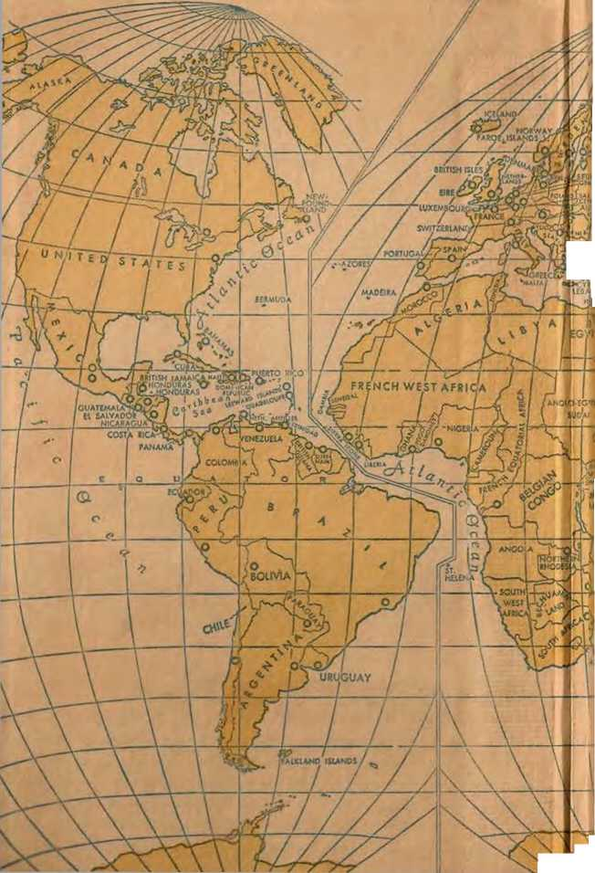
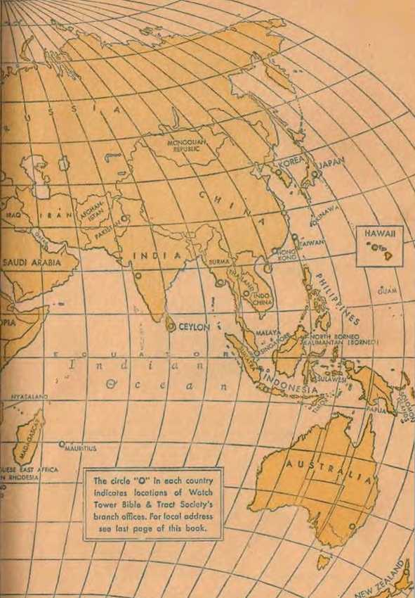
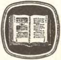
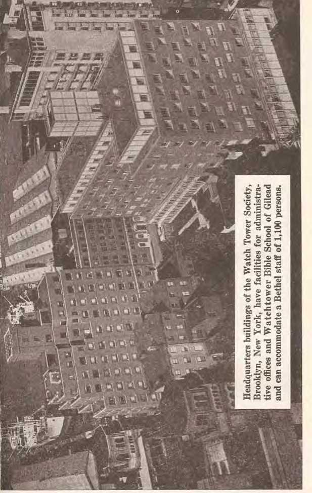
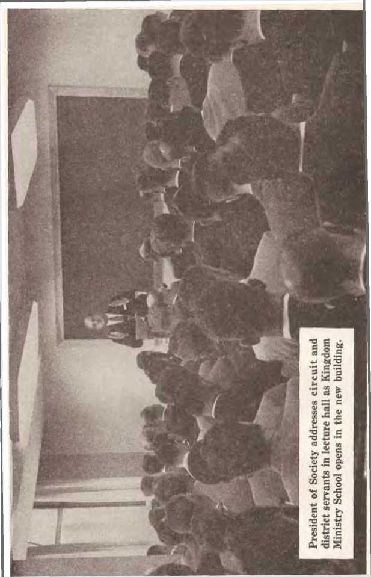

OF
JEHOVAH’S WITNESSES l' .
1961 YEARBOOK of Jehovah’s Witnesses containing report for the tervice year o} 1960 oQlto daily textt and comments
Corporate Publishers WATCH TOWER BIBLE & TRACT SOCIETY OF PENNSYLVANIA WATCHTOWER BIBLE AND TRACT SOCIETY OF NEW YORK, INC. INTERNATIONAL BIBLE STUDENTS ASSOCIATION 124 Columbia Heights Brooklyn 1, N.Y., U.S.A.
Branch offices appear on last page
Copyright, 1960, by Watch Tower Bible & Tract Society of Pennsylvania.
Made in the United States of America
WATCH TOWER BIBLE & TRACT SOCIETY OF PENNSYLVANIA
OFFICERS
N. H. KNORR President
F. W. FRANZ
Vice-President
GRANT SUITER Secretary-Treasurer
WATCHTOWER BIBLE AND TRACT SOCIETY OF NEW YORK, INC.
OFFICERS
N. H. KNORR President
F. W. FRANZ Vice-President GRANT SUITER Secretary-Treasurer
INTERNATIONAL BIBLE STUDENTS ASSOCIATION
OFFICERS
N. H. KNORR President
A. PRYCE HUGHES Vice-President
E. C. CHITTY Secretary
GRANT SUITER Asst. Secretary-Treasurer
Page
Central African Republic . 111
Congo, Republic of the ... 89
Congo, Republic of the .. 109
Leeward Islands (Antigua) 184
Page
Netherlands Antilles (Curasao) ..
Nyasaland .............. 215
Okinawa ................ 175
Puerto Rico ............ 230
Romania ................ 283
St- Croix ................ . .232
Senegal Republic ........ 144
Tobago ............------... 2'64
Togoland Republic ....... 150
Tunisia, Republic of ..... 144
Turks and Caicos Islands . 172
Union of Soviet Socialistic
United Arab Republic ... 266
U nited States of America . 65
Service year chart, page 36
Pictures: headquarters buildings at Brooklyn, N.YM and entrance to new Kingdom Hall, insert after page 64; dedication of new building, and president speaking at Kingdom Ministry School opening, insert after day’s text and comment for June 26
Building is a pleasure! Over the centuries man has made great progress in building, and what he is now making in the way of new things is truly amazing. Man has built comfortable homes, mammoth factories, automatic machines, huge bridges, unique skyscrapers, jet airliners, and yet this does not satisfy. Some want to live in outer space! But are all these constructive achievements appreciated by man, or does man prefer to be a destroyer? How often have you picked up your daily paper to read in the headlines—WAR? How many pictures have you seen, how many stories have you read, how many history books have you studied about war? Yes, you have seen the destruction that man has brought upon his own work. Men spend billions of dollars and unnumbered man-hours of work building for their own enjoyment. Then other men, or perhaps even the builders themselves, bring about the destruction of their projects. Is this building to the future?
In just the past few years war has leveled many great cities to the ground. Today no one knows if the city in which he lives will be leveled to the ground tomorrow. What is wrong with man, the builder? Has he no sense or reason? Has all the world gone mad? Where is security? How disturbing to observe the great statesmen in the world, assembled in the United Nations, quarreling! Now this one, then that one, vies for power and world
domination. Even the great religious systems of Christendom are not able to get together. The powerful political organizations inside the different nations do not see eye to eye. Big business is selfishly grasping for power everywhere. True, they all build, but are they building just to destroy? Are they pursuing the policy, Rule or ruin? How foolish! Solomon wisely wrote: “The truly wise woman has built up her house, but the foolish one tears it down with her own hands.” —Prov. 14:1.
Jesus Christ, the Leader of Christianity, gave the right and only solution for peace and prosperity and told his followers to seek first the kingdom of God and his righteousness. Does Christendom seek that kingdom today? Certainly not! Then’ great hope is the United Nations. Jesus, however, taught the first Christians to pray, “Let your kingdom come. Let your will come to pass," but Christendom’s clergy pray for the United Nations as man’s only hope. The leaders in government and religion are blind guides, just as Jesus said: “Every plant that my heavenly Father did not plant will be uprooted. Let them be. Blind guides is what they are. If, then, a blind man guides a blind man, both will fall into a pit.” (Matt. 15: 13, 14) In the pit is where all the foolish ones will find themselves at the battle of Armageddon.
What this world needs is someone who can build and keep on building into the future. All eailhly rulers for the past six thousand years have built nothing lasting. Where are their kingdoms now? Look at the changes since 1914! The facts prove man needs a righteous leader with wisdom who wants to do God’s will, not man’s. With the majority of mankind hungry, poorly housed and not well educated, there must be someone better than anyone we have had who can lead the people. The Word of God says there is, in these words of invitation: “Incline your eai- and come to me. Listen, and your soul will keep alive, and I shall readily conclude with you people an indefinitely lasting covenant respecting the loving-kindnesses to David that are faithful. Look! As a witness to the national groups I have given him, as a leader and commander to the national groups.” (Isa. 55:3, 4) That leader is Christ Jesus, the promised One who can and will bless all the families of the earth.
BUILDING THE CHRISTIAN CONGREGATION
This wisest of all men who ever walked upon this earth said: “Who of you that wants to build a tower does not first sit down and figure out the expense, to see if he has enough to complete it? Otherwise, he might lay its foundation but not have the funds to finish it, and all the onlookers might start to ridicule him, saying: ‘This man started to build but had not the funds to finish.’ ” (Luke 14:28-30) Jesus started to build God’s kingdom class, the Christian congregation, 1900 years ago. (Matt. 16:18) Today he is establishing it in the heavens to rule the new world with him. To finish building the new world of righteousness he must soon destroy the Devil, the god of this evil world, and his wicked system of things on this earth. Then will come the paradise new earth. But what building work has been going on under Christ’s direction in proof of this statement?
Moses, the prophet of Israel, was a great leader and an organizer of a nation whose God was Jehovah. There was one, though, even greater than Moses. “In fact, Moses said: ‘Jehovah God will produce for you from among your brothers a prophet like me. You must listen to him according to all the things he speaks to you. Indeed, any soul that does not listen to that Prophet wall be completely destroyed from among tire people.’ ” (Acts 3:22, 23) That one was Christ Jesus. Moses had led an organization of millions of people out of the land of Egypt. God had prepared this people and made them into a nation and then appointed Moses to be their leader and mediator. But when Jesus came to earth he had to start building a new organization. He was sent to the lost sheep of Israel. He preached to them that the kingdom of the heavens was at hand. In advance of him, his forerunner John the Baptist had got “ready for Jehovah a prepared people.” (Luke 1:17) Jesus Christ was to lead these to begin building a new organization. When he started his Christian ministry he went to John the Baptist. John directed his followers to Jesus. Jesus had to build something new, because the old was just a picture or a shadow of the new. Jesus was to build a spiritual house with those who had faith in the tine God. He had a big task. Would he be successful? Success meant life for men and women of faith.
Life is interesting and to be enjoyed. Life is what man wants to hold on to. Without life man can do nothing. Now the way of everlasting life was to be opened up to mankind through Christ Jesus, because God gave his Son “in order that everyone exercising faith in him might not be destroyed but have everlasting life.” (John 3:16) It was this Son of God who said: “I am the way and the truth and the life. No one comes to the Father except through me.” (John 14:6) Jesus really opened up the way of life for all faithful followers. He called twelve, taught them and sent them out to preach just as he did. He gathered around himself men who loved truth and righteousness, and with these he began to build a new organization. There was a small number, or a remnant, of the Jews in Jesus’ days, lovers of righteousness, who accepted God’s way of getting eternal life. Long before then Micah, as God’s spokesman, wrote: “I shall without fail collect the remaining ones of Israel together. In unity I shall set them, like a flock in the pen, like a drove in the midst of its pasture; they will be noisy because of men.” (Mic. 2:12) Jesus Christ, a good shepherd, gathered the men of faith and wisdom and brought them together “like a flock in the pen.” There they would be secure, under the guidance of the Master, and especially under the protection of their God, Jehovah. Having brought them together, he was here able to teach them and feed them with spiritual food, building them up so that they, too, could go out into the world and be ministers themselves and still be at unity or together like a drove in a pasture or a flock in a pen. They would always be one flock no matter where each individual would be.
AN ENDURING, UNIFIED ORGANIZATION
Jesus finished his earthly work. He died upon the torture stake at the hands of those opposed to God’s kingdom, both the religious and political rulers. On the third day after his death he was raised from the dead by Jehovah’s power as an immortal heavenly creature. What would happen to this new organization that he had built up around himself? They had been invited into a new covenant. They would be the first ones of a little flock of whom Jesus said: “Have no fear, little flock, because your Father has approved of giving you the kingdom.” (Luke 12:32) Would they stay together now, as it were, in a pen, feeling the same security as they did when Christ Jesus was with them? Would they continue building what Jesus had started?
The facts show that at Pentecost these same faithful followers of Christ Jesus were still together, and then God’s holy spirit descended upon them and they “started to speak in different tongues”; and from then on the preaching of the good news of God’s kingdom took on a new impetus. On that occasion Peter spoke to a great crowd of people, and the historian says: “Those who embraced his word heartily were baptized, and on that day about three thousand souls were added.” (Acts 2:41) Now what did these newly converted Jews do when they dedicated themselves to this Christian way of worshiping God? “They continued devoting themselves to the teaching of the apostles and to association together.” (Acts 2:42) Here we see the congregation of God, the new spiritual Israel, being built up and trained for bigger work.
Paul, an aggressive apostle of Jesus Christ, was a great builder too, and a true, faithful follower of his Master. He gathered together those who dedicated their lives to Jehovah's service and organized them into congregations. It was he who said: “According to the undeserved kindness of God which was given to me, as a wise director of works I laid a foundation, but someone else is building on it. But let each one keep watching how he is building on it. For no man can lay any other' foundation than what is laid, which is Jesus Christ.” (1 Cor. 3:10,11) Paul built to the future, but always on the true rock Jesus Christ. He knew that he wras building new Christians into the structure of the Christian organization, Jehovah’s theocratic organization. He was not trying to build a sect with himself as its foundation. This would cause division and would be a bad example. That is why he stated so positively to the Corinthians: “What, then, is Apollos? Yes, what is Paul? Ministers through whom you became believers, even as the Lord granted each one. I planted, Apollos watered, but God kept making it grow; so that neither is he that plants anything nor is he that waters, but God who makes it grow. Now he that plants and he that waters are one, but each person will receive his own reward according to his own labor. For we are God’s fellow workers. You people are God’s field under cultivation, God’s building.”—1 Cor. 3:5-9.
Paul had the true perspective of what it meant to be a Christian in the congregation of God. The whole congregation of spiritual Israelites was God’s. The great gathering work taking place after Jesus died upon the torture stake was to be to God’s glory. The spiritual Israelites were taken into the new covenant and commissioned to preach God’s kingdom everywhere. They therefore made disciples of people of all nations, and these people from all national groups were being baptized in the name of the Father, the Son and the holy spirit. Jesus had once been Jehovah’s special ambassador here upon the earth, but now all these newly dedicated Christians had to be ambassadors. That is why Paul emphatically told the Corinthians: “We are therefore ambassadors substituting for Christ, as though God were making entreaty through us. As substitutes for Christ we beg: ‘Become reconciled to God.’ ” (2 Cor. 5:20) The work of reconciliation must go on! Instead of Christ preaching, all his faithful followers must minister, each one being an ambassador. Each individual was a substitute for Christ. Not just the appointed overseers of the many congregations, but all others associated with the apostles and ministerial servants were such substitutes.
Peter agreed with Paul as to the organization. There could be only one organization, and that one must be built on Christ and be “God’s building.” Each believing individual begotten by God’s holy spirit comes into Jehovah’s organization as a living stone. Each one becomes part of God’s “spiritual house.” Paul called it “God’s building." Christ Jesus, of course, was the first true “living stone” of this new building or “spiritual house.” Peter said: “Coming to him as to a living stone, rejected, it is true, by men, but chosen, precious, with God, you yourselves also as living stones are being built up a spiritual house for the purpose of a holy priesthood, to offer up spiritual sacrifices acceptable to God through Jesus Christ.” (1 Pet. 2:4, 5) Peter, Paul and all the other apostles, along with thousands of others who made up the Christian church of the first century, preached so as to “offer up spiritual sacrifices acceptable to God,” and really proved to be living stones in God’s building, his one congregation. All these Christians together make up God’s building, and they kept building to the future. Their determination was to remain in this “spiritual house” and never be rejected. There is only one way that anyone can remain in this “spiritual house,” and that is by being faithful in doing the will of Jehovah God. One of the ways to prove faithful is to follow Jesus’ admonition: “Go therefore and make disciples of people of all the nations, . . . teaching them to observe all the things I have commanded you.”—Matt 28:19, 20.
The early church was held in unity because each one had Jehovah’s spirit, and put confidence in the written Word of God. God’s spirit and His Word cemented this Christian congregation into one, into “God’s building” or “spiritual house.” Peter, when addressing Christians, showed the importance of the Holy Scriptures. He said: “If anyone speaks, let him speak as it were the sacred pronouncements of God; if anyone ministers, let him minister as dependent on the strength which God supplies; so that in all things God may be glorified through Jesus Christ.” (1 Pet. 4:11) From that day to this the Scriptural admonition is the same: use the Holy Scriptures; speak the “sacred pronouncements of God.” The final gathering of those who make up the “spiritual house” of God is now going on in these last days. The Scriptures show there is a remnant of this “spiritual house" still on earth and still doing that great work that Christ Jesus began. They are at unity. As in the days of Jesus, so today Jehovah says through his prophet: “In unity I shall set them, like a flock in the pen, like a drove in the midst of its pasture; they will be noisy because of men.” (Mic. 2:12) World-wide Jehovah's witnesses can be heard, in all nations, but still as one voice, declaring the good news of God’s kingdom.
BUILDING WITH THE CHRISTIAN CONGREGATION
Being gathered together with this “little flock” we find today a great crowd of Christian people doing the same joyful work. How is this? Because hundreds of thousands of people are today finding the truth in God’s Word and dedicating their lives to God’s service. They come into God’s organization with the remnant of the “little flock” to find a place of security, “like a flock in the pen," There they find peace and safety from everything that has disturbed them on the outside. In the study of the Scriptures, they see that they will be safe from Jehovah’s anger if they seek Jehovah and come under the Kingdom’s rule. They have hearkened to Jehovah’s words: “Seek Jehovah, ail you meek ones of the earth, who have practiced His own judicial decision. Seek righteousness, seek meekness. Probably you may be concealed in the day of Jehovah’s anger.” (Zeph. 2:3) This great crowd believe this and now have a sense of security in the strong Christian organization, and that is most satisfying. They have pleasure in associating with the congregation of Jehovah’s witnesses, for they have come into God’s congregation.
In the more than 20,000 congregations of God’s people throughout the world we see the remnant of the “little flock" and this great crowd fully believing Paul’s words about congregation meet-
ings when he said: “Let us consider' one another to incite to love and right works, not forsaking the gathering of ourselves together, as some have the custom, but encouraging one another, and all the more so as you behold the day drawing near.” (Heb. 10:24, 25) These Christians know that congregation meetings are upbuilding. Here the Christian is strengthened. He sees the organization and how it functions. He sees how it is held together by love, love for Jehovah God and love for his brothers. Furthermore, each individual in the congregation of God has the opportunity of expressing himself so as to incite others to love and right works. Besides that, each one in the congregation can keep busy preaching the good news of the kingdom of God. This spirit of telling out the good news permeates the entire organization. All together this great body of Jehovah’s witnesses is building to the future. In their daily lives they show they are seeking meekness and righteousness, and by staying together in the Christian organization they will be concealed in the day of Jehovah’s anger during the battle of the great day of God the Almighty.
The “great crowd” see themselves in Isaiah’s prophecy: “It must occur in the final part of the days . . . the mountain of the house of Jehovah will become firmly established above the top of tlie mountains, and it will certainly be lifted up above the hills, and to it all the nations must stream. And many peoples will certainly go and say: ‘Come, you people, and let us go up to the mountain of Jehovah, to the house of the God of Jacob, and he will instruct us about his ways and we will walk in his paths.’ Foi’ out of Zion law will go forth, and the word of Jehovah out of Jerusalem. And he will certainly render judgment among the nations and set matters straight respecting many peoples. And they will have to beat their swords into plowshares and their spears into
pruning shears. Nation will not lift up sword against nation, neither will they learn war any more.”—Isa. 2:2-4.
Those who “go up to the mountain of Jehovah” must draw away from this old world and its unrighteousness and come to Jehovah’s house and live together in unity, “like a flock in the pen.” They will now rejoice because they have put away “wrath, anger, injuriousness, abusive speech, and obscene talk,” out of their mouth. (Col. 3:8, 9) Having built to the future they will be instructed in His ways and walk in His paths, and thus enjoy security.
How can one maintain this security? By just being associated with the organization of Jehovah’s witnesses? No, each individual must do building in a specific way. The strength of the organization comes according to the strength of each dedicated Christian. The congregation remains strong and devoted to its work according to the individuals who make up that organization or structure. The Christian congregation of God would crumble if there was no unity or oneness in thought and action on the part of all members. Individually each person in Jehovah’s congregation must pay close attention to himself and build properly. He must take heed to Paul’s words when he said: “The fruitage of the spirit is love, joy, peace, longsuffering, kindness, goodness, faith, mildness, self-control.” (Gal. 5:22, 23) As a Christian are you interested in having these qualities? If you are, then not only as an individual must you stay in association with the congregation of Jehovah God, but building must take place in your own heart and mind. Bringing forth these qualities or fruits is an absolute necessity in addition to your being part of God’s congregation. Prove yourself to be a Christian bearing the fruitage of the spirit.
SHOWING FRUITAGE OF THE SPIRIT
The spirit of this world produces the “works of the flesh.” They are very manifest Paul says they are “fornication, uncleanness, loose conduct, idolatry, practice of spiritism, hatreds, strife, jealousy, fits of anger, contentions, divisions, sects, envies, drunken bouts, revelries, and things like these.” “As to these things I am forewarning you, the same way as I did forewarn you, that those who practice such things will not inherit God’s kingdom.” (Gal. 5:19-21) These are some of the things, then, one must be sure to get rid of if he wants everlasting life. Paul’s description surely fits this world today just as it did the ancient Roman world he lived in. But can a Christian live today in a world like this and change? Yes, even though surrounded by people doing “the works of the flesh." The Christian can produce the fruitage of 1 he spirit. Certainly Paul and all the other inspired writers would not tell us to do so if it could not be done through Jehovah’s spirit.
EXERCISING LOVE
In order to produce the “fruitage of the spirit” the Christian must first of all love Jehovah God, which would mean following the great commandment that Jesus quoted, namely: “You must love Jehovah your God with your whole heart and with your whole soul and with your whole mind.” Jesus added: “The second, like it, is this: ‘You must love your neighbor as yourself.’ ” (Matt. 22:37, 39) That means loving a lot; but it means your life too.
In Galatians 5:22 love is described by Paul as the first fruit that must be manifest on the part of a Christian. This great lover of God and of his Son, Jesus Christ, fought for Christianity with the “sword of the spirit.” He defined it as God’s Word. (Eph. 6:17) Paul did not hate men; he loved men. He wanted men to know the truth. Paul, being a
man full of love, had a lot to say about it, but he
found it was rather difficult to give a concise description of love. In the thirteenth chapter of First \ Corinthians he tells us that even ‘though he spoke with the tongues of men and of angels and did not have love, then he would sound like a piece of brass or a clashing cymbal. Even if he had the \ gift of prophesying and understood all the sacred / secrets of God and had the greatest faith of any
man in the world, sufficient to transplant moun-1 tains, but he did not have love, he would amount \ to nothing.’ What a traveler and worker Paul was!
IWhat energy he spent in the service! He did not ' spare his life. He poured it out in preaching the (I good news. To a Greek Paul was a Greek, to a Jew a Jew. Yet, if he did not have love, love for Jeho-
Lyah God, his Son, and his Christian brothers, Paul said: ~--I am nothing.” Love, he said, is obliging.
■. Paul did things f or people, not wanting or expect-1 ing a return! When observing'The success, of a 'brother he was not jealous of sucli^n individual,,1 [because love is not jealous. j
I A Christian must be interested in just one thing, ; and that is the true worship of Jehovah. In per- \ forming that worship the Christian does not brag \ /about what he has done. Love never gets puffed / up because of accomplishments; and certainly love V / never behaves indecently. Love is expressed in1 J| ' good conduct. A Christian showing love does not U.
continue to live like the world, even though he is Iff in it. Love makes him change his course of action V so as to follow the right way. 1
Producing this first fruit of the spirit, love, the
Christian will not always be looking after his own interests, alvvays being first and superior. He will not be provoked at every little thing that someone else does, because love does not become provoked. And when someone does something against the \ Christian, or even goes so far as to injure him, he, ^having this fruit of the spirit, love, will not evert keep account of the injury. When something happens to a Christian that is not right or just, love is not going to rejoice over unrighteousness. There is only one thing that love can rejoice in, and that is in the truth.
Love was an attribute that Jehovah God put in the perfect man, Adam. Why not reinstate it? Furthermore, “God is love,” and he is the one we worship. Love is a necessary quality for every Christian. He cannot get along without it. It is urgent upon every Christian that he stop to think once in a while as to how much he loves other people. How much does he love his brothers? The measuring rod whereby we can determine whether we are a Christian or not is love. Jesus said: “By this all will know that you are my disciples, if you have love among yourselves.”—John 13:35.
Are you afraid to talk to people about your belief in the Bible? Do you claim to be a Christian, and still fear in going from house to house, doing the same kind of work Jesus and his disciples did? Are you afraid to express yourself even to your own brothers in a congregation meeting? Do you say, “Yes, I am afraid”? Then you do not have perfect love, and you know there is room for improvement. John, who truly loved the Master, wrote this: “There is no fear in love, but perfect love throws fear outside, because fear exercises a restraint.” (1 John 4:18) Is there a restraint on you that holds you back from expressing your Christian belief? If that fear exists, then there is some branch cleaning to be done so that the bearing of more fruit will be possible. Jesus said: ‘Every branch bearing fruit he cleans, that it may bear more fruit’; and he also said: “Every branch in me not bearing fruit he takes away.” (John 15: 2) Do you want to be built up by being pruned or be completely lopped off the vine as a nonproducer of the fruitage of the spirit?
“Knowledge puffs up, but love builds up.” (1 Cor. 8:1) Christians must show love and build. Love is not just a word to be used promiscuously. It is a word full of expressive meaning. Love is alive, active. An individual who has this quality, love, will show it everyday and in everything that he does. “In brotherly love have tender affection for one another. In showing honor to one another take the lead.” (Rom. 12:10) Love, while just one of the fruitages of the spirit, is the principal one. It is basic, fundamental, because all the other fruitage of the spirit is different aspects of the expression of love. They all keep love in action. Therefore cultivate these qualities and show forth more love.
JOY AND PEACE
Joy is something a Christian must have, or get, because it is the second fruit of the spirit mentioned by Paul. What does it mean to have joy? Joy is “an emotion of keen or lively pleasure arising from present or expected good.” (The American College Dictionary) A Christian’s greatest joy comes because of preaching, from hearing good news and experiences of those who have done so. That is how it was with the early Christians. We read at Acts 15:3: “Accordingly, after being conducted part way by the congregation, these men continued on their way through both Phoenicia and Samaria, relating in detail the conversion of people of the nations, and they were causing great joy to all the brothers.” How was this “great joy” caused? By “relating in detail the conversion of the people of the nations.” They had talked to people about God’s kingdom. They had wonderful experiences in field service to tell others. This brought great joy to the hearers and the tellers. Hearing about other people listening to the truth and then coming into the truth brings joy. Love made the disciples preach; joy was the result. —Acts 13:45-52; 2 Cor. 7:13.
Peace is a fruitage of the spirit. One who is peaceful is “free from strife or commotion.” He is serene or tranquil. Peter admonished Christians to “seek peace and pursue it.” The way he told them to pursue tliis wonderful way of life was like this: “He that would love life and see good days, let him restrain his tongue from what is injurious and his lips from speaking deceitfully, but let him turn away from what is injurious and do what is good; let him seek peace and pursue it.” (1 Pet. 3: 10,11) For one to enjoy peace with his fellow man he has to watch his tongue. Words can cause a great amount of trouble, especially the injurious ones. Good words establish good relations. But when one starts speaking deceitfully and injuriously, peace soon flees. A peaceful individual, with a peaceful message, can talk about Jesus Christ and the kingdom of the heavens and how God will bring “upon earth peace among men of good-will.” (Luke 2:14) A Christian will use his tongue to bless. Paul told the Corinthians: “Live peaceably, and the God of love and of peace will be with you.” —2 Cor. 13:11; Matt. 10:12-14.
LONG-SUFFERING
“Long and patient endurance of injury or provocation” is what is termed long-suffering. This is a fruitage of the spirit. Some people’s long-suffering has reached its limit in about thirty seconds, others’ in one or two minutes; but some are able to suffer the injury or provocation for a long time. Remember, Paul said that “love is long-suffering and obliging.” (1 Cor. 13:4) And he mentioned God’s long-suffering toward mankind when he wrote to the Romans: “Do you despise the riches of his kindness and forbearance and long-suffering, because you do not know that the kindly quality of God is trying to lead you to repentance?” (Rom, 2:4) Jesus certainly showed long-suffering toward Saul, who finally became converted and who said: “Nevertheless, the reason why I was shown mercy was that by means of me as the foremost case Christ Jesus might demonstrate all his longsuffering for a sample of those who are going to rest their faith on him for everlasting life.” (1 Tim. 1:16) Paul must have often reflected back to the days when he was a Pharisee persecuting the Christians, proud of his position and delighting in the ruination of the Christian organization. He was then a destroyer, not a builder. But ‘as he approached Damascus a light flashed around him* and he heard a voice say: “Saul, Saul, why are you persecuting me?” The facts show that Paul appreciated the long-suffering of Christ Jesus in that it allowed him to come to a knowledge of the truth.
All persons on earth today, and especially Christians, ought to show such gratitude to Jehovah God and Christ Jesus for their long-suffering in allowing them to live this long. Now they, too, can be long-suffering toward others when hearers do not agree with them. When they are, try to show them the way to everlasting life in God’s new world of righteousness. Show long-suffering toward your brothers too.—1 Thess. 5:15.
KINDNESS
Kindness, the fifth fruitage of the spirit listed, is something that can be expressed in so many ways. When one is kind he shows a ‘good or benevolent disposition, is considerate and helpful.’ Kindness is not something we show only to those we like. We must be kind to people we do not even know. Paul received such kindness and he made mention of it, saying: “And when we made it to safety, then we recognized that the island was called Malta. And the foreign-speaking people showed us extraordinary human kindness, for they kindled a fire and received all of us helpfully because of the rain that was falling and because of the cold.” (Acts 28:1, 2) These Maltese went out of their way to help the shipwrecked ones. They did not know these total strangers. They could have been invaders of the island. But these foreignspeaking people did not look at it that way. Here was an opportunity to show extraordinary human kindness.
Every Christian has that opportunity, sometimes in more ways than one. Jehovah’s witnesses try to show extraordinary human kindness by taking the message of life directly to the people in their homes, making back-calls on interested ones and conducting Bible studies, and this at great expense to themselves and with the use of much time. They ask nothing in return. Many people do not appreciate this kindness shown on the part of Jehovah’s witnesses. But still the kindness must continue, as this is the will of God. The Scriptures declare that all mankind must know that Jesus bought the whole human race by laying down his life. By so doing he has offered all men the gift of everlasting life, though not all will accept it. That will be each individual’s responsibility.
If a Christian is going to have this fruitage of the spirit, kindness, then it will have to be manifested in his daily activity toward all people, not just a selected few.
GOODNESS
Goodness is something to be admired. It means “moral excellence, virtue.” In order for Paul to emphasize goodness he makes it stand out by contrast. He says: “Let fornication and uncleanness of every kind or greediness not even be mentioned among you,... neither shameful conduct nor foolish talking nor obscene jesting. . . . For you know this, recognizing it for yourselves, that no fornicator or unclean person or greedy person—which means being an idolater—has any inheritance in the kingdom of the Christ and of God.” (Eph. 5:3-5) Paul then advises Christians that they must be separate from this type of people. There is no room in the lives of Christians to be associated with them. He says: “Therefore do not become partners with them; for you were once darkness, but you are now light in connection with the Lord. Go on walking as children of light, for the fruitage of the light consists of every kind of goodness and righteousness and truth.” (Eph. 5:7-9) Right, decent, respectable living, that is goodness. Even in this evil, degenerate world it is a necessary fruitage of the spirit, says Paul.
Goodness is a quality that must be guarded, and certainly it must be the goal of one who is dedicating his life to Jehovah’s service. Before anyone can be called a Christian he must put away shameful conduct. If we are going to produce within ourselves the fruits of the spirit and qualify ourselves for living in God’s new world, then we certainly must have this fruitage of the spirit, goodness.
FAITH
“Faith is the assured expection of things hoped for, the evident demonstration of realities though not beheld." (Heb. 11:1) That is the way Paul defined faith. A. Christian cannot be without faith, because “without faith it is impossible to win his good pleasure, for he that approaches God must believe that he is and that he becomes the rewarder of those earnestly seeking him.” (Heb. 11:6) The disciple James showed his faith, and he pointed out that faith must be backed up with works. (Jas. 2:26) If one believes in Jehovah God, Christ Jesus and his kingdom, then he will prove his belief by what he says, by what he does, by the way he lives.
A man’s faith can die, or become weak. Many individuals who at one time believed in Jesus Christ as the Redeemer and Savioi' of mankind have fallen away. They have turned to evolution. They reject the Bible. And still, such people call themselves Christians and go to Christendom's churches. James would say to them: “Thus, too, faith, if it does not have works, is dead in itself.” (Jas. 2:17) Faith is expressive. It makes proclamation. Paul said: “For with the heart one exercises faith for righteousness, but with the mouth one makes public declaration for salvation.” (Rom. 10:10) One’s faith becomes stronger when he uses his heart, mind and mouth in making a public declaration of his belief in God’s kingdom as man’s only hope. Jesus said: “This good news of the kingdom will be preached in all the inhabited earth for the purpose of a witness to all the nations, and then the accomplished end will come.” (Matt. 24:14) This is being done today not only by a remnant of the “little flock” who have faith and whom Jesus began gathering nineteen hundred years ago, but also by a “great crowd” of people from all nations who have the same kind of faith. Because of this faith on the part of the many Christian people great works have been done in these very troublesome days.
MILDNESS
Mildness is sometimes misunderstood for weakness. When one reads the life of Christ as told by the writers of the four Gospels he sees Jesus as a mild-tempered man. But be sure to read the 23rd chapter of Matthew and see Jesus as a forceful denouncer of wickedness. He was fearless. He had perfect love, and such love throws fear outside. With those who wanted to learn he was amiably gentle, tempered in his feelings and behavioi- toward all. Because of his mildness Jesus was able to teach people. He told them: “Become my disciples, for I am mild-tempered and lowly in heart, and you will find refreshment for your souls.” (Matt. 11:29) They put confidence in him. They did not become afraid when Jesus spoke plain truth, because he did it in love. They were ready to listen. Paul knew the value of mildness and said to Timothy: “A slave of the Lord does not need to fight.” Fighting is not the way to help one gain the truth. Paul went on to say: The Lord’s slave “needs to be tactful toward all, qualified to teach, keeping himself restrained under evil, instructing with mildness those not favorably disposed.” (2 Tim. 2:24, 25) The Word of God properly stated is what makes a person repent, not force.
What a different course the Roman Catholic Hierarchy, which still wields great power in the world today, took during the years of the Inquisition. That false religious body can never live down its history of torture, putting men and women on the rack, tearing their limbs out of their bodies, hanging persons by their thumbs. These inquisitors professing to be Christians—yes, priests, who arranged for Jews, Moors and heretics to suffer excruciating pain—certainly did not have a mild spirit. These religious leaders fought to drive people into the Roman Catholic Church. What have they accomplished by their wars and tortures? A world of peace and unity? No! False religion has been driving people away from God with its wars and crusades. Christianity will never be brought about by the use of carnal weapons. If anyone accepts the truth it will be because the minister is mild and patient toward those not favorably disposed toward the Bible message. Jesus used that method, and so did the apostles. True Christians today must use the same method. Mildness is a fruitage of God’s holy spirit, and its use brings lasting results in declaring God’s kingdom.
SELF-CONTROL
Self-control is hard for imperfect men to practice. Why make excuses? Try to exercise it. It is one of the fruits of the spirit. So it must be attainable. To have self-control means to be able to control oneself, one’s actions, words, eating and drinking habits, yes, one’s feelings. In Paul’s eyes one not able to have some self-control gets classified with a rather despicable crowd of people. Those having no self-control he classes with very disreputable individuals who the Bible says would be prevalent in the last days. In writing to Timothy he said: “But know this, that in the last days critical times hard to deal with will be here. For men will be lovers of themselves, lovers of money, self-assuming, haughty, blasphemers, disobedient to parents, without gratitude, with no loving-kindness, having no natural affection, not open to any agreement, slanderers, without self-control, fierce, without love of goodness.” (2 Tim. 3:1-3) Why be classed with such delinquents because of lack of self-control. Solomon wrote: “All his spirit is what a stupid one lets out, but he that is wise keeps it calm to the last.” (Prov. 29:11) If a Christian has no self-control, or loses what he has, how easy for him to slip back to the ways of the flesh and be disqualified so as not to inherit the blessings of God’s kingdom! How foolish, then, not to strive to produce this fruitage too, namely, self-control! One shows love if he has self-control.
All these fruitages of the spirit Paul contrasts with the works of the flesh. A change must take place when a believer dedicates himself to do the will of God. No longer can he act as the world does, but “those who belong to Christ Jesus impale the flesh together with its passions and desires." (Gal. 5:24) There must be a change, a building up of the individual. “If we are living by spirit, let us go on walking orderly also by spirit. Let us not become egotistical, stirring up competition with one another, envying one another.” (Gal. 5:25, 26) Bringing forth the fruitage of the spirit qualifies one to be in Jehovah’s New World society. So ‘paying constant attention to yourself and to your teaching’ does something for you. “You will save both yourself and those who listen to you.” (1 Tim. 4:16) Build yourself up by paying attention to your fruitage of the spirit, and at the same time help in making Jehovah’s New World society grow. Christians must be at unity with one another, showing oneness “like a flock in the pen, like a drove in the midst of its pasture.” Feed with Jehovah’s sheep and keep at unity, for “in the house of the righteous one there is an abundant store, but in the produce of the wicked one there is troublesomeness.”—Prov. 15:6.
APPLY YOUR HEARTS
When one keeps the Word of God first in his mind he is going to gather a good treasure. Working continually with the Word of God brings great gain and increases one’s treasure. No matter how much of this treasure one gives away, by word of mouth or the printed page, the treasure itself becomes greater. Moses was well aware of this fact. Just before the children of Israel were to cross the Jordan into the Promised Land he said to the Israelites under inspiration: “Apply your hearts to all the words that I am speaking in warning to you today. . . . For it is no valueless word for you, but it means your life, and by this word you may lengthen your days upon the soil to which you are crossing the Jordan to take possession of it.”—Deut. 32:45-47.
Jehovah’s words cany valuable information, and, in fact, they are words of life. It means great
wealth, a treasure, to heed them. The individual who applies his heart to all the words that Jehovah speaks is the individual who will be doing the will of God. He is the one that will bring forth good treasure during his life and he will be a blessing to other people. Jesus said: “A good man brings forth good out of the good treasure of his heart, . . . for out of the heart’s abundance his mouth speaks.” (Luke 6:45) How necessary, then, to apply our hearts to God’s Word so as to have this good treasure. This good treasure is the Word of God.
The marvelous thing about doing good to others is the fact that goodness always replenishes itself. As we let the truth in our hearts overflow to others and preach the Word of God the truth never becomes diminished. It nevei- becomes exhausted. But, rather, it increases so that even greater riches can be given freely. It makes us think of the miracle that Jesus performed when he fed the great crowd and he told his disciples: “ ‘You give them something to eat.' They said to him: ‘We have nothing here but five loaves and two fishes.’ He said: ‘Bring them here to me.’ Next he commanded the crowds to recline on the grass and took the five loaves and two fishes, and, looking up to heaven, he said a blessing and, after breaking the loaves, he distributed them to the disciples, the disciples in turn to the crowds. So all ate and were satisfied, and they took up the surplus of fragments, twelve baskets full. Yet those eating comprised about five thousand men, besides women and children.” (Matt. 14:16-20) Jesus was very generous in his giving. He started out with five loaves and two fishes along with Jehovah’s blessing. So he could keep on giving, and after he had given them all they wanted he had more left than when he started. In fact, he had left over twelve baskets full of food!
Jehovah has provided the Holy Scriptures full of knowledge and wisdom and he has given his servants this written Word. The more we give out to others of what we learn from Jehovah’s Word, the more there is left for us to keep on giving. The more we work with the truth, the richer we become. God’s Word says: “The good man out of his good treasure sends out good things.’’ (Matt. 12:35) What a great, inexhaustible treasure the truth is! Of those who are faithful and use what they have, Jesus says: “To everyone that has, more will be given; but from the one that does not have, even what he has will be taken away.”—Luke 19:26.
RESULTS OF CHRISTIAN MINISTRY
Tlie prophet Moses knew it was necessary to listen to the words of Jehovah, and he said: “Apply your hearts to all the words that I am speaking. ... It means your life.” (Deut. 32:46, 47) The earnest endeavor of Jehovah's witnesses has been to make this truth known around the world. Last year, in 1960, they did make the truth known in 179 different nations, islands of the sea and protectorates. Under the direction of the Watch Tower Society’s eighty-five branch offices there have been 851,378 ordained ministers preaching the truth concerning the good news of God’s kingdom world-wide. These Christian people have given freely from the good treasure of their hearts by good works. Because of their global preaching activity in many tongues, talking to all kinds of people, Jehovah’s witnesses are now enjoying the regular co-operation of 47,896 more individuals than they did the year before. Their service year report shows a 6-percent increase in the number of persons regularly preaching with the organization.
A new peak of publishers was reached, too, during 1960. There have been as many as 916,332 different persons sharing in the preaching of the good news of God’s kingdom. Tins is great cause for rejoicing. These individuals have all used their treasure to do good, and if they continue faithful in the ministry and apply their hearts to the Word of God, theii' good treasure will become greater. This great crowd of people, numbering 916,332, are organized into 21,008 congregations. In these congregations Jehovah’s witnesses study the Word of God together, and they go out in the field ministry from house to house and in so doing put their faith into action. They all want to do good with their knowledge of God’s Word. These congregations, in turn, comprise 1,561 circuits, and these circuits are grouped into 194 districts situated throughout the world.
It is a joy to report that during the 1960 service year 69,027 persons were baptized in water in symbol of their dedication to the doing of Jehovah’s will. With these thousands of newly ordained ministers bringing forth good treasure from their hearts, many, many more thousands of people of good will will be reached with the good news of God’s kingdom. On April 10, 1960, there were 1,519,821 persons assembled at the Memorial service of Christ’s death. This was the world-wide attendance, and on that evening 13,911 individuals partook of the emblems served.
The eighty-five branch offices in the principal countries and islands of the earth direct the affairs of the districts, circuits and congregations of Jehovah’s witnesses. In these main offices of supervision known as Bethel homes there are 1,299 ordained Christian ministers working. In connection with many of these offices the Society has printing plants where Bibles, books, booklets, magazines, tracts and other information are printed in over 125 languages for the spreading of the good news by means of the printed page.
In order to help those who are sighing and crying because of the abominations that exist in the world Jehovah’s witnesses use much printed matter to aid people to get acquainted with God’s Word and to get a clearer understanding of the Holy Bible. To this end there were distributed in the field, which field is the world, 4,167,407 bound books and 12,372,784 booklets.
The gi’eatest aid that the Society has for helping believers in God’s Word to understand the Holy Scriptures is the Watchtower magazine, and each year special effort is put forth to obtain subscriptions for this magazine along with its companion magazine, the Awake! During the year the ministers who preached from house to house were able to obtain 1,317,009 new subscriptions. This was 70,035 more subscriptions than they obtained the previous year. Those who do not care to subscribe for the magazines quite often get individual copies, and Jehovah’s witnesses were able to distribute 97,082,433 individual copies of the Watchtower and Awake! magazines in their many languages. This was an increase of 4,771,655 over the previous year. While the distribution of books, booklets and magazines is very necessary in order to get this good news of the Kingdom preached, what does the most good for an individual interested in the truth is to study the Bible with one of Jehovah’s witnesses.
It takes much time for Jehovah's witnesses to call back and study the Bible, or one of the Society’s publications, with the people. However, it is truly a joy to do so. This is where the good treasure of the Christian’s heart can abound and can help the individual being studied with to have his heart filled with good treasure. Jehovah’s witnesses have made back-calls on interested people and have started home Bible studies. The number of return visits made totaled 44,440,977, an increase over last year of 200,759. Jehovah’s people also conducted hour-long Bible studies—and perhaps some of them were longer than that—to the number of 646,108 weekly. In other words, Christian teachers each week made calls on individuals to study the Bible with them in order to help them get a clear understanding of the purposes of Jehovah, that they might apply their hearts to all the words that Jehovah God has set forth in his Holy Scriptures. This is a marvelous free service that Jehovah’s witnesses render anyone, anywhere in the world. In carrying on this most important work they have increased their efforts to the point of conducting 41,033 more weekly home Bible studies this year than last year.
To distribute this tremendous amount of literature in its millions of copies and to make all these back-calls and conduct these home Bible studies, Jehovah’s witnesses have to spend millions of hours in preaching. In fact, during the year they discussed the Bible truths with the people of the world for 131,662,684 hours. This is 5,345,560 more hours than they spent in the preaching work during the previous year.
Jehovah’s witnesses are building to the future. They are interested in just one thing, everlasting life. With this they can carry on true worship of Jehovah God forever. They know that the life that is worth while will be theirs in the new world of righteousness under the kingdom of heaven that faithful men have prayed for for 1900 years: “Let your kingdom come. Let your will come to pass, as in heaven, also upon earth.” (Matt. 6:10) Before that time comes they have an obligation. They may not sit back and rest and feel so relaxed and satisfied that God must have a place in the new world for them. No, they must be energetic ministers. They must fully appreciate that God has given them the sword of the spirit, which is the Word of God, to wield. They must do the will of their Master and must walk in the footsteps of Christ Jesus. Therefore, they must think of the future. They build to it physically and spiritually. By building physically we mean they must work at building many new branch offices throughout the world, many new Kingdom Halls, larger printing plants where more literature can be produced for a greater witness for God’s kingdom. They must work for increasing the visible theocratic organization of Jehovah’s witnesses. At the same time they must build themselves up spiritually so that a good treasure can come out of their good hearts.
Knowing that the Wal'd of God contains the words of life, Jehovah’s people in these many printing establishments throughout the world have produced 7,998,010 bound books and 14,728,423 booklets. They have printed the Watchtower magazine in fifty-eight languages during the year to the total number of 90,898,182 copies. The Awake! magazine has been printed in twenty-three different languages and 78,947,503 copies came off the Society’s presses. The total number of magazines printed in the various printing plants of Jehovah’s witnesses during the 1960 service year reached to the number of 169,845,685, an increase of 9,445,452 copies over the previous year. The truth of God’s kingdom must be made known in all the inhabited earth for the purpose of a witness.
PIONEERS
Jehovah’s witnesses everywhere are happy that the people are reading these magazines. These elated publications bring much information about present world conditions to the attention of the people. Marvelously today’s world conditions are fulfilling Bible prophecy. By the study of these publications with the Bible one is able to keep “a tight grip on the word of life.” (Phil. 2:16) All of God’s servants in His New World society rejoice that so many persons have applied their hearts to all the words of Jehovah, and, as pointed out, 916,332 individuals did good preaching work during the 1960 service year. Out of this great number there were 5,890 who engaged in special pioneer activity. These special representatives of the Society were sent into isolated territory to work or to organize small groups of God’s people in order that they might be built up spiritually. Their task was a hard one, but their Christian experiences were worth it all.
In addition to this special group of pioneers there were 24,694 regular pioneers working with congregations. These regular pioneers were putting in an average of 95 to 100 hours each month preaching the good news of the Kingdom. While the congregation publisher devotes approximately ten hours, or a little more on the average, in actual house-to-house work and in conducting Bible studies in the homes of the people, these pioneers devote 100 hours or thereabouts, and the special pioneers spend around 150 hours in preaching from house to house and studying the Bible in the homes of the people. It is seen, then, that there is a small group of 30,584 pioneers and special pioneers who are doing a great work in all parts of the earth. It is the Society’s hope that many of the congregation publishers will be able to arrange their affairs so as to join the pioneer ranks and eventually the special pioneer ranks.
The increase in the pioneer service over the previous year was 1,896. This was good, but there is still much room in the world today for pioneer ministers, and we urge all Christians to give this matter prayerful and careful thought. The field is great.
The Society aided the 5,148 special pioneer publishers and its 742 missionaries to remain in their isolated territories. The funds that the Society spent in their behalf during the year amounted to $2,089,648.86. Then, too, the Society sent circuit servants, district servants and special representatives to serve congregations and isolated Christian groups throughout the year, and it spent $402,-901.13 for this activity. So to help the expansion work in the field of preaching the good news alone the Society spent during the 1960 service year $2,492,549.99.
We want to take this occasion to thank all the Christian people who have contributed funds to the Watch Tower Bible and Tract Society in order to aid that Society in the expansion of the preaching and teaching work. If it were not for their contributions to the Watch Tower Society, this great work of spreading the good news of the Kingdom could not be done to such a great extent as it is being done today.
The Word of God is powerful. It is sharper than any two-edged sword. When individuals take time to read the Word of God, study it with a Christian and believe it they are storing up a treasure in their hearts. As Jesus said: “A good man brings forth good out of the good treasure of his heart,... for out of the heart’s abundance his mouth speaks.” Let everyone who loves truth apply his heart to the Word of God, “for it is no valueless word for you,” but it means your life.
19fi0 SERVICE YEAR REPORT OF
|
Country |
1959 Av. Pubs. |
I960 Av. Pubs. |
%Inc. Peak |
Av. Pio. Pubs. |
No. Public Meet’gs | |
|
over 1959 |
Pubs. 1960 | |||||
|
U.S. of America |
221,240 |
232,632 |
5 |
250,900 |
8,664 |
240,967 |
|
Alaska |
237 |
282 |
19 |
312 |
29 |
259 |
|
Bermuda |
34 |
34 |
43 |
2 |
58 | |
|
Eritrea |
56 |
94 |
68 |
102 |
9 |
155 |
|
Guam |
18 |
19 |
6 |
31 |
2 |
19 |
|
Iceland |
24 |
36 |
50 |
41 |
13 |
32 |
|
Argentina |
5,983 |
6,791 |
13 |
7,204 |
382 |
5,443 |
|
Australia |
11,834 |
12,746 |
8 |
14,090 |
466 |
11,494 |
|
New Britain |
24 |
67 |
179 |
79 |
5 |
67 |
|
New Guinea |
50 |
63 |
26 |
80 |
4 |
125 |
|
Papua |
218 |
257 |
18 |
284 |
9 |
131 |
|
Solomon Islands |
26 |
119 |
358 |
135 |
3 |
170 |
|
Austria |
5,361 |
5,654 |
5 |
6,244 |
174 |
4,043 |
|
Bahamas |
152 |
168 |
10 |
180 |
21 |
97 |
|
Belgium |
5,565 |
6,228 |
12 |
7,065 |
193 |
4,251 |
|
Congo |
838 |
1,137 |
36 |
1,528 |
5 |
130 |
|
Bolivia |
354 |
390 |
10 |
446 |
46 |
443 |
|
Brazil |
15,971 |
18,711 |
17 |
20,321 |
817 |
19,097 |
|
British Guiana |
603 |
647 |
7 |
732 |
68 |
706 |
|
British Honduras |
200 |
209 |
5 |
223 |
24 |
129 |
|
British Isles |
40,884 |
43,650 |
7 |
47,126 |
1,577 |
49,991 |
|
Gibraltar |
14 |
New |
19 |
4 |
5 | |
|
Malta |
5 |
8 |
60 |
11 | ||
|
Burma |
144 |
168 |
17 |
201 |
32 |
164 |
|
Canada |
32.861 |
34,603 |
5 |
38,382 |
1,262 |
24,699 |
|
Ceylon |
166 |
195 |
17 |
206 |
45 |
177 |
|
Chile |
1,724 |
2,025 |
17 |
2,252 |
176 |
2,147 |
|
Colombia |
1,217 |
1,529 |
26 |
1,640 |
175 |
1,206 |
|
Congo Republic |
826 |
863 |
4 |
997 |
26 |
720 |
|
Central African Rep. 823 |
1,019 |
24 |
1,186 |
13 |
1,141 | |
|
Gabon Republic |
6 |
53 |
783 |
91 |
4 |
69 |
|
Tchad Republic |
5 |
11 |
120 |
12 |
1 | |
|
Costa Rica |
2,118 |
2,259 |
7 |
2,424 |
89 |
1,105 |
|
Cuba |
11,166 |
11,898 |
7 |
13,117 |
586 |
13,688 |
|
Cyprus |
435 |
460 |
6 |
500 |
17 |
185 |
|
Israel |
47 |
51 |
9 |
61 |
5 |
19 |
|
Denmark |
9,053 |
9,024 |
9,504 |
228 |
11,072 | |
|
Faroe Islands |
15 |
20 |
33 |
22 |
6 |
32 |
|
Greenland |
5 |
5 |
6 |
5 |
3 | |
|
Dominican Republic |
370 |
460 |
24 |
495 |
7 |
22 |
|
Ecuador |
488 |
585 |
20 |
633 |
84 |
943 |
|
Eire (Ireland) |
216 |
196 |
217 |
61 |
271 | |
|
El Salvador |
498 |
540 |
8 |
574 |
64 |
617 |
|
Ethiopia |
104 |
89 |
105 |
3 |
304 | |
JEHOVAH’S WITNESSES WORLD-WIDE
|
No. of |
Total |
Total |
New Individual |
Av. Bible | ||
|
Cong’s Literature |
Hours |
Subs. |
Magazines Back-Calls Studies | |||
|
4,170 |
6,993.727 |
36,480,690 |
782,673 |
41,690,433 |
12,488,605 |
193,920 |
|
6 |
12.108 |
67,296 |
1,496 |
63,749 |
22,804 |
326 |
|
1 |
2,091 |
4,776 |
262 |
9,409 |
2,719 |
42 |
|
10 |
4.143 |
28,652 |
180 |
1,350 |
14,260 |
144 |
|
1 |
1,300 |
4,931 |
245 |
5,122 |
1,503 |
24 |
|
1 |
4.991 |
22,035 |
809 |
26,479 |
7,776 |
76 |
|
205 |
128.126 |
1,327.294 |
14,766 |
1,116,751 |
588.443 |
6,660 |
|
356 |
249,558 |
1,973,043 |
25,349 |
2,178,631 |
632,223 |
8,989 |
|
1 |
510 |
18,469 |
5 |
462 |
9,894 |
88 |
|
3 |
598 |
14,172 |
60 |
607 |
5,826 |
64 |
|
7 |
4,493 |
41,275 |
102 |
9,409 |
10,974 |
189 |
|
2 |
593 |
28.908 |
13,987 |
128 | ||
|
182 |
108,815 |
808,107 |
4,386 |
870.757 |
366,600 |
4,075 |
|
4 |
13,307 |
42.616 |
659 |
47,675 |
18,009 |
294 |
|
116 |
181,502 |
919,662 |
7,142 |
1,061,710 |
310,105 |
3,690 |
|
8 |
848 |
361.006 |
33 |
188 |
121,607 |
1,122 |
|
14 |
18,332 |
100,230 |
1,728 |
103,982 |
32.295 |
463 |
|
G61 |
389,013 |
3,194.442 |
32,352 |
2,292,431 |
1,019,472 |
14,956 |
|
18 |
22.582 |
149,901 |
1,985 |
130,094 |
55,627 |
866 |
|
8 |
3,285 |
50,998 |
143 |
39,349 |
18,799 |
269 |
|
924 |
1,334,048 |
6,263,132 |
58,859 |
7,388,953 |
2,883,330 |
32,217 |
|
1 |
625 |
5,433 |
33 |
1,429 |
2,014 |
31 |
|
1 |
443 |
1,108 |
24 |
405 |
590 |
9 |
|
4 |
34,096 |
68,182 |
975 |
58,617 |
22.785 |
277 |
|
805 |
567.252 |
4,692,768 |
57,390 |
4,608,347 |
1,482,669 |
20,588 |
|
9 |
21.238 |
85,409 |
801 |
58,514 |
28,994 |
356 |
|
65 |
84,575 |
489,813 |
4,548 |
483,239 |
190,735 |
2,915 |
|
45 |
54,710 |
433.649 |
2,224 |
279,516 |
157,090 |
1,995 |
|
11 |
4.593 |
185.383 |
67,500 |
783 | ||
|
15 |
3.076 |
164,290 |
94,340 |
836 | ||
|
120 |
1,587 |
547 |
8 | |||
|
2 |
4,457 |
16,564 |
7,045 |
87 | ||
|
64 |
24,593 |
355.655 |
886 |
127,927 |
115,461 |
1,845 |
|
352 |
141,784 |
2,076.957 |
14,387 |
1,684,510 |
746,829 |
11,871 |
|
11 |
8,647 |
62,436 |
507 |
23,421 |
21,613 |
262 |
|
2 |
4,980 |
14,596 |
334 |
10,457 |
5,355 |
66 |
|
203 |
144.332 |
1,112,271 |
2,813 |
1,048,708 |
453,237 |
4,634 |
|
1 |
2,811 |
10,617 |
57 |
14,109 |
4,291 |
19 |
|
1,127 |
5,477 |
11 |
1,983 |
2,493 |
21 | |
|
15 |
2.872 |
55,388 |
3 |
116 |
34.681 |
6,164 |
|
21 |
29.185 |
194.292 |
1,474 |
146,625 |
70,220 |
845 |
|
4 |
6,659 |
108.266 |
239 |
42,701 |
27,990 |
160 |
|
14 |
16,232 |
150.040 |
1,058 |
97,188 |
52,812 |
718 |
|
10 |
419 |
16,028 |
12 |
193 |
4,651 |
123 |
|
Country |
1959 Av. Pubs. |
1960 Av. Pubs. |
%Inc. Peak |
Av. Pio. Pubs. |
No. Public Meet’gs | |
|
over 1959 |
Pubs. 1960 | |||||
|
Fiji |
153 |
182 |
19 |
205 |
15 |
256 |
|
American Samoa |
32 |
27 |
36 |
12 |
11 | |
|
New Caledonia |
27 |
19 |
22 |
2 |
26 | |
|
New Hebrides |
2 |
2 |
2 | |||
|
Tahiti |
14 |
17 |
21 |
28 |
2 |
9 |
|
Western Samoa |
50 |
50 |
57 |
2 |
11 | |
|
Finland |
7,475 |
7,740 |
4 |
8,290 |
285 |
9,552 |
|
France |
12,983 |
14,231 |
10 |
15,439 |
335 |
10,959 |
|
Algeria |
113 |
138 |
22 |
153 |
8 |
36 |
|
Cameroon |
3,858 |
4,266 |
11 |
4.483 |
179 |
5,523 |
|
Guinea |
2 |
3 |
50 |
8 | ||
|
Madagascar |
33 |
52 |
58 |
61 |
S |
28 |
|
Mall (Senegal) |
23 |
21 |
24 |
3 |
4 | |
|
Tunisia |
41 |
52 |
27 |
62 |
4 |
50 |
|
Germany, West |
62.393 |
65.179 |
4 |
68,606 |
1,469 |
50,596 |
|
Ghana |
7,103 |
7,657 |
8 |
8,172 |
395 |
6,750 |
|
Gambia |
6 |
3 |
8 |
2 |
18 | |
|
Ivory Coast |
46 |
64 |
39 |
101 |
5 |
45 |
|
Togoland |
196 |
259 |
32 |
289 |
18 |
169 |
|
Greece |
6,499 |
7,337 |
13 |
8,213 |
89 |
1,891 |
|
Guadeloupe |
209 |
239 |
14 |
251 |
13 |
236 |
|
French Guiana |
4 |
New |
7 |
2 |
24 | |
|
Martinique |
32 |
47 |
47 |
55 |
5 |
57 |
|
Guatemala |
768 |
877 |
14 |
961 |
93 |
1.475 |
|
Haiti |
613 |
731 |
19 |
823 |
65 |
769 |
|
Hawaii |
1,196 |
1,439 |
20 |
1,589 |
80 |
973 |
|
Honduras |
498 |
513 |
3 |
550 |
59 |
549 |
|
Hong Kong |
172 |
207 |
20 |
223 |
38 |
265 |
|
India |
1,392 |
1,528 |
10 |
1,595 |
158 |
991 |
|
Indonesia |
375 |
431 |
15 |
481 |
75 |
42G |
|
Italy |
4,832 |
5,413 |
12 |
5,892 |
179 |
2,852 |
|
Libya |
79 |
63 |
70 |
2 | ||
|
Somalia |
4 |
2 |
2 |
2 |
4 | |
|
Jamaica |
4,190 |
4.333 |
3 |
4,654 |
156 |
4.224 |
|
Cayman Islands |
11 |
17 |
54 |
21 |
3 |
13 |
|
Turks & Caicos Islands 5 |
3 |
4 |
1 |
21 | ||
|
Japan |
1,272 |
1,551 |
22 |
1,658 |
221 |
2,073 |
|
Okinawa |
62 |
81 |
31 |
97 |
13 |
47 |
|
Korea |
3,142 |
3,655 |
16 |
3,844 |
347 |
3.728 |
|
Lebanon |
480 |
522 |
9 |
608 |
31 |
567 |
|
Aden |
2 |
New |
3 |
1 |
1 | |
|
Iran |
12 |
21 |
75 |
24 |
6 |
27 |
|
Iraq |
1 |
1 |
2 | |||
|
Jordan |
40 |
57 |
43 |
74 |
3 |
48 |
|
Kuwait |
10 |
11 |
10 |
16 |
15 | |
No. of Total Total New Individual Av. Bible
|
Cong’s Literature |
Hours |
Subs. |
Magazines Back-Calls Studies | |||
|
5 |
11,629 |
44,317 |
651 |
40,220 |
16,550 |
275 |
|
2 |
2,555 |
19,082 |
205 |
15,047 |
6,961 |
72 |
|
1 |
863 |
2,879 |
154 |
5,218 |
1,094 |
13 |
|
78 |
2 |
7 |
17 | |||
|
1 |
729 |
3,513 |
70 |
874 |
1.415 |
22 |
|
1 |
920 |
7,996 |
92 |
6,871 |
2.098 |
27 |
|
347 |
179,734 |
1,107.496 |
16,819 |
1.348,759 |
435,823 |
5.010 |
|
280 |
548,215 |
1,920,265 |
2-1,206 |
2,091,808 |
813,270 |
8,951 |
|
2 |
21,431 |
29,387 |
1,012 |
38,554 |
14.205 |
135 |
|
57 |
38,157 |
1,185,925 |
1 |
2,667 |
472,353 |
4,660 |
|
1,177 |
572 |
11 |
259 |
209 |
2 | |
|
1 |
8,414 |
17,442 |
1,208 |
13,861 |
6,876 |
89 |
|
1 |
3,377 |
5,920 |
53 |
951 |
2,424 |
28 |
|
1 |
3.026 |
13,092 |
139 |
13,573 |
5,420 |
52 |
|
873 |
805.316 |
8,803,773 |
36.505 |
8,993.329 |
3,460,257 |
36,428 |
|
187 |
173,912 |
1,959,230 |
3,624 |
313,480 |
492.600 |
8,883 |
|
578 |
4,371 |
38 |
2,041 |
3,356 |
23 | |
|
2 |
2,408 |
20,428 |
82 |
10,217 |
7.267 |
89 |
|
9 |
11,192 |
79,191 |
215 |
6,706 |
19,781 |
318 |
|
306 |
52,716 |
702.460 |
3,375 |
408,817 |
393.580 |
2,995 |
|
7 |
7,072 |
46,747 |
418 |
40,747 |
15,763 |
255 |
|
852 |
1.728 |
101 |
1,674 |
634 |
13 | |
|
1 |
2,115 |
14,341 |
270 |
16.158 |
5,081 |
84 |
|
27 |
40.785 |
246,897 |
1,837 |
180,804 |
80.285 |
1,212 |
|
23 |
15,585 |
178.429 |
909 |
77.040 |
57,985 |
1,005 |
|
26 |
58,217 |
304,659 |
7,813 |
386,254 |
103.367 |
1,753 |
|
12 |
17,972 |
158,891 |
1,340 |
93,054 |
57,111 |
686 |
|
5 |
16,824 |
78,676 |
1,515 |
61,370 |
30,934 |
418 |
|
60 |
72,551 |
409,394 |
4,310 |
165,129 |
132,163 |
1,551 |
|
16 |
38,408 |
157.463 |
6,856 |
221,105 |
54,045 |
761 |
|
250 |
125,546 |
688,125 |
6,316 |
640.948 |
299,826 |
3,570 |
|
1 |
165 |
6,673 |
4 |
319 |
3,010 |
41 |
|
373 |
2,494 |
51 |
1,266 |
1,069 |
8 | |
|
154 |
42,367 |
639,909 |
1,961 |
393,120 |
243,788 |
4,275 |
|
1 |
940 |
6,773 |
53 |
3,448 |
3.078 |
37 |
|
351 |
1,934 |
11 |
923 |
616 |
6 | |
|
63 |
84,648 |
475,509 |
7,444 |
538,088 |
172,358 |
2,175 |
|
4 |
6,695 |
26,772 |
510 |
43.251 |
8,218 |
126 |
|
89 |
63,997 |
902,694 |
7,461 |
495,389 |
312,455 |
4,499 |
|
15 |
27,673 |
103,112 |
79 |
2,193 |
33,873 |
480 |
|
57 |
499 |
175 |
213 |
143 |
1 | |
|
1 |
1,699 |
10,286 |
367 |
3,014 |
3,722 |
48 |
|
80 |
40 |
2 | ||||
|
3 |
249 |
17,159 |
35 |
430 |
5.992 |
68 |
|
1 |
95 |
936 |
7 |
56 |
309 |
5 |
|
Country |
1959 Av. Pubs. |
1960 Av. Pubs. |
%Inc. Peak |
Av. Pio. Pubs. |
No. Public Meet'gs | |
|
over 1959 |
Pubs. 1960 | |||||
|
Qatar |
1 |
1 |
2 | |||
|
Leeward Islands | ||||||
|
(Antigua) |
74 |
94 |
27 |
99 |
8 |
150 |
|
Anguilla |
5 |
6 |
20 |
8 |
2 |
15 |
|
Dominica |
102 |
107 |
6 |
112 |
8 |
113 |
|
Montserrat |
11 |
12 |
9 |
14 |
5 |
35 |
|
Nevis |
30 |
29 |
32 |
2 |
19 | |
|
St. Kitts |
61 |
63 |
3 |
72 |
7 |
67 |
|
St. Martin |
23 |
28 |
22 |
35 |
4 |
34 |
|
Liberia |
350 |
471 |
35 |
516 |
70 |
723 |
|
Luxembourg |
274 |
289 |
5 |
304 |
14 |
225 |
|
Mauritius |
28 |
39 |
39 |
44 |
7 |
19 |
|
Mexico |
18.625 |
20.681 |
11 |
22,916 |
834 |
15,047 |
|
Morocco |
163 |
227 |
39 |
259 |
32 |
133 |
|
Netherlands |
11,018 |
11,706 |
6 |
12.661 |
343 |
5,095 |
|
Neth. Antilles | ||||||
|
(Curacao) |
113 |
149 |
4 |
160 |
13 |
79 |
|
Aruba |
125 |
117 |
123 |
4 |
104 | |
|
Bonaire |
13 |
16 |
23 |
20 |
2 |
58 |
|
Newfoundland |
409 |
476 |
16 |
530 |
26 |
566 |
|
New Zealand |
3.284 |
3,533 |
8 |
3,847 |
93 |
2,316 |
|
Nicaragua |
318 |
354 |
11 |
388 |
38 |
241 |
|
Nigeria & Br. Cam. |
26,729 |
30,001 |
12 |
33,259 |
1,867 |
19,415 |
|
Dahomey |
928 |
879 |
1,194 |
52 |
580 | |
|
Fernando Po |
10 |
16 |
60 |
39 |
1 |
2 |
|
Northern Rhodesia |
26,944 |
27,583 |
2 |
28.699 |
297 |
13.280 |
|
Kenya |
54 |
86 |
59 |
108 |
5 |
32 |
|
Tanganyika |
369 |
455 |
23 |
507 |
27 |
523 |
|
Uganda |
4 |
10 |
150 |
12 |
1 | |
|
Norway |
3,228 |
3,328 |
3 |
3,530 |
118 |
2.128 |
|
Nyasidand |
14,164 |
13,954 |
15,065 |
642 |
12,833 | |
|
Mozambique |
301 |
526 |
75 |
676 |
41 |
539 |
|
Pakistan |
92 |
96 |
4 |
112 |
13 |
56 |
|
Afghanistan |
2 |
7 |
250 |
7 |
1 | |
|
Panama |
1,182 |
1.231 |
4 |
1.400 |
104 |
947 |
|
Paraguay |
216 |
310 |
26 |
342 |
35 |
216 |
|
Peru |
1.001 |
1.138 |
14 |
1.216 |
159 |
1,800 |
|
Philippines |
26,300 |
28,108 |
7 |
31.608 |
1,862 |
16.001 |
|
Portugal |
54-1 |
780 |
43 |
862 |
37 | |
|
Angola |
20 |
13 |
17 | |||
|
Azores |
28 |
39 |
39 |
47 |
4 | |
|
Madeira Islands |
13 |
19 |
46 |
24 |
3 | |
|
SSo Tomd |
9 |
New |
11 | |||
|
Puerto Rico |
1.438 |
1,652 |
15 |
1,738 |
111 |
1.68-1 |
|
St. Croix (V.I.) |
34 |
39 |
15 |
47 |
3 |
27 |
No. of Total Total New Individual Av. Bible
|
Cong’s Literature |
Hours 419 |
Subs. 4 |
Magazines Back-Calls Studies | |||
|
65 |
162 |
135 |
1 | |||
|
3 |
2,315 |
21,234 |
220 |
14,420 |
7.565 |
123 |
|
1 |
199 |
2.381 |
9 |
1,259 |
865 |
10 |
|
6 |
1,392 |
23.601 |
56 |
10,345 |
7,703 |
142 |
|
1 |
568 |
9,476 |
26 |
3.S62 |
3,274 |
55 |
|
2 |
423 |
6.171 |
4 |
3.104 |
2,602 |
37 |
|
3 |
1,478 |
16,108 |
88 |
13,736 |
6.457 |
96 |
|
2 |
1,004 |
7,516 |
86 |
6.273 |
3,674 |
47 |
|
14 |
30.880 |
211.535 |
731 |
55,776 |
62.447 |
759 |
|
10 |
5.966 |
41,512 |
265 |
64,622 |
19.764 |
218 |
|
2 |
5,293 |
14,561 |
172 |
13,026 |
5,067 |
80 |
|
812 |
357.293 |
3,086,018 |
19.320 |
1,651,069 |
942,496 |
15,916 |
|
8 |
12,282 |
71,823 |
1,078 |
57,904 |
29,194 |
366 |
|
184 |
139.920 |
1.562.198 |
4,499 |
1,175,476 |
560,474 |
5,923 |
|
3 |
8,334 |
33,798 |
1,297 |
36,966 |
14.051 |
183 |
|
3 |
2,850 |
17,119 |
585 |
17,567 |
6,944 |
118 |
|
1 |
948 |
4,020 |
107 |
1,869 |
1.329 |
21 |
|
32 |
9.998 |
71,736 |
1,122 |
89,892 |
24,419 |
296 |
|
100 |
71.783 |
501,531 |
6.018 |
549,671 |
162,357 |
2,272 |
|
12 |
12.581 |
92,910 |
784 |
70,747 |
32,647 |
458 |
|
553 |
279,804 |
7,719.863 |
7.515 |
755,300 |
1,903.114 |
33.045 |
|
20 |
11,227 |
263.625 |
140 |
13.467 |
69,798 |
605 |
|
20 |
3.529 |
98 |
580 |
21 | ||
|
485 |
120.444 |
4,753,418 |
3,790 |
210,717 |
1,210,631 |
21,829 |
|
4 |
3,028 |
15.585 |
263 |
8,671 |
6,547 |
104 |
|
17 |
10,308 |
135,532 |
160 |
8.056 |
38.967 |
682 |
|
1 |
200 |
1,249 |
6 |
310 |
481 |
12 |
|
132 |
67.149 |
453,623 |
3,833 |
558.661 |
18G.612 |
1,606 |
|
401 |
95,284 |
3,601.958 |
1,488 |
91,946 |
1,148,325 |
10,494 |
|
7 |
7,429 |
156,317 |
55 |
8.532 |
53.933 |
623 |
|
4 |
3,580 |
29,929 |
556 |
15.863 |
11,070 |
129 |
|
1 |
104 |
467 |
19 |
191 |
212 |
1 |
|
41 |
30,642 |
274,977 |
1,364 |
156.755 |
96,812 |
1,570 |
|
22 |
8.090 |
79,320 |
702 |
58,677 |
25,983 |
359 |
|
36 |
53,007 |
361,685 |
2,814 |
266,044 |
127,763 |
1,625 |
|
823 |
252.686 |
5,385.666 |
21,396 |
1,559,926 |
1,185,805 |
21,135 |
|
39 |
25.163 |
144,101 |
1,116 |
66,133 |
63,843 |
759 |
|
1 |
667 |
2,714 |
29 |
335 |
1,692 |
30 |
|
4 |
390 |
11,035 |
65 |
1.272 |
4,473 |
59 |
|
1 |
935 |
4,947 |
27 |
1.104 |
2,066 |
22 |
|
37 |
1,169 |
4 |
17 |
311 |
7 | |
|
43 |
120.906 |
345,484 |
10,046 |
474.390 |
126,572 |
2,073 |
|
2 |
2,385 |
8,306 |
338 |
9,838 |
3,187 |
40 |
|
1959 |
1960 |
%Inc. |
Peak |
Av. |
No. | |
|
Av. |
Av. |
over |
Pubs. |
Pio. |
Public | |
|
Country |
Pubs. |
Pubs. |
1959 |
1960 |
Pubs. |
Meet'gs |
|
St. John (V.I.) |
2 |
2 |
3 |
1 | ||
|
St. Thomas (V.I.) 32 |
37 |
16 |
40 |
1 |
21 | |
|
Tortola (V.I.) |
13 |
11 |
13 |
2 |
12 | |
|
Sierra Leone |
182 |
282 |
55 |
321 |
44 |
791 |
|
Singapore |
93 |
104 |
12 |
116 |
11 |
42 |
|
Malaya |
39 |
60 |
54 |
80 |
17 |
96 |
|
North Borneo |
15 |
14 |
28 |
4 | ||
|
Sarawak |
7 |
5 |
6 |
1 |
13 | |
|
South Africa |
15,690 |
16,637 |
6 |
18,085 |
934 |
16,195 |
|
Basutoland |
111 |
121 |
9 |
135 |
15 |
132 |
|
Bechuanaland |
166 |
209 |
26 |
246 |
13 |
178 |
|
St. Helena |
42 |
37 |
40 |
1 |
20 | |
|
South-West Africa 72 |
100 |
39 |
127 |
8 |
60 | |
|
Swaziland |
289 |
380 |
31 |
462 |
12 |
368 |
|
Southern Rhodesia |
12.391 |
12,487 |
1 |
13,493 |
626 |
15,945 |
|
Spain |
1,231 |
1,627 |
32 |
1,728 |
102 | |
|
Canary Islands |
9 |
31 |
244 |
43 |
3 | |
|
Surinam |
306 |
315 |
13 |
361 |
41 |
318 |
|
Sweden |
7,984 |
8,118 |
2 |
8,593 |
314 |
8,642 |
|
Switzerland |
4,543 |
4.778 |
□ |
5,039 |
116 |
2,450 |
|
Liechtenstein |
1 |
3 |
200 |
4 |
2 | |
|
Taiwan (Formosa) |
1,673 |
1,809 |
8 |
1,965 |
98 |
3,047 |
|
Thailand |
310 |
345 |
11 |
382 |
41 |
276 |
|
Cambodia |
7 |
8 |
14 |
13 |
3 |
21 |
|
Laos |
4 |
□ |
25 |
6 |
4 |
□ |
|
Vietnam, Republic of 9 |
14 |
56 |
17 |
7 |
66 | |
|
Trinidad |
1,527 |
1.543 |
1 |
1,596 |
87 |
1,451 |
|
Barbados |
609 |
569 |
606 |
21 |
997 | |
|
Bequia |
7 |
8 |
14 |
8 |
2 |
2 |
|
Carriacou |
36 |
22 |
28 |
2 |
13 | |
|
Grenada |
157 |
160 |
2 |
179 |
17 |
128 |
|
St. Lucia |
72 |
81 |
12 |
87 |
15 |
194 |
|
St. Vincent |
64 |
75 |
17 |
83 |
14 |
100 |
|
Tobago |
54 |
44 |
50 |
6 |
47 | |
|
Turkey |
273 |
311 |
14 |
319 |
14 |
76 |
|
United Arab Republic 467 |
504 |
8 |
536 |
45 |
377 | |
|
Sudan |
18 |
24 |
33 |
27 |
3 |
2 |
|
Uruguay |
1.223 |
1,343 |
10 |
1,386 |
101 |
973 |
|
Falkland Islands |
4 |
6 |
50 |
7 |
1 |
2 |
|
Venezuela |
1.699 |
2,003 |
18 |
2,111 |
115 |
1,406 |
|
1 Place Not Reporting 3 | ||||||
|
7 Other Countries |
120,952 |
123,383 |
2 |
127,717 |
1,032 |
60,222 |
|
Grand Total |
803,482 |
851,378 |
6 |
916,332 |
30,58-1 |
711,512 |
Memorial Attendance World-Wide
Memorial Partakers World-widb
1959
1,283,603
14,511
1960
1,519,821
13,911
|
No. of |
Total |
Total |
New 1 |
:ndividual |
Av. Bible | |
|
Cong’s Literature |
Hours |
Subs. |
Magazines Back-Calls Studies | |||
|
1 |
13 |
306 |
10 |
184 |
147 |
5 |
|
1 |
638 |
3,358 |
120 |
5.500 |
1,272 |
22 |
|
1 |
460 |
3,297 |
48 |
1,464 |
1,314 |
27 |
|
10 |
17,145 |
103,576 |
1,320 |
70,283 |
38.552 |
546 |
|
1 |
6,807 |
24.847 |
812 |
28,806 |
8,780 |
133 |
|
5 |
39,701 |
32,134 |
128 |
1,899 |
12,016 |
180 |
|
1 |
201 |
1.025 |
22 |
432 |
203 |
4 |
|
172 |
1,175 |
30 |
1,268 |
645 |
7 | |
|
438 |
307.-129 |
3,813,159 |
22,459 |
1,549,817 |
1.030,589 |
15.891 |
|
3 |
993 |
37.817 |
50 |
5,577 |
8.746 |
144 |
|
5 |
1,325 |
52,912 |
18 |
1.891 |
14.925 |
177 |
|
2 |
136 |
4,780 |
6 |
2,718 |
1,380 |
32 |
|
5 |
7.648 |
20,782 |
475 |
21,010 |
6.654 |
85 |
|
8 |
1,857 |
75,926 |
48 |
9.436 |
23,771 |
299 |
|
363 |
183,490 |
2,814.467 |
4,432 |
373.516 |
767.264 |
11,893 |
|
39 |
40,403 |
348,454 |
45 |
77,359 |
162.622 |
2,170 |
|
1 |
773 |
10,819 |
724 |
3,811 |
50 | |
|
7 |
17,079 |
84,918 |
801 |
88,546 |
30,237 |
364 |
|
275 |
168,997 |
1,166,830 |
14,754 |
1.503,201 |
458,668 |
4,678 |
|
115 |
114,287 |
620,553 |
5,994 |
888,169 |
262.020 |
3,355 |
|
48 |
451 |
7 |
251 |
272 |
5 | |
|
60 |
11,16-1 |
277,628 |
1,039 |
77.151 |
122.893 |
1.048 |
|
23 |
14.888 |
88,578 |
1,237 |
74.092 |
27.520 |
377 |
|
1 |
584 |
4.954 |
354 |
3,077 |
2,437 |
39 |
|
1 |
564 |
4,739 |
37 |
3,809 |
2,073 |
33 |
|
1 |
3,568 |
11,059 |
828 |
11,635 |
5,723 |
84 |
|
42 |
31,243 |
303.482 |
2.283 |
232.300 |
120,074 |
1,849 |
|
27 |
6,632 |
91,874 |
591 |
58,839 |
30,251 |
599 |
|
65 |
4,202 |
2 |
547 |
1,439 |
22 | |
|
1 |
28 |
4,051 |
2 |
243 |
1,247 |
25 |
|
5 |
1,603 |
43,200 |
143 |
15,859 |
13,524 |
205 |
|
2 |
1,370 |
27.056 |
152 |
15,663 |
9,571 |
153 |
|
3 |
2,624 |
28.365 |
111 |
12,006 |
10,285 |
157 |
|
1 |
1.535 |
14,882 |
229 |
13,710 |
7.387 |
74 |
|
10 |
3,147 |
56,140 |
161 |
1,445 |
26.361 |
291 |
|
12 |
5.186 |
111,049 |
61 |
2,074 |
43,133 |
586 |
|
1 |
187 |
7,042 |
115 |
987 |
2.358 |
22 |
|
41 |
16.660 |
321,249 |
1,550 |
147.106 |
118,648 |
1.709 |
|
88 |
679 |
3 |
205 |
421 |
10 | |
|
42 |
69,016 |
435,796 |
3,107 |
366,893 |
156,247 |
2,258 |
|
4.450 |
576,999 |
8.436,466 |
1,913 |
903,844 |
2,743,035 |
58.183 |
|
21.008 16,540,191 131,662.684 |
1,317,009 |
97,082,433 |
44.440,977 |
646,108 | ||
THE NEW WORLD SOCIETY
Jehovah’s witnesses are Christian people living under all forms of government, coming from all nations, peoples and tongues, but having one form of worship. Individually, their goal in life is to have a clear understanding of Jehovah’s Word and to live according to the divine will. At the present time every individual who professes to be one of Jehovah’s witnesses has the responsibility to carry out this command: “This good news of the kingdom will be preached in all the inhabited earth for the purpose of a witness to all the nations, and then the accomplished end will come.” (Matt. 24:14) These dedicated, hard-working ministers of Jehovah God make up the New World society around this globe on which we live. These ordained ministers of God use many corporations that they have organized in different countries of the world to carry on their work such as the Watch Tower Bible and Tract Society of Pennsylvania, Watchtower Bible and Tract Society of New York, Inc., International Bible Students Association of Canada and another such organization in England, and similar organizations throughout the world. The chartered purpose of all these societies is the same.
The Pennsylvania corporation was the first one to be organized by Christian men and women, and what is now the Watch Tower Bible and Tract Society of Pennsylvania was incorporated in 1884. Today this Society is directing the work of Jehovah’s witnesses along with other similar societies in 179 principal countries, colonies, protectorates and islands of the sea. There are eighty-five branches in the principal nations that supervise the Christian activity in different parts of the earth.
The central headquarters of Jehovah’s witnesses is located at 124 Columbia Heights, Brooklyn, New York. During the past twelve months the headquarters was enlarged by the building of another (L-shaped) structure, twelve stories high, two hundred feet long and one hundred feet wide. This new addition, which is approximately the same size as the main headquarters building at 124 Columbia Heights, will, together with the present building, accommodate 1,100 people when it has reached its capacity, as far as rooming accommodations are concerned.
The new building was dedicated on October 10, 1960, and there were 630 in attendance in the new Kingdom Hall. They enjoyed the dedication services to the full. On this Monday evening, October 10, the president of the Society introduced A. H. Macmillan as the first speaker. He told that in 1909 the Society moved from Pittsburgh to Brooklyn, the city of churches, and then he pointed out how over the period of years since then there has been a wonderful growth of the organization. It was shown how Jehovah continually blessed and guided the activities of the Society. Then the secretary-treasurer of the Society, Grant Suiter, spoke and told all present how generous Jehovah’s witnesses throughout the world had been in making contributions and loaning funds to the Society so that these many structures could be built, including the new one at 107 Columbia Heights— which is the address of the new structure—and how God’s dedicated people covered all the expenses for the factories and machinery for printing that have been purchased ovei’ the years in order that great expansion work could continue.
Then came a speech by the vice-president, F. W. Franz. He gave a thrilling discourse, pointing out the glorious position in which Jehovah’s witnesses find themselves. They are not like the captives of Israel in Babylon, sitting under the willow trees being taunted by the Babylonians who held them in captivity to sing songs of Zion. But here Jehovah’s witnesses are a free people, joining in joyful melody, singing not only psalms to music but the praises of the Most High God tlirough the printed page and by word of mouth world-wide in many, many languages.
The final speaker on the dedication service was the president of the Society, who pointed out the great responsibility that rests on every member of the Bethel family who has the grand privilege of living in the Society’s buildings. It was shown that at no time should we think of taking credit to ourselves for1 the increase. Everything that we have seen in the way of advancement and growth in these many years that we have been associated with God’s work has been due to Jehovah himself. Jehovah was the one who protected us through all the troublesome years. Jehovah is the one who has given us all the blessings. At the present time it is Jehovah who feeds us with food convenient. Jehovah is the one who has arranged for the building of all these structures and now if we are truly going to dedicate them to Jehovah’s service, then we, the dedicated people living in the buildings, must show our appreciation by devotion and good works.
It was a grand evening. The entire Bethel family was overjoyed with the excellent program, which had climaxed a day of real pleasure for them. They had had the opportunity of going through the printing plant late in the afternoon as well as through parts of the new building that had been completed and were ready for occupancy.
In addition to the beautiful Kingdom Hall that was put into use for the first time that evening, October 10, the building has two very fine office floors, which will be used for handling the increase of work in connection with the Society’s administrative affairs. There are five beautiful new classrooms and a big useful library in the building, which will be used in connection with the Watchtower Bible School of Gilead, soon to go into operation in Brooklyn. There is also an assembly hall designed for use by the Gilead School, a school of the highest learning.
What a pleasure it was to tour the new building and to see the beautiful rooms newly painted, carpeted and furnished with desks, book cabinets and dressers, all manufactured by the Lord’s people in their own carpenter shop at 117 Adams Street. It was a day that none who had the privilege of attending will forget, because here again we see God’s people building to the future, and everyone keeping uppermost in his mind the need for greater knowledge, which is gained through education, and certainly the Society has provided the facilities for this.
The New World society of Jehovah’s witnesses is truly expanding, and every effort is being put forth by God’s servants in the earth to use the things that he has given them to spread the good news of Jehovah’s kingdom world-wide.
Other facilities are also under construction in different parts of the world where the Society is erecting new branch offices, Bethel homes and printing plants so that adequate facilities will be on hand in these different countries to take care of the increase of work. What a joy it is to be associated with the New World society and to share in the prosperity of God’s people! It was Samuel who said: “And you must not turn aside to follow the unrealities that are of no benefit and that do not deliver, because they are unrealities. For Jehovah will not desert his people for the sake of his great name, because Jehovah has taken it upon himself to make you his people. As for me also, it is unthinkable on my part to sin against Jehovah by ceasing to pray in your behalf, and I must instruct you in the good and right way. Only fear Jehovah and you must serve him in truth with all your heart, for see what great things he has done for* you.”—1 Sam. 12:21-25.
PEACE-PURSUING DISTRICT ASSEMBLIES
During the 1960 service year of Jehovah’s witnesses the Watch Tower Bible and Tract Society of Pennsylvania arranged for district assemblies of God’s people to be held in different parts of the earth. The Peace-pursuing District Assemblies world-wide have proved to be very upbuilding and educational to all of Jehovah’s witnesses. The spiritual food that was received at these fine assemblies was outstanding, particularly the good counsel given on the subject of marriage and the peaceful way of life that must be followed by every dedicated Christian. It clearly was set before the minds of all in attendance that a great responsibility was placed upon Jehovah’s witnesses as regards their mission upon the earth at this time, and it was shown how they can better qualify to preach and teach the good news of the Kingdom.
The outstanding event of the assemblies was the release of the final volume of the New World Translation of the Hebrew Scriptures. On June 18, 1960, in the city of Manchester, in England, before a crowd of 10,439 this final volume was released. What a joy it was to all these British brothers to have presented to them for the first time this bound volume, which completed the New World Translation of the Holy Scriptures. From then on, in all parts of the world, Jehovah’s witnesses received this book with rejoicing.
The president of the Watch Tower Bible and Tract Society had arranged to attend a number of assemblies throughout Europe during the summer months and he had the pleasure of speaking to 125,885 people on the subject “Security During ‘War of the Great Day of God the Almighty.’ ” At these selfsame assemblies there were more than 2,300 persons baptized, which indicated to all present that these people had dedicated their lives to the doing of the will of Jehovah God. While the president of the Society was touring Europe there was a series of twelve conventions held in the United States. At the public meetings held in the assembly cities there were 242,093 in attendance, and 5,739 were baptized.
Of course, there were many other conventions held throughout Europe that the president of the Society was not able to attend. There was also a good series of conventions in Canada. Now throughout the winter months the same fine program, which was so upbuilding and helpful to the spiritual welfare of God’s people in the earth, will be held in many other parts of the world.
It was announced at the close of these Peacepursuing District Assemblies that in the summer of 1961 there would be an international assembly held in the United States, Canada, the Netherlands, Germany, Italy, England, France and Denmark. This announcement engendered great enthusiasm on the part of all of Jehovah’s witnesses throughout the world and they are looking forward with great anticipation to the assembly of Jehovah’s servants in the earth at that time, the summer of 1961.
OVERSEERS OF JEHOVAH’S WITNESSES
In every congregation, large or small, of which there are more them 20,000 in the world, overseers are appointed to look after and care for Jehovah’s sheep. At no time can any of us who are dedicated to Jehovah God 'forsake the gathering of ourselves together.’ (Heb. 10:25) Assembling with God’s dedicated people is essential in the lives of all of Jehovah’s witnesses, and the Society appoints overseers to guide and direct these assembled ones in the study of God’s Word, in the handling of the preaching of the good news in the territory and in the organizing of the work of these Christian people.
So as to hold the whole organization close together, special representatives of the Society are
appointed, such as district and circuit servants, branch servants and other special representatives in the Bethel homes who are sent out from time to time to serve the congregations. AU these men are ordained ministers who are continuaUy studying the Word of God through the theocratic ministry school and are preparing themselves by private study to aid Jehovah’s witnesses in whatever capacity they are appointed to serve. Jehovah’s witnesses see eye to eye because they study the one principal textbook, and that is the Holy Scriptures. Their study of the Bible is guided through The Watchtower, and this helps aU of them to see eye to eye. They rejoice that they have been collected together and that they are in unity, just as Jehovah has said through his prophet Micah: “In unity I shaU set them like a flock in the pen, like a drove in the midst of his pasture.” (Mic. 2:12) Undei’ Jehovah’s care in his congregation they are fed, protected and directed as to what to do in these last days in the midst of all this troublesome condition we find in the earth.
The Society cannot list all the overseers that are appointed, but it does take this opportunity to set out herewith the names of special representatives throughout the world who are appointed and are sent out to visit congregations of God, even to the uttermost ends of the earth.
ORDAINED MINISTERS APPOINTED TO SPECIAL
SERVICE
Aaron, Gray Abad, Ervin Jores Abasto, Silvestre Abbuhl. David Abrahamson. R. E. Abungan, A. T. Accardl. L. J. Ackermann, Heinz Acquah, Daniel Sasu Adams. Don Alden Adams, Floyd Adams, Joel C. Adams, Karl A. Adjei, E. K.
Adu-Manuh, D. E. Ahuama. Friday A. Algbeubolle. Patrick Aigner. Franz AJibade, A. O.
Ajose, M. A. Akakambama, G. Akanbl. E. A. Akpablo, A. O. Akwamoah, D. Y. Alderson. G. R. Alegado. F. R. Aleman. F. Aliferls, George
Allen, Malcolm S. Allen, Paul A. Almatl, L. G. T. Alsup, Robert R. Alvarado. Jose Amadi. Eugene U. Amenele. Simon P. Ames, John Matthew Amores, Victor Casas Amorim, G. B. de Amorim. Jose Amy, Donald Duane Anders. Donald L. Andersen. Willy
Anderson, Eric M. Anderson. Fred A. Anderson, Marvin F. Anderson, R. L. Anderson. Willie Andersson, Allan Andersson, Karl Ivar Andrezejewski, Paul Anguiz, Rosalino Anstadt, Edmund Antao, Sergio A. Aoanan, C. C. Appenzeller, Werner Arango. Julio Araujo. Ruben A. Arbore. John Michael Arclga. Justino Areniego, Clemente Armour. Robert C. Arnett, Douglas D. Arnott, Harry W. Arroyo. Arnulfo Ashby, Dennis N. Atlcmoh, Henry Atkinson. George Attwood, Anthony C. Atzemls. D. C. Aufdengarten, B. C. Aveline. A. R. J. Avila, Jose Avolelta. Raymundo Aylnla, Amasa Aylward. K. S. Azada, B. M. Azcuy. Juan Azevedo, P. de S. Babinski, Joseph E. Back. Johan Take Baczynski, Francois Baeuerlein, John A. Bahus. Per Bailey. Ronald C. Bajec, Ludwig Baker. Ernest W. Baker, Glenn S. Baker. Robert Lee Baker. Waldo C. (Jr.) Balboa. Renato Ballinger. Blythe H. Banda, Florentino Bangle, Aleck Banks. Thomas E. Barber. Carey W. Bareuther. Oskar Barker, Lester Barlaan, L. U. Barler. Per Henry Barlow, Albert Louis Barnett. Herald Lee Barnor. Joseph C. Barr. John Edwin Barrera, Eleodoro Barrientos. Luis Barry, William L, Barth, Josef Bartja. William D.
Bartl. Rupert Bartlett, Milton E. Bartrip, Trevor G. Bartzsch, Otto Barwell, Sidney G. Baswel, Macario B. Bateman. Roger Batuke, John Batul, Emilio M. Baud’huln. Robert Bauer. Enrico Bautista, Pedro C. Bautista, Wulberto Baxter. Donald E. Baxter. Lester E. Baxter. Wallace H. Bayonne, Augustin Beamont, Walter Beavor. Ernest E. Becerra, Jaime Beda. Louis Behunick. Stephen Relflore. Salvatore Belflamme, A. H. J. Bellegante. Anthonj-Belokon, Nicholas Benavides. Manuel Benesch, Howard J. Bennett. Ernest S. Bennett, Ralph G. Bennett, Walter K. Benson, Raymond C. Bentley, Halliday Bentsen, F. T.
Berg. Albert Berg. Lloyd Martin Bergersen, Willy Bernardino. T. P. Betsis, Christie Beukes, Petrus J. Bicknell. Ronald V. Blehn, James F. Bigler. Paul Bingham, Cecil L. Bittner. George G. Bivens, William A. Blaine. Ray Arnold Blalock, Charles W. Blane, Abner Ferena] Blaney. John Beech Blankson, John Ottoe Blankson, Nee A. Blenman, Egbert E. Bluemel, Wilhelm R. Bockaert, Jean-Marie Bodinier. Joseph Bodner. Michael Boeckel. Dale R. Boer. Marinus W. de Bogard. Gerald J. Bogard, John Bolll, Eugene Bonno, Arthur Bons, Josef Booher, Phillip G. Booth. John Charles
Borchardt. Arthur L. Borges. Emerson P. Borglin, G. A. Goran Borre Hansen, Egon Borroto. Rolando Borys. Fred Bosompem, C. K. Bostick, Dale Clark Botha. Joseph F. Bower, Arthur Noble Bowers. Frederick C. Bowman, David F. Boyd, Donald Archie Braddy, Lindsay J. Bradley, David G. Bradley. Lester D. Brame, Earle Roy Brandt. Eugene R. Brandt, Richard H. Brandt. Roy Bravo. Orestes Breit, Frederick Otto Brekke, Norman A. Brewer, Henry C. Bribina, Nathaniel A. Brltlantes, M. Z. Brink, Karl Richard Brisart, Nicolas Brlssett, Henry L. Britten. Erle Broad, Albert W. Brobst. R. H. (Jr.) Brodie, Ralph Brodie, Roy Bromwich, Neville C. Brown, Donald Gene Brown, Geoffrey W. Brown. Sidney James Brown. Victor H. Bruton, John Gist Buchta. Egon Buck. Samuel Dutton Buckingham, E. F. Buckingham, G. Buckingham, J. F. F. Buenger. Philip Bull. William John Burczyk, Benno O. Burnett. Charles Burns. Clark Denny Burt. Donald H. Burt. Gaylord F. Burtch, Lloyd Byron Buschbeck, Guenter Butler. Jack Edwin Buttinelll, Leopoldo Cabral. Jaclntho P. Callaway, Neal L. Calsbeck. Cornelius Campau. John Leslie Campbell. Ian Louis Campbell, Merton V. Canete. Cornelio Q. Cantwell, Henry A. Cantwell, Jesse Lee Cantwell, Russell D.
Cotterill, Richard S. Couch, George M. Couch, William D. Coultrup, Charles R. Courtney, Eric John Covllle. Allan S. Covington, H. C. Cowles, Paul J. Cowles, Richard J. Cowling, R. M. Cox. Donald G. Coysh, E. G. A. Crfchlow. B. F. (Jr.) Crittl. Alfred Crowley. James E. Cruey, Carl David Cumming. Albert E. Curry. Vernon A. Cuttorth. John A. Dakos, Dennis W. Dalfsen, A. Z. G. van Daniel. Rabson Danley. Albert F. Danyleyko. Maxim Dargies, Paul Darko, Theodore A. Darko. William T. Datlsman, Donald C. Daudo, Goodwin T. Davey. Oliver Lester Davis, James Walter Davis. Randall V. Deane. Eldon De Boer, Adrian DeCecca, Giovanni DeCinque. H. (Jr.) Dehnbostel, H. DeJullo. Robert G. De Leon, Saul Jesus Dell'Ellce. Romolo Del Pino, Rogelio Del Rio, Juan Deninger. Orville E. Derderlan. D. P. Detoffolll. Jose E. De Voe. J. M. (Jr.) De Wandel. George Diamond. Robert H. Dias. Gentil F. Dias, Joao Dickmann, Heinrich Dlderlksen. Bent Dldur, Alexander M. Dldur. Thomas A. Diehl. Willi Dies. Harold J. Dixon. Russell D'Mura, Peter Dobart. Edward Doehrmann. Ralph Dominguez. R. Donaldson, Norman Donaldson, William Doncel, Roberto Donley, Carl T. Dooh Ngoh, Jean
Canty, Clyde Cappello, Andrew J. Cardoso, E. V.
Carl. Gotthold Carlson. Karl E. A. Carmichael. G. P. Carnle, William Carrasco, Ismael Carrbello. Peter R. Casola, Peter A. Castillo, Ramon Castro. Benito Catanzaro. Angelo A. Ceirano. Amado Chae, Soo-Wan Chantraboon, B. Chapman, Percy Charles. Ellison Charlwood. Edmund Charuk, Michael Chavez. Heriberto Chavez, Rufino Chen. Ah Pang Chen. Chin Ting Chlfuka. Elle Brown Chlngatl, Jordan Chinyere. Simeon Chinyoni, Gibson Chipwaka. Muleba Chisaka. Ayton Chlseko. Edward Chitty, Ewart C. Chitty, Kenneth J. Chltundu, Peter Chivamushure. S. Chlvweka. Silas Christiansen. E. B. Chun. Young-Soon Chyke. Calvin M. Chynn, David W. Ciallni. Giuseppe Cimwaza. Lester Cluffa, Francisco Cluffi. Francesco Clare. Donald A. Clark. William K. Clarke, Cedi Percy Clay, Edgar Allan Clegg. Douglas G. Clep. Michel Clutterbuck, P. A. J. Cole. James D. Collier. Roland E. Collins. Bovd W. Combs. Hiram T. Concelcao, F. I. da Contehr. Donald A. Conlev. Donald S. Constantinides, G. Conte, Anthony Cooke. John Roy Coonce, C. Harold Cora, Albert M. (Jr.) Corsat, Roger Corsinl, Annibale Costa. Jose I. (Jr.)
Doulls, Athanassios Douras, George Dowell, Roy Lee Drage, Ronald Drake. Grenville Dressel. Siegfried Droussiotls. Savvas Dryden. Wesley N. Dube. Meshack S. Duffield, Harry W. Duffner. Herbert Dugan. Lester M. Duncombe. V. R. Duncombe, Yorke M. Dunlap, Edward A. Durlique. S. G. L. Duterte, Ulysses S. Dwenger. Ilelnrich Eames, Joseph R. Eaton, Andrew Kirk Ebel. LaVeme J. Eckhart. D. L. (Jr.) Eckley. Fred G. Egentl, Philip Eicher, Charles E. Einschuetz, Willi Elsenhower, C. R. Ekanem. David E. Ekltanle, Etlm A. Eldridge, Francis R. Eleas. Tom Elliott, Ernest C. Elliott, George Elmer. Preben K. Eloranta. Vilho Emter. Ernst Eneroth, Johan H. Engelkamp, R. J. Englund. Olle A. E. Englund. R. E. Episcopo, Philip Erickson. R. R. Eriksson, Gustav A. Eriksson, Kurt H. Ernst. Donald E. Espadas, Hector Esparza. Pedro Estelmann. Otto Estepa, Alfredo Ewald, Klaus M. Fable, Robert John Fajardo. Felix S. A. Fajardo, Manuel Falllck. Ronald C. Fanln. Fernando Farmer, Herbert J. Farnetl, Walter Fayad, Samir Feke. Preston B. Fekel, Charles John Felix, E. F.
Feller. Jules Fernandes. David Ferrari. Salvino Ferreira. R. A. Fetzik, Harry A.
| Geyer, B. P. Glannone, Salvatore Gibb. George R, W. Gibbard. John Gibbon. James S. Gibbons. James E. Gibson. Stephen D. Gielenfeldt, D. C. Giffin. Bruce E. Gilles. Walter R. Gilmore. Edmund J. Gilmore. T. H. (Jr.) Glaeser, Kurt Glass. Ulysses V. Glendinlng, C. C. Gloria, Gorgonlo C. Goebel. Ludwig H. Goff, Cecil Joseph Goffi. Nazareno Gohl. Otto Goings. Chester Gomes. Antonio V. Gonzales, Toney P. Gonzalez. Ramon M. Gooch, Wilfred Good. Harry C. Goodwin, Nell V. V. Gorra, Joseph Tofy Gosden. Percy Gott. John Gott, Robert Elwin Gough. Robert Goux. Arthur R. Govea, Ruben Gowero. Daston Graham. Allen L. Graham. W. R. G. Grahn. Rune Gray. John Gray, S. W. (Jr.) Green. Kenneth A. Greenlees. Leo K. Grels. Bernhard Grencer, Andrew Grieslnger. T. A. Griffin, Oran Lynn Grist, Frank Eugene Grllca, Peter Grogg, Harold Lee Groh. John Otto Grover, Erwin A. Gruetter. Max Grundy, Gerald E. Guerrero, C. M, Guest. Douglas A. J. Guiver, Ernest J. Gumbo. Stainer E. Gumede. Jeremiah Gunther. Charles D. Gustafsson. Lars M. Hachtel, Floyd H. Haegele, Karl Hagen. Roar A. Hagensen. L. K. Haigh. Joseph H. Hall. Raymond G.
Feuz, Gottfried Filson, James Wilbur Fllteau, Hector M. Fisch. Wilbert D. Fisher, Charles W. Flach, Fritz Fleischer, Pahl R. Flekal. Ferdinand Fletcher. John R. Fleury. Maurice W. Florentino. E. A. Flores, Amadeo Flores. P. G. Foerster, D. K. Foerster, Johannes Fogartv. H. M. C. Ford, Walter Stanley Fraga, Dracon Leao FranceschetU, R. Franck. Alvyn L. Franke. Konrad M. Franks, F. N. Franske. F. J. Franz. Fred William Franz. Raymond V. Fredlanelll. George Friend. Maxwell G. Friend. Samuel B. Frost, Charles Edgar Frost, Erich Hugo Fry John Searle Fujikura. Kazuro Funk, Ernest Furchtmann. Heinz Furrer, Werner C. Gabardo, Guy Gabert. Dietnelm Gabrlelldls. P. Gadiano. Esteban D. Galbreath. D. M. Gall. Frank H. Gameng. L. G. Gangas, George D. Garcia. Adalberto Garcia, Gabriel Garcia. Humberto Garcia, Israel T. Garcia, Josue Garcia. Leonardo S. Garcia, Samuel Garepl. Enoch Garrard, Gerald B. Garrett. Flovd F. Gaskin. Archibald S. Gates. James F, Gatti, Piero Gavlno. Pedro C. Gay, VIvyon Gee. George Geiger. Henri A. General. R. H. George, Arnold E. George. Saleem Georges, Ronald Kahl German, Nicholas Gertz, Arthur Georg
Hamilton. MU ton R. Hamilton, Wallace C. Hammer, Paul Haney, Arthur Hankins. Robert J. Hannan, George E. Hannan, William T. Hanni, Fritz Hansen, Hugo Bogh Hansen. Julius Hanson. Bengt Olof Hansson, Karl G. Harbeck. Martin C. Hardjopranoto, P. Hargis, Calvin Harman, Dennis A. Harper. Eric T. Harriman. Volney A. Harris, Harley R. Harrop. Stuart A. Harteva. Kaarle A. Hartllef. Markus Hartmann, Manfred Hartstang. F. Harvey. F. E. Hatton. Barry G. Hatton, W. A. C. Hatzfeld, Robert H. Hau. Aage Hauck. Otto Haupt, Dean Havlln. Paul D. Hawkins. Alonzo Hazelhurst, Maurice Heard, Franklin M. Heatley, Leonard V. Hector. William E. Heidelberg, John T. Heiberg, Leonard C. Held. Douglas Ede Helstrom. Daniel N. Henderson, R. N. Hendrickson, H. B. Henry. Charles V. Henry. Herbert T. Henschel, H. G. Henschel, M. G. Herms, Juerpen Hernandez. Felipe Hernandez. H.
Hernandez. Pedro Hernandez. Ruben Herrera. Hector Herrera. Juan Hershey. Monsell Hess. Laverne E. Heudens. Joseph M. Heuse. E. C. (Jr.) Heuwleser. Manfred Hewson. Arthur D. Heyward. Joseph Hibbard. Orin J. Hlbshman. David Z. Hickerson, David H. Hllborn, Howard M. Hlndercr, James A, Hinkle, Dwight D. Hlatswayo, Jolin Hodgson, O. J. M. Hodgson. William H. Hoerst, Franz Josef Hoffmann, Filip C. S.
Hogberg, Paul Holien, Marvin Hollender. Loy Holmes, Calvin Holins, Robert
D.
H.
Holnbeck, R. A. Holz. Kurt Homolka, Charles
p.
Hooper. Edmund W. Hopkinson. Denton Hopley, Alfred Hopley. Randall Hoppe. Karl Horton, Bert Hosle, Douglas M. Hoskins, Hayes Houston. Joseph M. Hove. Clrindo W. Howard. J. C. (Jr.) Howze, Weldon L. Hrytzak. Lewis D. Huber, Emil Hughes, Alfred P. Hughes. Gwaenydd Htinick. Hollister A. Hunter. Wayne Hurst. Billy Ray Husby. Kjell Georg Hutchinson. R. E. Hutchison. M. F. Hutchison. Nell U. Hyrkas. Kauko U.
Ibanez. Ibanga, Ibbott, Idowu, Idreos,
Orestes John J.
Geoffrey S.
T. A. Plato
Igbalajobl. J. F. Ilebiyl. Benjamin J. Ileogben. John O. E. Insberg, Ans Inzunza. Trinidad Ishii, Seiji Itty, V, C.
Jack. Andrew Jacka, Ronald N. Jackson, Harold K. Jackson, William K. Jahnke. Pierre H. Jakobsen. Egon Jalandoon, M. J. Jandura. John R. Jaracz, Theodore Jarquin. Maximino Jarzyna, Edwin S. Jason. John Jenkins. George Jennings. Herbert Jensen. Bent H. Jensen. Bertran
Jensen, Hermod Jensen. Klaus M. Jensen, Svend A. Jensen. Svend E. Jiya, Rankin Johannessen. Preben Johansen. John Johansen, Svein Johansson. Erik V. Johansson, Jerker A. Johansson, Lars Ove Johansson, Sven G. John. Seth John. Wlldred H. Johnson. C. E. (Jr.) Johnson. Curtis K. Johnson. David Paul Johnson. George A. Johnson. Harry A. Johnson. James W. Johnson. Joseph H. Johnson. Lennart A. Johnson, Ronald R. Johnson. Vervllle G. Johnson. Wayne L. Johnson. William D. Johnston, Dennis Johnston. Paul E. Johnstone. Alan C. Jones, Cecil J. Jones. Charles Jones, David Gus Jones, Mack Callies Jones, Stanley E. Jones, Thomas R. Jontes. Leopold F. Joseph, A. J. Joven. Ignacio Q. Judge. Benson Kachcpa, Potipher Kadzalero. Joseph D. Kalal, Arnold P. Kalckesha, Sosala Kalinndc. Wenstone Knllc, Rudolph Kallio, Leo Donatus Kaminaris, M. E. Kamm. Albert Knmmcrud. Gordon Kamoll. Michael M. Kangale. A. K. T. Knnkaanpaa. E. J. Kankaanpaa. T. J. Kaplndula. Gray Kaplnlnga. Fcrmson Kapteln. Maarten Karakashlan J. N. Karamalis. N. C. Karanasslos. Peter Karanasslos. S. Karkanes. V. C. Katantha. Z. M. Kattner. Erich Kawasaki. Robert K. Kays, Harry Isaac Keeble, Melford G.
Keen. Grant Street Kehinde. S. A. O. Kellaris, A. N. Kelsey, Richard E. Kennedy. Edgar C. Kerasinis. C. Ketchum. Harry E. Khanyanga. Faston Khumalo, Owen Kibezi. Jacob Kilburn, H. C. (Jr.) Killian, David R. Kim, Jang-Soo Kim, Sung-Kon Klnaschuk. E. H. King, Gordon D. King, Harold G. Kipke, Helmut Kirchner. Werner Kirk, Robert W. Kirksey. Curtis E. Kjellberg, Gustaf Klawa, Hans Adolf Klein. Karl F. Kleinke. G. W. R. Klenk. Hans Kllnck, Walter E. Knecht, Rudolf Knight. Beverley R Knight. Kris H. Knoch. Ray W. Knorr. Nathan IL Knott. Wayne M. Koerber. Anton Kogga, Wladlslas Kolar. M. M. (Jr.) Konstanty, Willi Kovacic. Richard Kovalak. N. (Jr.) Kraker, Simon Kramer. Carl F.
Kraushaar. Lawrence Krebs. Donald R. Kretschmer. Horst Kriefall, Edwin W. Krieger. Cecil E. Kristofferson, Bent Krlvulka. Daniel L. Krochmal. Chester Kronvold, Kurt Vagn Kroschewski, Leo Krueger, Walter Kruijff, A. D. de Krzyzanowskl. M Kuenz, Guenter Kugler. Lothar Kugler, Otto Kuhn, Kurt M. Kuhn, Wenzel Kulkys. Albertas Kultonlak. Jean Kumbanyiwa. J. Kunze. Wilhelm Kuokkanen, R. O. Kupheta, Ernest P. Kurkutas. P.
Kurzen, J. G. (Jr.) Kurzen. Russell W. Kushnlr. John Kushnlr, Paul Kuslak, Michal Kutch. John A. Kuwaza, M. M. Kwakye. Alfred B. Kwembeya. Davies Kyllonen. Kalevi Lacson. D. P. Laguna. Andrew Lamb, Warren L. Lamborn. Robert E. Laming, David L. Lamp. William Lang, Julius Lange, Gerhard Langley. James T. Langley. Roy W. La Pastlna. F. A. Larsen. Jorgen Larson, Jorgen H. Larson. Max Harry Lastlma, Geronimo Lategano. Carmine J. Latimer, William A. Lattanzl, E. (Jr.) Latvn, Mike Frank Laukkanen. A. U. H. Lauridsen. Soren K. Leach. Raymond B. Learned. Alvin E. Leathco. Charles D. Lebld. Michael Leech, Dennis Leffler. Ralph H. Lehky, Ladislav V. Lelbensperger, C. F. Lemos, Delfino A. Lentz. N. A. F.
Lentz, Sidney Leone, Louis A. Leoppky. Stanley P. Leroy. Marceau Lester. Cornelius Letonja. Anton Levering, Walter Lewinson. Bror A. A. Lewis, David U. Liang, Fu-Lone Lletzke, Georg Lletzke. Joachim Lletzke. Wilhelm E. Lin. Kun Sheng Lin. Yee Yla Llndem, Ralph T. Linden, David W. Linder. Emil Lindsay, Ludwell M Linton. James S. Lisiak. Adam Lisle, Jack L. (Jr.) Littau, Harold A. Little, Kenneth A. Liwag, Salvador A.
Loctonagan. P. T, Loeffler, Helmut Lopez. Bartolo Lopez. Samson L. Louvouezo. Paul Lovato, Pedro Lovlnger, Royal P. Lowe, Russell A. Lozano, Rodolfo S. Lozano. Ruben Lu, Lorrln K. Lubeck, Joseph Ludwig. Albert Lukuc, Fred Lund. Romayne D. Lundgren. II. B. Lunlng. G. A. (Jr.) Lunkenhelmer, O. Luts. John Luz, Geraldo P. da Lyambela. Solomon Mabilat, Guy MacAulay, Daniel F. Macdonald. Oliver A. Macdonald. R. J. Machado. Wilson B. Mackey. Weldon MacLean. Donald H. Macmillan, A. H. MacNamara A. W. MacPherson. J. F. Maday, Caesar W. Madden, Patrick C. Madona, Widdas J. Madsen, Harald Madsen. Kaj Fog Mafambana, A. Magarino, Miguel Magni. Nicola Maguetas. M. da C. Maneeanl, Cornelius Mahlangu. Adam Mals, Montague Makayl. Esiraerl Makela. Otto Makhato. Felton K. Makumba, Stanley L. Malaspina, Frank D Maiassab. Trlneo B. Maldonado, Aurelio Mama. E. M. K. Mampouya, Simon Manera. A. C. (Jr.) Manfredi. Elmer L. Mangussl. A. M. Man Joni. Jones Mann. Albert Henry Manning. John H. Manns, Warren H. Mansavage. Victor Mansilungan, A. D. Manussakls. Titus Manyochi, Robin Maphuta. E. P. Marcy. Victor L. Marechera, Jeremiah
Markus. John F. Marlot, Edouard Marquez. Juan M. Martlkkala, Emil A. Martin. Douglas W. Martin. Stredlc A. Martinez. Antonio Martins, Ramiro Martinson, Kjell Martlnsen, M. Marumazwitswa. N. Masao ga. Elijah Mase, Samuel Mashaba, Alfred Mashazi, Helvie M. Mashele, W. S. Mason, Benjamin B. Masondo, Andrew Matare. James Matawanylka, Nesbet Mathenjwa, M. R. J. Mathes, Harlan C. Mathew. Ka rote T. Mathiesen, Andreas Matthews, Arthur E. Matthews, Dennis J. Mattshula. Joseph Matya. Wilford L. Mauna. Frans Maxwell. Ivan L. Mayer, William E. Mayo. Jorge Mbock, Pierre Mbuqe. Humphrey McBrine, John W. McCabe. David Joel McCormick, Billy D. McDonald, Alan W. McDonald, Denis N. McGregor, Lorne Mchlswc, Barry McInnis, William McKay, Homer K. McKee. Burleigh F. McKee. Charles M. McKinney, N. H. McLellan, Nell McLellan, William McLemore. Lester L. McLenachan. John McLuckle. Robert A. McLuckie. W. L.
Mdema, John Young Medina. Guillermo Melegrlto. Cntalino Melln. Alf Gabriel Mendoza. Marlo A. Meng. Charles J.
Merry. David George Meszaros. Steve J. Meyer. Heinrich Mhlongo, Joshua P. Michalopulos, John Miles, John Calvert Miller, Grant Dallas Miller, Harley E.
Ndumo, Solomon Nedd. Zephrine O. Nel, Gerhardus C. Nelson, Erle Eanar Nelson, John Dee Nervo, Toivo Israel Neuenschwander, H. Neuraelster. Erwin Nevar, Nick Newcomb, Clarence Newman. A. W. Newton. Robert D, Ng, Daniel Nguipoguo. Paul Nield. Dennis Nielsen, Aage Martin Nielsen, Arae S. Nielsen. George W. Niemi. Veikko J. Nilsson. Borje Nilsson, Gerhard NIronen. Eero Nkabinde, Stanley Nkume, M. O. Noga.j. Edmond Nonkes, Goitze Nonkes, William H. Nordin, Kenneth H. Nordstrom. Erik North. Philip A. Noseworthy. E. A. Nsalika, Bessiam Nsomba. Trophim Ntande, Raventl E. Ntentha. Wales Ntl, Kofi Nunez. Jesus Nyamujarah. F. A. Nylen. Roland F. Obadan. Gabriel O. Obarah. Peter Ono Obiebl. Clifford Sin! Obot. Edet Nsa Obrist, Paul Oertel. Henry Carl Oottel. Herbert M. Ogosl. Z. S.
O.iie. Ashad! O,1oh. Isaac A. Ok. Yel-Joon Okerezi, Agwu Ono Okunniwa. T. Ole. Kalu Onuma Olih, Albert N. Olipaz, Benigno de V. Ollpaz, Leon de Vera Olivar, Vicente G. Olofsson. Inge E. Olson, David A, Olson, John H. Oltmanns, Gerhard Omavuayenor, J. A. O'Neill, Dunstan J. Oniyide, Timothy O. Onogharo. James A. Opara, Samuel W.
Miller. Juan
Miller. Milan James Miller, N. T. (Jr.) Miller. Raymond C. Milliken, £■• H. Mills, Donald M. Mills. Evanson J. Mills, John J. (Jr A Mills, Woodworth E. Mirasol, Rolando I. Mishler, James B. Misterfeld. Carl S. Mitrega, Peter Mkhwanazi, W. G. Mock, Russell V. Mokowe, Richard Moller. Jorgen Bak Molohan, Charles V. Molohan, F. Jerry Montoya. Merced Mora. Jose Mora. Rogelio Morales, Randy Morales, Raul S. Moran. Farah Moreton, Ernest V, Morgan, George E. Morgan. Roger Lee Morrell, Clayton E. Morrison. Donald J. Mortlock, Albert A. Morton. John C. Moser, Earl Andrew Mourilz, Douglas L. Mozo, Adrian Mpange. William Mnhezulo, Joel M'Poumpiel, Ernest Msinga. Bernard Mtanhaurwa. E. Mudzongo, Noah Mueller. Herbert. Mukaronda. Nason Muller. Bohumil Muller. C. F. Muller. Emile Mulumbe. Stanley Mundell. James S. Muniz. Junn Munoz. Alvaro Munsterman. D. R. Murcia Luis Musandinane. Arnold Museariello, Blosco Mussfo. Otnvio Mutale. John Muuralnen. Eero M. Mvelley, Samson Mwango. James L. Mwene, Dixon Mwenya, Washington Myhre. Paul Gary Mzanga, Emmas B. Nagel, Ernst Nall, James H. Nathan, Jack H.
Opltz. Gerhard Oshunloye, Simon A. Osueke. Benjamin Ott. Carlos Owen, Donald O. Owens, Daniel J. Oyeniyi, James O. Oyewole, Ladipo Pacific!, Luigi Palxao, Agenor da Pakathi, Dick Pallari. Vaino J. Palliser. Peter S. Pantas, Pacifico E. Papageorge, D. Papargyropoulos, A. Papyros, Pheovos C. Park, Chong-Il Park. li-Kyun Parkin. Ronald J. Parr, Glynn Paruli, Jose M. Passlow. Mervyn H. Pate, Arden Paulo, Glllatti Pawils, Guenter Pazdyka. Francois Peace, Clayton L. Pearce, Eric A. Pearce. Ian Leonard Pearson. Vernon L. Pedersen, Bent B. Peloyan, A. Harry Peltonen, Aarne I. Pena, Jose Pena, Ramon Penda, Martin Perez, Jacinto Perez, Santos Perholtz, Michael Perkins. Keith E. Perry. Graham A. Perry, John Alves Perttula. Erkki Peter, Egon K. Peters, August H. Peters. Clyde Ryrl Peters, Norris J. Peters. Raymond W. Peterson. William Petrowski, Paul Pfitzmann, Martin Phillips, George Ross Phillips. Willlnm E. Pliiri. Partson S. Photinos. Peter Ticcone. D. A. Piet, Gerrit J. Plispa, Veijo E. M. Pinder, Jack Pinheiro, Noel Pittman, Edward D. Pizzlmentl, F.
Platt. Frank Gordon Pletscher, Reinhard Plumhoft, Fred H.
Plumhol'f, Sidney H. Plummer, Lee R. Pobuda, Kenneth E. Poetzinger, Martin Pohl. Will Charles Polello, Raymond L. Porno, Gideon Ponting, John H. Pope, Lester Gordon Porter, Robert Earl Powers, Jack D. Powley, Arthur Pram berg. Jack Price. Alan Prlghen, Matthew O. Prince, William J. Prlsi, Jean-Louis Proctor, Anthony D. Prosser, Calvin S. Pulver. Harold M. Puster. Robert W. Pysh, Elmer Quilter, Roy Stuart Quintanilla, Jose Rachuba. Erich Rainer, Adolf Rajalehto, Raimo J. Ramirez, Pedro Randall. Charles A. Rann. George A. Raper, Archie V. Raras. Clem (Jr.) Raseboka. P. J. W. Rasmussen, C. M. Rasmussen. Hugo N. Rasmussen. J. E. F. Rawlri, Rudolph W. Rawls, John w. Reano, Pablo Reaves, Gerald J. Redford. Jack D. Reed, Charles H. Reed, Kenneth M. Rees, Philip D. M. Reijntjes. W. C. Reimann. Karl Reiter. Ferdinand Rene, Andre L. Renoldner. John Renton, John (Jr.) Repo. Veikko O. Resuello, Daniel C. Reusch. Lyle Elvern Reuter, Georg Reyes, Jacinto Reyes. Martin Ribeiro. Pedro R. Rice. Usher Lee Richardson, N. (Jr.) Rico. Luis Rieger, Charles W. Riemer, Hugo Henry Ridenour, Roger Lee Rikhoto, Hamilton B. Rimini, Pentti H. Ripley, Stephen
Rooy,
Roper, Lester Rosam, E. D. Roschkowskl.
Rose. Gerald Stanley Rose, John Darryl Rose. Raymond R. Ross, Gerald V. Ross, Lawrence Ira Ross-Jensen, W. R. R.uan, Allison B. Rubio, R. M.
Rucker. Charles H. Ruggero, Kenneth A. Ruggim, Arnaldo Ruggles, Paul R. Ruiz, Alvaro Ruiz, Erasmus Rundel, Juergen Runnari, P. F. V, Ruohomakl, V. O. Rusk, Fred (Jr.) Russenberger. Hans Rust, Ralph Alton Ruth, Wilmer Besco Ryan, Roy Ansil Saia. Joseph Sainthill. E. C. (Jr.) Sakatos. R. G. Salango. Felix C. Salavaara, Kalle Salih. Natheer Salinas, Adulfo Sallis. Gilbert W. Salonen, Antti U. Salvatlerra. W. C. Samayoa. Armando Samuelsen, Kare Samuelson. Ivan Sanchez. Leonardo Sanchez, Octavio Sanchez, Renato Sandeen, Harold P. Sandncr, Max Sansom, Robert D. Santone, Antonio Santos, Amaro J. dos Santos, Januario B. Santos, Roberto Sarakin, Charles W. Saturnino. A. B. Saumur, Laurier Savoy, Kenneth R.
Rltokoskl, Valno I. Ritt. Horst Robbins. James C. Robison, Corwin A. Rocha, Antonio A. Rodriguez. Gonzalo Roe, Wendell P. Roesner, Ted Roy Rohrer, Arnold Rojas, Hector Romano. Joseph A. Rombe, Isaac
Ronco. Philip
Pieter
G.
C. de
Lee (Jr.) Heinz
Sawai ich, Howard S. Scaglione, Joseph Scharner, Josef Scheibner, Erwin Scheider. Wilhelm Schemmel, Jose N. Schlumpf, Walter Schmidt, John J. Schnabl. Alfred H. Schnake, Willy Schneider, Gottlieb Schoenfeldt, Helmut Scholz, Joachim Schroeder. Albert D. Schuette, Werner Schuetz, Hermann Schuler. Gerald J. Schulz. Reinhard Schuster, Heinz Schwartz. Dale A. Schwensfeier, H. R. Sclascia. Frank W. Scurti, Bruno Seabra, Antonio Secord, Arthur H. Seegelken, G. D. Segal, Mario I. Seignobos, Jean E. Seiji, William van Seitz, Hans-Werner Sekela, Vasil Selby, Douglas W. Serrano, Bruno Sexton, Jerome C. Sewell, John Edward Shakhashiri, G J Shalkoski, H. E. Shawver. Windell G. Sheldon, Charles C. Sherman. C. O. (Jr.) Shuter, Sidney A. Shyers, George F. Sibiya, John E. Sibrey, David Siemens, Allan B. Slgnell, Kenneth A. Slivonen, Paull V. Silva, Carl Silva, Carlos B. Silva, Fabio Celso Silva, Jose Rolim Silva. Jose R. da Silva, Lino Simcox, James E. Simpkins, William J. Simpson. James John Sinaali, Mukoslku Sinclair, David G. Singer. Earl V. Sioikowski. John Sioras. John Peter Siverson, Lars Skaleckl, Antoine Skinner, Francis E. Sklavounos. T.
Slik, Henry
Small, Albert E. Smllnak, Michael Smith, Keith Neville Smith. Leonard E. Smith. Louis D. Smith. Raymond H. Smith, Stephen Smith, Thomas E. Snider, Donald N. Snow, Frederick W. Snyder, Ralph Leroy Sokela. Samson Solis, Alejandro Somberg. Werner Sondermann. G.
Sosa, Filemon Sosa. Reynerlo Sotlrlou. Michael C. Souza, Josias Souza. Marlo R. de Sowell. Arthur F. Spaci 1. Frank Spangenberg, W. Sparks. Ronald A. Spear, Frank W. Spence. Sllbert E. Spilling. Barry J. Spltzke. Edgar L Spotta. Kari Staff. Eugene T. Stafford, Neville B. Stallard. Esel D. Statton, Clare Edsal Stebbins. Keith W. Steele. Charles A. Steele. Donald L. Stegenga, Dirk J. Stefgerwald. Helmut Steihemann, Hugo Steiner, James Burt Stephen, Eliya Stepien. Erwin Sterke. Frederik de Stevenson. Paul M. Stevenson. W. C. Stewart. Albert O. Stltz, Clarence V. Stoermer. C. A. Stokes. Alan Stanley Stone. Roscoe A. Stoute, Arnold T. Stow, Roger F. J. Stradone. Joseph J. Strand. Roy Ivar Strandberg. John R. Streit. Walter Stuefloten, John W. Stuhlmtller. Alois Suess. Oscar F. Sugiura. Isamu Suikkonen, Raunl J. Suiter. Grant Sullivan, Thomas J. Sunal, Rudolph Sutherland, John P. Svantesson, Erik
Svennback, Alfred G. Svensson, Allan Svensson, Curt Svensson, Hugo Swader, Robert E. Swingle. Lyman A. Sydlik, Daniel Sypsas, Athanassios Szewczyk, Heinz J. Szumiga. Marian Szymezak, Daniel Tabios, Julio Manalo Tablos. Santos M. Taffs, Siegfried R. Tnggueg, Percy Talabi, Michael O. Tanare, Diosdado M. Taylor. John Edward Taylor. W. Richard Tembo. Amon Templeton. R. R. Terry. Roger L. Teubner, Titus Teunissen, C. W. Tharp, Alexander E. Thieme, Guenter Thomas, David J. Thomas. Fritz Hans Thomas. Owen Thomas, William R. Thompson. A. deL. Thompson, Gene E. Thompson, J. A. (Jr.) Thompson, Martin F. Thongoana. J. S. Thunoerg. Curt L. Tlalnen. Matti K. TIolo, Jonas Tolkka, Esko Taplo Tolenaar. J. H. D. Tolentino. G. G. Tomlanovich, J. R. Torso, Edward W. Toth. Frank Joseph Touveron, P. M. J. Tovar. Juan Townsend. Keith S. Tracy, Frederick A. Tracy. Robert N. Tracy. William A. Trapp. H. Daniel Trost, John Donald Trost. Peter Ronald Trujillo. Florentino Truman. Ivan W. Tseckalis. Vassillos Tuazon, I. D.
Tubini, Giuseppe Tuendemann. S. B. Tumia, Michele Turnbull, Douglas Turner, Lawrence Turpin. Walter E. Tymkovlch, Ed W. Udoh, Reuben A. Uhlig, Guenter
Ukpong, E. U. U. Ulrich. Clarence Umek. Bernard Ungululani, Bright Uwaerne, Dick O. E. Uzomaka, N. C. Valnikalnen, A. M. Valnlkainen. Eino I. Valdez, Jose Valdivia, Jaime Valentino, Lulggl D. Valerio, Nazario Van Assel, Karel Van Daalen. Emil H. Vandcrhaegen. P. J. Van Ike. Donald G. Van Sipma. S. M. Van Zee. Fred Post Vazquez. Manuel Veenstra, William Veesenmeyer. Alfred Velasco. Arnulfo Ventura. Felipe P. Venturini. H. S. Vera, Luis Vergara, A. G. Versari, Sergio Vigo. Malcolm J. Visser. Mells S. G. Voigt, Walter E. Vorster, Jacob R. Wagner, Andrew K. Wagner. Ludwig Wakefield. W. H. Walden, William C. Walker. A. Vallan Walker. David Lee Walker. James R. Wall. Levi Wallen. Robert W. Wallis, Wilfred A. N. Walters. Gilbert T. Wandres, Albert Ward. Donald E. Wargo. Michelle Warienchuck, G. A. Washington. A. W. Wauer, Ernst Wazlwadl. Jalson Weber, Jean Webster, James O. Weckstrom, Erik A Weidner. Harold J. Weigel. John Allen Weinlng. C. H. Wenas, Max H.
Wenek. Geremlas Wengert, Joseph Wensauer. Hermann Wentzel, Petrus J. Werden, Claude H. Wesley. John Basil Wesley. Nicolas West. Keith S. West. Therlo Henry Wetzler, H. D (Jr.)
Wheeler, James S. Wheelock. R. C. White. Victor Wiberg, Carl Emil Wlcke. Alfred Emil Wldell, Jan Billy Wiedenmann, David Wiegel. Arthur Wiegersma, Aalzen Wieland. Edward W. Wlhlborg, Ingvar Wilngaarden. J. van Wildman, Lewis A. Willhite. Lovell G. Williams, Charles F. Williams. Frank Tai Williams. Harry R. Williams, John E. Williams. John H. Williamson. Otu G. Wilson. Ennis R. Wilson. Frederick J. Wilson. J. L. (Jr.) Wilson. John Alfred Wilson. Mlles La-Carl Wilson, Smith Wimmer, Gustav
Winberg, Arne Winkler, Robert A. Winterburn, V. E. Wlschuk, John N. Wisegarver, V. C.
Wlssmann. Walter R. Wong, Arthur Chong Wood. Eden R. Woodburn, Martin Woodworth, H. P. Woodworth. W. E. Woody. Charles Worsley. Arthur A. Wosu, Amos Anucha Wozniak. Andre Wriedt. Heinz Wright. W. H.
Wrobel, Paul Wulle, Otto Wuttke, Richard Wynes, Emlyn Wynn, John Alfred Yaremchuk. William Yates. Allan John Yeatts, Hugh M. Yeatts, Lowell K.
Yeatts. Thomas R. Yeatts, William R. Yllera, Fred S. Yoram, Kenneth Young. Charles W. Young. Gordon Keith Young. R. G. (Sr.) Young. William Loyd Yuchniewicz. S. S. Yurkevitch, Joao Y. Zachariades. John Zak I an, Arthur S. Zanker, Desmond A. Zarate, Roberto Zedl, Ernst Zeller, Horst Zenke, Howard W. Zielinski. Alfred Zilke, Otto Ziwawo, Delson Zondo, James H. Zondo. Welcome Zook. Aquilla B. Zoumbos, Lambros Zuercher. Franz Zyto, Caslmlro
WATCHTOWER BIBLE SCHOOL OF GILEAD MOVES
About seventeen years ago, February 1, 1943, the Society opened the Watchtower Bible School of Gilead not too far from Lake Cayuga in upper New York state near the city of Ithaca. On September 1,1959, it commenced its 34th class, and on February 7,1960, the 34th term of the missionary school graduated seventy-seven students. Then on July 24,1960, eighty-four ordained ministers were graduated who had prepared themselves for missionary service. This was the last graduation day planned for the Watchtower Bible School of Gilead in South Lansing, New York, because now the Society was moving the school to 107 Columbia Heights, Brooklyn, New York. At that time the new schoolrooms and dormitories were not quite finished, but were well on the way to completion; and by October 10, 1960, everything was in readiness, and the new building was dedicated to Jehovah’s service.
The first students were scheduled to come into this new location of the Watchtower Bible School of Gilead and to start classes on October 17,1960. These facilities are being used during October, November and December to give special training to specially appointed overseers in the United States and Canada, that is, all the district and circuit servants of these two countries. Shortly after they receive their refresher course the Watchtower Bible School of Gilead will start training the students of the 36th class.
During the period of seventeen and a half years when the Watchtower Bible School of Gilead was located in its beautiful campus near South Lansing, New York, there were registered 3,738 students, of which 1,145 were single men, 1,109 single women and 1,584 were married couples. Of all these, only a hundred were unable to complete the school’s prescribed course. So this left 3,638 who really completed the school course. Two hundred and six, however, failed to get diplomas, but 3,432 were issued diplomas because they reached the scholastic requirements of the school.
It is very interesting to note at this time that 45 percent of all the students who graduated from the school came from outside the United States. This Bible school, operated by the Society, is truly an international school, because men and women were brought to the school from ninety-five different countries during the seventeen and a half years of operating the school in upper New York state. The individuals graduating were sent to more than a hundred lands as missionaries; and many of them today are branch servants, district servants or circuit servants, and are carrying heavy loads of responsibility in connection with the preaching of the good news of God’s kingdom to the uttermost parts of the earth.
Our records show that 7.5 percent of those who have graduated from the school profess to be of the anointed remnant of Christ, and the remainder, 92.5 percent, are of the great crowd of other sheep that are being gathered out from all the world. These, together, have moved into foreign fields to carry on missionary service.
While the Watchtower Bible School of Gilead has been moved to Brooklyn, New York, and is now housed in the headquarters of the Society, the fine facilities formerly used by the school in South Lansing are now being used for the Kingdom Ministry School. On September 19, 1960, it opened its doors again with a school schedule calling for the training of 100 congregation overseers each month. So all these fine facilities that the Society had built many years ago are still in use.
The registrar of the school gives us a very interesting report on the 34th and 35th classes as well as comments on the Kingdom Ministry School that was operating on a small scale along with the Watchtower Bible School of Gilead.
THIRTY-FOURTH TERM OF GILEAD
On September 1, 1959, this 34th class began its school work with seventy-seven students enrolled. Though this was Gilead’s smallest missionary class on record, it proved to be large of heart and keen of desire in learning of Jehovah’s purposes. Following are extracts from the class' expression of appreciation addressed to Brother Knorr on their graduation day.
“We wish to thank you personally, Brother Knorr, as well as the Watch Tower Bible and Tract Society, and our many brothers throughout the world whose contributions nave made it possible for us to have the privilege of being selected and trained for foreign missionary service. This training has impressed upon our minds and hearts a fuller appreciation of our Christian responsibility.”
Winter' weather did not deter the many friends and relatives who gathered for their graduation the weekend of February 6 and 7, 1960. Brother Knorr was personally present for this happy graduation. He spoke on the subject "Building to the Future.” Those assembled for the Saturday evening sessions numbered 2,090, and 2,476 attended the Sunday morning program. All seventyseven of this class graduated, with seventy-five receiving diplomas. These graduates had received assignments to twenty different countries.
GRADUATES OF THE THIRTY-FOURTH CLASS FEBRUARY 7, I960
Aspinall, John Aspinall, Sheila M.
(Mrs. J.)
Belobaba. Walter Buttlnelll, Leopoldo Clement. Norah E. Dol Inski, Mary Dyck, Lois S.
Hoeft, Bruce P.
Holmes, Larry Hood, Alan C. Howell, Marlon M. Irvin, Melvin D. Irvin. Christine (Mrs. M. D.)
Kammerer. W. C.
Kite, Eustace W. J. Kolvisto, George K. Larson, Frank W. Larson. Barbara
(Mrs. F. W.) Lengel, Clifford R. Lowmaster, Merle Lowmaster. Fern
(Mrs. M.)
MacPhee. Russell A.
MacPhee. Dorothy R.
(Mrs. R. A.) Malenfant, W. F. Mal enfant, Sandra L.
(Mrs. W. F.) Manion, Ernest Manion, Catherine T.
(Mrs. E.)
Martinelli, A. R. Martinelli. Judith
(Mrs. A. R.) McDougall. James H. Mega. Kenneth Nesbitt, George J. Nesbitt, Velma
(Mrs. G. J.) Niemann, T. R. Ouellette. Estelle Pate, Russell A. Pysh, Joan E. Read, Thomas C. Reed. Robert D. Reed, Earl I ne L,
(Mrs. R. D.) Rempel. Lillian E. Reynolds. Lyle M. Reynolds, Lois O.
(Mrs. L. M.) Rossi. Louis A. Rossi. Martha B.
(Mrs. L. A.) Schuh, Louis Schuh, Jeannine L.
(Mrs. L.) Shlmkus, Leonard R. Shlmkus, Hilja
(Mrs. L. R.) Simmons, Albert L. Simmons, Serena
(Mrs, A. L.) Smiley, Jon D.
Smiley, Dorothy N.
(Mrs. J. D.) Spencer, Joseph Spidel, Bernard J. Spidel, Anna
(Mrs. B. J.) Stago. Samuel E, Stago. Delores
(Mrs. S. E.) Stewart, William A. Thomas, William D. Thomas, Shirley
(Mrs. W. D.) Vasquez, Estela B. Walthard, Paul E. Walt hard. Marilyn
(Mrs. P. E.) Ward, Lawrence M. Ward, Arlene
(Mrs. L. M.) Waytho. Kenneth Waytho, Patricia A.
(Mrs. K.)
Webb, Delauris Weisman, Anne Wendell. Audrey J.
Williams, K.
Young. David G. Zelenak, Mike Zenke, Norman W. Zenke, Eleanore A.
(Mrs. N. W.) Zohe, Zoralec
THIRTY-FIFTH TERM OF GILEAD
The 35th term commenced on February 17, 1960, with a registration of eighty-four students, of whom forty were men and forty-four women. This class worked and studied hard together as one happy family. Note their spirit in the following extract from their class letter read on graduation day, July 24, 1960.
“What a sense of security we have gained in coming to know Jehovah’s goodness more fully. Perfect and practical—so Jehovah's Word has proved to be. Our faith has grown as we have seen the Bible’s complete harmony. But what strengthens faith more than seeing its principles in action? Nothing! Not only have we been taught the theory, but we have observed living examples of how Bible principles applied earnestly smooth out an amazing number of wrinkles in the lives of imperfect creatures. The fact that Jehovah thus reveals himself to us who are mere humans causes us to be deeply grateful.”
The weather for the Saturday and Sunday sessions was sunny, enabling the weekend's activities to be a veritable festival amidst the lawns, gardens and pine groves of Gilead and by its water courses. For the Saturday evening session 3,655 assembled, and for Sunday 5,684 came from many parts of Canada and the United States. Brother M. G. Henschel gave the principal graduation address, in view of Brother Knorr’s absence in Europe. He gave much practical missionary counsel to the eighty-four graduates. Seventy-nine diplomas were passed out. The graduates had already received their foreign assignments to twenty-eight countries. All together it was a very happy weekend of theocratic encouragement and fellowship.
CLASS
GRADUATES OF THE THIRTY-FIFTH JULY 24, 1960
|
Aernie, Raymond |
C. |
Grafton, Carolyn P. |
Madzay, J. David |
|
Aernie, Norma E. |
(Mrs, R.) |
Madzay, Joy | |
|
(Mrs. R.) |
Grant, Gary W. |
(Mrs. J,} | |
|
Aldrich, Lloyd E. |
Guy, Harold J. |
Nussrallah, A,, Jr. | |
|
Aldrich, Rosemary |
Haut, Ruth D. |
Nussrallah, Joan E. | |
|
(Mrs. L.) |
Henney, Wesley E. |
(Mrs. A.) | |
|
A'Neals, Albert L. |
Henney. Marian J. |
Owens, Ola I. | |
|
A’Neals, Laura M. |
(Mrs. W.) |
Parsons, Roland B. | |
|
(Mrs. A.) |
Hill. Gary L. |
Peterson, Ralph B. | |
|
Ash, Pauline V. |
Howard, Billy L. Humphries. G. M. |
Peterson, Darlene | |
|
Atkinson, A. G. |
(Mrs. R.) | ||
|
Benson, Phillip L. Benson, Patricia |
Humphries. L. C. |
Rainer. Richard L. | |
|
(Mrs. G.) |
Redford, Jack D. | ||
|
(Mrs. P.) |
Ingold, Reeves D. |
Rogers. Gregory C. | |
|
Bortz, Timothy G. |
Ingold, Patricia R. |
Sainthill, Miriam R. | |
|
Bortz, Lois E. |
(Mrs. R.) |
Scofield, Richard L. | |
|
(Mrs. T.) |
Isblil, Charles M. |
Scofteid, Leola | |
|
Burkhart, Bernice |
C. |
Isbill, Carolyn M. |
(Mrs. R.) |
|
Buyny, Madeline |
A. |
(Mrs. C.) |
Stauffer, Alvin J. |
|
Carretta, Alexandria |
Jarka, Lester F. |
Stauffer, Ruth | |
|
Christ, Mary M. Compton, Nancy C |
Jarka. Audrey A. |
(Mrs. A.) | |
|
(Mrs. L.) |
Stalling, James A. | ||
|
Cowan, Billie Jr. |
Jenkins, Ruth |
Stelling, Cecile C. | |
|
Cowan, Sandra J. |
Jenkins, Shirley R. |
(Mrs. J.) | |
|
(Mrs. B.) |
Jespersen, Victor R. |
Thompson, N. R., Jr | |
|
Downing, Robert H. |
Jespersen, Anna D. (Mrs. V.) |
Thompson. Jeanne J | |
|
Dumond, Janet M. |
(Mrs. N.) | ||
|
Dysart, Dorothy M. |
Johnson. Blanche V. |
White. Richard E. | |
|
Ferko, Joan M. |
Jones, Louise |
Wingo, Marlon L. | |
|
Flanagan, Ronald |
E. |
Kellv, W. Howard |
Wingo, Claudia |
|
Flanagan, Bobbie (Mrs. R.) Forward, Clifford |
J. J. |
Ke& A- Lucas. Alexander P. |
(Mrs. M.) Witherspoon, L. E. |
|
Forward, Frances |
R. |
Lumby. M. E.. Jr. |
Witherspoon, JoAnn |
|
(Mrs. C.) |
Madzay, Donald R. |
(Mrs. L.) | |
|
God bout. Gabrielle |
Madzay. Esther J. |
Zimmerman, Ella | |
|
Grafton, Ronald D. |
(Mrs. D) |
Zimmerman, R. A. | |
KINGDOM MINISTRY SCHOOL
We are glad that the excellent school facilities here at the Kingdom Farm are to be used full time for the Kingdom Ministry School commencing the next fiscal year beginning with September 19, 1960. Already the conversion has been under way since 1959.
During this fiscal year of 1960 we had the pleasure of having eight limited sessions. All together this year we have had 200 congregation overseers complete this new course; this in addition to the seventy-five that finished the course in the last fiscal year. Thus the total now stands at 275.
We are happy to have had the new textbook for this 11th session of twenty-five students. The program and course of study in the new book are excellent. The material is clear-cut and captures the keen interest of the mature students. We have had nothing like it before as textbook material. This new course being taught in many parts of the earth should do wonders for the field service and more closely knit and unify the congregations themselves. The congregation servants say that their eyes are opened as never before to see and understand how the theocratic organization is operating today in carrying out Jehovah’s will.
Note the following expressions of appreciation by these various groups who have already completed the course during this fiscal year of 1960:
“The joy of seeing the onward march of the truth in these days, the ingathering of so many people of good will and seeing the zeal of those we worked with at Gilead and studied with—all this has left a very deep impression upon our minds.”
“We are determined to put to good use the excellent information we have obtained and will, as Jehovah directs through his organization, pass these teachings on to our brothers in a unified effort to increase the efficiency of our ministry.”
“Our hearts are overflowing with gratitude and appreciation for the provision of the Kingdom Ministry School to help us fulfill our responsibilities, first of all toward Jehovah God and then toward God’s congregation.”
"The Kingdom Ministry School is a product of the forward movement of the New World society, Jehovah
C J,I 5 3 ps-s □ c

God is behind it and is blessing it. His spirit is here helping each one of us—else how could we retain all that we have read, studied, heard and experienced?” "In just four short weeks basic truths we already knew (or thought we knew) were so clarified, it is as though we were seeing the theocratic organization in its true light for the very first time. For such a wonderful provision we give thanks to Jehovah, the topmost Educator in the universe.”
From these extracts you see how much the congregation overseers appreciate this provision made available to them. Already there is abundant evidence that this school is proving to be a success and has been blessed by Jehovah.
All of us of the faculty express to you once again our gratefulness in serving at this place. We thank Jehovah continually for this rare privilege.
UNITED STATES OF AMERICA
Peak Publishers: 250,900 Population: 176,174,000
Ratio: 1 to 702
Jehovah’s witnesses in the United States have had a good year, and their labors of love have helped many to get an accurate knowledge of the truth and to take their stand with all of Jehovah’s faithful servants in the earth. There were 20,220 persons who were baptized in the United States this year and in that territory under the jurisdiction of the Brooklyn branch office. While Alaska and Hawaii are now States of the Union, their reports are set out separately in this book because heretofore we have treated them as territories that needed special attention.
The year came to a very happy and peaceful close with the majority of the brothers in the States having the privilege of attending one of the Peace-pursuing District Assemblies. This was a fine climax for the year and prepared the brothers to start in a new service year with vim and vigor. The public meeting attendance in the forty-eight States was 242,093.
Another feature that we feel will have a telling effect upon the coming year’s activity in the territory under the Brooklyn office’s jurisdiction is the Kingdom Ministry School. We began calling in congregation overseers to the Kingdom Ministry School in 1959; and were able to train quite a few during 1960, and by the close of the service year of 1960, seventy-five overseers had gone through the school. All of them have expressed their appreciation for the fine training they received. This Kingdom Ministry School is in operation at the Kingdom Farm. It must also be reported that the brothers and sisters working at Kingdom Farm have certainly taken good care of the Bethel family in Brooklyn, New York, by raising wholesome food and providing them with meat, butter, cheese and other necessities that have kept the family strong and healthy.
In addition to Kingdom Farm, located in upper New York State, the Society also operates Mountain Farm, about fifty miles out of New York city, where other wholesome farm products, fruits and vegetables, are provided for the Bethel family. The good work of those at Mountain Farm in behalf of their brothers in the Bethel family is much appreciated. Having a well-equipped home in which to live and good food for keeping up the strength of the family removes many worries from the minds of those serving, and their entire attention can thus be given to the privileges of service they have to perform. These privileges include providing literature in all languages, taking care of tremendous amounts of correspondence that come in daily, answering Bible questions and matters pertaining to service arrangements.
All members of the Bethel family, whether living and working at the Society’s headquarters in Brooklyn or at one of the farms or in one of the schools operated by the Society, have the glorious privilege of going out in the field service from house to house and preaching the good news.
The servant looking after the general activities of the branch writes a very interesting report on the United States. He gives us some field service experiences and tells us about the printing accomplishments during the year.
The book From Paradise Lost to Paradise Regained has been a wonderful provision to aid many to come to a knowledge of the truth. Studies can be started so easily in it when the placement is made or on return visits. A pioneer sister placed the Paradise book late in August with a young man. He was not home when she made the return call but his sister, who answered the door, manifested good will and had already read the first four chapters. A study was started in September; in October she began attending meetings and continued to do so in spite of the fact that all school football games were on Friday night and her schoolmates derided her for not having the school spirit. In November she started to share in magazine work and used her own presentations. In December she started a Bible study with one of her schoolmates, and in January she started the schoolmate in the service. In February, just six months after first being contacted, she symbolized her dedication by water baptism.
Good progress has been made in hundreds of territories in need of much assistance by publishers and pioneers moving to serve where the need is great. Well over 800 families and groups have moved where help was needed. One brother, who turned down a scholarship to go pioneering and to serve where the need is great, tells us: "The congregation we came to numbered only twenty-two when we arrived and now there are 42. My wife and I have had the privilege of starting nine new ones from five different families.” Writes another serving in the South who helped a congregation increase from twenty-eight publishers to fifty-three publishers in nine months and who left many comforts of life to answer the call: “We are so thankful that we have listened to Jehovah’s voice and moved to serve where the need is great. We are not the only ones who have made the move, by any means. Twenty-three publishers in the last two years left the California congregation where I was congregation servant to answer the call, and twenty-one of them are still in their assignments. I would not want to change the last two years for any other two years I have lived. They have been the most fruitful and worth-while years of my life. Thousands of others could make the same statement if they too would move to where the need is great.” We look forward to many more brothers' responding to the call this service year.
True to Jesus' words ‘the truth shall make you free,’ a publisher engaged in magazine work met a householder who, in the course of conversation, said she had been ill for thirteen years. Seldom did the woman leave the house, and she felt as though all life was to her was waiting for death. The publisher assured her that there could be much more to life than that if one would learn of Jehovah’s purpose to bring about a new world, which instruction was the purpose of The Watchtower and Awake! She readily accepted them. Three days later a back-call was made and a study started in From Paradise Lost to Paradise Regained. Soon the woman began to tell the truth to others, among whom was her married daughter and married son. Her daughter quickly recognized the truth and not only symbolized her dedication but signed up for vacation pioneering in August during the circuit servant’s visit. Her son and his wife are studying and have begun attending congregation studies. And the woman who was so sick that she had seldom left the house for thirteen years and was only waiting for death has been a regular house-to-house publisher since April and was baptized in July. While still physically in poor health, spiritually she is healthy and waits, not for death, but for life everlasting in the new world.
Usually on knocking at a door and saying “Yes” to the householder’s, “Are you one of Jehovah's witnesses?” little can be done. However, a pioneer in the Midwest on replying “Yes" was invited in by a young couple who said: "We are devout Catholics and our very best and lifetime friends out in Washington have become Jehovah’s witnesses. We want to know what on earth we can write to them to bring them back to their senses.” For two hours the pioneer showed them from their big new $30 Catholic Bible why their lifetime friends had become Jehovah’s witnesses. “I am going to see my priest about this at once,” said the young woman. On making a back-call the young couple were very cool and told the pioneer he need not return again. The priest had told them not to study with strangers, as he would study with them as soon as he had time and especially If they could get a group together, enough of them to pay him, as he could not take time for them alone. They waited, and so did the pioneer, who returned from time to time, but never did the priest keep his promise. One December day the couple phoned the pioneer and asked him to have dinner with them. Thereafter things really happened. A study was started, and within a short time they took their stand for the truth in spite of their Catholic landlady, their Catholic neighbors, the sisters and nuns at the school where their children attended, the priest and the relatives, some of whom came over 450 miles to straighten them out and bring them to their senses. They took their children out of the parochial school and moved from the neighborhood under the shadow of the church. Within three months from when the pioneer had dinner with them they disposed of two big sacks as large as gunny sacks full of crucifixes, crosses, holy pictures, holy water, images, idols, the altar of the Virgin Mary before whom they had spent many hours praying, the chains from around their necks and expensive rosaries. And, best of all, they advanced in appreciation of the truth so much that in March they symbolized their dedication by water baptism and now have the privilege of knocking at the doors of others as Jehovan’s witnesses.
PRINTING ACTIVITY AT BROOKLYN
To carry on the teaching work of Jehovah’s witnesses effectively throughout the world millions of copies of books have been employed. The 571 of us here at Brooklyn Bethel have been very happy to have a share in providing this much-needed literature. Outstanding in the productive activity of the Brooklyn printing plant has been the output of books and Bibles. At the beginning of the service year a number of new machines were added to our book bindery equipment. This made possible stepping up our production of bound books. With this new equipment, could we make seven million books this year? Believing it possible, seven million was our aim. Then with just a few hours remaining of the last day of the year, a great rejoicing was heard in the bindery department. The seven millionth book has just been made! How good we all felt! Leading in the publications made was the book From Paradise Lost to Paradise Regained, totaling 1,552,950 for the year.
Of all the wonderful things Jehovah has given his people, the most precious is His Word of truth. What a pleasure it is to produce Bibles! During the year 1959 the Brooklyn factory produced 432,488 Bibles, or parts of the Bible. But in 1960 we more than doubled the Bible production, reaching a total of 1,101,818 copies completed.
It is very interesting to compare the production of the factory over the past three years, which one can do from the following table.
BROOKLYN FACTORY PRODUCTION REPORT
|
Books and Bibles Booklets The Watchtower Awake! Convention Reports |
1958 4,220,812 12,842,434 68.840,840 55,527,425 695,000 |
1959 5,081,533 16,941,303 63,957.860 48,616.100 414,630 |
1960 7.009,240 13.057.566 57.402,520 47,935,500 |
|
Total |
142,126,511 |
135,011,446 |
125.404.826 |
|
Advertising leaflets |
121.949,000 |
131,882.500 |
130.024.750 |
|
Calendars |
259,525 |
284,772 |
309.150 |
|
Miscellaneous printing Magazine bags |
64,939.365 7,689 |
54,571,855 |
59,120,178 1,086 |
|
Tracts |
16,379,500 |
64,055,603 |
14,781.800 |
|
Total mlsc. printing |
203,535,079 |
250,794,730 |
204,236.964 |
In the operation of the factory there are other essential items produced that are not listed in the table shown above, among which were 102 tons of printing ink. Further, to keep the Society's buildings in Brooklyn in neat condition, 2,103 gallons of paint were manufactured in our factory. Also essential are paste and glue. These were produced in various forms, totaling ninety-seven tons.
Of daily interest to the Brooklyn Bethel family during the past year has been the observing of the growth of the new addition to the Bethel home. This new building provides living accommodations on the nine upper floors for 516 persons, which is a 100-percent expansion over the present Bethel home. The three lower floors provide extensive storage area, a Kingdom Hall, library, spacious office area and six classrooms for school. Since these added facilities are so urgently required to keep pace with expanding activity within the New World society, we are glad the building is nearing completion and is scheduled for occupancy in October, I960. This creates another demand, however, upon the productive facilities of the Brooklyn factory in that most of the furniture to equip the new building is being manufactured in the carpenter shop of the factory. At the close of the service year 179 dressers and 150 desks had been completed, all in modern design and fully formica covered. Additionally, 1,500 chairs have been completed for the living rooms and the new Kingdom Hall.
The Brooklyn Bethel family is a very happy family, and we treasure dearly our privileges to do something to aid our fellow workers in all parts of the world, whom we love very much. How precious it is that we can all work together in all countries of the world at unity and in peace, giving exclusive devotion to our heavenly Father. In doing this may we always bear in mind the words of an early witness of Jehovah, the apostle Paul, when he said, "I planted, Apollos watered, but God kept making it grow.” By Jehovah's undeserved kindness we of the Brooklyn Bethel family look forward to another busy year in producing abundant ‘seed’ in the form of the printed page so that our faithful fellow workers of the New World society worldwide can ‘plant’ the word of truth, and under the blessings of Jehovah faithfully ‘water’ and care for the plantings, that more ‘believers’ may be produced by the productive power of Jehovah’s guiding spirit.
REPORTS ON OTHER TERRITORIES UNDER THE UNITED STATES BRANCH
There are a few territories where Jehovah’s witnesses are working that have not been assigned to other branches. So the Brooklyn office keeps in close touch with the Witnesses in these territories, talcing care of their needs in the way of supplying literature and looking after the reports that come in. We are interested in knowing what is done in all sections of the world. The few reports that follow cover the State of Alaska, the island of Bermuda, the country of Eritrea and two other islands, Guam and Iceland. The Society’s representatives in these lands have given us this report.
ALASKA Population: 224,094
Peak Publishers: 312 Ratio: 1 to 718
The 465 in attendance at the Peace-pursuing District Assembly at Anchorage reflected the growth in numbers and maturity of Jehovah's witnesses in Alaska, our previous peak attendance being 330 in 1959.
Sitka is the latest congregation to be formed. Just a little over one year ago the Society assigned two pioneers there. Only three or four hours a month of incidental witnessing was being done there at the time by
four publishers. One year later, with another family moving in to serve where the need is great, a congregation was functioning, and for the month of July, 1960, there were eleven publishers and two vacation pioneers. The publishers averaged more than thirteen hours, fourteen magazines and 4.6 back-calls, and were conducting ten Bible studies. Every publisher is a house-to-house publisher, and meeting attendance is consistently between twenty and thirty, sometimes higher.
A seventy-five-year-old man living in the Alaska home for the aged has read The Watchtower and Awake! for years. Having recognized this as the truth, he has made his mind over for new-world living. Though confined to a wheel chair, and very hard of hearing, he has become a room-to-room, floor-to-floor publisher. Each week he wheels himself around the home, talking to those who are mentally able to comprehend, leaving copies of The Watchtower and Awake! and other publications whenever he finds a listening ear. Each sermon that appears in Kingdom Ministry finds itself in his letters to friends and relatives, though partial paralysis makes writing a laboriously slow process. As a result, his sister who lives in California has allowed a publisher to conduct a home Bible study with her.
BERMUDA Population: 55,000
Peak Publishers: 43 Ratio: 1 to 1,279
An experience that shows the necessity of continually visiting people is with a lady who, although a Bermudian, lived for many years in the United States on Staten Island and in the 1920’s listened to radio station WBBR on a homemade crystal set. After returning to Bermuda she was called on from time to time by different publishers, but never got the point of our message. About eighteen months ago some copies of Awake! and The Watchtower obtained from a Witness engaged in magazine work started making a deeper impression, and she came along to our Awake Ministers assembly upon seeing it advertised. Shortly afterward another publisher called and started a Bible study, and after a few months’ study she made a dedication.
A pioneer brother started a study with the mother of one of the Witnesses. This was the result of a followup on a subscription taken by a visitor to the island. After a few visits the lady’s niece also joined the study. The study had been held'only a few months when the pioneer left to spend three weeks in the United States to attend the Boston district assembly. Imagine his delight when, on his return, he found that the niece had carried on the study with her aunt, had decided to become one of Jehovah's witnesses despite family ridicule and opposition and had started to straighten out a few bad habits, including smoking, in order to be immersed at our next assembly. The niece’s rapid progress had also had a beneficial effect on her aunt, who then accepted the things taught her as the truth.
ERITREA Population: 1,080,000
Peak Publishers: 102 Ratio: 1 to 10,588
When Brother and Sister W—— were forced to leave the country of Eritrea last December, the police authorities and the enemies of Jehovah’s people were convinced that without their presence and aid the work of Jehovah’s witnesses would be greatly hampered and eventually would stop entirely. Instead, Jehovah has by His power and spirit sustained our brothers in that land. Though all are new in the truth, they are firmly determined to carry on where Brother and Sister W---
left off. Whereas the peak in the number of publishers for the service year 1958-59 was eighty, the brothers in Eritrea were richly blessed by Jehovah with a great increase in the work. They reported a peak of 102 publishers before the end of this service year. This marvelous increase has come despite the fact that our brothers have been working under ban and did not engage in actual door-to-door witnessing work. They have concentrated their efforts on caring for the interested persons in the back-call and Bible study activities among their friends and relatives. Satan’s agents in that land have been defeated in their subtle efforts to stop the mouths of Jehovah’s people. The work has in fact spread into other places in the country. A new congregation was recently formed.
GUAM Population: 39,845
Peak Publishers: 31 Ratio: 1 to 1,285
We now have a Kingdom Hall in which to hold our meetings. For several years the meetings had been held in private homes in different locations, until only the local publishers knew the location of the meeting place. The advantage of having a Kingdom Hall with a nice sign was brought to the publishers’ attention when we found that a publisher had been here on Guam for a year and had been unable to find the meeting place of Jehovah’s witnesses.
The first meeting we had in our new Kingdom Hall was the Peace-pursuing District Assembly. This brought many new activities for the publishers here. One of these was the placing of placards in the store windows. Approximately a hundred placards were placed from one end of the island to the other. Guam is about thirty miles long and eight to four miles wide. Would they stay up? The majority were still up over the weekend, although “the bishop" himself had made telephone calls to some, wanting to know why they had that sign in the window. One missionary when going back to take the placards out of the windows placed ninety-four magazines and fifty-three booklets.
Work with the book From Paradise Lost to Paradise Regained has been a real joy here and has brought many blessings. One such instance is that of the missionary that placed a copy of this book with a man and started a study. He, in turn, told a young woman about it and showed her the book From Paradise Lost to Paradise Regained. She showed much interest and wanted to meet the missionary. At the next study with the man she was there. She had already read nineteen chapters of the book and said she was ready to leave the Catholic church. She stated that she was never taught the Bible in her church and she really wanted to get an accurate knowledge of it. She stayed for the study and answered questions on the paragraphs in her own words. The book From Paradise Lost to Paradise Regained and a Bible were placed with her and a study was arranged with her and her husband. This despite the fact that her sister had said that she was insane to leave her religion. She had replied in these words: "Who knows, maybe some day I’ll be able to preach to you and help you to understand the Bible.”
ICELAND Population: 170,156
Peak Publishers: 41 Ratio: 1 to 4,150
The Watchtower began to come out in Icelandic January 1, 1960. What a joy to the brothers! The subscription work has completely changed everywhere, from an almost complete standstill to a quick pace, and our magazine placements have been very good. One of the pioneers from Reykjavik tells an experience he had in this service: “In mid-May I had the opportunity of working a small town located on the central southern coast of Iceland. Nearly every householder there readily took copies of The Watchtower and almost half of them ordered a year’s subscription for it. By the end of a delightful day, with six hours in the service, I had obtained sixteen subscriptions and placed fifty magazines and a copy of the book From Paradise Lost to Paradise Regained. Three other farm towns along the way were also given a witness, with many magazines and subscriptions being placed. Surely serving where the need is great brings countless joyful blessings!"
Years ago a man was contacted in a faraway place where it was impossible to keep contact with him. This year, however, the Society was able to send two young pioneers to that place, and they tell us: "When arriving in our new assignment in northwestern Iceland, hundreds of miles from the congregation and brothers, we had the joyful surprise to find a man of good will. He had studied many religions in order to find the truth. One day, some ten years ago, he was visited by a pioneer working the territory. He recognized that here was the truth, for which he had searched, and he began to study with a great zeal. From that time on and until we arrived, he had very little contact with the Witnesses, so you understand his joy at seeing us. Despite his loneliness, his spiritual health had not suffered. Through prayer to Jehovah and by studying the literature he had in Icelandic, he had acquired much knowledge. He had not put his light under the measuring basket, but preached zealously to many.
ARGENTINA Population: 20,614,000
Peak Publishers: 7,204 Ratio: 1 to 2,861
The close of a service year is always a joyful time for God’s people. It gives them a moment to reflect and see what has been done during the past twelve months and to plan for the future. Not only do Jehovah’s witnesses express their appreciation at the close of a year, but day by day they have in mind the goodness of God. They feel like the psalmist: “It is good to give thanks to Jehovah and to make melody to your name, O Most High, to tell in the morning about your loving-kindness and about your faithfulness during the nights.” (Ps. 92:1, 2) It is because Jehovah’s servants in Argentina have been busy every day in the year that they have had such an excellent report, reflecting itself in a 13-percent increase over 1959. The branch servant gives us some very interesting experiences and sets out the high lights of the year.
The brothers in Argentina are still talking about your visit here and continue to mention the things brought out in your talk on being full-time ministers. This information has been very stimulating to the congregation publishers and has helped to bring about a better organization. It was only by Jehovah’s power and protection that the three assemblies that were arranged were carried on so successfully. As you know, we are a prohibited religion in this country. The wonderful conduct of the brothers at these assemblies has opened up the way for us to have more district assemblies. One of the hall owners invited us back because we are so orderly. Your visit, Brother Knorr, to these assemblies was really the kick-off meeting for the year. What a start! In December we had a 13-percent increase, and by April we reached our 20 percent. Another tiling the district assemblies helped was in informing the brothers about working isolated territory and going where the need is great. Nearly fifty brothers now have moved into new territory and are working with small congregations and with wonderful results.
How would you like to be host to 310 guests? Well, this is what happened to ten publishers and two special pioneers when they invited people to see the Society’s film. They had rented the municipal library and the place was packed out. One hour before the showing of the film the local priest started advertising for us, calling to the people not to go see the film, that it is Protestant and that we are against the church, and so forth. He posted those of the Catholic Action in front of the library to stop the people, but no attention was paid. Their comments were: “I want to see what it is all about,” "Why should we not see it?” What a joy for those ten publishers and two special pioneers! They have a great amount of work to do taking care of all these people, and the pioneers say, “Our assignment is the best one.”
By mistake the postman left the Awake! magazine in the home of a brother’s neighbor. The magazine was read and he became interested. When he gave the magazine to the brother he stated, ‘This is the true religion and I was not able to sleep all night thinking about the message. I would like to have more literature.’ A study was started, and after a while the man stated, "You preach, but be sure that I am going to do so too. I see and appreciate that this is the truth and that one must preach.’ The man was invited to the circuit assembly and there he was in the very front seat.
Have you ever conducted a Bible study by correspondence? It is being done with a person that the pub-
lisher has never seen. The publisher relates it like this: "A person of good will visited friends in the country 200 kilometers from the nearest congregation and talked to those people about the truth. Returning, this person told the congregation servant that these people want to know more about the truth, that they are Catholic but are not pleased with the local priest. When I wrote the man he answered right back, asking for help to study the Bible. The system that is used is this: The man and family receive La Atalaya and they study it, marking the answers with a red pencil. This is sent to the brother to be corrected; he does so with another-color pencil and then it is sent back so that the family can see the proper answer and make the correction. After studying for a while the man writes to the brother and opens nis letter with these words, ‘Dear Brother in the faith of Christ. We are glad to know that we are doing so well with the study and we will do all we can to do better every study. Thank you for sending the Paradise book; it is helping us to understand the Bible better; it is so nice. How the book guides one in the study of the Bible! As you know, I have five children and all are studying. The youngest child is six years old and does not know how to read yet, but asked us to explain the pictures and asked that his mother teach him to pray before going to bed. I hope to get to see you real soon if it be God's will.’ So it can be done. Why do you not try this system of studying with the people of good will in your rural territory? We have made arrangements to have the circuit servant visit this family and help them walk with us to the mountain of Jehovah.”
AUSTRALIA Peak Publishers: 14,090
Population: 10,227,389
Ratio: 1 to 726
In the midst of all the world turmoil the positive theme of “seek peace and pursue it” has given immense stability to Jehovah’s people in directing their paths in the ways of righteousness and truth in Australia. While there was a fine increase in the preaching of the good news throughout Australia, it was also good to learn that forty-one brothers left the shores of Australia to serve where the need is great in the islands of the Pacific. Others have gone out there from Canada, the United States and Germany to take up preaching in new territory. One of the outstanding things in the Australian report was that the magazine distribution passed the two-million mark on the part of the publishers for the first time. Very fine experiences have been enjoyed by Jehovah’s witnesses in Australia and in the islands of the Pacific under their jurisdiction. The branch servant has this to say in regard to experiences.
One of the most assured methods of reaching the magazine quota regularly is to build up a route. "As a pioneer I find that the best way to place magazines is in the route work. I have developed about fifteen regular calls, which enables me to place over one half of my quota each month in this way alone. All I have to do is go to the door and knock and they either have the contribution with them or they rush inside and get it without my saying a word. Routes are also beneficial for obtaining subscriptions and starting Bible studies.”
Publicity through the press, radio and television concerning the activities of the New World society has stepped up tremendously during the past year. Well over 12,000 column inches of newspaper and magazine space have been devoted to the organization. The newspapers take great delight in publicizing our stand relative to blood transfusion, noticeably so since the result of the Jehu case reported in the July 8 Awake!
In order to give a witness to the responsible authorities, a twelve-page tract was printed and distributed to all newspapers, doctors, judges, members of parliament, lawyers, and so forth. This was quickly followed up with a copy of the July 8 Awake! There is reason to believe that an effective and powerful witness resulted. Heart-cheering are the following remarks from a solicitor’s letter to a congregation servant in Victoria: “I assure you that you have my complete support and sympathy in this matter for two reasons: (1) The press does not give impartial reports. (2) Forced blood transfusions are another example of interference with the liberty of the individual.”
The spiritual darkness of the religious leaders of Christendom is clearly exposed in the following experience: An interested person was having difficulty in accepting the message and so sent the following question to a prominent publicity-seeking clergyman, who has a regular TV program in Sydney: “Please could you give me an explanation of Revelation 14:3; it says that only 144,000 will be redeemed from the earth.” The clergyman’s answer set this man in favor of the truth, "I am afraid I am not able to answer the question in your letter because I think your whole approach to the book of Revelation is wrong. The various symbols, such as the figure 144,000, may have had some meaning in the day when it was written, but the clue to the puzzle, as it were, has been lost. I suggest that you see the book of Revelation as a great declaration of the sovereignty of God and not worry too much about the detailed symbols running through it.”
Have you ever tried placing subscriptions with those who cannot read or write and then using such as a basis for a Bible study? One publisher in Tasmania did. “Working in the country, a farmer listened to a sermon. Invited to read the first scripture, he replied, 'Sorry, I can’t read and write.’ Regardless of this, the sermon was given and a subscription offered. Again he mentioned that he did not read. I then suggested that I return and read to him all the subjects in The Watchtower. He was glad and subscribed for the magazine. The next day I had a similar experience with a woman who said, ‘I can’t read.’ ‘Oh, I will call and read to you, all you would have to do is listen.’ ‘Then I will subscribe,’ she said. So that means two subscriptions in two days, and two home Bible studies started.’’
NEW BRITAIN Population: 103,192
Peak Publishers: 79 Ratio: 1 to 1,294
Attached to one of the pioneer homes is a fine Kingdom Hall, which provides excellent facilities for teaching the New Guinea natives who joyfully leave the rowdy compounds for the quiet, peaceful environment. Nightly 100 to 120 natives come for instruction. Pioneers and congregation publishers co-operate to assist them. Classes are organized with ten to twelve in each and a mature brother or sister taking the oversight. Teaching starts off with the use of simple stick sermons, which are neatly drawn on the blackboards; the drawings help tremendously to convey the thought to the minds where often the spoken word might be misunderstood. Scriptures are drilled over and over again, and it is astonishing how many of these simple folk know up to a hundred Bible texts. A few hours each night of such concentrated study has brought remarkable maturity to a number of natives. Seven were recently baptized and many more are considering it. Four have now taken up the vacation pioneer work.
Often the question has been asked, “How will the truth reach the natives in the inaccessible mountain villages of New Guinea?” Now the question is being answered, for many of the boys receiving instruction at Rabaul plan, once they are mature and have mastered the reading and writing of English, to pioneer back in their native villages.
NEW GUINEA Population: 1,224,003
Peak Publishers: 80 Ratio: 1 to 15,300
With three congregations and three isolated groups the work continues to expand in New Guinea. There are now twenty-five European brothers serving where the need is great here, fifteen of them having moved in during the service year. One family is now isolated in an uncivilized mountain district where a murder a week among the natives is not an unusual thing, where it is the custom not to wear clothing rather than wear it, and where many local dialects make communication of thoughts most difficult.
Two district assemblies, the first theocratic assemblies ever to be held in New Guinea, were conducted, one at Madang and the other at Lae, with 245 at the public talks and 457 at the film showings. Six native brothers were baptized at the first baptism ever held in New Guinea. The International Bible Students Association has been registered with the authorities as an established mission, making it possible to obtain land for the building of Kingdom Halls and the establishing of missionary homes.
At Wau there is a congregation made up entirely of native publishers, and where the native congregation servant does an excellent job of shepherding the flock. The Kukukuku natives, notorious in the not-distant past for their cruelties and cannibalism, live adjacent to this congregation. Around thirty of them now study regularly with Jehovah’s witnesses. A few have matured to the stage of desiring to make their dedication and baptism. Their plans are then to go right back into their native villages as pioneers!
PAPUA Population: 487,050
Peak Publishers: 284 Ratio: 1 to 1,715
The witness is now being extended more and more into the outlying areas with amazing results at times. Much of this work has been accomplished by the fine efforts of the special pioneers, who have shown zeal and courage in reaching out into new fields and putting up with many hardships. Five European special pioneers were recently moved from Port Moresby, this being made possible due to the arrival of more congregation publishers who have moved in from other lands to serve where the need is great. Eighteen have arrived here during the year, one family of four coming from as far as the United States and a brother from Canada.
A letter filled with many Interesting experiences has just been received from two special pioneers recently assigned to an isolated village area 200 miles from Port Moresby: “We have settled here in the village of Savaiviri, and the people have made us most welcome. The village council has allotted land on which they propose to build a house for us, then later a Kingdom Hall. There is a great deal of interest in all the villages around us, and we are really having a wonderful time.”
At the end of April a district assembly was held in Port Moresby with brothers and people of good will from eight different tribes present. The public talk was attended by 358, but over 600 people of good will were among the 958 present on Saturday evening to see the film “Divine Will International Assembly of Jehovah’s Witnesses” for the first time. Many were the expressions of joy and gratitude for this assembly, especially from the twenty-nine brothers who were baptized.
One new congregation was organized with an allnative servant body, and it has continued to prosper since its being formed. The congregation servant, who has a wife ana family to care for, spends approximately forty hours in the service every month. From this same congregation another brother worked some inland villages, spending 130 and 85 hours respectively in the two months he was there. When the circuit servant visited this area nearly all the villagers turned out to listen to the sermons and talks, and one man was heard to say: “We all want to be Jehovah’s witnesses.”
SOLOMON ISLANDS Peak Publishers: 135
Population: 108,200
Ratio: 1 to 801
Clearly indicating the Lord’s interest in all his sheep, the Society arranged for the Australian branch servant to visit these islands, during which time the first convention of Jehovah’s people was held, a district assembly on the island of Mafaita. The brothers were greatly excited when they first learned about this. Though they had never attended a convention before or, in most cases, had not seen the Society’s films depicting them, eagerly they found a suitable clearing and built a lovely bamboo-and-leaf shelter for the audience and a suitable stage. Sweet potatoes and roast pig made up the cafeteria menu, with no need for food trays or plates because banana leaves would do very well.
After traveling part of the night and most of the day on a copra boat from Guadalcanal, the convention party arrived at Malaita in the late afternoon. As there is no regular shipping, the brothers did not know when to expect them. Immediately the news was flashed around that in three hours’ time the "Divine Will International Assembly of Jehovah’s Witnesses” film would be shown in the local theater. For some it was the first time they had ever seen a motion picture. Six hundred and twelve jammed out the theater and many more had to be turned away. Of this number, 315 attended the following morning’s opening session of the Awake Ministers District Assembly.
A number of villages on the island of Malaita are made up entirely of Jehovah’s witnesses. There are over sixty dedicated Witnesses on this island and between 500 and 600 claiming affiliation with Jehovah’s people. Each village has its own native Kingdom Hall. Because so few of them can read and write all meet regularly each morning at the Kingdom Hall for the day’s text and comments and prayer before leaving for their gardens of yams, taro, potatoes, and so forth.
The power of kindness cannot be denied. A brother and his family from Australia moved onto a small island some hundreds of miles from the main town of Honiara. Only during the past few weeks has news been received of their welfare. In the course of his duties the Anglican bishop of Melanesia has had occasion to visit this island, where this brother and his family have made him welcome as a potential sheep. The true Christian manner displayed by our brothers made such an impression on the bishop that twice before leaving he extended an invitation for them to stay at his home when they travel to Honiara.
AUSTRIA Population: 6,997,000
Peak Publishers: 6,244 Ratio: 1 to 1,121
The best way to show people that you are seeking peace and pursuing it is to live the life of a Christian. Our brothers in Austria find that by peacefully meeting with people in their own homes it proves profitable. Back in 1955 the brothers in Austria were conducting 1,893 home Bible studies each week. Then it grew to 2,000 the next year, then to 2,900, 3,400, 3,900 and now it is up to 4,075. Along with this constant increase in Bible studies there has been a constant increase in the gathering together of the other sheep, and in this the brothers in Austria rejoice. By a peaceful discussion and using the Scriptures good work can be accomplished. The branch servant in Austria gives us these experiences:
How important it is not only to preach but also to teach, in order to bring the scattered sheep into the Lord’s sheepfold, is shown by the following experiences:
A missionary sister writes: “Going from door to door I met a family who were members of the New Apostolic Congregation. The man told me with much enthusiasm about their first apostle and the ‘revelations’ he has. But I could show them from the Bible that God does not need to arrange his long-ago appointed time according to the lifetime of an imperfect man, as they believe. Husband and wife were now irresolute, and asked me how the true congregation of God could be recognized. I read to them Revelation 13:10, and a lively discussion on the subject ‘Pay back, therefore, Caesar’s things to Caesar, but God's things to God' arose. I explained how Jehovah’s witnesses obey God rather than men, and therefore risk their life and make no compromise during wars and in totalitarian countries. The man said he had heard of this, and it had inspired him with great respect. I left a special issue of The Watchtower and arranged to call again.
“Three days later I met him in the street, and he asked me to come to his home at once, as he and his wife had so many questions. Both said they had never read anything as wonderful as this Watchtower, and both realized that God’s commandment ‘You must not murder1 was always valid. Then he told me that in this point he had never been clear at the New Apostolic Congregation, because they go to war enthusiastically, and say it would be unwise to suffer persecution for refusing it. Once he had a very sharp argument with a New Apostolic brother to whom he had said that God’s commandment was also in force during wartime. That ‘brother in the Lord’ had answered him: ‘Brother R---, with such an opinion you should have gone to
Jehovah’s witnesses; your ideas would meet with approval there.’ Mister R---- smiled at me and said:
‘When he comes again I shall say to him: Dear brother, you have given me excellent advice. I have already acted on it, and have gone to Jehovah’s witnesses.’
"Since my third call we have studied together the book 'Let God Be True,’ and at every study the truths of the Bible are like a present of God for me as they are for these people. Both said: ‘We are so thankful to the Lord that he has opened our eyes before the end comes. Every day we read together in The Watchtower and in the Bible, and we are so happy to have found the faith which is based on knowledge and facts.’ ”
The great event of the year was the district assembly in Vienna, and having you, dear Brother Knorr, at that occasion in our midst. The brothers had been looking forward to it for a long time, and three special trains and many cars brought visitors from all parts of the country. Four days the New City Hall was filled with a joyful crowd that reached on Sunday more than 7,000. A delightful surprise was the number of those who symbolized their dedication to Jehovah, namely, 296. Certainly this assembly was a great stimulus, and by Jehovah’s undeserved kindness we hope his work may prosper in the coming year.
BAHAMAS Population: 136,229
Peak Publishers: 180 Ratio: 1 to 757
This branch has a lot of territory to handle, and the population to which the publishers must witness is scattered on many, many islands. The work done during the year was accomplished on thirteen islands of the Bahamas group. Vacation pioneers, circuit servants and other persons traveling about on business were able to take care of many of these isolated places, and the results were excellent. It is good to see how the brothers there appreciate that it is necessary to have a clean organization in order to have Jehovah’s rich blessing. The branch servant of the Bahamas branch sets out a few interesting experiences.
The Witnesses here have learned never to pass up a back-call, even though it may be difficult to reach. One vacation pioneer who returns each year travels over 400 miles by boat to make some of his back-calls in his isolated island assignment. Another brother had to travel sixty-five miles over rough roads to make the back-call on a schoolteacher who had accepted the book From Paradise Lost to Paradise Regained. The brother writes: “I was so warmly welcomed. The schoolmaster exclaimed that he had read the book through three times. He also said he was in perfect agreement with the contents. When I asked if ne would consider using the book in school as a regular study textbook for the one hour each day set aside for religious instruction in the Bible, he not only assured me he would but also agreed to use the prepared questions at the bottom of the pages and assign a good reader to read all the paragraphs. Here will be a daily Bible study with over forty in attendance!”
One vacation pioneer found many meek persons while working in the islands. But when the local Pentecostal minister of one settlement found out about this activity, he visited members of his flock that evening to direct opposition to the witness work. The next morning the pioneer found all the roads to the settlement blocked by guards armed with sticks and clubs with orders to keep the pioneer out. Soon a mob formed around him and the clergyman who was directing it began a tirade against the brother, condemning him as well as his message. The brother, of course, controlled his own temper and refused to fight with the cleric, but finally the mob became violent and he had to be whisked away by a friendly person of good will in an automobile. The people of the settlement were not deceived by the false accusations of the clergyman, and the next day a group of them visited the brother in the next settlement, about twenty miles away. They had come to apologize and obtain Bible literature and assured the pioneer that if he would return to teach them, they would not allow anyone to disrupt his work.
There are times when it is necessary for one to take over a call started by another. If this is your opportunity, do not neglect it. A pioneer found a young woman who expressed interest in the message, and turned the call over to another publisher for proper care. This publisher failed to go back, and the householder was left wondering and waiting for the return call. When the territory was worked again in a few weeks, another publisher met the woman and began a study in the booklet “This Good News of the Kingdom.” The woman began to attend the meetings and readily accepted the truth. She was saddened to learn that she could not be baptized or go into the service because she was living in unclean circumstances. After being told what was required of members of the New World society, she kindly explained her position to the man she was living with, explaining that, according to the Bible, they must either marry or separate. Since he had also been interested in the work of Jehovah's witnesses and was impressed by the Bible standards they enforce, he agreed to marriage. This marriage was legalized soon after, being performed while the children sat on the laps of the parents during the ceremony. Now this person will soon be a sister, as she is anxious to begin in the service and symbolize her dedication.
BELGIUM Population: 9,026,778
Peak Publishers: 7,065 Ratio: 1 to 1,278
This French Catholic country has shown great interest in the truth, and Jehovah’s witnesses are doing everything they can to help those of good will find the way to everlasting life. There is great rejoicing among those in the New World society, because now more than 7,000 publishers are preaching. It was indeed a pleasure to have the opportunity of meeting with the Flemish-speaking and French-speaking brothers in Brussels this summer and to observe their zeal. They were certainly happy with the magazines, The Watchtower and Awafce/ and they are using them to good advantage in helping people take their stand on Jehovah’s side. The branch servant gives us some very interesting experiences showing what is happening in Belgium.
During the year an important step was made in legally defending and establishing the good news in tins country. A case was presented before the Court of Appeals in Liege. The issue was: Do Jehovah’s witnesses constitute a religion, and do they hold public worship in their Kingdom Halls? The Tax Office had said No and had refused to grant ground tax exemption for the Kingdom Halls of Jehovah’s witnesses, giving as reason that what they did in those halls was not public worship. The case was threshed out in the court and the lawyer hired by the Society defended with force the argument that it aid not pertain to the court to decide whether the religion of Jehovah’s witnesses was the right one or the wrong one, but the only thing for the court to look for was to see whether Jehovah’s witnesses constitute a religion, and whether it was practiced in the Kingdom Hall according to the customs followed by Jehovah’s witnesses and whether the meetings were open to the public. A powerful witness was given. On June 25 the court ruled that Jehovah's witnesses must be recognized as a religion and that the Kingdom Halls are places of public worship, just as Catholic cathedrals and Protestant temples are, and so exemption from paying the ground tax should be granted to them too.
To get results it is not enough to place magazines. It is also vital for the publisher making the placement to write it down and call back later. A special pioneer working in isolated territory was working with a new publisher in the service. This one placed two magazines with a lady, but he forgot to write down the address. Tactfully the pioneer explained to him the necessity to make such a note. Showing it is important to do so, when they came back they were invited in by the lady. At the end of the back-call sermon a study was started in the booklet “This Good News of the Kingdom” and arrangements were made to continue the following week. When the pioneer came back the next week, why, the lady had invited her landlady and her uncle to attend too. As a result five books were placed and one Bible, and three subscriptions were obtained. 7116 study continued, and these ladies are now publishers. Do not forget to write down the interest you find and to call back.
Calling back when interest has been found is an apostolic method established at Acts 15:36. Such back-calls help to develop the interest of good-will persons into a home Bible study. But what if, at your first call, the people show opposition or very little interest? Should one call back on such persons? A brother was calling from store to store with the magazines before the congregation book study. He met a couple working in a shoe repair shop. They were busy. In the conversation that followed they objected that they did not have the time to be interested in religion. As they said, “Religion is only for those who have nothing else to do.” The man was an unbeliever and opposed to every form of religion. He added that the publisher was too young to teach him something about it. Before the situation deteriorated, the publisher decided to present the magazines. The wife took them to please the brother, but the man strongly mentioned that the brother should not come back any more. The publisher decided, though, that it would be good to call back anyway. The man, although strongly opposed, seemed to be a victim of false religion. So a back-call was made every week for about three months. In the shop they would discuss subjects such as the inspiration of the Bible, why is it true, the origin of races, the truthfulness of the account about the Flood, and so forth. The man was impressed to see the brother using the Scriptures each time to prove every point he made. The brother offered to bring him a Bible, and the man accepted. He began to read Genesis but had a lot of objections about “contradictions” he found in the text. The publisher helped the man to see that the contradictions were only apparent ones and that the context helped one to see the point clearly. The brother showed the man that many of the explanations were to be found in the book "Let God Be True.” The man took a copy of it, and the next week a study was started. Now the study is held, not in the shop any more, but inside the home around the table, and the man is showing more and more interest in the truth. His wife told the publisher that her husband had been amazed at the endurance shown in visiting him although the initial results were so discouraging for the publisher. They had previously received the visit of a Catholic priest, but after one or two calls he had given up. Now the study is progressing well. Truly the Lord’s sheep will hear his voice even though they'might be prejudiced at first.
Preaching can be done by letters and the results can be excellent. A young girl of fifteen entered a Catholic convent. At that time she did not know anything about the truth. Two years later she received a letter from her brother, who had become one of Jehovah’s witnesses. A good witness was written in the letter, but the girl did not want to hear anything about it. Her brother continued to write to her, and each time he wrote, as she explained later, it was like receiving a Bible lecture. But later, as the letters of her brother were a bit too hot for the Superior responsible for the censoring of them, no mail came from her brother any more. The girl was allowed to go out of the convent regularly to take some studies in order to get a diploma. One day in the streetcar on her way back to the convent, the streetcar driver began a conversation with her. She realized right away that the man was speaking the same way that her brother did in his letters. So she learned that he too was one of Jehovah's witnesses. She arranged later to take the same streetcar again, and the same driver was there to talk about the truth. A study was arranged by the brother, and the nun would come regularly outside the convent to study in "Let God Be True.” When she was strong enough in the true faith, she decided that the Bible would now be her guide. And so site continues now studying it with Jehovah’s people, but no longer as a nun, for she left the convent and is now engaging actively in the preaching work and was baptized at a recent assembly. She is now happy to serve the true God the true way.
REPUBLIC OF THE CONGO Population: 12,950,987 Peak Publishers: 1,528 Ratio: 1 to 8,476
The Republic of the Congo has come into the news. What was called last June 30 the “Belgian Congo” came to be called the following day “Republic of the Congo,” with the accession of that country to independence.
During the service year important moves forward were made in the theocratic organization in the Congo. When Brother Knorr visited the Congo area in March, 1959, he had the opportunity to consider the work in the Congo and talk to the overseers of Leopoldville. A fine group of overseers was thus ready to go forward and follow the theocratic way. Five special pioneers were appointed and went to serve in isolated territories. A native circuit servant was also appointed by the Society to serve the congregations in the Leopoldville area as well as the isolated groups.
As a result of this strength added to the organization, the work has moved forward marvelously. The attendance at the Memorial was thrilling, for 3,990 persons gathered on this occasion! The congregations and isolated groups organized their special April 3 public talk. As the city servant in Leopoldville reports, "Our public talk was held in peace; 502 persons of good will heard the talk in our unit.”
Another congregation servant in Leopoldville reports that their public meeting was attended by 475. This talk impressed everybody without exception. Politicians were also present and could not refrain from saying at the end: “If everybody were to accept that doctrine, there would absolutely be no problem to solve.” They were impressed at seeing the cleanliness of the brothers and sisters and also their politeness. A lady who attended the talk and who until then had shown opposition to the truth started to preach all around after having heard the talk, saying: “Jehovah is truly the God to worship and everything else that is worshiped is an idol."
BOLIVIA Population: 3,462,000
Peak Publishers: 446 Ratio: 1 to 7,762
It is good to know that more brothers are maturing and are able to take on responsibility in this country, as that is one of the great needs facing the organization, not only in Bolivia, but everywhere throughout the world. There is much isolated territory in Bolivia that needs working, and if more publishers could enter the pioneer service and get into this territory it would be a real blessing. Expressions of heartfelt gratitude came forth when the book From Paradise Lost to Paradise Regained in Spanish was received in Bolivia. Many have reported that a powerful work has been started because of their being able to use this instrument now in the territory. It has proved to be a wonderful teaching and preaching aid, and all are looking forward to the new year of service with this pubheation. The report from Bolivia by the branch servant is full of very interesting experiences, but there is room for only one, which tells an interesting story.
From the capital a brother writes: “As my wife and I were working from door to door one morning, a voice was heard across the way. Turning to see if the call was meant for us, we saw it was a man on the top floor of a hospital. He called again and asked us to tell him about the message from the Bible that we were explaining to people on the other side of the street. Responding to this miniature call from Macedonia, we went over to the hospital. For half an hour we struggled with a literal ‘iron curtain,’ a locked iron gate, but finally managed an entrance. We explained to the man our hope for the future, using the three- to eight-minute sermon. Of course, the current offer was presented after the sermon, but the man, who was a patient in the hospital, had no money with him. We left the booklet ‘This Good News of the Kingdom’ with him and promised to call back the following Monday. On arriving that Monday with the Bible he had requested, we found him waiting anxiously for our visit. A study was started on this first back-call, but we found out later that it was to last only three months before he was to go home to an isolated town in Bolivia. During the three months, despite his desire to do so, he was unable to attend the meetings because of his being bedridden. The last study was held in the Kingdom Hall, where he came to obtain all the books and a subscription for the Watchtower and Awake! magazines. He left for his town, assuring me that he would continue studying and help others to learn too. The Society’s office here is in touch with him now.”
That this person of good will continues to show interest, this portion of a letter received from him shows: "I am happy to write to you after having carried the good news to several lost sheep in the field who were living in the darkness of this old world. I am sending you my weekly reports of service, which I am just now able to get off to you. Since I live almost in the country, I began my preaching work at the homes of those close around me. I can say that it was with much joy that I visited them, because the words of life were heard in many homes, in some with great joy and in others with sadness because after so long they are just hearing and knowing the Holy Scriptures of the prophets of our Father, Jehovah . . . Also, I received the preaching guides, the Kingdom Ministry. Thank you, brothers. Now my preaching will be better . . . The hall of the school where I teach is being used as a Kingdom Hall of Jehovah. I hope, brothers, that one of you will visit here in order that the truth will be made known to those who have not yet had the opportunity to hear it. I hope to have the satisfaction of accompanying those who come, to preach in other sectors near here. I hope to always receive instructions from you, and please, brothers, accept my Christian greetings.” We are happy to say that the circuit servant is due to visit this isolated sheep in just a few days.
BRAZIL Population: 65,743,803
Peak Publishers: 20,821 Ratio: 1 to 3,235
The Society is looking to the future in Brazil and is now planning to build a new Bethel home to take care of the great increase of work in that vast land. Again Brazil had an outstanding increase for the year, 17 percent, with a new peak of 20,321 publishers. This is truly marvelous. When one looks back to the year 1940 the peak of publishers was 248. Jehovah’s witnesses everywhere rejoice with this prosperity. Our brothers in Brazil are very aggressive and many have gone out to work where the need is great. As they establish distant congregations, the circuit servants visit very interesting territory. The branch servant gives us some fine reports and experiences on Brazil.
The outstanding event of the year was our series of seventeen district assemblies, with a total of more than 27,000 in attendance, coupled with the president's visit to Brazil at the time of our Rio assembly. Putting into operation the counsel and suggestions left by the president will most certainly affect the future growth and maturity of the work.
The reading and writing program conducted in the congregations helped hundreds to improve their efficiency in the field service. A typical example occurred in Recife, where a good-will man received a witness and recognized it as the truth. He went to an assembly and began to attend meetings in the local Kingdom Hall. When given a magazine to follow along in the Watchtower study, he was forced to admit, “I can’t read.” He was immediately introduced to the reading and writing servant and was enrolled in the weekly school conducted in the Kingdom Hall. At first he objected and felt it was useless, as he had already attended other schools and had not learned anything. But in five months he learned to spell, to read and to write. In his own handwriting he continues: “Then I began to answer in meetings. What a joy! I could read! Today with great satisfaction I read Bible texts in the field service and can explain them, and have now enrolled in the theocratic ministry school and give student talks.”
Our increase in subscriptions was due greatly to the zeal and enthusiasm of many new publishers. For example, one new publisher in Rio de Janeiro made a list of more than 200 names of his former worldly friends and acquaintances, and during the October Awake! subscription campaign he visited them one by one and offered the subscription. The result, 128 new subscriptions in one month!
While paddling a canoe from house to house in the heart of the Amazon jungle, the district servant found a good-will man and placed the booklet "This Good News of the Kingdom’’ with him. On the same call a study was started, and arrangements were made for his companion to continue the study each week. To his amazement, at the next circuit assembly in Manaus he met this same man again, smiling broadly and with witnessing case in hand. He had made the long arduous journey by motorboat with the local native brothers.
This district servant’s wife, the first Gilead graduate sister to penetrate the heart of this jungle area, took her turn at paddling the canoe and had no trouble in adapting herself to the jungle’s simple ways. She found her native sisters very capable in using the latest sermons, but they had difficulty in starting studies. While placing the booklet “This Good News of the Kingdom” in the house-to-house work, she showed many sisters how to begin studies right on the first call. No need to wait a week to start a study! Have the second study one week after the first call. This has resulted in a great increase in studies in that area.
We should always have an assortment of tracts and be quick to use them when we are in the service or traveling on a bus, offering them to visitors, enclosing them with letters, or using them in countless other ways. One pioneer sister on her way to make a back-call got caught in a sudden rainstorm and ran into the nearest house for protection until the squall was over. A young girl in the house asked what kind of work she was doing, whereupon the sister explained our work briefly and left a tract for her father. When the father returned home and read the tract, his interest was so great that he wanted to know where the church was that published that tract. The sister made the back-call witnin a week, started a study and directed the man to the local Kingdom Hall. He attended the following Sunday and heard the announcements for field service, then began to accompany the brothers from house to house. In just two months he became a dedicated publisher, all from a tract left with his daughter during a rainstorm.
BRITISH GUIANA Population: 560,620
Peak Publishers: 732 Ratio: 1 to 766
Throughout the 1960 service year steps were taken by the Witnesses in British Guiana to expand the witness work. They have been seeking to apply the Society’s counsel and have been following the suggestions set forth in the Kingdom Ministry, not only to bring themselves on to greater maturity and effectiveness in the field service, but also to aid the people of good will. More attention has been paid to the young people in the New World society, and a number of them have seen that they are able to share in the ministry just as the older publishers do. The branch servant relates a few experiences in this regard, all of which show the zeal of Jehovah’s servants.
In one congregation three young sisters, from nine to twelve years of age, are able to work alone and give the Kingdom Ministry sermon. Between them they ob-talned six subscriptions during the campaign. A missionary was training the youngest of these sisters one day and it was the young publisher’s turn to deliver the sermon. This she did and also offered the book From Paradise Lost to Paradise Regained. The householder, an Englishwoman, accepted the book, and she was so impressed by the child’s competent delivery that she gave her a history book that she could use at school. Two of these young publishers conduct Bible studies with adults, one of them a schoolteacher.
Another young schoolgirl, not yet baptized, called on a Chinese storekeeper during the house-to-house work. The storekeeper subscribed, and that encouraged the young sister to go to the store where her mother shopped, and she obtained a subscription there too. At the next circuit assembly she got baptized, so now she can be a vacation pioneer.
A young brother twelve years old in one of the country congregations is conducting three home Bible studies. He is at least as successful in his Bible study work as some older publishers, for one of his interested persons began publishing recently. And these studies are not all with teen-agers. When interviewed at the circuit assembly, he gave as reasons for his success in the Bible study work the starting of studies at the first call, as suggested by the Society, and always conducting a thorough review both to open and to close the studies.
The films continue to be a wonderful means of spreading good news about Jehovah God and his people on earth. One of the circuit servants was assigned two weeks to show the “Divine Will International Assembly of Jehovah’s Witnesses,” and he arranged seventeen consecutive showings, five in buildings and twelve in the open. Although rain often fell during the day, not one showing had to be canceled. It was no small task to travel from place to place by bus and bicycle with all the necessary equipment, but the effort made was well rewarded with a total attendance of 5,307.
BRITISH HONDURAS Population: 90,343
Peak Publishers: 223 Ratio: 1 to 405
The brothers in British Honduras have gone through what is probably their greatest time of testing since the establishment of the branch office there in 1946. There were some individuals in prominent positions that did not conduct themselves in a proper manner, and, of course, in a small organization, such as exists in this British colony, the effects of this improper conduct would be felt. There are many young, immature people upon whom this conduct had a telling effect. It is a strange thing how some individuals who claim to be so devoted to Jehovah God will deliberately try to wreck an organization by taking a wicked course of action. Their selfish desires are most manifest, and they never care how many people they hurt. But, despite this, those who love Jehovah press on diligently preaching the good news, and certainly those who want to gain everlasting life will recognize the truth and stick with it. The branch servant there gives us a few experiences to show what problems they have to meet with continually.
A study was being conducted for a time with a certain family, but when the special pioneer went one week for the study she found that the people with whom she had been studying had moved away and other people were living in the nouse. The new people at first showed opposition, but by calling again the booklet “This Good News of the Kingdom’’ was placed. The daughter was still opposed, however, telling the sister that “those books were written by men just to suit themselves.” Later she began to soften as the mother showed more interest, but their brother would quarrel with them and turn the radio up loud to disturb the study so that it was necessary to change the time of the study. But the study continued, and the girl became very zealous for the truth so that she was able to turn the faces of the whole big family toward the New World society, and now the little Kingdom Hall is fairly “blooming with their happy faces.” The pioneer is now very happy that she was not easily discouraged, as both the mother and daughter were baptized at our Peace-pursuing District Assembly in August.
The Kingdom message has a cleansing effect too. A Gilead graduate called on a woman who was “strictly Catholic,” and both she and her daughter seemed cold and indifferent toward the message. Then the man of the house was contacted by another Witness and he finally made a visit to the Kingdom Hall. It was then learned that he was the man of the house where the brother had been calling on the woman and her daughter, but since he was living with another woman he was not contacted there. A home Bible study was then begun with him, and he stopped his adulterous life; his wife and daughter are now showing interest and have said they will soon be attending the meetings. The man is now enrolled in the ministry school and is going along in the field service.
BRITISH ISLES Population: 52,142,900
Peak Publishers: 47,126 Ratio: 1 to 1,106
It is a joy to report that during the 1960 service year the number of witnesses of Jehovah in the British Isles reached a new peak of 47,126. The congregations have “continued to be made firm in the faith and to increase in number from day to day.” Our brothers in Britain can say at the year’s end: Our “labor is not in vain in connection with the Lord.” Not only have wonderful strides been made in the field in gathering together the other sheep, but there has been further improvement made in the printing plant that was established there a little while ago. Some new plate-making equipment was added to the printing plant, and the mats for the magazines that are printed in Britain are now airmailed to Britain from the United States, and they are able to make then’ own plates. They have done a marvelous work on their new press. During the 1960 service year they printed 18,954,750 magazines. This has helped advance the witness work in Britain and in other nations associated with the Commonwealth. The branch servant gives us a very fine report and many interesting experiences as well as telling about the work in Gibraltar and Malta.
In June we enjoyed a unique privilege and blessing at the Manchester district assembly when Brother Knorr made the world release of the final volume of the New World Translation of the Holy Scriptures. The brothers received it with tremendous enthusiasm that was a mixture of joy at receiving the completing volume and thanksgiving that the monumental task had been accomplished. Over the years the increasing use of the New World Translation with the arrival of each new volume has endeared it to the hearts of the British brothers. Receiving the final volume completed a priceless gift from a loving Father.
The Shoreham congregation in Sussex have made a point of noting any change in occupancy of the houses in their territory. They go to the newcomers, welcome them to the town and tell them about the meetings at the Kingdom Hall. Every time they found that the newcomers appreciated the welcoming call very much. Within six weeks they had started three new studies this way, and one man is coming along to the meetings.
Four sisters in the E----congregation planned to pio
neer during April. They met together at the end of March and drew up a schedule of activity, arranging to baby-sit and do shopping for one another when necessary, to work regularly with the less mature ones in the congregation and to benefit from the help of the two regular pioneers assigned there. As a result, all reachea or exceeded the quota of hours in spite of difficulties. They all want to pioneel' again as soon as possible, and others have expressed their desire to join them.
Two special pioneers were having difficulty finding space for their caravan (trailer) on the outskirts of a town to which they had just been assigned. Eventually they were accommodated by two ladies who said they could not refuse two people who had devoted their lives to Christian work. Nor would they accept any rent. During the first evening there the ladies asked the pioneers about the difference between Jehovah’s witnesses and their own church, and a study was started. They began to see that the Church of England had not been teaching them the Bible. So they contacted the clergymen they knew and invited them to a discussion at the house with the pioneers. Not one accepted. So they spoke with them on the telephone about some of the doctrines. One after another the clergymen amazed them by their lack of Bible knowledge. And so two more strayed sheep finally heard the voice of the Right Shepherd and were gathered into the flock.
A sister who was in a hospital when the Watchtower campaign began wished to have a part in it. So she wrote to some of those who regularly took magazines from her, and as a result seventeen of them subscribed.
When Kingdom Ministry advised witnessing to callers at the doors, a sister determined to do it. The first opportunity came with the greengrocer, who called twice a week. She had known him many years and did not think he would be interested. But she was wrong. He was impressed, and each time he called they discussed a little more. He subscribed for The Watchtower. Soon a study was arranged at his house with the sister’s husband, but the wife opposed and complained so much that it was thought best to transfer the study to the publisher's house. This made the wife decide to read a little herself secretly to see what was, as she thought, taking her husband from her. What she read she liked, and it was not long before she surprised and delighted her husband by asking to accompany him to the Watchtower study.
A special pioneer who had placed "Let God Be True” with a lady returned to find she had read half of it already. A study was arranged. The pioneer arrived at the first study to find a room full of relatives and friends, with several of whom she was able to arrange studies at their own homes. The lady originally called on was separated from her husband and two young daughters, and a divorce case was in progress. On her next visit to them she took the book From Paradise Lost to Paradise Regained and asked her husband to read it to the children. He did so and later told his wife: “This is the truth, and I want the children to be brought up in it.” The children returned to their mother, the divorce was dropped and soon afterward the whole family was reunited.
As the year ends we are preparing to begin the Kingdom Ministry School here. Among the congregation servants there is great interest in it. One writes that he was very doubtful about getting time from work to add to his vacation for the four weeks at school. He decided to take the Society’s invitation letter to his boss to read. Ilie employer was most impressed with it and the whole idea of this free traimng and told him he could have the extra two weeks on full pay.
GIBRALTAR Population: 25,400
Peak Publishers: 19 Ratio: 1 to 1,337
In past years visiting brothers, sometimes passing through by ship from Australia to conventions in New York or London, have done some work among the people of the big rock that looks across to Africa from Europe. During this year, we are glad to say, four special pioneers went there, and already a congregation has been established. The meetings are held in English now, but the Spanish people there are hearing the truth also and arrangements were being made, as the year closed, to hold Spanish meetings too. In just a short time, less than a year, thirty-one home Bible studies have been started and the congregation publishers themselves are averaging 10.6 hours in the field work monthly. It appears that expansion will be rapid in Gibraltar.
MALTA Population: 323,000
Peak Publishers: 11 Ratio: 1 to 29,361
There is a busy little congregation on the island that Paul visited in the first century. Not long after he preached pure Christianity there the Catholic church moved in and took the people into spiritual slavery. To this day it holds them in the grip of fear and ignorance. But "perfect love throws fear outside,” and that is what is happening as a result of the work of the handful of brothers there.
Because of the economic situation there it is most difficult for outsiders to get employment on the island. Even people who have a private income are not permitted to stay permanently. Nevertheless, the word of Jehovah is being heard in Malta, and the sheep are learning.
BURMA Population: 20,051.000
Peak Publishers: 201 Ratio: 1 to 99,771
Jehovah's witnesses in Burma have enjoyed another very good year hi gathering together those of the other sheep. While the publishers are still small in number, they have made good advances in different parts of the country. Ten years ago there were 87 publishers representing God’s people in the land, but now there are 201. It takes time and persistent effort, and undoubtedly as the years go on and Jehovah grants us time more of tire Burmese people will find the truth. Here are a few experiences from the branch servant.
The outstanding event of the year was the visit of Brother Henschel. Wonderful counsel and instruction were given us and great benefit was brought to the work here. A three-day assembly was arranged. Although our number is small, we actually had twenty-three persons baptized at the time. This number is far greater than at any previous baptism and brought the number baptized for the year up to thirty-eight. Our hearts were joyful as we watched them go off to the baptism—the fruits of our work for Jehovah.
Faithfully caring for studies brings rich rewards. This is proved by the experience of a missionary who writes: “I had been studying with a Chinese girl for a year when both she and her mother asked to be baptized. The mother was never free to join in the study properly because of having to attend to a large family of small children, so I did not think she was ready for baptism. However, she begged with teal’s in her eyes to be baptized. To test her knowledge, I asked her some questions on the basic doctrines, and she answered me quite satisfactorily. She explained that her daughter had been teaching her the things she was learning from me. They were both baptized and have since been regular in the different features of the ministry. The daughter shows great zeal and fearlessness, especially in the street work. She boldly approaches everyone with the Kingdom message, and is a good example to other publishers who have been longer in the truth but find street work embarrassing.”
How old should one be before one can begin preaching? The following experience will show: “I called at a police station and spoke to the armed sentry. He looked unfriendly and said there was no one in the office. So I lifted Becky, aged three and a half, up on his sandbag breastworks, and she told him in Burmese the good news of the new world when the lion and the lamb will feed together and snakes will not harm children. She did not move the sentry much, but a row of men sitting on a bench nearby were listening and one of them quickly came near and asked for a copy of the Burmese Watchtower, expressing keen interest in what Becky said. Becky places quite a lot of literature, but, of course, we do not yet report her as a publisher.”
CANADA Population: 17,852,000
Peak Publishers: 88,382 Ratio: 1 to 465
Surely Jehovah’s eyes have been upon our brothers in Canada for good. Jehovah’s witnesses there like all of them throughout the world appreciate the rich spiritual food that so regularly comes to them through The Watchtower, and they have so expressed themselves. Then, too, they had their greatest Memorial attendance of all time, a total of 58,969. The Peace-pursuing District Assemblies in Canada were very successful, and the work in Quebec has progressed wonderfully well, with an excellent all-French-speaking district assembly held right after the close of the service year. It has been a big year for Canada and the branch servant gives us some very interesting experiences.
More and more people are getting to realize that Jehovah’s witnesses are indeed a peace-loving, peacepromoting people. Even in the Province of Quebec the pursuit of peace by Jehovah’s witnesses is very notable. In many parts of the province the atmosphere has undergone a considerable change. Where once there was open hostility and even violent hatred there is now a certain degree of tolerance, achieved no doubt partly by our court victories and partly by the quiet, consistent ministry of the brothers in the field. They are getting to be well known.
The long-pending case involving Quebec’s "Bill 38,” which was designed to ban our work, once more received attention in the courts. In April oral testimony was finally completed. July 25 the trial judge ruled against us. We immediately appealed and are looking forward to having the matter come before the Quebec Court of Appeal. In the meantime we enjoy the liberty to preach and, in a measure, police protection, even if at times given unwillingly.
Thrillingly winding up the year of service in Quebec, we enjoyed the first “All-French District Assembly” in Quebec’s history. The entire assembly administration was manned by French brothers and the Peace-pursuing District Assembly program was effectively presented by French brothers. Brother Knorr’s presence on the closing day of this assembly made it a memorable one. Close to one thousand strangers attended the public lecture and most of them also heard Brother Knorr’s closing remarks. Everything about this assembly pointed up the fact that the French-speaking brothers will now be undertaking the major part of the Kingdom work in that province,
Though police interference has almost completely disappeared, priest opposition continues, but is being met head-on by our faithful brothers. One pioneer reports that the local priest tried every possible means to discourage people from receiving us in their homes. He even tried to stop the pension of one family. The pioneer decided to go to the pension office. There the office manager showed three letters written by religious authorities saying that this woman was not eligible to receive a pension and that Jehovah's witnesses had held their meetings there. We explained why the priest was against her. The following month the pension started again. Also, a regular study was started with the woman. When we visited the pension office manager to thank him for reconsideration of this woman’s pension, he too accepted literature and said: “If the priests in Quebec are not able to defend their doctrines against Jehovah’s witnesses, they should return to their seminaries and study!”
The benefits stemming from regular attendance at the congregation book study by school children are well represented by the following experience: A schoolgirl corrected her teacher who had stated that Rome was succeeded by Greece as a world power. The matter came to the attention of the school principal, who was quite impressed by the girl's knowledge and amazed when she was able to explain the five different metals of Daniel’s image. The vice-principal also was keenly interested, so they asked her to come in and offer further explanation at a later time. This she did, and as a result a copy of “Your Will Be Done on Earth” was placed. The vice-principal asked her, "Is Canada included in that image that is going to be destroyed?"
To be a Christian twenty-four hours of the day means that we must be constantly on the watch for opportunities to spread the good news. One brother employed in a large plant found his opportunity in the locker room as he was getting ready to go home. He asked a fellow worker whether he was much of a reader and at the same time handed him a Bible tract. Next day at the same time and same place, he asked him what he thought about the tract. The answer was, ‘I liked it fine’; so the booklet "This Good News of the Kingdom” was placed with him. Next a back-call was arranged where the “Paradise” sermon was presented to four people. A study was established and many neighborhood children, with the consent of their parents, began to attend.
CEYLON Population: 9,230,000
Peak Publishers: 20G Ratio: 1 to 44,806
In the restless seas of Ceylon’s nine million inhabitants Jehovah’s witnesses kept right on preaching the good news of God’s kingdom during the past year. The assassination of the prime minister in September, followed by three rapid changes in government, did not slow down the publishers of the Kingdom. While the people were left bewildered and confused because of the restless conditions in the land, Jehovah’s people quietly and peacefully moved among the masses talking to those of honest heart and those who were sighing and crying because of the abominations that existed. Jehovah richly blessed their efforts, because by the end of the year there was a 17-percent increase, and for the first time in the history of the preaching of the good news in Ceylon we passed the 200-publisher mark. Those who took their stand for the Kingdom were not only persons who formerly believed the Bible, but many non-Christians who have now taken up a study of the Bible and are sharing in the preaching of the good news. The branch servant gives us this report:
A one-time Hindu who is now a special pioneer tells of his experience: “While preaching at a Hindu home, I was asked a question by the householder on the subject of life after death. The householder believed firmly in the Hindu theory of rebirth of the soul. I explained to him the doctrine of the resurrection, and his reaction was that it was fantastic to think that a dead person could ever live again in the flesh. However, he was amazed to learn for the first time that there was such a thing as a resurrection to earthly life with the same life pattern or personality one possessed before. Having been a Hindu myself in the past, I logically proved to him how untenable the soul immortality and rebirth theory is. During the entire conversation a Hindu native doctor who was visiting the householder listened intently. He invited me to visit his own home. This I did and I was there able to begin a home Bible study with this native doctor immediately. Within eighteen months his teen-age daughter, who was a student, clearly recognized the truth’s superiority over confusing Hindu beliefs. Now she has become a regular publisher in the new local congregation. Already she has taken the steps of dedication and baptism and is at present enjoying her second month of vacation pioneering."
It appears that in countries such as this, where people are steeped in age-old traditions and customs, many take years to come to the stage of dedication and then sometimes more years to mature as Christian ministers. However, from time to time there can be quick growth, too, such as with the young man in this experience: “One morning as the sun was just becoming hot,"
writes a pioneer minister, “I began to witness in my town territory. At the third house I was invited inside by the earnest-looking young man who greeted me at the door. He was a devout Roman Catholic, but seemed anxious to catch my every word. He showed keen interest in the sermon ‘The Earth as Man’s Home.’ His two sisters also listened carefully to the message. At the end of the sermon he said, ‘Sir, this is the first time I have listened to a person talking of blessings here on the earth,' and he readily obtained the current 'Watchtower and Basis and ‘Good News’ booklets in Tamil. The following Sunday I made a return call, and on this visit he took me into his own little room where his two sisters joined us in a study of the ‘Good News’ booklet. It was a fine study we had seated there in a little room with the thinly shining oil lamp burning in front of the picture of ‘Our Lady of Fatima.’ Next week, without any comment from me, a change had taken place. The table was empty. The rosary, the lamp and the picture were down on the floor! The newly obtained magazine, booklets and Bible were neatly arranged on the table. The ‘Good News’ booklet was already marked; the Bible quotations were colored with red. Both the sisters were missing for this second and subsequent studies because of the brother’s bold stand. Since these first two studies just three months ago, the young man has made amazing progress in the truth. He symbolized his dedication by water baptism at the circuit assembly and now is giving fine student talks in Tamil.”
CHILE Population: 7,550,990
Peak Publishers: 2,252 Ratio: 1 to 3,353
The year 1960 will long be remembered in Chile as the year of the four great earthquakes. Five thousand persons were reported killed as a result. Never will the survivors forget the terrible forces unleashed when the earth shook for several minutes with such violence that it was impossible to remain standing. Jehovah’s witnesses will remember 1960 also in Chile as a time when the unity of Jehovah’s people in the face of this calamity was made manifest more than ever before. Because of the distress of the people Jehovah’s witnesses worked harder to spread the good news and take comfort to those who mourned. Like
David of old, these New World ministers could say: “He will not be afraid even of bad news. His heart is steadfast, made reliant upon Jehovah. His heart is unshakable.” (Ps. 112:7, 8) With great rejoicing the good news was preached throughout the land, and the organization reached an all-time peak in publishers of 2,252. The branch servant gives us a very interesting report on what has taken place in Chile during the year.
Within a few days after the earthquake, cables, telegrams and letters began to arrive at the branch office from all parts of the globe with words of sympathy and offers of help. Arrangements were made for an equitable distribution of the relief among the families of the 500 brothers affected by the tremors. All together, the sum of $4,645 in financial aid was distributed, of which $2,500 was received from the President's office in New York, $1,393 from the congregations in Chile and $752 from congregations and individuals in other countries. In addition, one ton of clothing donated by the Chilean brothers was also distributed among the needy. Also, one ton of clothing was sent from the Brooklyn office.
By way of thanks to the many brothers who so generously sent aid to our brothers in southern Chile, the following is quoted from one of the many letters received at the branch office: “The brothers in the congregation wish to express their thanks for the great help given us by our brothers and fellow servants. We do not have words with which to express how much we appreciate it all. Especially grateful are we and the persons of good will here for the spiritual food we have received from Jehovah through his Word and organization that enabled us to resist patiently the terrible moments of the earthquakes. We are sustained only by the confidence that we have placed in Jehovah, our loving God. We are now getting reorganized to comfort tile meek and to show them that God’s kingdom is the only hope for mankind."
This service year will also be remembered for Brother Knorr's visit with us in December. The wonderful Awake Ministers assembly held at that time was “the best yet,” with 3,005 persons at the public lecture.
Along with this fine increase in number of ministers it was a real joy to see the increase in the number of Bible studies reported, and in the month of August,
for the first time, the congregation publishers met their quota of one Bible study each.
This increase in Bible study activity was due in part to the arrival of the excellent Bible-study aid From Paradise Lost to Paradise Regained in Spanish. Congregation servants report that some publishers who previously had seldom made a back-call and never conducted a Bible study are now conducting two and three studies and making their own return visits. What one may miss by not making his back-calls was illustrated by the following experience: While working in group witnessing a brother met a young lady who complained that three months previous she had obtained two magazines from a Witness at the door who had promised to return to study the Bible with her father and herself. “We are still waiting for him,” she said. Arrangements were made for a return visit when the father would be home, and her last words were, "Now don't you leave me waiting too!” The father had been secretary in the local Catholic Action group but had become offended and had withdrawn when he found the priest and the head of the Catholic Action under the influence of liquor. His keen interest in the Bible was manifest on the return visit, and many of his doubts and questions were cleared up Scripturally. A regular Bible study was started and soon he offered his home for Bible lectures and regular studies in The Watchtower. The first night twenty-six persons attended, and now this small nucleus has the prospect of having a congregation formed there. Two months after the first return visit the daughter was participating in the field service and was soon joined by four others of the new group. Do you sometimes leave persons waiting on you when you promise to make a return visit? Do not miss the joys that come from taking an active part in the back-call and Bible study activity.
Tire destruction caused by the earthquakes helped one brother to increase his ministerial privileges. Due to the damages suffered by the factory where he worked, his working days were cut to four a week, so he decided to make wise use of his time by applying for vacation pioneering. Soon after he started his pioneering the damage in the factory was repaired and he was back working full time. But he was determined to fulfill his quota of hours even though he was working his regular forty-hour week for three weeks of the month. He made a rigid schedule of his time and then stuck to it, even though it meant not attending the funeral of his sister in another city. At the end of the month when he reported his lull 100 hours as a pioneer, he said, “This was the happiest month of my
CHINA Population: 640,000,000
Jehovah’s witnesses world-wide are very much interested in the two missionaries that were imprisoned in Shanghai in 1958. Ever since that time the Society and the parents of the missionaries have been trying to get in touch with them, but to no avail until just this past year. A report came through in September of 1960 to the effect that the Chinese Ministry of Foreign Affairs has given permission to a British Diplomatic Office in Peking to visit Mr. King and Mr. Jones. What the outcome of this visit will be has not yet been reported. It is understood, however, that both Brothers King and Jones will be allowed to receive mail from their relatives and other parcels, which the Society will arrange to send through the Chinese Red Cross. We are anxious for direct news from both of these brothers, and our prayers have been in their behalf continually and in behalf of all our brothers in China. It is impossible to give a report on the work accomplished there because no correspondence has come through and there is no way of knowing what is going on as far as the preaching of the good news is concerned. We pray that Jehovah will bless the brothers richly with his holy spirit and guide them during their difficult times. We have confidence that they are faithfully standing with God’s people, and think of Psalm 34:3: “O magnify Jehovah with me, and let us exalt his name together.”
COLOMBIA Population: 13,500,000
Peak Publishers: 1,640 Ratio: 1 to 8,232
Jehovah's witnesses in Colombia are thankful for another very fruitful year. They have had an increase of 26 percent in their average number of publishei’S, and the national assembly that was held in Barranquilla in the early part of the year helped all of those attending to see the need of being teachers. The president of the Society attended this very fine assembly, and groundwork was laid for more thorough preaching and teaching and help for the interested ones so that they can gain an accurate knowledge of the truth. Pioneers went out into isolated territory, and their work was followed up by circuit servants’ visits; and this contributed toward the forming of fourteen new congregations during the year. Being teachers was the big theme for all of those in the New World society in Colombia, and herewith we set out a few of the experiences of the country as sent in by the branch servant.
Many Colombians are becoming accustomed to our activities and the authorities are friendlier; however, the priests never stop opposing us at every opportunity. It is common to hear reports of their talking against us in church or distributing tracts warning their members not to heed us, but now and then some use other means of opposition. For example, some sisters in one city preaching with magazines from door to door were interrupted by a noisy mob of some 300 school children. A friendly householder invited the sisters in, called the police and tried to disperse the mob. When the police inquired who sent them, the mobsters blamed the schoolteachers, although many had just heard a priest announce over his public-address system that the schools should close and send out the students to stop the Witnesses. The police let the people know that the Witnesses are doing a good work, and in spite of the fear that most generally have for the church, many are now friendly to the Witnesses and express disfavor for the shameful ways of the church.
God's servants need to be bold and fearless, as this experience of a circuit servant shows: "The local priest came to the home of the isolated sister we were visiting saying that to permit my wife and me in her home and to hold meetings there was like letting thieves come in. Since the sister’s son-in-law is a local government official, he went with me to inform the mayor of the priest’s attitude and of his plans to mob us during my coming talks. The mayor responded favorably, giving a written guarantee of our rights as well as notifying the local police commander. My talks were well attended, and we placed a number of books and magazines without trouble on these occasions.”
A group of special pioneers also tell of an unusual tactic of the Catholic church in their assignment. The priests carry on a radio program with Bible questions and those that can answer a certain number are rewarded with a Bible. The alert pioneers are taking advantage of the publicity, which, though intended to counteract their preaching, has resulted in their starting various home Bible studies with persons who want help to answer the questions they hear on the radio.
After six years without missionary help, the brothers in Bogota were very pleased to have missionaries return there again this year. One of the missionaries, thrilled with the wonderful progress there the past few months, the new Kingdom Hall and now a new unit, asks, How did such increase come about? His answer is that such is due mainly to maintaining the congregation clean, thus their preaching has Jehovah’s blessing. An example is that of a young couple living in common-law marriage who upon recognizing the correct principle of legalizing their marriage in order to be considered as Jehovah's witnesses began arrangements at once to do so. Coincidentally the marriage date fell on the day of the baptism at the assembly. As the judge was favorable he arranged to marry the couple at 7:30 a.m. that day, and from there they went directly to hear the discourse and be baptized. They beamed with happiness as they went out immediately afterward in the field service with the group for the first time.
REPUBLIC OF THE CONGO Population: 784,023
Peak Publishers: 997 Ratio: 1 to 786
There is a vast territory in Africa that used to be known as French Equatorial Africa, but this is now divided into four separate countries, and they are known as the Republic of the Congo, Central African Republic, Republic of Gabon and Republic of Tchad. The Society’s branch office is located in Brazzaville in the Republic of the Congo, and that office looks after the work in these four countries. The people of these countries are very much interested in the Bible. Unfortunately they are illiterate. Thus great work falls upon Jehovah’s witnesses, not only to teach the people the truth, but to help them to learn to read. While many are not able to read, they are able to preach, but they can only go on knowledge that they have in their minds, whereas if they could use their Bibles in their preaching activity they could give the proof to the people they talk with, and this is of great value in helping people to understand and really believe that God’s Word is a great need in their lives. Many interesting experiences are had in these four countries, and the branch servant gives us some from each.
In the region of the North, all the people of the villages bordering the road call themselves witnesses of Jehovah. For a distance of about 200 kilometers nearly a thousand persons attend the meetings, yet there are only seventy publishers that turn in a report. The others do not yet meet the requirements to be recognized as witnesses of Jehovah.
This shows how great the need is in this country for qualified instructors. In the cities a good work has been done by giving courses of reading and writing. Illiterate brothers have learned to read their local dialect, and now they are able to utilize the Bible in their language and also the booklets the Society has published.
A circuit servant relates how the reading courses have given good results in his circuit:
In one village a man who was a very good Catholic welcomed Jehovah’s witnesses in his home, because he liked to speak about the Bible. The catechist of the village, taking advantage of the visit of the European priest, made a round of visits to his flock and visited also the person of good will. When the priest heard that he welcomed the witnesses of Jehovah, he got angry and said to him that he has a demon now, and on account of this Satan had entered the village. Because of this unchristian attitude of the priest, the man of good will decided to leave the Catholic religion and attend the meetings of the witnesses of Jehovah conducted by a special pioneer who was assigned to this region.
In a few months he learned to read the local language and got enough knowledge to get baptized and participate in the service. When the circuit servant visited this nucleus a few months later on, he worked with this young brother in the service from house to house. The catechist followed them from a distance and when the brothers stopped in a village for preaching, the catechist hid himself behind the houses to listen. When he saw a fairly good-sized audience he joined them to hear. The brothers expected that he would manifest his anger as he had previously, but when the Witness was finished, he came and asked some questions and said: “I was always opposed to the witnesses of Jehovah, but I can see what you have made of this man. Today he reads the Bible just as one who has passed the Government School, he can speak about many things and can quote some Bible texts from memory. I have been a catechist for many years, but the priest never taught me to read, I do not know the Bible and in the catechism I say always the same thing. I will not remain behind. I have to become like you; I want to know how to read the Bible. You should come to me and explain more and more what I have to do.” Today a Bible study is conducted with all the inhabitants of the village instead of the catechism, and some of them are making very good progress.
CENTRAL AFRICAN REPUBLIC
Peak Publishers: 1,186 Population: 1,171,252
Ratio: 1 to 988
Everywhere possible the reading course is organized. Yet many isolated groups cannot get the benefit of this help because they have no literate brothers, and it is impossible to have meetings. The only spiritual food they get is when the circuit servant passes there. Then they also learn the sermon, which they give until the next visit he makes to them.
Notwithstanding these difficulties, the truth penetrates in the villages and many illiterate persons appreciate it. A publisher relates the following: "I was for a certain time in this village and I had not much success with my preaching because the whole population is Catholic. On a nearby hilltop there was a statue of ‘Our Lady of the Road.' When I preached, the inhabitants pointed to the statue and said to me: ‘Here we worship to Our Lady of the Road.’
“Each year the priest organized a procession, gathering all the inhabitants of the village to go up to the statue. The priest, ahead of the procession, climbed the hill, when suddenly, at a turning of the road, he saw a panther. Immediately he started to cry out: ‘Look out! A panther! Save yourselves!’ Panic-stricken, everybody ran down the hillside. In the evening the inhabitants gathered together around a fire and commented about the event of the day. This permitted me to open my Bible and start a theme showing them what God thinks about the idols and their impossibility to help men. This evening many believed, they recognized the truth and saw the falsehood of the Catholic religion concerning the statues. Now the doors in this village are no longer closed to me, and I have many studies with the inhabitants. Soon I have to leave because my secular work will be finished in this region. I only feel sorry to leave these persons of good will behind because they are all illiterate and there is nobody there to instruct them."
REPUBLIC OF GABON Population: 418,142
Peak Publishers: 91 Ratio: 1 to 4,573
A sister reports to us that she is conducting a study with four young students, and they are very eager to get a good understanding about the truth, consequently this study is particularly lively and they progress rapidly. The mother of one of these young persons was very much concerned to see her child leaving mass to meet with the witnesses of Jehovah. Therefore she called the priest of the parish to bring these young students back on the right way. When he came, he was harassed with questions about the Catholic dogmas. Incapable of upholding his teachings before the Bible proofs, he confessed that he was ignorant about the Bible. The result of this discussion was that the young students were strengthened. They became convinced that only Jehovah’s witnesses are teaching the truth, therefore they do not miss any meeting; and all four signed up for the theocratic ministry school so as to learn more and more.
REPUBLIC OF TCHAD Population: 2,574,600 Peak Publishers: 12 Ratio: 1 to 214,550
Although there is an increase in the number of publishers, yet not any of them are from Tchad.
The work of preaching is done among a population that is composed of Catholics, Protestants and a majority of Mussulmans. The message of the Kingdom does not find any Interest except among the so-called Christian population. The Mussulmans are very respectful, they do not refuse to listen to the message that is presented to them, but their hearts remain impenetrable to the divine promises contained in the Bible.
Nevertheless, the work of preaching does continue, and the brothers give witness to everybody without distinction because of religion.
COSTA RICA Population; 1,160,000
Peak Publishers: 2,424 Ratio: 1 to 479
This country has had the best increase in publishers for the past few years. This increase was accomplished in spite of the strongest opposition yet encountered in the country. At the start of the service year several young brothers and sisters were expelled from school because of the flagsalute issue. They returned to school when the new term began, but in April were threatened once more. There was considerable unfavorable publicity at the beginning of these troubles against the witnesses of Jehovah, but later a few letters were published upholding the position of God’s true worshipers. The Supreme Court and the School Council turned down the brothers’ appeal for freedom to carry on true worship. Since April daily attacks have been made on the radio against Jehovah’s witnesses, but the parents and the school children have stood firm, and are trusting in Jehovah. With this strong opposition to the truth many people are now turning to the Witnesses to learn what they have to say, and here are some experiences sent in by the branch servant.
Several new special pioneers were added during the year, and because of religious prejudice some of these had difficulties obtaining housing in their new assignments. But with Jehovah’s help they overcame these obstacles and had good success. Two sisters moved to a new assignment and were shortly put out of their rooms after the owner had been influenced by the local priest. After they had moved several times in a few weeks, a man of good will rented his home to the pioneers. As other people of good will manifested themselves, this man added a large room to the house to serve as a Kingdom Hall. Now eighteen publishers are reporting in this village.
Another new special pioneer minister reports that the first day after his arrival in his assignment he placed a book with a woman. The following day he made the back-call and found real interest. The lady wanted to know where the meetings were held, so the minister explained that he and his companion had just arrived and had only a small room. She then said she would be leaving for another town shortly and they could have her home complete with furnishings. Shortly a congregation was organized, and at the end of the service year six new pioneers and six congregation publishers were reporting.
Two brothers walked several hours to visit the people in a distant village, arriving after dark. They were hungry and tired; the only lamp burning in the place was in a bar, and they did not want to stay there. They lay down under a large tree to spend the night. A few minutes later a strong wind came up and mangoes began to fall all around them. So the tree furnished them both food and lodging. The following morning they found the people very receptive to the truth and placed all the literature they had brought along. Now they visit this village each month and study with a number of the people.
A missionary started a study with a Protestant woman who had a Catholic husband. The woman enjoyed the study very much, but the husband did not want her to study. They moved to a new neighborhood, and the man told his wife not to let the Witness know where they were. But the woman wanted to continue the study and made arrangements for the missionary to do so. The local priest heard of the study and went to visit the couple to have it stopped. He told them that if they continued to receive one of Jehovah’s witnesses in their home the people would probably stone them. The husband then told the priest that he would receive anyone in his home that he wanted to, and, furthermore, if anyone stoned them it would be because the priest had put them up to it. He is now participating in the study and attending meetings, and the wife is publishing.
CUBA Peak Publishers: 13,117
Population; 6,466,000
Ratio: 1 to 493
This island in the Caribbean has been under much discussion by many nations throughout the world for the past year. There have been very definite changes in its political arrangement of government, but this in no way has affected the preaching of the good news in Cuba. Jehovah’s witnesses there have gone ahead freely announcing that the kingdom of the heavens is man’s only hope, and they have found thousands of prospective other sheep who are thirsting for the waters of life and are studying diligently in the Word of God, the Bible, with them. Those associated with the New World society are keeping at unity and minding their business, which business is the declaring of the good news of God’s kingdom throughout all Cuba. Jehovah has richly blessed them. The branch servant gives us some very interesting experiences, which are set out herewith.
During the zone servant’s visit suggestions were made to give closer attention to irregular publishers. Immediately we began attacking this problem. District, circuit and congregation servants have become conscious more than ever of the minister’s need to be in Jehovah’s service regularly, weekly or more often if possible. Magazine work has been stressed and with very good results.
Some congregations have responded marvelously toward the vacation pioneer privileges. One Havana unit reported in one month 37 of its 103 publishers as vacation pioneers.
A child seized by strange fits and apparent demonic attacks was to be taken to an exorcist by its parents, who had inquired of a publisher as to whether this was a wise thing. The publisher pointed out that, if the child’s trouble was demonic obsession, the Kingdom Hall would be better. There have been no more attacks since going to the hall and progressing in the truth.
A tactful pioneer on being told to pass by or not work a certain house where an opposing spiritualist lived, nevertheless took the well-meaning publisher with him and tactfully introduced themselves to the spiritualist as "spiritual students.” They were immediately invited in, their message of the Kingdom was eagerly listened to, a “New Heavens’’ book was placed, a return visit was later made and a study was started, and now the householder is a regular attender at the Kingdom Hall, conscious of his spiritual need.
One new publisher reports that his sister, a spirit medium, can seldom make contact with her “spiritual protector” now that the truth of the Bible has entered their home.
Putting in practice the Society’s suggestion on writing letters to people in isolated territory, a circuit servant reports that after the third letter in response to his own letters a man of good will whom he had contacted wrote that he was now a minister of the good news. Also, a circuit servant’s wife tells us that by keeping in contact with two good-will women by letter writing splendid progress has been made and both eagerly anticipate the regular visits of the circuit servant and his wife every few months. This is surely imitating Paul, an outstanding letter writer.
The new booklet on learning how to read and write is aiding many people. At the present seventy-five different classes are being conducted throughout the island, nine with official servants and sixty-six in homes of good-will persons, with a combined attendance of 189.
CYPRUS Population: 564,000
Peak Publishers: 500 Ratio: 1 to 1,128
The government changed in this country at midnight of August 16 when the British gave up their rule, and the island was proclaimed a republic. Cyprus is now also a member of the United Nations organization. The president of the new republic is a clergyman, a broad-minded man who, it seems, would like to see the island ruled peacefully on the basis of equal rights. Quoted from a local newspaper is this report: “The Cyprus Republic,” he declared, “will follow a policy of unity and undisturbed co-operation with all, irrespective of race, ideology or religion. We are determined to create a regime of righteousness and peace on the basis of principle and equal rights, good laws and justice for all citizens without exception.” It is a truth that Jehovah’s witnesses will continue on in their great work, pursuing peace and working at unity, to the end that God’s kingdom will be preached, the kingdom that will bring real peace to all mankind. The branch servant gives us some reports on what has happened in Cyprus during the past year and also a report on Israel, which is under the direction of this branch. After
1’elating the two incidents regarding Cyprus that follow, the branch servant does say that there were no other serious acts of persecution, and “I can say the brothers spent over 62,000 peaceful hours in the field service finding and feeding the other sheep.”
Some fanatical, intolerant persons tried to blow up one of the Kingdom Halls of Jehovah’s witnesses only twenty-four hours after the proclamation of the island as an independent country. This event happened in a village where there are more than a hundred publishers. The two bombs they placed on the veranda failed to satisfy their intentions completely, but some serious damage of approximately $300 was done to the building. No brother suffered any hurt, since the bursting of the bombs took place a little after midnight We saw the head of the police and the Minister of the Interior, who expressed their deep sorrow for what had happened.
During the year we had another incident of a similar nature when the house where four of our special pioneers were living was also bombed while the brothers were out at night conducting Bible studies. There was some damage done to the house, but the brothers were not scared and did not leave their assignment. They simply moved into another house in a neighboring Turkish village, from where they look after the sheep they have so far found. Jehovah has really blessed them very much, because twenty persons of good will just recently attended our assembly, of whom eight are already publishing and one has been baptized. What a wise course for one to fear Jehovah rather than ‘mortal man.’ This bombing took place as a result of a hot sermon of a bishop in the church of the village where the brothers were staying. The proprietor of the house was heard to say: "I will visit the bishop and ask him to pay me all damages and at the same time tell him that if he wants to gain followers for Christianity he must do this by preaching, as Jehovah’s witnesses do, and not by violence.”
A sister, who has been pioneering for over fifteen years now, did not fail to give the Kingdom message to her two Italian neighbors, who understand very little Greek. She gave them literature in their language and tried by all means to kindle a spark of the truth within their hearts. The one more interested of these two Italian ladies, who are sisters by flesh, had to leave for Italy, but the sister did not fail to ask for her address in Italy, which was sent to the branch in Rome. She was immediately visited by some brothers, who helped her considerably to understand more about Jehovah’s will and purposes. When she came back to Cyprus again, she was almost a publisher and began to encourage her sister to gain more knowledge and to progress. With the help of a sister who came recently from Egypt and who reads Italian, both of these ladies are now in the truth and the one has already been baptized. The husband is also now interested, and arrangements have been made to help him as well.
Now a somewhat laughable experience, but still true, as far as true and false theologians are concerned: A brother, an electrician by profession, never fails to give besides the electric light, the life-giving light of the truth also to the homes of the people. One day after he finished some electrical work in a house that belonged to a theologian, he was offered a cigarette by him. The brother naturally refused politely and began speaking to the family about the Kingdom and its blessings. The wife, amazed at what she observed and heard, said in front of her husband: “My husband is a theologian, but he smokes. Mr.----is an electrician, but
he does not smoke. My husband is a theologian, but he never speaks to us about God. Mr.----is an electri
cian, but he always speaks about God.” It would be good for this sincere lady to open her eyes one day and find the reason in the Bible, as written in Isaiah 56:9-12.
ISRAEL Population: 2,118,619
Peak Publishers: 61 Ratio: 1 to 34,649
A newly dedicated sister- proved that endurance has excellent results when put to the test. When she began coming to the meetings regularly, her husband showed strong opposition. He tried by all means, even violence, to hinder her progress. In spite of all this, the sister continued to act theocratically. One day while she was out he took their four-year-old boy, who was always accompanying his mother to the meetings, and hid him in the home of one of his friends unknown to his wife. With much loving counsel from the brothers the sister continued to attend the meetings and trust in Jehovah. Many were the times her eyes were full of tears during the meetings. Six weeks passed by like this and the husband, amazed at such endurance, decided to bring the boy back home and even attend one of our meetings in order to see that faith that cultivates so much endurance. The result? He is now studying with his wife, and the happy sister has now become one of the most active publishers in the congregation.
One Jewish sister was conducting a study in the home of a young man whose parents are stanch Catholics. The local priest entered the house and tried Ills best to ridicule the sister with his imaginary great knowledge of the Bible. Just imagine! A Jewish witness, who came out of Judaism, is persecuted by a so-called Christian priest because she is preaching Jesus Christ! The sister tactfully refuted all his arguments, with the result that he lost his self-control and resorted to the usual threats. The young man, however, was very much impressed by what he observed and heard. He is continuing his studies, attends congregation meetings and even preaches to his friends. He has also aroused the Interest of his mother, who now takes part in the study. The priest, who happens also to be the young man’s teacher in school, continually heaps reproach and ridicule on him, but the boy remains faithful.
The high light of the year was the circuit assembly we had during July at Haifa when twenty-six brothers from Cyprus also attended and participated to some extent on the program.
DENMARK Population: 4,515,132
Peak Publishers: 9,504 Ratio: 1 to 475
There has been extensive preaching done by Jehovah's witnesses in the land of Denmark, and it can be believed that most of the inhabitants of that land are acquainted with what Jehovah’s witnesses are doing in preaching the good news of the Kingdom. Almost anywhere one mentions the name Jehovah’s witnesses, in the offices, workshops, stores, factories, on trains or in the homes, one is sure to get a definite reaction. The majority of the minds are closed to listening to Jehovah’s witnesses, but by Jehovah’s undeserved kindness the message still is preached and will continue to be preached. The religious leaders of the land are definitely against the progress that has been made, and it appears that in the year 1960 the increase in the organization was at a standstill. There are a few less publishers in Denmark, on the average, than in 1959. However, there were 543 who were baptized and who took up the preaching of the good news with God's people. Some have died, of course, others may have left the country, and so forth. But this is one country where the Witnesses remained the same in number this year as last year. Maybe the Copenhagen convention of 1961 will arouse these people, or will it take Armageddon? There is a strong aggressive organization there, but during the 1960 service year there was no growth. Here are some of the experiences as reported by the branch servant on Denmark, Faroe Islands and Greenland.
After a circuit assembly a visiting sister gave the local congregation servant the name of a young man she contacted in the territory who was interested. When the brother inquired at the service center as to where the address was, the publishers replied, “Oh, him! He is a peculiar schoolteacher who is very interested one time and definitely not interested the next." The brother went out to this place and was welcomed in by a very friendly young man who was definitely interested. It so happened he had a companion there who was not at all interested. Because they both had similar beards the publishers previously had thought they were the same person. The interested young man made real progress. After his getting many questions anstvered, they began a study of “Let God Be True." At the following circuit assembly this young man went out in the magazine work Saturday morning, and when the congregation servant had to attend a special meeting in the afternoon, he went in the service with another. He has been a regular publisher since and, though much interested in art and skiing, he does not even let a skiing event or one of his art exhibitions interfere with service. He was baptized a few months ago and is growing well as a publisher.
One should never be discouraged when back-calls do not get immediate results. Nine years ago a sister in Copenhagen started a study with a woman who enjoyed the Bible study, but her opposer husband succeeded in getting her to break off her connection with the Witnesses. Several subsequent visits by the sister to rekindle interest were to no avail. Later the family moved, and all contact was lost. But a few months ago, nine years later, this sister was working in another district and who should answer the door but this lady.
She was happy to see the sister and exclaimed that her spiritual needs had not been helped in nine years. But her husband’s opposition made a study impossible. 7116 sister urged her to talk to her husband, but she said it was hopeless. Nevertheless, the sister visited her often and talked with her, using a sort of doorstep Bible study method. Many of the good things this woman learned were soon passed to her husband through conversation, and he soon noted that she must be talking to the Witnesses. But this time his anger was to no avail. His wife surprised him with her courage and freeness of speech as she told him that the freedom of worship in this land was for her also. Further, Jesus had said, "Follow me," not, "Follow your husband, wife, mother-in-law," and so forth. Jehovah's witnesses were true Christians, and she would continue to study with them. And that she did. Her faithfulness was rewarded. Some time later her husband said, “If you can prove to me from the Bible . . . ," and this she did. Now the husband is an eager partaker in the Bible study, and the entire family attends meetings.
FAROE ISLANDS Population: 35,000
Peak Publishers: 22 Ratio: 1 to 1,591
The work has gone ahead nicely on the Faroe Islands during the past year. Publishers have reached practically all the seventeen inhabited islands in spite of bad weather and travel conditions. The inhabitants of these islands are often easy to talk with but reluctant to form an opinion about new ideas. They do not hold much of a time schedule, so it is difficult to make definite appointments for back-calls or studies. This hinders some interested ones in making good progress in learning the truth. Still there has been growth, both from those who have moved there to serve where the need is great and also from interest developed from among the islanders themselves.
In one case a brother placed a Watchtower magazine with a young man who had listened attentively to the sermon. He invited the brother back an evening later on to talk further about this matter. But that evening he was busy, as he had proved to be many times when the brother called back again. Finally, this young man felt sorry about continuing to put the brother off, and said to come in and have tea with him; that was the only opportunity he would have to talk about it. Both this man and his wife showed keen interest and asked many questions about the organization, methods of teaching, the significance of our time, and so forth.
They took additional literature and wanted to hear more. After returning to the islands from the district assemblies in Denmark this pioneer brother once again visited this couple. Upon hearing about the assemblies and seeing a copy of the program, the young man remarked, “I can see you get very thorough instruction." Now after an evening of further consideration of many questions a definite appointment was made to begin a systematic Bible study, five months and many unsuccessful back-calls after the first visit.
GREENLAND Population: 27,000
Peak Publishers: 6 Ratio: 1 to 4,500
Most of the inhabitants of this land live spread out along the nearly 1,500-mile west coast line, often living in small villages and stations consisting of a few homes up to several hundred people. Traveling is limited to a few months of the year. It is difficult for the pioneers up here to find much territory in any district and difficult to get to the interested persons and build them up. Greenlanders often are willing to listen, but they do not express themselves, and they are not aware of their spiritual need. Recently some of the features of modern materialism have begun to flood the land, and this occupies their attention. It is not unusual to have to hold a sermon amidst the noise of the radio or phonograph music with the latest records being played. Another big problem is the way the community of Greenlandic people will ridicule and practically cast out anyone who chooses to act different from the majority.
This has resulted in a number of instances where interested persons stopped their study because of fear of public opinion. Two young men who had really enjoyed the studies for quite some time suddenly stopped. Later one of them came to the brothers and said they would like to officially withdraw their membership from Jehovah’s witnesses. It was explained to them there was no membership, and they were free to study or not to study as they wished. It came out that the local priest had warned the young men they would be outcasts from society if they continued.
In view of this prevalent fear of man it was a joy to the pioneers in one small village that two young Greenlanders not only studied with them and talked to others, but they came down to the boat dock with the brothers as they left and waved good-by to them before almost all the villagers. This honest demonstration shows there are persons of the right type who will grow in the truth.
DOMINICAN REPUBLIC Population: 2,848,415 Peak Publishers: 495 Ratio: 1 to 5,744
At the beginning of the year the witness work started under a ban, which meant that the brothers could not receive mail, nor The Watchtower or other literature. There were no missionaries in the land and no branch office, but the brothers continued on preaching the good news of the Kingdom as they had opportunity. Several of the brothers were imprisoned because they were Witnesses, but among God’s people there was peace because they knew the truth. They never missed any spiritual food, because it always reached them through the Society, provided through the underground branch organization. Meetings were held in secret. Sometimes there were over a hundred gathered together at special meetings. Neighbors knew what was going on, but they never notified the police. The brothers responded to the work with zeal and courage. Two brothers visited the congregations as circuit servants and did a good work in keeping the organization active. The brothers were rewarded because of their zeal, and this is how the branch servant reports it.
Perhaps our biggest surprise during the year was the lifting of the ban on our work. According to the statement made at the time, the lifting of the ban was due to the petition that Jehovah’s witnesses made at Baltimore in 1957. The law that banned us was changed, and we again could operate in the country. An invitation to send missionaries into the country was accepted by the Society, and two of the missionaries that had been deported were permitted to return and aid the brothers with the work.
These two missionaries arrived in the country July 7 and were wondering just what kind of a welcome they would receive. They did not have to wonder very long after they saw the happy faces of the friends at the airport. In a short time they were in the city and their joy was complete. There were many new faces among the Witnesses and many that were easily recognized with their smiles of joy and faithful integrity. It seemed as if the three years of absence were just an inserted piece of history, and now things would continue where they had left off.
While we were under the ban a twelve-year-old publisher became sick and had to be taken to the government hospital. She entered the hospital on Saturday afternoon with fever and abdominal pains. After the mother left the girl that evening, a nun came in and asked the fevered girl if she was a Catholic or if she had been baptized by a 'father.’ When the girl explained that she was one of Jehovah’s witnesses and had been baptized correctly in water and that she had full faith in Jehovah’s arrangement for saving her, the nun said that she would end up in a burning hell. The little girl stood firm for her faith. The mother visited her the next day and asked the ones around her daughter what had taken place the previous night, and they told her that the nuns were really angry but that the girl kept talking about Jehovah. They did not understand who He was, but the little girl was very definite about her faith in Him. On the next Wednesday the nuns brought in a priest. He seemed reluctant about talking to the girl and her mother, but one of the nuns kept insisting that he do something. Finally the priest said that if she would confess to him, God would forgive her. He offered to baptize her, but the girl spoke up saying that he had no authority to baptize. The priest left, but the nun kept saying that the girl was bound for hell and that it was a shame to the mother to let the girl go without being a Catholic. The girl died that weekend. Her body was placed in the hospital chapeL Since the work was under a ban, what could the brothers do about a funeral talk to give a witness? A brother prepared the talk and had decided to give the talk outside under a tree. About a hundred brothers and people of good will had showed up for the burial. The nuns were surprised at so many people turning up and did their best to find benches and chairs for all to sit on. Ttien after everybody was seated the brother went to the front but he did not have a chance to give his talk formally. The nuns began asking questions of him, Where are the dead? Why no burning hell? What hope for the dead? Everybody in attendance kept quiet, and for nearly an hour the brother gave a good witness. Later the little witness was buried, and our hope is to see her again in the resurrection.
ECUADOR Population: 4,000,000
Peak Publishers: 633 Ratio: 1 to 6,319
There has been considerable opposition against the work in the country of Ecuador by the Catholic clergy. When Jehovah’s witnesses arranged to rent a hall from the Chauffeurs’ Union in Quito, the clergy were very much disturbed and, after the assembly was over, published many insulting remarks about Jehovah’s witnesses. This did not help them any, but rather aroused more interest on the part of the people and those who owned the hall. How strange it is that when peace-pursuing people like Jehovah’s witnesses study the Bible and preach it, the Roman Catholic Hierarchy should make a great stir when a few people come together to worship God in spirit and in truth and to study further in His Word, which they too claim to believe in! The work in Ecuador moved ahead rapidly during the year, and the clergy are feeling its pressure. They have nothing with which to answer people when they ask questions about Jehovah’s witnesses. The branch servant gives us some interesting reports from that country.
The beginning of this service year found us in the midst of preparations for the Awake Ministers District Assembly, and interest in this had been enhanced by the surprise announcement that Brother Knorr would be present with us on that occasion.
This assembly certainly turned out to be a memorable occasion, not only because of the fine peak attendance of 863 in the midst of a downpour of cold Quito rain, but also because of the outstanding points emphasized during the program; above all, the fact that we must recommend ourselves as God’s ministers as we eat, drink, talk and work. Such an impression was made on the minds of the brothers that they now seldom speak of themselves as ministers without adding the words “twenty-four hours a day.”
There is really much more being done in the far-off rural areas than we sometimes realize. Some time ago a pioneer met a person who had come from a very small village in an area that is inaccessible for many months of the year except on foot or horseback. This person accepted the message and obtained a subscription for The Watchtower to be sent in his name to the nearest town, where he would pick up the magazines periodically. No more was heard from this person until the time came for his subscription to run out, so the pioneer decided to try to make a trip to the village. He was surprised to meet this person in the post-office town on his way to the larger city to renew his subscription. But those magazines had been doing good work throughout the year and the person of good will not only wanted to renew his own subscription but he had twenty-six more that he had taken from other people! Two public meetings have now been held in the village with more than forty in attendance, and we now have requests for the forming of organized studies there.
A brother has had very much success in making opportunities for preaching while in other activities. On purchasing a Bible in the Bible Society’s agency here he was handed a tract entitled "Sure Way to Go to Heaven,” and he asked the attendant what was that ‘sure way.’ The attendant turned inquiringly to the office manager, who came forth and said that the way was indicated in the Bible. The brother asked him to show him the appropriate texts, as the subject was of interest to him. The young manager was unable to locate the texts. In the discussion that ensued the brother indicated that he had learned that God’s purpose was to restore paradise to earth rather than to take all men to heaven. Friendly relations were established and a back-call was made the following week. Since a study could hardly be arranged for in the office of the Bible Society, the brother invited this young man to come to his radio repair shop at midday. Not satisfied with a weekly study arrangement, the person of good will asked if he could not come every day at the same time. This was done, and within ten days he professed to be one of Jehovah’s witnesses. In his position as "pastor” in the Baptist Church he had been scheduled to give a discourse. He based the discussion on the restoration of paradise in God’s new world, thrilling many and dismaying others. Within a short time the Bible Society decided to move to new premises and to replace their office manager. This afforded more time for study and theocratic service, and this new brother began breaking all records by placing between fifty and seventy magazines each week in the house-to-house work. Among the several Bible studies that he started one was with a friendly young woman; she began to publish; they were married, and now both are baptized and serving in a small congregation where the need is great.
EIRE Population: 2,885,000
Peak Publishers: 217 Ratio: 1 to 13,295
Jehovah’s witnesses everywhere rejoice to see increase and a gathering together of the other sheep. They want to see their Father in heaven glorified, and they know that this is done by preaching the good news of the Kingdom. But sometimes Jehovah’s witnesses preach in territory that does not seem to bring forth any results. All the seed seems to be falling on stony ground. Does that mean that Jehovah is not being glorified by the preaching of his faithful people in such places? We cannot believe that Noah failed in glorifying his heavenly Father when he preached to those people on the earth before the flood. At the end of his preaching there were only seven others who joined him in the ark and were saved from the world that was into the postflood world. Jehovah God is glorified by the stanchness, the faith and the endurance of his witnesses under trial. Jehovah’s witnesses in Eire continue to preach the Word even in troublesome season. They continue to plant and water the seeds of truth, confident that Jehovah God will make them grow in due time. There has been no increase in Eire, and the opposition during the past year on the part of the Catholic church has been strong. Here are some of the reports and experiences by the branch servant.
Plant the seed of truth in the right soil, even the heart of an Irish Roman Catholic, and Jehovah will cause it to grow. The rapidity of growth is often amazing. A young Roman Catholic girl first heard the truth while visiting the family of a friend in Holland. Arriving in Holland, she was surprised to find her young man friend, also a Roman Catholic, studying with Jehovah’s witnesses. She attended an assembly with him and saw him immersed. She returned to Dublin and immediately called at the branch. She asked many questions that day and a study was arranged. At her request the study was arranged for twice each week. She studied diligently and was an apt and meek student. It was soon evident that it would not take her long to make up her mind to serve Jehovah. In spite of much opposition from the nuns and priest, she never faltered. After the second study she started to attend the meetings and was a regular attender. She asked if she could go along in the preaching work and continued to share in the field service almost daily after that. When she heard a discussion on baptism at a service meeting she asked if she could be baptized. After a thorough study of the subject she said she wanted to symbolize her dedication to Jehovah. This she did at the next circuit assembly. How long did this take? She was immersed one month after her first study! It is even more astounding when we realize that up until three months before her baptism she had never held a Bible in her hand. Since that time this young sister has married her young Dutch friend, and the two of them continue faithfully to glorify their Father.
Not all our works are immediately manifest, and sometimes we never know who first sowed the seed that later produces fruit. A pioneer couple called at a farmhouse and they were invited in by the elderly lady who lived there. They gave her a sermon on the subject of prayer, and she showed much interest in what they had to say. She then said that what they were telling her was very much like what she had read in a book written by a man named Russell. The book was The Divine Plan of the Ages. When the Witnesses were asked if they had read the book, they informed the lady that they, like Mr. Russell, were Jehovah’s witnesses. She was overjoyed and asked many questions about the end of the world, death, the new earth, and the resurrection. “Of course,” she said, "I won’t be in the first resurrection. I will be in the resurrection to the earth." The pioneers have had much joy in studying the Bible with this person of good will who had left the Roman Catholic Church many years ago because she felt “that man Russell had the truth."
Two priests, chagrined by their feeling of impotence in dealing with a witness of Jehovah, resorted to physical violence, resulting in the pioneer brother’s being hospitalized with his injuries. Many Irish people were disturbed by this action and were sympathetic toward Jehovah’s witnesses, but they were quick to assure us that no action was likely, since it is impossible to take priests to court in such cases. This opinion was proved in eiTor. The priests were not only taken to court but they were found guilty of technical assault. We are very grateful to Jehovah for this victory in the face of such odds.
EL SALVADOR Population: 2,519,797
Peak Publishers: 574 Ratio: 1 to 4,390
There has been political disturbance and a state of unrest in EI Salvador during the latter part of the year. There has been a misunderstanding between the university students and the government, and this has caused quite a controversy. However, Jehovah’s witnesses have only one thing to do and that is to preach the good news of the Kingdom regardless of the political conditions that exist. It appears that a communistic element is trying to cause a rupture in the peace in the country. But Jehovah’s witnesses have kept themselves busy in their Bible educational work and in preaching the good news of God’s kingdom, which instills peace and quietness in the minds of the people. El Salvador has enjoyed a nice increase during the year in finding people of good will interested in the way to everlasting life, and these people have been established with the New World society. Here are some of the experiences that the publishers enjoyed during the year.
While Jehovah’s witnesses in general throughout the world have been talking about the matter of serving where the need is great, the subject has been talked about here as well, to incite those who could do so to move to the more remote sections of the country to serve in places where there was need for mature brothers. Three native families during the year were able to arrange then' affairs so as to leave their homes in San Salvador, the capital, to go to the cities of San Miguel, Ahuaehapan and Santa Ana. There were congregations in those places, but they were very much in need of leadership in the form of mature brothers who could occupy the servants’ positions and lead the brothers in then- ministerial efforts. In the city of San Miguel the congregation has experienced an increase in publishers from five to twenty in a little over a year’s time. Santa Ana likewise has responded to the loving help offered, and the congregation there has grown from thirty-seven publishers to sixty-one in the time that this family has been with it. Their experiences and blessings at Jehovah's hand are inspiring to hear.
It is always interesting to listen to the experiences of the older brothers and to observe the joy that they gain from telling them, for it makes one realize that the truth is firmly planted in their hearts and that they are not going to abandon their purpose in life easily. Such was the branch servant’s feeling one day when he was visited by a native brother, the first to be baptized in the country, who told how he was redeeming the time during some of his visits to the interior of the republic where he has a farm. His trips are to do work on his little farm, but he takes the opportunity also to share his joy as a Christian with the people living there by visiting them, witnessing to them and offering them Bible literature. He had talked to some there about having a collective study with them using the Society’s literature. They did not give him an answer at the moment, but imagine his surprise when, during one of his visits to his farm, five of the inhabitants of the little village came to his house and announced that they were ready to begin the study that he spoke about and that there were seven more that wanted to sit in on it too! His visit to the branch was to obtain literature and Bibles, and he was very pleased with the prospect of being able to share the good news with his new-found friends near his farm.
ETHIOPIA Population: 19,500,000
Peak Publishers: 105 Ratios 1 to 185,714
When a government becomes a police state and everyone is watching everyone else and everyone is trying to get the other person in trouble and all are trying to curry favor with the dictator, then freedom is gone. Ethiopia claims to be a Christian nation, but people who want to study the Bible and discuss it with other persons interested in enlightening their hearts and minds with Bible truths are forbidden to do so unless they belong to a certain church. So-called Christianity is at a standstill in Ethiopia, the same as it is throughout all Christendom. The clergy want to let things stand as they are. People should stop thinking, as far as the Bible is concerned, they feel. Those who continue to think and who continue to preach the good news of God’s kingdom are persecuted. Here is a brief report on how things are in Ethiopia.
Official opposition to the work of Jehovah’s witnesses continues in Ethiopia. While a number previously associated with the Witnesses and active in the preaching work have dropped out, many have showed their love for the truth and have stuck with it. The brothers agree that there is more stability in the organization now since those who are lukewarm are afraid to associate with them, and some selfish individuals who apparently wanted to see what they could get in a material way have also dropped out. Despite the ban, a number of sincere people are showing their love for the truth and beginning to associate with Jehovah's people. The brothers are optimistic about the prospects for continued increase in the work.
Some of the Witnesses have been arrested and Bibles and Bible literature seized despite Ethiopian guarantees of freedom of worship. Those arrested have been questioned at length about the organization and how it operates, and some have been severely beaten. Despite this the little band of faithful witnesses have confidence in the promise that those who endure to the end are the ones that will be saved. Spiritual food for Bible study is still available in Ethiopia, although in limited supply.
It is the hope and prayer of Jehovah’s witnesses in Ethiopia that the government authorities will restore the freedom of assembly and worship they previously enjoyed so that they may continue in a quiet and peaceful way with the proclamation of the good news of Jehovah’s kingdom.
FIJI Population: 387,646
Peak Publishers: 205 Ratio: 1 to 1,891
The Society has a branch office in Suva in the Fiji Islands, and from this location in the South Pacific it directs the work in many islands where the good news of the Kingdom is being preached. As in other parts of the earth, so here, there is continually growing distress and perplexity among the people. There are times of unemployment and strikes and riots, but Jehovah’s witnesses continue on regardless of the conditions and circumstances and maintain their neutrality because their work is to represent God’s kingdom. No matter where they live they preach the good news, trying to help people understand what God’s will is today.
The branch servant gives us some very interesting reports concerning Fiji, American Samoa, New Caledonia, New Hebrides, Tahiti and Western Samoa.
Jehovah's witnesses are known positively to be working in the interests of peace and true brotherhood, and their presence is seen to be an influence for good wherever they are.
The circuit servant, when calling at the home of a prominent businessman in a trouble area, was warmly invited in, the businessman saying: “Jehovah's witnesses are welcome at this home or my brother’s home at any time. Although you have only been organized for one year here, I have seen a tremendous change in this town. Some of the worst hooligans in the place have become Witnesses and have changed themselves completely, as well as the town’s atmosphere.” He was referring to new Fijian brothers, one now a pioneer, who have sincerely taken to heart the yeartext to “seek peace and pursue it.”
A Fijian lady, seeing a Fijian sister on her way to a group study with book and Bible under her arm, approached and asked where she too could learn the Bible. She was directed to the service center, where a home Bible study was arranged. After seven months of study she was called back to her village, as her father was dying. Upon his death, she began witnessing to her family and other villagers about the condition of the dead. She knew the truth of the matter clearly but could not find the scriptures in the Bible to prove her point and convince the others. So she decided to demonstrate the truth. The local superstition is that the “spirit” of the dead person will haunt any who sleep where he died. So that night she slept with her three small children right where her father had expired, the rest of the family getting as far away as they could. The householder and village were amazed next morning at the continued good health of the four of them, but, unconvinced, they challenged her to prove her faith in her preaching by going to her father’s grave at night to carry back his dancing clubs, Iris most treasured possessions. The good-will lady had no fear now of the dreaded “spirits” said to haunt the cemetery, and agreed to prove the falsity of their superstitions and religious ideas. The clubs were placed on the grave in the afternoon, and all the villagers gathered in the family's house at nightfall. As the night continued, they announced that it was time for her to go. Walking through the dark bush to the cemetery, she prayed confidently to Jehovah, whom she had come to know, and completed her task, hearing nothing but the sounds of the bush. Of course she returned safely, arms filled with her father’s things, astounding the villagers. From then on they had nothing to say to dispute her preaching, and several began to put faith in the things they heard. One particularly, her nephew, an Adventist, followed her to the city two weeks after she returned, saying that he had thought over all that she had said and wanting to look over her "church.” He had a study every day that week, attended the congregation meetings and went home with publications to study.
AMERICAN SAMOA Population: 20,000
Peak Publishers: 86 Ratio: 1 to 555
A young brother lived under a family head who was a high chief as well as a servant in the local congregation. This proud man had long been acting rebelliously toward the organization and now forbade the young brother to attend the district assembly on the neighboring island. The lad did attend, nevertheless, with the help of others, and, as a result, was thrown out of the chiefs home when he returned, losing all his clothes. About the same time the chief was disfellowshiped for rebellion. Being free of the chief's restriction, which had kept him from making progress in the truth, he applied to be a vacation pioneer for one month and then was appointed a regular pioneer the next. Moving now to stay with his parents, the young brother found opposition from them too. For several months the family made it difficult for him to maintain his pioneer service. Finally he built himself a little hut in the bush, where he could be free of family interference and pursue the pioneer ministry. In these few months he has developed into a capable and confident minister.
An indication of the state of the territory can be gained from the fact that many of the village areas are covered every month in house-to-house work, and half of the active publishers are pioneers. Yet during the year there was not a single new brother baptized.
By contrast, two of the missionary sisters spent one month on the distant isolated island of Niue, where no witness has ever spent more than a few hours before. They placed 112 books, almost double their placements of books for the other eleven months in American Samoa, and started many Bible studies with the receptive people. They write: "Some of the good-will persons have been ‘spoon-feeding’ themselves for years and have a wonderful appreciation of the truth and the organization and are even willing to go out in the field service.”
NEW CALEDONIA Population: 70,750
Peak Publishers: 22 Ratio: 1 to 3,216
The previously moderate attitude of the government changed at the beginning of the service year when a new administrator of the colony took over. The congregation servant, a Swiss brother, just appointed as a special pioneer, was told to leave the land; and the other family of those still serving where the need is great was also forced to go. Thus the last of the thirty-one brothers who originally came to serve in this new field over the past five years was sent away, and the new local brothers were left completely on their own. Now the question was, How would they stand?
The month after the congregation servant left they reached a new peak for the year in average magazine placements of 29.5 a publisher. The circuit servant, visiting in April, said: "Their spirit is warm, confident in Jehovah and enthusiastic. They have not slacked in the slightest in their service and take their ministry very seriously. Every publisher works from house to house and all share in magazine work. They are giving a fine and widespread witness.”
Now, at the end of the service year, the government has finally banned all the publications of the Society in a further move to stop the work of Jehovah’s witnesses altogether in the land. It will take more than this to stop the brothers, however, and they have written to say that they are continuing their work from house to house with just their Bibles and are finding much interest and are taking care of it the same as ever by back-calling.
NEW HEBRIDES Population: 53,700
Peak Publishers: 2 Ratio: 1 to 26,850
Those who go to serve where the need is great should certainly count the cost and be prepared to meet hardship and still remain in the territory. The one couple serving in the New Hebrides have proved to be an illustration of this.
At the beginning of the service year they returned from the district assembly in Fiji to find that the plantation owner who employed them had turned against them, falsely reporting to the British authorities that they were stirring up the natives on the plantation to make trouble. He then dismissed them from employment and the authorities tried to send them back to Australia. However, the brothers were able to stay by getting employment with another plantation owner on the other side of the island. This meant that all the work they had done last year in overcoming the prejudice of the very backward natives and starting to teach them the truth had to be abandoned, and they prepared to start all over again in their new location.
The two publishers are still there and will have to work hard, learning French, to be of any real use in the territory. They realize this and are still anxious to do better. There is a good prospect of having some other publishers go in and help them, giving them the encouragement and companionship they long for, and it may be that the work will begin to open up in the coming year.
TAHITI Population: 73,200
Peak Publishers: 28 Ratio: 1 to 2,614
The work in Tahiti forged ahead this year when the Society was able to send in a French-speaking special pioneer and his wife for seven months. Meeting attendance rose sharply from sixteen to a peak of forty-one.
A young Tahitian man who served as the interpreter for the Adventist French-speaking pastor was contacted with the truth by brothers for whom he did secular work. First, he tried to win them over to Adventism, but the brothers were readily able to defend the truth. After discussion of the Law, sabbath and other doctrines the young man’s arguments grew weaker and weaker, but he still did not give up his false religious ideas until he found it impossible to defend the trinity doctrine Scripturally. Going to the pastor for help, he was told that if he needed information on the trinity he should go to theological school, for such information is only for educated people. All the pastor could give him was literature smearing Jehovah’s witnesses. This was the turning point for the young man. As he continued in his interpretation service for the pastor, he began teaching points of truth in Tahitian instead of the Adventist doctrines being spoken in French. He protested he could not tell people things in his own language that he no longer believed himself.
Finally, as a result of the brothers’ patience, he was completely convinced of the truth, was baptized, and
is now among the most zealous publishers in the congregation.
Now the government has granted recognition to a locally organized association of Jehovah's witnesses, giving the work legal standing, and the brothers are diligently using their freedom to push ahead in all features of the service. One elderly Tahitian sister exemplifies their good attitude. She started off in door-to-door work, telling householders: “Do not ask me any questions. I don’t know enough to answer questions. But I know this is true. If you have questions, I have a notebook here to write them down and I promise to return with the answer.” Thus she has shown that her own lack of knowledge is no obstacle, and she has enjoyed many blessed experiences because of her trust in Jehovah.
WESTERN SAMOA Population: 105,000
Peak Publishers: 57 Ratio: 1 to 1,842
From the beginning of 1961 this territory is expected to have full independence as New Zealand relinquishes its United Nations trusteeship. Up to this point Christendom’s missionaries have been successful in influencing the present administration to continue to forbid the entrance of any of our missionaries. We are making further representations, nevertheless, and as the personnel of the administration changes something may yet open up. Meanwhile the four families serving where the need is great in the territory are doing fine work and doing all they can to help the local brothers on to maturity in the ministry as well as helping them to appreciate more how Jehovah’s organization operates.
Much difficulty has come from ones who have got baptized before for wrong reasons, and who have not been lovers of righteousness. Now restrictions placed on immersion candidates require that they have a knowledge of basic doctrines contained in “This Good News of the Kingdom,” as shown by private oral examination, and have the approval of the congregation servant as to moral standing.
Although we may appreciate the meaning of Hebrews 10:23-25, how many of us make the effort to assemble that this brother did? He is not young, but old; not strong, but sickly; not sound of limb, but with a clubfoot; not endowed with good vision, but with a blind eye. In order to get to the district assembly on another island 700 miles away he needed money, and in order to get it he had to gather coconuts and carry fifteen or so of them at a time two miles to where he would husk them, cut out the copra flesh and spread it out to dry for later selling. He worked alone on the far side of the island for four weeks at this, and then came to pay his fare, only to find that it had been increased. He did not complain, was not discouraged, did not ask for help. He went back and cut more copra, earning the extra money. He did all of this to come to a strange land to attend the assembly held in two languages he did not know. What a reward for him to find after arrival that the Society had made provision to have most of the program given in sessions in his own language!
FINLAND Population: 4,436,400
Peak Publishers: 8,290 Ratio: 1 to 535
“My sheep listen to my voice, and I know them, and they follow me,” said Jesus, and so it is with Jehovah’s witnesses all over the earth, along with those in the land of Finland. When sheep of any nationality hear the truth they begin to walk in the footsteps of Christ Jesus, and they gain peace. The peace that exists among Jehovah’s witnesses creates a unity that cannot be broken and this unity is very manifest among Jehovah’s witnesses in the time of the end of this wicked system of things. The branch servant in Finland writes that one well-known churchman in Finland said: “The most to be feared in Jehovah’s witnesses is their unity.” Of course, no one has to fear Jehovah’s witnesses, but all people can observe their unity and see how they stand together. This unity should exist among Jehovah’s witnesses, because they have the one God and the one mediator between God and man, Christ Jesus, and they are continually seeking peace and pursuing it. So it has come to be a happy day for the New World society around the earth. The following experiences are related from a report received from the Finnish branch.
Many articles as well as talks at the various conventions have encouraged the brothers to move where the need is great. Three publishers moved to Siam and two married couples to Iceland. However, also in our own countiy are many places where the need is great. Although the ratio of publishers to population is 1 to 535, there are, nevertheless, over a million people who are not under the jurisdiction of any congregation. They need help indeed. The larger, more populated areas of the unassigned territory are extensive country parishes. It is difficult for outsiders to get work in these places, and for this reason only a few publishers move to these territories. Nevertheless, according to the files we have endeavored to keep, nearly a hundred publishers from Helsinki have moved to these territories. In proportion to our possibilities we have also sent special pioneers into the larger population settlements, and the increase has been most gladdening. Twenty-one new congregations have been organized, and many of these have been formed in places that were still unassigned territories a year ago.
A circuit servant writes about one family who moved to isolated territory: “During two and one half years the number of new publishers has increased by fourteen and the future still looks bright.” One special pioneer writes: “We got the addresses of some relatives in our territory of one of the Witnesses who lives in H--- city. We had paid a visit to many of them
without any results to mention, but finally we met one family who was already waiting for us. We arranged for a public talk in their home, and, although no one outside of the members of that family came to listen, the results were good. The family had already noticed that The Watchtower was better than the other religious magazines, and for that reason it was easy to start a study with them. At the beginning the booklet 'This Good News of the Kingdom’ was studied, but it was followed by a study in the book ‘Let God Be True.’ After studying' for four- months, two members of the family wanted to start working with us. When only a few months had gone by after our first meeting that family, five of them had symbolized their dedication by water immersion and zealously took part in helping others on the road of truth.”
The instructions that the Society has given are the best in directing the interested ones to the organization. One circuit servant writes: “The activity of the special pioneers in my circuit has shown results. In September, 1959, the Society sent two special pioneers into one of the settlements in my circuit. Since that time one of them has directed six new publishers to the organization. When we had an interview with her at the circuit assembly as to how she had succeeded in such a wonderful way, she answered: 'The book Qualified to Be Ministers gives good Instructions, and I have followed them.’ This same sister had met a family in her magazine work. The family admitted having some interest and showed the book ‘Let God Be True,’ which they had got earlier but said that ‘now we don't even have enough money so that we can take those magazines.’ Nevertheless, the sister made a note of them and made a back-call on them the next week and a study was started. After two studies the family started coming to the meetings and took part in the field service only a month later, and have been regular publishers since then.”
FRANCE Population: 45,355,000
Peak Publishers: 15,439 Ratio: 1 to 2,937
The 1960 service year has been one of the most remarkable ones ever known for our brothers in France. In addition to going into their new Bethel home and getting it all fixed up, they have now started their new printery—linotype, presses, folding and stitching machines all being installed. They are publishing the things needed by our brothers in France. They also enjoyed a new peak in publishers, 15,439; and they rejoice in the fact that there are just three towns with a population of over 20,000 that still remain virgin territory. Every effort is being made to get special pioneers or pioneers into the larger cities so that throughout all France a good witness may be given concerning the Kingdom. The branch office looks after the work in a number of French-speaking territories, such as Algeria, Cameroun Republic, Republic of Guinea, Malagasy Republic, Senegal Republic and Republic of Tunisia. Brief reports of activity in these places are also set out by the branch servant.
Sometimes people with whom we conduct studies do not wish others to know of this, but some are not ashamed of the fact and talk to other people about it; and they can do much good this way. A brother had been calling back on a family for some time without being able to start a study. On the last call the husband had even asked him not to return for a while. So the brother waited before making the next call, but in the
meantime a friend of this family informed them that Jehovah’s witnesses were conducting a Bible study with her in her home. The brother recounts what happened: “One evening I decided to call back on this family and try to start a study. I had barely finished my introduction when the man broke in and asked: ‘Can we have a study in our home, the same as Madame T---?’ I told him that was exactly what I had come
to propose. We arranged for the study to start two days later, on Saturday evening. After the first study I told them about the meeting we hold on Sunday, ana they asked if they could come the following day. The week after the husband, the wife and the five children all attended the congregation book study and the service meeting. Shortly thereafter they began preaching in the field. The first time the husband tried going to the doors alone he obtained three subscriptions and had to stop because he had no publications left. Four months later four members of the family were baptized at the Albi district assembly. One of the elder sons was away working in Paris, and so he could not be immersed with the rest of the family, and two of the children were too young. The son is now back with his family and he also is now a brother. The whole family are nappy to spend their time serving Jehovah, ana they have been blessed, for they are now all conducting studies of their own. And to think that this family were practicing Catholics and that the husband would have preferred to go without his dinner rather than miss going to mass on Sunday morning!”
What about the children of Jehovah’s witnesses? How should they be brought up, and what share should they have in the Christian ministry? For an answer just read this report sent in by a circuit servant in Normandy: “The following is a letter written by a workerpriest in Le Havre to the parents of two young publishers aged ten and eight years. They had preached in the neighborhood where the priest lived, and he wrote the letter after having listened to them. Since receiving it, the parents have been able to witness to the priest. He has been to visit them and has been shaken in his religious convictions. Here is his letter: ‘Madame, Monsieur: I am still under the charm of the long conversation I have had this morning with your two children, Patrick and Philippe, and since I am appreciative of all that is beautiful and upright, I am taking this liberty of writing to you, their parents, to—shall we say—congratulate them. Truly, I never remember having heard children express their faith so interestingly and with so much conviction and intelligence. Particularly Patrick, the elder one. If he perseveres, by God's grace, humanity has there the makings of a true man. In a world whose values are falling apart, it is comforting to meet values that the passing years will, I trust, bring to maturity and fruition. I do not know you, but judging by your two children, you must be praiseworthy parents.’ ”
ALGERIA Population: 10,148,000
Peak Publishers: 153 Ratio: 1 to 66,294
Jesus said that none of his sheep would be lost, and the following incident proves that to be true. A few years ago a French sister came to live in Algeria with her husband who was serving in the armed forces. Occupied by the cares of this life, she failed to get in touch with the nearest congregation and ceased her preaching activities. But the truth was still in her heart and one day she found herself explaining the meaning of present-day events to a young woman living nearby. This neighbor was very interested and asked the sister where she had learned these things. Hearing that it was through studying the Bible with Jehovah’s witnesses, she asked where the Witnesses held their meetings in that area. The sister was, of course, unable to tell her, but she promised to write to the Paris office to find out. This she did, and so it was that one Sunday the Algiers congregation had the pleasure of welcoming the young person of good will and the sister who had been brought back into contact with the organization through this person’s thirst for the truth.
The publishers in Algeria have greatly appreciated the sound counsel given at the recent circuit assembly, and they have been diligent to apply the suggestions on directing interest to congregation meetings. The following is an example of this: Two sisters were doing magazine work and presented a copy to a lady. The latter replied that she had her own religion, that she was not interested in man-made religions and that she was not sending her children to catechism class. The sisters explained to her that, as true Christians, they also were not interested in the traditions of men. The person was very surprised to hear them agree with her. The publishers seized the opportunity right away to invite the lady to the nearby congregation book study so that she could see for herself that Jehovah's witnesses do not study the traditions of men. The following week the person attended the study and was very interested in v/hat she heard. She learned that a meeting was held every Sunday in a nearby town. She began attending these meetings regularly and shortly afterward she expressed the desire to preach to others in the field. She is now regularly associating with the congregation in meetings and Kingdom service.
CAMEROON REPUBLIC Population: 3,120,000
Peak Publishers: 4,483 Ratio: I to 696
A study was started with a young man in the booklet “Thia Good News of the Kingdom.” The paragraphs under the heading “The True God” convinced him that it is senseless to worship images. One day, while he was with his friends at school, a discussion sprang up on the subject of image worship. Feeling unable to prove from the Scriptures himself the falseness of tills practice, he asked his friends to visit the publisher who was studying with him. This they did, and the publisher gave them a satisfactory explanation. The young man’s comment was: “I told you so! One Jehovah's witness is worth more than two'priests and a bishop together.”
The young man is not afraid to defend the truth. One day, while the priest was giving a lesson on religion in school, the lad asked him an embarrassing question on the trinity. The priest was so annoyed at not being able to answer a question in front of his pupils that he ordered the young man to be beaten with twenty strokes. But such opposition has not discouraged him. He is continuing to study, and he hopes soon to be a full-fledged member of the New World society.
A publisher was working from house to house in his individual territory assignment inhabited mostly by unbelievers and Catholics. When he approached one hut, a man came out and threatened him with a machete. The publisher tactfully withdrew, but did not fear to come hack another day to visit the hut next door. There he met a young lad who turned out to be the son of the violent opposer. The young man asked the publisher questions and got a satisfactory answer. An appointment was made for a further visit, and on that occasion a study was started. Two weeks later he decided to come to the meetings and to take part in the field service. He willingly agreed to fill out a report for his field activity. A month later he decided to enroll for the Bible course given to candidates for immersion. At that point the young man’s parents learned that he was studying with Jehovah’s witnesses. A period of persecution started for him, and finally he was rejected by his family. A brother took him in and helped him to continue studying the Bible. He persevered in spite of the opposition of his family, and now he is a zealous, dedicated Witness.
REPUBLIC OF GUINEA Population: 2,500,000
Peak Publishers: 8 Ratio: 1 to 312,500
During the past year there has heen a fine increase in the number of publishers in this country. To a great-extent this has been due to the arrival of brothers from other lands.
This country offers a splendid opportunity to devoted brothers to serve where the need is great.
A brother working there says that "the people are very friendly and are glad to have you come back and visit them.” He says it is first necessary to get the menfolk interested, because the womenfolk are subject to their husbands and follow what they say.
It is our prayer that Jehovah will open the way for much work to be done in this vast land.
MALAGASY REPUBLIC Population: 4,976,000
Peak Publishers: 61 Ratio: 1 to 81,574
A splendid example of faith and courage has been given to us by a Malagasy brother who is paralyzed in both legs. He took his stand for the truth, was baptized, and ever since he has turned in regular reports. He preaches by letter and conducts a study with his young daughter. The rest of his family are opposed to the truth. In spite of his infirmity, they make fun of him, refuse to talk to him, interfere with his mail and do all they can to annoy him. But this Malagasy brother puts up with this calmly and thus proves the truth of Paul’s word, that love “bears all things.”
A special pioneer relates the following experience: “One day in the grocery store I gave the tract in Malagasy Life in a New World to the girl serving behind the counter. The next time I visited the store I was told that the girl had gone to work elsewhere. Two months later, while shopping in another part of the town, I found the girl serving in another store. I seized the opportunity to ask her what she had thought of the tract. She said she had found it interesting and that she would like me to come to her home to explain these things about the new world to the members of her family. This was arranged, and a study was started. It continued for two years, with five persons attending regularly. The young lady saw the need of attending the meetings at the Kingdom Halh She was baptized at a district assembly, and now she is in the pioneer service." All because of a tract!
SENEGAL REPUBLIC Population: 2,220,000
Peak Publishers: 24 Ratio: 1 to 92,500
The past service year has been a joyful one, in spite of the fact that many brothers, sisters and persons of good will have left to go back to France, because we have had the joy of seeing other interested people take their place.
The territory is difficult but we are finding hearing ears among Catholics, Protestants and fetishists. Up until now we have not been able to use all the preaching methods used in other countries.
We rejoiced to have forty-five persons present at the Memorial this year. For the first time, ten colored Africans attended, including a person of good will from the Moslem religion.
We are happy to have with us now a colored brother who is a special pioneer. We are convinced that he will be able to do much good work among the colored population, and we hope the results will show up in next year's report.
Patience and perseverance are particularly necessary in this country, but with Jehovah’s help we trust the sheep will soon manifest themselves.
REPUBLIC OF TUNISIA Population: 3,782,000
Peak Publishers: 62 Ratio: 1 to 61,000
In the summer of 1959 a young sister and I met a lady in the house-to-house work. She could not suppress her tears while listening to the sermon and she readily accepted the offer of two books. We immediately informed her that we would be back the following Sunday. but she told us she was about to leave for a long vacation and would not be back until October. Would the interest hold out that long? Would the return visit be fruitful after such a long lapse of time? We wondered.
When October came around I returned several times to see this lady, but each time she was out. At last I found her at home. A sermon on prayer and an introduction to the corresponding chapter in "Let God Be True” quickly succeeded in reviving her interest. An appointment was made for the following Tuesday. I took my wife along and handed this new home Bible study over to her to conduct each week.
Soon afterward Satan got busy. One of the lady’s friends discouraged her from continuing the study. The husband warned her against getting "involved" and forbade her to attend a public meeting.
Something had to be done. I decided to try to see the husband. This was arranged, and he got home earlier one week and sat in on the last part of the study. At the end of the study I invited him and the whole family to come to the Memorial. This they did. The week after, I visited them to find out how the meeting had impressed them, and who should I find there but the friend who had discouraged the wife from studying with us! This was an unexpected windfall. I seized the opportunity to give her and the others a good witness and invited them all to the talk to be given the following day by the visiting zone servant on the subject “Keep Testing Whether You Are in the Faith.” This talk seems to have impressed them, because since then the husband makes it a point to get home early to attend the study, and he has the children attend too. The whole family came to see the film "Divine Will International Assembly of Jehovah’s Witnesses,” and afterward the husband said to me: "You are talking to a future sheep.”
GERMANY Population: 53,372,200
Peak Publishers: 68,606 Ratio: 1 to 778
Jehovah’s witnesses in Germany enjoyed three very fine assemblies during the year, with a public meeting attendance of 77,460, and all rejoiced that 1,691 were baptized at these Peace-pursuing District Assemblies; a number of new publications were also released. Now all in Germany are looking forward to the international assembly scheduled for Hamburg in 1961 from July 18 to 23. In the meantime there are many things to do in carrying forward the preaching of the good news of the Kingdom. They must continue their fight against this wicked world's indifference and moral badness, and they must stand up against the opposition to the truth that is continually flowing through pamphlets and special leaflets distributed by religious circles. The clergy in West Germany have tried intimidating the populace and have provided their churchgoers with printed slips that indicate that Jehovah’s witnesses are forbidden to call at their homes. But the German people generally ignore this warning on the part of the clergy. Materialism—the world-wide proclaimed ‘German economic miracle’—has also been seeking its victims like an insatiable beast of prey. Those who have dedicated their lives to do Jehovah’s will, seeking first the Kingdom and God’s righteousness, must guard against this continually. The branch servant gives us some interesting experiences.
Vacation pioneer service encouraged many to become general pioneers, but this was not accomplished without a struggle. One sister reported that her problem was finding part-time work. She talked to her boss about it, but he refused to employ her on such a basis. The sister was determined to take up the pioneer service, however, so she tendered her resignation. Her coworkers all tried to talk her into staying. The sister explained to them, however, that the 'most important duty in her life was the carrying out of her ministry, so she could no longer stay; whereupon all her coworkers went to their boss as a group and tendered their resignations too. When he realized what the situation was, he gave in; and since this time the sister has been working at this secular job four hours a day, spending the rest of her time in pioneer service.
In May of 1959 two special pioneers were working in quite a hostile territory where there were only three other brothers, and these had just newly started out in the service. During that same year three families responded to the call from "Macedonia" and carried on with the work started by the others, thereby allowing the special pioneers to turn their attention to another territory. The number of publishers increased rapidly, there now being twenty-two. A congregation could be formed last fall, and forty-nine persons were reported in attendance at the Memorial. In the meantime the brothers arranged to have their own Kingdom Hall, which proved to be almost too small, however, to take care of the seventy persons who appeared in June, 1960, to see the “Divine Will International Assembly of Jehovah’s Witnesses” film.
A district servant also has an interesting report concerning a territory where the need is great: “A man from northern Germany, in an attempt to get his wife away from Jehovah's witnesses, in whom she had taken a great interest, decided the only possibility was to move to a small out-of-the-way town in southern Germany. But just two weeks after they moved, publishers showed up at their door. The woman told them about her husband’s attitude and invited them to return the next Sunday when he would be at home. During their visit the publishers were able to make a favorable impression on the husband, yes, were even able to arrange for a Bible study right away! Since then he has dedicated himself to Jehovah and has become a zealous publisher. So, without knowing it and certainly without wanting to, he also moved into a territory where the need was great and is now serving there."
GHANA Population: 6,690,730
Peak Publishers: 8,172 Ratio: 1 to 819
It was a full year of activity for Jehovah’s witnesses in Ghana and the territory under the jurisdiction of the office at Accra. The branch servant in Ghana looks after the work in Gambia, Ivory Coast and Togoland Republic as well as in Ghana. One thing the branch servant points out is that there is a very marked improvement in maturity on the part of the ministers in ail this territory. The reading and writing program has been pushed especially in Ghana, and this has helped the brothers there to get an accurate knowledge of the truth. The brothers have had very interesting experiences in these four territories under the jurisdiction of the branch, and the branch servant there relates some of them.
Literacy was stressed throughout the year, with more detailed instructions in Kingdom Ministry on how to conduct a literacy class properly. Although fewer have learned to read and write this year, they have been more effectively taught, having about nine months of schooling before ’graduating.’ The government Mass Education department gave us permission to go ahead on our own, using their books and method. This has speeded up things considerably, and we are now stocking literacy instruction kits at the branch in six languages. One officer of Mass Education remarked, “You Watch Tower people are the only ones really doing something about literacy. We often discuss your work in our office.” Recently in one town Mass Education held a 'graduation’ from literacy classes just for the brothers alone. This made a good impression on many.
Taking a firm stand for righteous principles was illustrated by an elderly Ewe brother who was hospitalized. A congregation servant writes: “The head nurse told us to go to the lab for blood tests to help him [the elderly brother] to live after his operation, since he had lost much blood. I explained to him what God's Word says about the use of blood, and he told us to put aside that religious idea and think of saving his life. We remained firm, but we looked ridiculous in his eyes, so he summoned the doctor. After explaining the case the doctor asked us to sign a statement showing the reasons for our refusal and to release the hospital from blame. The sick brother signed the statement himself. This brother was operated on the next morning, and he was discharged shortly after in good health.’’
A former circuit servant, stricken with tuberculosis, was admitted to the hospital. Knowing that he must remain faithful to his dedication, he decided to witness to other patients. He soon came in contact with a person of good will who had already been publishing, and the two of them began preaching together. Some others who showed interest were aroused, and the brother writes: “It was arranged that we all meet together each morning to read the daily text in the Yearbook. Each morning five persons gathered. This offered me opportunity to preach to them and explain certain Bible doctrines. After a week we arranged for a group Bible study on Sundays, and the following Sunday six gathered to begin our study of the Paradise book. Advance preparation was stressed so that each could have a part, and soon one study a week was not enough, so we had two. Some soon began to explain what they learned to the other patients, and upon being discharged from the hospital they expressed the determination to carry on with the New World society.”
To end the service year on a very happy note we received word from you, Brother Knorr, that we could go ahead with building our new branch office and Bethel home in Accra. What a wonderful blessing this will be to the work, and we look forward with keen anticipation to the time when we will have expanded facilities for getting the “good news of the kingdom” preached in our territory!
GAMBIA Population: 311,000
Peak Publishers: 8 Ratio: 1 to 38,875
Showing the persuasive power of truth, a pioneer writes: "A Sunday-school teacher, a young man, has been studying with me for about a year. On Easter Sunday he was invited to speak in church. He accepted the opportunity, and together we prepared a talk from the book From Paradise Lost to Paradise Regained on the subject ‘Why the Son of God Died and Was Raised from the Dead.’ He was to have been the second speaker, but the first did not show up, so he used the time allotted to both. Speaking with boldness, he supported his talk with many quotations. After the talk some came to him to tell him, ‘You are now one of Jehovah's witnesses.’ He has since been doing well in study and meeting attendance.’’
Natives of West Africa can enter Gambia with very little difficulty, and if some contemplate serving where the need is great, then this comment from the brother in charge of the work in Gambia will be interesting. “N< <v, we do not even go to every house but only to those interested, yet we cannot cover all of those willing to have us. Eighteen persons attend our Watchtower studies regularly.” Can you help?
IVORY COAST Population: 2,481,000
Peak Publishers: 101 Ratio: 1 to 24,564
A circuit assembly was arranged for the interior town of BouakA The brothers contacted a French lady to ask permission for the use of her social hall. Upon being assured that we are nonpolitical, she consented and gave the hall free. There are only twenty brothers in the town, so their joy can be imagined when 900 came to the showing of the Society's film. Many were highly impressed and 380 stayed for the complete program. The owner of the hall was so impressed by what she saw of our work that she offered the hall for our use at any time.
The district servant joined two special pioneers in their new assignment for one day. A showing of the film was arranged for that evening, and the day was spent in witnessing and advertising. Twenty-four books and many magazines were placed with the interested people, and it became apparent that sound equipment would be needed for the crowd expected to attend the film showing. A local Moslem chief loaned his equipment and supplied a man to set it up and take it down. An enthusiastic crowd of 800 businessmen and government workers enjoyed the film and had many questions to ask. The few brothers could not handle all questions, so it was heart-warming to see the newly interested ones answering what questions they could from their new-found knowledge.
Jehovah’s witnesses in Ivory Coast are located in only about four different places, so there is a great field waiting for harvest. With Jehovah’s assistance, more good-will people will be gathered in this year throughout the land.
TOGOL.AND REPUBLIC Population: 1,088,000
Peak Publishers: 289 Ratio: 1 to 3,765
An application was made early this year to have two Gilead graduates enter the country to assist with the work, but their application was refused without any reason being given. At the time of writing this report a petition is being circulated by the brothers that will be presented to the authorities asking for a reconsideration of this matter so that the two ministers will be allowed entry.
The service year ended on a happy note with the introduction of the Watchtower magazine in Ewe, the language of most Togolese people. Publications in Ewe have been a great need, and having The Watchtower each month in addition to several booklets already in circulation will materially aid in helping the brothers to gain maturity. The magazine has been well received. As a congregation servant put it: "Upon my announcement of the new Ewe Watchtower the congregation applauded for about a half hour.’’
Plans are under way right now for the holding of our first district assembly in Togoland, and a fine park has been contracted for the occasion. Prospects appear bright for the new service year.
GREECE Population: 8,100,000
Peak Publishers: 8,213 Ratio: 1 to 986
The conditions surrounding our brothers in Greece have not shown improvement during the year. Great effort was made by lawful demand for a Kingdom Hall, but the demand still remains unsatisfied. Petitions, memorandums, personal representations with competent authorities and with the Minister of Religion himself have all been without effect. Jehovah’s witnesses in Greece cannot meet together in assemblies as free people do in other countries. Those in authority are afraid that if they give permission to Jehovah’s witnesses to meet in a Kingdom Hall they will draw the anger of the Greek Orthodox Church. The branch servant has been told: “You are right, your demand is lawful, but we cannot deliver a permit.” Of course, they want the Society to take their case to a higher' department in government so that they can still remain “holy” in the eyes of the religious authorities.
Greece has been termed the country that is the cradle of civilization and a democratic country, but the Greek Orthodox Church rules. Despite the efforts of opposers to stop Jehovah’s witnesses, our brothers in Greece have had a 13-percent increase, in comparison with the total last year of ministers preaching the good news. If Paul were preaching in Athens or Corinth today, the religious organizations of the country would throw him in prison, or put him out of the country, because they do not tolerate any proselytism. The apostle Paul was one of Jehovah’s witnesses, but the Orthodox Church would brand him a heretic. Here are some experiences from the branch servant in Greece.
During the summer of 1960 Jehovah provided us with two decisions of the State’s Legal Council, stating that the religion of Jehovah’s witnesses is a recognized or “known” religion, enjoying the protection provided for by the Constitution regarding all “known” religions. Tire State’s Legal Council judged that marriages performed by Jehovah’s witnesses are valid and that children of Jehovah’s witnesses attending public schools are right in refusing to make the sign of the cross, since they belong to another religion and not to the Eastern Orthodox Church. Thus, while in 1959, which was declared "anti-heretic” year, we had the opinion of the attorney at the supreme court that the religion of Jehovah’s witnesses is a “known” one, in I960, which was declared a "year of Orthodoxy,” Jehovah provider! us with these two wonderful judgments of the State’s Legal Council.
Great is our gratitude to Jehovah for the approval given by Brother Knorr to add one more story over our Bethel building. The building work started in January, 1960, and the story was completed in June. Now in this branch of the Watch Tower Society are also the requisites for the overseers' training courses.
Some experiences related by brothers working in Kingdom preaching service are likewise interesting to quote.
A brother who was sentenced to prison for proselytism writes: “At the beginning the other prisoners were bantering at us. But later, seeing our attitude, they began to pay attention. Two of them showed great interest and admitted that, if there are any righteous and honest people, these are Jehovah’s witnesses. They promised that on getting out of prison they will try to associate with Jehovah’s witnesses.” The Devil puts the Kingdom publishers into prison in order to silence them, but God’s Word cannot be bound.
A young sister who tried vacation pioneering for the first time writes with great enthusiasm about the many blessings enjoyed. Working in a remote village of Macedonia, she reports: “Great is my joy while proceeding in search of ‘other sheep.’ Working in a village with my companion, we placed eighteen magazines in three hours. We found many interested persons asking for spiritual assistance. A young man was misinformed about Jehovah’s witnesses, but after talking with us he accepted the Watchtower and Awake! magazines, promising to subscribe on another occasion. On our return to that territory, we found many persons waiting for us, and the result was that we arranged for four Bible studies and obtained two subscriptions.”
Congregation meetings of brothers in the provinces many times become the target of mob riots instigated by fanatic religious circles. Here is a typical instance of this: In a village of northern Greece the brothers were holding their meeting as usual. At that time the teacher of the village and the priest gathered about a hundred street boys and directed them to assail the brothers' meeting home. The fanatic young mobsters began throwing dust, rocks, mud, rubbish, rotten eggs and other impurities on the windows and wails of the house. They were threatening the brothers with cries, blasphemies and rude insults. The brothers remained inside, because if they went out, they might suffer serious mistreatment. The next day a committee of brothers called on the captain of gendarmery and protested against these medieval vandalisms and the attitude taken by the local policeman, who did not intervene to protect the brothers. The captain showed understanding; he severely reprimanded the local policeman of the village and suggested that the brothers lay a legal charge against the priest of the village who instigated this riot, and so the brothers did.
GUADELOUPE Population: 229,120
Peak Publishers: 251 Ratio: 1 to 913
Jehovah’s eyes are upon those who are seeking peace no matter where they live upon this earth, in the islands of the sea or on the great continents. Jehovah’s witnesses in the islands of Guadeloupe and Martinique as well as in French Guiana in South America have had very interesting experiences in preaching the good news of God’s kingdom during the past year. The humility of the people and their desire to take the right course and study the Word of God have certainly been manifest in this territory. The branch servant in Guadeloupe sends us some interesting experiences from these three places.
Some time ago three good-will persons became prais-ers of God. They studied the Bible by themselves through the Society’s publications, got baptized and were working so hard in the preaching work that the Catholic priest started a violent campaign against these new brothers. Even a local newspaper denounced our brothers as “false prophets.” Of course, that only stimulated their zeal in doing God’s will. But among the people many were dissatisfied with the priest's attitude and some of good will took their .stand for Jehovah, so that at the circuit servant’s visit six were ready for baptism. What a day it was that Sunday, said the circuit servant, “an unforgettable one!" Over sixty people attended the baptism talk, but when the moment came to go to the beach nearby over 500 followed to see the first true Christian baptism at Anse-Bertrand! Some even left the mass to come, and it was impossible to preach from door to door that day, because every Witness present was surrounded by a group of people eager to get more information about our work. What a wonderful occasion to speak about Jehovah’s kingdom!
The circuit servant saw the necessity to help these new ones get a stronger faith to stand before the opposition and also to help the people of that village to see the true God’s organization; so a circuit assembly was decided on. It was impossible to find a hall now, as the only one available was refused due to fear of the priest. An idea came along; build our own hall! But how? Well, that problem was resolved when some brothers who are carpenters and some others got materials. A hall was built fifty-five feet long, twenty-nine feet wide, and about fourteen feet high! Many people said, ‘Look! Jehovah's witnesses build a big church!'
Did Jehovah bless that arrangement? Yes! There were 317 in attendance on Saturday for the showing of the film “Divine Will International Assembly” and 253 on Sunday for the public talk. Among those baptized, one was from that village, making the total of ten new praisers in it in the space of one and a half years.
FRENCH GUIANA Population: 50,000
Peak Publishers; 7 Ratio: 1 to 7,148
The outstanding feature in French Guiana as a blessing from Jehovah was the answer to the call made in Acts 16:9, 10, ‘Step over into Macedonia and help us to declare the good news.’ Two brothers and a sister moved from Martinique to serve in French Guiana where the need is great.
A Protestant couple was invited to listen to the talk "Who Are Jehovah’s Witnesses?” It was the first time that they had the opportunity to hear something directly from one of Jehovah's witnesses about our work. They enjoyed the talk and were happy to have got the clear waters of truth; so they invited our special pioneer brother to have a meal with them, so they could learn more. An interesting discussion followed for several hours. After that the husband declared, “I would like so much to have such knowledge from the Bible!” He subscribed for the Awake! magazine and also took “Let God Be True.” Two days later the brother made a back-call, and they had already read much of the book. The husband said to the brother, “I told my wife that very soon now we are going to become Jehovah’s witnesses too, and do you know that I am going to take my Bible to my job to discuss this with my fellows during mealtime?”
MARTINIQUE Population: 239,130
Peak Publishers: 55 Ratio: 1 to 4,348
After having studied several months with Jehovah’s witnesses, a young woman, the mother of two children, quickly realized that she had found the truth. The desire welled up more and more in her heart to devote herself to God, to do the will of her Creator. She showed her wish to symbolize her devotion by baptism, but she was in an unclean condition of life. Months followed, and when the 1960 circuit assembly was announced she made clear to her man her firmness to change her situation, and explained that in spite of nine years of concubinage with him, and her two children: “If you continue to refuse to get married, I will leave you because my only wish is to live in harmony with Jehovah’s will.” In spite of the very hard material difficulties that would create for her, she firmly decided to act. But the man did not take her warning in a serious way, saying, “We will see later on that question.” The man did not believe that she would have enough faith to act. One day when he came back from his job, he found the house empty. The same evening he went where she was, saying, “Please come back. We will get married in three months.” She replied, “No, my dear, I will go back with you after the marriage, not before!” Seeing so firm a decision, the result was that three weeks later the marriage was celebrated, and at the circuit assembly in Martinique she got baptized.
GUATEMALA Population: 3,709,878
Peak Publishers: 961 Ratio: 1 to 3,860
Jehovah blessed the work of his witnesses in Guatemala during the past year. Again they have had a very good increase in the number of those gathered together within the confines of the New World society. They rejoice that now there are 961 persons who have taken up the preaching of the good news of the Kingdom throughout all this land. The new book From Paradise Lost to Paradise Regained in Spanish arrived there in February, and all the publishers are very grateful for this new Spanish publication, and the brothers have been showing wonderful enthusiasm over it. It has had a very wide distribution in the country already, and the congregation publishers have the highest average of home Bible studies they have ever had up to this date. Here are a few experiences from the branch servant’s report.
A missionary, who had studied with a young teacher for about six months over two years ago but had to discontinue the study due to a change in the work of the teacher, has started the study once more. This time not only with the young man, but, since he has married, with his wife also sitting in. He now is employed in one of the biggest banks in the capital, having a very responsible position there. When the Paradise book was released in Spanish, he took one immediately and read it through. He was so impressed with it that he took his copy along to work at tne bank to show to his fellow workers. He began taking orders from them for the book, and to this time has placed twelve books with other employees of the bank. He has attended a few meetings along with his wife and shows a real interest in the organization.
Early in the service year the branch office received a letter written by a woman who, in her own words, wanted “to know where there are any of Jehovah’s witnesses, because I would like to get baptized." The circuit servant, asked to investigate, was led to a small banana plantation along a railroad track, where our "sheep” waited anxiously. She told how she had learned of Jehovah’s witnesses. Born in Jamaica, she had come to Guatemala as a young girl. She had wandered in search for the true faith for years, until one day she had stumbled upon some publications of the Society. Then she knew she had found it. Now older and alone, she had tried in vain to contact a local congregation. She wanted earnestly to be baptized, but having heard that she must preach to others, bowed her head, ashamed. "Oh! but I’m afraid I’m a ‘Jonah,’” she said. "I’ve always known that a Christian must preach, but oh! I just can’t, I really can’t.” Well, to Drove to this "Jonah” that she could return to “Nineveh,” the circuit servant’s wife took her in the service in her village, preaching from house to house, not for one but for five hours. Our “Jonah” returned home so happy that she attended the district assembly, where she was baptized, and she brought with her another person of good will.
And to what Kingdom Hall does she go? They have built a charming Kingdom Hall, which in all, counting bamboo and nails, cost them $5.80. They have all learned to read and write with the new booklet, and everyone has a Bible study. The account concludes: "So, in all, this last visit gave us quite a boost.”
At the year’s end several new isolated groups are ready to be organized as congregations. Most of our small Kingdom Halls in the capital are being filled to overflowing. It is our prayer that we may continue to share in these blessed privileges and to prepare for future increases. We see Jehovah’s hand and spirit in the Kingdom organization, and we desire to receive and to pass on these bountiful provisions.
HATTI Population: 3,384,000
Peak Publishers: 823 Ratio: 1 to 4,112
This little country in the Caribbean Sea has had its troubles during the past year with its political and economic situations. AU these developments cause people who love righteousness to do more serious thinking, and often those who claim to be Christians turn to their Bibles and to people who want to help them understand the Bible. Jehovah’s witnesses in Haiti have had a very successful year again in carrying on Bible studies and helping the people of this land gain a knowledge of the truth. Certainly we are living in days when those who mourn must be comforted and those who are seeking the truth wiU be found. Here are a few experiences from the branch servant’s report.
In a city in the north a Protestant preacher was so enraged when one of Jehovah’s witnesses called at his door that with violence he knocked the Witness to the ground. Then he procured some of the publications of the Society from one of his flock and read them with the purpose in mind of preaching against Jehovah’s people. However, in the meantime he was meddling in politics, and during a political upheaval he narrowly escaped death at the hands of the opposition. Badly shaken, he did some serious thinking and then went to the home of the publisher whom he had mistreated and said: “No such thing would have happened to me if I had listened to you. From reading your books and from watching you, I have learned that Jehovah’s witnesses alone, of all groups, do not take part in politics.’' A study was started with him. He resigned from his church, became an active publisher and was baptized and enrolled as a vacation pioneer. The end of the service year found him on the regular pioneer list.
A circuit servant wrote about having been in a “special pioneer paradise.’’ This was a special pioneer territory where almost everyone has a hearing ear for the Kingdom message. Even the bocors, witch doctors, have shown interest in the truth. Three of them have abandoned their practices and are now publishers. Three other bocors who are studying the Bible with the special pioneer are making arrangements to legalize their marriages so that they can be baptized in September and participate in the service. From the surrounding mountains the people have heard of the truth and have come to the special pioneer to ask: “Fr&re Jean, when are you coming to study the Bible with me?”
A former Baptist preacher learned the truth while he was in the capital. When he came to the Kingdom Hall, much was being said about serving where the need is great. He waited only long enough to be baptized and then moved to the isolated town where he had been raised and where he had served as a Baptist preacher. In just a few months he had more studies than he could take care of. Eleven of them joined him in the service, and at the circuit assembly in February four were baptized. Now eleven others are progressing well. The latest circuit servant report says that a congregation will be recommended soon.
HAWAII Population: 620,000
Peak Publishers: 1,589 Ratio: 1 to 890
Truly the New World society in the Hawaiian Islands has good reason to rejoice because of the past service year. The psalmist writes: “Jehovah himself has become king! Let the earth be joyful. Let the many islands rejoice.” (Ps. 97:1) Not only are Jehovah’s witnesses in these islands joyful, but they are glad for the grand increase of new ones who have joined with them to carry on true worship before the heavenly throne of Jehovah. Now there are twenty-six congregations organized where those seeking truth and righteousness can associate with God’s people in the earth. The distribution of magazines during the 1960 service year in Hawaii was excellent, the congregation publishers averaging 16.6 magazines a publisher each month throughout the year, the pioneers 112.2 and the special pioneers 152.1. This is a fine record, and undoubtedly this wide distribution of magazines has aroused the interest of many to seek the truth.
Those who are searching for true Christian worship recognize the Right Shepherd’s voice and quickly attach themselves to Jehovah’s organization, as proved by this experience. "In connection with my secular work I usually look around for a Bible in the homes of my clients and manage to mention something about its contents. In doing so this past year it brought me into contact with a young man searching for the truth. He was thinking of becoming a chaplain in the armed forces but felt it was not right to preach war. He considered becoming a Methodist minister, but from checking the Bible he found their teachings were not harmonious with it. He looked into Buddhism and even Yogi, but neither had the ring of truth he was looking for.
“When the Kingdom message was presented to him he listened attentively. His wife also showed great interest. Both felt this was just what they had been looking for, a chance to serve God and also their neighbors as true Christians. The study was started in the booklet ‘This Good News of the Kingdom,’ with both in full accord with their new-found knowledge, and later progressed into the book ‘Let God Be True.’
“Almost immediately they began to associate at the Kingdom Hall, expressing themselves at meetings and accompanying others in the ministry. Soon they were conducting a study with another young couple and bringing them to meetings also.
“This person has now received an early discharge from the armed service, and he and his wife have returned to their home to continue pursuing peace with Jehovah.”
During a heavy smog resulting from an erupting volcano, Brother Henschel visited the islands to brighten the atmosphere for 1,803 who gathered to hear the clear and convincing discourse “Pay Attention to Prophecy.” The good counsel and pleasant association with Brother Henschel were appreciated by all.
HONDURAS Population: 1,887,389
Peak Publishers: 550 Ratio: 1 to 3,432
The most outstanding feature of the work in Honduras during the past year was how the publishers of the Kingdom worked their isolated territory. The congregations in the larger cities moved out into the small towns that were not too far distant, and the pioneers and missionaries also did extensive missionary work in the isolated places and rurals. Honduras is a difficult place in which to travel, but that made no difference to the Witnesses. They felt this was the time to reach out to the highways and byways to find those sighing and crying for the abominations that exist in all the world. The report from the branch servant this year gives us some experiences in connection with this expansion work.
One congregation began working seven outlying small towns, making one or two visits each month. In some of these places they found persons of good will who had studied with Jehovah’s witnesses previously. In some areas dedicated brothers were found who had lost contact with the congregation but who were only too happy to have the brothers help them get started again in Jehovah’s service. This congregation gained fifteen publishers during the year by working in previously isolated areas.
Two brothers from another congregation decided to go into one of the most isolated parts of the country to work as vacation pioneers for one month. In spite of extreme poverty, illiteracy and deep-seated religious prejudice in the area, these brothers managed to place more than two hundred magazines besides numerous books and booklets. The two of them worked 351 hours during the month. Some weeks later another sister visited some relatives in this section and found that the people were still talking about the ministers of Jehovah’s witnesses that had visited there. The two brothers plan to return during their next vacation period and this time take two more pioneers with them.
A brother and his wife decided to vacation pioneer in a rural area about fifty miles from their home. They also took their children with them. In one small town this family group found an evangelist pastor who, after listening to the door-to-door sermon, invited the brother to speak to his congregation that night. Everyone stayed after the talk, asking many Bible questions until 10:30 at night. This brother has returned to help the group each month since, and gives two public talks during each visit to an average of twenty persons.
Four of the interested persons travel the fifty miles distance over difficult roads to attend the Memorial celebration with the congregation of Jehovah’s witnesses. Although some of the evangelist pastor's congregation oppose the Witnesses, he has told them: “Brothers, if Jehovah’s witnesses do not have the truth, from what I have heard, no one has it. I am going to stay with the Witnesses and ask God to help me to know more of the truth even though I cannot read.”
Commenting on his experience with his family in the vacation pioneer work, the brother said: “This has been the most joyful experience we have had since dedicating our lives to Jehovah. With Jehovah’s help during the next school vacation we hope to be vacation pioneers again in that same area. This was a good experience for our children, and they progressed a great deal in appreciation of Jehovah’s service.”
HONG KONG Population: 3,000,000
Peak Publishers: 223' Ratio: 1 to 13,453
It is well known that Chinese people are industrious, clever and venturesome in business. They can thrive in the most difficult of conditions. Children are protected and nurtured and get all the education possible to fit them for the willing role of future family supporters. The old people are expected to drop out of circulation and do nothing at all. The Chinese are very busy carrying on this cycle of life, and one sees youngsters absorbed in the uphill task of mathematically mastering characters and the historic Chinese background. The adults are preoccupied with business and maintaining the family. The old people have a fixed outlook on life and they do not welcome a change. However, for Jehovah’s witnesses this iron-clad routine is no proof to them that it cannot be penetrated. The glorious good news of the happy God is something that can be gotten into their minds with patience, persistence, kindness and oneness in the pursuit of peace. Excellent results have been obtained in Hong Kong again this year, and here are some of the experiences from the branch servant.
Endurance that wins is a quality that sustained two Chinese sisters over a period of many years of family trouble until recently they gained a happy reward. More than five years ago they started to study the Bible with one of the missionaries, and they were soon out to preach God’s kingdom. This action brought opposition from the parents, their mother going so far as to command them to burn incense to the family idols and ancestral gods. They progressed in Bible knowledge and grew stronger in faith. On festival days they stayed away from home as much as possible to avoid being involved in unchristian rites, but this topped up the heat of anger against them till the mother had them arraigned before the police.
These sisters tell that in order to pursue peace they left home, which is a very difficult thing for young Chinese girls to do. However, because of this persecution, the next younger sister in the family also took a stand for the truth and even secretly taught the three youngest ones, who have all appreciated the knowledge. Then at last the parents, realizing that their girls were not bad, welcomed them home again. Their greatest joy came just recently at our summer circuit assembly when all the children attended together, with the full consent of the parents. The eldest says, “We see that God’s eyes are upon those who pursue righteousness.”
In Hong Kong there are bars and bolts aplenty to hold up our house-to-house activity. Recently a special pioneer brother was faced with something new—a notice on the door: “Buddhist Family, Preachers Not Welcome!” Should he ring the bell or pass on to the next door? The pioneer decided to ring and give the witness. Out came a young girl who confirmed that the family was truly Buddhist, especially the father; that is why he put out two Mormon ministers the week previous and posted the notice on the door. The Witness explained that he is different and discussed the Bible, when out came the parents with angry looks; but the Witness turned to them and in a kindly way explained the work and was happy to see them mollified and more friendly. They had no interest in the Bible but allowed the daughter to listen, so the pioneer continued his Kingdom sermon and “Let God Be True” was offered and accepted and a back-call was arranged in regular order. At the return call there was no notice on the door. The young girl now takes part in the witness work and regularly attends the Tuesday night book study. After attending the circuit assembly she is contemplating the matter of dedication to Jehovah God Most High.
INDIA Population: 400,000,000
Peak Publishers: 1,595 Ratio: 1 to 250,781
The ministers of the Kingdom in India are conscious that ‘Jehovah’s eyes are upon the righteous and his ears are toward their supplication.’ They have endeavored to put the Kingdom interests ahead of everything else, and Jehovah has blessed them richly. Good effort has been put forth to improve the efficiency of the organization, and as years have gone on the brothers are grateful for the theocratic arrangement of things and are truly happy to learn the divine will. The brothers appreciate the circuit and district work, and they take advantage of these servants’ visits to accomplish more in the ministry. It is most gratifying to see how the work in India has grown in the past ten years. In 1950 they had a peak of 401 publishers and now they have 1,595 ministers, nearly four times as many as they had ten years ago. For a certainty people will be coming from all nations, kindreds and tongues to carry on true worship at Jehovah’s house. Here are some interesting reports from the branch servant.
The circulation of The Watchtower in the six Indian languages in which it is at present published continues to grow. This past year we printed 135,000 copies, which is an increase of 10 percent over the previous year. And now, since July, we have started publishing Awake! in the Malayalam language. Our vernacular publication work is still retarded by lack of capable translators who can devote sufficient time to the work.
Last year a very inexperienced brother moved to a tea estate. Southern India has many tea and rubber estates where thousands of people work, but it is scattered territory. As soon as the branch office heard that this brother had moved to the tea estate, the circuit servant of that area was informed and he arranged a visit. The brother was interested enough but lacked experience and was doing very little witnessing. When the circuit servant arrived, the news quickly spread around the estate, and the European manager invited the circuit servant to his bungalow for a meal. Discussion soon revealed that the manager was under the impression that Jehovah's witnesses were just a bunch of “crackpots," but that now he was changing his views. He was very definitely impressed. He arranged for the circuit servant to address the churchgoers the following Sunday in the local church, and he spoke for an hour. This opened the way for many questions and also the placing of many magazines. The brother was encouraged, and some instruction was given on how to conduct Bible studies in “Let God Be True.”
Four months later the circuit servant paid his second visit to this tea estate high up in the hills. This time it was the monsoon season, with torrential rain every day. Imagine the pleasant surprise on the part of the circuit servant when he found visitors waiting to see him at the local brother’s house! And instead of the circuit servant’s having to go out in the pouring rain to contact the people, he found them eager to come to his house to meet him.
He had Roman Catholics, Protestants, Hindus, and— the minister! Now there is much interest on that estate, and the local brother is reporting studies regularly every month. All this came about when one isolated Kingdom publisher moved to a tea estate far away from the crowded cities. What a rich harvest still remains to be gathered in India!
In a strongly Roman Catholic area where several have recently embraced the truth and begun to publish, a complaint was circulated and about two hundred signatures were obtained. This eventually got into the hands of the local police official, and he was requested to send it to the government. The complaint requested the government to stop the work of Jehovah’s witnesses because it was endangering the Roman Catholic Church. The police officer called some of the signatories for interrogation and also the local brothers. It was soon revealed to be a case of religious bigotry and prejudice. Many of the signatories disclaimed responsibility for the complaint, saying they were asked to sign it and did not know really what it was all about. The police officer, a Hindu, was curious to know why there was so much hatred on the part of the Catholics, and the brothers were able to give him a fine witness. He told them to go ahead with their work. Now a new congregation has been organized in that very town.
Some of the most productive work in India is still being done by elderly pioneers on the infirm list. One sister in particular, over seventy years of age, conducts thirteen home Bible studies, and she relates experiences of having been stopped in the street and requested to go to Mohammedans, Hindus and Christians, to teach the Bible.
INDONESIA Population: 84,000,000
Peak Publishers: 481 Ratio: 1 to 174,636
Religious opposition has increased in Indonesia. In a number of places the clergy were aroused from their spiritual stupor, not to activity in preaching the good news of the Kingdom, but objecting to Jehovah’s witnesses’ going from house to house and telling people about the only hope for the world, which is God’s kingdom. How strange it is that when Christians want to show forth their faith the leaders of Christendom try to hindei’ them! There are congregation publishers, or special pioneers and pioneers, working on seven of the islands that make up the Indonesian territory. Here are a few experiences sent in by the branch servant.
Witnessing by letter brings results. A brother in Djakarta corresponded regularly with his parents in Timor about the truth for more than one year. When special pioneers were on their way to Timor the brother informed his father. The old man was at the pier to meet the boat and took the special pioneers to his home and gave them accommodation. He wrote back to his son saying he felt attached to the pioneers as to his own children, and that he had a Bible study every evening with the pioneers before the meal. He is rejoicing in learning the truth.
Carrying on a theocratic program in the home also gives a good witness. A young girl from Sumatra, newly graduated from teachers’ college, came to Djakarta to visit her relatives who are Jehovah’s witnesses. Each morning before breakfast the whole family sat down at the table for a discussion of the daily text followed by prayer. The girl, a Christian herself, said she had never seen such a thing practiced before in a Christian family. At first she joined these discussions out of respect for her uncle, because she was a guest in his home. However, soon real interest in the truth developed. She studied with her uncle and began coming to the meetings and found herself wanting to stay longer in Djakarta to learn more of the truth. She stayed some months, and before returning to Sumatra she was baptized and is now a regular publisher in her home town despite family opposition.
A special pioneer in Timor put his vacation time to good use. With a good-will person he journeyed to the island of Roti to visit the man’s relatives. In the strait between Timor and Roti a heavy storm blew up, and the small sailing boat began to be swamped and to sink. By jettisoning the cargo and bailing water for hours the sailors managed to bring the boat into the lee of Roti, and eventually all landed safely at the main town of the island. The passengers and sailors fell on their knees to thank God for the deliverance, the Islams according to their way of prayer, the Christians according to their way. The special pioneer was invited to join in the prayer. He took the opportunity to explain prayer from the Bible and particularly concerning the greatest prayer of all, for the coming of the Kingdom. In a short while the news spread all around the town that a gospel preacher had arrived. Each evening the brother received invitations to visit different homes to explain about the new world. Later the pioneer and good will person went inland to attend a relative’s wedding. At the wedding, attended by more than three hundred people, the special pioneer was asked to speak and give Bible counsel about marriage. This he did, showing how marriage would reach fulfillment of its divine purpose in the new world. The pioneer took the opportunity to discuss new-world blessings. The guests were amazed at the information. The next day, Sunday, the pioneer received invitations from the three churches in the village to speak at their services. He accepted one invitation, and after the regular service spoke to the 150 persons present about the sign of the last days. The minister asked him to speak again that evening for the benefit of those who could not attend the morning service. This he did. The radja (local ruler) offered accommodation at his home if the pioneer would stay on the island and teach them about the Bible. When he learned this was not possible, he asked if the Society could send someone else to teach them. We are arranging to send two special pioneers there soon to help these humble people.
The high point of the year’s activity was the visit of Brother Henschel at the time of our national assembly. Traveling to such an assembly is not just a matter of getting on a train or bus. Under state-of-war regulations travel from place to place requires weeks and even months of preparation, obtaining travel passes and permits from various authorities. All travel accommodations are limited and hard to get. For many delegates it meant traveling more than 1,000 miles by boat. The trip is far from a luxury one, for a person is fortunate to obtain passage and a place to put his sleeping mat on the open deck of a freighter. The brothers were spiritually refreshed by the days spent in assembly with Brother Henschel. This, our largest assembly to date, is still vivid in our memories and we often fondly recall its high points.
ITALY Population: 60,848,000
Peak Publishers: 5,892 Ratio: 1 to 8,680
One new Watchtower subscriber wrote: “I decided to send you this brief experience that I had during the lesson on religion in the school I attend. Having previously learned from a Bible study with one of Jehovah’s witnesses that, according to First Timothy, bishops may marry, I brought this to the attention of the priest that was instructing us, to hear what he had to say. To my great surprise he replied that Timothy did not exist at all in the Bible! Since he possessed the Bible, I asked to see his copy, and in examining it I found not only the book of Timothy but also Paul’s statement to Timothy that a bishop should be a married man. The priest was greatly embarrassed when I showed him this, and my schoolmates were amazed at our teacher who did not know that this letter to Timothy was in the Bible. Up to a few months ago I had no interest in religion, but after listening to a minister of Jehovah’s witnesses who has helped me to understand the Bible I am learning the right religion. I am very happy and I hope to get baptized when I have gained more knowledge.”
In midwinter during the rainy and snowy season, the congregation of S--organized group witnessing
on a special Magazine Day. After two hours of service, this group of twenty had distributed 247 magazines, 27 booklets and two books. On December 25 this same congregation organized another special Magazine Day, and the twenty-one publishers distributed 305 magazines and 14 booklets. One person of good will at the group center said: “Forty years ago I went through this territory with a gun, and now I am covering the territory with a message of peace.” On January 6 the
group, composed of thirty Witnesses, distributed 510 magazines. This congregation truly appreciate the privilege and the opportunities to distribute magazines on worldly holidays, and they get much joy out of this activity.
Once in a while policemen are sent to investigate a congregation for the purpose of getting information regarding the activity of Jehovah’s witnesses. Two such policemen, before going to the Kingdom Hall, had gone to the home of a special pioneer couple who were out at the time and were questioning one of the neighbors when the sister returned home. The neighbor called the sister and introduced her to the two policemen, saying: "Here is the lady that teaches the Bible.” The policemen asked the sister many questions and, satisfied with the answers, accepted some magazines before going away. A known lawyer in the city who was visiting nearby overheard the discussion on the street and shouted out to the two policemen that he too was a subscriber for the Awake! magazine and urged them to read the publications. Later, when one of the policemen visited the Kingdom Hall, he was so enthused with the meeting that he wanted to shake hands with all the brothers and sisters and even with the little children in the congregation before going away.
This report would not be complete without mentioning that we received the Paradise book in Italian and that within a few months the entire shipment of 30,000 books was mailed from the branch to the brothers in the field. We feel sure that this book will play a very important part in gathering many more of Jehovah’s "other sheep” in this land. Brother Knorr’s visit to Genoa, Italy, on August 1 was deeply appreciated by all the special servants that had the privilege of seeing him and receiving his words of encouragement and counsel. We are now anxiously looking forward to the national assembly that Brother Knorr has announced for Italy in 1961, confident that we will have the joy of seeing our brothers from many parts of the world.
LIBYA Population: 1,091,830
Peak Publishers: 70 Ratio: 1 to 15,598
The overseer in Tripoli writes the following regarding one court case: “The two witnesses in the case were called in and questioned regarding what the accused brother had said to them. They replied that he had talked to them about the end of the world and other religious subjects, but had said nothing that did not pertain to religion. You can well imagine a trial where the judge does not understand much Italian and the witnesses and the accused do not understand Arabic. The judge would tell the clerk to write down what he thought he had understood. During the trial the judge told the brother that the Jews were behind everything and that they were using religion as a blind and that anyone who did not abide by the Libyan laws would be put out of the country. The brother affirmed that he had not disobeyed any laws of the land but had conducted himself in harmony with his rights guaranteed by the Constitution. The judge then stated that the brother had talked against the local priest and produced a letter wherein he quoted the priest as saying that the Bible used by the brother was a Catholic Bible, but not the booklet that the brother had been distributing, God’s Way Is Love. The brother pointed out that he had not spoken against the priest or any other individual, but it was evident that the judge was not paying any attention to the brother’s defense. At the end of the trial the judge announced his decision: two months’ imprisonment and deportation from Libya.” Naturally the case was appealed, and the brothers have prepared a solid defense, because they want to stay in Libya to continue to aid the persons of good will.
SOMALIA Population: 1,255,000
Peak Publishers: 2 Ratio: 1 to 627,500
The two Gilead missionaries who are serving in this land are assigned to the city of Mogadiscio, where they have covered their workable territory a number of times. Many Europeans are moving out of Somalia, and hence many who become interested in the truth and start studying with the missionaries later move and return to Italy. The missionaries have succeeded in obtaining a permanent visa to stay in Somalia, and they are pressing on in Jehovah’s service. They are working hard to establish an organization in this land so that the true worship of Jehovah may be made known to the persons of good will in this East African country that has recently gained its independence. Due to the limited territory for special pioneers, Brother Knorr has arranged to have these missionaries travel and visit other neighboring African countries. They have had wonderful results in contacting brothers in some places who have to surmount great obstacles in order to preach Jehovah’s kingdom in an underground manner. Truly these missionaries have been greatly blessed in their privileges of service, and Jehovah is using them to further his purpose in finding many “other sheep” in East Africa.
JAMAICA Population: 1,606,546
Peak Publishers: 4,654 Ratio: 1 to 345
The refreshing waters of truth are reaching out into every nook and corner of this very beautiful island. The people of this land have many opportunities to hear the truth as expressed by Jehovah’s witnesses. There is one witness of Jehovah for every 345 people, Ezekiel wrote: “As for them, whether they will hear or will refrain . . . they will certainly know also that a prophet himself happened to be in the midst of them.” (Ezek. 2:5) So, diligently God’s ministers press on, talking to everyone who will hear about the prophecies concerning the wonderful kingdom of God, and those with hearing ears are anxious to study and know more about the way of life. The branch at Kingston looks after the activities of the New World society in Jamaica, Cayman Islands and the Turks and Caicos Islands. Here are a few items of interest.
One alert publisher placed the latest magazines with a salesman who called at her home. It soon became evident that the salesman had taken the magazines only to further his business aims. However, even though he did not read the magazines, they were giving a silent witness, and opened the way for a further discussion. Many Bible questions were answered, and the man developed a burning zeal to learn the truth. Within a short time this man dedicated himself to Jehovah, was immersed and entered the pioneer service. The latest issues of The Watchtower and Awake! offered by an alert publisher opened the way for this man to accept the waters of truth, and now he is passing them on as a pioneer minister.
The latest issues of The Watchtower and Awake! were placed with a lady who really had no interest but took them to "get rid of the publisher.” However, the publisher carefully made note of the call and returned shortly. The magazines had not been read. On the third call the publisher pointed out an especially interesting article and invited the person to read it over with her. Using this copy of The Watchtower, a study was started. What resulted from this placement of the latest magazines and a faithful follow-up? Another active minister who is entering the pioneer service! What powerful instruments The Watchtower and Awake! are to break down prejudice!
Repeated representation has been made to the Jamaican government for more of our ministers to be appointed as marriage officers. Because Jehovah’s witnesses are the only people who insist on absolute morality in their organization, one would expect that the government would readily grant us marriage officers to help people clean up their lives, but this has not been the case. At present we have only one marriage officer, and he has been kept busy helping people to legalize their marriages so that they may be recognized as Jehovah’s witnesses.
The effect of the beautiful information concerning marriage from God’s Word upon people is shown by the following experience. A special pioneer arranged for the Society’s marriage officer to legalize the marriage of two persons who w'ere living together without benefit of marriage so that they could be baptized as Jehovah’s witnesses. Although the ceremony was held in a Kingdom Hall twenty-six miles from the district where the people lived, eight carloads of persons from the area came to the wedding. The cheerful, bright atmosphere of the Kingdom Hall and the simple Scriptural ceremony deeply impressed everyone present. As a result many former opposers now listen to the truth in this area. One prominent citizen expressed his feelings this way at the wedding reception: “Friends, I thank God I was there, for I have heard many ceremonies, but in all my life nothing like this.’’
CAYMAN ISLANDS Population: 7,616
Peak Publishers: 21 Ratio: 1 to 363
The Cayman Islands he about two hundred miles to the northwest of Jamaica. Two special pioneers are working there, and regular visits by a circuit servant from Jamaica have done much to assist the brothers to maturity during the past year. The work has gone ahead rapidly.
Home Bible studies are giving many persons opportunity to systematically learn the truth. Some previously opposed persons are now studying, and one elderly lady gave this testimony in her church after a few studies with Jehovah’s witnesses: "Brethren, I am begging you all not to drive Jehovah’s witnesses from your doors, for they have the truth.”
The two special pioneers working in the Cayman Islands, husband and wife, have three children, the youngest only a little over one year old. It takes careful planning to be full-time pioneer ministers and look after a family, but these publishers are determined to make a success of the pioneer ministry. Their course is a challenge to many brothers, who do not have even family responsibilities, to take up the pioneer service as they pursue their purpose in life.
TURKS AND CAICOS ISLANDS Population: 5,716 Peak Publishers: 4 Ratio: 1 to 1,429
Located off the southeast tip of the Bahama Islands, the Turks and Caicos Islands were for many years politically attached to Jamaica. This year the Turks and Caicos Islands were placed under the Jamaican branch, and a special pioneer from Jamaica is doing good work among the inhabitants of Grand Turk, the largest island.
An interesting experience is related by the lone special pioneer in Grand Turk. A public meeting was arranged in a schoolroom and the talk advertised for that evening. The people explained to the brother that he should put on the talk on another evening as this evening everyone would be at the church for a prayer meeting. What should our special pioneer do? Cancel the talk? He decided to go ahead and leave the matter entirely to Jehovah. When the time came for the public talk in the school, no one was present, but the bell was ringing to call people to the church for the prayer meeting. Shortly, however, the bell stopped ringing and the special pioneer noticed that all the people, led by the deacon, were coming from the church toward the school. They had agreed that they should come to hear what this new preacher had to say, and were thrilled with the public talk “Hope in a New World.’’ Many questions were asked after the talk and much interest was shown.
JAPAN Population: 93,540,000
Peak Publishers: 1,658 Ratio: 1 to 56,417
Jehovah’s witnesses in this heavily populated country of Japan still have a tremendous work to do. It makes one think of the activity of the early Christians when there were few ministers of God preaching the good news in all the world. So it is in Japan. There are a few ministers there who are doing a wonderful work. They are happy to relate ‘in detail the conversion of people of the nations, and they are causing great joy to all the brothers.’ (Acts 15:3) Many people are being converted in Japan these days, and this to the great joy of those already in the New World society because they see the people turning away from their false gods and learning to worship the true God of all the universe. Real unity is shown on the part of those who have come into the truth and have become a part of the New World society, and together they preach the good news of the Kingdom with great intensity. It has been another grand year of increase in Japan, while not great in numbers, certainly in maturity and understanding. There has been a 22-percent increase in the number of Jehovah’s witnesses over the previous year; and in the island of Okinawa, which is also reported on by the branch servant, a 31-percent increase was attained in the number of those now declaring the good news of God’s kingdom. Here is a report on Japan and Okinawa.
The growth in number of ministers in the field has been wonderful to behold. Each month brought a new publisher peak, until the string ran all the way to seventeen successive peaks, with 1,658 publishers in the field in July, over a 30-percent increase. However, there is something that brings even more joy than publisher increase, and that is growth to Christian maturity.
The big event of the year was Brother Henschel’s visit and the district assembly that coincided with his visit. We met in a beautiful modern hall in Tokyo. From the very first session, close to 1,000 persons were assembling at Jehovah’s table, as many as our previous peak attendance at a public talk. Brother Henschel’s talks were all thoroughly enjoyed. After hearing the public lecture on "Pay Attention to Prophecy,” a person of good will declared, "Only Jehovah could know the future like that!” We were thrilled to see 1,717 attend this meeting.
Delightful experiences from the field were related by pioneers and others during the assembly. Reminiscent of the youthful Samuel, a five-year-old minister faced the microphone with confidence, and told exactly what he says to the people when he calls from house to house: “These magazines will tell you how to live forever in the new world.” With this concise testimony, he had distributed eighty magazines the previous month. Asked what he wanted to do when he grew up, he replied: “I want to be a pioneer like daddy, and to play with the animals in the new world.”
A housewife who had carefully arranged her household affairs so that she could be a general pioneer said that she found great joy in full-time service for three main reasons: (1) It enables her to obey fully the command to ‘feed my sheep.’ (2) It keeps her separate from the old world. (3) It makes her feel very close to the new world. More and more are experiencing this joy in Japan. During the past year, 208 different persons, or 19 percent of all congregation publishers, shared in vacation pioneer service, and thirty-seven of these enjoyed it so much that they later enrolled as general pioneers, some going on to serve as special pioneers in previously unworked territories.
One of tiie ninety-eight immersed at this assembly, and who entered vacation pioneer service the following month, was a young lady of nineteen years. She had been confined to her home most of her life with a heart ailment. When she learned the truth, she began to preach from door to door once or twice a week. After four months, to the surprise of both her family and herself, she found herself in good health. Every day of vacation pioneering was a happy day, and she began to feel really well for the first time in her life. She has applied now for general pioneer service. She testifies that preaching on foot from door to door is the best of medicines.
Let us not think that busy people are too busy to listen. A special pioneer witnessed to a busy shoemaker who took two magazines and showed a very humble attitude. A study was started at his shop, and soon he showed a keen desire to serve Jehovah. He could not leave his business often, but many customers came to him. There was his opportunity! In one month he reported forty hours of service, with forty magazines placed at ms business. The grandmother of the home tried hard to have him continue worshiping at the Buddhist altar, but he stood firm for Jehovah s worship.
Happy the experiences of those who witness at every opportunity! A young publisher lost her season railway ticket and student certificate while on her way home from school one day. This would mean a big financial loss. However, the next day an express delivery letter containing the lost valuables came to her home. She wrote a letter of appreciation to the finder in which she gave a witness using the latest Bible sermon from Kingdom Ministry. Some days later the finder, a businessman, called at her home. He had come a long distance. He brought a gift, saying it was in appreciation for the fine message he had read in her letter. The young publisher and her mother gave a further witness, and ne was most enthusiastic about what he heard. It was arranged for him to study with a brother in the congregation in his own district, where he is now also attending the meetings.
OKINAWA Population: 837,000
Peak Publishers: 97 Ratio: 1 to 8,629
During the greater part of the year the work on the island of Okinawa was carried forward entirely by the Okinawan brothers themselves. A local brother was appointed circuit servant. The Okinawan servants in the four congregations have all worked splendidly for the increase, and truly Jehovah has blessed them with their greatest year of increase so far.
While malting back-calls, the circuit servant called on a man who had taken a magazine. He was the owner of a small business with branches in other towns. The circuit servant was warmly welcomed and the conversation turned to "salvation.” The man said he thought it must be a spiritual state, such as in heaven. At this point the circuit servant brought out the booklet “Look! I Am Making AU Things New” and asked the man if he had a Bible. He immediately brought out a new Japanese Bible, and they discussed together the first two paragraphs of the booklet, looking up the texts In the Bible. This convinced the man that humankind would find salvation on a paradise earth. He said, "I have often wondered about that matter, and now I know.” Seeing the advertisement for “Let God Be True” at the back of the booklet, he asked, "Do you have that book?” The circuit servant had just placed his last books at the previous back-call, so he had to say, "No, not at the moment.” The man then said, "Do you have it on Okinawa?” "Yes,” said the circuit servant, "I’ll bring you a copy.” "No, not one copy. I want ten copies. I want to present a copy to each of my branch managers and office workers. I think they should read this too.”
KOREA Population: 22,250,000
Peak Publishers: 3,844 Ratio: 1 to 5,788
Ten years ago the war in Korea began and there were sixty-one publishers scattered throughout that territory. The missionaries were sent out of the country, and this young Korean organization of Jehovah’s witnesses was in for a real testing. Now ten years have passed by and today sixty-two others have joined each one of those sixty-one who were preaching ten years ago. Today there are 3,844 of Jehovah’s witnesses preaching the good news. This should make Jehovah’s witnesses around the world rejoice, for they see fulfilled the word of God that people will come from all nations, kindreds and tongues up to the house of Jehovah, there to praise his name. True to His promise that in the last days there would be a great crowd coming to the house of Jehovah, the New World society joyfully presses on doing His will to comfort the nations. The branch servant gives us some interesting experiences of what is going on in Korea today.
After a full year’s use of Awake! in Korean the congregation publishers increased their magazine distribution by a third. We still must work hard to reach the quota, but we are grateful for the provision of this fine magazine in our field. One young pioneer brother took two months visiting the many islands in the Inchon area and placed more than 300 magazines each month. Another sister made a back-call on an Awake! placement and arranged a study that first back-call. During the study she learned by way of an interesting sidelight that the lady had quit smoking the same day she read the article “Why Jehovah’s Witnesses Avoid Tobacco."
All other events of the year were overshadowed by Brother Henschel’s timely visit to Korea. When arranging the place for the Peace-pursuing National Assembly scheduled for April, we took into account the presidential election that was to be held in May and the possibility of a ban on outdoor meetings. We decided against a larger outdoor stadium in favor of a smaller indoor auditorium. Later after the contract was signed the election was pushed up to March and we were wishing we had taken the larger stadium. As it turned out the Korean people demonstrated against the election results, causing the government to ban all outside meetings after all. We were thankful that we had the inside stadium and that the riots that tumbled the Rhee government did not begin in the capital until the day after our assembly was successfully completed.
Brother Henschel’s talk was attended by 4,007, filling the auditorium and overflow rooms, to become the largest audience the Witnesses had ever gathered here.
Alter working among the Buddhist people for eleven years, it never ceases to thrill us to see people break free of this false belief that keeps them dormant in a spiritual stupor. A circuit servant tells of a lady of sixty who tried to find true religion in the false sects of Christendom but concluded they were too materialistic. She turned to Buddhism, but after several years of zealously trying to follow its principles she realized that the self-righteousness it taught was in vain also. When she first heard the Kingdom message from a local publisher she dismissed it as something too good to be true. But the persistence of the publisher led to a study and finally attendance at a district assembly. Her glasses came to be missing and she thought they were stolen. When the attendant got them back for her from the lost-and-found department, she began to realize that Jehovah's witnesses live up to their religion. Now she too is publishing the good news.
Many young brothers are still suffering incarceration in order to maintain their neutrality. Experiences happen there too. One prisoner in Taegu who was sentenced to death was sort of a steward for the prisoners in his block. At his orders all the prisoners bowed to the floor whenever food was brought to them. When one of Jehovah’s witnesses refused to bow this prisoner was ready to beat him. The young man answered tactfully, and the result was a Bible study with this condemned man. Finally this man dedicated himself and was baptized, relying on Jehovah the great Judge. He astonished the guards, fellow prisoners and his own family with his calm hope and deep faith. His only concern was that his mother would study and learn the truth. He was calm and serene till the end.
There are still many places where the need is great. With the economic depression that has followed the revolution the problem of livelihood has become more acute than ever. However, sometimes a family can work something out even with its nonbelieving members. One sister’s husband has an occupation that keeps him traveling around the peninsula. He gets to see his wife and children only one or two days out of each month. She reasoned that he could visit her and the children just as easily one place as another so she went to a town where there were no publishers at all. At first she felt lonely and might have been discouraged except for a special pioneer sister in the next town who encouraged her. She then decided to be a vacation pioneer. After five months of this she enrolled as a regular pioneer. One year has passed. The little group she started has become a congregation, they have their own Kingdom Hall and about twenty persons attend regularly. It is a farming community and she rarely can receive contributions of money so she receives goods and food. Her husband does not mind visiting them there as it is actually more centrally located than where they were at Pusan. Far from being discouraged now, she is exuberant in telling her experiences.
LEBANON Population: 1,400,000
Peak Publishers: 608 Ratio: 1 to 2,803
Two years have passed since the civil war ended in Lebanon and again a certain amount of prosperity has returned to this country. New buildings are springing up and things appear on the surface to be going back to normal. This gives Jehovah’s witnesses a better opportunity, too, to carry forth the spiritual food, and the New World society in Lebanon has enjoyed spiritual prosperity. However, there are many difficulties that have arisen. The ban is still on the Watchtower and Awake! magazines, and our brothers there must put forth an extraordinary effort to get the meat in due season and keep themselves built up spiritually. The branch in Beirut looks after the work in a vast area, and while there are not too many publishers in these sections, the branch servant sends in reports on what is happening in Lebanon, Aden, Iran, Iraq, Jordan, Kuwait and Qatar. Having in mind that the progress of Jehovah’s witnesses in all parts of the world had small beginnings, it may be that some of the small beginnings reported here will develop in time under Jehovah’s guidance and direction to a much greater witness. We do pray to that end. Here are some of the interesting experiences reported.
It seems after looking over the record of activity that the fine spirit the brothers are displaying is due largely to the fact that more of them are engaging in personal study, and trying to come to the meetings prepared with their lessons underlined. This has put them in line to receive the spirit of Jehovah that comes through a searching of his wonderful Word. Several congregation servants bought red pencils and distributed them to the brothers and encouraged them to underline their lessons using the provided pencils. It worked fine and the congregations are making real strides in maturity.
One of the outstanding fruitages of the spirit is "readiness to obey.” For that reason when the Society’s series of letters on pioneering came out many found they could enter the vacation pioneer work. One elderly Armenian brother very new in the truth was putting in close to 100 hours a month as a publisher. When it was suggested to him that he join the ranks of the faithful pioneers, he readily agreed and has been doing wonderfully. He is only seventy-one years old, but his vision of the new world is remarkably clear.
With The Watchtower still under ban, the brothers have had to draw up their belts a notch or two when the spiritual good things from Jehovah’s table became scarce; however, of late the brothers have been looking better fed again, thanks to Jehovah’s loving watch-care.
Yet it was with disappointment that in January the Awalcet magazine was banned on the false charge of ‘causing religious confusion and disturbing the national feelings.' Also, two Gilead graduates assigned to Lebanon were refused an entrance visa, although no reason was offered for this action. Again during the year the police refused to grant a permit to hold a public meeting, that the brothers might gather together to worship God in public assembly; and violent mob action was experienced repeatedly in one section of Beirut due to the old charge of Zionism that is directed against us by the Maronite Catholic church here. However, this has stopped since the mobsters were called to account before the courts for their conduct.
Lebanon supports a confessional form of government, meaning that deputies in the parliament are selected on a sectarian basis, thus the president is always Maronite Catholic and the Prime Minister Shei Moslem, and so forth. Recently a new sect of one of the Moslem branches requested representation in the government in order to see that its interests were watched over. This request led to some discussion in the local papers, and many were opposed to the idea, as parliament is already badly divided up between the existing sects. Hence one newspaper in commenting on this request by the Alloweyeen Moslem sect wrote in large headlines: "Alloweyeens request a deputy,” and then in larger letters: “AND WHO NEXT? JEHOVAH'S WITNESSES!!” We laughingly reply, “The New World society of Jehovah’s witnesses m Lebanon is not interested in upsetting the parliamentary balance of power by requesting a deputy to represent us in the political field of the old world, because our aims are spiritual, not political. Our interests are in Jehovah’s grand Biblical new world and we have no political ambitions at all in the old world! Our aim here as elsewhere is to seek first the kingdom of God and his righteousness.”
ADEN Population: 138,441
Peak Publishers: 3 Ratio: 1 to 46,147
For years the Society has made attempts to get the work started in Aden, a small desert and barren rock territory on the southern tip of the Arabian peninsula. Twice missionaries were expelled after only a few days in the territory, but this year the work became established quite by accident. Two missionaries expelled from Eritrea were sent to Aden simply because the only plane out of the country that day was bound for this small Arabian territory. As tourists these two missionaries were able to remain in the colony for slightly over two months.
Following up an address of a subscriber supplied by the Society, these two missionaries found a young man reading a copy of the Awake! when they entered his office the first day. It turned out that the man was the son of Catholic and Protestant parents who had been unable to convince their son that either of their religions was right. The mother subscribed for the magazines while visiting in Pakistan, thinking that her son might enjoy them. And enjoy them he did! A study was started the first evening and nightly studies followed, each study being two or three hours in length instead of the customary one hour. Learning rapidly and deeply appreciating the things learned, this young man made known his dedication to the two missionaries and was immersed the day before they were forced to leave the country by Aden’s immigration authorities. At last, a dedicated publisher in Aden to carry on the work.
He was still publishing at the end of the year, and in one of his letters to the branch he writes as follows: “There is a lot of work to be done in Aden, and I was wondering if there is any chance of one of the brothers coming down to Aden? I really need help, and if one of the brothers could come to Aden I would bo glad." Are there any volunteers?
IRAN' Population: 18,944,821
Peak Publishers: 24 Ratio: 1 to 789,368
Although serious misunderstandings remained unsettled for a time, _ the spirit of Jehovah and love for his Word, along with obedience to his will, prevailed, and we are happy to report at the close of the service year that all the brothers have tried to apply individually the wonderful yeartext: “Seek peace and pursue it, for Jehovah’s eyes are upon the righteous." (1 Pet. 3:11, 12) How happy we are to be able to report that the brothers in Tehran, who form the only congregation among almost nineteen million Persians in this faraway Oriental land are now dwelling together in honor as befits holy people! Jehovah has shown his approval of their present conduct by granting them a 75-percent increase this past year.
One of the special pioneers writes in to the branch the following experience, which shows that the Right Shepherd knows his sheep and always searches them out. “Marie and I were down picking up a couple of Bibles yesterday at the American Bible Society. It seems a woman had phoned earlier and wanted to know where Jehovah's witnesses were located in Tehran. We phoned her and It seems she had been in Peru for ten years and had studied with a Canadian missionary for two years and that she had all the publications. We are looking forward to meeting her.”
IRAQ Population: 6,538,109
Peak Publishers: 2 Ratio: 1 to 3,269,055
In spite of the fact that there is just one lone sister reporting, and as she is English she cannot do much at the present time due to the suspicion with which foreigners are regarded, the government has taken upon itself the heavy responsibility of banning the Society’s publication "Let God Be True.” This action was no doubt taken by a religious group who are afraid of the truths found in the book. We say this because not a single “Let God Be True” book has been distributed in more than two years in that land following the revolution. The religionists are behind it and that they are no doubt of some of Christendom’s sects is evident when the reason for the ban is read. The book is banned for causing religious divisions, almost identical with the charge made against The Watchtower in Lebanon by the nominally Christian sects there.
In the meantime our one faithful sister continues to speak about the kingdom of God and to hold separate Bible studies with her two daughters. Thus, although in a very small way, the light of truth flickers in that land of turmoil and strife. We hope someday that that small flame will grow m brightness, that men of good will may find a light for their roadway.
JORDAN Population: 1,600,000
Peak Publishers: 74 Ratio; 1 to 21,622
During the past year from March on and following the government decree, many of the restrictions that had been so unjustly placed upon the brothers were removed and the effects were felt immediately, as the report shows. How wonderful it has been to see the brothers meeting and studying The Watchtower in general assembly with full permission by the government after so many years.
The court case that had been taken before the Supreme Court turned out to be a tremendous witness and completely reversed the opinion of the judges and all those who heard it concerning Jehovah's witnesses. The seven judges who sat during the trial, we understand, were very much against the brothers, but following the testimony of our principal witness, a graduate of Gilead, this opposition was completely broken down. At one point in the trial one of the judges said to the missionary: "Look here now, you are sworn to tell the truth so you can't lie.” The brother looked him square in the face and answered in a poised manner: "It is well known that Jehovah's witnesses do not lie.” At this the president of the court nodded his head in approval of the brother's remark. The accusing judge fell silent and the cross-examination proceeded.
Many in attendance at the court trial were amazed at the testimony given and left the court with a highly favorable opinion of the Witnesses. One lawyer who had been practicing before the bar for thirty years told a visiting representative of the Society later: “The testimony of your brother was the finest defense that I have ever heard in thirty years of practicing before the bar. Before attending that trial I had been telling your attorney that he was greatly mistaken in defending you people, but he just kept saying, ‘Wait until you hear the testimony, for I used to feel the same way as you do until I heard them speak.' ”
Many of the experiences following the recognition of the work have already been mentioned in the Awake! magazine, but, Brother Knorr, the friends in the Jordan greatly appreciated the sincere assistance that the Society and their brothers from all over the world offered in sending letters of protest to the king and the prime minister in their behalf; and at their first public meeting in many years they adopted a resolution by way of thanks to all those who wrote in to the Jordan following the appearance of the article “Appeal for Freedom of Worship,” which came out in Awake! during this past service year.
KUWAIT Peak Publishers: 16
Population: 206,177
Ratio: 1 to 12,886
The work has gone forward in Kuwait during the past year, and one person was baptized, showing that the truth is finding good soil even there in the desert. We believe this is the first person ever to be baptized in Kuwait by Jehovah’s witnesses.
A lone English sister living outside of Kuwait city with her husband has kept in contact with the Society during the year, and she wrote the following experience in to the branch. “I think I told you that I placed a booklet with a doctor some time ago. Well, she was interested and went to her own priest from an Egyptian Orthodox Church and started to ask questions. The result was he came to see me, and I spent about two hours with him. I was pleased to hear how the doctor saw our points of view especially with regard to the trinity. I don’t think [the priest] understood or that I ever could make him really listen; he just kept twisting and changing from one thing to another. I don’t think the doctor was satisfied with his answers. I know my husband wasn't; in fact, he was the first to point out that the priest was deliberately misleading us. I only hope I did some good.”
As a leopard cannot change its spots, the clergy of Christendom, whether in the heart of their domain or in a far-flung desert, cannot change their methods or their hearts. But they cannot say, “We did not know.”
QATAR Population: 40,000
Peak Publishers: 2 Ratio: 1 to 20,000
Qatar is a small British protectorate on the Persian Gulf, valuable for its oil reserves. There is one lone Indian brother working here again this year; he is filled with zeal and enthusiasm for the truth. During the last month of the service year a second publisher began to turn in reports of his field ministry also. We hope this new brother will continue.
Interest is continuing to manifest itself in Qatar and we quote below parts of a letter received from a good-will person working in a hospital in Qatar: "Thank you very much for your letter. ... I should like to inform you that I had the privilege of meeting and entertaining one of the Witnesses when he paid a short visit to this place on his way to Aden. It was a wonderful time for me to be with him and to hear the Word of God. He helped me in lenowing more about the Bible. He has promised me that he will write to your office and ask you to send me a list of books he has chosen for me. I have made arrangements with him to renew my subscription for The Watchtower and Awake! also.”
LEEWARD ISLANDS (Antigua) Population: 53,209 Peak Publishers: 99 Ratio: 1 to 537
Jehovah’s witnesses working in the Leeward Islands in the Caribbean Sea enjoyed rich blessings during the past year, particularly because of the increase in the number of home Bible studies that the publishers were able to carry on in the private homes of people interested in the truth. Jehovah’s witnesses know that if a person who loves truth and righteousness is truly going to be helped and be brought on to maturity it takes many hours of time, and the best way to help these people is in the quiet of their own homes where the individuals who are being studied with will feel more relaxed. So the Christian ministers of the New World society' make it their business to go to persons far and near with the good news. They appreciate, too, that “anyone who is being orally taught the word [must] share in all good things with the one who gives such oral teaching.” (Gal. 6:6) So when one is found that appreciates the oral teaching, he is invited to tell others of the good things he has learned. The experiences of our brothers in the Leeward Islands are interesting, and the branch servant gives us reports on Antigua, Anguilla, Dominica, Montserrat, Nevis, St. Eustatius, St. Kitts and St. Martin.
One pioneer sister here is now sure that it is never too soon to point out to people of good will the responsibility of teaching the truths of God's Word to others. This sister contacted a lady who was delighted with the prospects of living forever on the paradise earth. When the sister called back at the arranged time, the lady was eager to learn more but found the new truths difficult, until the pioneer pointed them out in the Bible. Previous to this contact the householder was becoming interested in the Seventh-Day Adventists, as she had tried all other religions and found no satisfaction in them. However, she had not fully made up her mind to be an Adventist. Now, with these new-found truths, she made up her mind, and a regular Bible study was arranged. The sister was soon showing the householder the importance of teaching others, and in two months the good-will lady and her eldest daughter were out with the pioneer teaching others the truth from the Bible.
False religion often makes it difficult in many countries for people to live morally clean lives. The expenses of a wedding are often so high that it is easier for the men and women to live in consensual marriage. However, the New World society cannot accept such people into their clean organization, but will assist such persons to clean up their lives. A couple living in consensual marriage were having a Bible study with a missionary and realized that what he was teaching them from the Bible was the truth and they wanted to tell others about it. To assist them the missionary pointed out the clean requirements of God’s Word and then married them at the Kingdom Hall. There were many favorable comments made about the ceremony. One gentleman in attendance remarked that he had attended wedding ceremonies in nearly all churches in the Island but never had the responsibilities of the two in the contract been pointed out so clearly as they had been that afternoon. At the reception another missionary was given an unusual opportunity to preach. It is the custom here for the guests to prepare a short speech, saying how glad they are that the two are married and giving advice to the newly married couple that they can use in their future married life. With this speech prepared, the person will volunteer his speech at the reception. At this reception all guests who had anything to say had said their piece except the new missionary, who had not prepared anything because he was not used to this custom. However, one of the guests called on him for his advice to the married couple. What could the missionary say? Well, the missionary always carried a pocket Bible with him so he was able to give the current sermon on a paradise home for man. This was appreciated by all in attendance. It always pays to be prepared to give a sermon at every opportunity.
ST. EUSTATFUS
The report for this island has been included in the report for Antigua. We are glad to see that there are four publishers on this island who are holding fast to the truth. These brothers really appreciate the visits of the Society’s special representatives and say that the visits of the circuit servant are too far apart. It was possible to show one of the Society’s films on the island to an audience of 108.
Very many people of this world who hunger and thirst for righteousness desire to have more than one Bible study every week. A brother spending a vacation on this island reports having a Bible study every day with an interested person. After the householder had looked up the texts in the Bible and read them himself, he exclaimed, “It is the truth." This brother gave three public talks on the island, and when he was about to leave the brothers there begged him to stay at least three months. The need is great there for mature brothers.
ANGUILLA Population: 4,840
Peak Publishers: 8 Ratio: 1 to 605
A congregation was organized on this island the last month of the previous service year, and it has done good work since then. This has assisted the increase there. Also, a circuit assembly held in March was the first one in the island, and the few brothers here were thrilled to be the hosts to other brothers coming from neighboring islands. One of the Society’s films was shown here for the first time, together with the demonstration showing how Jehovah’s witnesses are doing the divine will in Anguilla.
“I am very proud to know that I was able to be a vacation pioneer praiser," is the expression of a brother who took up this feature of service during the year. This brother is unable to walk except with the aid of crutches, and still he reported ninety-seven hours of service for the month and says that he is looking forward to spending “more time in the service.’’ This is the first brother to take up the vacation pioneer service in the island, and we hope that it sets an example that others might follow.
DOMINICA Population: 65,805
Peak Publishers: 112 Ratio: 1 to 588
This is an island of mountains, valleys, hills and rivers, with many villages not accessible by road. This means that to reach them there is often a lot of walking and climbing involved. Our brothers here are well-trained walkers and are able to reach many places. While walking back from the day’s service, the publishers, who were enjoying the week of the circuit servant’s visit, passed through a village that they had worked just that morning. It was very gratifying to see a young lady reading the booklet "This Good News of the Kingdom” that had been placed with her that morning. Another woman was reading a booklet of the same title while trying to do the washing. The publishers lost no time to ask them, “Do you really understand what you are reading?” Their attention was drawn to the study provision, and a study was arranged. There was a 32-percent increase in the total number of Bible studies conducted during the year.
“The many blessed experiences I had during the two weeks of pioneering have helped me to grow stronger,” writes one sister after vacation pioneering. Seven shared in this privilege in August alone. Two sisters took their vacation and pioneered in isolated territory. The first week went well, but on the second week two irate priests opposed them and made two attempts to have the landlady put them out of the house. However, during the first week a firm foundation had been made by warm friendship and kind appreciation for the householder’s hospitality, which proved to be a bulwark against the priests’ attacks; and the good lady would not put the publishers out. Infuriated, the priests gathered many of the villagers in a pilgrimage and marched down the street reciting the rosary and singing praises in honor of their goddess the virgin Mary. They then gathered at the chapel grounds, and one of the priests pronounced a curse upon the woman who accommodated the two sisters and anyone else who took the literature from Jehovah’s witnesses. However, it seems that the curse was turned into a blessing, because the sisters placed more than twenty-four books and many magazines in territory that is entirely Catholic and where many of the people are illiterate and have little or no money.
MONTSERRAT Population: 18,500
Peak Publishers: 14 Ratio: 1 to 964
A special pioneer on this island tells us of a study he was conducting with a husband whose wife would not sit in on the study with him. She was a zealous churchgoer, but thought more about that than learning God’s Word. The husband, although not going to church, was making definite progress in Biblical knowledge and eventually knew more about the Bible than his churchgoing wife. So his wife decided that she would have to sit in on the study to keep ahead, or at least abreast of her husband in Biblical knowledge. At the conclusion of one study a discussion ensued in which the lady asked: "What must I do?" The pioneer was then able to explain tactfully from the Bible what steps must be taken to do God’s will. After only a few months of study both the husband and the wife were baptized and are now zealous publishers.
The honesty of Jehovah’s witnesses has become known throughout the world. A man left here to go to England after having a few studies in the Bible with a special pioneer. Later the man wrote the pioneer stating that he wanted his daughter to come to England too. However, he did not trust anyone in the island enough to send the money that would pay the daughter's fare except Jehovah’s witnesses. So he sent the money to the bank, and the special pioneer was the only one who could draw it out to buy the daughter’s ticket.
NEVIS Population: 16,633
Peak Publishers: 32 Ratio: 1 to 520
A firm believer in the Sabbath law was given a copy of the Paradise book by a former Adventist who is now a Witness. This Sabbath believer read the book, and its message so delighted her that she invited the special pioneer into her shop to teach her how to get everlasting life.
At a circuit assembly held in this island the new film of the Society was shown to an attentive audience of over 300. The people in attendance also enjoyed the demonstration after it. There are two congregations on this island, and one of them is in the process of building its own Kingdom Hall.
ST. KITTS Population: 37,606
Peak Publishers: 72 Ratio: 1 to 522
During the first few months of the service year approximately 18 percent of the publishers moved away to other countries. Still this small island had a 3-percent increase in average number of publishers. Bible studies also showed a 21-percent increase. One congregation servant states: "One of the outstanding things is that the new ones coming in are young people.” These are to be trained just as much as the older members of the congregation, so that they can progress to maturity. It is fine to see that some of the publishers have made such progress that they could be appointed as special pioneers, and they have been assigned to other islands.
ST. MARTIN Population: 4,903
Peak Publishers: 35 Ratio: 1 to 140
Publishers are realizing the importance of studying the Bible with their children. One brother realized this, and even though his wife was not in the truth, he studied with his children. The result is that these two children, who without the aid of a Bible study might never have known the truth, are now active publishers. The father speaks of overhearing the children discussing the truth with their unbelieving mother. After talking to her about the paradise, one child remarked: "Mother, can’t you see that? It is so plain anyone should be able to see that.”
It is really amazing what children will learn about the truth in a short space of time. One thirteen-year-old Sublisher tells how she learned the truth. It was by stening to a publisher conduct a study with her mother. She learned the truth with the help of the booklet “Good News” and now conducts Bible studies with her schoolmates. She also goes out regularly in the training program with an older, mature sister. She is one of the eight new publishers that have started in the service this year,
LIBERIA Population: 2,750,000
Peak Publishers: 516 Ratio: 1 to 5,829
Jehovah’s witnesses in this African country have had great pleasure in distributing the Paradise book among the Liberian people. They had theix- greatest distribution of bound books ever. The number of Bible studies has increased more than during any other year and it is a joy to all the brothers in the New World society in Liberia to see the newly interested ones flowing into the organization at a rapid pace. In fact, Liberia had a 35-percent increase in number of publishers during the 1960 service year. What a joy it is to all of Jehovah’s witnesses in Africa to take the truth to these people concerning the marvelous kingdom of Jehovah God! The branch servant in Liberia gives us some interesting experiences.
While Africa seethes with racial discontent, white missionaries of Jehovah's witnesses have attracted much attention for the way in which they live with their African brothers. Writes a white circuit servant: “One night a Pentecostal man came to me and said, The thing I see here I’ve never seen before—a white man staying in a black man’s home, associating and eating together. We have our missionaries. They come to preach to us, but they never come to our homes to eat, associate and sleep. We often try to criticize you, but there is one thing we can’t deny—you love one another, and that really is the way of the truth!' ’’
This loving interest in the African on the part of New World missionaries caused a great shaking in one Lutheran community. At a circuit assembly held there recently a local African Lutheran minister went along with the brothers to the baptism. A rumor started that this minister had also been baptized as one of Jehovah’s witnesses. That evening two white Lutheran missionaries called at the minister’s home. They were shocked to learn that, although the minister had not been baptized that day, he and his wife were planning to be baptized at the next assembly. Furthermore, explained the minister, this was the Lutheran missionaries’ first visit to his home since the mission was established in 1923, but Jehovah’s witnesses’ missionaries had visited him every week, and in one year he had learned more of the Bible than in all his years as a minister. “At the Lutheran conventions there are special sessions only for white missionaries; the blacks are not allowed,” he complained. “Special tables are set for special people, but at the Witnesses’ assembly there is no such discrimination.” The next day the minister attended the circuit assembly instead of the Lutheran Centennial services, and enjoyed a meal with the brothers at the cafeteria. The following Sunday he engaged in the service for the first time.
In certain areas the bold preaching of Bible truth has encountered superstitious village laws forbidding such things as mentioning the word “leopard” in the community, carrying water except on one’s head, beating rice or burning palm oil after sundown, splitting wood in town, or bringing a wet fishing net into the village (it must be dried first). Upon learning the truth, some villagers have no longer subjected themselves to the laws of the credulous. This usually brings pronouncements of dire consequences upon those who have turned to Jehovah, but when nothing unusual happens to them, whole villages gradually turn away from such foolish restraints. After a time the villagers actually express gladness for this. One old lady, in the habit of offering sacrifices to her dead husband in times past, happily remarked to a brother, “We are free.”
The Paradise book continues to have a splendid reception. A number of seemingly disinterested persons, when offered the book, responded eagerly, "I want that book.” One man sued another for having failed to return a borrowed Paradise book. After paying $8 in court costs the defendant decided he had better get his own copy. At least one community school uses Paradise as a textbook in Bible classes, and Sunday-school teachers have also been using it.
LUXEMBOURG Population: 314,000
Peak Publishers: 304 Ratio: 1 to 1,033
In this little duchy the witnesses of Jehovah were made very happy during the year because at their Peace-pursuing District Assembly they had two new releases: “Your Will Be Done on Earth" and Jehovah’s Witnesses in the Divine Purpose. These two German publications were enthusiastically accepted by all the brothers. They will be used in helping the other sheep to understand Jehovah’s purposes and how he is directing his work in the earth today. God’s ministers in Luxembourg have made good progress during the year, and here are a few excerpts from the branch servant’s report.
The high light of the service year was, without doubt, Brother Knorr’s visit to Luxembourg, July 13 and 14. Our district assembly took place at the same time, and the city of Luxembourg gave us permission to use the City Theater for it. How happy all were to hear that 502 persons had listened attentively to the public lecture! All are convinced that the practical and instructive counsel given will contribute to helping Jehovah’s people in Luxembourg make further progress.
At the 1959 Awake Ministers District Assembly a talk was given on the subject "Serving Where the Need Is Great.” It was brought out that mature brothers should move to places where there was a lack of such brothers. One brother took this call to heart and decided to move with lais family to such a place. The city he chose was only six miles away from his present home, but it meant a change for him. Finally, after six months, he found a home, although more expensive than the one he had had until then. The distance from work was also increased. However, he was to be richly rewarded. At his new location there were some publishers and persons of good will. The congregation holding this territory, being only a few miles away, had often worked this place, but still it appeared that the people would not go to the meetings in the next town. Many of the publishers were beginning to believe that nothing could be done here. Now with this brother living here it became possible to establish a congregation, the tenth in the country. A pioneer sister offered her small dwelling for use as a Kingdom Hall. All persons of good will were informed and, look! at the first Watchtower study there were already twelve persons in attendance. That was in January. The first field-service report from this new congregation showed six publishers. In July it had grown to fourteen. But that is not the end. Five of these were baptized at the district assembly in July, and in August the brothers could be seen energetically converting a rented hall into their own Kingdom Hall. With much loving co-operation they have been able to get ready a lovely Kingdom Hall, which they hope to dedicate early in September. What can we learn from this? Counsel given at the district assembly brings many blessings to those who apply it. And this experience illustrates another point too: The necessity and importance of having a local congregation, even in places not far removed from other congregations.
MAURITIUS Population: 618,888
Peak Publishers: 44 Ratio: 1 to 13,952
Jehovah through his prophet Isaiah said: “And all your sons will be persons taught by Jehovah, and the peace of your sons will be abundant. You will prove to be firmly established in righteousness itself.” (Isa. 54:13, 14) This certainly has been true with the little group of Jehovah’s witnesses in the island of Mauritius, where they have met much opposition. These recognize that Jehovah God is their Teacher and that he is teaching them through his Word and through his organization and that those who love his Word will be firmly established in righteousness. It is wonderful how the Word of God affects peoples’ lives, not only the lives of Jehovah’s witnesses, but the lives of those who eventually will become such. There is still a lot of work to be done in this little island, and it is hoped that the small group of God’s servants there will continue faithfully preaching the good news until their work is done. The branch servant makes the following comments on the year’s activity.
The back-call work has been greatly helped by the use of the new booklet “Look! I Am Making All Things New.” In starting studies with non-Christians it has proved itself very valuable, and its clear illustrations make it a joy to teach from. The following experience highlights the need to call back on all who express interest. At the beginning of the year a study was started with a man who, formerly a Catholic, had studied with the Adventists but could not find the truth. Having heard about Jehovah’s witnesses, he asked his wife to ask them to return if ever they called while he was out. Some weeks later someone did call and spoke to the wife, who, although not taking literature, asked the publisher to return. However, the back-call was not made, and for a year no one contacted them. One Sunday morning a publisher called on them and the man invited him in and listened to the sermon. Since it was the middle of the month, he was unable to take the literature, but, sensing the interest, the publisher gave the man the booklet “This Good News of the Kingdom” and arranged a return call. During the year both the man and his wife have started out in the service; he has joined the ministry school and expressed the desire to be immersed at the next assembly.
At the beginning of this service year the Society was informed by the government that the residence permits of two of the missionaries would not be renewed. Letters and personal interviews had no effect and so a petition was organized. Many persons expressed the view that religious influence was at the back of it, but as one Catholic man said, 'T signed your petition because we must have freedom for all religions.” The 3,324 signatures show clearly that Mauritians want freedom of worship, and Jehovah blessed the efforts of his people with victory.
Mauritius is an island of many religions, a large percentage of which are non-Christian. Although frowned on by the better educated, there exists a great amount of superstition, witchcraft, and sorcery. Before being contacted with the truth a young Catholic couple had difficulty with one of their children, who, they thought, was controlled by a demon. The wife, at the suggestion of her mother, also a Catholic, visited a sorcerer and had a sacrifice made to the Devil. The child would then be well for a period, but when the sickness returned another visit to the sorcerer would be made. After their being contacted with the truth, this same sickness returned, and the grandmother said that another visit to the sorcerer was necessary or the child would die. However, the person of good will replied that now that she had studied the Bible with Jehovah’s witnesses she would never again visit the sorcerer, as she had confidence in Jehovah, and that if her child did die, then she knew that God would resurrect her in due time; but she would never again consult a sorcerer, as that is contrary to the Bible. Since then the child has not had the illness, and all the family are making good progress in the truth.
MEXICO Population: 31,625,003
Peak Publishers: 22,916 Kat io: 1 to 1,511
Jehovah has added his rich blessing to the work in Mexico. Great progress has been made toward Christian maturity among Jehovah’s witnesses in that land, where there is still much need to help people learn to read and write. Those who can read responded wonderfully to the work of Jehovah’s witnesses and were happy to receive the book From Paradise Lost to Paradise Regained in the Spanish language. It is gratifying to observe that during the year the increase in bound-book distribution jumped from 65,763 to 93,631. This book has been well received throughout the entire country and undoubtedly was a factor in starting more Bible studies in the homes of the people in Mexico than ever before. Good effort has been put forth, too, by the various congregations and special pioneers to get out into isolated territory, into towns and villages that had never before been worked, to bring the good news of God’s kingdom to these persons also. The branch servant sets out some very interesting experiences in his annual report.
In this country where the Catholic church has reigned supreme for centuries there has been no progress in Bible education, and concerted and organized effort has been and is being put forth by the church to prevent the people from learning of God’s kingdom. For example, a special pioneer writes: “When I began my service as a special pioneer in this town, the priest started an opposition campaign. First he used signs that read: ‘This home is Catholic and we worship the Virgin of Guadalupe and we accept Christ Jesus and we do not accept Protestant or Communist propaganda.’ Tins opposition was defeated by preaching about Christ Jesus, and many people took literature. The second step taken by the priest was to send women to throw stones at me. One day while I was preaching, a woman attacked me with ferocious dogs, and people shouted cursings at me, but a nice man gave me protection in his home. I preached to him, and now I am studying with him in the Paradise book. The third step the priest tried was to write a letter to be signed by the mayor of the town asking me to leave. The mayor refused to sign it. Then the priest wrote to the governor of the slate, but the governor told him to leave me alone, otherwise he would be run out of town, as I have as many rights as anybody else. As the last recourse he used his driver to intimidate me when I was in the magazine work. This also failed, as he was rebuked by the mayor, and the police offered me their protection. Then when I made a return visit on a policeman who works in front of the Catholic church, he invited me to come into his office. We considered the theme TJniversal Disarmament by the Kingdom of Heaven,’ and no doubt the priest saw me and heard what I was telling the policeman; so he interrupted our conversation, saying, ‘So, you are the one who is making fun of me, eh?' The policeman answered before I could and said that that was not so as I was very kind to everybody. The priest told him that Catholics are not supposed to read the Bible, but he stated: ‘No wonder Catholics are a very ignorant people and that is why Pope John XXIII says they should study the Bible.’ I briefly explained my work, which he could not refute, and he left. The policeman subscribed for The Watchtower and took the Paradise book and is now one of my best studies. Now after being here five months it is a joy to report eight new publishers.’’ This shows that it is time for Jehovah’s truth to prevail and to gather his “other sheep” into his organization in spite of opposition by the Catholic church.
The "word of God is alive and exerts power and is sharper than any two-edged sword” and is “powerful by God for overturning strongly entrenched things.” (Heb. 4:12; 2 Cor. 10:4) Knowing that it is Jehovah’s time to gather his “sheep,” the brothers go forth with confidence to open up new territories. This power of God’s Word can help those studying to be Catholic nuns to leave that organization and come into the truth and there serve Jehovah God faithfully. This happened in Iguala, Guerrero, where a young girl had spent five years studying to be a nun. When she was talked to about the truth she used to cover her head and face, but her ears listened. She soon recognized that she had learned nothing in her seminary for five years. She bought a Bible and took it to the seminary, and other nuns told her she would be punished for having a Bible. She studied it. One day she took it to the priest who directed the seminary and, taking her to a private room, he angrily admitted that this was the truth and that she should continue studying. She left the seminary, studied diligently for a few months, separated herself from her opposed mother and went out in the service, feeling much joy, and was baptized recently, and now wants to serve full time in Jehovah’s blessed service.
The power of the truth is shown too in an experience that comes from two villages in Guanajuato, where the circuit servant was told that 150 of the 153 persons living in these two nearby little towns are Jehovah’s witnesses and the other three are of good will. How did they get the truth? A special pioneer working that territory some time ago found all the people armed with rifles and pistols because of having feuds in which whole families would kill other whole families. When the government tried to prosecute the guilty, no one would say anything. It was at this time that the pioneer arrived. At first they suspected him; then one of them accepted a study, and soon he and his family became Jehovah’s witnesses. Eventually all of them accepted the truth. I asked one of these brothers, “What did you do with the rifles when you accepted the truth?” “We sold them and with the money we bought Bibles,” he answered quietly.
The Reading and Writing classes are progressing very well. Two hundred and eighty-nlne are being conducted, and 582 have learned to read and write in the last year. These, upon learning to read and write, enroll in the theocratic ministry school and continue their progress and are now giving good door-to-door presentations.
MOROCCO Population: 10,225,000
Peak Publishers: 259 Ratio: 1 to 39,479
When the disciples were sitting on the Mount of Olives with Christ Jesus they asked him what the sign of his second presence and of the end of this world would be. Among the many things that Jesus told them, he said that there would be earthquakes and pestilence. Certainly in these past years there have been many earthquakes that have astonished the nations of the earth, and these have caused many people to think. The territory under the Morocco branch certainly has had its share of earthquakes during the past year. It has aroused the interest of a number of people and has caused them to wonder, Why should these things be? Jehovah’s witnesses in Morocco are able to explain this as they go forward announcing the good news of the Kingdom to an increasing number of people. It is a joy to observe that many of those who have been disturbed because of the distress in the earth have now sought out those of the New World society and have associated themselves with Jehovah’s witnesses and are preaching the good news of the Kingdom. Here are some reports from the branch servant.
One of the outstanding happenings in Morocco during our last service year was the devastating earthquake in Agadir. A congregation had been organized in this city earlier in the year. The brothers were not very numerous but worked with great zeal, so many inhabitants of this city received the witness. In December when the circuit servant visited the newly organized congregation he found that the six publishers were very effective in the work with the sermon. That Sunday two new publishers started in the service, which made everyone very happy. On February 29 an earthquake of great intensity demolished most of the city of Agadir. Five of the eight publishers lost their lives. Today, just seven months after this disaster, we are meeting the few survivors in different parts of this country. A missionary reports starting two very promising studies with survivors who, having lost everything in the quake, now live in the Medina at Casablanca. Another study was started with a young man who found himself untouched after the disaster and made his way to Rabat, the capital city. Here he searched for Jehovah’s witnesses, for this young person had been informed by Jehovah’s witnesses of the sign that Christ gave us, which included earthquakes. Just a few weeks before the quake a study had been started with him; two days previous he had attended the Watch-tower study at the now-crumbled Kingdom Hall; now he wished to find Jehovah’s witnesses in Rabat. With no information except a vague idea as to the whereabouts of the hall, he searched for an entire week, asking questions and walking up and down streets. Finally he approached two persons who certainly resembled Jehovah’s witnesses with their brief cases. He was not mistaken. He had encountered two missionaries. Now this young man is also a publisher of the good news.
How fortunate we are to have good news to offer people at the doors. A publisher tells us that while he was working from door to door a young woman who refused to open the door listened as he gave a witness and overcame the objections of her neighbor. She presented herself and said she was an Adventist colporteur. Immediately she arranged a meeting with the Adventist pastor to discuss the trinity doctrine, and said to the publisher, "You will perhaps see the truth and become an Adventist.” After a discussion of five hours the Adventist minister himself admitted that he could not prove the trinity. Since then this person has studied all the magazines, “Let God Be True" and “This Means Everlasting Life,” and at our circuit assembly in March she symbolized her dedication by baptism. She would like to enter full-time pioneer service, but sickness has left her weak. Not the least discouraged, she takes advantage of the vacation pioneer arrangement. She pioneers one month and then rests the following month. “Previously,” she says, “I was ashamed to go from door to door in the name of the truth, for I had nothing to offer the people but a vegetarian cookbook. Now I have the most wonderful good news to offer people of good will.”
NETHERLANDS Population: 11,372.000
Peak Publishers: 12,661 Ratio: 1 to 898
At the end of a service year it is always good to take a moment to look back to see what occurred during the year, to ascertain where improvements can be made and how to plan for a new year. Jehovah’s witnesses do not take things for granted and feel that after a good year of service they can relax. No, this good news of the Kingdom must continue to be preached right up until the battle of Armageddon. In the Netherlands an excellent witness was given again this year throughout all the territory, but special emphasis was placed on working in isolated places where there are no congregations. Many vacation pioneers spent time in such territory and had wonderful experiences. Going to out-of-the-way places to preach the good news aroused much interest. Here are a few experiences as reported by the branch servant in Amsterdam.
A youthful publisher, eleven years old, was conducting a study with a young friend of his. The family of this young interested lad were passionate card players, and the evening the study was held was also the night of the weekly card party, so the boys had to conduct their study in the hallway. But in November when it got too cold they were allowed to sit in the living room in one corner while the rest played cards. At the outset some of the players listened to what was being studied in between the plays. The next week one of them asked if he too could read such a book. The young publisher promptly offered him “Let God Be True.’’ In January two of the card players were having studies and in the summer attended the national Peace-pursuing Assembly in The Hague.
Seven years ago a Jewish businessman came to the Netherlands from Indonesia on a business trip. He got acquainted with the truth and on returning to Indonesia went to the synagogue on the day of atonement and used the occasion to speak of the Messiah, using the Hebrew Scriptures and asserting that the Messiah had arrived a long time ago. One of the Jews said: "Man, you do not mean to say that Jesus is Messiah!” The interested man said: "That is what you have just said.” He was thrown out of the synagogue under a hail
of curses. He was thus disfellowshiped by the Jewish community, and even the family bonds broke down. He came to Holland and became a dedicated Christian.
Now seven years later, another Jew, being forced to leave Indonesia, came to the Netherlands. He had heard of the incident involving this brother and was determined to look him up in Holland and find out what it was that caused him to make such a decision. Finally he found the brother and was amazed at the knowledge of the Scriptures he had. He asked the brother how he came to have so much knowledge of the Bible. The brother answered: "Well, to tell you the truth, I obtained all my knowledge through these two magazines, The Watchtower and Awake!” His Jewish friend responded: "Aaron, subscribe immediately to these two magazines for me and pray for me that someday I may walk the way you do.” Although this Jewish man lives in another city, some miles away from The Hague, the brother took the trouble to call for him and his family by car, and they rejoiced to be able to attend the Peacepursuing Assembly in The Hague on Sunday, July 10.
Thousands thrilled to Brother Knorr's timely counsel on marriage, and on Sunday at The Hague for the last marriage talk there were 14,007 listening to the good counsel. That afternoon in spite of rain the attendance swelled by another 3,946 to an unexpected peak of 17,953 persons.
NETHERLANDS ANTILLES (Curacao)
Peak Publishers: 160 Population: 127,840
Ratio: 1 to 799
The Society has a branch office at Willemstad on the island of Curacao in the Netherlands Antilles. From here the work is directed, as far as Jehovah’s witnesses are concerned, on the islands of Curacao, Aruba and Bonaire. It was a real joy to the publishers in these islands when they received “Let God Be True” in their native tongue, Papiamento. This book has had a good distribution and, along with the work being done with the Watchtowei' and Awake! magazines, a very fine witness was given throughout the land. The branch servant gives us some interesting reports on what occurred on these three islands during the past year, and some of them are set out here.
We have had a good year obtaining new subscriptions. One native brother that was not having much success, however, decided to put on a special campaign among his relatives and neighbors. He did and obtained twelve new subscriptions in one week, even though the territory around his home where he got these subscriptions is worked regularly by group witnessing.
Many new subscriptions were obtained by making good use of expired subscription slips sent from Brooklyn.
One man subscribed for his Awake! for five years because he had just been laid off from the refinery with a lot of money, but he did not know how his financial standing would be in the future and he did not want to be without his magazine.
Being alert to deliver a witness at any time Is one of the marks of a mature Christian, The boss of a native brother died under circumstances that prevented him from having a Catholic funeral, though he was buried in a Catholic cemetery. As the grave was about to be closed the brother stepped forward with his Bible and kindly requested the attention of those present. All listened attentively while the brother talked for about twenty minutes on the cause of death, the condition and the hope for the dead. A large crowd made up of Catholics, Jews and Protestants was present. When the brother finished speaking, the Jewish owner of the large concern where the brother and the deceased worked came forward and shook the hand of the brother and said, “Victor, you did well; what you said was good.” The family of the deceased also thanked the brother for speaking. After the talk the brother went to the gate of the cemetery and gave out tracts on Hope for the Dead. The following day one man came to the brother on his job and complained that he did not get a tract. Another person came and asked for the book mentioned on the back of the tract He took two books and a Bible. A study was started with him and he has been coming to meetings at the Kingdom Hall regularly since.
A Kingdom Hall is being built by one of the congregations in Curacao. With the brothers not getting in the field service as often as usual, it is fine to see that the average hours for tills congregation for the past year has been 11.7. This is because the sisters take advantage of midweek group witnessing, some going out two or three times a week.
ARUBA Population: 58,868
Peak Publishers: 123 Ratio: 1 to 419
Some people do not want to miss a single issue of the magazine. Recently a subscriber received notice of expiration in his magazine. Impatiently he waited for someone to come and renew it, but no one came, so rather than iet it expire he took the slip and sent it to the branch office, renewing it himself. When a back-call was made on him it was found that although he is unable to read he has his children read every issue to him and anxiously awaits each magazine. Needless to say, he is not being neglected any more.
Incidental preaching is quite profitable in Aruba. A house-to-house salesman came to the door of a Witness recently. He completely forgot the products he was selling and became wholly absorbed in a Bible discussion that lasted at least an hour. He was so interested that he took a Bible and two books immediately and promised to look up Jehovah’s witnesses in his own country. His name and address are being sent ahead of him so he can be contacted after his arrival.
BONAIRE Population: 5,755
Peak Publishers: 20 Ratio: 1 to 288
Throughout the Netherlands Antilles quite often when a publisher is calling from door to door a child will answer the door and say, "Mother is not home,” or worse yet, “Mother says she is not home.” An alert publisher in Bonaire handled such a situation in the following manner. When the child said mother was not home, the publisher said: “That is all right, I came to see you too,” then he began his sermon. It was not long until another child came, and then another, till there were four or five listening attentively. The publisher made the sermon simple and interesting for the children, going back over the sermon for each new listener. Not being able to stand it any longer, the mother came out. She was a bit angry at first, but the publisher assured her that what he was telling the children was very important and he would like her to hear it too.
Good results have been enjoyed in Bonaire by showing the film in the yard of the Kingdom Hall. The yard is big so it serves as land of a "drive-in" theater, with people watching while sitting in their cars. One night a load of priests and fraters passed, but, not wanting to drive in, they drove slowly along the highway watching the film but failed to watch where the car was going and ran into a big hole by the road and got stuck. The people watching the film helped them get the car out, so everyone found out who they were in spite of the fact that they were trying to see the film on the sly.
NEWFOUNDLAND Population: 415,074
Peak Publishers: 530 Ratio: 1 to 783
Jehovah’s witnesses are impressed with the responsibility that rests upon them to be teachers. While it is necessary to proclaim this good news of the Kingdom throughout all the world for a witness, still those who heed this message must be helped to get a better understanding of the will of God. The apostle Paul said: “A slave of the Lord . . . needs to be tactful toward all, qualified to teach." (2 Tim. 2:24) Patience is required. Love must be shown, and it takes a great deal of time on the part of the minister to help those who are seeking knowledge. But joy comes with all this effort. Serving as teachers is a most satisfying work and Christians are happy to be serving as such in this day of Jehovah. From Newfoundland we have some experiences of those enjoying this teaching work to the full.
An important feature of our house-to-house ministry is the magazine service, presenting the two most important magazines in the world, The Watchtower and Awake.' In one of our congregations everyone in the settlement is in the truth but one family, and, of course, this posed the problem as to how the quota of twelve magazines could be reached. One of the brothers stood on the highway and stopped all passing cars, offering them the two latest issues of the magazines, and was overjoyed to report a total of fifty-five magazines distributed in this manner during June.
Those who have put into application the family schedule found it to be a real help to them in training their families in the way of Jehovah. A brother told his experience at a circuit assembly. Listen as he speaks. ‘‘I had not fully appreciated the need of a family schedule until it was suggested by the Society in the September 15 Watchtower and the September Kingdom Ministry of 1959. The schedule, it said, should include family prayer, study, Bible reading, personal study, association at meetings and family service. As a family head I brought my family together and arranged a schedule. It proved to be one of the best things I have ever done. Why do I say this? Because my wife had been having a great deal of difficulty reaching the goals set by the Society due to feeling incapable. She never met the Society’s goal of twelve magazines. But since we have had a schedule in operation in our home she not only meets this quota but surpassed the goal of thirty magazines during April, and finds she is much better qualified in the work of teaching. The schedule has also helped my son grow to maturity, and he has since symbolized his dedication to Jehovah by water immersion.” Paul's words at 1 Corinthians 14:40, "But let all things take place decently and by arrangement,” mean a great deal to those who apply the family schedule.
While calling on the people with the good news about Jehovah’s kingdom some kind remarks are heard. A businessman seemed to be very much impressed with the conduct and cleanliness of Jehovah's witnesses. He told his story in this way: "Some time ago I rented a house to two missionaries of Jehovah’s witnesses, and the people of the community threatened to boycott my store if I allowed Jehovah’s witnesses to remain in my house. But I could not see anything wrong with Jehovah’s witnesses and allowed them to stay. Two years later I inspected the property and must say that the place was spotless and kept in excellent condition. They were the best tenants I had ever had." The fine example of these two missionaries so impressed this businessman that he readily accepted the Bible literature the publisher offered.
NEW ZEALAND Population: 2,371,160
Peak Publishers: 3,847 Ratio: 1 to 616
In order to get things done anywhere there must be organization. Jehovah God has seen to it that in these last days his people are being gathered together into a New World society where they see eye to eye and organize themselves to accomplish this great work. So, together, they are preaching the good news of the Kingdom. They appreciate the need of assemblies, both large and small, as these assemblies stimulate their minds; and by getting the proper understanding of God’s Word they show initiative and go forth preaching the good news. Certainly the peoples of the world need devoted ministers of God to tell them about the Bible and they need persons who will stand firmly for freedom of speech so that they might continue on in their preaching work. In New Zealand Jehovah’s witnesses find themselves well organized to do the great work that God has assigned them in the ministry. Here are a few experiences they have had.
The benefits of the New Zealand Supreme Court ruling in August, 1959, that the Witnesses are entitled to use public war memorial halls for Bible lectures, began to flow during the 1960 service year. An exceptionally fine witness was given at two circuit assembly locations because town authorities chose to question the Supreme Court decision before reluctantly granting their halls. Thus, by 'defending and legally establishing the good news,’ Jehovah continues to enrich our spiritual prosperity.
When new-found sheep reach the stage of deciding for or against the truth, initiative must be shown by the publisher to help them make a wise choice. A Maori woman of the Ringatu faith was progressing very well in her Bible study until she saw the need for a decision —then she began avoiding her teacher, although she tried to study alone. The Witness eventually found her home, and a long heart-to-heart Scriptural talk followed. She was encouraged to attend congregation meetings, share in the field ministry and really taste theocratic blessings before making a choice of religions. The result? The only meeting she missed in three months was to obtain release from the Ringatu faith. While there she gave an effective witness for the truth and placed many Bible helps. The publisher was asked to go back with her the next Saturday. She thought it was to make back-calls. But, no, it was to speak to the congregation after its service! This she did while the new publisher interpreted portions in Maori. More literature was placed and a study planned. Nine came the first week. Now four separate studies are being conducted. The new-found sheep is enrolled in the ministry school and awaits the next assembly to symbolize her dedication to Jehovah.
The faithful stand of our brothers here and throughout the world on God’s law respecting the sanctity of blood caused considerable comment in newspapers and magazines during the year. The New Zealand radio broadcasting service arranged for the Society’s representative to share in a twenty-five-minute panel discussion on the subject over an eight-station national program. AH of this opened the way for further witnessing. One young Scotswoman was horrified at our stand on blood transfusion, but as a result of our explanation and the abundance of Scriptural proof, she took the Paradise book and “Good News” booklet. The next week a study was started in the booklet. Two weeks later, despite much opposition, she asked for two studies each week and wanted to attend our meetings. Within two months she began witnessing from house to house. Already she is talking about dedication and baptism.
NICARAGUA Population: 1,182,960
Peak Publishers: 388 Ratio: 1 to 3,822
The circuit and district assemblies have proved beneficial to the publishers of the Kingdom in Nicaragua. It has been pointed out that those who followed the instructions set forth in demonstrations and who applied them in their own witnessing work have proved to be better publishers. When a young publisher learns a sermon and delivers it well, it makes an impression upon a householder. Householders are amazed how young boys and girls can explain the Bible, and they appreciate it when they meet children so well trained. Parents have a great responsibility toward their children, and they must see to it that they are brought up in the nurture and admonition of Jehovah. When one in his youth learns the Word of God he will very likely use it and follow it the rest of his life; so attending assemblies is important. They bring a rich blessing to all those in the New World society, and Nicaragua has been benefited by these assemblies. The branch servant gives us some interesting experiences.
In March a circuit assembly was held in a small city where special pioneers had been working for some time. The work was not really known there until the special pioneers began working, and it took them some time to break down prejudice and become known, but they had had some success and were reporting two or three publishers. It was felt that an assembly would be a great stimulus to the work and to the people of good will. It was! The next month six reported field service. The special pioneer wrote in to say that in attendance at the assembly had been a schoolteacher who had considered himself an atheist but was very impressed with the training work of Jehovah's witnesses. He noted particularly the Saturday night program on the ten essentials of conducting successful Bible studies. He said, "Not even we have such a well-arranged program as that, and that is our work.” He took literature and asked for help in studying and using the Bible. We could not rent chairs from the only place that had any in the town, but that did not stop the assembly. A good-will storekeeper lent a lot of empty wooden boxes and another person of good will lent some long planks, and thus was solved the seating problem. At night many of the brothers used the planks as beds to sleep on.
Many persons have to overcome great obstacles to serve Jehovah, and one such is rejoicing with us now in peace with Him. She showed great love for the truth in her Bible study and, though very crippled so she can walk only a little distance even when assisted, she was eager to tell the good news and accepted every opportunity to witness. She was given tire very rooming court she lives in as her territory, and before long every door was either a back-call or a Bible study. She symbolized her dedication at the district assembly, and another publisher said it gave her heart great joy as she could remember when they were both members of another religion and the preacher had refused to baptize this lady because it would be too much trouble.
NIGERIA. Population: 35,000,000
Peak Publishers: 33,259 Ratio: 1 to 1,052
It was a joy to all the Nigerian brothers to learn that they had passed the 30,000 mark in publishers and reached a new peak of 33,259. One of the stimulating factors in the year was the use of the Paradise book. The people of Nigeria very much enjoy studying in this publication. It has large type, it is simply written, it is illustrated and it is eagerly received by the African people. Many of the schoolteachers have obtained copies of it to use in connection with their work. It is a splendid book for Jehovah's witnesses to use after those who are illiterate begin to learn to read, as this publication is in simple language and is a wonderful steppingstone to deeper study of God’s Word. Jehovah’s witnesses in Nigeria know that they must go on to maturity the same as their brothers in all other parts of the world, and they are putting forth a diligent effort in this regard. The branch servant in Nigeria reports on his own country as well as Dahomey and Fernando Po. Here are the experiences he sends in.
The fight against illiteracy goes on without letup and over a thousand have learned to read this year. The Society co-operates fully with the government’s adult literacy scheme, and many Kingdom Halls are used to hold reading classes to which all in the village are welcome. This has very good results, as this report from a circuit servant shows: “Four months ago the Umuochita congregation organized the adult education center in their Kingdom Hall. Many persons not in the truth started to attend these classes. Many others who used to be afraid of what their neighbors would say about them if they attended the hall are now coming to meetings since it is their schoolhouse.’’
Over eighty new congregations were formed during the year, and much fine work was done building new Kingdom Halls. There is no doubt that bright, attractive halls draw the sheep. The forty publishers at Ososo worked hard to give their Kingdom Hall a "face lift” inside and out and set up a good signboard on the road. They were very happy when 684 attended the Memorial celebration, far more than ever before.
When a circuit servant was told at one congregation that lack of money was the reason for the accumulation of magazines, he demonstrated how to exchange them for produce. During the week the publishers were able to place over forty magazines in exchange for yams, corn, groundnuts, melons, bananas and other things.
A brother in the Cameroons writes: “Reading the Kingdom Ministry and the letters from the Society on pioneering and serving where the need is great, I determined to take up pioneer service in an isolated area where a few interested people lived. I soon met opposition. The people were suspicious of strangers. I was accused of being a thief who had come to spy out the land. Others accused me of looking around to see which of their women I could steal. One day I was stoned, and a man chased me around the town with a knife until I took refuge in the home of a good-will person. I became so discouraged I was ready to go back home, but the encouragement of The Watchtower and the daily texts made me hold on. In time, as the people became used to me, the interest appeared." After a year and eight months there were thirty-six publishers there, and the pioneer was appointed as a special pioneer. That same group has now grown into a congregation of sixty-two publishers. How blessed are those who never quit!
DAHOMEY Population: 2,000,000
Peak Publishers: 1,194 Ratio: 1 to 1,615
The decrease was brought about by many who did not want to fall in line with the ways of the New World society. Many preferred to go back to their old-world ways and withdrew rather than try to measure up to Bible standards. Some were stumbled over the requirement of marriage registration, openly admitting that they would want to change their wives at some future date and would not want to be handicapped by Bible ties.
There is plenty of scope in Dahomey, as shown by this experience from one of the two circuit servants. “After serving SavG I paid a visit to Kilibo, fifty miles away. Starting house-to-house work, we met a leading member of the Methodist church who showed great interest in the Kingdom message. He told us that many members are fed up with the church because of its confusion and bad practices. The local leader gathered many of the members together and I spoke to them for a long time. We showed them how to conduct a study in ‘Let God Be True" and ‘This Good News of the Kingdom’ as well as the daily study of the text and comments. They were very happy to learn the good news, which they accepted with great joy. They have agreed that the church that they built themselves should be their Kingdom Hall. This place now needs special pioneers to develop it."
As the year ends arrangements have been made to mimeograph The Watchtower in the Gun language for the brothers in Dahomey. This should be a great help to them, both in their meetings and in the field service.
FERNANDO PO Population: 212,090
Peak Publishers: 39 Ratio: 1 to 5,436
All the brothers in Fernando Po are Nigerians who have gone to the island under labor contracts to work on the plantations. In spite of very hard working conditions, they have done well in the service and have given a faithful witness. Some have now returned to Nigeria at the end of their contract, and we hope others will go over to take their places and continue the witness work.
In July we heard that several brothers had been thrown into jail. It appears that the overseers in the plantations did not like the message and reported them to the plantation owner, who promptly had them thrown into jail. We do not know how many are affected, as communications are slow and difficult, but we are sure that the remaining brothers will use their limited freedom of action to continue declaring the good news to the best of their ability.
NORTHERN RHODESIA Population: 2,330,400 Peak Publishers: 28,699 Ratio: 1 to 82
Never has the difference between the New World society and the old system of things been more clearly marked in Northern Rhodesia than during the past year. While the old world seethed with political tension and racial disturbances, Jehovah's witnesses continued in their peacepursuing way in pointing the people to the sure hope of God’s kingdom. Steadily they went from house to house preaching the good news, calling back on those who were interested in the truth, and good results were obtained. Just as the wise man stated: “In the morning sow your seed and until evening do not let your hand rest, for you are not knowing where this will have success, either here or there, or whether both of them will alike be good.” (Eccl. 11:6) And so throughout all the territory of Northern Rhodesia there has been a marvelous witness given. The experiences that follow concern Northern Rhodesia, Kenya, Tanganyika and Uganda.
One African brother was taken into hospital, and the doctor said that he would have to have a blood transfusion. The brother refused and explained why. The doctor was angry and said that he was not in his right mind, but the brother stuck to his position. The doctor called the police, because he said the brother was crazy. The policeman who came happened to be an acquaintance of the brother. When the doctor explained that the brother was crazy and would not take blood, the policeman said: “No, he is not crazy. I know him; he is one of Jehovah’s witnesses. You cannot make them take blood. It is against their religion.” When the doctor refused medicine and wanted the brother to leave the hospital, the brother wrote to a superior medical officer, and Anally he was permitted to stay and was given treatment. The brother obtained permission to preach while in the hospital, placed some magazines ana started studies with seven of the hospital orderlies. After his leaving the hospital, local brothers continued the studies, and now all these seven men are attending the congregation meetings.
The qualities of patience and long-suffering under persecution always produce the right Idnd of fruitage, sometimes unexpectedly. Wliile one brother was witnessing to a woman visitor, the man of the house came out and ordered the brother away. When the brother tried to overcome the objection tactfully so that he could complete the witness to the interested woman, the man bodily pushed him away from the house, tearing the brother's shirt. The following week—for it is normal that territory in the African townships be worked at least once a week—-the same brother was witnessing in the same area. However, he felt it wise to miss the house of the opposed man on this occasion. The man saw him pass and called after him, ‘‘Why do you pass me by without preaching to me?” So the brother stopped and began to give the sermon. When he was finished, the man asked: “Are you not the one whose shirt I tore last week? What do you think about that? Why are you not angry with me about it?" The African brother replied: “It was not my body that was hurt, and I can always get another shirt. So it was not important." This attitude, so different from what he might have expected from a worldly person, amazed the man and he took two bound books, and arrangements were made for a back-call. Soon a Bible study was started, and now the man is a regular attendee at all the meetings.
The arrangement you have made for us, Brother Knorr, to have a new Bethel in Northern Rhodesia is certainly very much appreciated, and has brought joy to the brothers in this land. We want to show our appreciation for all of Jehovah’s undeserved kindness to us by our continued loyalty to him and his glorious kingdom under Christ Jesus.
KENYA Population: 6,350,900
Peak Publishers: 108 Katio: 1 to 58,805
In previous years the increase in Kenya came mainly from the influx of brothers who responded to the call to serve where the need is great. There can be no doubt that Jehovah has blessed the efforts they have made. Tire many studies they have conducted are now bearing fruit, and this service year has been outstanding for the fact that the new ones now coming along are those who have studied and learned the truth in Kenya.
A lady came in contact with the truth when she visited her sister in Switzerland and attended meetings. On her return to Kenya she tried to find the Witnesses, without success. She wrote to the Society; a good-will slip was sent to the congregation, and this was followed up. A study was started and she made good progress. Soon she was attending meetings and sharing in field service. She traveled 1,500 miles by dirt road to attend the district assembly in Kitwe, Northern Rhodesia, where she was immersed.
Again showing the importance of following up interest is this experience: A lady had attended a Billy Graham meeting and it was arranged for someone to call and study the Bible with her. She waited in vain. When one of the sisters called, the lady thought she was from the Billy Graham organization and welcomed her. The publisher gave the sermon, placed literature, did not fail to call back, and the result was a regular Bible study. So the sheep are found and fed by faithful shepherds.
TANGANYIKA Population: 8,905,600
Peak Publishers: 507 Ratio: 1 to 17,565
The brothers in Tanganyika have rejoiced in the good increase during the past service year, appreciating it as an evidence of Jehovah’s blessing upon their work. In the forefront have been the pioneers and special pioneers, many of whom have left their homes in Northern Rhodesia to serve in this territory where the need is indeed great.
A man with whom a special pioneer was conducting a Bible study wanted to divorce his wife and send her home so that he would be free to marry another. This marriage problem made him become indifferent to his Bible study, but the pioneer continued this study with his wife. Eventually the man arranged to send his wife to her home for good and bought the tickets for the journey. The special pioneer made one last effort to help the man, showing him that only those who respect the Bible standards for marriage can associate with the New World society and gain life in the new world. This time the man gave close attention, canceled his wife’s journey and returned the tickets to the transport company. When asked by his friends why he had done this, he said: “These men of God have explained the proper way to live with my wife.” Consequently, they are now living happily together, and the man has started to share with the pioneer in the field service.
UGANDA Population: 5,778,058
Peak Publishers: 12 Ratio: 1 to 481,505
The one or two local brothers in Uganda were overjoyed to welcome a number of families who arrived to serve where the need is great.
A special pioneer relates: “One morning I gave my sermon to a group of college students. After the sermon questions concerning the soul and the hell-fire doctrine came up. When all these questions were answered, I tried to place literature in the hands of these students, but in vain. I left with no hope of calling back.
“Two weeks later while I was going from house to house I was surprised to see a young man running after me and calling. ‘Excuse me, sir; you remember you came to our place a few weeks ago and preached to us. I was one of the students who had a lot of arguments at that time. Now I am convinced that what you taught us was truth and that the dead are really dead and not in hell. I have been thinking over and over again for these last few weeks and I am sure that you people are God’s people. Can you come and help me?’ I placed ‘This Good News of the Kingdom’ with him and told him I could help him through this booklet, but since I was now making some house-to-house visits, would he give me a day and time to visit him again?
“This young man was so interested that he suggested he go with me in field service, after which we should go to his home. We did this, and I arranged a time for a home Bible study with him. At the very first study I found that he had already started preaching to others, and on my arrival I found six persons with happy faces awaiting me. After only four studies this young man started to go out with me in field service, and he also goes with me to Bible studies. Through him I have three good home Bible studies. Also, from the first he has attended the congregation meetings.”
NORWAY Population: 3,571,401
Peak Publishers: 3,530 Ratio: 1 to 1,012
A special pioneer serving in isolated territory visited a man who already had several of our books and was also a subscriber. The pioneer was received with friendliness and was soon asked the question, What is required of one to be one of Jehovah’s witnesses? The pioneer pointed out that the Bible gave the answer. So a study was started then and there on the subject of faith. Learning that faith without works is dead and what the works are here mentioned, the man went to the window and pointed to several houses on the other side of the fiord, saying: “Shouldn’t we take a trip over there and visit those houses one day? I want to go along to learn how you do your preaching.’’ There was no ferry across the fiord that day they could use, but this man did not let that deter them. He borrowed a rowboat, and after an hour’s rowing they spent four hours preaching from house to house. They placed all the literature they had and had several very interesting calls. The man followed along all the time and listened attentively. He thought time had gone so fast. He was very much enthused and wanted the pioneer to promise to take him along on the return visits to be made on these people.
It is very encouraging to see the efforts some of the brothers put forth to serve where the need is great in this country. A brother and his wife and two small children desired to so serve. The problem of a new home was overcome by buying a house and mortgaging it to meet payments. Work was harder to find. No job was to be obtained at the factory in town. He kept asking for jobs farther and farther out from town. Finally he was offered a timber-cutting job fifty kilometers from his home. So every day, rain or shine, hot or cold, he made this 100-kilometer round trip on motorcycle to work at a job he had never done before. His situation improved as time went on. Sometime later he got a new job of the same kind only thirty kilometers from home. After nearly a year he now has a job in town at the factory, and there is a flourishing congregation of nine publishers. We hope others may follow his example.
NYASALAND Population: 2,801,400
Peak Publishers: 15,065 Ratio: 1 to 186
Notwithstanding the increasing political agitation in southern Africa, including Nyasaland, those persons dedicated to Jehovah God are continuing steadfast in seeking peace and pursuing it. There was a time in this country when politics was looked upon as a European commodity, but today the African has experienced the impact of politics on his everyday life and he is finding it somewhat disturbing and unpleasant. At the same time this new interference in his life is bringing home to him that he has to place his allegiance in some form of government that will satisfy his needs. So to many of those who are disturbed in mind with all this upheaval in these days the Kingdom message is welcome. This good news from God’s Word is beginning to mean more and more to them. The book From Paradise Lost to Paradise Regained in the Cinyanja language is much appreciated by those of good will; and it is believed that during the 1961 service year this book, along with the faithful teaching on the part of Jehovah’s witnesses in Nyasaland, will affect the lives of many and will cause them to put their trust and confidence in Jehovah’s Word. Here are some experiences from the branch servant in Nyasaland and also a report from Mozambique.
A circuit servant, upon receiving supplies of the Cinyanja Paradise book, placed one with a church elder of the Dutch Reformed Church Mission who said that he had already seen this book in English and that it was a very good book. Arrangements were made for a Bible study. Then early the next morning the brother received an order for a further five copies of the book. Who had sent the order? It was the same church elder, because he wanted to pass them on to his friends who were also elders in the chureh.
One of these friends of his was a schoolteacher. When he received the book he never accepted the idea that a Bible study could be arranged, but only thought that the book would look good in the bookcase among his other volumes. Only one week passed until the circuit servant received a message saying that the teacher wanted to see him as soon as possible. When the circuit servant met him, he found that he had already read the book. The teacher said: “This book has brought to my mind new and wonderful things that I had never known or heard of before. I never learned such things when I was at the Teachers’ Training College for two years. At first I never wanted to have a study. Now we had better start studying together so that all the things may be well explained to me.” The study was arranged with a mature local brother conducting it.
What happened after the study started? Strong opposition came from the other church elders, because this teacher was now taking the book to the school with him. Many things were said against him in an effort to discourage him, but he stood firm. Now he not only attends meetings at the Kingdom Hall but also shares in the ministry and reports his activities.
In many parts of the country there is unassigned territory. How are people in these parts receiving an opportunity to hear the good news? One circuit servant was interested in seeing that all parts of his territory were witnessed to. On one day, together with a pioneer, he worked part of the isolated territory. They placed twelve Cinyanja Paradise books as well as some magazines. As there was no time to start and regularly conduct studies, he arranged for eight pioneers to work there for two weeks. What a happy time the brothers had! For two weeks they covered the territory. They placed thirty Paradise books and many magazines and booklets, and as they were interested not only in leaving the literature, many studies were started as well.
The result of all this activity has been the rich reward of seeing eight other people starting out in publishing the good news.
MOZAMBIQUE Population: 6,170,000
Peak Publishers: 9,127 Ratio: 1 to 676
Paul showed that true servants of Jehovah preach both in "favorable season” and in “troublesome season.” This is certainly true of our brothers in Mozambique. With the spirit of nationalism sweeping Africa, the Portuguese authorities have been concerned lest anything upset their system of government.
Yet some of the officials are favorably disposed toward the work, as one African circuit servant from Nyasaland found out. He was able to witness to one of the European Portuguese district officials and place three booklets with him. On a return visit he was invited to eat lunch there. After the meal the brother placed more literature, including the Paradise book in Portuguese.
The work has indeed received a rich blessing from Jehovah during the past year. Many new places have been opened up. Yet in spite of this there are still many large towns and, in fact, the majority of the country is not receiving the witness. Continually the cry is going out for both European and African brothers to come and serve where the need is great. Could you come?
PAKISTAN Population: 85,000,000
Peak Publishers: 112 Ratio: 1 to 758,929
The work in the country of Pakistan goes slowly but steadily, and there are faithful brothers and sisters there who love the truth and want to express it to as many as will listen. This is truly a difficult country in which to convince people that the kingdom of Jehovah is the only hope for the world and that Christ Jesus is the One to believe in and that through him approach can be made to the Creator of the universe, Jehovah. The small organization in Pakistan sticks close together and the brothers express love one for another. They meet together and labor together in Jehovah’s harvest work. They appreciate, too, the zeal of the overseers and the mature brothers who give of themselves so freely in behalf of the small group that is there. When conventions or assemblies are held, it is with great joy that they meet those who come from scattered places, even from Afghanistan. Here is the report of the branch servant and some experiences from Pakistan and Afghanistan.
During subscription campaigns an alert and clear explanation of the value of the magazines often produces excellent fruitage. A pioneer sister relates her experience: “Going from house to house one Sunday I met the Executive Officer of the municipality who readily-accepted the Watchtower subscription for himself. As he was in charge of the city’s library he thought that a subscription should also be obtained for the library and so asked me to call at his office the next day, On keeping the appointment I also explained the value of Awake.' and so he willingly took both subscriptions for the library. During our conversation another gentleman called at the office, and as he was about to leave, the Executive Officer said, 'You must do one thing before you go—you must take these two magazines.’ pointing to the individual copies. The gentleman was about to contribute the eight annas when the officer interrupted, ‘they’re five rupees for the year,’ and proceeded to place two more subscriptions. So from that one Sunday call I was happy to obtain five subscriptions."
For a long time a study was conducted with a nomi nal Christian who was very much interested in the truth but was greatly opposed by his wife and other relatives. After continual study7 he progressed to the decision to symbolize his dedication despite the opposition. This decision made Ins wife even angrier, and on the day he left his home to be immersed, she threw her wedding ring at him, telling him that he was mad and saying, “Now that you are going to be baptized you can go and you needn’t return." It was with tears in his eyes that he went to be baptized. Now, some nine months after his baptism, his wife is studying the Bible and accompanying her husband and taking an interest in the meetings. All this with Jehovah’s help, and by taking a firm stand for what is right and showing loving consideration in tactfully teaching his wife.
AFGHANISTAN Population: 12,000,000
Peak Publishers; 1 Ratio: 1 to 1,714,286
The four publishers previously reporting from this country were joined by three others, and all are faithfully serving where the need is great. After months of working with limitations, as the brothers must in Afghanistan, one can appreciate the joy of these brothers to be able to attend both the district and circuit assemblies in Pakistan and to share fully in the work with their brothers. For the first time the brothers are now organized congregationally, and the congregation servant writes: "We certainly are enjoying our ministry school and service meeting arrangement We all gain much more from it than by studying individually. It is grand to prepare for and listen to meetings again. For the first time in two years we are enjoying this provision of Jehovah.”
PANAMA Population: 1,052,000
Peale Publishers: 1,400 Ratio: 1 to 752
Ever since the announcement in 1958 that the Paradise book would be translated and published in other languages, Jehovah’s witnesses in Panama have been anxiously awaiting its arrival. They felt that this book would greatly aid them in their Bible study work and would be useful with the Spanish-speaking people in Panama. So the branch servant informs us that they were overjoyed in the latter part of this past service year when they received the Paradise book and could use it in the house-to-house work. Of course, they have had many other publications, but they felt that the pictures and the simple way of stating the truths brought out from God’s Word would be just the thing for the people in Panama. It is good to see the joy with which Jehovah’s witnesses receive new publications and use them diligently in preaching the good news of God’s kingdom in all parts of the world. The branch servant gives us some interesting experiences.
Publishers have been urged to follow up subscription placements in order to start a regular home Bible study wherever possible. One writes in to say: “As I delivered the magazines it soon became apparent that they were not being read. There were five small children, so the seiiora would say that she was too busy to read but the man would read an article once in a while. I decided that if anything would ever come of it a study was needed. I suggested a study with the entire family, and rather reluctantly they agreed. That first study was enough to change the future for them. They were absolutely thrilled. They just could not get over what they had been missing for more than six years while subscribing for The Watchtower. After a few months they were talking of becoming witnesses of Jehovah and going out in the field service. Now my problem was: Were they married? I had watched for an opportunity to find out but there had been none, so it became a matter of asking them. I will never forget the day. Before we started the study, I told them, ‘Since you want to go out in the service and be Jehovah’s witnesses, it is necessary to know whether you are married or not, because it is a divine requirement of Jehovah to lead a clean and acceptable life.' Well, the sehora did not say a word, but the man was shaken. He said that he did not know that and that he had never considered getting married, and it looked as if his world had suddenly come to an end. When I saw how he was taking it, I decided not to say any more at the moment and so began the study. After a half hour of study the sehora had to go out of the room to get some water for the baby, and he took advantage of the moment to tell me that he could not keep his mind on the study for thinking about it, that he could not trust any woman, that he just did not see how he could possibly marry; at least, he would have to think about it a long, long time before he could make such a decision. I told him that that was perfectly all right, that it was their life and their decision and that we did not want to force anyone into marriage, but that if they wanted to be witnesses of Jehovah they could not do otherwise. I saw that his attitude was changing a little, so I explained that a marriage did not cost anything with Jehovah’s witnesses ana that my husband was authorized to perform marriages and that he would be glad to help them arrange for it. But the man still said that he would have to think about it a long time. We continued the study to complete the hour, and as we finished the review, he said, ‘Well, I have made up my mind, we are getting married; please ask your husband to come next week, and we will make the necessary arrangements.’ They were married two weeks later, started out in the service the following week along with the children, and were both immersed at the next circuit assembly.”
PARAGUAY Population: 1,698,292
Peak Publishers: 342 Ratio: 1 to 4,966
Special pioneer appointments were increased during the year with good results. These brothers have put themselves at the disposition of the Society to be sent where they can best be used to work new territory and establish congregations. There is still room for more of these workers who can speak Guarani. These hard-working brothers have a wonderful privilege.
There are many persons of foreign extraction in the country, as Paraguay has been very generous in opening its borders to colonists. Publications such as “Preach the Word" and literature in many different tongues are very useful, especially German and Japanese. Recently a Japanese publisher was baptized after tedious years of study with a brother who spoke Ukrainian. Perseverance was shown by both as the Japanese student learned some Ukrainian and the Ukrainian brother some Japanese, with the main medium of conversation being Spanish. Invited into the service, he came, heralded by barking dogs, at 4 a.m. just to be sure! At the assembly where he was baptized he was constantly in the company of the brothers, even though he understood little of what was being said, but he was very content just to be with his brothers of many nationalities, partake with them at the cafeteria and enjoy the warmth of the love expressed by his new-found family.
Heeding the Bible’s exhortation to ‘speak the truth to your neighbor,' a person of good will in a southern town witnessed to his fellow factory workers and soon became the target of scoffers. This only sharpened the interest of one companion, who asked him. “Why do these men laugh at you and say such mean things?" This gave a good opportunity to witness and a Bible study was started with this young man. During a circuit assembly held in the town the young man was in constant attendance with his wife, ana he has expressed his desire to become one of Jehovah's witnesses.
They say that youth is determined, but what about old age? An isolated person of good will of advanced age was invited to share in special service arrange ments at a congregation several miles away. He counted the cost, and in spite of the distance he decided the price was worth while, so he set off on foot, walking seven miles to catch a train that would take him closer to his destination. This was no ordinary train and the brakes were not in the best condition, so by the time it stopped the poor gentleman had to walk back two miles! It grew dark and cold and he fell on several occasions, finally getting to town late at night, and he fell asleep on the doorstep of a public building. He was at the meeting for field sendee bright and early and accompanied the group in the work. What a happy smile he had on his face when two persons he invited came to the talk that afternoon. When it came to the priceless service and association with the New World society, his eighty-nine years were no impediment.
PERU Population: 10,213,000
Peak Publishers: 1,216 Ratio: 1 to 8,399
A number of brothers have gone into this country of Pera to work where the need is great, and certainly there is a great need for many more servants of God in this country in order to get the good news of the Kingdom preached everywhere. These brothers with their families put up with many obstacles, the main ones being the language and getting jobs suitable to give them income to take care of their families. But with persistence and determination to put the Kingdom interests first they have been able to get settled and have been of good assistance to the brothers in Peru. All of them enjoyed a national assembly during the 1960 service year, where all the publishers who could come to Lima met together. It was the first really big assembly that Peru has had and this was stimulating to the entire organization. There has been a good increase in the number of those associating with the New World society during the past year, and every effort will be made to bring these on to maturity. The branch servant gives us some interesting experiences.
Many are the cases of those who are now trying hard to straighten up their lives in order to be eligible for baptism and be counted as publishers. One outstanding example was that of a seventy-two-year-old man who finally married his sixty-four-year-old companion after they had lived together'for many, many years and had raised a numerous family. This case had a special touch to it because it was one of their own sons, a lawyer, who arranged the legal matters for the marriage to take place. Shortly after they were married, this seventy-two-year-old man was baptized, and it is reported that, in spite of failing health, he is a very enthusiastic publisher now.
The importance of following up interest by giving early attention was shown by the experience a missionary sister had. In the house-to-house work she contacted a foreigner who showed some interest in the message and invited her and her husband back the same afternoon. That same afternoon two hours were spent with this family, and a study was arranged for the very next evening. This man showed such an intense interest in the truth that he immediately began teaching it to others. Their daughter, who was a fervent Catholic, soon found that not one of the Catholic doctrines she believed in was taught by the Catholic Bible, and as a result she too began to take an active part in the study. Within three months all three, father, mother and daughter, became house-to-house publishers, and several families began studying the Bible because of this family.
One missionary found out that it is wise to call back on everyone who manifests some interest, even if he does not take literature. In the magazine work the missionary contacted a man who said that he had no money, but that he would take the magazines if she could return some other day. The missionary made an appointment, and on making the return visit she placed not only the magazines but also a Paradise book. Calling back again, she started a study with this man and his two children, and they are now all progressing very well. They attend all the meetings regularly, prepare their lessons and give their comments in the Watchtower study, and the son has expressed his desire to go out in the service.
Special pioneers and missionaries are doing a wonderful work by going out into isolated towns to form new congregations or serving with small, weak congregations. One small congregation in the jungle went up from eighteen to thirty-seven publishers reporting within six months when it received help from a special pioneer who was sent there. In another little town missionaries began working in March, 1959, and now the congregation, which was formed some time ago, is reporting sixteen publishers.
PHILIPPINE REPUBLIC Population: 27,478,000
Peak Publishers: 31,608 Ratio: 1 to 869
Along with growth come growing pains, and the New World society in the Philippine Republic has these. The main problem centers around the need for maturity and spiritual stability. So many are associating themselves with Jehovah’s organization that special attention must be given to overseers as well as the other sheep who make up the congregations. It takes time, too, to help individuals coming out of the old world to appreciate the theocratic organization. The Society is taking a big step forward in helping the congregations by introducing the Kingdom Ministry School in the Philippine Islands. We hope that as the special course is given to all the circuit and district servants as well as the congregation servants, it will reflect itself through the whole organization and that a rich blessing will come to all the publishers. The scripture comes to mind: “Jehovah is giving support to all who are falling, and is raising up all who are bowed down. To you the eyes of all look hopefully, and you are giving them their food in its season. You are opening your hand and satisfying the desire of every living thing. Jehovah is righteous in all his ways and lovingly kind in all his works.” (Ps. 145:14-17) Jehovah’s witnesses in the Philippine Islands look to Jehovah for help and strength, as God’s people do all over the world. They are indeed happy with their growth, but they appreciate, too, the need of maturity. The branch servant gives us some interesting experiences in his report.
Jehovah’s witnesses in the Philippines have a simple yet powerful faith. It is a faith based on the strong desire to please Jehovah. Consider, as an example, the faith of a hundred-year-old publisher. Following a Bible discourse she approached the speaker and said: "Brother, I have a problem and I want to have your counsel. You see, recently my legs have been giving me trouble and I can’t go from house to house any longer. Now, I’m really worried because there are so many people of good will here. Do you think it would be acceptable to Jehovah if I just sat by my window and invited people passing by to come into the house for a Scriptural chat?” This sister left the Seventh-Day Adventist sect at the age of ninety-one years. She has been a regular publisher ever since. She is remarkably alert, as shown by her keen interest in not neglecting her ministerial responsibilities. How rich with meaning are the words of Psalm 92:14 when applied to this devoted publisher!
The peaceableness of Jehovah’s witnesses is rapidly becoming a matter of national agreement. This attitude was exemplified by the governor of Pangasinan. At the conclusion of our national assembly in March he said this: “Today I addressed the Lions Club and also a graduating class of our local high school students. In both lectures I pointed out to my listeners that Jehovah’s witnesses were holding a convention in Sison Stadium and that I have never observed a more orderly people. In fact, I told them that Jehovah’s witnesses may not vote or salute the flag but that I wished my people were as well disciplined and behaved as they are.”
Now contrast that with the unchristian rowdiness of Catholic Action. During a circuit assembly in Misamis Oriental, Catholic hoodlums made every effort to provoke the brothers into a fight. But the brothers demonstrated the fruitage of the spirit by maintaining selfcontrol, thus avoiding an incident. Then on Sunday this intolerance hit its climax when the troublemakers set up a mobile sound unit a few yards away from our platform and began a loud smear campaign. So unchristian was the conduct of the peacebreakers that prominent citizens and teachers in the community personally apologized to the brothers. Thus the strategy backfired and God’s peace-pursuing Christian witnesses were vindicated.
A significant incident along these lines is brought to light by the remarks of a captain in the Philippine Constabulary (National Police). While briefing his men in connection with one of our assemblies he was asked how Jehovah’s witnesses could be identified from other people in the crowd. In response he said: “Many will be wearing badges identifying them. But that is not what to look for. You just observe carefully. If a person is quiet, orderly, friendly and well-behaved, you can be sure he is one of Jehovah’s witnesses.”
PORTUGAL Population: 8,909,000
Peale Publishers: 862 Ratio: 1 to 10,335
In this strongly Catholic country Jehovah’s witnesses are able to report that a great blessing came to be theirs because many other sheep have been gathered together into the New World society. Good progress has been made in the opening up of some new territories. The publishers themselves have grown in maturity and have taken upon themselves a greater responsibility, fully appreciating Paul’s words: “Keep testing whether you are in the faith, keep proving what you yourselves are," (2 Cor. 13:5) So they have done this. The many experiences that are reported by the branch servant on Portugal, Angola, Azores Islands, Sao Tome and Madeira prove this. They feel the floodgates of the heavens are actually emptying out upon them blessings more than they can contain.
In one of the smaller cities where pioneers are working, a lady asked her neighbor what these people were doing. On receiving the reply that they were Protestants, the lady said she would go to her house and shut the door as she did not wish to speak with us. Not knowing of this the pioneers called at her house, and when the lady answered the door she was very cross to find who it was and replied that she was only the maid of the house and did not want anything. However, the pioneers attempted to witness to her, explaining that they were not Protestants, whereupon the lady said that her Bible (Catholic) was the only true one. The pioneers began to show the lady certain things from her own Bible, and at that moment another neighbor passed and was curious as to what the pioneers were doing. A study was started with the two ladies, but upon learning what was happening the husband of the second lady abandoned the house for two months, threatening to beat the pioneers if he met them in the street. The lady told her husband that she had found the truth and that only death would separate her from it. The two ladies continued to study and began publishing, the one fighting hard to main-tian her integrity because of the opposition of her husband. She eventually dedicated her life to Jehovah and has since been immersed. Her husband, after showing this opposing attitude, has now become interested; and the meetings of the little congregation now formed are held in his house.
The truth has spread to many parts of the country during the year by reason of pioneers going out to isolated territories, but there is another way in which the truth reached many people during the year. A brother from Lisbon was in a sanatorium for some months and took advantage of his confinement to talk with some of the other inmates. Several became very interested and subscribed for The Watchtower and obtained other literature. Several studies were commenced by the publisher; also a group met every week to study. In this way the physically sick while being cured of their illnesses were also becoming healthy spiritually and felt that they really had something worth living for. Several of them began publishing within the confines of the sanatorium and turned in regular reports. Permission was given for the film to be shown there, so some fifty people were able to see two of the Society’s films. The brother continued to help these people while he and they were inside, but when these different ones returned to their homes they continued to preach, with the result that the truth is now reaching many more people in different parts of the country.
ANGOLA Population: 4,354,000
Peak Publishers: 17 Ratio: 1 to 256,118
The Kingdom message continues to be preached in Angola in spite of difficulties, and the local brothers continue active in Jehovah’s service. Practically all the preaching is done in Luanda, the capital, although there are several people of good will isolated in other parts of the territory.
Those in Luanda had the opportunity to meet together for the Memorial celebration, and the attendance of 140 shows the wonderful prospects in this country. The tremendous difficulties in Africa at present would seem to present a very ripe field for receiving the Kingdom message in the coming year, and the instructions of Jesus to “make disciples of people of all the nations” applies also among the millions of people still waiting to hear the life-giving message in Angola.
AZORES Population: 318,500
Peak Publishers: 47 Ratio: 1 to 6,777
The island of Santa Maria, well known to transatlantic plane travelers, is the one where the truth penetrated this year in this way: A brother traveling back to New York from Europe was held up at the airport there while repairs were done to the plane. Taking advantage of the available time, this brother began to witness to a man who showed keen interest. The man subscribed for The Watchtower, and after the brother’s departure he began to interest others in the message. Several others subscribed, and when the circuit servant, traveling through from Lisbon, called to contact the man he found quite a group of people interested. Several others showed interest in the magazines and other literature, and nineteen persons turned up to see the film. Now regular circuit visits are arranged to this island to help these grow in maturity.
Another publisher relates the following experience: "While in the service one day I came to a house where the Adventist minister was having a study with the lady of the house. I was invited inside and the usual subjects were brought up for discussion—keeping the Ten Commandments, Sabbath, the return of Jesus in the flesh, and so forth. The minister got very excited, but I remained calm and told the lady that our purpose was to help people to understand the truth and not to enter into controversies. She was impressed with this attitude and invited me to return, which I did, and I started a study with her, answering at the same time all her questions from the Bible. She continues to study regularly with us, and invited me to come and live with her and her husband, and also invited us to have meetings in her house. The result is that the Kingdom Hall of the new congregation is right there in the house of this person of good will, and she continues to grow in understanding and appreciation of the truth. The minister is naturally furious over this experience, and one day he offered one of the publishers some material gain in order to induce her to return to his church.”
MADEIRA Population: 280,000
Peak Publishers: 24 Ratio: 1 to 11,667
An interesting experience is related by the pioneers. A lady whose husband had died some four years previously was very sad on account of her situation. Being a God-fearing person, she prayed that God would send someone to comfort her in her affliction. One day the pioneers were working from house to house when they encountered the woman crying, and immediately they comforted her with the Scriptures and offered her literature, which she accepted. On the return visit the woman invited the pioneers in and asked them many questions, which they readily answered. A study was started and the person quickly accepted the truth, appreciating the comfort that a knowledge of God’s purpose gave her. This lady is now publishing and awaiting a favorable opportunity to symbolize her dedication with water immersion.
A lady accepted two magazines from a publisher, but when the return call was made she did not show much interest. However, her husband, who was known to one of Jehovah’s witnesses, was interested and a study was started in the home for his benefit. He realized the necessity to be “transformed by making your mind over” and quickly began to transform his life in harmony with the truth. (Rom. 12:2) The whole family is now studying, including some who have been stanch Catholics; the man is regularly attending meetings and continues to make excellent progress.
SAO TOME Population: 62,000
Peak Publishers: 11 Ratio: 1 to 5,636
The Kingdom message penetrated this small island off the coast of Africa because some of our brothers from Mozambique were deported there. Their deportation was due to their being Jehovah’s witnesses. Now these brothers work in forced labor camps on the coffee plantations, but enjoy some small measure of freedom. They have very limited contact with each other, but use all their available time in the ministry, comforting others who are in the same circumstances as they.
Reports are received regularly from these brothers who are rejoicing in then- privilege of service, but contact can be maintained with them only by means of correspondence. They receive literature and magazines without too much difficulty, and their joy is great when occasionally they are able to meet together to study, as the following extract from a letter shows: "I was very happy to receive my spiritual food, The Watchtower, and the 27th was a grand occasion when seven of us joined together. We were very happy.”
PUERTO RICO Population: 2,353,297
Peak Publishers: 1,738 Ratio: 1 to 1,351
The theme that ran continually through the minds of Jehovah’s witnesses during the past year was that they should seek peace and pursue it. Knowing that Jehovah’s eyes are upon the righteous, the ministers of Jehovah realize that everything they do must be done as to Jehovah God. Because of their living at peace and unity and their recommending it to others much is accomplished in regard to the great work that must be done before the battle of Armageddon, namely, preaching the good news of the kingdom of God. In Puerto Rico the brothers, realizing the issue before mankind and seeking to pursue peace, have been spreading the good news throughout that island and also on other islands under the Puerto Rican branch office. Throughout the Caribbean Sea area people know what Armageddon means. They have heard about the new world and many have learned the name of Jehovah. They have heard also about the paradise new earth. And it is the work of Jehovah’s witnesses to let the peoples of the world know what is going to happen in the way of the destruction of this evil system of things and the establishment of God’s kingdom. But, as in other lands, here, too, in Puerto Rico, the brothers go back to the homes of the people time and time again so that those who have not taken notice of the impending disaster coming with the war of the Great Day of God the Almighty will be able to do so. Never discouraged, God’s people keep on preaching, and here are some reports about the work done in Puerto Rico, St. Croix, St. John, St. Thomas and Tortola.
Good will springs up so fast in certain areas that it is difficult to find mature brothers to care for the sheep. The Manati congregation serves as a good example: From March, 1956, to September, 1959, it grew from scratch to a congregation of sixty-seven publishers. In October it was divided into two congregations with forty-five and twenty-eight publishers respectively. In ten months’ time the original one reported sixty-two publishers again and the new congregation forty-three. Combined they would make a congregation of 105 publishers. Sufficient mature servants are the greatest need for these two congregations. Just recently the original congregation purchased its own Kingdom Hall and the new congregation has purchased a lot and has the plans made to build.
A sister demonstrates the importance of making back-calls on magazine placements. She found a young couple who were full of questions. They were anxious to know the difference between Jehovah’s witnesses and the Protestant religions. Jehovah's purpose concerning the earth and some other doctrinal points were explained. The young man said: "I have always felt that it should be like that, but I never found anyone else that believed that way,” The two were so elated with the explanation that they were at the Kingdom Hall that very night. The next day the sister started a study and now both are progressing very well. The "birds’’ came to pick up the seeds but they were quickly repelled by the young man himself saying, “If anyone knows their Bible it is Jehovah’s witnesses. Why, everything I’ve learned has been proved right from the Bible.
A magnificent witness was given by showing the three films 129 times to a combined audience of 12,732. A circuit servant tells of an interesting experience while showing the first film in the yard of a person of good will in a mountainous region. Seventy-five were present and paid rapt attention as the film progressed. After it was finished the householder came up with S3 for expenses and the work. Another person wanted to contribute a dollar. The circuit servant explained that the showing of the film was free as advertised. They insisted that he keep the money, so the brother was able to give them two subscriptions and three Paradise books. A study was also started in the home.
The magazines continue to afford the people the opportunity to seek peace and abundant life. Almost 500,000 were distributed from door to door and on the streets, and over 10,000 new subscriptions were obtained. They are bringing comfort to many thousands, as evidenced by the words of a person of good will: “My husband has the magazines by his bed every night and when he can’t sleep they are the first things that he reads. He told me the other day, ‘Kay, you know they carry some wonderful articles.’ ” On the other hand, they are a source of great irritation to the religious leaders. In the town of Cayey the priest arranged a public burning of what he termed ‘pornographic’ literature. Magazines and "Protestant” Bibles went up in flames. The results were that many honest-hearted Catholics became disgusted with such unchristian action on the part of a supposed Christian leader so that they were open to reason.
ST. CROIX Population: 14,935
Peak Publishers: 47 Ratio: 1 to 318
The two special pioneers with the Christiansted congregation have been working hard and conducting many studies. One study was held with several persons in the prison for a while but it soon dwindled down to one. This person attended all the religious meetings in the prison, as he was interested in finding the truth. Studying the booklet “77iis Good News of the Kingdom,” he examined the texts carefully to see if what they supported was true. He progressed rapidly, reading all the literature that was available. Soon he expressed a desire to symbolize his dedication. He wanted with all his heart to attend the district assembly in Puerto Rico but it was not possible; so he sent a letter to the assembly, which said: “Since I have received the truth I am a changed person; I feel like life is really worth while and there is something to live for, and will be more so in the New World where there will be no more destructive power, but, rather, peace and harmony.” The warden testifies to his change. His purpose on being released is to pursue peace by preaching the good news of the Kingdom.
The brothers that moved to St. Croix to serve where the need was greater than where they were have stuck fast and have been very instrumental in the progress that has been made. Certainly their course of action has been very pleasing to Jehovah and they have set a good example for others to take a similar course.
ST. JOHN Peak Publishers: 3
Population: 923
Ratio: 1 to 308
The two Witnesses on the island live in a section where few people live. Therefore the possibility of increase in meeting attendance has been very slight. The last time the circuit servant was there he made arrangements that the Watchtower study be held in a section where a large share of the population resides. This will provide a larger portion of the island’s population an opportunity to associate with Jehovah’s witnesses in a study of the Bible if they desire.
ST. THOMAS Peak Publishers: 40
Population: 16,046
Ratio: 1 to 401
The outstanding happening during the year was the Peace-pursuing District Assembly that the brothers attended in Puerto Rico. At other times district assemblies had been held in Puerto Rico and the brothers from the Virgin Islands had been invited, but very few of them were able to attend for some reason or other. So it was not expected that too many would come this time. Imagine the surprise when the branch was advised that around thirty would come from St. Thomas and forty-five in all from the different islands. Of course, the complete program was prepared in English and Spanish. The brothers had to make a real sacrifice to attend the assembly, but they were richly blessed. It was an especially memorable time for one young sister who saw her husband-to-be baptized and then the next day was united in marriage to him.
At times we become impatient when a good-will person does not come into the truth quickly, and we think it is a waste of time to continue to study with such a person. A good will person who is now a sister in St. Thomas shows that patience is a quality that we should all cultivate. She began studying with Jehovah’s witnesses in Tortola six years ago. Then she moved to St. Thomas. During this long period of time she has been studied with in one place and another. During this past year she began to take stock of the situation and realized that she must do something. She was baptized and since then her love for the Kingdom has grown rapidly. One Saturday afternoon she placed seventeen magazines in the street in the first thirty-five minutes. Though having small children, she now hopes to pioneer.
TORTOLA Population: 7,760
Peak Publishers: 13 Ratio: 1 to 597
A pioneer tells of the result of showing a little kindness while out in the service: “Climbing a mountain one hot sunny day, I met a lady burdened with bundles on her head, over her shoulders, under her arms and in each hand. I lightened her load, and as we walked I told her about the wonders of God’s established kingdom. On arriving at the top she accepted two magazines and went on her way. Sometime later, calling at a home in an isolated village, lo and behold, who should be there but this same lady I had helped up the mountain. The whole family listened attentively as I gave the sermon, and they took some literature. On my return visit a study was started with the oldest daughter, a schoolteacher. At least twice a month I walked the ten or more miles to conduct the study. As the study progressed interest increased. The daughter attended the circuit assembly in April and was greatly impressed. On returning home she immediately made plans to attend the coming district assembly that would be held in Puerto Rico in July. Then came the assembly. There she was, and with two other schoolteacher friends. Her mother, the lady I helped, watched her stand up among the eighty-seven to be baptized.
SIERRA LEONE Population: 2,500,000
Peak Publishers: 321 Ratio: 1 to 7,783
It is good to see the excellent increase in the gathering together of the other sheep in Sierra Leone during the past year. For many years this country was more or less at a standstill, but now the work has taken a very rapid step forward. This, of course, makes the publishers in Sierra Leone delighted, and they are rejoicing especially in this year’s text, “Seek peace and pursue it”; and maybe this is the reason why such a marked increase has come about in the work in this land. There have been all kinds of trouble among the persons who have associated with the organization in times past, and maybe that was what retarded the work. New overseers have been appointed by the Society. A little over a year ago a number of changes were made, and it makes our hearts glad to see Sierra Leone making progress such as other African countries have made in former years. Here are a few of the enjoyable experiences that the branch servant reports as taking place in the country.
A missionary relates the following interesting and heart-warming experience. “A study was finally started with a middle-aged woman in the Paradise book. I say 'finally’ because she asked me three or four times to call, but thinking she was only interested in my calling because I was white, I kept putting her off. However, as the study progressed week by week, I felt ashamed that I had not called back at her first request. I felt from the very first study that this was a real sheep, as she always had her lesson studied and was always ready and waiting for me. Not once did she disappoint me, and that made me all the more determined not to miss one week, in spite of heavy rains. After the first study she started attending the meetings at the Kingdom Hall and seldom, except for illness, did she ever miss a meeting. Soon she asked to accompany me in the service. But then the disappointment came; she was living in consensual marriage. Jehovah’s law regarding marriage was thoroughly explained, and she was encouraged to continue her studies. Her devotion to Jehovah and her love for the truth enabled her to make a wise decision. She asked the man to marry her, but after many false promises she realized that she would have to leave him. Within days, she left his home, dropped his name and took on her maiden name, trusting in Jehovah to provide for her and her two children. She was immersed at our last circuit assembly and continues to publish. How grateful I am to Jehovah that I was regular and consistent in calling back each week."
Letter writing as a form of “other witnessing" was well demonstrated In the following experience. “I was handed an expiration slip for the Awake! but the subscriber lived on an island off the coast and it was not possible for me to call on him personally. I decided to write him to ask if he would renew his subscription. When I didn't hear from him for a few weeks I thought he was no longer interested. You can imagine my surprise and delight when one day I received a letter from him and enclosed was his filled-out expiration slip and a check for 7/-, together with a short note that said, in part, ‘Thank you for showing an interest in me and renewing mine.’ ’’
This report for Sierra Leone would not be complete without mentioning the excellent work still being done by the Society’s films. With the use of the gasoline generator, we have been able to show the film in even the most remote sections of our territory. It has had a powerful effect on the people, particularly on the illiterate ones who can actually see and hear accounts of true ministers of God. At one showing put on by the circuit servant in an isolated village, the villagers and a handful of brothers actually prepared a road so that the equipment could be brought in by car. Nine hundred attended, virtually the entire village. In the past six months, with the use of only one projector, we have shown the films to over 19,000 persons.
SINGAPORE Population: 1,611,900
Peak Publishers: 116 Ratio: 1 to 13,895
As we look at different sections of the world we see that the field is vast and there are still millions of people that need to be reached with the message of the kingdom of God. Often the expression is heard: “Yes, the harvest is great, but the workers are few. Therefore, beg the Master of the harvest to send out workers into his harvest.’’ (Matt. 9:37, 38) While the publishers of the Kingdom are doing the very best they can in these different sections of the earth, still among the vast population of Singapore, Malaya, Sarawak and North Borneo there is a need for more workers. Persistently, though, Jehovah’s witnesses go ahead preaching the good news, and this in good season and bad. Here are some items of interest sent in by the branch servant in Singapore on the territories above-mentioned.
Thousands of service people, many with families, come from overseas to do a two-and-one-half-year tour of duty in Singapore. Among these many have had studies with Jehovah's witnesses in England, and some had begun publishing in their home country. Upon coming here they gladly associate with the New World society, and at times as many as fifteen have been present at the meetings at the Kingdom Hall. Some have become active and taken a stand for the Kingdom after coming to the Far East. One good-will person who had had contact in England became ill when she came to Singapore. The doctor told her that she had a bad heart and could not stand the tropics and hence must return to her home country. Just then she resumed her study of the Bible, and as she progressed in knowledge and understanding of the truth her health also began to improve. She dedicated her life to Jehovah and enrolled as a vacation pioneer. But what about working in the tropical heat? By making out a good schedule the sister was able not only to look after her family but to put in 100 hours during the month in an isolated territory, where she worked alone for the most part, and distributed 160 magazines and made 29 back-calls! How true the counsel of Proverbs 4:20-22: “My son, to my words do pay attention. To my sayings incline your ear. . . . Keep them in the midst of your heart. For they are life to those finding them and health to all their flesh.”
The Watchtower and Awake/ continue to play a big part in the ingathering of the Lord’s other sheep. The pioneers and many publishers have followed the counsel of the Congregator at Ecclesiastes 11:6: “In the morning sow your seed and until the evening do not let your hand rest, for you are not knowing where this will have success.” Distribution of the two magazines on Saturday mornings and afternoons has opened the way for many back-calls that have brought forth Kingdom fruitage. One pioneer writes:
“A young lady took two magazines from me at the door. Within a week's time I called back and gave her the current sermon, which resulted in placement of the book ‘Your Will Be Done on Earth’ and the ‘Good News’ booklet. A study was started in the latter, and by following the instructions in the Kingdom Ministry about directing interest to the organization, I was soon able to bring her to the congregation book study center. After attending the study and participating in it, she realized the need of passing on the good things she was learning to other people. The arrangement for witnessing with magazines was explained to her, and she gladly responded to the invitation. Now she is a regular publisher of the good news, only four months after receiving the first two magazines!"
MALAYA Population: 6,815,500
Peak Publishers: 80 Ratio; 1 to 85,193
The twelve-year-old “emergency” has come to an end and with it many restrictions were lifted that had been imposed upon citizens in the interests of prosecuting the war against the Communist terrorists. It was under the pretext of the same emergency that the authorities banned The Watchtower and Awake! in 1952. Under the new law replacing the emergency regulations an appeal was presented to the government to have the ban on the Society’s magazines lifted. This has been refused and the two journals are now under permanent ban. In view of the fact that the government has seen fit to release many Communists and their sympathizers from detention, honest-hearted people find it hard to understand what the leaders in this country have against two Bible magazines that are well known and read throughout the earth. In spite of the restrictions upon the Kingdom work, Jehovah’s witnesses have enjoyed a wonderful year of spiritual prosperity, with five consecutive new peaks in publishers.
The need for more pioneers is still very great, and many new ones are responding to the call. A young man from a strongly Buddhist family attended a district assembly and, although he had not as yet studied, took part in the field service. After returning to his home town he began to study diligently and desired to be baptized so that he could start pursuing his purpose in life as a pioneer. The first test came when he attended his grandmother’s funeral. According to custom, all relations are required to bow before the coflin. The brother refused. This greatly surprised everyone, since other “Christian” relatives bowed down. The father became furious and disowned his son. Next a job was offered him, but this was refused; and, instead, he wrote in to apply for vacation pioneer service until he qualifies for regular pioneer work. What was his field service report average on the vacation pioneer application? 110 hours, 40 back-calls and 5 home Bible studies!
NORTH BORNEO Population: 449,461
Peak Publishers: 28 Ratio: 1 to 16,052
There are now six groups of isolated publishers in this country, mostly in timber camps on the east coast. A sister whose husband came on a work contract has been zealously ‘seeking Kingdom interests first’ in that territory. She has been enjoying many blessings, as the following experience shows.
“The people here are so meek and so desirous of learning Bible truths it brings much happiness to be able to teach them. During the visit of the circuit servant a Chinese schoolgirl was contacted in the house-to-house work. She showed keen interest and readily subscribed for The Watchtower. Later, on calling back, I also met her mother, who listened attentively, interrupting only to inquire if I could call regularly to teach her and her three daughters more of the Bible. As school reopened shortly after, we arranged a Saturday study, so each week now the young girl who was first contacted invites her young friends along. Now another of my studies, also a mother and three girls, has joined us. The one family knows only a little English. So with English Paradise books, Chinese and English Bibles, much translation from language to language, and many, many questions, we have a lively and happy gathering. They are all eager to learn the requirements of true Christianity and appreciate the opportunity open to them.”
SARAWAK Population: 703,525
Peak Publishers: 6 Ratio: 1 to 117,254
In the early part of the service year those brothers who were serving where the need is great in this country had to leave, being denied further extension of their visit passes. Pressure from the clergy upon the authorities resulted in the two missionaries, who had been working in Sarawak for two years, being refused permission to stay in that assignment and care for those interested in the Kingdom message. By expelling the “leaders” the enemies ot the truth thought the work of Jehovah’s witnesses would be finished. How wrong they were!
A sister took a teaching job in an Anglican school out of town. Discussion of the truth with the students led to a Bible study in “This Good News of the Kingdom,” with twelve attending. They showed such keen interest that the study was held five evenings during the week. Of course, the priest was not happy about this and called the sister in to warn her that she would be fired if she did not stop teaching the students the Bible. “But I cannot stop telling them Bible truth,” she said. "How can I stop the Bible study when they keep on saying, ‘Please teach us more'?” Now that the “Good News" booklet is finished twelve Paradise books have been placed, and the Bible study continues to open up a hope of life in a glorious new world to truth-hungry children.
SOUTH AFRICA Population: 14,418,000
Peak Publishers: 18,085 Ratio: 1 to 797
It has been another wonderful year of Kingdom service in South Africa and in the territory under the branch office in Elandsfontein. Many things happened in this part of the world during the past twelve months. The ban was lifted on the distribution of the Society’s literature in Basutoland, Bechuanaland and Swaziland. This certainly opened up a lot of new territory in a way that it had not been opened to Jehovah’s witnesses for many years. For this there was great rejoicing. Another thing of great importance occurred with the finishing of the new printing plant and Bethel home in South Africa. All the new equipment that has been installed and put into operation is in itself a great witness to the blessing of Jehovah upon the expansion of the work in the South African territory. Many of the experiences that have come in through this branch office are set out below under the respective territories.
The extension to the branch office, home and factory at Elandsfontein (bigger than the original building) was completed in November. All in the family here are indeed grateful that we can live and work in such a modern, comfortable and well-appointed Bethel home.
There was some delay in the delivery of the rotary printing press that had been promised for the end of November. However, it and also the ancillary equipment came to hand at the end of February.
At the present time we are printing twenty-one issues of the magazine each month in eight languages, also thirteen issues of Kingdom Ministry in nine languages.
Thirteen district assemblies were held throughout the Union in October and November. Just under 20,000 attended and 418 were immersed. About 5,000 persons of good will attended the various public meetings.
At the end of March a state of emergency was proclaimed by the government, and this continued until the end of August. Conditions at some of the bigger Bantu locations were bad for a few days.
All public meetings were banned during the emergency, but this did not apply to Bible talks, and our April 3 special meetings went on as planned, with 22,501 in attendance. One African brother was arrested in the middle of his talk and taken before the local magistrate, but when the brother had satisfied the magistrate that the talk was Biblical and not political he was released and permitted to return to the hall to finish his talk, much to the joy of all present. The Watchtower study was conducted during his absence.
At another center mobs prevented African brothers from going to their secular work for some days, with consequent loss of wages. European and non-European brothers in the vicinity organized relief, and money and food were sent in to the besieged brothers. In all, seventy-three families were assisted in their time of need and they were most grateful for this expression of love on their behalf by their brothers in the New World society.
A special pioneer arriving on his assignment felt it was a place God had forgotten. It was a desert compared to the green pastures his wife and he had just left. After going around the town once he felt that the only ones for whom there was any hope were those in the cemetery. He prayed that he might be given another assignment. Then he felt ashamed. Why had he and his wife been sent there? There must be some sheep, he reasoned. So he prayed again to Jehovah for help. Now there are fifteen publishers reporting. His desert assignment is beginning to blossom as the rose.
Constant vigilance is maintained to keep the organization clean. One congregation was standing still and even going back. An investigation revealed that there was some uncleanness that had been condoned. The necessary action was taken and five were disfellow-shiped. The result was remarkable. With Jehovah’s spirit operating freely again, the publishers increased from forty to eighty in just six months.
BASUTOLAND Population: 634,000
Peak Publishers: 135 Ratio: 1 to 4,696
The most important event during the year was the lifting; of a ban prohibiting the importation and distribution of the Society’s literature. The ban was imposed in 1941. At that time there were only two or three publishers. However, the few faithful publishers continued to preach the good news of God's kingdom and now we find 150 sharing in the work.
Our first district assembly was held at Maseru, the capital, in October, on which occasion we had a peak attendance of 376. Local lawyers, teachers and nurses attended the public meeting. The brother of the paramount chief was also present and remarked at the close, “Our country needs more of this kind of thing.”
Transportation continues to be a major problem. It takes the circuit servant five or six days’ traveling time by foot or pony to reach some of the small groups in the outlying parts of this mountainous country.
BECHUANALAND Population: 827,000
Peak Population: 246 Ratio: 1 to 1,329
There was great rejoicing among the small band of Kingdom publishers in Bechuanaland when it became known that the ban on the importation and distribution of the Society’s literature had been lifted. The ban had made things very difficult for the publishers during the past nineteen years.
Do you have a long way to go to your circuit assemblies? Do you sometimes complain about the distance? If so, remember the example of an African brother who came all the way from Shakawe to the Mahalapye assembly. There is just a small isolated group at Shakawe, away out in the Kalahari desert, and none had been baptized, being unable to attend an assembly, and the local tribal queen had prevented the circuit servant from visiting the group. But they all cooperated together and paid for one of their number to attend the assembly, where he was baptized. Was this brother happy? You can guess the answer! The distance? 1,600 miles there and back! Five days by lorry and train each way.
A sister from South Africa went up to Bechuanaland in September, 1958. The need was great, and she desired to have a share in the work in that country. At that time she could not speak the local language, Tswana. She found great difficulty in giving the witness until she contacted a young girl who knew English and Tswana. This young girl taught the sister the Tswana language, and before many months had passed she knew it well enough to conduct studies. Now she has a group of eight, three of whom have been immersed.
ST. HELENA Population: 4,652
Peak Publishers: 40 Ratio: 1 to 116
Another four publishers left this lonely island in the South Atlantic during the year to make their home in England. Those left on the island have maintained a steady effort to give the witness, but with a total population of less than 5,000, all of whom have had the Kingdom message brought to their attention many times, the going has been difficult. Figures would no doubt have been better, but much time has been spent on the erection of a Kingdom Hall. A united effort was made by all. After a hard day’s work the brothers spent several evenings each week until almost midnight and Saturday afternoons to complete the work. Now they have an attractive Kingdom Hall, with a nice platform, that can seat a hundred people. By doing most of the work themselves, the few brothers on the island, although poor in this world’s goods, have been able to take care of the financial side too.
There has been some opposition during the year. An Anglican clergyman circulated an “open letter’’ about the Witnesses, misrepresenting their beliefs. The congregation servant of the Jamestown congregation prepared an effective reply, and this has been used to good effect to help people of good will learn the truth.
SOUTH-WEST AFRICA Population: 498.000
Peak Publishers: 127 Ratio: 1 to 3,921
This has been a year of ‘theocratic firsts’ in this vast, 317,700-square-miIe scattered territory. Early in the service year South-West Africa had its first district assembly. At this assembly literature was released for the first time in Nama and Kwanyama, two of the four principal African languages here. For the first time in March more than a hundred publishers reported. Later in the year the first non-European circuit assembly was held. Three more congregations were formed, increasing the number to five.
A family who had traveled from a town forty miles distant to support the special talk on April 3 was asked by an acquaintance if they could give him a lift back home. "Certainly,” but why not sit with them first and enjoy the talk? He did so, and at the circuit assembly only three months later this same man stood up among those who wished to be baptized. On inquiring if this man had really learned enough in this short time to understand all that dedication implied, the circuit servant was informed that since that Sunday when he heard the special talk and then had an intensive fortymile back-call on the road home this man had begun to transform his life, changing from one known as a user of foul language and a heavy smoker and drinker to a clean-speaking, clean-living member of the New World society who sometimes spends as much as eighteen hours a week in preaching.
SWAZILAND Population: 241,000
Peak Publishers: 462 Ratio: 1 to 522
Just south of Portuguese East Africa is a little country with forests, mountains and green valleys and a colorful, friendly people—Swaziland. It is a British Protectorate. According to the claim of a government official, the relations between races, wlfite and black, are about the best in Africa. But for nearly twenty years there was an official ban on Watch Tower literature. So it made the brothers in Swaziland very happy to receive the news this year that at long last the ban had been removed.
Many congregations in Swaziland have a very scattered territory, and it is quite an experience to visit one of these. As you drive into the congregation territory you wonder where the people are. All you can see is miles of bush. But here and there a kraal appears. Publishers have to walk for miles, and in a morning’s work manage to visit only three or four homes. This is especially so as nearly every family invites you into their round hut made of clay and sticks. There as you sit on the floor on skins or grass mats the whole family gathers around to hear the message.
SOUTHERN RHODESIA Population: 8,069,300
Peak Publishers: 13,493 Ratto: 1 to 227
It was certainly good of Jehovah through his visible organization to direct them to use as their year’s text: “Seek peace and pursue it.” This fine counsel in the minds of Jehovah’s witnesses all year long served them in good stead in troubled areas. It was certainly timely for the brothers in Africa this year to stay out of all the turbulent conditions that developed in Southern Rhodesia as well as other parts of Africa. By pursuing peace they continued to have Jehovah’s rich blessing and kept themselves out of the world’s disturbance. Certainly one must walk in integrity these days and keep a neutral position as to the affairs of men because we are representatives of the kingdom of God. Here are some experiences as set forth by the branch servant in Southern Rhodesia.
AU through Africa exists evidence of great unrest, and Southern Rhodesia is no exception. However, it is very pleasing to report that the brothers maintained their separateness from these affairs and there is no report of any having become involved. The peacepursuing course of action of Jehovah’s witnesses was well emphasized in the fact that on no occasion did the police find it necessary or advisable to investigate the meetings of the congregations, even though most of these are held in the open air. We held every circuit assembly and received permission to hold our four district assemblies.
While our main responsibility is the growth of the work in this country, it is good to see that publishers in Southern Rhodesia are sharing in helping others in distant parts of the earth to learn the truth. Back in 1942 a meteorologist was sent to the tiny island of Tristan da Cunha, deep in the South Atlantic. The population at the time was two hundred. A few years ago this meteorologist accepted the truth, and one of his great concerns was to get the hope of God’s kingdom to these people he had come to love on this island. So he wrote letters to them and sent them literature and magazines. As the island sends out mail only when a ship happens to be passing by, it was a long time before he received any answer to his letters. But how glad he was when finally he received such answers as, “I will be pleased to have some more booklets to read.” “How pleased we were to get all the news about God. Thanks again for helping me so much.”
This brother, through the congregation servant, gave names of others on this island to brothers and sisters who have since written to them. We now await their answers and hope to be able to give still further hope and encouragement to these humble lovers of truth. Needless to say, the brother is very happy with what he has been able to do to help more learn of Jehovah’s way.
SPAIN Population: 29,662,000
Peak Publishers: 1,728 Ratio: 1 to 17,166
The New World society in Spain continues to grow in spite of increased opposition and lies on the part of the clergy in that land. It is necessary foi' tiie brothers to continue to work underground, because the truth from God’s Word is not welcomed by the rulers. There has been a marvelous increase in Spain in the number of persons seeking the truth and associating themselves with Jehovah’s witnesses. The main reason for this increase has been the diligence on the part of the brothers in starting home Bible studies. Their house-to-house work results in their finding interested people, and return visits are made and Bible studies conducted. Besides the many studies of the Bible that were started by direct association in the homes there are many persons who have been met on the road or in the parks who have been talked to through incidental preaching, and these have been led on the real road to life by having Bible studies conducted in their homes. The publishers in Spain and the Canary Islands have learned that they must seize every opportunity to preach the truth and follow up every bit of interest. It has borne marvelous results, and the branch servant gives us some interesting experiences on Spain and the Canary Islands.
The following experience shows that the fruits of a Bible study are not always manifested immediately. It was sent in by a pioneer sister who since writing us has entered the circuit work with her husband. She writes: "Back in 1954 I started a study with a couple who manifested great interest for the truth. The study continued for three months and during that time they were able to attend the Memorial. However, when the lady’s parents and brothers, who are a well-to-do Catholic family, found out that they were studying the Bible they became very opposed, saying that what they were doing was very degrading for the family, since all their lives they had been Catholics and now all of a sudden some of them would become Protestants. They threatened her, saying: ‘If you do not quit immediately that kind of study we will take away your inheritance.' The couple gave no attention to the threats at first, but greater opposition from the family continued. It was decided by them to discontinue the study for awhile and then continue again. Following that her parents bought them another house, and as a result they lost contact with the truth for four years.
“One would think that after such a long time they would lose all interest in the truth, but to our surprise it was not that way. One day the lady happened to pass by the house where she had been for the Memorial four years back. She remembered that she had been there to listen to a talk and decided to go there and find out if those people were still living in that house. The sister answered the door, and the lady of good will asked her: T>o you know who I am?’ The sister did not remember her. Then she explained that she had attended a meeting in the sister’s house four years ago. Next she asked for the sister who used to study with her. She was told that the best place to see that Sister was where they had the contact point for field service, which was in a busy part of town out on the street. The next day this person of good will went out looking for me, the sister with whom she had studied four years ago. For three days she went to the indicated place and every time she saw me from a distance but was timid and afraid to come and talk to me. The next time she generated enough courage and came to speak to me. She started to cry and between tears she said: "This is the truth. Please, will you come and study with me again?’ Explaining how she felt during the four years that had passed, she added: ‘I have about ten copies of The Watchtower and ten copies of Awake! that I know almost by heart, because every time I go shopping I read them in the streetcar. I was always thinking how good it would be if I would see one of you or if one of you would see me so that I would be able to continue as before.’ She Invited me to come to her house again, and arrangements were made to go that very night A study was held with her and her maid with whom she had planted the seed of truth by talking many times about the Bible and Jehovah’s witnesses. Her husband and three daughters are also studying.”
During the year the Paradise book was released in Spanish and it has proved to be a wonderful aid for the brothers in the field with its straightforward and simple manner of presenting the truth. It has also served well within the congregation, being used to good effect by the sisters in preparing their sermons in the theocratic ministry school.
CANARY ISLANDS
Peak Publishers: 81
Population: 696,982
Ratio: 1 to 22,483
To open the service year, a grand total of forty persons congregated together for a special program presented by the Society’s traveling representative on the main island of the group. The head of the local language school obligingly offered the use of his premises for the occasion free of charge. After witnessing the stimulating program, the brothers took to heart the counsel received as to conducting Bible studies. With the patient aid of the special pioneers, the average of those conducting Bible studies has catapulted from next to zero to close to one study for each publisher within just a few months.
Just five months later the previous attendance was doubled, and eighty persons were on hand for the special meetings of the circuit servant! With such intense activity on the part of these righteous-hearted ones, opposition forces also manifested themselves, but faithful brothers maintained their integrity, and daily there continue to be added to the flourishing congregation people from all walks of life, including store owners, laborers, schoolteachers, and even officials of the local government,
SURINAM Population: 250,000
Peak Publishers: 361 Ratio: 1 to 693
The proclaimers of the good news in Surinam had a very prosperous year. One outstanding event was the finishing of a new Kingdom Hall in the northern part of the city of Paramaribo, and this stimulated the work in Surinam. At the present time a third Kingdom Hall is being built in the southern part of the city. Special pioneers, too, have gone off into new territories, and every district of the country now has Kingdom publishers. The biggest problem was reaching thousands of people living along the river. These could be reached only by boat. During the year this problem was solved, to the joy of many publishers. The circuit bought a boat with an outboard motor and then arranged to send special publishers up the river to preach the good news of the Kingdom. The branch servant gives us a report on the activity.
A Macedonian call for help was received by the branch office from one of the large Bush Negro villages. A letter signed by eight persons requested help from a brother who could stay with them and teach them the truth. The Society was able to send the circuit servant, who stayed one whole month with these hungry people, conducted six fine studies and reported twelve, twenty-one and thirty-one in attendance at three public talks. The truth has been planted, and we are looking forward to giving these persons of good will further assistance.
The new film has been put to good use during the year. Through the means of a tape recorder we have been able to translate the film script into the Hindu, Javanese and Surinam languages all at once. More than 30,000 persons have seen the Society’s films thus far. We have even started the film showings on the Suriname River, where 900 persons have seen it. In one village we had to get special permission from the local evangelist, who proved to be very friendly, he himself taking active part in the advertising, allowing the showing to take place in the churchyard. When the three brothers wanted to sleep in the boat, he arranged free accommodations in the village. The following morning he obtained some books, and has even visited the branch office for further information.
On this same trip the brothers came across a village, the existence of which was unknown to them. It appeared to be a recently established village, with 800 inhabitants, all Bush Negroes, who had found employment building a huge electric power dam not far from this village. This was virgin territory, with no evangelist nor churches to cope with. People from beyond the soela’s (falls), who had never seen a film, were among the 350 who watched the film. Much literature was placed, some even asking for subscriptions. The branch office sent two special pioneers to this village and they report twenty different persons who show sincere interest in the truth. We hope to build up our first congregation among the Bush Negroes.
Writing letters about the truth to worldly relatives can have a telling effect. One day a woman called a missionary over and asked her to come in. Although she had taken three books several years ago, she had always refused to interest herself further in the Bible. What had aroused her interest? This is what she said: “My sister-in-law in Holland always writes me the very same things that you have been explaining to me. She advised me to listen to you and welcome you into my house. I am prepared to have a Bible study, if you are still willing to help me.” Both she and her husband are studying diligently and making good progress. Are you using every means to spread the Kingdom good news?
SWEDEN Population: 7,436,066
Peak Publishers: 8,593 Ratio: 1 to 865
The branch servant in Sweden says: “It is a well-known fact that the Swedes are slow at making up their minds and taking their stand.” But it is also true that the persistence of Jehovah’s witnesses and the endurance they have shown in preaching the good news in Sweden have certainly brought results. One of the qualities of the spirit that peace-loving Jehovah’s witnesses have is that of endurance, and this endurance embraces patience and self-control. With these fruitages of the spirit people from all nations, kindreds and tongues can gain a knowledge of the truth if they have the right heart condition. While there has been no outstanding increase in Sweden during the year, still they reached a new peak of 8,593 publishers, and with the Kingdom Ministry School going into operation soon it is believed that the training the congregation servants will receive will have a telling effect upon all the publishers throughout that country. The brothers are looking forward to a larger ingathering of the other sheep during the 1961 service year. Here are some of the good experiences that our Swedish brothers have enjoyed.
This report is being written to the accompaniment of hammer strokes that denote that more sleeping quarters are being arranged on the top floor of our Bethel home in preparation for the Kingdom Ministry School. When we moved into this new Bethel home six years ago, the place seemed so big that there would never be any need for expanding it, but when the president of the Society visited us this past summer he directed, not only the afore-mentioned rooming arrangement on the top floor, but also that the printery wing of the house be extended another fifty feet. This, of course, gives us much cause for joy.
Even the youngsters may have a fine share in this work, as is borne out by the following: Two girls of ten and twelve years had listened in and become interested when a pioneer studied with their mother. When regularly riding on a bus they noticed a blind man who used to alight at the same place and they helped him get off. Soon they started to talk to him about the Kingdom and how the blind ones would get their sight again. The man got their mother’s telephone number, and in time the girls started to visit him regularly. One day the pioneer went with one of them and soon was reading aloud to the man and had a regular study with him in one of our books. In time they brought him to the Kingdom Hall and introduced him to all the servants. He now attends the congregation book study besides having a study in his own home.
A pioneer brother reports this about the helpful attitude of his boss when he approached him about leaving his job in order to go out preaching. The boss looked at him and said that he could understand him In a way but asked what pay such preachers would get. The reply was that the good conscience before God and the joy of helping inquiring persons to get their spiritual needs filled make rich pay. The boss then said he was glad to learn that there are people who desire to do something for idealistic reasons, “But you need to live all the same, don’t you?" And then he added that he did not want to lose the brother altogether but was going to arrange so that he could work five mornings a week, with afternoons and Saturdays off the year around, and accordingly reduced pay, which the brother gladly accepted.
Because of the need for skilled workers in various lines there are quite a few foreigners who have settled down here. Among them are some Hungarians who arc Protestants, and they are served by a priest who has some interest in the Kingdom message. A young Hungarian wife with whom the brothers are studying told the other day that they had had a conference, which was attended by some two hundred Hungarians and presided over by this priest. One day a young man was to give a religious talk, and the lady seemed to recognize what he was saying. It turned out to be the first chapter of What Has Religion Done for Mankind? When he finished she was not the only one who had recognized what he had stated, and there was a vehement discussion about Jehovah's witnesses. A big number of them turned out to know about the Witnesses; several were studying or had been studying with them and had books in both Hungarian and Swedish. Some looked at the priest and wondered what he would say. At length he spoke up to this effect: 'I am glad that you are studying with Jehovah’s witnesses and read their books. They are fine people, and you should utilize the opportunity to get knowledge.’ Among the listeners was also a young Hungarian priest from Norway, who some time ago had written in a religious paper that Jehovah’s witnesses are the salt of the earth. He smiled approvingly. Finally the “Swedish” priest said: “Now, are we Lutherans or are we Jehovah’s witnesses?”
We do hope for them that all may prove to be of a right heart condition, that they may not only accept the knowledge but also act upon it and come out and show themselves as prisoners that have been set free and so serve Jehovah with his New World society.
SWITZERLAND Population: 5,117,000
Peak Publishers: 5,039 Ratio: 1 to 1,015
Time passes quickly and one cannot afford to be careless with his time. A Christian minister must look after his obligations and preach the good news of the Kingdom in order to prove himself a disciple of Christ Jesus. So Jehovah’s witnesses are doing this in the country of Switzerland, and not only in the principal cities, but excellent work is also being done by getting out into the rural sections and the isolated territories so that all people in the mountains and the valleys are given an opportunity to learn about the only hope of the world. In addition to looking after the preaching of the good news the branch also operates a fine printing plant that has produced many Watchtower and Awake! magazines during the year in the French, Hungarian and Croatian languages. Also, good efforts are being put forth to get the message of the Kingdom preached in Liechtenstein. Here are a few experiences.
Sometimes witnessing by letter bears fruit. In 1958, when a brother lay sick, he wrote letters to various persons, giving a good testimony. He wrote to a young Catholic. The first letter remained unanswered, but quite a favorable reply arrived in answer to the second letter. Later on, the brother and this young man came to work at the same firm. He had many questions to ask regarding the Bible and our work. Some fellows at the factory teased the brother: “He is a Catholic; you won’t have any chance there!”
But a Bible study was started in the home of this young man, and his wife attended it too. The parents of this couple did not like it, however, and the brother was not permitted to enter the house. The study continued elsewhere. Then the parents went to the Catholic priest for advice. The priest surprisingly said: “Let them do what they want; one should not speak evil of Jehovah’s witnesses." This answer aroused the interest of the parents to the message, and they allowed the brother to come again to their home and they even participated in the study. Five books and seven Bibles were ordered.
But when two persons out of these families withdrew from the church, the priest visited them in an attempt to get them back again. His insulting and offensive words, however, did not win these people back. To the contrary, for now they had become familiar with basic Bible truth. This priest then sent one of his colleagues to try again. When he came, all sat around the table, the interested persons and some of Jehovah’s witnesses. As the priest had no Bible with him, they offered him a Catholic translation, which he refused to take. He also refused to have a Bible discussion with Jehovah’s witnesses, and a few minutes later he hurriedly left the house. The studies continued and two persons were baptized at the next circuit assembly. Two others have expressed their desire to be baptized soon. And all this because a brother had written a letter or two from his sick bed!
LIECHTENSTEIN Population: 14,757
Peak Publishers: 4 Ratio: 1 to 8,689
There has been some preaching in this little country in the service year gone by, especially in the way of back-calls and Bible studies. Although progress is slow, perseverance has borne some fruits. Some people are talking about the truth there now and a few seized the opportunity of attending the Peace-pursuing District Assemblies this summer, where they received much spiritual benefit. A woman who attended the district assembly in Vienna was so impressed and strengthened by the things she heard that she decided to see the priest at home the same week and tell him that she wants to leave the church and then be baptized. There Is not much religious freedom in this country, at least as far as Jehovah’s witnesses are concerned. But in spite of this the truth finds its way to some honest and truth-seeking people in Liechtenstein.
TAIWAN Population: 10,000,000
Peak Publishers: 1,965 Ratio: 1 to 5,089
Jehovah’s witnesses have to work under all kinds of conditions, and in Taiwan the atmosphere of war and trouble is very much in evidence. The Red Communist giant from the China mainland continues to menace and threaten, wanting to strike terror into the hearts of the Taiwanese. While these pressures from the outside are continually bearing down, Jehovah’s witnesses in Taiwan have a grave responsibility, that is, of bringing comfort and hope to mankind through their preaching and teaching of the good news concerning God’s kingdom, the only hope for the world. By means of the help of Jehovah’s Word, his spirit and his organization the Christian ministers in Taiwan are not afraid to continue with their peaceful message. The outstanding problem, though, is the language. A comparatively small number of the brothers are able to speak the Mandarin Chinese fluently. Therefore it has become necessary for those in the truth to study this language so that they may reach more people on this island. By doing this the message becomes more effective because more people can understand.
The brothers in Taiwan very much appreciated the visit of Brother Henschel and the good counsel that he gave at their assembly during the past year. Here are a few experiences from the branch servant.
To assist us in accomplishing the preaching work, the Watchtower magazine is doing a great work. It is able to penetrate into places where we ourselves cannot go, resulting in a witness and oftentimes causing persons to embrace the truth. This is illustrated by the experience of one new sister who sent a copy of The Watchtower to a relative living in an isolated mountain village. It is impossible for anyone not a native of the mountains to enter this area without first having special police permission, which is quite difficult to obtain. Upon receiving the copy and reading it through several times, this relative came to the conclusion that this obviously was the truth. Although he had been a minister in the local church for a number of years, this man decided that he must immediately leave the church and find out more about the truth. Soon he came to the branch office to get the answers to many questions and obtained all the available books and magazines, returning again to his mountain village to continue his study. He began to speak to his former friends and associates about the truth but found that there were many who opposed this good work. He wrote to the branch office, saying, “Both the Protestant and Catholic groups are opposing the preaching work; please send someone to help me.” Through his efforts we were able to obtain the needed permits for a special pioneer couple to enter the region and take up special pioneer work there to help in caring for the interest, for just as he had told us, there was already quite a sizable group of interested persons there. Through the efforts of the special pioneer couple and this new brother a congregation of twenty-five publishers in this area is now preaching the good news. This new brother has now progressed to the point of taking up the pioneer service, although he is seriously lame in one leg and has a family of five to feed. By using a bicycle he is able to make regular visits to the villages in his district and bring them the good news. This congregation has now obtained land and is going ahead with arrangements to build their own Kingdom Hall for the furthering of Kingdom interests in that area.
Preaching to one’s relatives and friends provides one with a good opportunity to give a witness. This was found to be true in the case of a Filipino lady studying with one of Jehovah’s witnesses. This lady had been a devout Catholic all her life.
During a recent state visit by the president of the Philippine government to Taiwan, she had the opportunity to witness to a number of his official party. Some of these were impressed. Being officials in government, they had had opportunity recently to visit Rome and the Vatican. They expressed their disgust at the great show of pomp and ceremony on the one hand and the lack of clear Bible truth on the other. They were very much impressed by the simple Bible truths presented by this sister and said that they were also impressed by the fine conduct of the Witnesses in their own country.
THAILAND Population: 25,000,000
Peak Publishers: 382 Ratio: 1 to 65,445
The branch office in Bangkok, Thailand, looks after a vast territory, and it is a joy to see that new lands are being opened up to the spreading of the good news of God’s kingdom. Reports are coming to the Society from Thailand, Cambodia, Laos and Vietnam. Here missionaries have to meet with many problems, one of the biggest being that of language, and next comes the religion of the people. It is truly a difficult thing to try to teach an entirely new religion to individuals who are steeped in the traditions of the ancient past. To bring them a living religion and to try to explain who the true God is, based on the Bible, takes patience and much time. Truly these witnesses of the Kingdom must start at the very beginning and lay a foundation for people to believe in the Bible. The people have to be convinced that what Jehovah’s witnesses have to say is the truth and is of far greater value to listen to than to continue in their own beliefs. In Christendom people already believe the Bible to be God’s Word, or at least make that claim, but in these lands under the branch office in Thailand brand-new ideas must be implanted in the minds of the people through logic in order to build up their faith. Here are some experiences of the witnesses of the Kingdom in this part of the earth.
The outstanding event of the service year was the welcome visit to Thailand by Brother Henschel. In conjunction with his visit the branch office arranged a three-day assembly in Bangkok.
Patience and endurance are qualities of a mature minister of Jehovah God, and the following experience gives proof of this. “Yes, it took eight years for me to see the fruitage of a call I made on a woman. Shortly after arriving in this country I was sent to work in Chiengmai, and it was here that I met her in the door-to-door work. She was very friendly but seemed rather indifferent to the good news of God’s kingdom. Time passed and eventually I was sent to the city of Lampang; however, it wasn’t until I had returned from attending the Divine Will Assembly in New York that I again came in contact with her. She and her family were now living in Lampang, and it wasn’t long until I arranged for a Bible study with her.
“With some help and urging, the father, mother and two sons attended the recent Peace-pursuing Assembly in Chiengmai. On their return trip, they traveled in the special coach with over forty of the brothers from different parts of the country, and they had an opportunity to get acquainted with many of the brothers. Now this one home Bible study has a potential of producing many praisers of Jehovah God. So let us show patience and continue to ‘send out bread upon the surface of the waters, for in the course of many days you will find it again.’ ”
In some cases it is necessary to teach a person to read in order for that one to understand and accept the truth, as is shown in the following experience. “While calling from house to house during the Watchtower campaign last March, I called at a very poor looking house. The man and woman listened attentively, but when I finished the sermon and offered the subscription both said they could not read and had no money. How could I overcome these obstacles? I suggested they take the subscription and have a friend or one of the children read it to them. As for money, that need be no problem, as something else of equal value would be quite acceptable as a trade. After thinking it over, they decided to take the subscription. After a couple of back-calls a study was started, with me doing the reading. Soon the woman started to attend the Watchtower study and I noticed she was able to follow the reading of the paragraphs quite well. Now her neighbors have expressed their amazement that her interest in the truth has caused her to learn to read. Her progress in the truth has been just as good. Since the first contact she and her husband have moved because they had been living with relatives who practiced demon rites and she did not feel it right to stay there any longer. The owner of their home refuses to ask rent because the house is supposed to be haunted by spirits of those who have died there. But since she no longer believes in such spirits, she is not at all worried. This has caused her neighbors to wonder at the courage her 'new religion’ gives her and has presented good opportunities for her to witness.”
CAMBODIA Population: 5,000,000
Peak Publishers: 10 Ratio: 1 to 500,000
A missionary writes: “After only two months’ study in the Paradise book, a young Chinese boy expressed his desire to go out in the service. How happy I was to take him along! He could speak several Chinese dialects as well as Vietnamese and Cambodian. Being my translator, he was able to convey the message to the people with accuracy, and many subscriptions were obtained. That Sunday morning was a happy one for both of us. Then the following Sunday arrived and, sure enough, he was at the service center again, waiting to go out in the service. Again many subscriptions for The Watchtower were obtained. However, on the following Sunday he did not show up on time, so I left without him. Just after I had left, he turned up at the service center, only to learn I had already left. ‘Oh, I must go and find him,
he needs me to translate the Kingdom message for him,' he exclaimed. In vain he searched in the same territory that had been worked the previous Sunday, but I was not to be found. That same afternoon during siesta time when the temperature was in the nineties, the bell rang at the missionary home. When I opened the door, he was there. He said: ‘Oh, I’m sorry I was late this morning. I tried to find you, but could not; we go now in the service from door to door?’ He wanted so much to go and I was feeling very hot and tired but could not refuse him. I picked up my brief case and said, 'Sure, Tan, let’s go.’ Jehovah really blessed our efforts and more subscriptions were obtained and many magazines placed.”
LAOS Population: 3,000,000
Peak Publishers: 6 Ratio: 1 to 500,000
While a publisher was calling from door to door a young French student was contacted. He had many questions but was too busy to talk then, so in harmony with the advice in the Kingdom Ministry to call back soon after the initial visit, a back-call was arranged for three days later. He was waiting with a Bible and two publications of the Society that he had previously obtained in France. His many questions were all answered from the Bible. From that day on he quit going to the Catholic church and started to attend the meetings regularly. After studying for about a month he began regular field service. From this we see the need of calling back as soon as possible on people of good will, because very often they are ready and waiting for us and readily respond to the truth.
The last month of the service year has ended with things in a very indefinite state, politically, in Laos due to a coup d’etat. During this revolution the missionary home was attacked at three o’clock one morning with guns and grenades. The missionaries lay on the floor while bullets whistled above their heads. Jehovah protects those who serve him, however, so no one was hurt. This revolution is still not finished and the country is in a state of civil war.
VIETNAM Peak Publishers: 17
Population: 13,000,000
Ratio: 1 to 764,705
One of the missionary brothers reports: “While studying with a young Chinese man I was introduced to another who is an assistant principal in a Chinese school. Although brought up by parents of the Buddhist religion, he said that that religion did not make sense to him. He tried to follow his wife, who is a nominal Catholic, but her religion did not appeal to him either. On the first contact I started a study with him, and shortly he began to tell his pupils the things he had learned from the Bible. He told them that God’s name is Jehovah and his Son’s name Jesus Christ, that Satan is responsible for the bad conditions in this old world, and other truths. He also told the school principal about the things he was learning. After three months of study he expressed his desire to serve Jehovah, as he wanted to live in the new world. Since that time he has been a regular publisher. He said that before he started to study the Bible he would spend his spare time swimming and watching football games, but now he has abandoned all that, as he says, ‘To study the Bible is more important.’ ”
The outstanding event of the service year was the visit of Brother Henschel to Saigon in March, while on his tour of the Far East. Although just a brief stop of two days, it was most edifying, and a real season of spiritual refreshment and comfort to the missionaries as well as to persons of good will
TRINIDAD Population: 792,500
Peak Publishers: 1,596 Ratio: 1 to 497
Many people have left this territory to go into other lands to get work, including quite a number in the truth. Many of the overseers left to take up the ministry in other countries. This to some degree affected the organization in Trinidad and some of the islands of the West Indies under the Trinidad branch office. However, those who remain should take on the responsibility of leadership and know in their hearts that faithfulness is required. But sometimes individuals do not appreciate the truth and that is why it is so necessary for those who are strong to help those who are weak. The ratio of publishers to the population in the West Indies is very good, better than in most parts of the world, and that in itself is encouraging, but at the same time those who have already established themselves in the truth should be strong and press on with diligence. The branch servant gives us a report on Trinidad, Barbados, Bequia, Carriacou, Grenada, St. Lucia, St. Vincent, and Tobago.
Early in the year the brothers determined to set up a committee to which individuals and congregations could send donations for building Kingdom Halls where-ever the need was greatest. After one year the response has been gratifying, as over WI$9,500.00 was donated. At the close of the year the first Kingdom Hall began to be constructed, and plans were on the drawing board for a second one in the near future.
One alert publisher improved her magazine placements by seizing an opportunity to do incidental witnessing on a construction site next to the home she lived in. She approached the foreman first and he took the magazines and gave her permission to speak to others on the job. Twelve magazines and one Bible exhausted her supply, but only half the staff was covered. After replenishing her supply from home she returned and in half an hour placed twenty-four magazines. “I can’t read, but I’ll take one for my son,” said one man. Not one individual refused literature, and since then she has established a route on the site and averages twenty-five magazines every time a new issue comes out. Arrangements were made to study with two of them during noon hour.
Faithfulness to Jehovah is repaid in many different ways and is never forgotten. After devoting more than fifty years to full time service, thirty of which were spent in Nigeria, Brother Brown, now residing in Trinidad, received the following telegram: "I have the honour to inquire whether you would be disposed to accept invitation for yourself and your wife from Government of Federation of Nigeria to attend independence celebrations in Lagos . . . Your round-trip fare will be paid by Government including your subsistence and travelling expenses whilst in Nigeria . . . Signed, Nnamdi Azikiwe, President of the Senate, Parliament Building, Lagos, Nigeria.” It seems that while in Nigeria Brother Brown had become a fast friend of the man who is today to become the first governor-general of Nigeria, and because he remembered his good missionary work in Nigeria he invited him to return to renew old acquaintances. Indeed he is looking forward to seeing all his old theocratic friends as well as the many new ones who have come to a knowledge of the truth since his departing from Nigeria in 1951.
BARBADOS Population: 232,085
Peak Publishers: 606 Ratio: 1 to 383
A small measure of the decrease must be attributed to a few disgruntled ones who have not had their own way and so have "sabotaged” the work by speaking ill of the Society’s representatives. Fortunately, they are not in positions any more to do further harm to the work, but only to themselves. “He that is excavating a pit will fall into the same,” says Proverbs 26:27, and so they are warned!
Teaching and training children bears fruit when persisted in, as one sister found while going from door to door. She came across the schoolmaster of the school her two boys attended and he remarked how well behaved her boys were. The wife of another schoolmaster also present said: “But how do you make the children like that? It is so unusual in these times." The reply indicated it was the result of good home training Involving discussion of the daily text and daily admonition on conduct.
During the summer months of the past two years a family has been able to arrange for vacation pioneering in which the children have a large share. With such theocratic training and background these children will certainly grow up to be strong Christian men and women.
BEQUIA Population: 3,000
Peak Publishers: 8 Ratio: 1 to 375
The small isolated group led by two special pioneer sisters has made another small increase during 1960 by adding another publisher to their ranks. For this they are grateful to Jehovah, but they are earnestly looking forward to the time when a pioneer brother or two can see the way clear to serve where the need is truly great on this tiny island.
CARRIACOU Population: 6,766
Peak Publishers: 28 Ratio: 1 to 242
The work has not suffered so badly in Carriacou as the figures might lead one to believe. The decrease can largely be accounted for by the migration of many to other places. One congregation was dissolved and made an isolated group, as the entire servant body went to England and the sheep became scattered without a shepherd.
Conditions on the island are hard, causing many to go elsewhere in search of employment. After the congregation at Hillsborough became an isolated group, it became difficult to find someone to report their activities, as indicated by a letter from one young publisher. "Right now our congregation is comprised of only children,” she wrote. “The elder publishers have no zeal for the ministry, so it is we the children who are carrying on the work . . . I'll be thankful for advice on what to do.” Surely this is a Macedonian call for help and someone would find much joy in helping these people to serve Jehovah.
GRENADA Population: 83,034
Peak Publishers: 179 Ratio: 1 to 458
“Sixty publishers in August, climaxing eight peaks during the year!” So writes a missionary from tne capital, St. George's, in Grenada. "The buzz in the Kingdom Hall before and after meetings shows there is happiness among the brothers and denotes a healthy spirit.” Such condition has not been attained overnight, but a careful cleansing and sifting first had to take place. This opened the way for the free flow of Jehovah’s spirit, and his blessings are now in evidence.
In the spring of the year a successful circuit assembly was held in the Model School, which was kindly loaned by the Grenada government. The headmaster, who lives on the premises, was greatly impressed as he attended a number of the sessions.
After the assembly he was amazed to see a cleaning squad, and was so genuinely pleased he said he would recommend that Jehovah's witnesses be permitted to use the school any time.
One of the new pubfishers first made his acquaintance with the truth in Aruba. He had subscribed for Awake! there but had sent the magazines to his wife in Grenada. A missionary, in following up an expiration notice, met his wife, and she immediately resubscribed and started a study in the booklet “This Good News of the Kingdom.” Some months later the husband came home, and on greeting the missionary he said, "So you’re the congregation servant, then?” This indicated he was familiar with the organization, but he had not yet applied himself to the ministry. He was soon asked if he would like to come in the service, but he had many things to see about: House repairs, painting, setting up a small farmholding, and so forth. Thus he provided for the needs of his family in true Christian fashion. That done, came the next surprise. He approached the missionary, saying, “Where are you working on Sunday? I'm coming with you.” Every other weekend since he has done so regularly by caring for his farm duties early one week on Sunday and every alternate week by going in the service first before attending to his chores. By arranging his affairs he is now a regular publisher, not letting secular duties interfere with worship.
ST. LUCIA Population: 86.145
Peak Publishers: 87 Ratio: 1 to 990
Another year of good results has been experienced in St. Lucia as an average of 13-percent increase was recorded during the year. The island is more than 90-percent Roman Catholic and priestly opposition is considerable. As the church owns much of the land, they threaten to put people off the land if they study with Jehovah’s witnesses or allow them to talk to them.
Typical of the situation in which many persons in St. Lucia and other islands find themselves is the case of one sister who describes how she came into the truth. After many calls over several years in which several magazines were left with her without stirring up any interest, she finally consented to a study because of the persistence of the Witnesses. "Eventually I understood the darkness I was living in and I dedicated my life to serve Jehovah. But I could not symbolize it by water immersion because I was living with a man and we were not married." After she prayed to Jehovah to help her get her life in order, the man decided to leave her and went abroad, leaving her free to be baptized. Six months later she expressed her appreciation by being a vacation pioneer.
ST. VINCENT Population: 77,005
Peak Publishers: 83 Ratio: 1 to 928
Many discouraging obstacles present themselves in this island, not the least of which is illiteracy. To overcome this situation in one rural congregation a special pioneer man-and-wife team decided to hold school classes in the evenings twice a week to teach reading and writing and basic Bible doctrines and theocratic organization and procedure. It was slow, painstaking work, but it has paid good dividends. Enduring ridicule on the part of some who thought it funny that someone would want to learn to read after going through life not being able to do so, a few brothers have learned and are now much better publishers of the Kingdom message.
A number of small religious missions flourish in St. Vincent and some allow their zeal to dim their common sense. One Saturday in Kingstown while the publishers were engaging in their customary street magazine work
one of these overzealous groups suddenly appeared armed with tracts derogatory to Jehovah’s witnesses. Singling out the brothers, they took up position, one on each side of every Witness, and began importuning the public not to take the magazines but to take their tracts, which they pointedly said were free. The public noticed and some even complained, but the Witnesses tactfully refrained from all argument. They simply moved away a few feet, and. when followed, they eventually went from house to house with the magazines. This frustrated the zealots, but they said they would be back the following week.
Eventually the police were informed. Knowing Jehovah’s witnesses were peaceable and law-abiding, the police were annoyed at such molestation and promised it would not happen again. The next Saturday a large group of Witnesses were out, and the police patrolled the streets giving them protection. Not one of the cowardly zealots appeared this time, nor have they since.
TOBAGO Population: 83,200
Peak Publishers: 50 Ratio: 1 to 664
Just why the work of publishing this good news of the Kingdom should decrease in Tobago during 1960 is difficult to see, as the island continues to set the pace in distribution of literature and magazines. The publications are well known and accepted all over, but it seems that the “former love" of some of the brothers has cooled off and they have become weary “in doing what is right.”—Rev. 2:4; Gal. 6:9.
Not rendering evil for evil has its reward in that it tends to destroy opposition. One man turned his dog loose on a Witness, who calmly stood her ground until the man’s wife came and drove the dog off. The wife accepted some magazines and invited the publisher to come back. When later meeting the man on the street, the publisher gave no evidence of a grudge but greeted him as if nothing had happened. When the sister met the lady again it turned out all right in that she said her husband admitted: “These people have what it takes. I treated her bad at my house, but she still speaks to me on the street.” He now listens and even reads some of the magazines.
TURKEY Population: 28,000,000
Peak Publishers: 319 Ratio: 1 to 87,774
After a Greek Orthodox priest learned that the son of a concierge in a Greek Orthodox church was active as a witness of Jehovah, he threatened to throw the boy’s father out of work and home. A time of severe tests of his integrity started for the boy. The priest called him to talk with him, but as soon as the young man began to talk to him about the Bible, he exclaimed: “No, no, I don’t want to hear or talk about the Bible." The boy was threatened with being thrown out of the Greek school, but nothing could snake our brother’s faith. He told his father that he would rather leave home so as not to be responsible for his father’s losing his work and home than leave the truth.
Not only did he keep his integrity, but his example encouraged others to do the same. The brother preached to his school friends, and one of them showed good interest and both studied the Bible together. Not too long after, his friend started preaching. When he heard about the troubles of the brother, he said: “I am sorry that this did not happen to me.” Three days later it did happen to him, and he defended his faith too. His family tried everything to get him away from the truth. His uncle, a Greek Orthodox, even offered him money to go to prostitutes and stop studying the Bible! But the young man refused, even stronger now after having gotten another proof of the dirtiness of the religion in which he was raised.
Often we find people, Mohammedans and members of Christendom, with a deep faith in God seeking the truth. How happy those humble people are when they find it! One brother reports: "A young Moslem was looking for the truth for years and years. He bought the Bible, read it by himself and understood that it was God’s Word. He met some Protestants who took him to their church, but thereafter he was convinced that they did not have the truth. He continued to read the Bible alone. He worked in a bank where a lady who attended a Bible study also worked. How surprised she was when he, a Moslem, one day preached to her about the Bible! The lady told a brother about it and soon a visit was arranged. The young man did not say much but only listened to the wonderful truth he heard. After the brother had left, he wrote a letter to him in which he expressed so deeply his enthusiasm and happiness at having found the truth that it brought tears of joy to the eyes of the brothers who read it.”
Once a sister had just started her Bible study with a family of good will when a young Armenian knocked at the door, saying that he wanted to ask the lady inside some questions. He said: “I live here in the neighborhood and for one year have heard bad words against you. But some days ago I decided that it would be better if I personally would hear with my own ears. Why should I sin in vain? Maybe it is something good. What I like about you is that in spite of all the bad treatment from the people you always pass over it silently. That is why I came, and I want to understand. Can you please explain it to me?” After the sister showed him the scriptures about who Jehovah is, he said: “Really, how reasonable all this is! I did not have any idea about it until now.” After having heard why the witness is given today, the nearness of the end and of the Paradise to be restored on earth, he asked how he could learn more about these things. An arrangement was made for a Bible study. After the first study he said: “I must gain a little knowledge and then my first work will be to defend the truth.” This he is doing now.
UNITED ARAB REPUBLIC Population: 30,641,000 Peak Publishers: 536 Ratio: 1 to 57,166
The last service year of the New World society in the United Arab Republic was the most critical. What happened that year will have a great deal to do with the shaping of freedom of worship on the part of Jehovah’s witnesses in the future, especially in the southern region, Egypt. The authorities issued a ministerial decree by which they dissolved the Society because it was not registered according to a certain law that apparently covers philanthropic and social societies, but not religious denominations. Nevertheless, to comply with the government's direction, on September 1, 1960, an application for registration under the law was submitted to the authorities. Regardless of the trouble in governmental affairs, Jehovah’s witnesses are showing patience with persons of good will, and this brings results. Jesus said that no one can take his sheep away from him, and certainly he is gathering them through his organization today. Here are some experiences that the branch servant reports on from the United Arab Republic and Sudan.
In a small town in Egypt the congregation servant, who is also a special pioneer, was arrested and asked to sign a declaration stating that he would stop ail activities of the Society until the Society is registered. He was threatened with imprisonment and a fine of E.P.500 if he did not comply. The brother did not sign, basing his refusal on the Scriptures. Seeing his determination, they reduced the bond to E.P.100, then to E.P.10, and finally he was released without any monetary bond or signing any kind of paper. He was confined for four days for his insistence on refusing to sign, but he was very happy to have kept his integrity and for the quick acquittal without any charges.
In another small town the officials did the same with the congregation servant, who is also a special pioneer, but with the same favorable results for the work. In this town we won our first legal victory on the distribution of publications. The state security prosecutor charged two brothers whom the police arrested while in the field service with the distribution of literature that was not censored before distribution and hence had entered the country illegally. We won the case easily by proving that tire literature entered the country through the customs and had been censored for distribution.
A sister was holding a Bible study that progressed to the point that the good-will person started to preach to her neighbors and acquaintances and one day brought to the house of the sister a new good-will person with whom she had started a Bible study herself. This person was very grieved and sought relief in God’s Word. She asked the sister to bring with her a Bible, which she intended to offer as a gift to her husband. Then the husband was witnessed to by the sister and the first person of good will. He as well as his fifteen-year-old girl and twelve-year-old boy showed great interest. Right away he started to witness to his colleagues, and one of them was even invited to attend the home Bible study. After two months, however, the sister went twice at the regular study hour but she did not find anyone. She went at another unexpected moment and found them home. The husband very sincerely said that all the things the sister taught them from the Bible were correct but that he was afraid to be engaged in a difficult way that he would not be able to follow. He then explained how one day he was at a family party and spoke about the truth, and most of his relatives opposed him, and he could not defend the truth effectively. They also threatened that if he continued to study with Jehovah’s witnesses they would no longer recognize him as a relative. As soon as the sister heard that, she asked him whether he loved God or not, whether he loved his life and the life of his family. After his affirmative answer she went on asking him if his relatives could give him life, and if he preferred his relatives to God. His answer was negative, of course. Then the sister in a tactful way told him that we must resist Satan, and he will flee from us; also she mentioned the parable of the sower and how we must be the good kind of ground, not the rocky kind. He was very much impressed and promised right away to resume the study. So he resumed his preaching to all his acquaintances, relatives and colleagues. He started a study with his family besides the study that the sister’s daughter, who is fifteen years old, started with his daughter. He is happy to see his wife also witnessing.
Despite all legal difficulties and the interference of the authorities in many instances, the deportation of two special pioneers and the departure of several other pioneers and publishers from the country, the work went ahead very well.
SUDAN Population: 10,700,000
Peak Publishers: 27 Ratio: 1 to 396,296
During the year two Gilead graduates were sent in for short periods and were able to help the brothers and persons of good will considerably. This was also the first time that a circuit servant visited them and organized them for more efficient congregation organization.
A Gilead graduate who was in Sudan in 1952 for only a few months gave two Spanish magazines to a lady who did not know any other language except her own; he could not even discuss them with her because he did not know Spanish. She asked the missionary to come in a week’s time to see whether her husband would let her subscribe or not The answer, though, was negative, and the brother thought that everything was ended with this lady.
In 1958, however, the same Gilead graduate went back to Sudan for some months. He met this Spanish lady at the home of an Italian person with whom he studies. He recognized her at once and reminded her of their meeting in 1952, giving many details to refresh her memory. When the lady recognized him she jumped for joy. She then informed him that she liked the magazines and agreed with their contents, but her husband would not allow her to have them. But now due to her friendship with the Italian person of good will she had many Scriptural discussions. She started to attend all the studies; later she got the books “Let God Be True” and “This Means Everlasting Life” in Spanish, but no Bible in Spanish could be found in Khartoum, so the brother sent her one as soon as he returned to Egypt.
In 1959 the missionary went to Khartoum again. What a happy surprise was waiting for him! The Spanish lady was now a publisher and was waiting for the proper opportunity to be immersed.
Despite the wonderful work of our brothers and the diligent efforts they put forth, the teaching work is still confined to the capital city of the republic, Khartoum. The whole territory outside is completely virgin and the need for more workers is extremely great.
URUGUAY Population: 2,500,000
Peak Publishers: 1,386 Ratio: 1 to 1,804
Jehovah’s witnesses in the country of Uruguay, South America, have done very well again in gathering together the other sheep. They had a 10-percent increase in publishers, and this was evidently due to the many more home Bible studies they conducted regularly each week. By making the Word of God clear in the minds of individuals it shows them the right course to take, and before the year ended there were 191 new ministers baptized who have now associated themselves with the New World society and who are taking up the preaching of the good news in the Spanish language in this territory. The branch servant gives us a report on some interesting experiences in Uruguay and also in the Falkland Islands in the South Atlantic.
Outstanding of the events of the year was the visit of Brother Knorr in December, during the annual pagan celebrations of the weekend of December 25. More than 2,000 were present for the public talk delivered by Brother Knorr on Saturday night, December 26. This was by far the largest assembly ever held in Uruguay. There were many blessings in the service, including the following experiences.
A young man, for five years a seminary student to become a Catholic priest, read among the books in the library one that showed the conflicting doctrines and expressions of the "infallible” popes. His inquiries were answered with threats of expulsion from the school. Finally he was dismissed along with five classmates. Soon a brother met him as he called at the home of the young man’s mother. He at once took literature, started to study, and grasped the truth rapidly. This bothered his mother, who called for a learned theologian to help her "save him from his error.” When the theologian called, he asked, "How long have you been with Jehovah’s witnesses?” To the reply, "One month,” the priest exclaimed, “Thanks to the Virgin!” However, he soon had the priest confounded, reading all texts from the Bible in support of his new faith. He skillfully included his mother in the discussion by assigning her all the texts to read out loud from the Bible, but she finally became so ashamed of the defeat this caused her priest that she shut up the Bible and refused to read any more. After hours of such attempts to convert the young man back to the Catholic faith, the priest gasped out to the mother: “He’s poisoned. I can’t do anything for him!” The mother then asked her son where he had learned all these things he told the priest. His answer: “In just one month with Jehovah’s witnesses.” He likewise faced up to following attacks to change his mind, including an offer from his godfather to go to the country and manage one of his large ranches and receive a large portion of all profits. He was enrolled in the local theocratic ministry school before the following month had passed and was inquiring of the requirements to be a house-to-house preacher of the good news.
Age is no barrier to being active in the ministry. One sister well over sixty works in a hospital library. She has used her time well to talk to other employees as time affords. To study with one young lady, she went very early so as to have the study from 5 till 6 a.m., then be on duty at the library at the starting hour. This young lady has now become a publisher, with plans to be baptized at the forthcoming assembly. The sister’s four other studies with companions at work are progressing well. One has said, "I must prepare myself better, because I know the purpose of tins is that I may be a preacher to others." This same sister witnesses to many doctors who frequent the hospital library and has explained to many our position regarding blood transfusions.
FALKLAND ISLANDS Population: 2,100
Peak Publishers: 7 Ratio: 1 to 300
The brothers in the far-to-the-south Falkland Islands have progressed well this year. They are very active in the Bible study work, having two studies for each publisher. They have been helped very much by the yearly visits of a brother who is sent there by the branch in Uruguay. This year he concentrated on helping them with the door-to-door and magazine work.
There is much interest among the people, but they live under a “company-town” system and there is much fear of losing jobs if they do not conform to what is popular. The clergy have made sure that we are not popular there. The film “The Divine Will International Assembly of Jehovah’s Witnesses” was exhibited with 101 present, many of whom were men. This was encouraging, since this is the first manifestation of much interest on the part of the male population.
VENEZUELA Population: 6,320,000
Peak Publishers: 2,111 Ratio: 1 to 2,994
Jesus said to his followers: “He that exercises faith in me, that one also will do the works that I do, and he will do works greater than these.” (John 14:12) When Jesus preached he confined his ministry to the land of Palestine, but today his faithful followers are preaching around the whole world. Certainly Jesus’ words have come true that great works will be done by his faithful followers. In Venezuela the will of God is being done so that many more will exercise faith in the beloved Son, Christ Jesus, and gain everlasting life through him and have the glorious privilege of bringing true worship to the Sovereign Ruler of the universe for eternity. The work has moved ahead very well in this country, and many of the other sheep have been gathered into the New World society, there to continue doing the work that Jesus said must be done in these last days. Here are a few experiences that the branch seiw-ant gives us.
One missionary writes: “On working the hill in our new territory, I placed a book with a woman in the last house on the last street. When I called she did not show much interest, but she was friendly and listened. After several calls a Bible study was started. At first she did not take the study seriously and would let other things interfere at times. However, when we were halfway through the book she began to realize this was something important, something different—it was the truth! She began attending the Watchtower study regularly, even though it meant a long walk to the Kingdom Hall. Every week we would work the territory around her home from door to door. Soon other families began studying, and as their interest grew they talked to their neighbors and relatives, who would then join in the studies, until now there are twenty-six persons studying in nine different homes. Eight of them are publishers and seven others have already come out in the work with us, even though they have studied only a short time. They are anxious to do the preaching work too, so they want to accompany us to learn how it is done. The first lady that began studying has had the joy of seeing her husband and son, both of whom opposed the truth, begin to study and attend the Watchtower study regularly, and her daughter is now a publisher. Next month her home will become a new service center for the group on the hill. Many of them are anxiously awaiting the next assembly to be baptized.”
Magazine work is having its part in bringing in new publishers in Venezuela, as shown by this experience: “One morning during magazine work I placed an Awake! with a young woman who could not read but said that her daughter would read it to her. On calling back I found that they had all enjoyed the magazine, and she asked for another copy. On the second call I met her two daughters, twelve and fifteen years of age. All showed a real sheeplike attitude and a study in the ‘Good News’ booklet was started. About a month later they attended the service meeting during the circuit servant's visit, and afterward the two girls surprised me by asking if they could go in the service also. Of course they were invited to come along, and they have been regular publishers ever since. The mother is making excellent progress in reading and writing and has recently started to come out in the service. Her three younger children sit in on the studies. They are looking forward to the time when they too can have a share in the ministry. So one magazine placement has resulted in three new publishers in just ten months, with future prospects of three more.”
A circuit servant turned in another experience about a little girl in one of his congregations. The girl is eight years old and lives with her aunt, who is a special pioneer. The little girl has been begging her aunt to take her out In the service, but for a long time the aunt thought she was too little. One day she said to her aunt, “You know, to be saved at Armageddon you have to preach, and if you don’t let me go out and I am destroyed, it will be your fault.” The aunt still did not pay much attention to her but always left her home to wash the dishes, clean the house and cook the food for dinner. One day after all had gone in the service, the little niece took some of her aunt’s magazines and stood in the door; as the people passed, she would call to them and explain the magazines, placing eight in a short time. She ventured out to the corner of the street to talk to a man who asked her a lot of questions, and during the conversation she smelled the beans burning that she had put on to cook. It worried her a little, but she said she decided it was more important to witness to the man and then go in and take off the beans. When the man finally left about half the beans were ruined and, rather frightened, she awaited her aunt's return. When her aunt came home she was about to give her a good spanking, but the little girl explained her good experience, and the aunt did not have the heart to do it. Anyway that was the turning point for the little girl. She goes out regularly in the service with her aunt, places her quota of magazines, gives a very good sermon and places quite a number of books.
SEVEN OTHER COUNTRIES Population: 314,492,000 Peak Publishers: 127,717 Ratio: 1 to 2,462
WORK IN COMMUNIST COUNTRIES: Jehovah’s witnesses in Communist countries have been able to carry on their lifesaving work of finding and gathering together more of the other sheep of Christ Jesus. Many new ones have associated themselves with Jehovah's organization during the past twelve months, even though the going has been very hard in Communist-ruled countries. The report that follows from the various countries under Communist domination shows the tremendous pressures that our brothers are under.
Many have been put. into prison and concentration camps, and others nave been killed. Groups of Jehovah's witnesses have been broken up by governmental authority. In some of the countries spies have been trained to infiltrate the organization. After they have found out where Jehovah’s witnesses were meeting and how they were carrying on their work and who were serving as overseers, they exposed these faithful ones to the police authorities, and the whole arrangement upset. This course of action was particularly true in Poland and the U.S.S.R. A very determined effort was put forth on the part of the police authority to literally smash Jehovah’s witnesses—but without success. That does not mean that the political element has not caused a lot of trouble and brought a lot of pain and sorrow and tears to many. It has; but there is one thing it has not done and that is ruin the faith of those who have put implicit trust in Jehovah God and his new world of righteousness.
It is easy to see the forces of evil as expressed through governmental authority, for its whole purpose is to destroy, not build up; whereas Jehovah’s witnesses are doing good, showing people how to live a proper life and how to praise Jehovah’s name. They have shown love for Jehovah and love for their neighbors by preaching the good news of the Kingdom.
When one looks at the report in the Yearbook he will find a slight increase in the number of publishers who have regularly preached the good news of the Kingdom every month throughout the year in Communist countries. On the average, there have been 123,383 regular witnesses helping people of good will understand God’s Word every month in these countries during the past year. Those who are really dedicated to Jehovah God and who have served over a period of years seem to have remained in the organization and have increased the regular workers by 2,431.
By our comparing the peak number of publishers of last year with the peak of this year in Communist countries, a loss of 4,278 is shown. In 1959 there were 131,996 who represented the interests of the Kingdom sometime during the year. However, this year it dropped to 127,717. According to the reports at hand, one of the main reasons for this is a falling away within the organization itself because of many Communists’ trying to be Jehovah’s witnesses but not meeting the standards. So, many disfellowshipings of those who were unfaithful took place, those who were only outwardly professing Christianity and who eventually turned out to be spies. Some ten of those planted in the organization by the Communist political party actually left the Communist party and proved to be faithful witnesses of Jehovah. It is our hope and prayer that the greater majority of the unfaithful ones have been cleaned out during the year and that the organization that remains behind the Iron Curtain and underground remains strong. Jehovah knows his sheep and he will bless them and protect them.
As many will recall, last year’s increase in the Communist countries on the part of Jehovah’s witnesses was 22 percent. This year it is only 2 percent. We are still gaining. There are people in these countries who love truth and righteousness and are seeking God’s holy organization, even though the pressures are terrific against those who take a stand for God’s kingdom. Jehovah’s witnesses continue to take a neutral position in the Communist countries, as they have done all over the world, having nothing to do with politics. They have placed their hope solely in the kingdom of God. With joy they move forward in a unity like that of a flock in the pen with all of Jehovah’s witnesses around the world. We are happy to be their brothers. Here are reports as sent to the Society from representatives in these countries.
ALBANIA
During the service year it was impossible to transfer any reports of field service from Albania to brothers outside that small land. Controls and censorship are strict, and the brothers work under considerable difficulty. Brief communications received indicate that the brothers are maintaining their spiritual strength and are continuing to serve Jehovah. One brother writes:
“Through the loving-kindness of Jehovah God we are all fine spiritually and physically. . . . We pray before the divine throne for you to be well in both. . . . Don’t be preoccupied for us, because we are very well. . . . Give our love to all who love us in the faith.”
BULGARIA
There are some interested groups in Bulgaria that come together for the purpose of studying the Bible. But the work is not very developed, and it will need patience and much teaching to build up a strong and Scriptural faith in these persons. The Communist state does not favor Bible instruction, and therefore Bibles in Bulgaria are very expensive, so expensive that the average man can hardly afford to buy one. But eventually Bibles will be put in the hands of God-seeking persons. The Bulgarian people are friendly and hospitable and surely there are men of good will among them. But it is necessary to find them out, and this is only possible by spreading the good news of God’s kingdom.
CZECHOSLOVAKIA
We are happy to see the increase, because we know that new publishers are a living witness to the efforts of God’s people. The servants of the Most High in this country can rejoice to have tins living witness.
Another encouraging fact is that during the close of the year we could accomplish our Christian occupation in a rather quiet way. The preachers were able to follow the instruction of Jesus to proclaim ‘the good news of the Kingdom,’ and could do it more peacefully than in preceding years, and they appreciated it. We concentrated our work especially on back-calls and home Bible studies. Some circuits got very good results in this brancli of work, reaching an average of more than one home Bible study a publisher. Of these experiences the brothers had in the field service, we wish to mention at least one.
About the third back-call a sister made on an elderly couple their daughter was home. It was found out that she was a student. For a while she listened very quietly to what was said, and suddenly made the remark, in a scoffing manner; “According to atheistic science there is no God, because nobody ever saw him, and—Who made God? It is a waste of time to talk about it!" The sister just smiled and said: “I also would be of the same opinion if I had not convinced myself of his existence. That we cannot see God does not in any way prove that he does not exist. Electricity and wireless telegraphy are also invisible and we believe anyhow that they exist, because by their effects we can see and realize the corresponding proof. Naturally we could not believe in God in the same manner as Christendom’s religions believe, for instance, that God is love, and say at the same time that God permits some to suffer eternally in a fiery hell; or that God created the earth in six days of twenty-four hours, when the Bible and science prove it to be otherwise," and so forth.
After a few visits the resistance was transformed into interest, and the daughter has progressed so much that today there is a regular Bible study in this home, and we use the book “Let God Be True." The girl is growing fast in the knowledge of the truth and is ahead of her parents. She is happy that she can prove the existence of the true God Jehovah and that the Bible is the book of truth, and she can show it to atheists, Catholics and Protestants.
In May an amnesty was granted that opened the prison doors for our brothers. After many years nearly all of them returned to their families.
The following experience shows that we should not be discouraged in our ministry if we do not see immediate results. Sometimes a seed is sown by our witnessing that will spring up years later. A publisher had a regular study with an elderly couple. Both got very sick. First the man died and, shortly after, his wife, both embracing the hope for God's kingdom. This apartment was then occupied by a young couple. On account of a serious disease the young lady had lost her speech. When the publisher called on this new household to speak about the blessings that God’s kingdom will bring, she also quoted the prophet Isaiah: "And the eyes of those seeing will not be pasted together, and the very ears of those hearing will pay attention . . . and even the tongue of the stammerers will be quick in speaking clear things.” Being speechless, the young lady, of course, could not comment on this.
Three years passed by, then the publisher met this lady accidentally. By now this person could speak again and joyfully she told our sister how she had repeated to herself the words she heard three years ago and how she was longing to meet somebody who would help her to get closer to God. Her desire was fulfilled, because Jehovah had heard her honest prayer. The publisher studies the book “Let God Be True" with her, and her husband, who was an atheist, has joined in the study. Both are learning eagerly, happy to be associated with the New World society.
EAST GERMANY
In East Germany conditions have not changed much. The Communists have been as eager as ever to silence the publishers of the good news. By the end of the service year there were 468 publishers in Communist prisons and penitentiaries. In the course of the year there have been ninety-seven new cases of publishers getting arrested. Now the first few brothers have been released who have served their full terms of ten years in the penitentiary after having been arrested in 1950. just before the Communists issued the ban. But thirty-three of those still in prison have to serve out sentences of twelve to fifteen years, and two of them even "life” terms. What cruel treatment of faithful Christians who have never had anything else in mind but the doing of good toward their fellow man!
Have the publishers in East Germany, however, through this inhuman treatment of their brothers by the Communist authorities been frightened away from their God-given assignment of preaching the Kingdom as man’s only hope? No, rather, they have kept in mind Peter’s admonition: "Beloved ones, do not be puzzled at the burning among you which is happening to you for a trial, as though a strange thing were befalling you. On the contrary, go on rejoicing forasmuch as you are sharers in the sufferings of the Christ, that you may rejoice and be overjoyed also during the revelation of his glory.” (1 Pet. 4:12, 13) And by Jehovah’s undeserved kindness our brothers have done very good work during the past year.
As a publisher was traveling on a train, she struck up a discussion with a lady, but had to stop soon because another woman entered the compartment whom she knew was hostile to the truth. But she managed to get the address of her friendly fellow traveler. The result of the first back-call was that the woman wanted to have a Bible. Several more back-calls followed and the husband joined in the discussions. He was a candidate of the SED (Communist party). At first he tried to find points of vulnerability in the message. But after a while he said to his wife: "This woman can’t be stumped. She proves everything she says by the Bible.” The publisher was able to get a home Bible study started. The woman was the first to become a Witness and get immersed. Her husband followed after a long and tedious fight to get away from the Communist party. Their children also became interested in the truth. Later the couple had to withdraw to West Germany as refugees because of Communist pressure. The daughter has been Immersed there in the meantime and the son is having a home Bible study conducted with him by a brother. And all this happened because our sister used initiative in incidental witnessing and conscientiously followed up the interest.
Christians live and act according to Christian principles, not only in their ministry but twenty-four hours a day. There are also good opportunities for incidental witnessing at one's secular work. Several brothers had been working together in a shop. Three women who had recently commenced work there observed that the brothers acted different from their fellow workers. So the brothers had a good opportunity to start talking the truth to those women. When Christmas came around, they wanted to know why the brothers did not celebrate it. Soon after, they invited the publishers to their homes in order to have their whole families learn about what they had been hearing. All three families became interested, so the brothers were able to start a home Bible study with each one of them.
Two years ago a brother who had already been in very poor health while he was in prison was released from a penitentiary. But he did not feel as if there was nothing more for him to do. He immediately resumed his preaching activity where he had left off upon being imprisoned several years ago. He found that very much interest had developed in the meantime. He and his wife have now had the great joy of seeing seventeen persons whom they have been helping to learn the truth and to serve Jehovah symbolize their dedication. What a rich field, ripe for harvest! Neither the shivers of cold war nor the Communists' ruthless treatment have been able to destroy the crop standing ready for harvest nor to break the spirit of these joyful workers in the field. Looking back upon the past service year, our brothers can truthfully say, ‘The joy of Jehovah has been our stronghold.’
HUNGARY
The brothers in Hungary continue to preach the good news of the Kingdom, although under adverse conditions. Since 1950 the work is officially forbidden, and the brothers have had a hard time, both in and out of prison. The Communist authorities did all they could to force Jehovah’s witnesses to come under the control of the state office for church affairs and to make them a national sect, but without success. False charges were raised against the responsible brothers, to wit, that they are directing an organization aiming to overthrow the People’s Republic, and they were sentenced to prison for many years. Then the authorities wanted to make the other brothers believe that these responsible ones were political criminals and that they should not follow them. They looked also for a man who would take the lead among the brothers under the control of the state. But the brothers soon recognized the traitor, and the whole scheme failed. Many brothers were approached by officials to take the lead of the organization under their guidance, but they boldly refused. One brother replied: "I am not for sale.” The authorities continued their efforts in all parts of the country, both by threats and flatteries, but without success. The situation has improved recently.
Due to an amnesty several brothers have returned home from prison, and not so many are in prison now. The conduct of the brothers in confinement was exemplary.
The publishers in Hungary make use of all opportunities to give a witness and they have interesting experiences; children can also share in this regard. A sister wrote: "I used to go with my six-year-old daughter into the public park near our home because there were many opportunities to give a witness. Once when we were there I told my little daughter to go and sit on the opposite bench and when somebody came she should do as I did and speak to the person about the truth. And so it happened. Soon a lady came and sat beside her. A conversation started immediately. After a while my daughter came over to me and said that the lady wanted to make my acquaintance. When I went to this lady, she said: ‘Your little daughter has told me such interesting things, she made me curious to know where she got it all from and who her mother is who is teaching her these things.’ I then spoke to her about the Kingdom, stirring her interest to such an extent that she is now an earnest student of the Scriptures and wants to dedicate herself.”
Another sister writes: “I traveled in the train with my five-year-old daughter. On the opposite seat there was a married couple sitting with their little girl of the same age as mine. The two children soon became friends, and they started a conversation. After a while I heard my daughter speaking about the new world to her playmate and her parents. She was telling them in her childlike language how beautiful everything will be in the new world, the flowers, the trees, and that the animals will be tame and the children will play with them, and there will be no bad people. The parents then turned to me and asked: ‘What is this child talking about?' I first told my daughter to tell them how one may get into the new world, and then I continued and explained the truth to them. And the results? One of them is now a dedicated person and the other is on the point of making his decision."
Although most of the brothers are out of prison, it does not mean that they can take life easy. They have to struggle against materialism, indifference and the atheistic trend. Atheistic books with sharp criticism of the Bible have been published, which no doubt have some effect upon the readers. But in spite of all this, the brothers there fulfill their God-given commission and make disciples.
POLAND
The work of Jehovah’s witnesses in Poland has been the target of attacks from within as well as from without during the past year. But all the blows the enemy was permitted to inflict upon the work, heavy though some of them may have been, did not dampen the zeal and enthusiasm of the faithful publishers. As to the attacks from within, some servants who had positions of oversight obviously did not pay proper attention to themselves and to their own spiritual well-being. They let a spirit of discontentment develop in their hearts. They ceased seeking peace and pursuing it with the rest of God’s people there. Instead, they succumbed to intrigues, to deceit and to lies against their fellow servants, to serve their own selfish ends; and some who did not reform even ended up in open rebellion and had to be disfellowshiped. But the enemies were mistaken in their expectations of breaking up the organization from within in that way. Their other endeavors failed just as miserably, including their seeming triumph in arresting the branch servant in April. He was put in prison again on account of the truth after already having suffered in Hitler's concentration camps for years, and again in Communist prisons in Poland from 1950 to 1956. But the faithful publishers of the Kingdom were not dismayed. They very well understood that these assaults were aimed at destroying the harvest and the spirit among the Lord’s servants.
In some places in parts of the country where there are many publishers the territory was worked thoroughly every month. Oftentimes good “fish” were gathered into the “nets of the fishers,” but occasionally there were also some that were good for nothing. If those fishing did not keep their eyes open, these slipped into the congregation, and, as it became manifest later on, the best congregations could be ruined by them.
Thanks to God’s goodness and your care, we suffer no want of food by which we are nourished despite the fact that during the year four printeries fell into the hands of the enemy. Jehovah’s witnesses in Poland have become very well known. Everyone has heard of them. The majority express themselves in a positive manner about them.
The government directs much attention toward Jehovah’s witnesses. They are continually discussing what one should do with these people. A judge of the district court betrayed his perplexity by saying: “In fact, many high governmental officials do not know what to do.” The worst thing for them is the fact that we are honest, peaceable, conscientious and industrious, and that we have a good reputation among the people. It is hard to put us in a bad light in the eyes of the people. In the heat of persecution Jehovah’s witnesses proved that they are not involved in government or its politics. The only thing they can be accused of is their extraordinary zeal for the God whom they serve.
In the course of several trials a prosecuting attorney said: “The program of governmental politics includes the liquidation of all religions, because they are unscientific. But the worst of them all is the religion of Jehovah’s witnesses, and we have to liquidate that one first." In the light of these utterances by court authorities, how hypocritical the assurances by the officials of the Department of Culture are of guaranteeing freedom!
There has been no letup in court cases during the past three years. While at first we could catch a breath in between, at present they are an everyday occurrence. During the year there have been trials involving 300 publishers. About thirty cases were quashed for lack of evidence. The lower courts held 150 sessions. Fourteen brothers were acquitted, 180 were sentenced to terms of imprisonment adding up to 160 years, while fines were imposed totaling 100,000 Zlotys.
As a whole, the authorities have gained nothing by these court cases, except the reputation of ruling by means of terror and force.
A number of congregations shared in working outlying territories and had very encouraging results. These outings were generally very well supported, so that sometimes quite spectacular crowds of publishers moved into those places. On one such excursion ninety-three publishers showed up. With six group captains they moved out in forty-two pairs. One of the passersby asked one of the group captains: 'What are these people looking for?’’ “Sheep,” the brother replied. “They must be rich. “Yes, they are, indeed, but in a spiritual way." So the brother had the opportunity to explain to this man what kind of sheep they were looking for.
They worked for three hours. Then they assembled in the forest, in a beautiful clearing that was surrounded by water. Despite the cool weather, nine persons stepped forward to symbolize their dedication to Jehovah God. To see these nine persons caused joy in the hearts of all present. Then a brother gave the talk “Break Free to Do the Complete Will of God.” There were also some interested people and farmers from nearby homes attending. They had watched the meeting from across the river and nearby rocks as it began. Later they came very close so as to be able to follow carefully the points the speaker was bringing out. The result of the day’s work was that three villages were covered and twenty-four families became interested in the message.
Also young children are having their share in preaching the truth. A boy of twelve years went home from school whenever religious classes were scheduled. One of the pupils reviled the boy on one of these occasions and started to call him “cat’s faith,” which means “heretic.” Another schoolmate told him not to do so. The young publisher was awake to take advantage of the opportunity and started a conversation with this favorably disposed pupil on the subject of religion. The boy answered that he would like to have the same faith. As the bell was just sounding, they made an appointment for later. After his class hour the pupil came to visit the young brother at home. He was given a witness about the Kingdom. Everything the boy heard he later related to his mother and sister at home. He also told his mother that he wanted to become one of Jehovah’s witnesses. After this discussion at his home the boy invited the young publisher to come over to his house in order to convince his mother. The conversation lasted for about an hour. They talked on the subject of communion, because the mother had questions about it as well as about confession. The two boys then started to study regularly the book “Let God Be Trite.” Later, on “All Saints’ Day,” they passed out tracts together at the cemetery.
ROMANIA
“As a right kind of soldier of Christ Jesus take your part in suffering evil.” These words of the apostle Paul to Timothy also apply today, and certainly they apply to our brothers in Romania. Ever since the Communists got into power and the nation was declared a “people’s republic” our brothers have had to go through a lot of suffering because of being the right kind of soldiers of Christ. At times more than five hundred were imprisoned. Although the number of those in prison is less now, it does not mean that the attitude of the government toward Jehovah’s witnesses has changed. Great caution must be exercised in the preaching work. If a person is identified as a witness of Jehovah, he may be arrested on the spot.
In spite of these conditions, the brothers carry on with the preaching of the Kingdom, and they do it joyfully. They cannot go from house to house and so they have to find out in other ways who Is worthy of being presented the good news of the new world. Their labor has also yielded its fruit in the service year just ended, although the harvesting goes on oftentimes with very stormy weather. A good number of persons of good will have been instructed in the way of life and have symbolized their dedication by immersion in rivers and in the sea, secretly, of course, and only witnessed by a few. Generally, a good increase can be noted, and the brothers were able to spend many more hours in witnessing than during the previous service year.
The brothers need to gather together to strengthen each other to continue the work and the good fight. And they do come together, secretly and in small numbers only, and enjoy the good spiritual food. They feel that they belong together as one big family.
UNION OF SOVIET SOCIALISTIC REPUBLICS
Reports received in the course of the year show that our brothers have kept up their good work, despite the fact that the Russian Communists had set out to smash their activity throughout the country by means of a fierce propaganda campaign and that some yielded to these enormous pressure tactics. But the faithful publishers have endured all this persecution. They nave had Jesus' words in mind: “And do not become fearful of those who kill the body but can not kill the soul; but rather be in fear of him that can destroy both soul and body in Gehenna.”
Newspapers, radio broadcasts, community gatherings, film performances and even a show trial were brought into the battle against the publishers of the Kingdom. Lies, slander and distortions of facts were used by the Communists to frighten the public in their attempt to halt the spread of the Kingdom message. What a poor admission by the proud atheists, who enjoy boasting about their materialistic logic, when they can use nothing but coercion, untruths and outright absurdities in order to fight such a small group of people, well known throughout the world for their orderly conduct as law-abiding citizens and strict neutrality in political issues.
An exhibition in a museum serves the aims of the Communists. Some time ago such an exhibition was opened in the museum of history of the city of Lvov under the heading of "Origin and Social Import of Christianity." The newspaper Vilna Ukraina of November 24, 1959, reporting on it, said: “The exhibition also displays the activity of the highly reactionary sect of Je-hovists in the territory of the Western Ukraine, the headquarters of which group is located in Brooklyn, U.S.A." The material about us is exhibited in a showcase and consists of some printed and mimeographed copies of our literature in Ukrainian and Russian and a box with a hollow bottom, containing some more of our literature.
Another means the Communists have resorted to is community gatherings arranged for by security police officials. Several hundred people of the community are called together, among them our brothers. Then functionaries of the various Communist party affiliations bring forth their charges against Jehovah’s witnesses that “this sect is a political underground organization and is carrying on a destructive, subversive activity against the Soviet government, publicly propagating a new war,” as reported by the Kolkhoznaya Pravda of September 13, 1959. Then those in attendance demand that Jehovah’s witnesses in their community stop their activity and renounce their faith, and they are publicly questioned about it. Declarations are drawn up banishing from the territory of the community those who refuse to disown their faith. They are dismissed from secular jobs and have no means of livelihood.
To their reports on these community gatherings, which have been held in many places, the responsible brothers add: “They have not yet met with much success, however. By Jehovah's grace, most of the brothers and sisters have been encouraged to stand fast. In spite of the difficulties the brothers meet together in small groups, enjoy the food of life and do as much as possible to gather the Lord’s other sheep.”
In their hatred against the Kingdom message the authorities went so far as to produce a film about Jehovah’s witnesses entitled “Apostles Unmasked.” Showings of it have been given in various cities. A sound car is used to contact small towns and villages in the neighborhood and to invite the people to the show. Many persons have seen the film. The halls are generally packed out. The newspapers have been writing about it.
Literature such as the Watchtower magazines, booklets and books published are shown in it. Also a mimeograph machine and money, as well as gold articles, are displayed in various scenes. They speak of ‘leaders of the Jehovah sect,’ and names of brothers who are said to direct the underground work are mentioned. The books in the underground, they explain, come from the American city of Brooklyn. Many of the scenes were filmed in Moldavia, Zakarpasia and in Irkutsk. They also show a brother who was killed by the bullets of border guards while swimming across the river Bug, in an attempt to cross the border on a service errand.
The people are told by the organs of the party that when Jehovah’s witnesses speak about God they should be reported and their names turned in. Such persons thus simulate listening and then write out a report to the secret police. Some brothers have been arrested on the basis of such reports. But God’s people will never stop talking, for they know that their faith leads to righteousness but that with their mouths confession is made to salvation.
The persecution of our brothers and all the heavy bombardment of their field of work did not achieve the results that the Communists expected. The third largest newspaper of the Soviet Union, Trud, which is the organ of the Central Council of Trade Unions, recently had to admit that this "anti-Soviet sect, which acts on orders from American bosses,” has still been found working even in the remote northern Komi region, which stretches from the Archangel territory to the Urals.
The responsible brothers assure us in their report: “Being situated, as it were, at the factual heart of the ‘king of the north,’ our brothers have sacrificed for Jehovah and his truth their entire life and all their possessions and belongings and are standing devotedly and loyally at the side of Jehovah God, the Great Sovereign and Theocrat. In this decisive and bitter fight for the faith they are battling in favor of their God Jehovah. The message of God’s kingdom is triumphing from the Carpathians to the Kuril Islands.”
YUGOSLAVIA.
In Yugoslavia, as an exception to the Communist-controlled countries, Jehovah’s witnesses enjoy some freedom and legality. Still the work encounters much opposition, and this opposition and the attacks were stronger in the service year 1960 than in any previous year since the work has been legalized. In five cases brothers were brought before the courts on account of their preaching.
The strong opposition is illustrated in the following experience, which shows at the same time that this opposition cannot stop the increase of the work; to the contrary, it helps us to find honest people. Three brothers, still young in the truth, worked in a coal mine. They had to appear before the “Worker’s Committee” because they spoke about the truth to their fellow workers. The committee forbade them to speak any more about this subject, but, of course, the brothers did not stop. In the meantime they found two very interested men, and when these made their dedication to Jehovah they were baptized in the sea. The baptism, however, was seen by some men of the committee and therefore all five brothers were then summoned before the committee, where they were threatened. The first three brothers were then forced to work in a place where the work is very hard and where they had to do all their work lying down. But they did their best even there and produced twice as much coal as the men had who worked there before. Since wages are paid according to production, the brothers doubled their wages. This again displeased the committee, but they could do nothing. But now the “Worker’s Council” published a circular letter for all three thousand workers who live there with their families, in which they appealed to the conscience of all workers, to shun in every respect these five men who speak about Jehovah and his kingdom. The circular letter further said that these men are working against the “working class” and that the “Worker’s Council” decided therefore to file a charge in court against them on the basis of unpermitted propaganda. Indeed, shortly afterward, all three brothers were brought before court and sentenced to one month of imprisonment and immediately put in jail. This aroused the interest of the whole mining district, and the two brothers who remained free had plenty to do in explaining what it was all about. The two young brothers are enthused about the outcome and how Jehovah opened the way for them to speak to men who did not want to hear anything before. Now they have been threatened with the loss of their jobs.
Jehovah’s witnesses in Yugoslavia are generally known as decent, faithful and zealous workers, and it occurs very often that people come to the branch office there, especially housewives, seeking one of our people to employ in their homes, so that many times it looks as if the office there were an employment agency. These persons say, “I want to have a witness of Jehovah, because I know I can trust them.”
There are still many persons of good will in Yugoslavia and much work remains to be done. The brothers there wish to send their love and greetings to all their brothers throughout the world and let them know that they feel lovingly united with all of them.
“IN UNITY I SHALL SET THEM”
There is no organization on the face of the earth today that has the unity, the oneness of mind and thought, that exists among Jehovah’s witnesses the world over. Although scattered throughout the world in 21,008 congregations, these faithful servants of God hold one thing in mind, just as did David: “Jehovah is King to time indefinite, even forever.” (Ps. 10:16) As has been shown in the reports from the many countries throughout the earth, ministers of Jehovah have pressed forward in unity preaching the good news of Jehovah’s kingdom.
What a difference between the nations of the world and the organization of Jehovah’s witnesses! Jehovah’s witnesses have learned how to dwell together in unity, and they are happy to be like a flock of sheep in a pen under the protection that God gives them in these last days. In different parts of the world they continue to press on in unity, thanking Jehovah for his having brought them together in peace.
In every report received from the branch servants I was asked to extend love and greetings from the congregations of God's people in their respective lands to the rest of God’s people located throughout the earth. It is a pleasure to do this. The brothers everywhere throughout the world appreciate the love and greetings of God's ministers sent to them by every other witness. May Jehovah’s rich blessing and holy spirit now be with all of you as you press on in the year ahead, praising Jehovah’s name, fully appreciating that Jehovah is king to time indefinite, even forever.
Your brother in unity with all of Jehovah’s ministers,
, President
Watch Towes Bible & Tract Society of Pennsylvania
Annual Meeting
The Watch Tower Bible and Tract Society of Pennsylvania held its annual meeting on Saturday morning, October 1, 1960, at its registered offices, 4100 Bigelow Blvd., Pittsburgh 13, Pennsylvania. This meeting was called to order at 10 a.m. by the president of the Society. There were 411 members represented either in person or by proxy. The terms of three members of the board of directors had expired and by a unanimous vote these three were re-elected. They were: N. H. Knorr, M. G. Henschel and L. A. Swingle. After the election of these three directors the secretary-treasurer spoke, reading excerpts from letters from many members residing in foreign countries who could not be present. There were many interesting experiences about what is going on in the various countries of the world where the good news of God’s kingdom is being preached. One of the members also presented a motion to the effect that this body of Christian people should go on record as expressing their appreciation to Jehovah God and to the New World Translation Committee for the completion of the New World Translation of the Holy Scriptures. All of them were very grateful for the fine work done in connection with this translation, and they look forward to the time when the entire translation will be in one volume so that they can use it in their ministry from house to house.
After the completion of the annual meeting business N. H. Knorr, the president of the Society, spoke on the subject "An Exhibition of Unity in a Split-up World.” He based his extemporaneous remarks on the scripture found in Micah 2:12: “In unity I shall set them, like a flock in the pen, like a drove in the midst of its pasture; they will be noisy because of men.” It is clearly to be seen that Jehovah’s witnesses are the only ones showing oneness of spirit, oneness of belief and oneness of expression in preaching the good news at this time in a split-up world. Experiences were also brought to the attention of the 2,075 persons in attendance in regard to the excellent work being done in Quebec, Canada. It was shown what unity does in that land in furthering the good work of Jehovah’s witnesses. Comment was made on the present campaign in the United States with the October 8 issue of Awake! magazine dealing with “The Catholic Church in the Twentieth Century.” A number of letters were read showing how people were interested in this magazine and vzere ordering many extra copies of them for distribution. The president pointed out that already more than 1,225,000 extra copies were printed of this particular magazine. It was a very enthusiastic meeting, and shortly after twelve o’clock noon the meeting was adjourned with prayer.
The local circuit arranged for a special meeting on Saturday afternoon in a large auditorium to the north of Pittsburgh, where Brother Knorr was able to show some of his pictures of his recent trips through Europe, South America and Africa. For two hours and fifteen minutes an audience of 2,272 enjoyed seeing the slides as well as hearing of the accomplishments of their brothers in foreign lands. It was a delightful day, and all this showed the unity and oneness of God’s people in working together harmoniously to sing the praises of the Most High God in this troubled world. It was a joy to meet together with brothers from many parts of the United States who had come to both meetings.
On Monday morning, October 10, 1960, the board of directors of the Watch Tower Bible and Tract Society of Pennsylvania met in the president’s office at 124 Columbia Heights, Brooklyn, New York, and there they unanimously elected N. H. Knorr as president, F. W. Franz as vice-president, Grant Suiter as secretarytreasurer and H. H. Riemer as assistant secretarytreasurer. Following this the president gave a report on the financial condition of the Society and also gave a few details about the dedication of the new building at 107 Columbia Heights. All of those present, of course, were looking forward to that evening when the dedication of the building would take place. The directors of this Society also went on record as expressing to Jehovah God their appreciation for their privileges of service and are determined by Jehovah’s undeserved kindness and with the help of his holy spirit to press on doing their work to the honor and glory of Jehovah’s great name and on behalf of their brothers everywhere throughout the world. They appreciate so much the undeserved kindness shown them by their being given these privileges of service. They are determined to continue on faithfully doing their respective work. The meeting closed with prayer, asking Jehovah God to continue to guide them and to help them walk in the footsteps of his beloved Son, Christ Jesus. They sought the guidance of holy spirit that they might always be doing the will of Jehovah God along with all his dedicated people.
“In unity I shall set them, like a flock in the pen." —Mic. 2:12.
The unity of Jehovah’s witnesses is something that baffles the world. How is it possible for people from all nations, kindreds and tongues to be of one mind, to have one thought on all matters, to carry on the same kind of work, to preach the same message, to perform the same kind of worship in their congregations around the world? How can such a thing be in this divided world? The answer is very simple: Jehovah's witnesses have one God, Jehovah, and him alone do they serve. They have one textbook, the Holy Scriptures. This they read, study and live by. All of Jehovah’s witnesses have dedicated their lives to do the will of the Most High God and each of these witnesses knows that that will is expressed in God’s written Word. So when all of Jehovah’s witnesses in their many numbers, upward of 900,-000 throughout the world, living in 179 different countries, colonies and islands of the sea, study this same Word and believe this counsel of God there is bound to be unity. They feel exactly like the psalmist: "O magnify Jehovah with me, and let us exalt his name together.” (Ps. 34:3) Theirs is a oneness, a togetherness that does not exist in any other organization on earth. They are not working among themselves to divide. They are working among themselves to get closer together, to have one mind. When they read the Scriptures they are in full accord with what Paul said to the Corinthians: "Finally, brothers, continue to rejoice, to be restored, to be comforted, to have unity of mind, to live peaceably, and the God of love and of peace will be with you.” (2 Cor. 13:11) Striving to have unity of mind makes that possible and by their staying close together in the congregation and studying the Word of God this unity of mind indeed makes them a different people in this split-up world.
Jehovah’s witnesses are just like the words expressed in the year’s text, “like a flock in the pen,” and they are thankful to Jehovah that he has set them together, as it were in a pen, protected and with one shepherd. That shepherd, looking after their interests and feeding them and directing them, is Christ Jesus. They appreciate that Jehovah God has said: “In unity I shall set
them, like a flock in the pen.” (Mic. 2:12) They do not resent being brought together and all having one mind. Jehovah’s witnesses are not trying to express their ideas on life. They are interested in what Jehovah has to say about life because to know Jehovah God and his Son, Christ Jesus, means everlasting life.
It is the Devil’s scheme to have disunity. This causes hatred, division and strife. The Devil has succeeded in bringing forth a split-up world and he is splitting it up more and more. But those who wrote the Bible under the inspiration of God showed how there would be unity if everyone thought alike. That is the fundamental reason why Jehovah’s witnesses get along so well together and are able to live together without quarreling. Paul the apostle said: “Now I exhort you, brothers, through the name of our Lord Jesus Christ that you should all speak in agreement, and that there should not be divisions among you, but that you may be fitly united in the same mind and in the same line of thought.” (1 Cor. 1:10) There is no reason for dividing up God's sheep into a lot of different pens and having different shepherds with different doctrines and different thoughts. Division has no place in the New World society, but Jehovah through his Word says: All dedicated Christians should be "fitly united in the same mind and in the same line of thought.” What joy there is when you live with people who think alike, who are doing the same work and have joy in doing the same kind of work! The joy that Jehovah's witnesses have is preaching this good news of the Kingdom in all the world for a witness to all the nations, and they all appreciate, too, that when this work is accomplished, then the end of this system of things will come. They do not want to go in their own way. They want to go in the way that Jehovah God has set out for them to travel. They want to walk in the footsteps of Christ Jesus. And because all of them are of this mind there is unity in the organization. Jehovah's witnesses appreciate that the truth, as expressed in God’s Word, is their reason for unity, and so they believe this Word explicitly. When all of Jehovah's witnesses together believe the truth as spoken by God, then they are of the same mind and they all have the same line of thought and with this there is unity. Together they all want to be in one organization, Jehovah’s theocratic organization. Many people in this wicked world who are sighing and crying because of the abominations that exist are fleeing into Jehovah’s theocratic organization. They have come into this pen with the flock of God. They have a sheeplike disposition, and when they have come into this pen under the care of the Good Shepherd, Christ Jesus, then they feel a security that they never before felt and they never want to leave either. Without question the psalmist was right when he said: “Look! how good and how pleasant it is for brothers to dwell together in unity!”—Ps. 133:1.
So it is with happy hearts that the New World society, made up of Jehovah’s witnesses from all parts of the world in their hundreds of thousands, can stand together in unity. Jehovah, their God in heaven, has set them so, just like a flock in the pen. May all of us have the good sense to stay inside of that pen, in the flock of God. following the lead of his appointed Shepherd King, Christ Jesus, and doing his work with all zeal and joy in peace in these last days before the destructive battle of Armageddon ends all wickedness and vindicates the Word and Name of our God.
Daily Texts and Comments
At the beginning of each month there is a theme for the month with a text that will be considered at service meetings in the congregations of Jehovah’s witnesses. Following these themes for the month there is a text for each day and a comment on that text. These are taken from The Watch-tower (W) of the year 1960. Figures following the date of the Watchtower issue refer to paragraphs in the first study article, where further comment on the text may be found. When “a” follows the paragraph number, comment is found in the second study article; when “b” is shown, it refers to the third study article.
Speaking from Good Hearts for Salvation.—Matt. 12: 35.
Sunday, January 1
The good man out of hist good treasure sends out good things, whereas the wicked man out of his wicked treasure sends out wicked things.—Matt. 12:35.
Intelligent speech is as old as the human family. From the day that man was created the ability to speak was one of his gifts from God. Truly it is a great treasure. Every day we should thank God for the ability we have to speak. He designed the human mouth, the tongue and the throat so man could speak good things. These parts of the human body function together, dependent upon other parts of the body. If they are to be used for speaking good things, as God purposed, other parts of the body must co-operate. The right use of the power of speech depends upon what is in the mind and heart. When we hear a man speaking good things to the praise of God, we will find that his mind and heart have been trained in harmony with God’s Word. He has stored away truth securely inside. However, not all men speak good things, because not all have good hearts. IF 0/1 1, 2
Monday, January 2
We are therefore ambassadors substituting for Christ, as though God were making entreaty through us.—2 Cor.
5:20.
No one can say that the ordination and baptism of Jesus were performed for show. Neither was he a graduate of any Srominent theological school.
Ie was a carpenter who had now stepped forward to take up the vocation of the ministry. All of J e s u s’ disciples were similarly baptized, and, after instructing them concerning God’s kingdom as being at hand, Jesus sent them out to preach the Kingdom message just as he was doing. They were well trained. They knew the word and will of God and lived as Jesus told them to live. No theological seminary for them, but still they were ordained ministers of God. Jehovah later used them to organize the early Christians into congregations, and they appointed overseers to shepherd the flock of God, not to lord it over them. In those days every person who became a Christian became an ordained minister, because Jehovah made them his ambassadors. The same must be true of all Christians today. IF 1/1 5, 6
Tuesday, January 3 Happy are the mild-teuipered ones.—Matt. 5: 5.
Happiness and mildness of temper are so inseparably bound together that it is impossible for those who are peaeeable to have the one without the other. That is why it can be truthfully said. Never was there a happier assembly of so many peaceable people as when our Divine Will Assembly convened, for never before had so many mild-tempered persons gathered together at one time. No other group of people could duplicate a convention like this, for only we are able to reflect on earth the peaceableness, mildness and happiness that constantly radiate from Jehovah’s personality, he being "slow to anger and abundant in loving-kindness.” (Ex. 34:6) Having such a mild and controlled temper enables Him to be long-suffering, patient, forgiving, loving and merciful beyond measure and without compare. Certainly, then, we his faithful and loyal witnesses must exhibit these godly qualities at all times and under all circumstances. IF 2/1 1, 2
Wednesday, January 4
Safeguard practical wisdom and thinking ability, and they will prove to be life to your soul.—Prov. 3:21, 22.
Jehovah God is the great eternal thinking Personality and the Source or Creator of all existing things. He has created other thinking personalities in spirit bodies and in fleshly, human bodies. Lu human bodies the mind of a thinking personality exists as the function of the living brain. The existence of intelligent. reasoning personalities with minds is one proof that man was created by a higher intelligence, a personal God. because a mere unreasoning or impersonal force could never bring forth the reasoning, intelligent, individual thinking personalities existing in humankind. Though scientists can weigh, measure and analyze the physical brain and determine certain of its functions. they cannot search out the mind or intelligence of man. Yet the training of one's mind and the guarding of one's thinking ability are more important than anything else, because one's everlasting life is dependent upon it. W 2/15 1
Thursday, January 5
Know this, my beloved brothers. Every man must be swift about hearing, slow about speaking, slow about wrath.
—Jas. 1:19.
Even being quick about speaking words that are not improper in themselves can be to a Christian’s detriment. A person can be talking too much of the time and thus not be swift about hearing. There needs to be a balance between speaking and hearing. Since it is primarily in regard to God's Word of truth that we should be swift to hear, some persons do not advance to spiritual maturity because they are not good listeners. They spend more time than they should talking. Sometimes we conduct home Bible studies with talkative persons. These persons often make little progress spiritually because of their timeconsuming talking. Talk has its place, but it should not be allowed to crowd out listening, especially when one is being instructed in the Word of God. When Mary, the sister of Martha, sat down at the feet of the Master, it was time for her to learn. So she “kept listening to his word.”—Luke 10:39. W 3/1 0
Friday, January 6
Let each one of you individually so love his wife as he does himself; on the other hand, the wife should have deep respect for her husband.
—Eph. 5: 33.
To guard against any abuse of its rights and privileges, it is proper that a marriage of a man and a woman be properly registered and recognized by the community. As the man and his wife come to learn of the New World hope, they have something to work for together. The man will encourage his wife, talking with her of their hopes and their Christian work. Rather than neglecting his wife, he will see the need to live with his wife and children as a family, training them at home in a study of the Bible and in the true worship of God. The wife, on the other hand, will show love and proper respect for her husband, co-operating with him in the rearing of children in the discipline and authoritative advice of Jehovah. In this way the husband and wife and the children are drawn close together in love, understanding nnd helpfulness, living and working together for the new world. W 5/1 10, Ila
Saturday, January 7
For the exhortation we give does not arise from error or from uncleanness or with deceit, hut, just as we have been proved by God as fit to be entrusted with the good news, so we speak, as pleasing, not men, but God, who makes proof of our hearts.—1 These. 2:3, 4.
We know that there is more to living for the new world than just preaching about it. Living for the new world means living in harmony with God’s righteous principles in everything we do, and these principles must govern all our actions. It means a great change, but certainly a change for the better. This world is governed by one set of principles and ideas; the new world by others—by divine principles and purposes. When we conform to the latter, the world may think it strange; we no longer conform to their way of thinking and acting. It may lead to antagonism and opposition from persons we previously thought to be our friends. (1 Pet. 4: 4) But our purpose in living is primarily to please God, so the important thing for ns to know is how to please Him and not just men. W 5/1 11, 12
Sunday, January 8
God . . . reconciled us to himself through Christ and gave us the ministry of the reconciliation.— 2 Cor. 5:18.
Just how far-reaching is the ordination of a Christian before God? Is a minister one ordained just during the time he is preaching this good news to someone? Or is this ordination, because he is dedicated to God, a twenty-four-hour-a-day ordination? Can an individual step out of his professed vocation for a short period of time and act differently, or is he obligated to keep his ministerial garments on constantly? Jesus as a young man was a carpenter, but he changed his vocation. He would have liked to change his vocation earlier in life, but it was not God’s will. Jesus had to reach thirty years of age first. Then when he was ordained by God. he pnt foremost in his mind the doing of his Father's will, which was preaching the ministry of reconciliation and his Father’s kingdom as at hand. His disciples he trained to do the same kind of work, or follow the same vocation, the vocation that applies to oil dedicated Christians today. W 1/1
Monday, January 9
We love, because he first loved us.—1 John 4:19.
Great as have been the wondrous things God has done for his people, still more wondrous things are in store. He will “set astonishing events on the earth” when he comes forth shortly now to his war at Armageddon. Incomparable the wonders that he will thereafter perform in robing the earth with paradisaic beauty and peace. Our great God will continue to do wondrous things toward all those who come to him in dedication. As “a God exacting exclusive devotion” he requires this dedication of all who receive of his loving-kindness. They must be positive in their support of Jehovah’s worship, as was his anointed Son Jesus on this earth, and as was David, who typified Jesus in saying: “Sheer zeal for your house has eaten me up.” In contrast to the fearsome-visaged idols of heathendom, who prey upon fear and superstition, Jehovah appeals to human hearts through Bible truth, and through his great love, which he has infused through all his New World society on earth, as John shows above. W 1/15 7,8
Tuesday, January 10
We are bringing every thought into captivity to make it obedient to the Christ.—2 Cor.
10: 5.
Since this is the purpose of preaching God’s Word, it follows that one should reject the goal of independent thinking. The Christian is to put on a new personality created according to God’s will. This will result in all Christians being united with God in their thinking, as well as with one another. Such does not make for mass psychology. Bather, it results in each believer’s being trained to use his thinking ability not. independently but individually, yet submissively to God and in co-operation with one's fellow man. b’or such development of the individual personality God has created the human mind and heart and provided all the necessary knowledge and instruction so that countless millions of persons, though being individual personalities, will live in unity and peace because they recognize their dependence on God and the interdependence of all members of God's human family on one another.—1 Cor. 12:12-14. W 2/15 6
Wednesday, January 11
Every man must be ... slow about speaking, slow about wrath.—Jas. 1:19.
If we are swift to hear the counsel a n d instruction of God’s Word, then we will be inclined also to heed this instruction. Being slow about speaking means that we will not be quick to talk back huffily when we are counseled or even when we arc treated unkindly. When confronted with a stimulus toward anger, we must especially he slow about speaking or returning wrathful words. When bringing the Kingdom message to others, we may at times be upbraided and receive hard words of denunciation. But we must graciously overlook such affronts, knowing that no good comes from returning evil for evil, and that “a mild tongue itself can break a bone.” A person may be as hard as a bone, but this hard outer covering can Be softened by mild speech. “Pleasant sayings are a honeycomb, sweet to the soul and a healing to the bones." Returning wrathful words would only make it more difficult for the. next publisher coming along. So we must answer in a gentle, mild and friendly way. ■—Prov. 25: 15; 16: 24. W 3/1 12
Thursday, January 12
Speak truthfully with one another. With truth and the judgment of peace do your judging in your gates. And calamity to one another do not you scheme up in your hearts, and do not love any false oath; for these are all things that I have hated.—Zech. 8:16, 17.
Paul quoted from this prophecy and applied it to Christians in his day. (Eph. 4: 25) It is just as important for us today to live this way if we would please God and receive his approval. Dishonesty, which includes such things as lying, deceiving, stealing and cheating, is all too common in this world. We find it in all walks of life. People show dishonesty in their dealings with one another, in trying to escape responsibility for some debt or liability, or to cover over some wrong. Because of tins, people have begun to lose trust in one another. Some people will even claim that because other people are dishonest it is all right for them to be the same. But if we want to do what is right we can no longer walk “just as the nations also walk in the unprofitableness of their mmds.’’ —Eph. 4:17. W 5/116,17
Every way of a man is upright in hts own eyes, but Jehovah is estimating hearts.
—Prov. 21: 8.
As we preach the Kingdom good news we will also be singing the taunt song against Satan, the oppressive ruler of tho old world, telling the people that his time is limited until Jehovah's Vindicator will send him and all bis hordes of wicked demons into the abyss. Before that happens, however, Satan, the Gog of Ezekiel’s prophecy, will make his final, all-out attack on Jehovah's people, even as that prophet tells, and then only those will be saved who have acknowledged their belief in Christ, the King, before men. Therefore baptism is a most important step. As to the appropriateness of getting baptized, it must be remembered that God searches the hearts and tries the minds of those he accepts for baptism. We stand or fall before him and are accountable to him. So let each one that is contemplating baptism scrutinize himself in the light of God’s Word and see whether there is something that would really prevent him from getting baptized in a manner acceptable to God. IF 5/15 20, 21
Saturday, January 14
Listen and get the sense of it: Hot what enters into his mouth defiles a man; but it is what proceeds out of his mouth that defiles a man.
—Matt. 15: 10. 11.
The human heart must be in harmony with God for man to speuk correctly. Today one hears many doctrines and philosophies. Strange theories are advanced by so-called men of science. Their sayings must be sifted out. We may hear many things said, but upon the basis of the accurate knowledge found in the. Word of God we can determine what is good and what is not We are not defiled if we hear of something evil, but if we reiterate the evil things or practice them we are wrong. Since we are born in evil surroundings in this world, our determination mast be to avoid their influence and use our speech in the right ways. It is uot natural for us to speak only good automatically. We must train our minds and hearts and give ourselves over completely to the Source of all good. Jehovah God. Thus we have a basis for speaking good and doing good, as Paul shows in Romans 12: 1, 2. TP 6/1 4
Sunday, January IS
For where there are tw or three met together in mji name, there I am in their midst.—Matt. 18:20.
Jehovah is giving spiritual nourishment to all through study of the Bible and the study helps provided through the Society in regular weekly meetings. If one believes be can derive all needed help from personal study at home, without studying in company with others at meetings, he is deceiving himself. The congregation is as a lifeline for all Christians. Jesus is there even as he promised. What a privilege to be one present sharing in the instruction from him 1 But if one begins to think wrongly in his heart about God’s organization, he will begin to show it. One of the. first wrong steps is failing to meet regularly with other Christians for study. Little by little this becomes a habit, and over a period of time a feeling of indifference or independence will grow. He begins to forget visiting homes of others regularly m field service to tell the good news and glorify Jehovah. What he is doing is no longer whole-souled. TP 3/15 8a
Monday, January 16
Let none of you suffer as a murderer or a thief or an evildoer ... But if he suffers as a Christian, let him not feel shame, hut let him keep on glorifying Ood in this name.
—1 Pet. i: 15, 16.
At Uis death and burial Jesus Christ eeased to be a Jew according to the flesh. Oti the third day God raised him to immortal life in the heavens. Then Jesus Christ became the Head and Leader of spiritual Israel. Christendom has never practiced disarmament, but Jesus Christ disarmed spiritual Israel comi>osed of only his true followers. At the time that he was being betrayed to his enemies, his apostle Peter drew a sword and slashed off the ear of a Jew; but Jesus made Peter put tire sword back and healed the man's ear. Jesus practiced the principles that he had taught his apostles in his Sermon on the Mount. After that, Peter never took up a sword again. Instead, Peter wrote saying that Jesus suffered unjustly, leaving an example for his followers to copy when suffering unjustly. Hence he added the words recorded above.—1 Pet. 2: 21-25. W 4/15 38, 39
Tuesday, January 17
Well, on getting out, he saw a great crowd, but he was moved with pity for them, because they were as sheep without a shepherd. And he started to teach them many things.
—Mark 6: 34-
Jesus knew how people would react under various circumstances, and he used that knowledge in teaching them as the greatest Teacher that ever walked this earth. He understood people. His use of illustrations became characteristic of his teaching. He used everyday matters. He made use of little and easy things to explain big and hard things, such as the illustration of sewing a new patch on an old garment and the one about the man who went out to sow seed that fell on different types of soil. Those were tlie things of everyday life, and when spiritual truths were tied to such events the truths could be visualized and more easily remembered. And he ever put the interests of his listeners ahead of his own, as in the instance noted above. Are you giving evidence in your ministry that you have been taught by Jesus by imitating his example? TV 4/1 4-6
Wednesday, January 18
I always do the things pleasing to him.—John 8:29.
The dwelling together harmoniously, unitedly and honorably is not only required but also cherished by those who serve God with exclusive devotion. In a group of faithful Christian ministers assembled ns a congregation, the relationship of one with the other is a true picture of co-operation. It can be likened to the body, which is made up of miiny members. When they function as directed by the head, wonderful results can be expected, because all are working toward the same end. Co-operative effort on the part of all members can be maintained with full and complete respect for one another's position. The important thing is to follow the lead of the head. Honoring the head was illustrated well by Jesus, even as he stated nt John 5: 30, relative to his position before Jehovah, whom he always recognized and acknowledged as his head. Each one of us should recognize the same principle in the theocratic organization by rendering proper respect and honor to all those in authority. IF 7/1 4-6
Thursday, January 19
Now when they beheld the outspokenness of Peter and. John, and perceived that they were men unlettered and ordinary, they apt to wondering. And they began to recognise about them that they used to be with Jesus.—Acts 4:13.
The theological meaning of the word vocation is: "A calling to the service of God iu a particular station or state of life . . . as shown bj' one's fitness, natural inclinations, and. often, by conviction of a Divine invitation,” Jesus indeed had ‘‘a calling to the service of God.” He had a summons to a particular activity or career. His vocation was now "seeking first the kingdom and his righteousness.” So, too, anyone becoming an ordained follower of Jesus Christ must henceforth live a Christian life in that way. Jesus* apostles had to do this in order to prove that their vocation was that of an ordained minister before God, even though before worldly governments men looked upon them as fishermen, tax collectors or tentmakers. So must we, the Christian witnesses of Jehovah God today, do the same. W 1/1 13
Friday, January 20
Do not let yourself be conquered by the evil, but keep conquering the evil with the
good.—Rom. 12:21.
How refreshing are the conditions among Jehovah’s new and happy world society 1 They are on the earth, it is true, but instead of imitating the loathsome characteristics of the majority of the people, they give heed to the divine instruction given by Paul. Among the identifying characteristics of those who are strong and courageous, stronger by fur than the mighty military and civilian leaders of this world, is mildness. For an example of this kind of strength look at Jehovah’s mild-tempered witnesses living in the totalitarian lands. These happy Witnesses in those dark hinds have fearlessly remained Steadfast in their God-assigned places as united worshipers of Jehovah. By their magnificent display of calmness and s e 1 f-eontrol, even when brutally tortured to the point of death, they have conquered the evil with the good instead of letting die evil conquer them, and thereby have won the respect and admiration of enemies, 1VZ 2/1 14. 15
Saturday, January 21
Put on the complete suit of armor from God that you may be able to stand firm against the machinations of the Devil.
—Epk. 6:11.
Because Satan the Devil is wrathful and wages war against those observing God's commandments, it is all the more necessary to be on constant watch, to put on the complete suit of armor from God and to learn how to use the sword of the spirit, both to defend ourselves and to take the offensive against the enemy. To take the offensive is, in fact, the best defense. In the spiritual war, wherein we are engaged, this means to go out and tell other people about our great and wonderful God and show them the way to life. The Christian should not think of the truth only when at meetings, but should have it in his heart. As the psalmist wrote, we should make God's law our concern daytime and night. (Ps, 119: 97) When the heart is full of the truth, it is a joy to speak to others about it; and that is what we should do, for with our mouths we make public declaration for salvation. W 5/15 18
Sunday, January 22
Keep on, then, seeking first . . . his righteousness.
—Matt. 6:83.
Some persons when reading Matthew 6: 33 read only “keep on, then, seeking first the kingdom,” for that is the extent of their interest. They are anxious for Armageddon, when God will destroy all wickedness and establish a righteous new world. Why so anxious? Because they want to live in paradise, have perfect life, peace and happiness and all the good things that the new’ world offers. However, these persons seeking only the Kingdom should read the whole text. “His righteousness,” too, is something to keep on seeking. It is now that we must know God's principles of truth and righteousness and how to live. If we are seeking Jehovah’s righteousness, then we will want to know what we as Christians should do. For example, the Bihle says that a single person should not live in fornication and that it is better to be married than to be inflamed with passion. When married, neither mate can live iu adultery, because that is not seeking his righteousness. IP 1/1 18, 19a
Monday, January 23
Fotr. are great and are, doing wondrous things; you are Guri, you alone. Instruct me, O Jehovah. about your way. I shall walk in your truth. Unify my heart to fear your name.
—Ps. 86:10, It.
How may we walk in liis truth today? By making Jehovah’s revealed truth the very center, the pivot point, of our entire life. This means personal study. It means assembling regularly with the New World society of Jehovah's witnesses, not for formalistic religious exercises, but for sincere Bible study, building one another up in the. most holy faith. (Jude 20, 21) It means obeying Jesus’ command to “make disciples of people of all the nations, . . . teaching them." It means comforting with truth those who are distressed by this wicked world. It means caring for orphans and widows in their tribulation and keeping oneself without spot from the world. To keep oneself so means to keep free from contamination by worldly religion, from the many new gods and religions that have arisen since David’s time to lead captive the minds and lives of men.—Jas. 1:27. W 1/15 9, 10
Tuesday, January 24 This is now the second letter . . . in which, as in my first one, I am arousing your clear thinking faculties by way of a reminder, that you should remember the words previously spoken by the holy prophets and the commandment of the Lord and Savior through your anostles.—2 Pet. 3:1, 2. To be able to recall and use information we have gained we must fix it in our memories. In the case of examples of human conduct this can be done by seeing which principles were in operation. And it is most important to determine what all the knowledge means to oneself, what responsibilities it will give one, how it should be applied. This is the thinking ability in operation, and from this we can form valuable conclusions and retain the information in the memory in a way so that it can be recalled when needed. To avoid forgetting, we must continue to stir up the memory, as Peter shows. Tliis stirring up of the memory is done by reviewing what we have learned and experienced, doing so by meditation, talking with others, attending meetings and witnessing, H7 2/15 8. 9
Wednesday, January 25
Let a rotten saying not proceed out of your mouth, hut whatever saying is good for building up as the need may be, that it may impart what is favorable to the hearers.
—Eph. 4:29.
If we have our minds filled with Kingdom truths and are busy speaking the Kingdom good news, busy encouraging one another with field experiences, busy expanding our own ministry, busy encouraging others in expanding their ministry, we will be less tempted to allow the tongue to utter idle talkj foolish speech and complaining words. Such talk is not upbuilding; neither is being quick to express fault. A complaining spirit is a tremendous obstacle that must be overcome. Admittedly, none have perfectly tamed the tongue, and our brothers make mistakes, but so do we. If we do not expect perfection from them, Jehovah will not require it from us. Recognize that there w i 11 be mistakes made with the tongue; but at the same time recognize them for what they are, small tilings of little importance beside the great truths of the Kingdom, IF 3/1 13, 14
Thursday, January 26
Wherefore, now that you have put away falsehood, speak truth each one of you with his neighbor, because we are members belonging to one another.
—Eph. 4:25.
When one learns the truth of God's Word, one sees the need to put away all practice of dishonesty. Fear is replaced by love; love for Jehovah, for his principles and for one’s Christian brothers. Learning that one’s ancestors are truly dead in the grave and not alive anywhere as “spirits,” those who previously had this belief would no longer have fear of such or feel the need to deceive such. The Christian knows that be cannot deceive God, and though he were to try to deceive or lie to other human creatures, Jehovah, who can see the very inmost thoughts of the heart, would not be deceived, and His disapproval could load to disastrous results. Pride, another cause for lying, is something that God hates, but he approves of humility. (Prov. 16: 5) So there is no place in God’s growing New World society for such things as deception. lying and other forms of dishonesty. W 5/1 19
Friday, January 27
Hotter is it that you vow not than that you vow and do not pay.—Seel. 5 : 5.
Before a person decides to dedicate himself to be one of Jehovah’s obedient servants, whatever may happen to him because of that, he must have counted the cost. There is no compulsion from God in this matter. But if one has tasted that Jehovah is good, he will unquestionably want to be on His side, as the apostles answered Jesus: “Master, whom shall we go away to? You have sayings of everlasting life.” (John 6: 68) And by whom should one be baptized? Well, in these days of God’s established kingdom, who on earth are publishing those sayings of everlasting life? Only Jehovah’s witnesses, the people upon whom he has been pleased to place his own name and into whose care he has committed the interests of his kingdom. Hence it is proper that immersion in symbol of dedication should be performed by one of these witnesses and by no other men. And, thereafter, let each one that was baptized remember that his dedication is a vow to do the will of God. IP 5/15 20, 21a
Saturday, January 28
We nil stumble many times. If anyone does not stumble in word, this one is a perfect man, able io bridle also all his body.—Jas. 3: 2.
We must be determined to put forth a strong effort and must Imve help to build up and strengthen our mental powers for doing good with our tongue. We must seek the help of God by means of prayer and supplications. (Phil. 4: fi) With proper training we can gain true wisdom and . build up in our hearts the right motives that will cause right speaking. Because one is a Christian and has presented his body a sacrifice living, holy, acceptable to God. with his power of reason, it does not mean that he can automatically bridle his tongue. Even from the beginning of Christianity the taming of the tongue presented a problem, as the disciple .Tames emphasizes in the words noted above. Then ho goes on to show how man has learned to control horses with a bridle or to steer great ships with a small rudder, but the small tongue presents a greater problem. It is like a small fire that ean consume a great forest. W 6/1 5, 6
Sunday, January 29
Present your sei res to God as those alive from the dead, also your members to God as weapons of righteousness.
—Rom. 6: 13.
Whether we are full-time or part-time preachers, all of us must certainly devote all our time to the Christian life. Part-time preachers must prove that they are ordained ministers just as surely as those who evangelize all their wakeful hours. All Christians must be full-time light bearers just as Jesus was. because they are walking in his footsteps. What, then, must we conclude? This: A Christian, whether he be a pioneer, a missionary, or a person known as a congregation publisher, must be an ordained minister before God full time. According to the Scriptures, in Paul’s writings as well as Peter’s and in Jesus’ own words, one living a Christian life must "keep on, then, seeking first the kingdom and his righteousness." There are no exceptions; all have the same commandments, the same Redeemer, the same God; all must keep on presenting their members to God as weapons of righteousness. W 1/1 4, 5a
Monday, January 30
For your statutes I shall show a fondness. I shall not forget your soord.—Ps. 119:16.
Correct thinking requires one to get the sense of knowledge and retain it, as Jesus explained in the parable of the sower. In order for the memory, which is the very basis of thinking ability, to retain and recall thoughts one must pay attention and observe accurately. Jesus emphasized this in the same parable, saying: “Pay attention to how you 1 i s t e n.” (Luke 8:18) Nover let the senses become dulled so that important things escape one’s notice. Next, one must fix such info no a lion in the memory so that it can be recalled and used. One does this, not by memorizing words, but, in the case of events and illustrations, by visualizing these as vividly as possible. With statements of principles or other abstract ideas, one should connect such ideas up with what one already knows, fit the information into the pattern of truth one understands. compare the thoughts and look for new, different or more complete information that may require correcting the thoughts one has. W 2/15 8
To the only God our Savior through Jesus Christ our Lord, be glory, majesty, might and authority for all past eternity and now and into all eternity.
—Jude 25.
Jesus commanded that his followers should baptize “in the name of the Father and of the Son and of the holy spirit" Baptism, then, must be a confession that the baptized one has come to know that Jehovah God is the Supreme One, the almighty Creator and Giver of life, the righteous and all-wise God and the loving Provider of salvation from sin and its woeful results. He must also have seen the great issue that overshadows everything else and that is soon to be settled forever, to Jehovah’s praise, namely, the issue of universal domination: Is Jehovah God to rule the universe, or is the Devil? Connected with that is this lesser issue: Can men on earth serve Jehovah with integrity when subjected to persecutions? With this knowledge the one who is going to be baptized according to the divine will has dedicated himself, willing to do God’s will at whatever cost. W 5/15 10
Safeguarding Thinking Ability for the Ministry. —Prov. 3: 21.
Wednesday, February 1 A good name is to be chosen rather than abundant riches.
—Prov. 22:1, margin.
To Jehovah is due all honor, praise and glory. It is due to him by reason of his omnipotency and because in such position he maintains perfect integrity. His principles are right, as are his laws and judgments, and he never deviates in loyalty to them. They are so treasured by him that he not only complies himself, but requires that his angelic hosts and his faithful servants on the earth conform to these principles. Just as a good reputation is required of those in the heavenly realm, so, too, he places a similar responsibility upon his creatures upon the earth. There was a digression from integrity when the one who became Satan rebelled against the honorable atmosphere in which the heavenly host dwelt. As a result, in due time he was removed. Now he bears a name of ill repute. (Rev. 12:9) A good reputation should be cherished by us and sought after, since it is set forth as a requirement in God's Word. W 7/1 1-3
Thursday, February 2 Safeguard practical wisdom and thinking ability.—Prov.
5:21.
What is this thinking ability? It is the process of taking in through the senses information consisting of statements of principle or of practical examples, the analyzing, comparing and connecting together of all these ideas, the drawing of conclusions from this process, remembering them, and then drawing on such ideas and conclusions for making decisions, for coping with problems or even for initiating constructive plans for future advancement Throughout one's entire life one has been taking in information through reading, seeing, bearing and experiencing things; and it is the way one has taken in all this information and reacted to it that results in one's personality. But because many persons have not used their minds for much more than the essentials of daily living, it is necessary that they learn to train, develop and guard thinking ability if they would get everlasting life. W 2/15 3
Jfntc disciples of people of all the nations, baptizing them.
—Matt. 28:1.9.
Christ Jesus as his recognizing also that self is a sinner and needs the merit of sacrifice in order to
Savior, he him-that he Christ's have a
The apostles were not told to do anything different in the way of baptizing from the example that Jesus set. So, then, there is no formalistic religious ritual that one must go through in order to become one of God's ordained ministers. Christ set the simple pattern. Of course, being baptized in water does not make one an ordained minister. God does the ordaining of the one being baptized, who has already recognized Jehovah God ns the sovereign Ruler and proper standing before God. When one is baptized in water it has great meaning, for here the baptized one is declaring publicly that he is dedicated or set aside for God's service and worship. lie must know wbat he is doing and must continue to prove liimself worthy of this very high purpose. God accepting the baptized one, he ordains him to the divine ministry. IF 1/1 7, 8
Saturday, February 4
Counsel in the heart of a man is as deep waters, but the man of discernment is one that will draw it up.—Prov. 20: 5.
The desire to give one's life to God in dedication is developed patiently in the new persons of good will by the mature publishers, overseers and study conductors of the congregation. They in particular should take an interest in these. The mature minister will not be timid to make known to the fnture candidate for baptism what Jehovah's moral requirements are. The new person will then seek his counsel. Those who bear the vessels of Jehovah must be clean. Where moral standards have to be changed to conform to Bible principles, tactful early drawing up of the deep waters of counsel by the minister is needed so that the candidate can begin to rearrange his life where necessary. If a minister has been timid to bring up these mutters, the candidate may have to meet the issue too suddenly and it may come as a shock of cold water. Such is not using discernment on the part of the minister to draw up counsel needed bv one of good will. W 5/15 19, 18a
Sunday, February 5
Continue reminding [all] to be .. . ready for every good, work, to speak injuriously of no one, not to be belligerent, to be reasonable, exhibiting all mildness toward all men.
—Titus 3: 1, 2.
Thus Titus, an overseer of the first century, was counseled by Paul. And as a reason for being mild-tempered toward all other men, Titus was to remind the congregations how kind and loving God himself had been to us, saving us not because of any activities of righteousness that we had performed to obligate God to us, but saving us according to his own divine mercy toward us through Jesus Christ, his self-sacrificing Son. (Titus 3: 4-7) What mildness tin’s displayed to an unparalleled degree on the part of the Most High God toward ns! Today no less is required of Christian overseers than was required of Titus. They too must continually remind the congregations to imitate God in their conduct toward others in the matter of mildness of treatment. His Son, Jesus Christ, our Savior, imitated his heavenly Father in this respect, and we should also. W 2/1 4. 5a
Monday, February 6
If any man seems to himself to he a formal worshiper and yet does not bridle his tongue, out goes on deceiving his own heart, this man’s form of worship is futile.-—Jas. J: 26.
Yea, we must guard against spoiling pure worship and guard against bringing ruin upon ourselves by the wrong use of the tongue. If the Christian is to avoid rendering his worship futile in God’s sight, he must not only praise God by an no tin ring his glorious kingdom but also cause his tongue to be a blessing to mankind as well. When we realize the mighty effect of the tongue, we see the great value in James’ counsel. True, the tongue is a small member, but a horse’s bridle and the rudder of a ship also are comparatively small things, yet their effect is tremendous. (Jas. 3:3-8) Since the way the Christian uses his tongue means life or death and since no man today has perfect control over his tongue, it is the part of wisdom that one’s speech should not be hasty. "Every man must he swift about hearing, slow about sneaking.”-—Jas. 1:19. W 3/1 3, 4
Tuesday, February 7
A good tree cannot bear bad fruit, neither can a rotten tree produce fine fruit. Really, then, by their fruits you will recognize those men.—Matt.
7:18, 20.
Among those who belong to the one flock of Jehovah's sheep the distrust and suspicions of the old-world society are replaced by trust and confidence. Yes, oven now the principles of God's Word are changing lives so that they can enjoy Christian fellowship without the fears that affect the association of those in the old world. That docs not mean that we are a gullible people, easily deceived, trusting every-one on sight, as it were. We exercise sensible caution and are alert to deal with any wickedly designing person who might try to worm his way into our fellowship for reasons of persona) gain, to take advantage of the kindness and trust exercised in the New World society. Such evil-inten-tioned ones quickly show by their works that they are not lovers of truth and righteousness at heart; and mature Christians soon sea through their hypocritical disguise. IV 5/1 20
Wednesday, February' 8
That which corresponds to this is also now saving you, namely, baptism, (not the putting away of the filth of the flesh, but the request made to God for a good conscience).
—1 Pet. 3:21.
What has baptism to do with the possibilities of being saved out of the dying old world into God’s endless new world? Peter speaks of how God’s patience was waiting in Noah’s days, and mentions that eight souls were carried safely through the water. This has application right now, for Jesus said that as the days of Noah were, so should the days of the Sou of man be. At that time Jehovah deluged to destruction the then-existing system of things but saved eight persons, who had heeded bis warning. In other words, baptism of the whole world hi water brought death to the majority and salvation to only a few. So now, when the present order of things will be dissolved, the ungodly men will be destroyed but those who have heard and obeyed God's warning message will be saved. That is what Peter is referring to when he speaks of the saving baptism. IF 5/15 2, 3
Thursday, February 9
I will guard my ways to keep from sinning with my tongue. I will set a muzzle as a guard to my own month as long as anyone wicked is in front of me.—Ps. 39:1.
A person by himself cannot have a fight. Someone else must be there to fight with him. If there had been but one person who was of bad heart and not holding his tongue with a bridle, it would hardly have been necessary for James to write os he did in the third chapter of his letter to the Christians in his day. flow can the peace be preserved when another speaks offendingly! The first thing to remember is not to reciprocate with like speech. When one offends you, exercise selfcontrol as did David. This is a good principle to follow, whether dealing with worldly wicked people or brothers who offend us. We must control our spirit and not let any sudden anger or disgust that may rise throw us off balance. Control is a mark of spiritual maturity. More often than not we can rectify matters by going to the offending person privately without letting a lot of time elapse. W 6/1 10, 11
Friday, February 10 dine to a wise person and he will become still wiser. Impart knowledge to someone righteous and he will increase in learning.—Prov. 9: 9,
Keeping thinking ability active will enable persons to keep learning and thinking soundly even though getting well along in years. Some argue that since they are getting old they should not be expected to learn new things. This is not true. The most important thing is that such persons retain the will to learn and keep the mind active. They need to be willing to accept new ideas and change their ways. Since an elderly person has much more information filed away in his memory, it may require more effort and time to compare new ideas and fit them into place. New and more complete information will affect the older one’s greater number of established ideas and it will take more work to adjust his thinking to the new knowledge, to correct the conclusions that were based on wrong or incomplete information. But years of training and mental activity should enable the older person to do this. W 2/15 11
Saturday, February 11 lie opened up their minds fully to grasp the meaning of the Scriptures.—Luke 24: 45.
Our tongue is to be used to preach and teach, even as Jesus commanded at Matthew 28:19, 20. This meant that a great teaching campaign would be carried on. The basts of it is found in the Bible. To be proper teachers, we must be familiar with it. The greal Teacher, Christ Jesus, was thoroughly familiar with the Textbook in his day, as we can see from the. report at Luke 4:17. Quickly he was able to turn to what we now call Isaiah, chapter 61. Throughout bis ministry he quoted from the Prophets, the Law and the Psalms; and before his ascension to heaven, as Luke 24:27 tells us, he commenced with Moses and all the prophets and interpreted all the things pertaining to himself in all the Scriptures. Jesus set the example of teaching by making sure that the ones he was instructing grasped the meaning of what he was teaching from God’s Word. This brought honor to Jehovah God and opened up the way for salvation to those who were listening. W 6/1 4a
Sunday, February 12
IFhatci’cr it is that you do in u-ord . . . do everything *n the name of the Lord Jesus.
—Ooi. 3:17.
Paul says to watch our words and work, which take up a good part of our time every day. Just how do we speak to people and how do we work for our employer? Our Christian training certainly expresses itself in these two things. Are the words that come out of our months decent, elean, helpful and respectable? Would we be pleased to have God listen to us in everything we say? (Jas. 3:6-12, 18) The mouth of an ordained minister should be teaching and admonishing others with graciousness. There should be no such thing as bragging mid lying against the truth. We cannot have dual personalities with two vocabularies, one clean and upright, the other filthy and wicked. We should not have one vocabulary for use in the congregation of God’s people and then another set of eruel, harsh and dirty words to be used where we work. We can train ourselves to be able to nse good words that express our thoughts clearly and forcefully. IP 1/1 25-27
Monday, February 13
Now that we have left the elementary doctrine about the
Christ, let us press on io maturity.—IIeh. 6:1.
Do you say with all your heart, as did David, “Instruct me, O Jehovah, about your way"? Is it your resolve that “I shall walk in your truth”? (Ps. 86:11) To do so means to dedicate oneself to Jehovah and to Reep ou continually studying and walking in his doctrine. It calls for continued progress, not even a momentary standing still, but ever pressing on to maturity. As King David was required to 'read in the book of God’s law all the days of his life,* so we today must study God’s Word daily, so that we "may be fully competent, completely equipped for every good work. We must not only learn the first things of God's teaching, but also be "carefully examining the Scriptures daily,” by digging down into the Bible with all provided st udy aids! In this way we will become convinced in our faith and equipped to explain confidently all the wonderful facets of truth to others. Hake the truth your own, and walk in it. IP 1/15 19, 20
Tuesday, February 14
Strip off the old personality with its practices, and clothe yourselves with the new personality which through accurate knowledge is lieing renewed according to the image of the one who created it.
—Col. 3:9, 10.
Being slow about wrath is part of the identifying mark of what the Bible calls “the new personality.” Describing the change that must be made by those seeking divine approval, the apostle writes that it is God's will that this change bo made and that it is done by the force of God’s spirit (Eph. 4:22-24) Accurate knowledge of the divine will also plays a key role in effecting this change. This new personality is not character development in which one develops outwardly sweet manners but inwardly is still the same old fiersonality, the mind not real-y being renewed according to God’s spirit and the divine will. There is no insincerity or hypocrisy associated with the new personality. It is genuine. It is not the old personality in disguise. It really shows heart-deep evidence of the fruits of the spirit. IF 3/1 6a
Wednesday, February 15 In like manner my heavenly Father will alio deal with you if you do not forgive each one hit brother from your hearts.
—Matt. 18.' 35.
The illustrations Jesus used drove home the points so forcefully that no one could argue back. Most people believe what they see more readily than they do the things that they simply have heard. If we use an illustration, it is easier for them to accept what we are teaching, because they can see or visualize the truth that is involved. For example, when Jesus spoke against greed and lack of mercy lie told of a man who wanted to settle accounts with his slaves. One slave owed him ten thousand talents, but because he could not pay, his master canceled the debt. Yet this slave then had one owing him only a hundred denarii thrown into prison. Can you imagine it? A man forgiven a debt of over ten million dollars turning around and having another jailed for failing to pay him seventeen dollars! By Jesus' telling how the slave fared with his master, he drove home the obligation of all of us to forgive one another. W 4/1 7
Thursday, February 16
When wisdom enters into your heart and knowledge itself becomes pleasant to your very soul, thinking ability itself will keep guard over you.
—Prop. 2:10, It.
Sound advice concerning guarding one's thinking ability is found in the Word of God. Thinking ability enables man to do more than simply follow a set of detailed rules. But before the perfect man's thinking ability could function he had to receive knowledge for processing. Adam was given certain instructions, but he had to think over this information and determine how he could carry out these instructions, such as cultivating the garden and naming the animals. Likewise with Noah, an imperfect man; God gave him some detailed instructions regarding the ark, but Noah still had to think over these, compare such with other knowledge he had received while walking with God, and then plan and execute such plans in assembling building materials, building the ark, gathering the animals and providing for their food. Jehovah expects us to use our thinking ability. W 2/15 2
Friday, February 17
In, no way are we giving any cause for stumbling, that our ministry might not be found fault with; but in every way icc recommend ourselves as God's ministers, by the endurance of much, . . . by purity, by knowledge, by longsufferiug, by kindness.—2 Cor. 6:3-6.
Kindness informs others as to whether we are imitating God or uot; it has the power to give one a recommendation. Christians, of all persons, must be walking sermons, their daily speech and conduct recommending them as God's ministers, just as noted by Paul. Kindness is thus part of the "every way” by which the true ministers of God recommend themselves at all times, thereby proving to others that we are children of light. This means that we must be children of God without blemish, shining both as regards the light of Bible truths and by our moral conduct; in a twofold way we shine brilliantly as illuminators in a crooked world that has no loving-kindness. So if we are going to recommend ourselves as God's ministers, we must be willing to show kindness to all men. W 6/15 3-5a
IVA ere there is no wood the fire goes out, and where there is no slanderer strife grows still—Prov. 26: 20.
If we have been abused and apologized to, it is mandatory for us to accept the apology of the violator and let that end the matter, if we do not do so, then we will not be living at unity with our brother. In the event that we keep harping on the matter, wo ourselves would become a violator of God’s righteous principles, such as that noted above. This indicates that when a matter has been properly settled, that should end it. If we add “wood” to the fire, as it were, it will result in further contentions and embarrassment, violating God’s principles of unity and of dwelling together in honor. Such a person, though he had been wronged originally, would be classified as a slanderer. (Prov. 26 : 22, 23) It is honorable to let contentions die, when proper forgiveness is sought and when justice is rendered toward the injured one. If we then let the matter rest, it is possible to live together peaceably, honorably. IF 7/1 12
Sunday, February 19
Ue slaves with good inclinations, as to Jehovah, and not to men, for you know that each one, whatever good he may do, will receive this back from Jehovah.—Eph. 6:7, 8.
When we enter into an agreement to work for someone at an agreed wage, then that agreement should be honored. If we fail because of laziness to do the work assigned, that would be a form of dishonesty, would it not? It would likewise be dishonest if we used the time we have agre.ed to work for an employe:' and for which we are being paid wages for some other purpose, even though we may feel that the other thing is more interesting or beneficial to ourselves and to others. To use our employer’s time in this way without his knowledge and permission is being unfaithful to our agreement. An honest and diligent worker wins respect and an honorable reputation. We should do our work well, not just to please or win the approval of men, but because it is right to do so; it is being honest, and we appreciate that such a course pleases Jehovah and wins a reward from him. W 5/1 23
Monday, February 20
Keep working out your own salvation with fear and trembling.—Phil.
2:12.
The baptism really marks the publie announcement of something new. Here now is a person who has dedicated his life to Jehovah God. He thereby, so to speak, seals the contract made in prayer that binds him to Jehovah, to obey his divine will and support his cause. He is expected to be a doer of the work and to be happy in his doing it. (Jas. 1:25) Salvation is not assured to you once the step of baptism has been taken, but rather you must do as Pau! says above. When one has given himself to Jehovah to be his slave he must not leave Jehovah’s service—it means his life, and it is for life! In order to live forever one must forever be Jehovah’s obedient slave. In order to be that, it is necessary to associate with his New World society, which is under the command and direction of the Greater Noah. This requires one to study God’s Word both privately and in meetings, for these keep us spiritually fit and help us to work out our salvation. W 5/15 15
Let us hold fast the public declaration of our hope without wavering.—Heb. 10:23.
In the public gatherings there must be a consideration of spiritual things by all present, and all must share together the things they have learned from God. The hope that God built up in our hearts is strengthened by our publicly speaking out in the congregation meetings, and others are benefited too, being incited to exercise love and perform right works. This privilege of speaking good things in the congregation must not be forsaken, for to be silent would be very unloving and inconsiderate of others. Knowing this, one is impressed with the necessity of preparing himself beforehand to share tn speaking on spiritual matters. He does not wait to speak as if by sudden inspiration, but prepares his mind and heart through studying abend of time, according to the announced program of activity for the congregation. He learns to open the Bible and refer to it publicly to upbuild others in spiritual strength. All this congregation speaking is for salvation. IP 6/1 8s
Wednesday, February 22
It is well not to eat flesh or to drink trine or do anything over which gour brother stumbles.
—Rom. 1-1:21.
Suppose an overseer goes out some evening and becomes drunk. The Bible very definitely states that drunkards will not inherit God's kingdom. (1 Cor. l>: 9, 10) Now a brother may have seen this drunken overseer and he is shocked, disturbed and offended that the overseer of his congregation should think so little of his ordination before God as to become a drunkard. Thus he 1ms become a cause for stumbling a brother in the congregation. Not only that, but as this drunken overseer nears his homo his neighbor, with whom he studies the Bible, observes his drunkenness, and he, too, is stumbled, because he thought that this ordained minister was living a Christian life. Well, the neighbor decides he will no longer study the Bible with that one. Certainly we do not want to stumble anyone, either outside or within the congregation of God. What everyone of us must be Interested in is saving lives of all people for God's new world. W 1/1 21-23
Thursday, February 23
Consider closely the one who has endured such contrary talk by sinners . . . that you may not get tired and give out in your souls.—II eb. 12 : 3.
To think soundly requires that one meditate on problems before they arise. One cannot take the attitude that one will worry about them when the time comes. When reading about Christians maintaining integrity, one should weigh the principles involved and determine for oneself a similar faithful course. It is this type of sound, thorough, subjective thinking done when one studies that trains one for future decisions. When under the actual pressure of a decision, perhaps without a Bible or even an opportunity to weigh all arguments carefully, the Christian will nevertheless be able to make sound decisions. If he lies badly injured and is under pressure to take a blood transfusion, his advance thinking and decision will enable him to explain his stand calmly and hold fast to it. Failure to consider God’s Word in advance subjects one’s thinking to sentiment and expedience instead of principle. W 2/15 15
A wise person will listen and take in more instruction^ and a man of understanding is the one who acquires skillful direction.—Prov. 1: o.
It is noticed in conversations today that many persons are not good listeners. They want to do most of the talking. When it is time for listening and they persist in talking, they deprive themselves of what may be important instruction. One who should be listening all too often has his thoughts elsewhere, perhaps rehearsing in bis mind his reply when he can grab a conversational opening. It sometimes seems hopeless to teach these persons, since the Bible rule is that there is more hope for someone foolish than for a man hasty with his words. “The foolish one speaks many words.” Small wonder that many persons nsk, “What was that?" right after someone has spoken to them 1 If they were not overly concerned about talking, they probably would not have to ask the speaker to repeat his words. Paying attention is something that we must continually improve upon, for so much of our learning depends upon it. W 3/1 6
Saturday, February 25 TVc arc God’s fellow- workers.
—1 Cor. 3:9.
When on earth as a man Jesus glorified his Father’s name within the hearing of men. His work was of the best quality. The work of the Father who sent him had his undivided interest, and he was completely dedicated to doing it whi Ie tliere was opportunity. Jesus enjoyed his busy life on earth because he was whole-sonled in his work. His interests were vitally tied in with those of Jehovah. Since Jesus’ death and resurrection God has had servants on the earth to do his work. It is work that glorifies him. When we consider how small this earth is and the minuteness of the creatures upon it, we must be impressed by the generosity and loving-kindness of Jehovah in granting insignificant humans the privilege of working with him. Why has Jehovah done this? Not that he needs us to do his work, but it has pleased him to allow his servants to share in it. Appreciating this close relationship with Jehovah, how could we be other than whole-souled in doing God’s work?—Col. 3:23. W 3/15 1, 2a
Sunday, February 26
I am exercising myself continually to have a consciousness of committing no offense against God and men.—Acts
H: 16.
One who has dedicated himself to God’s service and has been baptized cannot say that he is a part-time Christian. He must be a full-time Christian. He may not be able to spend all his waking hours preaching from house to house and conducting Bible studies ns do pioneers and missionaries. But that makes no difference as to being a Christian. God's commandments are the same for all. Full-time preachers such as pioneers and missionaries have been able to arrange their affairs so that they can spend all their time in teaching and ministering to other persons by going from bouse to house aud conducting Bible studies in the homes of believers. It is easily seen that not all who have dedicated their lives to Jehovah God and have been baptized can devote all tbeir time to the preaching work. Even Paul at times made tents, but still he kept free from offense against God and man. We must do the same. IF 1/1
Monday, February 27 The complete end of all things has drown close. Be sound in mind, therefore, and be vigilant with a view to prayers.
—1 Pet. 4:7.
Proper advance thinking strengthened Jesus in his faithful course, whereas it was a lack of proper advance thinking that left Peter so weakened that he denied Jesus. But how soundly Peter thought when he declared: “We must obey God as ruler rather than men”! So all should safeguard their thinking ability by strengthening it when they have opportunity. Then one's thinking will be alert, sound and well able to guard one in time of trouble. Now in these last days the thinking ability of all men is being put to the greatest test of all times. Therefore, all should be diligent to take in accurate knowledge, alert to observe correctly, to compare all ideas and fix them in the memory, and to keep their own thinking ability active and at all times submissive to God’s will. Safeguard your thinking ability with study and prayer, and ‘the peace of God will guard your hearts and your mental powers.' W 2/15 16, 17
It is necessary for t<« to pay more than the usual attention to the things heard by us, that we may never drift away.
—Ueb. 2:1.
When we arc being instructed in God's truths, such as at a congregational meeting or a large assembly, it is no time for visiting. Sometimes at a large assembly some will be visiting with those they have not seen for a long time, doing this at the very time important Bible truths are being spoken from the platform. This shows disrespect for God’s Word and his organization. There we should be paying more than the usual attention to the things being said. Still one can be listening and yet not really pay attention. The mind should not be allowed to wander. We need to be alert when we are receiving Bible instruction. Realizing the need for being awake mentally, we do not cat heavily just before meetings, knowing that it is difficult to listen with a drowsy mind. Proper ventilation also is essential. Yes, we must do what is reasonable so that we can pay more than the usual attention to God’s Word. W 3/1 7, 8
Copying the Master’s Manner of Teaching.—Luke 6:40.
Wednesday, March 1
Love . . . is a perfect bond of union.—Col. 3: 1A-
Jehovah is the great Unifier. Long before man ever saw the light of day, God had worked in perfect union with his firstborn Son, by whom he created everything. As Jehovah’s work of creation proceeded and the number of intelligent creatures increased in the universe, it did not lead to confusion. Jehovah united them all into a harmonious, smooth-working unity by binding them to him and to one another with bonds of love. To illustrate, this happy union, he speaks of his universal organization of faithful heavenly creatures as his wife, with whom he is united in happy wedlock. When he began building the human society, he started out with the smallest unit of it, the marriage union, which normally is one of the strongest unions of which man is a part. This is so because the binding factor in marriage is love, and that is the strongest cement any unity of creatures can have. In fact, it is the only basis on which any unity can last. W 8/1 1. 2
Thursday, March 2
A pupil is not above his teacher, but everyone that is perfectly instructed will be like his teacher.—Luke G:J/O.
Jesus made the Kingdom live in the minds of his listeners, and we should learu to do the same. He also knew that there were stumbling blocks that kept some from embracing the good news, and he helped to clear them out of the way. By listening to Jesus we can learn from him how to be effective ministers. The manner of teaching that Jesus employed is as effective now ns it was in his day. Even though times change, the basic nature of people remains the same. They have the same curiosity, inquisitiveness, weaknesses, desires and worries, so there is the same need for mercy, comfort, hope and security. We do not have to be able to perform miracles in order to convince others of the truth, but we must have accurate knowledge and God’s spirit in order to bear fruit that is an honor to his name. We must stay close to God, to his organization and his Word and carefully copy Jesus’ example to be effective in the ministry. W 4/1 2, 3
Friday, March 3
Do not forget kindness to strangers.—Ileb. 13 : 2.
Kindness to all men, as the Son of God explained so forcefully, is a Christian responsibility. This includes our Christian brothers, strangers, the unthankful and wicked, and even our enemies. The apostle of Jesus Christ admonishes us to keep this responsibility always in mind. How can we today show kindness to strangers? By following the example of Jesns Christ. He showed kindness to all persons, and the most important way he did this was by inviting others to feast upon the spiritual food, the truths concerning the kingdom of the heavens. To advance the interests of God’s kingdom Jesus showed kindness ui every way. But primarily Jesus went to the homes of others, not to beg but to give; he showed kindness to strangers by going to their homes to teach them about the kingdom of heaven. So Christians today not only make their homes hospitable places but are willing to go to the homes of strangers, that they may have a part in the great preaching work foretold at Matthew 24: 14. W 6/15 5-7a
Saturday, March 4
Look! your King is coining to you, mild-tempered.—Halt.
21:5.
Throughout his ministry in all his dealings with others Jesus was never belligerent or intolerant toward his opposers, never impatient with liis associates, never irritable or quick-tempered with others, even when under heavy pressure. He never lost self-control. He never flew into a fit of anger. When under the most difficult circumstances, when in the very clutches of his enemies, when they cursed and beat and spit upon him, even when he was taken out and nailed to a torture stake to die without a cause, through it all Jesus demonstrated a calmness and self-control that proved beyond a question of doubt that he was the very Son of God. He was the wise and happy Son who made his heavenly Father’s heart rejoice by doing the divine will. (Prov. 27: fl) Surely this “mildness and reasonableness of the Christ” was something for the happy followers and apostles of Jesus to write to others about, and, in their own personal lives to copv. —2 Cor. 10:1. W 2/1 4, 5
Sunday, March 5
Take good care not to practice your righteousness tn front of men. in order to he observed by them; otherwise you will have no reward with your Father who is in the heavens.
—Matt. 6:1.
Do not be a hypocrite! Do not do the tilings you ure doing to be seen of men, but whatever you do, do it as to Jehovah God and let him give you the reward. Do not appear to be a minister of God in the same way as the clergy do in the world today by putting on an appearance of holiness before their congregations. A real ordained minister directs attention of people to (tod, not to himself. By paying constant attention to God’s Word and preaching it, we will not only save ourselves but those who listen to us. Yes, our whole life must be controlled by the Word of God. We must believe what it says and delight to do Jehovah’s commandments. We must appreciate God’s righteousness and want to live according to what is written in the Bible. Do not be like the scribes and Pharisees in Jesus' day were, but “do all things for God’s glory.” —1 Cor. 10: 31. IF 1/1 16-18a
Monday, March 6
What agreement does God’s temple have with idols? For we are the temple of the living God; just as Goa said: “I shall reside among them and. walk among them.'’—3 Cor.
6:16.
A family may require n dedicated member to engage in pagan customs. May one who walks in Jehovah’s truth comply? No, he may not. He will, of course, show his desire to co-operate in all the ordinary affairs of life. In love, in kindness and in pleasantness, he will be a living testimony to the change that has taken place in him since dedicating himself to the true God. However, in matters of worship his stand must be firmly with the principles that God expresses in His Word. Even if it should come to bitter persecution, he will find courage in Jesns’ words at Matthew 10: 34-36, foretelling the situation. So have courage I Though we may lose friendships in this old world, the course of integrity will win us many genuine friends in the New World society, and also the friendship of Jehovah and his King, which leads to refreshing peace and eternal life in the new world ! IF 1/15 22
Tuesday, March 7
Few these things . . . were written for a warning to us.
—1 Cor. 10:11.
The real test of whether the thinking ability has been properly trained or not is iu the applying of knowledge to productive aud constructive thinking and activity. Though being teachable as children, all should strive to be mature and full-grown in understanding and productivity. “Solid food belongs to mature people, to those who through use have their perceptive powers trained to distinguish both right and wrong.” (Heb. 5:14) Perception is the ability quickly and accurately to judge an idea or action with a tine sense of feeling as to what is right and wrong. How does one train his perceptive powers? Not by keeping himself detached, but by continually thinking as to how this information applies to himself. Then when making decisions, we learn to assemble the fund of Bible principles and examples, see how they fit the problem and decide accordingly. This may be slow and difficult at first, but with practice it becomes quicker and more accurate. IF 2/15 12
You must not commit injustice in judging, in measuring, in weighing. ... You should prove to have accurate scales, accurate weights.—Lev. 19: 35, 36.
What about a perron who owns and operates a business? Can he as a Christian rightly use deceptive means to keep up with the competition of others nnd increase his profit? The Bible principle stated above is very much to the point in answering that question. So a Christian businessman should not cheat his customers by giving short measure for their money or bad workmanship in order to make dishonest profit. Likewise he would deal justly with his employees. This does not menu that a Christian has the right to go around telling others how to run their businesses, as though he were the judge of such matters. We are not to try to tell people of the world how to run their lives. We simply present the principles governing Christian living, so that those desiring to quit living the way the nations do and live in harmony with the righteousness of the New World society may bo helped to do so. W 5/1 21, 22
Thursday, March 9
They themselves keep reporting about the wag we first entered in among you and how you turned to God from your idols to be slaves to a living and true God.—1 These. 1: 9.
Mow marvelous and aweinspiring it has been to see the spirit of Jehovah work on the minds of those formerly bound by pagan customs to repudiate the worship of demons and become ardent worshipers of Jehovah I This means making the mind over, and sometimes even a change of circumstances, but nothing has prevented them from dedicating and then being baptized. Some of these baptized ones were formerly Buddhists, Confucianists, Shintoists, Taoists, Mohammedans, Hindus, demon worshipers and atheists. Jehovah has taken them all in. (2 Cor. 6:17) Dedication and baptism became the door through which they were taken in. Any dedicated ones today thinking of postponing baptism should look at these marvelous examples of faithfulness from every quarter of the globe. By not holding back they have overcome all obstacles that might have prevented them from getting baptized. W 5/15 13a
Friday, March 10
Heroine imitators of God,... and go on walking in love, just as the Christ also loved you.—Bph. 5:1, 2.
Thus Paul, after counseling us on the good use of speech, draws our attention to the greatest examples, God and Jesus Christ. What has Jehovah always spoken? The truth and wisdom. What God has spoken that has been made known to men has always been edifying and good. He who is so high and powerful sees our imperfections but does not continually criticize and find fault with us. He counsels on how to overcome sinful tendencies of the flesh and gives a portion of his spirit to help men who try to serve him. He speaks tn mercy and kindness and with much love and long-suffering. His words are so good they are like food to the hungry soul. Indeed, men do not live by bread alone, but by every word that comes from the mouth of God. Christians are co-workers with him as public announcers of good news now and must therefore seek to imitate the example of God in every way, particularly now in the use of the power of speech. W 6/1 12, 13a
Saturday, March 11
Carry on prayer for us, for icc trust we have an honest conscience, as we wish to conduct ourselves honestly in all
things.—Ueb. 13:18.
Surely it is an honorable course when a person maintains a good report within the congregation of God. However, even more than this is desirable, because a Christian should have a good report from those outside as well. Tins is shown in the words of Paul to Timothy at 1 Timothy 3: 7, where it states that the overseer should also have a favorable testimony from people on tile outside in order that he might not fall into reproach and a snare of the Devil. This would certainly be evident to the people outside who are constantly scrutinizing our conduct. They "would see that we a re men and women of integrity and genuinely living according to godly principles, even as noted above. A great aid to doing this is our continuing to consider whatever things are true, of serious concern, righteous, chaste, lovable, well spoken of, virtuous, praiseworthy. (Phil. 4:8) Thus we shall all be dwelling together in honor. TV 7/1 31, 32
Sunday, March 12
This good news of the kingdom will be preached in all the inhabited earth for the purpose of a witness to all the, nations, and then the accomplished end will come.-—Matt.
Jesus carried out a tremendous preaching and teaching program during his three and a half years of ministry. The apostles did a like work, just as Paul shows at Romans 10: 10. We today can do no different. The same commission that fell upon Jesus to declare good news, to preach a release to captives, to bring sight to tile blind, and to preach Jehovah's acceptable year, was passed on to his faithful Christian followers. A similar and very positive expression of this matter was made for our day by Jesus himself when on the Mount of Olives. The apostles and all of Jesus’ followers were to make the preaching of good news their commission in life. This matter of one’s being an ordained minister before God is not a light matter. It involves our every thought, word and action, a real following of the principles set down by Christ Jesus, yes, walking in bis footsteps. IV 1/1 11, 12
Monday, March 18
I am mild-tempered and lowly in heart.—Alatt. 11: 29.
Jesus, the most mild and gentle man ever to walk this earth, invited others to take upon them his yoke and become his disciples. And this peaceable One not only displayed mildness himself but also preached to others that they too should live a life of peace and mildness:.“Continue to love your enemies, to do good to those hating you, to bless those cursing you, to pray for those who do you injury.” (Luke 6: 27. 28) At times Jesus and his traveling companions were exhausted from their walking and talking and they sought a little seclusion and rest. However, the crowds rudely intruded upon their privacy. But instead of harshly rebuking them. Jesus suppressed his own feelings and tenderly and compassionately cared for their spiritual and physical needs. Later, when Jesus peacefully rode into Jerusalem and presented himself as king, the words of the prophet were fulfilled: "Tell the daughter of Zion, ‘Look! your King is coming to vou. m ild-tem pered.’ —Matt. 21: 4, 5. W 2/1 3
Every man must be swift about hearing.—J as. 1:19.
Being swift to hear, as a general rule, aids one in being reasonable. How can we be reasonable if we do not patiently listen to both sides of a matter, instead of putting in our words hastily? If we do not listen enough, we may not draw the right conclusions. Overseers of Christian congregations in particular must be reasonable. (1 Tim. 3: 2,3) In their dealings with their Christian brothers, they must be swift to hear. Further, a grave danger in not being swift to hear is that such behavior puts up a barrier to benefiting from counsel and reproof. We must train our ears to be swift about hearing in this regard. To be wise and understanding, our ears must be trained to be swift about hearing counsel and reproof, not becoming offended or angry because of it. When overseers thus give us reproof and correction, then we must be especially swift to hear: “He that is holding to discipline is a fiath to life, but he that is eaving reproof is causing to wander.”—Prov. 10:17. IF 3/1 9-11
Wednesday, March 15
Were not our hearts burning as he teas speaking to us on the road, as he was fully opening up the Scriptures to us?
—Luke 24:32.
Our acceptance of the truth must not be merely an intellectual experience. The truth must settle in the heart and have a proper effect upon it. It is with the heart that one exercises faith for righteousness. When we bear the Bible or theocratic publications discussed or when we read them, we should get the same reaction as experienced by the disciples with whom the riseu Christ conversed along the road. Does our heart burn with appreciation and in sheer enjoyment of the wonderful truths wo hear? Does our heart move us to whole-souled fruit producing, as Christ's faithful followers did, to the glory of Jehovah ns we learn the good things of his Word? When we have an opportunity to receive truth, such as when receiving The Watchtower, do we rejoice and immediately delve into it? Are we happy at hearing the Word because we wholeheartedly want to act in accord with it?—Jas. 1: 22-25. W 3/15 6, 7a
Thursday, March 16
Christ... [left] you a model for you to follow his steps
closely.—1 Pct. 2: 21.
As true followers of Jesus let ns faithfully direct men of good will to God’s kingdom. Of course, we cannot duplicate Jesus’ miracles, but we can share in a work of spiritual healing. We can put Bible truth in the mind and impress it on the heart of the receptive one, and the transformed mind will direct that one's feet in God’s service, feet once lame as far as walking with God is concerned. Byes once blind to his truth will perceive, ears once deaf to his message will hear, bodies once leprous with spiritual sickness will become clean; and those dead in trespasses and sins can be raised to spiritual life and activity in God's service. So study Jesus' ministry in order to copy it closely. Strive to understand the people to whom you witness, see their need, make the message forceful and clear with appropriate illustrations, and show deep love for the sheep as Jesus did. Be fearless in speaking the truth to all and patiently assist lowly ones. IV 4/1 20, 21a
Friday, March 17
Day after day they were in constant attendance al the temple with one accord,,.. praising God and finding acceptance with all the people.
—Acts 2: 45, 47.
If out of love we make a dedication and obey the command to get baptized, then the keeping of God’s other commands, snch as that about public declaration of our faith at our meetings, will be a joy, for such is a fruit of love also. The exercising of love in association with fellow Christians results in greater appreciation of God's requirements. The proverb says: “By iron, iron itself is sharpened. So one man sharpens the face of another.” (Prov. 27:17) Refraining from active service after baptism. like holding back from baptism itself, leaves one just outside that inner circle of nearness to God. Even as the apostles and early Christians did, so today all the great crowd of “other sheen” that have associated with tue remnant of the joint heirs of Christ have been baptized, and they have now joined in one accord in preaching the good news. W 5/15 19
Saturday, March 18
Love is long-suffering and obliging. Love is not jealous, it does not brag, does not get puffed up, does not behave indecently, docs not look for its own interests, docs not become provoked. It does not keep accoun t of the injury.
—1 Cor. IS: 4, 5.
This Cliristlike love that all the world sees demonstrated only by and among Jehovah’s witnesses is not a mere expression of the lips. It is displayed in their active conduct toward others. Mature Witnesses are long-suffering and obliging.
Boasting and bragging and selfish pride are not found among them. Instead of looking for their personal advantage, they do what is in the best interests of others. They cover over and clothe the imperfections of the fallen flesh with the beautiful garments of tender affection. They continue putting up with one another. Their intense love for one another is certainly a strong and perfect bond that holds the wnole organization together and covers a multitude of sins. They practice genuine hospitality and bear one another’s burdens. Il’ 8/15 9, 10a
Sunday, March 19
Train up a boy according to the way for him; even when he grows old he will not turn aside from it.—Prov. 22: 6.
As the crisis in the earth increases, so does the need to puard one’s children. Parents, it means life to your children to have them attend meetings with you, not just occasionally, but always. Since a person's entire life may be molded during the tender years, parents should be zealous toward their children. Theirs is the opportunity to mold youthful minds to the healthful teaching of the glorious good news that leads to everlasting life. If this molding starts in the first years, the child's earliest questions will be concerning God and his purposes. Even long before kindergarten days, the protective principles of Bible teaching will be taking root in that young heart. From ten-derest years he can share in the family’s daily discussion of the text from the Yearbook. Later, as he learns to read, godly parents can instruct him, not only by his own regular study, but also by helping him prepare for a share in meetings. W 1/15 20, 21a
Monday, March 20
The wav of faithfulness 1 have chosen. Your judicial decisions I have considered appropriate.
—Ps. 119:30.
In taking in knowledge one should apply himself with diligence and urgency and be teachable as a child. This means willingness to learn new ideas and a willingness to adjust one’s thinking to new knowledge, to correct one's thoughts where necessary and clear away old ideas that arc found to be false. Here is where some make a mistake. When they study God's Word they accept only the ideas that agree with their preconceived opinions, but every thought that requires them to change their minds they reject. This is not trying to train one's thinking ability in harmony with God’s thoughts, but simply a checking into the Bible to see if it agrees with one’s own ideas. Oue should follow the psalmist's example ns he expressed his attitude in Psalm 11!). Notice how often he studied, meditated upon and accepted God’s ways, his reminders. liis commandments, bis sayings, his law, his judicial decisions, his regulations or statutes. IF 2/15 7
Tuesday, March 21
If any man ... does not bridle his tongue,. .. this man's form of worship is futile. —Jas.
1:26.
Indeed, it is not proper that we abuse our power of speech by speaking evilly of others. (Jas. 3: 10-12) The only’ basis for overcoming the problem is to be found in conforming to the wisdom that comes down from above. To take in such wisdom we need meekness and we must have a desire to conduct ourselves correctly. Lying, bragging, cursing or other wrong uses of speech are earthly or demonic in origin. Only the wisdom that comes from above can overcome the wrong tendencies with which we are born. Wisdom coming from the study of God’s Word must be pursued if we are to make the tongue speak what is clean, peaceable and righteous. If it were the thought of James that there is no use in trying to tame the tongue because it is impossible to do it, so that we might uh well let the tongue taue its own course, then it would be futile to try to work with God. But far from saying such, James tied in the control of the tongue with our pure worship. IF 6/1 7, 8
Wednesday, March 22
The weapons of our warfare are not fleshly, but powerful by God for overturning strongly entrenched things . .. reasonings and every lofty thing raised up against the knowledge of God, and ice are bringing every thought into captivity to make it obedient to the
Christ.—2 Cor. 10: 4, 5.
Saul of Tarsus once took part in killing Christians. But after he was corrected and became the apostle Paul he quit killing. He said to the young man Timothy: “As a right kind of soldier of Christ Jesus take your part in suffering evil.”. (2 Tim. 2:3) As good Christian soldiers Paul and Timothy said the above words to the saintly Christians in Corinth. And to the Christians in Ephesus Paul described the kind of war that they were to fight and the weapons of such warfare: The girdle of truth, the breastplate of righteousness, the shoes of the preparation of the gospel of peace, the shield of faith, the helmet of salvation and the sword of the spirit. With such spiritual weapons we can fight against the false god of this world and his superhuman demons. IF 4/15 40
Thursday, March 23
Now when they beheld the outspokenness of Peter and John, and perceived that they were men. unlettered and ordinary, they got to wondering. And. they began to recognize about them that they used to be with Jesus.—Acts f: 13.
When he was on earth they called him Master, Lord. Teacher and Instructor. Thus one was .1 esus, whom God sent to preach and teach among men. Never has there been a greater teacher on earth than Jesus! No imperfect man can surpass his effectiveness in the ministry. As he himself said: “A pupil is not above his teacher, but everyone that is perfectly instructed will be like his teacher.” (Luke 6: 40) He directed his disciples to preach as he preached, and he instructed them to teach as he taught. When we copy Jesus by speaking the word of God and not ideas of our own originality, we show that we are following him. When we employ the same methods of teaching that Jesus did. then we are becoming like our Teacher. It will then be recognized about us, as it was of the apostles, that we have learned from Jesus. IV f/1 1
Friday, March 24
Continue to love your enemies and to do good and to lend without interest, not hoping for anything back, and your reward will be great, and you will be sons of the Most High, because he is kind toward the unthankful and wicked.
Luke 6: 85.
Worldlings may express kindness, but warmth and love are lacking because God and his will are left out of the matter. Because He is left out of worldly discussions of kindness, it is no wonder that some persons use kindness to benefit themselves in a self-seeking way. They show kindness but they hope for some favor in return. They use kindness like money—to buy what they want. Their motive is wrong. When the Christian manifests his kindness in practical ways, he does so not hoping for anything back. He is kind because he loves his heavenly Father. When we love someone we are often surprised how we imitate, seemingly without effort, some, of the good traits and qualities of this beloved person. How love should prompt us, then, to cultivate purposely the qualities that distinguish Jehovah God! IV 6/15 2, 3
Saturday, March 25
AH things, therefore, that you want men to do to you, you also must likewise do to them; this, in fact, is what the Law and the Prophets mean.
—Matt. 7.-12.
Conduct between Christian employers and employees must be honorable. This relationship is to be upright, with the conduct of each becoming to faithful Christians. However, this relationship ean be impaired where one takes advantage of the other because both are Witnesses. At times a Christian will say, ‘I work for one of Jehovah's witnesses and can therefore take things easy.’ Is this proper? Assuredly not! An employer is entitled to a full and fair day's work, and all the more so if he is a Christian. In fact, the dedicated employee should especially see that he gives his Christian brother the full day's work for which he is getting paid. Ou the other hand, au employer should not take advantage of the employee because the employee is a servant of Jehovah and a fellow Christian. Each should do to the other as he would have the other do to him. IV 1/1 22, 23
Sunday, March 26
Let him do hard work, doing with his hands what is good work, that he may have something to distribute to someone
in need.—Eph. If: 28.
Tliis old system of things is filled with selfishness. People show tliis in their attitude toward life, looking for as much as they eau get while giving as little as they can in return. But, in harmony with the apostle’s advice, the Christian should be different He should be a hard worker, doing with his hands what is good, not bad; being honest and diligent, not needing to steal in order to have sufficient to eat. Instead, he will not only provide for his own needs and the needs of his family, if married, but he will be in position to help any of his fellow Christians in the congregation who may not be so fortunate, having perhaps suffered some unexpected loss or disaster. And, too, he will be in position to make sonic contribution to the funds of the local congregation to help meet necessary expenses and advance the work of preaching the good news of God's kingdom in his neighborhood. IF 5/1 27, 26
Monday, March 27 li’/io will be putting up with the day of his coming, and who will be the one standing when, he appears? For he will be like the fire of a refiner and like the lye of laundrymen.
—Mal. 3:2.
As we now know, the watchman class of the faithful and discreet slave was being cleansed for still greater watchman service in the turbulent years to follow their restoration in 1919. Previously, in the spring of 1918, Jehovah eame to his temple of earthly Christian servants for inspection and cleansing, as foretold at Malachi 3: 1-3. The ninny bad ones were disfellowshiped by Him and sent away. A loyal remnant were permitted to go through the fiery test where Jehovah and bis Messenger, Christ Jesus, (1) tested them by organization arrangements on their loyalty to Jehovah’s organization rather than to human leaders, (2) tested them by service instructions and provisions as to their zeal and devotion to Jehovah’s worship and witness work, and (3) tested them by revealed truth as to their love of it. What a fiery time it was! B7 1/15 20
Tuesday, March 28
Continue putting up with one another and forgiving one another freely if anj/one has a cause for complaint against another. Even as Jehovah freely forgave you. so do you also.—Col. 3:13.
Whether it be in the congregation or in the family circle, there are many small things that do not really matter whether they are done one way or the other. To be quick to find fault in these little matters shows unbalance. It shows a lack of love, because “love does not look for its own interests.’’ (1 Cor. 13 : 5) The trend in the world today is to be swift about insisting on one’s own way by being quick to speak fault-finding words. There are verbal tyrants in small things. Little wonder that n worldly wit has said: “My wife is too beautiful for words—but not for arguments !” Such carping must not exist among Christians. Rather, they must keep putting up with one another and freely forgiving, even as admonished by the apostle Paul. Following such counsel will make for pleasantness and unity within both the family circle and the congregation. W 3/1 20
Wednesday, March 29 I myself, Paul, entreat you by the mildness and reasonableness of the Christ.—2 Cor.
10:1.
Instead of being haughty, hot-tempered and proud, the apostles were humble, mild-tempered and lowly in heart like their Master. Repeatedly these inspired writers spoke of themselves as slaves of God and Christ. Instead of being contentious, quarrelsome, easily offended, they were gentle and mild and considerate of other people and their problems. The apostle Paul, for example, in addition to writing the above also wrote: "We became gentle in the midst of you, as when a nursing mother cherishes her own children.” (1 Thess. 2:7) Leaping nineteen centuries of time, one finds that Jehovah’s Christian witnesses today are like the happy first-century disciples, “ambassadors substituting for Christ." (2 Cor. 5:20) It is therefore Jehovah's will that each one of these substituting representatives possess the same Godlike qualities of mildness and control of temperament that characterized the Chief Ambassador, Jesus Christ. W 2/1 5, 0
Thursday, March 30 Memorial Date
After 6 p.m., S.T.
After being baptized . . . the heavens were opened up, and he sale descending like a dove God's spirit coming upon him.
—Matt. 3:16.
In this way Jesus symbolized his dedication to the doing of his Father’s will, and God acknowledged him as his beloved Son in whom he was well pleased. Jesus was now the Christ, the anointed one. He was ordained of God and must begin his great preaching work as an ordained minister. To be ordained means to be invested with ministerial functions, or to be appointed authoritatively by God to do specific service. What this was for Jesus he showed when, in the synagogue of Nazareth, he read from the scroll of Isaiah. Jesus was ordained, appointed to tliis service, at the Jordan at the time of his baptism. There God’s spirit came upon him and now he was authorized to do God’s work and io make public declaration. Jesus certainly did that! All who would be true followers of his must likewise dedicate themselves, be baptized and ordained of God and then make public declaration.—Luke 4: 18-21. TF 1/1 4, 9, 10
Friday, March 31
Always [be] ready to make a defense before everyone that demands of you a reason for the hope in you, but doing so together with a mild temper
and deep respect.—1 Pet. 3:15.
By far the great majority of us have to spend a good deal of our lives in secular work and in the company of men and women of the old world. Here, then, is where we especially must watch our conduct. At one time we were part of the old world, living and acting as the rest, as both Paul and Peter show. (Eph. 2: 3; 1 Pet. 1:14-16) So because of our change in conduct our fellow employees and associates are able to recognize that we are now true ministers of Jehovah. At times we may be called upon to explain this change in our living habits, or to defend our new-found faith and the Bible upon which it is based. We must be ever ready and willing to do so, speaking the truth, when the tune is appropriate, with boldness and fearlessness, yet with mildness and tactfulness belonging to Christ, never in a cocky manner or in an overbearing or sarcastic way. IF 8/15 15, 16a
Ordained Ministers Let Light Shine.—Matt. 5: 16.
Saturday, April 1 3fy kingdom is no part of this world.—John 18:86.
Supporting the Christian unity of the first Christians was the particular view of government held by them. They were no part of this world and its political system, which fact alone can contribute a lot to unity. They confessed the supernatural King Jesus Christ as their Lord and dedicated their lives to God’s kingdom through him in unswerving loyalty. They were still obedient citizens of the nations they lived in. but in case of a clash between the commandments of their Lord and Master and those of man they took the stand that they must obey God rather than men; and they meant it, as Rome’s Caesars found out when they tried to interfere with the union in which Christians were bound to their God and King. They did not imagine that God's kingdom is something just in the hearts of men. Keeping separate from the world, with eyes firmly fixed on that heavenly kingdom and guided by the love-producing holy spirit, they were one body though International. W 8/1 17
Sunday, April 2
Ue that is walking with wise persons will become wise.
—Prov. IS: 20.
It is definitely true that the company a man keeps can exert a powerful influence on him, either for good or for bad. And today as never before there is an increasing bad influence to turn men away from the lofty, pure thoughts of their loving Creator, Jehovah, and toward the selfish, fleshly, materialistic thoughts of this world, which lies under Satan. This makes it vital that all men who love righteousness be separated from this world and worship God by associating with him and copying his ways. Seeking right associations is a matter of life and death. This was demonstrated at the time of tlie flood of Noah’s day when demons had materialized to contribute to the degradation and corruption of the human race. But Noah did not go along with the crowd. He and his family sought out right association and they survived that world catastrophe. Right association was a life-and-death matter in the days of Noahj and so it is for all those living now. W 2/15 l-3a
Monday, April 3
The patience of God was waiting in Noah's days, while the ark teas being constructed, in which a few people, that is, eight souls, were carried safely through the. water.—1 Pet.
3:20.
In likening the flood of Noah's day to baptism, as Peter does in the succeeding verse, he did not mean that the literal act of immersion in the waters of a river or lake is the means of saving, but the condition of being exclusively devoted to God, whereof water baptism is a symbol. How is that? Well, those who were with Noah in the ark and were baptized to him, when the ark was surrounded by the surging waters that fell from the windows of heaven, first had had to put faith in Jehovah’s warning message, which came to them through Noah; then they had had to work with him on the ark and thereby demonstrate their belief in God's Word and their willingness to obey him. And they had to continue in that condition right down to the day when Jehovah himself shut the door behind Noah and those until him in the ark. W 5/15 4
Tuesday, April 4
A man of intrigues keeps sending forth strife, and a slanderer is separating those familiar With one another.—Prop.
16:28.
To preserve our worship undefiled before God we must learn to exercise self-control and speak in harmony with God’s righteousness. It must not be speech out of wrath, which would bring disunity. Only bad motives in the heart prompt vilifying speech. James mentioned jealousy, contentiousness, bragging and lying, and showed how they bring disorder. If one has hatred toward his brother, it will show up in his speech. If he is jealous of another’s privileges and blessings or desires to be prominent, he may go around trying to tear down respect for his fellow man. Some may feel they are not prominent enough and want to show off, so they asperse or slander and bring forth strife. They prove themselves immature. But instead of such sowers of strife gaining prominence and being looked up to by others, they will, in the eyes of mature Christians, lose all respect. Only peacemakers are blessed. IF 6/1 9
Wednesday, April 5
Please, do not let any quarreling continue between me and you , . , , for we men are
brothers.—Gen. 1.3 : 8.
We should have Jove, respect and consideration for our brothers with whom we have constant association, even as the psalmist shows at Psalm 133: 1. The statement, “familiarity breeds contempt,” has no place in the New World society. Actually, intimate acquaintance should bring us closer together and make us more tolerant toward one another as far as overlooking shortcomings is concerned, and absolving the minor inherent qualities possessed by each in his imperfection. If dissensions arise between us, let us settle them in the atmosphere of tolerance and thoughtfulness. Thereby we avoid a more serious situation or circumstance, a striking example of which we hare in Abraham’s dealing with his nephew Lot. For settlement of disagreements between us wo might well think of this illustration. The avoiding of dissensions and ill feelings within the congregation is vital to the health and growth of the congregation. IF 7/1 7, 8
Thursday, April 6 1’on are the light of the world. A city cannot be Ind when situated upon a mountain.
—Matt. 5: H.
An ordained minister of God carries a heavy responsibility. He starts in where Jesus left off. It was the Master who said the words quoted above to his followers. This light of truth shines in the world day and night because of the aetiveness of true Christians. When an ordained minister preaches, the light shines. But that is not the only time he lets his light shine. It must shine during his eating and drinking, during his general conversation, during his working as well as when he is in the congregation of God’s people. At no time can we hide or turn off our light. Ordained ministers of God look to the future and so pursue peace. While pursuing peace wc have no time for wrongdoing and so getting out of harmony with God’s Word. If we do, it will be seen. As ministers we must for twenty-four hours a day prove we are living a Christian life. We are observed just like a city situated on a hill; there is no hiding it. IF 1/1 1, 2a
Ue that has greater affection for father or mother than for me is not worthy of me.
—Matt. 10:37.
Abandoning the religion of one’s parents can be very difficult, for they may be bitter in their opposition. Unable to refute Bible truth, they may demand that the newly interested one stop associating with Jehovah’s people. To keep him from further study, they may oven destroy Ids Bible study literature. By his patience, by his tactfully speaking about the Bible when appropriate, and by his right conduct he will lovingly try to help his relatives to see the truth; but in some cases such a one has been disowned by his relatives. It is only natural that we feel strong ties to our families and will do all we can to preserve these ties, but in this ease a decision mnst be made, for our greater obligation is to Jehovah. If when faced with this trialsome situation we hold fast in our integrity to God, he will reward ns with homes and relatives a hundredfold now in the New World society, and everlasting life in the new world. W 9/1 5
Saturday, April 8 [Paul] reasoned with them from the Scriptures, explaining and proving by references that it was necessary for the Christ to stiffer ana to rise from the dead.—Acts 17: 2, 3.
More and more we appreciate the fact that while we are preachers of the truth concerning the Word of God and of Jehovah, his wonderful qualities and purpose, we must also be teachers. Teaching people means to put into their own hearts and minds knowledge and understanding, so that these persons can, in turn, speak from the heart’s abundance. A person has been taught when he himself can say to his teacher, or to another, things that are in his heart and mind which are in accord with Jehovah’s principles. When you can share with another what you have learned in such a way that he can express them back to you or to others, then you have become like your teacher, and, to an extent, your pupil has become like you. Therefore the teacher explains things to the student and has a real interest in the student of God’s Word. This reminds us of the way Paul taught. W 9/15 10-12a
Sunday, April 9
The form of worship that is clean and undefiled from the standpoint of our God and Father is ... to keep oneself without spot from the world.
—Jas. 1:27.
People of the world consider us different because we show neighbor love to strangers by witnessing to them as opportunity affords. This is not meddling in other people’s affairs. Rather, it is because we are minding our own business, for our business is Christ the King’s business. On a larger scale, tn the community as a whole, we also are recognized as a socially distinct and different group. Not only do we refrain from neighborhood gossip and racial fends: our godly neutrality also prohibits our participation in political revolutions and so-called brotherhood or iu-terfaith movements. We keep free from all party Issues and social reforms. We take no part in charity drives. Wo do not support popular lotteries even if such arc legalized. Thus we keep ourselves from the affairs of this sordid old world in order to worship God as clean and faithful Christians. W 8/lo 10, 11
Remember, now, your grand Creator in the days of your young manhood.—Reel. 12:1.
Children whose parents are dedicated servants of God have much for which to be thankful. Daily they can hear the Bible read and can participate in discussions of it. Having been instructed in God's righteous principles, they arc able to avoid the pitfalls that mar so many lives with lasting regret. In that the family follows the divine pattern of worship, this will exercise a powerful influence for good on the lives of the children. However, being “raised in the truth,” or growing up in a home where one’s parents are Jehovah's witnesses, is not enough. It is required of each individual that he love Jehovah God with all his mind and all his heart and all his vital force. So in each ease it is up to the children to make the religion their own. to take a personal interest in studying the Bible and learn what it teaches, to cultivate a love for it so that it fills their hearts, and to exert themselves to participate in right worship. if' 9/1 6
Tuesday, April 11
Do not. severely criticize an older man. To the contrary, entreat him as a father, younger men as brothers, older women as mot Iters, younger women as sisters with all chaste
ness.—1 Tim. 5:1, 2.
Paul set an excellent example in kindness for all overseers. (1 Thesa. 2:7, 10) And in writing to Timothy he gave instructions on how to show kindness to each one in the congregation. In the family circle where real love exists, each treats the other with kindness. So it should be with the Christian congregation. Some are to be shown the same respect and kindness by overseers as if such ones were their fathers, some as if they were their mothers, and some as if they were natural brothers and natural sisters. Doing this, the overseer will also know how to deal kindly with the sick and infirm. Such may not be able to do what they would like to in the field service; they can do only what their strength allows. Such are not to be treated by the overseer as if they are unfaithful to God’s truth ; encouragement is what they need, not discouragement. W 6/15 16
Wednesday, April 12
The fruitage of the spirit is love, joy, peace, longsuffcring, kindness, goodness, faith, mildness, self-control,—Gal.
5:22, 23.
Like all other people of the earth we were conceived in sin and brought forth with error, and our natural dispositions are disagreeable, our tempers unruly by nature. Peaceable mildness, therefore, comes from some other source and by some other means than through the evil bent of imperfect human heredity. That a complete transformation takes place when we become one of Jehovah's witnesses cannot be denied. The question is, How and by what means? First there must be “a right and good heart” condition (the soil). Then it takes rime and effort to sow the seed, to watch over, cultivate, water and nourish the tender planting. Tills expenditure of much time and toil on the part of the individual himself is necessary, but, as in the case of the natural fruit tree, before the sweet and desirable fruitage of Christian mildness is produced, God’s spirit must come into play and activate heart and mind. W 2/1 6, 7
Thursday, April 13
Let your light shine before mankind, that they may see your right works and give glory to your Father,—iiatt.
5:16.
You can no more hide the light of a true Christian than you can hide a city “situated on a mountain.” An ordained minister’s light shines continually. It is always aglow, unless the minister deliberately smothers the Light by the way he conducts himself or preaches the good news of God’s kingdom. But never let that happen I Let people see your right works, because when they see your right works they will give glory to your Father who is in the heavens. The house-to-house preaching that God’s kingdom is at baud is vital, very important : aud this good news helps people to see the great blessings God has in store for believers. But let them also observe our Christian right works, the way we live, how we conduct ourselves at work and at play, the way our children behave themselves, the way we mix with others in the congregation, along with our teaching ability. Yes, all this tells if we let our light shine. IF 1/1 2, 3a
Friday, April 14
Certainly you bear in mind, brothers, our labor and toil. It wot with working night and day, so as not to put an expensive burden upon any one of you, that we preached the good news of God to you.
—1 Th ess. 2: 9.
Those desiring life in the new world need to cultivate love rather than selfishness, the spirit of giving instead of greed. Rather than going into debt in order to increase material possessions, the Christian learns to be content with necessary things, working diligently to earn such things with honest labor. Paul was careful not to put any unnecessary burden on his brothers. Just because he was an apostle he did not use his position to make material gain from his fellow Christians. He did not covet their silver or gold. As a full-time apostle he appreciated assistance from the congregations so that he could devote all his time to the ministry, but where this voluntary aid was not forthcoming he was ready to work with his own hands at tentmaking so as to care for his material needs.—Acts 20: 33-35. IF 5/1 28
Saturday, April 15
Keep on exhorting one another each day, as long as it may be called ‘Today', for fear any one of you should become hardened by the deceptive power of sin.—Heb. 3:13.
If anyone is quick to speak words of complaint, he might question some of the decisions of the congregation service committee. He might even talk to others, being swift to pass words of complaint to as many as possible. Such one does not appreciate the theocratic organization that Jehovah has here on earth, and such action is really against God. Jehovah, through his holy spirit, has appointed these servants; and they have the responsibility of caring for the congregation and must keep it clean and spiritually healthy. If these servants are not properly caring for Kingdom interests, then God will remove them in the same way they were assigned, through his visible organization. Do not, then, be swift to speak words that tear down. This is the time to heed Paul’s words so that we might "make fast our hold on the confidence we had at the beginning firm to the end,”—Heb. 3:14. TF 3/1 15
Sunday, April 16
Do your utmost to present yourself approved to God, a workman with nothing to he ashamed of, handling the word of the truth aright.—2 Tim. 2:15.
Right now the divine education is specializing in the wondrous truths concerning Jehovah's established kingdom. Hence it is important for all of God’s family to give first attention to their personal Bible study and to attending their local Kingdom Hall regularly, doing their utmost to become equipped ns workmen approved by God. A good, basic secular education is also important to those of God’s family, but only insofar as it equips them and provides background for their role as ministers. Keep secular education in its place. Those who get interested in superior worldly learning, or who try to develop character by wandering from one culture to another, are liable to get drowned in this world’s philosophy. (Col. 2: 8) All should make it their goal now to handle the word of truth aright, with skill. Later there will be abundant opportunity to share in other studies, according to God’s season and purpose. IV 1/15 14a
Monday, April 17
What fellowship does light have with darkness?—2 Vor.
6: Lf.
At 2 Corinthians 6:14-18 the apostle gives repented advice about avoiding wrong association, 'from these turn away,’ ‘get out from among them,’ ‘separate yourselves,' and then ‘I will take you in.' There is to be no partnership, no fellowship, no portion, no sharing with unbelievers. In other words, no association with them if one is to associate with God. This does not mean, of course, that we must isolate ourselves from all contact with this old world. In the course of our work, daily living and preaching wo come in touch with employer, fellow workers, business associates, family, neighbors and others. To avoid all contact would almost mean to get off the earth. But, to turn away from such, to avoid association with them means not to have fellowship with those whose thoughts are not in harmony with God's thoughts, that is, not to share in their thoughts and conduct. The thinking of materialistic-minded persons is not in harmony with God’s thoughts, IF 2/15 4, 5a
Tuesday, April 18
Feed my little sheep.—John 21: IT.
The study meetings are a feeding place for the Master's sheep. Those assigned to deal with the oversight of meetings are given extra work that merits their wholehearted attention. The overseer prepares each part of the work carefully. He knows it takes time to do things well, and he purposely sets aside the required time. The importance of feeding the sheep well was emphasized by Jesus to Simon Peter, an already whole-souled worker, and is recorded for the guidance of overseers in the congregatious of Jehovah’s people today. Any indifference toward arranging for proper feeding of the sheep through the meetings will show not merely a lack of love for the sheen, but a lack of love for the Master, for, when speaking to Petar, Jesus questioned three limes whether Peter loved him. Love for the Master, Christ Jesus, spurs servants on in their work with the sheep. This wholeheartedness is tied in directly with unselfishness and willingness. Love is unselfish and warm. W 3/15 10, Ila
Wednesday, April 19
The one walking about as a slanderer is uncovering confidential talk, but the one faithful in spirit is covering over a matter.-—Proc. 11:13.
An opportunity to bridle the tongue nut of respect for the peace and unity of the congregation is in connection with any violation of God’s law by a member of the Christian congregation. When we hear that someone erred or even engaged in immorality, it is not proper to pass gossip around and cause n stir. Matters of that nature are the business of the congregation servants who represent the congregation, and the controlled tongue will speak to them. One should not seek prominence by telling everyone all he knows, but in due humility consider the interest of the congregation as a whole. Let the congregation committee decide what action to take and what information to pass on to the congregation. If you hoard something that was actually false and you went spreading it about, you would fall in the class of slanderers. When a matter has been dealt with theocratically, let it be forgotten. W 6/1 13, 14
Thursday, April 20
You did not choose me, but I chose you, and I appointed you to go on and keep bearing fruit and that gour fruit should remain, in order that no matter what you ask the Father in my name he might give it to you.—John 15:16.
It is certainly God’s will today for ns to seek pence with God and show meekness and righteousness, for it may be that we will be hid in the day of Jehovah's anger. (Zeph. 2:3) Jehovah’s witnesses in all parts of the world want to prove themselves worthy ministers of God by steadfastly preaching the good news of God’s kingdom. We want to show appreciation for the ordination we have received and prove by right works that we can live Christian lives. Our vocation is our call to the service of God. By putting on this new personality, which was created according to God's will in true righteousness and loving-kindness, we can serve better and accomplish more. (Col. 3:9, 10) As God’s ordained ministers let us devote our full time to Christian living and conduct ourselves in this world as Jesus did. —John 15: 19. W 1/1 24a
Friday, April 21
Are they ministers of Christ? . . . I am more outstandingly one: in labors more plentifully, in- prisons more plentifully, in stripes to an excess, in neardeaths often.—2 Cor. 11:23.
We may not let material riches allure ns to leave the proper course of exclusive devotion to God, not even to get some temporary economic advantage from using the methods of the selfish old world. The danger of being ensnared into letting material things mean more to one than the high principles of New World Jiving must always be watched. Neither should bad repute or threats of persecution, because of participating in the work of bearing witness, be allowed to hinder one from following the right course. Think of how Jesus, the apostle John and the apostle Paul kept on faithfully enduring. Think of the Witnesses in Germany in Hitler's day and now behind the Iron Curtain and elsewhere under various dictatorships, how sufferings and privations have only spurred them on to greater zeal, and how God has wonderfully blessed their efforts. W 5/15 16
Saturday, April 22
On tli is side of the river and on that side there were trees of life, . . . yielding their fruits each month. And the leaves of the trees were for the curing of the nations.
—Rev. 22: 2.
Note there arcs trees of life on each side of this river of life. These are the domestics, tlie remnant as individuals, who first draw from these waters of truth. Being thus filled with truth, the individual anointed ones produce Kingdom fruitage and the fruitage of the spirit continually, during all seasons, to feed spiritually and help their many new associates of the nations. And what are the leaves? These appear to be the organizational arrangements made through the anointed remnant to bring about a spiritual healing of men of good will. Down to their dying day, these faithful anointed sons of God shed forth their leaves of service co-operation to help the great crowd toward their being healed. As these become healed they, in turn, join the remnant in saying “Gome!" to still others. Thus the educational program ever widens. Are you having a full share therein? IF 7/15 3, 4a
Sunday, April 23
TFc shall find in this Daniel no pretext at all, except ice have to find it against him in, the law of his God.—Dan. 6: 5.
Regarding the prophet Daniel men stated that it was impossible to find any reason against him whereby a just law could be enforced to have him put in prison. In order to “got him,” it was necessary for these evil men to frame mischief by law and have King Darius sign a written edict wherein Daniel's rendering prayer and supplication to Jehovah would constitute a violation of the Jaw of the Medes and the Persians. Dike-wise, Christians will maintain an honorable report, even among the nations, to such an extent that they cannot be spoken against in this respect, even as the apostle Peter shows at 1 Peter 2; 12. If we are called upon to suffer for righteousness' sake and right works, we will bear this and not compromise in order to win the plaudits of men. Such would be dishonorable conduct and would bring Jehovah’s disfavor, and disrespect from people who would view such a course of action. IF 7/1 29, 30
Monday, April 24
The one covering over transgression is seeking love, and he that keeps talking about a matter is separating those familiar with one another.
—Prov. 17:9.
Being slow about speaking means that we will be careful not to speak injuriously of anyone. When discussing per-aoualities there is always the danger of injuring someone's good name. Since none of us are perfect, it would be easy to dig up faults about anyone; yes, even about oneselt. So Paul counseled, “Speak injuriously of no one.” The good name of others is to be respected, not injured by someone's purposeful or thoughtless distorting of the facts, thus creating the wrong impression in the minds of hearers. The fact that someone’s words were thoughtless does not lessen the damage done to one’s good name. Even if not distorted or magnified, digging up the faults of others makes it difficult for them to keep friends. If we have time Christian love we will not make common knowledge of our brother's transgressions but will cover them, for love “does not behave indecently."—1 Cor. 13: 5. W 3/1 16
A vast mixed company also went up with them.—Ex.
12:38.
Jehovah selected the nation of Israel because of a promise given to his friend Abraham. But he did not in a nationalistic spirit prevent non-lsrael-ites from becoming members of it by circumcision. All Godfearing people who wanted to join with Israel in worshiping the true God were accepted. Provisions were made for making all such circumcised foreigners a part of the unity God had with Israel by providing a place for them within Israel's congregational organization. Israel was told to love the stranger as Jehovah loved him. Neither did God show consideration for nationality or race by forming separate unities with his circumcised worshipers of non-Israelite origin. There was but one temple where God could be met, one high priest, one Law, one unity for all worshipers to be united in. The Bible record shows that some peoples and tribes as well as many individuals did become a unity with Israel. Thus Jehovah proved to be the first successful Uniter of nations. IP 8/1 3
Wednesday, April 26
I wrote you to quit mixing in company with fornicators, not meaning entirely with the fornicators of this world or the greedy persons and extortioners or idolaters. Otherwise, you would actually have to get out of the world.—1 Cor. 5:9, 10.
In performing the good work of preaching God's kingdom, we of necessity come in contact with all kinds of people, some being fornicators, some drunkards, others extortioners and idolaters. Nevertheless, by our right conduct in the presence of such persons we prove ourselves to be true Christians. Just because wc speak the good news of repentance to such unfortunate people does not mean that we must copy or imitate their immoral standards of living. So it is that after spending some time trying to help these sick people to change their evil course of conduct, and after no progress is made, we discontinue calling on them. Like unavoidable contacts with such persons may occur in secular work. That such physical contact with unclean persons would be necessary was recognized by Paul. W 8/15 6, 7
Thursday, April 27
No one can be a slave to two masters.—Matt. I!: 2}.
Being a dedicated Christian today is not a part-time occupation any more than it was in the days of Jesus and the apostles. It is a full-time vocation. A true Christian is not just a Christian on Sunday for a few hours while be is going from house-to-house or making back-calls. A truly dedicated person, an ordained minister before God. must be a Christian his whole life from the time he takes up following Jesus Christ and walking in his footsteps. In the world a person .may say that his vocation is that of a carpenter, a mason, an engineer, a doctor, and that he makes his living by such an occupation. But if that particular person dedicates his life to Jehovah God and is baptized in water, then that secular occupation he pursues becomes secondary and his Christian ministry must become the thing of first importance, really now his vocation, because he was called to God’s service. As Jesus showed in the words quoted above, he can serve only one master, and that master must be Jehovah. W 1/1 14
No man serving as a soldier involves himself in the commercial businesses of life, in order that he may meet the approval of the one who enrolled him as a soldier.
—2 Tim. 2:4.
When one has taken up the worship of God in spirit and truth one must continue to be alert to materialistic influences that might cause one to stumble. Jesus warned: "You cannot be slaves to God and to Riches.” (Matt. 6:24) If we truly serve God, we must obey his commandments. If Riches is our master our secular employment will govern our lives. It is not necessarily the rich man who is a slave to riches; it is often the one who has to struggle day by day to get enough money to support his family who finds that he has become a slave. Wo are servants of the one we obey. Wisely we must keep secular employment in its place, as the means by which wo support ourselves and provide the things needed by our families. But never should we permit our freedom to do the divine will to be choked off by involvement in commercial businesses of life. IF 9/1 12
Saturday, April 29
Who really is a faithful steward, a discreet one, whom his master will appoint over his body of attendants to keep giving them their measure of food supplies at the. proper timer—Luke 12: 42.
Each congregation has a weekly study of The Watchtower. For over eighty years the governing body has used this journal as a convenient means of getting Jehovah's law and the increased light upon it to the household of faith. Jesus foretold that he would have a faithful remnant of his congregation on earth in the last days giving spiritual food to the congregated workers in Jehovah's house. A domestic is a household worker. The Christian workers in Jehovah's house are strengthened by weekly discussion of the Bible truths printed in The Watchtower. It was similar spiritual food from the early governing body in Jerusalem that caused the congregations then to be made firm in the faith and to increase in number from day to day. (Acts 16:4, 5) The Watchtower study each Sunday is an outstanding means of making all God's ministers firm in the faith. IF 9/15 12
Sunday, April 30
When you received God’s word which you heard from us you accepted it . . . as the word of God, which is also at work in you believers.—1 These.
2: IS.
A Christian’s first job, his principal interest, is his call to a Christian life. It must be that. His vocation must be that of an ordained minister before God. He may quit his secular work, but he may never quit his divine call to God's service. If a Christian quits tho ministry he loses his eternal life. Which is more important, then? Yes, dedication to God's service and symbolizing that dedication is not merely a joining of some earthly religious organization. It is the biggest thing that one has ever done in his life. His being immersed in water is a declaration to all fellow Christians and peoples of the world that henceforth ho is dedicated to God, to serve as His minister. This is his vocation, and from then on the whole word of God as it is set forth in the Bible must be his guide. As a true Christian he has let the word of God work in him. W 1/1 14, 15
Attracting' the Sheeplike by Kindness.—Luke 6:35.
Monday, May 1
The man that formerly persecuted us is now declaring the good notes about the faith which he formerly devastated.
—Gal. 1.- 23.
If we hold fast to theocratic principles in prayer, we will gain Ute peace of God and an inner strength that overcomes the world. (Phil. 4:6, 7) During World War II, the stand of our brotiicrs in Germany brought upon them one of the crudest persecutions in history. Yet each one held fast as “a fortress which can be destroyed but never taken.” Walking with God in his true doctrine, we too can become such a fortress! Those who live up to Bible principles will come to appreciate that most opposers are cowards at heart. When they see an unshakable stand for right principles, they will, in many cases, give up the fight. They will acknowledge the Christian's reasonable freedom to worship the true God. If they have been sincere in their opposition they may in time even embrace the precious faith. Remember that the apostle Paul was himself once a belligerent persecutor of tlod’s^ true people. W 1/15
Tuesday, May 2
Happy are the mild-tempered ones, since they will inherit the earth.—Matt. 5:5.
Jesus did not simply say: “Happy are the mild-tempered ones.” True, a certain amount of happiness accrues to the person who is mild-tempered, yet this is not the grander blessing that Christ promised. Jesus’ purpose in coming to earth was to bear witness concerning Jehovah's glorious kingdom, and on this particular occasion ho did not fail to do this, for, really, what Jesus said was, “Happy are the mild-tempered ones, since they will inherit the earth." This, then, gives an expanded understanding and appreciation of the happiness allotted to us. First of all, to actually witness Armageddon when Jehovah God will destroy forever the wicked, and then to receive an assigned place of service as an eternal possession under the Kingdom’s peaceful rule—what a great vindication of Jehovah’s Word and name nil this will be! That surely will be a most wonderful blessing for the mild-tempered ones, far surpassing the happiness they now enjoy. W 2/1 18, 19
Wednesday, May 3
Let the stealer steal no more. —Eph. J,:2S.
This is a fixed rule of New World living. To steal means to take away something one has no right to, secretly, without being seen. It is easy to understand that breaking into a house at night when the owner is not there and taking away money or other goods, such as clothing, is stealing. But what about when one has to handle food or materials or equipment in the course of one's employment as a house servant or in some business office or factory? Is one free to take for oneself of such things? A safe guide as to what is stealing and what is not is to ask oneself: “Do 1 have the right to take this!” that is, “Do I have the permission of the owner of this food or this material to use it or take it away?” If it is something that is the property of one's employer, one might ask: “Would I take this if my employer were present and could see me take it?” If the answer is “No" to any of these questions, then you know that it would be stealing to take the thing in question. W 5/124,25
Do i/ou despise the riches of his kindness and forbearance and longsuffering, because you do not know that the kindly quality of God is trying to lead you to repentance!—Rom.
2:}.
Kindness attracts, unkindness repels. How one is attracted to Jehovah because of his loving-kindness I “His loving-kindness is to time indefinite*' —this assurance occurs in every verse of Psalm 130. Thus as one reads the inspired Word and learns of God's kindly qualities and of his kind arrangement for forgiveness of sins, one is drawn to Him through his Son. Such kindness causes one to repent and turn away from a course of worldliness, even as Paul shows. Seeing that kindness has such drawing power, the Christian earnestly, fervently, intensely desires to be like his Father in heaven, that by his own kindness he might draw others to the worship of Jehovah God. Thus the Christian wife with an unbelieving husband may draw her mate to God’s truth by considerateness and kindness, as the apostle Peter notes at 1 Peter 3:1, 2. W 6/15 17, 18
Friday, May 5
"You should declare, abroad the excellencies” of the one that called you out of darkness into his wonderful light.
—1 Pet. 2:1).
The Jewish Christians were proof that genuine Christians are witnesses of Jehovah God. Tn fact, all natural Jews who were born prior to the conversion of Cornelius to Christianity were born to be servants and witnesses of Jehovah. (Isa. 43:10-12) When these left Judaism and became Christians, they did not cease to be Jehovah’s witnesses. No; they became the Christian witnesses of Jehovah. The natural-born Jews who refused to accept Jesus Christ as the Greater Moses were the ones who ceased to bo Jehovah's witnesses. On the day of Pentecost A.D. 33 the Jewish followers of Jesus were anointed with Jehovah’s holy spirit the same as Jesus had been. By this they now became spiritual Jews, specially anointed to be the spiritual nation of Jehovah's servants and witnesses. Today, in addition to the remnant of these, a great crowd of “other sheep” also have the privilege of being Jehovah's witnesses. W 10/1 35, 36
Saturday, May 6
Seek Jehovah, all you meek ones of the earth, who have practiced His own judicial decision. Seek righteousness.
—Zeph. 2: 3.
It is to these that Jehovah’s safety instructions are addressed. To show ourselves meek or humble before him we must undertake to practice his judicial decision. It ia handed down to us in his Word, and if wo are truly his witnesses we will practice it. We know what God has decided is his will for us to do in this most critical time. If we pray to the heavenly Father, ‘Your will be done on earth as it is in heaven,’ then let us make an honest effort to find out what his will is now and then do it lovingly, iu faith and obedience. Seeking Jehovah today means taking steps also to come into harmony with God’s Son who sits as King on God’s throne, at God’s right hand in the heavens fur above the earth. We must therefore ‘keep on seeking first the kingdom of God and his righteousness, and all these other things will be added to us.’ Even as in Jesus’ day bis disciples obeyed that command, so must we.—Matt. 6: 9, 10, 33. IF 10/15 47, 48
Sunday, May 7
With the heart one exercises faith for righteousness, but with the mouth one makes public declaration for salvation.—Rom. 10:10.
There is a close relationship shown between obtaining everlasting life and how we use our power of speech. God’s creation was for his pleasure and that of the human creatures he made to be praisers of God and to result in praise to bis name. When they are busy at it, he looks upon them with favor. Although the majority of men are found to be out of harmony with God, uot praising him, yet in mercy he has allowed an opixirtunity to men to gain knowledge of his purposes and choose life. As one gains more accurate knowledge from God he better appreciates his relationship to Him. He learns that it is a privilege to make public declaration with his power of speech to the praise of Jehovah. He becomes a witness of Jehovah* one who speaks out on every opportunity for the honor of his God. He dedicates his life and all he has, including his power of speech, to the praise of Jehovah. Thus salvation comes to many. W 6/1 2a
Monday, May 8
That which corresponds io this is also now saving you, namely, baptism.—1 Pet. 8:21.
What, then, is it in our day that corresponds to the ark wherein God saved Noah? It is the arrangement for preservation that God builds through his Son, the glorified Jesus Christ, that is, the new system of things. Here on earth that new system of things is now represented by the Witnesses, who have come into it and are organized as a New World society to bear witness to God’s name, purposes and kingdom, and to live according to tile divine will, thus showing the people of good will the way to salvation. All who do come to this New World society in order to learn the way of life and who give themselves to God in dedication should be baptized. (Matt. 28: 19, 20) So baptism is not left as a matter of choice for those who want to do the divine will, as God is still making disciples of people of all the nations, but it is a requirement that has to be complied with; and an evergrowing number of dedicated persons are now submitting to baptism every year. IV 5/15 5, 0
Tuesday, May 9 Earnestly [endeavor] to observe the oneness of the spirit in the uniting bond of peace.
—Eph. 4:8.
From the very first day the Christian congregation proved capable of assimilating into its oneness, not only persons from Palestine, but also from many different countries with their different languages, people from all sects of Judaism, Jews and circumcised proselytes, making the various religious and local opinions give way to Christian thinking. People of completely different social backgrounds. humble fishermen, farmers and shepherds, were brought into oneness with learned Pharisees and physicians; rich and poor were joined into the unity of the congregation. They were one even to the extent of temporarily sharing their material means to meet a critical situation that developed at Jerusalem during the first onrush of members and which required immediate relief action. It was a time wonder of the spirit of God. The very same spirit prevails, just as it should, in the New World society of Christians today.—Acts 4: 32-35. IV 8/1 10
Because you are lukewarm and neither hot nor cold, I a-m going to vomit you out of my mouth.—Bev. 3:16.
Foreknowing that some would fall into a state of indifference or lukewarmness and would switch their eyes from looking intently at the “per-fecter of our faith” to riches and materialism, Christ caused John to write this of the congregation at Laodicea. All should bo on guard against this condition, but it is particularly the assignment of the overseers. This is the time to be seeking first the Kingdom, to be truly dedicated. Lukewarmness is repulsive to Christ. If any have slipped into lukewarmness, quickly change your heart condition. Accept the help of an overseer. Rub the spiritual eyesalve of the truth into your eyes and get a clear vision of the New World interests. You found the great treasure of the Kingdom ; now do not lose it. Repent and become zealous. Be not found like ancient Israel, with a divided heart, whom Jehovah found guilty and cast away. Yes, “keep testing whether you are in the faith.” —2 Cor. 13:5. IF 3/15 14a
Thursday, May 11
Bg [mafciny] . . . all painstaking effort, supply to your faith virtue, to your virtue knowledge, to your knowledge self-control, to your self-control endurance, to your endurance godly devotion, to your godly devotion brotherly affection, to your brotherly affection love.
—2 Pet. 1: 5-7.
Faith, which is a well-founded conviction that the hope set before us through God’s Word will be fulfilled, is required in order to please God. Virtue is uprightness of conduct, in harmony with God’s standard of morality; without this our worship would not be acceptable. Knowledge is a necessity if we are to be ‘workmen with nothing to be ashamed of, handling God’s truth aright.' Self-control is important in order to bring our lives into harmony with what we know to be right. Endurance enables us to stay firm in the faith even under difficult circumstances. Godly devotion moves us to put our heart into our worship. Brotherly affection and love hold us close to God, to our brothers and to the theocratic organization. resulting in making us fruitful. IF 9/1 5a
Friday, May 12
Let anyone who is being orally taught the word share in all good things with the one who gives such oral teaching.
—Gal. 6:6.
Ilaving gained knowledge and believing the truth which he recognizes from God's Word, the student must make an expression of his conviction. This means he must state in his own way what he knows from the Bible to be true. He must share with his teacher the things be has learned, also telling others. When he makes an expression of truth that he has learned from God’s Word, the student is teaching to some extent. When the student makes expression to another person, he is becoming like his teacher. It is not a matter of a Christian’s just preaching and stopping there. No. The teacher helps the. student make a responsive expression that the teacher can hear; a statement of conviction on the part of the student. To an extent it is teaching by the student, because he is expressing truths that come from God, through his Word, the Bible, and through his channel, the New World society. IF 9/15 15, 16a
Saturday, May 13
If your brother commits a sin, go lav bare his fault between you and him alone. If he listens to you, you hare gained your brother. But if he does not listen, take along with you one or two more ... witnesses.
—Matt. 18:15, 16.
This is the formula presented by Jesus for the solution of many a problem. When an offender of good heart sees his mistake, he will apologize and ask forgiveness of the one he has offended. Indeed, as servants of God we should be ready and willing to forgive. James encourages such forgiveness by showing that we can all err with the tongue and not one of ns is perfect. If a matter can be settled between two persons and there can be apology and forgiveness, it will go no farther, and there will be no occasion for it to come before any in the congregation and be a means of causing bad feelings or taking sides. It is only where an offender will not listen that as a last resort it becomes necessary to seek the advice of the servants in the congregation and perhaps let them join in talking to the offender. W 6/1 11, 12
Sunday, May 14
I am pleasing all people in all things, not seeking my own advantage but that of the many, in order that they might get saved.—1 Cor. 10:38.
Paul's ordination, his being set apart for God’s service, included how he ate and drunk. It involved his every action in everyday things. Being interested in saving lives, he said: "Do not by your food ruin that one for whom Christ died.” (Rom. 14: 15) May we today look at things differently and allow our eating or drinking to stumble Jew or Greek or a brother in the congregation? No! We are in the same position as Paul But someone says, Today people do not offer food to idols. Well, then, how about our drinking habits? People drink all kinds of beverages, but the drinking causing the most concern in the minds of some people is the drinking of alcoholic beverages. True, in most countries it is lawful to use alcoholic beverages, but is it to the advantage of another brother? Will your drinking such a beverage serve to build up? Let us think, not of our own advantage, but of that of the other person. W 1/1 18-20
Monday, May 15
“I shall go up against the land of open rural country. I shall mi me in upon those . . . dwelling in security ...” It will be to get a big spoil and to do much plundering.
—Ezek. 38:11, 12.
Gog of Magog is a prophetic symbol of the false god of this world, Satan the Devil, when making his final attack upon the Christian witnesses of God’s kingdom of heaven. This symbolic Gog of Magog has now been cast out of heaven since the birth of God's kingdom up there, and is now bringing woes upon earth and sea. The final woe he brings upon the nations by leading them into a total attack against the kingdom of heaven, God’s kingdom by Christ, which the nations have continually rejected since A.D. 1914. They have done so with the wrath and anger of two world wars and the persecution of those Christians who have obeyed Jesus’ command to preach the good news of the Kingdom for a witness to all nations. These Kingdom witnesses are logically the ones upon whom the attack is made by the worshipers of carnal arms or militarism. But we do not fear. W i/15 43
Mistakes—who can diseernf From concealed sins pronounce Me innocent. Also from presumptuous acts.—Ps.
19:12, IS.
Since cadi person is in a position to see far more of his own mistakes and faults than others are, and since he can discern the faults of his own thinking, self-eorrection and reproof are very important. One should compare his thoughts and actions continually with God’s Word, testing to see if they are in harmony with the truth. By developing self-criticism in the light of God’s Word one can benefit from much correction. This is not suggesting self-condemnation, but the. ability for constructive self-criticism, which is upbuilding and beneficial. It is a part of our discernment, enabling us to make sure of the more important things. Such discernment keeps us humble in our thinking, keeps us aware of the fact that our knowledge is limited, keeps us from becoming too sure of ourselves, self-opinionated and critical of others. It guards us against prejudiced opinions bused on part knowledge, which could stumble others. W 2/15 10
Wednesday, May 17
The one guarding his mouth is keeping his soul. The one opening wide his lips-—lie will
haws ruin.—Prov. 18:3.
In the days of the apostle Paul there were some professed Christians who used their tongues unprofitably. Paul himself became the victim of wagging tongues, of tongues that were quick to speak injurious tilings. Because of being swift about sp e a kin g what they should not, members of that Corinthian congregation needed reproof. Paul was courageous enough to give that reproof. Though it might have hurt their feelings for a while, it would do them good, and in time they would appreciate that reproof. (Prov. 28:23) Those who want to use their tongues in a great deal of talking should remind themselves that they must eat the fruitage of their tongues. If the fruitage is Kingdom fruitage, the preaching of the good news, such leads to everlasting life in God’s new world. But if one is quick to speak what is bad, injurious and foolish, then he will have ruin. IF 3/1 17-19
Thursday, May 18
Iio that is slow to anger is abundant in discernment, but one that is impatient is exalting foolishness.—Prov. 14 : 29.
Anger is the antithesis of mild temper. The latter is a quality very desirable for Christians to cultivate. The former is an old-world characteristic that should be brought into subjection as rapidly as possible. It is true, the desires of the flesh become evident on occasion, and one’s giving evidence of this is often manifested in fits of anger. In imperfection, an individual may be exasperated by another, but he should not let his wrath gain control so that he makes his brother his enemy. Anger may not be allowed to linger within the mind, because of the fact that soon it will certainly grow into a mountain of dissension. If wo have been provoked to anger or become infuriated toward another, we should work out an amicable settlement or understanding. It should be accomplished the same day so as not to permit an unhealthy and unchristian situation to exist. The psalmist advised: “Be agitated but do not sin.”—Ps. 4:4. IF 7/1 1, 2a
For though we walk in the flesh, we do not wage warfare according to what we are in the flesh.—2 Cor. 10:3.
In harmony with this the apostles Peter and Paul never served ns chaplains in the armed forces of this world. They never blessed or sprinkled “holy water” on the arms or armed forces of this world. Peter and Panl used the written Word of God, which is sharper than any two-edged sword. (Heb. 4:12) They are our true examples. True and obedient Christians today carry out Jesus’ command in Matthew 24:14 and preach the good news of God's kingdom tor a witness to all nations. They imitate Peter and Paul and fight only with spiritual weapons. How, then, will universal disarmament come bv the kingdom of God? It will come, not by converting national governments to imitate Peter and Paul, but when that kingdom fights the universal war, the war against Gog of Magog. He is against disarmament of worldly nations and will lead them in their final fight against Jehovah and his established kingdom, to his and their everlasting destruction. W 4/15 41, 42
Saturday, May 20
What portion does a faithful person have with an unbeliever f—.2 Cor. 6:15.
Generally speaking, people adopt the practices of the people around them. That is why we must watch with whom we associate. If the people with whom we associate serve God and love righteousness, the way of life to which we will tend to conform will be upbuilding and for our lasting rvelfare. If we keep company with worldly people, their thinking will begin to permeate our minds and their practices will begin to rub off on us. Never should we think ourselves so strong that we could not fall out of the faith. “Do not be misled. Bad associations sgoil useful habits.” (1 Cor. la: 33) What is meant by bad associations? Are they only associations with immoral people? To be sure, such people would be bad company. Yet the text above makes the application more embracing. Yes, bad associations are those with people who are unbelievers. True, we cannot avoid all contact with them. (1 Cor. 5: 9. 10) But we can avoid choosing them as the ones whose company we keep. W 9/1 8, 9
Sunday, May 21
Whatever things are true, whatever things are of serious concern, whatever things are righteous, whatever things are chaste, whatever things are lovable, . . . whatever virtue there is and whatever praiseworthy thing there is, continue considering these things.
—Phil. 4:8.
These are the things with which to fill mind and heart. Where will these true and praiseworthy things be found today? Nowhere in Satan’s world I They will be found onlj-in God’s Word, the Bible, and they may be considered in precious association with others of the New World society of Jehovah’s witnesses. The most important hours of each week are those hours that we spend at meetings, considering the wondrous Kingdom purposes of the great God of truth, and the horn’s that we devote to preaching and teaching from door to door. In all of our dedicated life and with all our heart let us continue to laud Jehovah, for he is doing wondrous things. Doing this will make us members of the only happy family upon the earth, children of the happy God Jehovah. W 1/15 27; la
If any man is reaching out for an office of overseer, he is desirous of a right kind of work.—1 Tim. 3:1.
In the theocratic arrangement of things certain servants of the Lord are placed as overseers of God’s flock. In such positions of responsibility they must take the lead in bearing peaceable fruitage and working what is good toward all, especially toward their faithful brothers and sisters in the congregation of God. It is a commendable thing, the Scripture says, for a dedicated servant of the Lord to seek such an appointment. This is because the very highest requirements must be met before one is qualified to serve in this capacity. Among the prerequisites to receiving a stewardship from Jehovah as an overseer a person must “have a favorable testimony from people on the outside,” must be "moderate in habits, sound in mind, orderly.” He must “speak injuriously of no one.” and he must be reasonable toward all, understanding other people and their problems, “exhibiting all mildness toward all men.” —1 Tim. 3:2, 3; Titus 3:2. IF 2/1 2a
Tuesday, May 23
As in the daytime let us walk in good behavior, . . . not in strife and jealousy.—Rom.
13:13.
Even when it may be necessary to give correction or reproof, as parent to child, or as a Christian overseer to one in the congregation, one’s speech should not reflect an uncontrolled spirit. If one feels momentarily overcome by the heat of anger, that is the time to keep silent until the anger has cooled and one can speak on the matter with proper balance. Under such circumstances he should be slow about speaking, and, rather, remember that an enraged man stirs up strife. There are times when one may be properly stirred by rigbteons indignation against what is wrong. But to be moved to indignation against what is wrong because of love for Jehovah and what is right, and because one is disturbed to see His name and people reproached, is different from being moved to anger because of personal hurt feelings of pride or hatred for another person, or to cover up fear of being found out in some wrong that one has done. IF 5/1 2, 3a
Wednesday, May 24
Become kind to one another, . . . freely forgiving one another just as God also by Christ freely forgave you.—Eph.
4: 32.
When something has been settled and forgiven, then let it die out. That may not be the world’s standard, but it is the standard of loving Christians. Do you forgive persons who trespass, or do you only think you forgive? Webster says: “Forgive implies the giving up not only of any claim to requital or retribution but also of any resentment or desire for revenge.” After you have been involved in a matter and you have agreed to forgive an offender, do you still harbor resentment, or can you greet the brother and treat him as a brother just as if this offense had not been committed? It may be a strong test of your love, but if there is a feeling of revenge or resentment, you have not really forgiven him. Bcmcmber, if God and Christ, who do not commit trespasses, can lovingly and completely forgive trespasses of others, cannot we imperfect men with due humility learn to really forgive one another? IF 6/1 14-16
A. man of loving-kindness is dealing rewardinglg with his own soul.—Prop. 11 : 11.
Kindness is a power because it finds its source in Jehovah, the Most Higli God, the Giver of every good gift and every perfect present. Setting the supreme example, God shows kindness to all, even toward the unthankful and wicked. Because kindness helps the Christian to be like his Father in the heavens, it is a rewarding power. What rewards there are in being a son of the Most High! Truly as Jesus said: “Your reward will be great.” (Luke 6: 35) These words remind us of the divine rule stated long ago concerning the power of kindness and which is quoted above. The kind person may think he gives his kindness away: actually it comes back to reward the one who loves and practices kindness because he wants to be like his Father in heaven. How does one manifest kindness? By being disposed to do good to all men, by being merciful, compassionate, benevolent, by being patient, friendly, hospitable, and by being gentle and obliging. Kindness is rooted in love. It 6/15 1, 3, 4
Friday, May 26
At that time you will see and certainly become radiant, and your heart will actually quiver and expand, because to you the wealthmess of the sea will direct itself; the very resources of the nations will come to you.
—Isa. 60: 5.
One of the ways that we can stay awake with the faithful and discreet slave is by our service and our financial contributions to the Watch Tower Society. God has done so much for us through this agency. The least we can do to show our love and appreciation is to contribute our time and finances toward expanding the global preaching work. The remnant in their small numbers contributed millions of dollars prior to 1931. Surely now the ‘‘great crowd” are willing to do their share in expanding the Society's educational work today. From our resources of time aud money let us give generously. God has blessed the contributions of his anointed ones in the early stages of the work; we can be sure that onr present contributions will result in a still greater blessing for righteous mankind.—Isa. 61: 5, 6. IF 1/15 16a
Saturday, May 27
Jehovah is not slow respecting his promise, . . . but he is patient with you because he does not desire any to be destroyed but desires all to attain to repentance.—2 Pet. 3: 9.
To Jehovah God, who inhabits eternity, a thousand years is as a day would be to us. So there is no cause to doubt when we consider that less than six of these thousand-year days have passed since man’s fall into sin, and we are now living in the very generation that will see the new world come in. Those who are busy in Jehovah’s work are not complaining because of God's patience; they are working hard to find those who are the Lord's sheep and help them into the fold of safety while there is yet time. While looking forward with keen anticipation to the time when wickedness wall be brought to an end and God’s name will be forever vindicated, they are anxious to do all they can before that time to help those with a right heart condition to attain to repentance and survive with them into the new world of righteousness. Are you doing your part? W 9/1 18 a
Sunday, May 28
The one keeping his Ups in check is acting discreetly.
—Proc. 10 :19.
Especially when incited to anger must we be slow about speaking. Otherwise foolish, regrettable, rash speech may result; for especially when provoked to anger is it true that “in the abundance of words there does not fail to be transgression.” Showing how easy it is to sin with the tongue when one is angered is the example of Moses. When the Israelites needed water, God commanded Moses to take his rod and bring water from a crag. Moses did it, but because of his auger at the complaining Israelites he was swift to speak. Because of this he was not permitted to bring them into the land of Canaan. It was a big price to pay for rash speech. Moses' words left the impression that he and Aaron were the providers for the people, whereas it was Jehovah who had provided for them all those years in the wilderness. Though Moses was the meekest man on earth, yet he sinned with his tongue. Even the most humble servant of God needs to guard his tongue. —Prov. 10: 19; Num. 20:10, 12. W 3/1 21, 22
Monday, May 29
The world is passing away and so is its desire, but he that does the will of God remains forever.—1 .fohn 2:11.
If we recognize that God is and that his Son reigns, that his ransom applies to us and that Jesus Christ is dispensing the holy spirit in connection with God’s visible organization ; if we have no problem relating to clean living; if we have been thinking seriously of giving our life to God's service, we can only say to the query: “What prevents me from getting baptized?” Nothing prevents! There we have it! The moment we realize that there is nothing preventing us is when we must be obedient to God and not postpone the receiving of water baptism. There is no reason to delay any longer, but every reason now to make up one's mind to do the divine will all the way. There will never be a more
favorable time or a
more
urgent one than right now. However, if we wait for a more favorable time because of reluctance to give up the pleasures of the world, we should reflect on the words of John regarding this old world. IT 5/15 7, Ila
Tuesday, May 30 Therefore, indeed, the. congregations continued to be made firm in the faith and to increase.—Jets 16:5.
Far from causing dissension, having the governing body at Jerusalem decide matters caused the Christian congregation to be made firm in the faith and to increase. One would not have been surprised to hear the Greeks and Romans make objections, in view of the past achievements of their people and with world domination passing to the Aryan race with the fall of Babylon. Hut there is nothing to indicate any such thinking gnawing away like termites on the roots of the Christian unity. Indeed, the church was a wonder and an outstanding exception in the history of mankind; an international organization, yet characterized by one heart and soul, by the same mind and line of thought, by one body, one spirit, one hope, one Lord, one faith, one baptism, one God and Father. Something never seen before. Truly God had fulfilled Jesus’ prayer for the unity of his followers, a unity seen today only in the New World society. —John 17:20-23. W 8/1 18, 19
Let «s always offer to God a sacrifice of praise, that is, the fruit of lips which make public declaration to his name.
—neb. 13:15.
Today we see among us the promised restoration of all tilings foretold at Acts 3:20, 21. It includes a return of godly judges and faithful counselors to the congregation. (Isa. 1:26) Isaiah also foretold that mature Christian overseers and ministerial assistants would protect God’s flock and serve as a hiding place and ns streams of water in a parched land. (Isa. 32:
Watching Ourselves to Do
Thursday, June 1
I am jealous over you with a godly jealousy, for I personally promised you in marriage to one husband that I might present you as a chaste virgin to the Christ.—2 Cor. 11:2.
Although Abraham had a secondary wife, there really had been no need for her. Todav God does not approve of our having secondary wives, even though a man's having women as secondary wives besides his legal wife may be the accepted, allowed custom in many countries. Sarah's only child, Isaac, stuck to just one wife. Ho followed the divine example set forth in Paradise and also set forth in the Flood survivors. Isaac did this despite the fact that his wife Rebekah was barren twenty years before she produced twins, Jacob and Esau, lu this way Isaac faithfully served God’s purpose in picturing that the Son of God, Jesus Christ, would have only one spiritual bride, God’s true Christian congregation made up of 144,000 faithful footstep followers, even as Paul noted in his second letter to the Corinthians. 17 11/1 7, 8a 1, 2) God’s congregation has all these faithful overseers. Their qualifications for office include love for strangers. In our visits to the Kingdom Hall we find a warm love. It is a sign of strength, not of weakness, as the world might view it. For in deep love for God and Christ the overseers can tolerate no doctrinal or moral impurity in the congregation. Any discovered is quickly rooted out, to preserve Jehovah's favor on the congregation. Assembling with it will qualify us to carry out Paul’s instruction given above. IF 9/15 13,
Kight Works.—1 Pet. 2:12.
Friday, June 2
Listen, O sons, . . . and pay attention, so as to know understanding.—Prov. 4 •’ !•
Parents or guardians of children should teach them the facts of life. This the parents can do in a clean, respectable upbuilding way. Regardless of whether some medical doctors may tliink so, the "gutter” or the slum alley is not the place for boys and girls to learn the facts of life, or, rather, the abuse, perversion, degradation and idolatry of sex. The Bible is the best book on earth to teach adults and children the basic facts of life, as to how we got here from Adam and Eve, why there are both males and females, and how we may each choose to perform our parts in a godly way toward the present continuation and extending of the human family. In this way they help the children early in making the proper approach to marriage in later life. How grand a privilege parents today have of possibly preparing their children for marriage as survivors of Armageddon into God’s righteous world 1 TV 11/15 8
Saturday, June 3
By means of Ood's finger I expel the demons.—Luke 11:20.
Jesus thus spoke of God's spirit as God’s finger. In a direct way God's finger wrote the Decalogue on two tablets of stone. But when God used men to write the various books of the Bible, God's symbolic finger, his spirit, shoved the pen of these men. David spoke of the heavens as the works of God’s fingers. And when the magic-practicing priests of Egypt could not imitate the tlnra plague that God used Moses to bring upon the land, they said to their ruler. Pharaoh: “It is the finger of God!” In harmony with those uses of the word finger, we today can say that the Bible is by the finger of God, since the Bible was written under the operation of God’s holy spirit or invisible active force. Thus his finger wrote it, from start to finish, from Genesis to Revelation. God's holy spirit or active force is unseen, but it produces visible, tangible results. The Bible is the visible result produced by God’s spirit his finger in movement. He is therefore the heavenly Author of the Bible. IV 10/1 11
Sunday, June 4
Right works are publicly manifest and those that are otherwise cannot be kept hid.
—1 Tim. 5:25.
Paul reasons that just as the sins of some people are manifest immediately and others’ become manifest later, so the same is true with the right works of persons. Thus a woman zealous in preaching the good news has, as a result of her right works, several persons taking their stand, dedicating their lives to Jehovah and being baptized. Her right works arc publicly manifest immediately to all in the congregation. On the other hand, there is another woman in the same congregation just as zealous in going out in the witness work, but for some reason she does not get results so quickly. It so happens that the husband of this woman is not interested in the Bible and its message and for two years has been very much opposed to her taking up the ministry work. Then finally the husband notices the great change the truth has made in the life of his wife and he too takes his stand for Jehovah. Thus her works were “manifest later.” IV 1/1 8-14a
Monday, June 5
Exert yourselves vigorously to get in through the narrow door.—.Luke 13:24.
Even though one has for a time partaken of the spiritual food, if he becomes halfhearted he will sooner or later find himself outside of God's organization. The heart attitude shows up in time. Often those with the most handicaps, such as physical disabilities, long distances to travel, or family opposition, are the ones who are always present at the meetings, while others, favorably situated, fail to exert themselves and come only spasmodically. The ones exerting themselves vigorously study and share in the spiritual food at meetings regularly and so keep strong. They do not forsake the assembling of themselves together regularly to incite others to love and right works. Everything that has to do with tlie congregation is important, and all should be found participating together in every detail, having the meeting places in the best condition to serve as centers of happy, pure worship. Contribute toward their support Welcome the stranger warmly. W 8/15 9a
Tuesday, June 6
The great crowd was listening io Mtn with pleasure,
—Mark 12:37.
Jesus was uncompromisingly for the truth; he was dynamic as he attacked pride, self-righteousness and oppressive traditions. A man’s style of speech reveals what kind of person he is, and Jesus' speech was vigorous. His descriptions were vivid. His listeners heard as Jesus painted word pictures of men with rafters in their eyes trying to pick straws from the eyes of others, houses on sand crashing in the storm while those on rock stood, offenders with huge millstones around their necks being hurled into the sea, camels trying to squeeze through the eyes of sewing needles, and men straining out gnats and swallowing camels. Only a dynamic person would ever think of such verbal imagery, because a man talks according to his personality. As the Lion of the tribe of Judah, Jesus was filled with the spirit of God. As his followers we want to learn bis manner of teaching and follow his example as vigorous, enthusiastic advocates of Bible truth. W 4/1 8
Wednesday, June 7
Let it lie, this time, for in that way it is suitable for us to carry out all that is righteous.—Matt. 3:15.
Jesus set the pattern as to why baptism must be performed by complete submerging, in order to be a picture, a symbol. The baptized one, in being dipped out of sight, is buried in the water. That such was the way John baptized is shown, aside from the fact that the Greek word translated “baptize” means to dip. to submerge, by the statement about John baptizing in Aenon because there was a great quantity of water there. In baptism the baptized one is raised out of the water as a symbol of the fact that he is now to walk in a new way of life, wholly devoted to God, whose divine will must henceforth be his guide. Those who are being baptized do thereby testify that they have broken loose from the old world of Satan, in which they were born as the imperfect children of Adam, and they have come to seek refuge in the arrangement that God has made for men and women who believe, the new system of things that corresponds to the literal ark of Noah’s day, W 5/15 9
Thursday, June 8
I have done no wrong ... as you also are finding out quite well. If, on the one hand, I am really a wrongdoer and hare committed anything deserving of death, I do not beg off from dying.—Acts
25:10,11.
In many parts of the earth our brothers languish in prisons and concentration camps even though they have done no wrong thing to deserve the treatment they receive. Should they plot secret escape or open rebellion? Absolutely not! They are not political agitators or revolutionists. Testifying to the trutlifulness of this is the historical record of thousands of Witnesses who were thrown into Hitler's foul concentration camps and into jails in certain Roman Catholic lands, as well as the living testimony of thousands of Witnesses who are at this very moment tormented in the penal camps of Communist-dominated countries. Not a single instance is there where any of these faithful witnesses of Jehovah ever attempted to overthrow the rulers or their political governments. Each says in effect the above, as did Paul when a prisoner. w 8/15 15
Yow must form no marriage alliance with them.—Deut.
1:3.
Especially when one selects a marriage mate it is important to call to mind the counsel: “Do not become unevenly yoked with unbelievers.” (2 Cor. 6:14) It may start with an evening of entertainment in company with worldly acquaintances. However, the attraction between the sexes is strong, one’s emotions easily become involved, and emotions can be very effective in regimenting one’s power of reason to work for them, justifying their inclinations instead of correcting them. When the friendship leads to marriage, the believer may feel sure in himself that the marriage mate is of good will and will be helped thereby to come into the trnth. But that is not the way God tells us to reason on the matter. To us the command is given to marry only in the Lord, that is, only those who have already proved themselves to be in union with the Lord God by malting a dedication to serve him. Thus the Bible shows that seeking association with worldly people is a step away from true worship. IV 3/1 10
Saturday, June 10
For we hear certain ones are walking disorderly among you, not working at all but meddling with what does not concern them..—2 These. 3:11.
Minding one’s own affairs is a virtue. It shows respect and love for one another and promotes unity within the organization. Prying into the affairs of others is often Very annoying. And it usually does not stop there, and so causes strife- Frequently this occurs when persons do not fully occupy themselves in the service. When we have excessive time on our hands troubles can arise. That is why Paul wrote as he did to the Thessalonian Christians. Again we can see that disunity can enter into a congregation and strife can arise between the members thereof when some talk about matters that they should not discuss and meddle in other people’s affairs. We have much counsel on the prudence of being busily occupied in out-ministerial work; otherwise, we are likely to be engaging in the very things we have been warned against, and thus we would be jeopardizing the harmony and unity of God’s organization. IV 7/1 13, 14
Sunday, June 11
“For the thoughts of you people are not my thoughts, nor are my ways your ways,’’ is the utterance of Jehovah.
—Isa. 55 : 8.
All who gain the freedom of God's New World society must watch carefully- that their newly acquired Christian way of thinking is not tainted by old-world thoughts and ways. Hence, the one who makes his mind over to Jehovah’s thoughts must form the habit, which may at first seem strange to him, of regularly attending Bible study meetings several times a week. But go he must, if he is to become thoroughly versed in the ways of the great God of truth. It is not Jehovah's way to squander time in these wicked days, but rather he tells Christians to walk as wise persons, buying out the opportune time for ourselves and perceiving what the will of Jehovah is. (Eph. 5: 15-17) Hours are too precious to be wasted on the old world. At Christmas, at New Year, on feast days or on free weekends. there, is time to be bought out for New World service. Use it wisely. Remember, this world’s ways are not God’s ways. IV 1/15 26
Monday, June 12
Quit being fashioned after this system of things, but he transformed by making your mind over, that you may prove to yourselves the good and acceptable and complete will of (tod.—Rom. 12; 2.
The newborn babe in the truth must continue to feed upon God’s inspired Word, and this, in turn, makes him strong enough to go on to maturity. By stripping off the old hereditary, sin-shaped personality with its mean temper, we clothe and adorn ourselves with a new, theocratic or godlike personality of mildness, tolerance and self-control. What beautiful garments, identifying and distinguishing the servants of the Most High God! Such a way of life certainly means a radical change in the whole structure of our thinking. Our responses to outside influences are entirely altered. Reactions to circumstances and surroundings are drastically changed. All those making such a transformation in their lives actually become part of Jehovah’s new mild-tempered society, which is altogether different from the Devil’s old bad-tempered society. W 2/1 8-10
Tuesday, June 13
Do not be misled. Bad associations spoil useful habits.
—1 Cor. 15:33.
Even if worldly acquaintances are not dishonest or immoral, their first concern is not the worship of Jehovah. One who associates regularly with them will soon think as they do. Expose the mind to their thoughts and one’s faith in the new world will become weakened, zeal will be quenched, integrity will collapse, and tlie conscience will be dnlled so that one does not take Jehovah’s requirements of study and service seriously. Useful habits of study and service that have been formed will be spoiled. Why share the thoughts of those who have no knowledge of God and no concern about it? Still there are those who think that they can associate with worldly friends or relatives for entertainment. But how can a Christian put away the old personality and put on the new personality by continuing to associate with those who still have deceptive desires? We should be as aliens and temporary residents with respect to the conduct of this generation.—Eph. 4: 22-24. W 2/15 5, 6a
Wednesday, June 14
Let fornication and uncleanness of every kind or greediness not even be mentioned among you, just as it befits holy people, neither shameful conduct nor foolish talking nor obscene jesting, things which are not becoming, but rather the giving of thanks,—Eph.
5:3, j.
As the world deteriorates more and more, the morals and general ethics of the people degenerate too. That is why we are admonished to quit being fashioned after this system of things, but be transformed by making the mind over. The example of many of the world's entertainers and popular speakers and the trend of the conversation in clubs, social gatherings and even in the schools among the children is that obscene speech makes one popular. Children, observing others, may be led to believe that swearing and obscene speech are an evidence of one’s being grown up and of one’s manliness, but as a matter of fact such proves only one’s worldliness. For as James (3: 11) shows, how can our fountain of speech give out both sweet and bitter waters? W 6/1 17, 18
Thursday, June 15
A good man brings forth good out of the good treasure of his heart . . . for out of the heart's abundance his mouth speaks.—Luke 6:45.
This treasure therefore consists of the good riches of mind, heart and spirit—spiritual riches. Accurate knowledge of the Word of Jehovah brings to us a share of those spiritual qualities and abilities possessed by the Teacher Jesus Christ. His life and his utterances demonstrated that in his heart were love, truth, understanding, wisdom, joy, peace, faith, hope, confidence, assurance, appreciation of Jehovah God; these are real riches. They are in evidence today. They are derived from tiie Word of God, from faith and devotion to him, and are overflowing in Christian hearts. Christlike qualities, Christlike abilities manifest iii the lives and conduct of Christians, prove the reality of the heart’s treasure. The abundance of the heart enables the mouth to speak. To this ability so to speak good things, all the spiritual riches comprising the heart's treasure contribute and perform their part. IF 9/15 2a
Friday, June 16
Van . . . is God’s image and glory; but the woman is man’s glory.—1 Cor. 1.1: 7.
In order to get a wife, it cost Adam one of his ribs. Because this first woman was created from the first man Adam, who was himself created in God's image, aceord Ing to God’s likeness, that woman became man’s glory. This is the meaning Paul places upon the relationship of the man and the woman. Because the man was God’s earthly image and likeness, the woman wife had reason to show deep respect to her husband, man. In this way she could best reflect man’s glory, the glory of her husband. She would thus be a good thing for man. (Prov. 18: 22) Woman was a good thing from the heavenly Father, from whom comes every good gift and every perfect present. For this reason Paradise was the place of the perfect marriage, between the perfect man created in God's image and likeness and the perfect woman who could faithfully reflect man’s perfect glory, to God’s praise. It being from the God of holiness, marriage is holy. However, it can be sinned against. W 11/1 10, 11
Saturday, June 17
This is what God wills, the sanctifying of you, that you abstain from fornication; that each one of you should Imoto how to get possession of his own vessel in sanctification and honor.—1 These. 4:3, 4-
Marriage, entered into, should be maintained with honor as an arrangement set up by God himself. Marriage should also be approached in honor. Marriage is a serious, responsible tiling, and an honorable approach to it ought to have a beneficial effect. It ought to help the marriage be successful. Really, by marriage the man and the wife ought to strive to honor God. Rightly, God would be expected to bless the union of such a God-honoring couple. But if his laws and rules for a successful marriage are ignored and violated, unhappiness and suffering are certain to follow. God made laws governing all the other tilings of his creation; likewise lie made laws governing this privileged arrangement of marriage. Married couples, or those thinking of getting married, honor Him by considering his laws. This makes for divine blessing and success. IF 11/15 1
Sunday, June 18
The wise one fears and is turning away from badness, but the stupid is becoming furious and self-confident. He that is quick to anger will commit foolishness.—Prov.
U: 16, 17.
As Christian witnesses of .Jehovah we should be keenly interested in being slow about wrath, that we might win the approval of the righteous God. “Jehovah is righteous in all his ways,” and the expression of his wrath is therefore righteous. But when man acts in anger, he usually does not work out divine righteousness ; indeed, lie usually does something that Im himself will later regret, for the divine rule stated in Proverbs is certain. When men and women are quick to anger they usually make fools of themselves. This fact should make a deep impression ou ns. Not only does the one quick to anger tend to make himself appear foolish, but the result of his actions will be so much foolishness. Those who are quick to anger usually injure others, either by verbal or by physical blows. Human anger thus tends to be selfish and injurious.—Ps. 145 : 17. W 3/1 3a
Monday, June 19
A married woman is bound by law to her husband while he is alive.—Bom. 7: 2.
The Bible principles in connection with marriage are really very simple. A Christian man may have only one living wife, and a Christian woman may have only one living husband. The man may have sexual relations only with his
wife and with no other woman: the wife may have sexual relations only with her
husband and with no other
man. The two have become one flesh. If one of the mar riage partners dies, then that, of conrse, ends the marriage, and the remaining one may remarry. But whilo the two are still living the only Scriptural grounds for divorce that allows remarriage is where either the man or the woman goes outside the limitations of marriage and has sexual relations with some other person, thus becoming one flesh with that other person, thereby committing adultery. For a married person to have sexual relations with any person other than his marriage partner is a violation of and a defiling of God’s law regarding marriage.—Heb. 13: 4. W 5/1 7a
Tuesday, June 20
Flee from fornication. Every other sin which a man may commit is outside his body, but he that practices fornication is sinning against his own body. What! Do you not know that the body of you people is the temple of the holy spirit within you?—1 Cor.
6:18, 19.
A Christian may follow an honorable course for many years, having lived entirely by God's high principles. Then, hy one act of immorality, he may shatter his fine record and jeopardize his place in the New World society and even his life. Let ns guard against taking such a foolish course, which violates our integrity and our vows of dedication to God. Let us live clean lives, above reproach, free from the entanglements of sdf-gratifieation and loose living so freely practiced in this twentieth century. In this respect, singleness is spoken of highly in the Bible, and is considered the better course, because a person living in singleness is undivided in his service to Jehovah. He needs, however, to keep strict watch on how he walks so as not to engage in loose conduct W 7/1 19
Wednesday, June 21
Whatever it is that mu do . . . in- work, do every tiling in the name of the Lord Jesus,
—Vol. 3:17.
Many of its spend considerable time at some kind of labor, but how do we perform our work and earn our daily bread? When an employer hires us to do a certain work he agrees to nay us a certain wage. As employees we should be honest and give our employer full measure. If we receive so much pay for so many hours of work a day, then certainly during those hours we should be diligent in doing good work for all those hours. We are not paid to loaf. We are paid to work. If we are working in a store owned by a rich man, we have no right to steal from that rich man because he is rich, nor bnve we the right to steal from customers by charging them more than the goods are worth and keeping the difference. That is stealing even as it is stealing from an employer to loaf on our job. We expect to be paid by our employer. Why cannot he expect us to work for the money he pays out? Wc will so work if we are doing ns Paul counsels. W 1/1 28
Thursday, June 22
You wives, be in subjection to your husbands . . . You husbands, keep on loving your wii’es . . . You children, be obedient to your parents in everything . , . You fathers, do not be exasperating your
children.—Col. 3:18-21.
Just as it is important to •maintain our conduct right among the nations,’ so it is important for us to see that our conduct is right within the privacy of our home. For the one who does not practice what is right at homo will not conduct himself properly abroad. It is no secret, either, the way members of a family treat one another, for personal conduct has a way of radiating far beyond the walls of the home. Depending on their conduct within the family circle, outsiders either bless or reproach the family and their relatives and friends, as well as the organizations to which the family belong. God’s Word gives very good counsel to all the members of the family concerning proper conduct. Over and over again husbands, wives, parents and children are explicitly told how they are to act toward one another.
W 8/15 1, 2a
Friday, June 23
Observe intently the birds of heaven, because they do not sow . . . still your heavenly
Father feeds them.—ifatt. 6: 26.
Business interests have a powerful grip on the lives of some people. In places where the clergy control is strong, a person who wants to leave the church to become one of Jehovah’s witnesses may be threatened with loss of his secular employment At times the relatives of a person have been threatened with economic reprisals simply because he was studying the Bible with the Witnesses. Thus the Devil through his visible agents continues to advance the argument presented in the case of Job. He contends that men will serve God only as long as they prosper materially, but that if their economic security is endangered they will abandon Jehovah's worship. Yet many are the individuals who refuse to make their worship dependent on economic considerations. They believe that God, who cares for the birds of the air and the beasts of the field, will see that they too have their daily bread if they put their worship of him first. W 9/1 11
Saturday, June 24
Seek righteousness, seek meekness. Probably you may be concealed in the day of Jehovah’s anger.—-Steph. 2: 3.
It was very fitting that this probability of being hidden for taking the right course was held out by Zephaniah, because his name means “Jehovah Has Concealed.” The above is reliable advice that leads to security, for it is God-given advice. Why, then, should any continue to be terrified at the shape of things to come and to suffer what Jesus Christ foretold, namely, “anguish of nations, not knowing the way out because of the roaring of the sea and its agitation, while men become faint out of fear and expectation of the things coming upon the inhabited earth”? (Luke 21:25, 26) Why should any yield to the expressions inspired by demons and be led into a fight with the nations against God and Christ? Rather, let all listen to the good news of his kingdom and seek peaceable relations with God, for upon his mercy depends all their security at Armageddon. It is our privilege to call these truths to the attention of all. W 10/15 44-46
Sunday, June 25
Keep on making sure of what is acceptable to the Lord; and quit sharing with them in the unfruitful works which belong to the darkness, but, rather, even be reproving them.
—Bph. 5:10, 11.
If one holds to a good conscience, that is, keeps his conscience sensitized to God's principles, then he could not enjoy association with this world. Remember how Lot felt when living in Sodom ? Though he lived there. Lot neither shared their thoughts nor joined in their conduct; his soul was distressed and tormented by their conduct. (2 Pet. 2: 7, 8) If a Christian today enjoys association with this world and its thinking, then there is something wrong with his conscience. If his conscience is properly trained, it should be distressed by such fellowship. Also, if one’s conduct and conversation are such that ■worldlings are glad to have one with them in their company, something is wrong with one's conduct; for if one’s conduct and conversation were right, it would disturb their conscience because of reproving or condemning them. W 2/15 8a
Monday, June 26
Can I be morally clean with wicked balances and a bag of deceptive stone weights?
—Mio. 6:11.
In business relationships there are certain right policies that we as Christians should follow at all times in order to avoid jeopardizing an honorable standing before God and men. (Dent 25:13-16) The practices of a Christian in a business way, therefore, must be honorable in every association. Unethical practices are abhorred by Jehovah; and if any were to become guilty of these practices, it would require disciplinary7 measures, in hope that chastisement would draw to the attention of the wrongdoer his wayward course and that such discipline would save the one practicing fraud. However, if there is no repentance shown and wrongdoing is fostered, the guilty one would have to be removed from the New World society. The reputation of Christians in business relationships therefore must be completely trustworthy, so that there can never be any reason for doubting the integrity of the loyal adherents to God’s Word. W 7/1 24, 25
Tuesday, June 27
Xot forsaking the gathering of ourselves together, as some hare the custom, but encouraging one another, and all the more so as you behold the day drawing near,—Heb. 10: 25.
Wo must congregate because it is Jehovah’s will for us. If we really study our Bibles closely we will soon learn this. We must be congregated to be part of God’s household. If we absent ourselves from the meetings of the congregatiou, how can we encourage aud incite others to love Jehovah and fulfill his will? How can others encourage us? Jehovah did not inspire the Scriptures in order to isolate believers. Paul said that he wrote Timothy so that he might know how to conduct himself in the congregation of God. (1 Tim. 3: 15) We serve as [Hirt of the pillar of truth supporting God’s Word of truth in our community when we nre congregated, working closely with the congregation. Moreover, a wise person must do more than rend God's law. Jehovah says he must also listen. (I’rov. 1:5) In order to listen literally, we must bo assembled whore Jehovah’s servants are speaking. IF 9/15 9
Wednesday, June 28 Adam was formed first, then
Eve.—l Tim. 2:13.
Marriage of man and woman began in Paradise. When it is restored to this earth under God’s kingdom, there will be marriage of man and woman, until the divine purpose in such a union is fulfilled. llightly, marriage should be treated with honor and respect Marriage was a paradise privilege for man and woman. It added beauty and joyfulness to the earthly paradise. Human marriage was from tiie most honorable and respectable source. Its originator was the Most High God, who never does anything wrong, who never sins, man's own Creator. To begin with, God made just one human creature in his own image and likeness. God, being interested in Adam’s having an earthly companion suitable for him, provided one for him. The first man, Adam, headed the human family. Hence he had priority, or precedence in order, over the next human creature, his wife, that was to appear on the earth. Christian mates must ever bear this fact in mind if they would make a success of their marriage. IF 11/1 1, 2, 4
Thursday, June 29
God culled us, not with allowance for uncleanness, but in connection with sanctification,
—1 Thess. 4; 7.
God’s purpose was that each human creature be endowed with ability to produce children in the course of time and thus be able to enjoy married life and to serve its purpose of filling the earth. Accordingly, God created man and woman with sex organs for this wonderful purpose. These sex organs are therefore not to be treated as playthings, nor are they to be abused, misused or misapplied. The proper care of sex organs applies both before and after marriage, in order to conduce toward successful, happy marriage. If we have due respect for our own right and privilege to got married. we will want to get ourselves ready to undertake it in honor. Wo will also have due respect for the right of another person to get married in a worthy, honorable way. This means that we would not want to contaminate or corrupt ourselves or others, so as to be in an, unclean condition when entering in upon this honorable estate of wedlock. IF 11/15 6, 7
They have washed their robes and made them tehite in the blood of the Lamb.—Rev.
Ttl-i.
No man can prevent another from being baptized if he meets God’s requirements. It is He who decides what qualifications must be mot by candidates for baptism. Persons not meeting the requirements Jehovah sets are automatically accounted ineligible by him. An understanding, baptized and ordained Christian minister, knowing the facts, should then explain why such a one does not qualify. Those desiring to do the divine will must come to God on his terms and meet his requirements. Only those persons who acknowledge the universal sovereignty of Jehovah, who trust in the ransom and are washed clean, who submit to the kingship of Jehovah’s Son, and who follow the leading of the holy spirit qualify for baptism, In this regard it should be noted that understanding and recognition of these fundamental doctrines are even more essential than is technical Scriptural knowledge of them. Advanced knowledge of the Scriptures may, and often does, come after baptism. TV 5/15 3a
Exhibiting Unity of All Men of Good Will.—Ps. 133:1.
Saturday, July 1
I make request, . . . that they may be one just as we are one.
—John 11:20, 22.
Striking the right tone for the only true Christian church ever afterward, it began in unity and peace. The Bible record concerning it after it grew to three thousand members proves that fact (Acts 2:42-47) Unity may have been a simple, easy matter when al! the congregation was of natural Jews and circumcised proselytes; but what about when other believers were admitted to the congregation? Then there was a Straightening out of their understanding of matters, and the unity of the interracial, international congregation survived. The Jewish believers and proselytes extended a welcome to Gentiles and rejoiced at the broadening of God’s mercy to nou-Jews. (Acts 11: 1-18) Ifor the unity that marks the only true Christian congregation we must logically look to the little flock as represented by its remnant today, even as Jesus prayed to God that its unity might persist, IT 12/15 5-7,11
Sunday, July 2
Certainty, therefore, you are no longer strangers and temporary residents, but you are . . . members of the household of God.—Eph. 2: IS.
Through the joyful ministration of the faithful and discreet slave all of God’s family on earth receive their proper nourishment. To maintain spiritual joy and health, all must dine regularly at the family table, aud for this reason the slave has appointed overseers in more than 19,000 congregations throughout the earfli. These see that proper meetings for healthful teaching are arranged four or five times every week and that all in the congregational family are aided to attend and to share in God’s service. In this way they “work what is good toward all, but especially toward those related to us in the faith.” (Gal. 6: 10) Extending into 176 nations and territories, and with all parts working in complete unity, this family is certainly the most wonderful family ever to appear on this earth. It is the modern-day “household of God.” IF 1/15 12a
In the day when Gog comes in upon the soil of Israel . . . my rage will come tip into my nose. And in my ardor ... I shall have to speak-.—Ezek.
38:18, 19.
Examination reveals that the ones to whom this prophecy of Gog's attack applies are those fully dedicated, baptized Christians who are spiritual Israelites bearing God’s holy name as witnesses of Jehovah. Just as Jesus Christ foretold respecting the time of the end of this old world, these witnesses of Jehovah are hated in all nations and undergo persecution there, even among the religious nations of Christendom. Correspondingly, what Jehovah’s prophecy calls the “mountains of Israel,” “the land of Israel,” is not the small part of the Middle East occupied by the Republic of Israel. It is the present theocratic position occupied by Jehovah's people. Into this position we nave been gathered out of all nations, languages, colors and cultures. There we worship Jehovah according to his new covenant and we serve as subjects and witnesses of the kingdom of heaven, God’s kingdom by his Christ. IF 'i/lo
Tuesday, July 4
Whether you are eating or drinking or doing anything else, do all things for God’s glory. Keep from becoming causes for stumbling:—1 Cor.
10:31, 32.
Having received God’s word and accepted it, what now is involved? Paul said it involved even one’s eating and drinking; he was interested in saving lives even through his “eating or drinking or doing anything else.” But how does one’s eating and drinking tend to save lives? Paul knew that Christians were to keep themselves from things sacrificed to idols. (Acts 15:29) It might have been that meat sold in the meat market had been offered to idols, hut bow would a person know? He might not have inquired whether the animal, or even the part of it that he bought, was offered to an idol. So, Paul says, if a person invites you to dinner, eat what he has. But if someone eating with yon says it has been, offered up to a god, then because of that man’s conscience do not eat any of it, for you may stumble that one by your eating. The same principle applies to us today. W 1/1 16,17
Wednesday, July 5
I/e was in no need to have anyone bear witness about mon, for he himself knew what was in man.—John 2:25.
Jesus’ speech reveals him as one who was not shyly restrained or timid, but plain-spoken and effective. His thoughts soared above and beyond the power of vocabulary, and at times only highly pictorial language could convey his intensity of feeling. The crowds were astonished at his teaching and at the authority of his speech. With conviction he spoke the truth to them in the name of his Father who had sent him. No wonder the great crowd listened to him with pleasure I (Mark 12:37) Ho also had other qualities, softer ones. Ho was at ease with all kinds of people-—young or old, rich or poor, upright or sinners—and be spoke to each one on a personal basis, in the way that that individual needed to be spoken to. This insight into the needs of others was one of Ids outstanding characteristics and it greatly influenced bis teaching. Appreciating the need of each one, he spoke to them with insight We should try to do the same. W 5/1 9-11
I shall positively gather Jacoh, all of you; I shall without fail collect the remaining ones of Israel together. In unity I shall set them, like a flock in the pen, like a drove in the midst of its pasture.—Mio. 2:12.
Jacob and Israel are the names of one and the same organization, since God named Jacob Israel. '‘Israel" means “Contender (Perseverer) with God." (Gen. 32 : 28, footnote) It is plain that the remaining ones of Israel whom God promised to collect like a flock of sheep in a pen were to be set in unity in favor of the Ruler who was to be born in Bethlehem-judah and who was to become rnler in Israel. It is in behalf of all this remnant of Jacob that he must “stand and do shepherding in the strength of Jehovah.” (Mic. 5:4) Consequently, this prophecy of Micah 2: 12 concerning unity must really apply to the Christian congregation of the Israel of God, spiritual Israel. Isaiah 43:1, 10 further shows that the Israel of God means the congregation of Christian witnesses of Jehovah. These must exhibit unity. W 12/15 2, 3a
Friday, July 7
The things proceeding out of the mouth come out of the heart, and those things defile a man.—Matt. 15:18.
What explanation is there for a person's wanting to talk about obscenity or evil things at any time, even when in association with worldly people during secular work? Is he a Christian minister only when at a congregation meeting? When you are with others, what do you talk about? Are you always talking about worldly things, or do you make it a practice to uplift the conversation by talking on spiritual or constructive things? When yon are with your brothers, do you talk about the latest shows or sporting events, the daily gossip or scandals? Jesus gives us the answers in the words quoted above and their context. So it goes back to what a person has put deep down in his heart. What is really interesting to him is what he will be speaking about regularly and zestfully. Yes, how each one of us uses his power of speech is governed by whether he pursues tlie works of the flesh or has evidence of bearing the fruitage of the spirit. W 6/1 18.10
Saturday, July 8
Create in me even a pure heart, 0 God, and put within me a new spirit, a steadfast one.—Ps. 51:10.
If one has no respect for the New World society and its good name, God’s spirit will not let it have any respect for him in his immorality. This is something for missionary girls to think of seriously in their foreign assignments, when they are ardently pursued by smoothly operating native boys or men who put on a front of interest and then try them out with improper suggestive advances. to soften them up. This is something to think about for our young people who are coming into marriageable years and who may be dreaming of happy, successful marriage under God’s blessing either before or after Armageddon. This is something for all of us to think about in this degraded, immoral world of temptation, in which we are under obligation to keep moral integrity toward God. As we reflect on the seriousness of the matter, we feel moved to offer the above prayer made by the psalmist after he committed a grievous moral mistake. W 11/15 32-34
Put them all away from you, wrath, anger, injuriousness, abusive speech, and obscene talk.—Col. 8: 8.
When one’s conscience has been trained according to the righteous laws of God, it reacts spontaneously against what is wrong in God’s sight. Jesus' indignation resulted in firm speech and actions that worked out God’s righteousness, for it was always under his control, always based on the grounds of truth and righteousness. The indignation of imperfect humans, however, could lead to unrighteousness, if prompted by misunderstanding and false reasoning. So even when it comes to what men call righteous indignation, it is the part of wisdom to be slow in expressing it, by allowing opportunity for all the facts to be understood. Before coming to a knowledge of the divine will a person often is quick about anger, perhaps given to explosive fits of temper, resulting in filthy speech and violent actions. After one comes to a knowledge of Jehovah's righteous will, one must make a change, even as God’s Word commands. W 3/1 ■1, 5a
Monday, July 10
Though I am free from all persons, I have made myself the slave to all.—1 Cor. 9:19.
A true undershepherd lovingly helps the sheep in hearing their weaknesses, not just pleasing himself in what is tho easiest course. He will be like Paul and will keep his eye, "not in personal interest merely on his own matters, but also in personal interest upon those of others.’ As a servant he will not put personal affairs or socializing ahead of ministerial duties, but will be looking after the interests of his brothers and show the same mental attitude of the humble Jesus Christ, who, as the Great Shepherd of the sheep, poured out his blood on behalf of the sheep. Thus Jesus set the example by going the limit in his love for the sheep. A hired man will run when danger comes to the sheep, but the true undershepherds will imitate Jesus and spend their all if necessary in the interests of the sheep, come what may. Especially in communistic lands now there is great danger tn being an overseer, but tho dedicated undershepherds have not drawn buck. W 3/15 11,12a
Tuesday, July 11
They continued devoting them-selves to the teaching of the apostles and to association together, to taking of meals and to prayers.—Acts 2: 42.
To gain and maintain spiritual health we must associate with spiritually healthy persons. To gain wisdom we must associate with wise ones. In order to give his servants good associations Jehovah has gathered them together in these last days to a world-wide congregation, the New World society of Jehovah's witnesses. If we would share God's thoughts und tlie thoughts of his new world of righteousness, then we must associate with those who have such thoughts. That was true in apostolic times and it is true today. The believing Christians associated together to gain spiritual strength, to activate and sensitize their consciences to right works. Where could they better gain this than in association with the congregation where tho apostles and other mature, zealous servants of God were? And where can wet Christians of today, better gain the same association than at our local Kingdom Halls? W 2/15 12a
Who are you to judge the house servant of another/ To his own master he stands or falls. Indeed, he will be made to stand, for Jehovah can make him stand.—Rom. 1}: If.
In living for the new world we are not to do so out of pride or self-righteousness. It is not a matter of trying to prove that we are better or more righteous than others, so that we can boast. We should not measure what we are or what we are trying to do against what other imperfect men do. Rather, we should use us our measuring rod the perfect example of Jesus Christ, who always did his Father’s will and was perfect in his living for the new world. We fall very short of that standard, do we not? So we have nothing in ourselves in which to boast. Though imperfect, we can demonstrate that we have the right kind of heart. By our wholehearted support of God’s purposes and of his kingdom and by our sincere efforts to practice righteousness now, we can show that we are the kind of people who appreciate God’s goodness and his principles of living. W 5/1 18a
Thursday, July 13
I make request, . . . that they may all be one.—John
11: 20, 21.
Outstanding about the early Christian congregation was its unity. First of all. it was united with God and Christ, the most important of all unions. Jesus emphasized this unity in his illustration of the vine at John 15: 4-6. A union with Christ must also lead to unity among those united n ith him. Jesus prayed for such unity among his followers. (John 17:20-23) Notice the directions this oneness takes. All his followers should be one; not only those living then, but also those putting faith in him through their word; whereby the oneness reaches into the future and includes all true Christians living today. At the same time it reaches into heaven to include Christ and God, in order that his followers may be, as Jesus said, “in union with us.” What kind of unity is this? We can think of no closer and stronger unity than the one existing between God and Christ, his Son; the strength of which was proved by Jesus’ obedience even until death on tlie torture stake. W 8/1 5, 6
Friday, July 14
Continue putting up with one another and forgiving one another freely if anyone has a cause for complaint against another.—Col. 3 : 13.
Kindness is a power because it helps Christians pursue peace and maintain harmony. It puts misunderstandings to flight and clears the way for forgiveness. In the difficult art of communication misunderstandings may occur. Here kindness comes to the rescue and preserves peace. It is easy to come to the right understanding through patience and kindness ; it is easy to forgive tile kind person. Even if one is treated unkindly one’s own kindness blunts the sting of unkindness. Kindness helps us all to live up to the counsel of the apostle Patil as to forgiving one another. Kindness solves problems. When one asks. 'What is the thing to do?' do the kind thing, for the kind thing is the right thing. Nor may we overlook the fact that kindness is expressed in words as well as in acts. It may seem a little tiling to use the word "please,” but when it reflects kindness rather than cold etiquette, it has big significance. W 6/15 8-10
Saturday, July 15
Anil now why are you delaying? Rise, get baptised.—Acts 22:16.
Some dedicated ones for one reason or another postpone their baptism. In some places as many as 28 percent of those who publish God’s kingdom have not yet been baptized. If they are dedicated to God, what are the reasons for this? A few are babes in knowledge and understanding, and they should study more to have proper appreciation. Some others, new in the truth, have not had time, to strip off the unclean habits of the world or straighten up their way of living with the opposite Sex. These should get their lives straightened out first, become clean and stay clean. But by far the greater number of these are persons who have enough knowledge to know’ the seriousness of the step of dedication. They are clean. If they have made a dedication and are still postponing baptism, they are disobeying a command. If thej’ are not yet dedicated, then the answer is simple: They should give themselves to God in complete dedication and stop holding back. W 5/15 8a
Sunday, July 16
God blessed them.—Gen. 1: 28.
God the Creator purposed that marriage should be a blessing to man and woman, that they should live together in peace, both of them joining in fulfilling God's perfect purpose. That was why, after tile man Adam accepted the woman as his wife. God could bless them. He could not bless a bad thing any more than he could create a sinful, improper thing. That was the earliest form of marriage on earth, and the leading ethnologists of today who are without faith arc looking in vain for anything earlier or different.
God’s creating of perfect woman was a good thing, because it was not good for the only man on earth to be alone in his kind; and by himself he could not reproduce his own kind. Likewise, that marriage in Paradise was a good thing because it would serve God’s blessed purpose in comfortably filling earth with perfect human creatures and make the whole earth a paradise for the everlasting home of a perfect human race. By following God's principles the marriages of Christians can be a blessing also today. IP 11/1 12-14
Monday, July 17
God proceeded to build the rib that he had taken from the man into a woman and to bring her to the man.—Gen.
2:22.
Marriage, when first introduced to man, was meant to be for man’s happiness and good. Everything was designed to make it peaceful and harmonious. The one to whom the man was married was a feminine creature made in perfection to be a helper for man, as a complement of him. She was most intimately a part of him. for she was in reality hone of his bones and flesh of his flesh. Very importantly, Che man and his wife were of the same religious faith, worshiping Jehovah. They had their heavenly Father’s blessing and were plainly told what they bad to do together in their Paradise home. Their duties di<l not conflict: they had a common purpose to fulfill according to God's will, and this called tor peaceful co-operation. They had the capacity to lovo each other: they just naturally loved each other. Above all, they must have loved their God and Father although they could not see him. The same should be true of all married couples today. Il7 12/1 1, 2
If anyone of you is lacking in wisdom, let him keep on asking God.—das. 1:5.
Jehovah God, the Bible’s Author, is also the great Teacher who helps us to understand it. If we are keenly aware that he is our Instructor, we will seek him in prayer whenever we sit down to read the Scriptures, asking for his spirit to aid us. We will also avail ourselves of the eougrogation meetings. Tu addition to these, God has provided study aids to help us gain understanding. All of these should be read and studied when we receive them, and as they are scheduled in the congregation. They may also he used for reference work. When you read scriptures in the Bible but do not fully grasp their application, look them up in the Scripture indexes of die Society's publications, So doing, you show sincerity in your desire to understand the truth and appreciation of the menus God has provided. If you have tried without success, then ask a mature brother. He will be glad to share with you his knowledge or to search out the information with you. IF 9/1 18
Wednesday, July 19 Maintain your conduct right among the nations, that, in the thing in which they are sneaking against you as evildoers, they may as a result of your right works of which they are eyewitnesses glorify God iii the day for his inspection.—1 Pet. 2:12.
The New World society in all its business relations lives up to God’s standards and guards them zealously, that nothing may reflect upon it so as to bring dishonor. Exemplary conduct toward all is demonstrated continually by the Watch Tower Bible and Tract Society, resulting in a very good reputation in business dealings in this world. The same high standard should be practiced on the part of the individuals making up the New World society so that no reproach is brought upon Jehovah’s clean organization and upon themselves individually. Infractions would bring dishonor upon the individual Christian and upon the New World society as a whole. Among the fine examples mentioned in the Scriptures are those of Ananias (Acts 22: 12) and. in particular, the prophet Daniel.—Dan. 6:5-1). IF 7/1 26, 27, 29
Thursday, July 20 'I he sons of Judah and the sons of Israel will certainly be collected together into a unity and will actually set up for themselves one head . . . great will be the day of Jest-reel.—Iios. 1:11.
How wonderful it is that these witnesses have now been collected together into a unity ! It is because they have gone up out of this split-up world and have set up one head over themselves. Jehovah's King, Jesus Christ. This united devotion. to Jehovah’s chosen Ruler for the new world of righteousness has had His approval and has therefore resulted in increase, in a great spread of Witnesses, a wide sowiug of them. The name Jezreel means “God Will Sow Seed." The seed that God sows in all the earth are his dedicated witnesses. He makes this symbolic seed grow, so that it produces more seed. For this reason there comes an increase in their number. They become many; and inasmuch as their number had not been foretold even by God himself, they must become in number “like the grains of the sand of the sea that cannot be. measured or numbered." —Hos. 1: 10. IF 12/15 21, 22a
Friday, July 21
I . . . entreat you to walk worthily of the calling with which you were called, with complete lowlineee of mind and mildness, with longsuffer-ing, putting up with one another in love.—Uph. 4:1, 2.
All the wonderful counsel and wisdom from God’s Word, which is so pointedly directed to overseers and ministerial servants, applies with equal force to each and every one of us. We may not think for one moment that less is required of us than of those taking the lead when it comes to the quality of fruit we bear. God is not partial. There is one law for all, overseers and people, strangers and aliens alike. All are in the same contest, the same race, a race for life. Let all therefore exercise selfcontrol in all things. It takes all members in this congregational body to maintain this Christian peace and unity. So what is required of overseers in the way of mildness of temper, patience, gentleness, self-control, long-suffering, humility and love is also demanded of every one of us. even as noted in Paul's words to the Ephesians as quoted above. W 2/1 11a
Saturday, July 22
Now «« they were traveling over the road, they came to a certain body of water, and the eunuch said; . . . ‘’what prevent* we from gelling baptized?"—Acts 8: So.
A child under the age of reason is not eligible for baptism, because he does not understand all it means. In certain adults this lack of ability to understand the seriousness of baptism is also observed. In hinds where this is common, the organization requires that a certain period of study be completed before a candidate is eligible. In the same manner, persons who need to make adjustments in their moral standard of living to conform to God’s righteous requirements should not be baptized until those changes have been made. Now for all who have reached the point in life where they have accepted the truth and are prepared to come to Jehovah God as clean vessels, the time has come when they must ask themselves the same question as did the Ethiopian eunuch. His question was really one of self-scrutiny. Everyone must answer that question with a good conscience toward God. IV 5/15 5, 6a
Sunday, July 23
They received the word .... carefully examining the Scriptures daily.—Acts 17; 11.
The early Christian church relied upon the inspired Holy Scriptures and made use of them from the day of Pentecost forward. The eight Jewish writers of the remaining books of the complete Bible always referred to and quoted from the Hebrew Scriptures. Thus the Christian ehurch did not produce the Hebrew Scriptures. It did not even compile them. That work had been done more than a century before the ehurch began. The deciding of what was the canon of the Hebrew Scriptures was not left to the Christian church. Neither was the Hebrew canon decided by the Greek translation. This pre-Christian translation was made by Jews in Alexandria, Egypt, for the Jewish colony down there and for Greek-speaking Jews elsewhere. At first it contained only the translation of the inspired Hebrew Scriptures. The Great Synagogue of Jerusalem fixed this canon in the days of Nehemiah or shortly thereafter. Let us imitate the Bereans in our appreciation of God’s Word. W 10/1 4, 5a
Monday, July 24
Anyone inexperienced puts faith in every word, but the shrewd one considers his steps.
—Prov. 14:15.
To insure happy marriages, couples should learn to know each other well. Each one should learn whether the other is Scriptnrally free and is physically fit to pay the marriage dues without danger but with pleasure and with certain desired results. If the parents do not make the marriage arrangements or do the proper investigating, then the engaged couple will have to do it themselves, frankly, without shame, seriously.. It is only proper to submit to blood tests and other medieal examination required before marriage and the obtaining of the marriage license. Take nothing for granted. Learn the facts. Then there will be no horror, instead of ecstasy, on the marriage night or afterward. Wien a Christian approaches marriage properly informed and with honorable conduct and then enters into it honorably, the marriage has its rewarding joys, privileges and blessings. It honors God, the heavenly Founder of marriage. W 11/15 18-20a
Tuesday, July 25
I rejoiced when they were saying to me: "To the house of Jehovah let us go."—Ps. 122:1.
Many families of Jehovah’s witnesses in lands where they are presently outlawed have abandoned their homes and moved to larger cities, because, where they lived, it became nearly impossible to meet together or to witness for God’s kingdom. Their viewpoint is that of the psalmist. What practical wisdom ! If. as Christians, we are determined to walk with Jesus, we must go where he is. The Revelation shows he is walking in the midst of his congregation. (Rev. 2: 1) Wherever two or three are congregated in his name, he is among them. Never can we walk alone. Staying away from the con-frogation may lead us to the road, spacious road to destruction, and there we would not be alone cither. (Matt. 7:13) In Jehovah’s household the spiritual food is excellent. There is none finer anywhere, nor as good. Become a regular participant. Jehovah will pour you out such a blessing in wisdom and understanding tliat you will not be able to contain it. W 9/15 10, 11
Wednesday, July 26
In whatever condition each one was called, brothers^ let him remain in it associated with God.—l Cor. 7: 2!t.
Paul did not mean that a person who is called when yet a single or a widowed person must remain unmarried : for certain conditions or developments may make marriage advisable for moral reasons. So Paul was really referring to certain unalterable conditions. If God himself ignored such, then the believer did not need to worry about staying in that condition. If he began being a Christian in that condition, then he could keep on being one therein. However, there is no sin in marrying honorably, and there may be an avoiding of fornication by it. Yet there is tribulation in the flesh connected with it in view of the necessity here with us. Marriage does not solve all one’s problems. While it solves one problem, it creates more at present. A man can change bis virgin or unmarried state without changing his condition, station or calling as a person circumcised or uncircumcised, as a slave or a free man, but remaining in it. W 12/1 12, 15. 16
Look! how good and how pleasant it is for brothers to dwell together in unity! It is like the dew of Hermon that is descending upon the mountains of Zion.—Ps. 133:1, 3.
It is not merely pleasant to behold. This dwelling together in unity is something of the utmost good for these spiritual brothers, aud it makes things pleasant for them among themselves. Together we can do the present-day work of God, strengthening one another and upholding one another, thus insuring success. The psalmist’s spirit surges through our very being and makes us cry out: “O magnify Jehovah with me, and let us exalt his name together." (Ps. 34: 3) Yes, together let us magnify him and exalt his worthy name, because he has broken the enemy's hold and has collected us together and has set us as his witnesses together in unity, as his flock in his pen of security under Christ He has promised the unity of all men of good will in tliis split-up world, anil Ui his own vindication he has made it a blessed reality and will preserve it into his glorious new world. IV 12/15 39a
Friday, July 28
TVfiut God has yoked together let no man put apart.—Hatt.
19: G.
When God married the perfect man and woman in Paradise, did he provide for divorce of this young couple at any future time? No; why should he in view of his purpose for them? (Gen. 1: 26-28) On his happy day of marriage Adam had no thought of divorce enter his mind. Why should he want to divorce from himself bone of his bones, one whom God had yoked together with him? He as well as his wife was determined to fulfill the sweet purpose of this perfect marriage. Their indissoluble marriage was a human illustration of the greater marriage, that of God to his heavenly wifelike companion, namely, his invisible heavenly organization of holy spiritual sons. It issued forth from God in that it is his creation by means of his active force, as illustrated in the taking of a rib from Adam's side and building it up into a wife for Adam. This heavenly organization is united to God in indissoluble ties like those of human marriage are. to be, just as Jesus noted. IV 11/1 14-16
Saturday, July 29
Peter said to them: “Repent, and let each one of you be baptized in the name of Jesus
Christ."—Acts 2: 38.
What prevents some clean persons from getting baptized? Nothing, perhaps, except a little thought in their minds that by postponing dedication a little longer they will be better able to meet the responsibilities. That is not so. In Asia, in Africa, in many countries where people have not bad any Christian background those desiring to do the divine will have been able to eome to the conclusion that they can change their lives over to Christian living in order to qualify for salvation. Oh, it takes a fierce inner struggle for a while, but as soon as the struggle is over and the realization that this is the truth dawns upon them, then such quickly dedicate themselves to Jehovah and submit to water immersion. But, remember, baptism is the symbol: it is not your dedication. The heart must have changed. In many cases this change takes place in just a few months. Then there must be the holding faithful to the dedication. TV 5/15 9a
Sunday, July 30 God compounded the body,... that its members should have the same care for one another. And if one member suffers, all the other members suffer with it; or if a member is glorified, all the other members rejoice with it.—1 Cor.
12.-24-26.
What kind of unity was Jesus talking about at John 17? It was the closest family union of God, a privileged sonship. Into it Jesus asked his disciples to be taken, and for that purpose he had given them the glory that God had given him. Some of the many things they were to have in common are mentioned at Ephesians 4:4, 5. What a closely united and compact body his followers must have become considering the numerous things held in common! Its closeness and compact unity are well compared to the human body. Could there be any more perfect unity than that between members of the human body? Could it possibly be divided? What an excellent illustration to show the oneness of the many members making up the Christian congregation I IV 8/1 7-9
Monday, July 31 Man’s wrath does not produce
God’s righteousness.-—Jas. 1:20.
Anger in itself is not bad. The anger of Jehovah is the justifiable reaction of the wholly righteous God against all forms of sin. God’s wrath is completely under the control of his attributes of justice, wisdom, love and power. “Jehovah is slow to auger.” (Nah. 1:3) He sets the example in being slow about wrath. How fitting, then, that God should require us to be slow about wrath. In the words quoted above the inspired writer James explains why slowness about wrath is especially important for imperfect humans. This is true for many reasons. Man’s anger is often excited without sufficient cause; it often transcends the cause, if cause there really be. Man’s anger tends to operate without. due regard for consequences : hence it inclines one toward all kinds of injuriousness. Human anger often leads to loss of self-control—to stormy and violent rages. No, man’s wrath does not lead one to live by the righteous standard set by God. IV 3/1 1, 2a
Maintaining Peace to
Bear Fruit.—Jas. 3:18.
Tuesday, August 1
He that would love life and see good days, let him restrain his tongue from what is injurious and his lips from speaking deceitfully, but let him turn away from what is injurious and do what is good; let him seek peace and pursue it.
—1 Pet. 3:10, 11.
The Scriptures indicate that no matter what condition we may find ourselves in, as a slave or a free workman, we should work as though we were doing it "in the name of the Lord Jesus.” (Col. 3:17) As Christians we must be honest. We must be truthful. We must prove we are ordained ministers, not only when we preach the good news, but in everything we do, so that all kinds of men might get saved. By this we prove that ‘the word of God is at work in believers.’ (1 Thess. 2:13) Are we as Christians doing good works in our eating, drinking, talking, working, preaching or doing anything else, doing all to God’s glory in order that someone might get saved? Are we ‘seeking peace and pursuing it’? Let us remember that "Jehovah's eyes are upon the righteous,” his ordained ministers. IV 1 /I 29, 30
Wednesday, August 2
If you continue shotting favoritism, you are working a sin, for you are reproved by the law as transgressors.
—Jas. 2:9.
We should put forth an effort to associate with weaker or less mature ones and those who are backward or bashful, both at meetings and when welcoming these into our homes for a meal, an evening snaek or social evening together, so as to get better acquainted with such ones, to work for their upbuilding. Brothers who are prominent in this world should not be exclusively preferred, and such must exercise care in their hospitality not to seek association only with prominent ones in the truth, ns if they could gain a form of spiritual prominence by association. Of course, it is right to show older men who preside in a right way and who work hard in teaching double honor, and one who shows hospitality to such has a fine opportunity to get built up spiritually through edifying conversation on God’s Word. But here the motive should be spiritual upbuilding by association and not prominence by association. IF 2/15 18a
Thursday, August 3
I in union with them, . . . in order that they may be perfected into one, that the world may have the knowledge that . . . you loved them just as you loved me.—John 17:23.
There is a unity that exists throughout all the observable universe. Now if God can unify and operate a universe throughout all the billions of light years of space, certainly he can unify a congregation of Christians on this tiny earth, even though at present they number into hundreds of thousands. In his prophetic Word he promised to unify them and keep them at unity. The accomplished facts of today prove he has done so. just as Jesus prayed. Though the Witnesses have come from many nationalities, races, colors and languages of the world, and especially from the many religious systems inside and outside of Christendom, yet have they been welded together into a unity that has proved unbreakable by Fascist, Nazi, Communist and religious persecutors. Their matchless unity is owing to keeping apart from politics and their seeking first God’s kingdom. IF 12/15 4, 12,13a
Friday, August 4
Whoever disowns me before men, I will also disown him before my Father who is in the heavens.—Matt. 10:33.
Jesus reminded the apostles, at Matthew 10:8, that they had received free and so they must give free. He gave them orders to go and preach, entering into the houses and speaking to the people. Some persons may conclude it is a difficult task to go out and speak to people about God's kingdom and purposes in public places, but this is one of the requirements for salvation or everlasting life. There is only one means of gaining salvation and that is through Christ Jesus, the way God has provided. Jesus showed how public declaration from house to house and city to city results in the preacher's being reported on well for salvation before the Father. If one is not making the public declaration from house to house and before the people, it is the same as disowning his belief in Christ and God, and so one by his silence 'disowns' Christ and will be disowned by him before the Father in the heavens, losing salvation. IF 6/1 3a
Jesus also was baptized and, as he was praying, the heaven was opened up.—Luke 3:21.
The baptized ones should remember the day: it is the day of their symbolizing their dedication, because of which dedication they receive an ordination to preach the good news of God's kingdom. They should make a notation of it, the date and the year, lest they ever forget it. And they should remember also that that day of great and deep joy is no time to show hilarity or fanaticism; it is a serious occasion, and the ones undergoing baptism should have a prayerful attitude, just as we read about Jesus, that he prayed when he went up out of the water. The conclusion of the matter, then, is that it behooves all who learn the truth about Jehovah and about his Son, the Redeemer of man, and take their stand by dedication on the side of the Creator to get baptized without fail in symbol of it, according to the divine will, and then continue in loving obedience to that will. For “he that does the will of God remains forever.”—1 John 2: 17. IF 5/15 25, 26a
Sunday, August 6
Has one found a good wife? One has found a good thing and one gets good will from
Jehooah.—Prop. 18:22.
Married life in Paradiso ceased in a calamitous way because husband and wife did not maintain the God-ordained relationship between each other. Yet the ideal of marriage in Paradise will shortly be marvelously enjoyed to the praise of its great Originator. This will be by surviving tlie war of Armageddon not far ahead. Then God’s kingdom by means of Christ will restore Paradise to this earth and extend it all around the planet. Faithful surviving couples will continue their married life after Armageddon directly into the restored Paradise. Single survivors will enjoy the privilege of entering into married life with theocratic partners and will have the happiness of raisiug children under Paradise conditions. All these will have the privilege of vindicating God by proving that married life in Paradise can be a blessed success, even as married dedicated Christians now can prove true the words of the proverb noted above. IF 11/1
Monday, August 7
Ood gave them up to disgraceful sexual appetites . . . receiving in themselves the full recompense which was due for their error.—Hom. 1: 26, 27.
If we want to see good days forever under God’s kingdom we also need to watch our morals continually. (1 Pet. 3: 11.12) According to reports on world conditions, never has mankind been living in a more corrupt world, at least not since the immoral world of Noah's day. Fornication, adultery, sodomy and bestiality are increasingly being indulged in to a shocking degree. While, as Paul shows (1 Cor. 7:2), marriage may be a safeguard against fornication, today it is a question not only of avoiding fornication before marriage but also of abstaining from adultery after marriage. Multitudes of attractive women are willing to sell their bodies for the illegal satisfying of the sexual passions of immoral men. Today there are multitudes of boys and men who are likewise willing to sell their bodies and become effeminate. in a warning, God’s Word shows the fearful consequences of immorality. —1 Cor. 0:9. IF 11/15 9, 10
Tuesday, August 8
God has called you to peace. —1 Cor. 1:15.
DisfeBowshiping removes one from peaceful relations with God. Married Christians should avoid with dread such a wrecking of peace with him. God has called them to peace. In their married state let them jealously guard their peace with him. That means guarding, as far as possible, their domestic peace. To this end let them lead lives faithful to God and his Christ and to their marriage mates with whom they are one flesh. Since the year 1919 God has brought us into a spiritual Paradise. There we enjoy peace, joy and all the other fruitage of the holy spirit, and can bring forth all the fruitage of good works in preaching the good news of the Kingdom worldwide. May married believers work for the salvation of their beloved marriage mates. By their marriage conduct may they honor God. Great will be their reward. Their marriage will serve God’s purpose and play its purt in vindicating him for lovingly providing this dignified, honorable, peaceful union of husband and wife. W 12/1 21, 22a
Wednesday, August 9
We have the prophetic word made more firm, and you are doing well in paying attention to it—2 Pet. 1:19.
What Peter wrote was not imagination. He was not basing his teaching on artfully contrived false stories. He had personally been with Jesus.at the time of his transfiguration and had thus seen him in Kingdom glory, and had heard the voice of God himself from heaven, saying: “This is my Son, my beloved, on whom I have set my approval." It was because of these faith-confirming experiences that Peter argued the above. If Peter had reason for faith then, we have even stronger reasons today, for we have seen fulfilled before our very eyes the prophecies that unmistakably prove that Christ is now present in Kingdom power and glory, that he has already ousted the Devil from heaven, and that soon this time of the end will reach its climax with the destruction of all wickedness, opening the way for God’s everlasting new world. Keeping these facts constantly before our minds helps us to be wide awake in the performance of our worship. W 9/1 10a
Thursday, August 10
Deaden, therefore, your body members ... as respects fornication, uncleanness, sexual appetite, hurtful desire, and covetousness.—Col. 3:5.
A very important feature of association is through what one reads, looks at, listens to or thinks about. Here also one shares the thoughts of others, and when one is alone and concentrating on reading material, the mind is very impressionable. If one does not want, to associate in company with scoffers of God’s W ord or with immoral, depraved persons, then one should not iu private share their thoughts and actions by reading of them. If fornication and uncleanness should not even be mentioned, then such should not be listened to. If such things are shameful to relate, they are shameful to write about or read about. Instead of reading such accounts in newspapers, magazines, books or seeing such immorality suggested in the movies and thus have fellowship with immoral persons, one should work at deadening his body members, as Paul notes above. Only then can we keep our heart and mind in tune with the Holy One. IP 2/15 19a
Do not hold hack discipline from the mere hoy. In case you beat him with the rod, he will not die. JFiM the rod you yourself should beat him, that you may deliver his very soul from Sheol itself.—Pray.
23:13, 1).
The wise parent today keeps his children close by him. lie is interested in them, and regularly studies the Bible with them at home. When it comes to meeting time, he appreciates that it is not a matter of asking the children. Would you like to come along? Or suggesting to them, Do you feel too tired tonight, deary? Nor does he take them along just because there is no one at home to look after them. He does not leave the children at home for fear they may be too noisy at the meeting. He takes the little ones to the meeting, whether they want to go or not, and if they misbehave, he corrects them, not by bribing them w’ith candy, but by applying a good spanking as needed. They soon understand that they are there to listen and learn. Thus he follows the wise counsel of God’s Word in training his children. IP 1/15 19 a
Saturday, August 12
Look! I am come- to do your will.—Hcb. 10:9.
Baptism is in fact, a symbol, an act of confession, of what has already taken place in the heart of the baptised one: that he has dedicated himself to Jehovah God, to live henceforth according to the divine will. This is what Jesus’ own baptism meant. He is the great Exemplar to be followed by all who want to serve Jehovah. When Jesus came to John to be baptized, John hesitated to do it, because he knew that Jesus had not transgressed the covenant. Jesus then said that it ought to be done, in order to “carry out all that is righteous." And Paul shows that at that time Jesus fulfilled the words of Psalm 40: 7, 8. Jesus had now dedicated himself to do the special work that the divine will prescribed for him, and that was written in the Hebrew Scriptures, which contained the sacred pronouncements of God. And so, when John dipped Jesus completely under the water of the river Jordan, that was a symbolic act that testified that Jesus was now dead as to his earthly way of life up till then. TP 5/15 7, 8
Sunday, August 13
In loving-kindness I have taken delight, and not in sacrifice.—Iios. 6: 6.
How clear that the motives of man and the qualities of his heart mean more to God than brain power! If God were primarily interested in brain power, he would have chosen the wise and intellectual men of the world for carrying out the great work of preaching the Kingdom good news in all the earth. But he has not placed his spirit on the proud and wise of this world, “in order that no flesh might boast in the sight of God.” (1 Cor. 1:29) The one who seeks to be like his heavenly Father is the one whom God can nse and the one whose reward will be great. Many are the rewards for practicing kindness now. It is a power that aids us in doing what is right in all the affairs of life. Tactfulness, for instance, can be better understood when we realize that it is rooted in kindness. If we do the kind thing we find that we are doing the tactful thing. How many Talmudlike rules of etiquette are unnecessary, for at the basis of good manners is kindness! IP 6/15 7, 8
Be agitated but do not sin. Have your say in your heart, upon your bed, and keep silent. Sacrifice the sacrifices of righteousness and trust in Jehovah.—Ps. : i, 5.
What wise counsel there is in God's principles regarding a mild disposition! Wrath is a quarrelsome trait to be shunned. The Scriptural admonition on this is truly enlightening to us: “Never be hasty in your anger; it is only fools who cherish wrath.” (Eccl. 7:9, Mo) It is a fleshly influence, a carry-over from the old world inherently; and we should strive to preclude it from mind and follow the counsel of being “slow about wrath.” Violent anger is spoken of adversely in God’s Word, to the extent of being classified with fornication, uncleanness, loose conduct, hatreds, strife and contentions. It is a good thing to avoid those who practice and who are constantly afflicted with ill tempers, because one is likely to be contaminated and in a fit of anger pay back in like kind. We are to avoid such persons, because by having fellowship with them we would soon deteriorate. IF 7/1 3, 4a
Tuesday, August 15
Let us cleanse ourselves of every defilement of flesh' and spirit, perfecting holiness in
God’s fear.—2 Cor. 7 .■ 1.
By observing our conduct people should see that here is a good, upright ami godly organization : a clean and virtuous one, whose members have put off the works belonging to darkness and keep themselves from every form of wickedness, loathing the works of the flesh. (Rom. 13:12-14; 1 Thess. 5:22) However, God’s people must not only be morally, spiritually and mentally clean, they must also carefully see to it that they are physically clean. Jehovah’s law was that those serving Him at his tent of worship were to be clean in body. (Ex. 30: 17-21) As dedicated servants of Jehovah it is important for ns to see that we are washed and bathed, that we are neatly dressed in clean clothing, that we look respectable and presentable before we engage in the witness work or before we go to the Kingdom Hall. Thus onlookers who are watching will recognize even by our personal appearance that this is God’s clean organization. IF 8/15 12, 13a
Wednesday, August 16 "You arc my witnesses,” is the utterance of Jehovah, "and 1 am God."—Isa. 43:12.
There was one thing that bound all the inspired Bible writers together, that of the common calling of being Jehovah’s witnesses. In the plain words noted above, Jehovah God declared the calling of his chosen people Israel was to be that of his witnesses. Says a Jewish authority on Isaiah 43 : 10: "The nations and their gods being unable to prove their contention, God calls upon Israel, who is described as My witnesses and My servant, to bear testimony to the uniqueness of His Divinity, that there neither was nor ever would be a God like unto Him.” The first inspired writer was Moses. He wus one of Jehovah's witnesses. (Ex. 3:2, 14. 15) In the Pentateuch he used the name Jehovah 1,833 times. The last one of the Bible books written before Jesus Christ mentions Jehovah’s name forty-eight times. Yes, from Moses to Malachi all the books of the canonical Scriptures in Hebrew and Aramaic were all of Jehovah's authorship and were by his witnesses. TV 10/1 18, 21, 22, 26
I am taking the stick of Joseph, . . . and . . . the stick of Judah, and 1 shall actually make them one stick.—Uzek.
37:19.
Since the release of the spiritual Israelites from the Babylonish captivity of the first world war, they have been restored to the place of God's favor and approval. In this spiritual estate they do have a lung, Jesus Christ. In spite of differences in their political, social, racial and religious extractions, the Almighty; God has made them one spiritual nation under one Shepherd-King, the enthroned Jesus Chnst. They are not divided, two sticks as it were, like the ancient people of Israel. Since Jehovah's Christian witnesses have accepted Christ as their Ruler and Shepherd, they have nothing to do with the political affairs of the world. They do not permit political policies and elections, uprisings and rebellions to divide them. Jehovah's almighty power has made them one stick, one nation, under his one King. They are one stick or instrument in his mighty hand for doing his work. W 12/15 17a
Friday, August 18
Before the statute gives birth to anything, . . . before there comes upon you people the burning anger of Jehovah, before there comes upon you the day of Jehovah's anger, seek
Jehovah.—Zeph. 2:2, 3.
In the face of the threatening war of Armageddon there is urgent need for a shelter, a refuge, a place of security different from that which worldly-wise men are proposing for surviving a possible nuclear third world war. Only God, however, can tell us what security measures will be adequate during the coining war by God and Satan and his demons, even as he told Noah what security measures to take in his day. Almighty God alone is powerful enough to provide the place of safety and survival during his war for wiping out all enemies of his kingdom by Christ. He has provided the safe place, and it is our privilege to tell men of good will how to get into it To all such living among nations that do not pale in shame because of their sins and opposition toward the Almighty God (Zeph. 2:1), he says the words quoted above: "Seek Jehovah.” IF 10/15 43, 44
Saturday, August 19
Turn away, turn away, get out of there, touch nothing unclean, get out from the midst of her, keep yourselves clean, you who are carrying the utensils of Jehovah.—Isa. 52:11.
All who wish to do the divine will must separate from the world and be clean. They must make whatever adjustments are necessary in their lives to conform to the moral standards of God’s Word. The requirements for baptism, then, can be summed up as (1) having enough knowledge and understanding to know what is being agreed to, and (2) being morally clean. In some countries the organization of Jehovah’s witnesses has had to take measures to make sure that both requirements are met. If someone does not yet understand the implications of baptism, then it is not the overseers in the organization who are preventing him from being baptized. Rather, baptism is temporarily post [Mined because of the ineligibility of the candidate. He does not understand mid therefore could not be in harmony with God's requirements. Only the clean may carry the utensils of Jehovah. IF 5/15 4, 5a
Shepherd the flock of God in your care.—1 Pct. 5: 2.
There are some very good reasons for us to consider why the Scriptures repeatedly refer to and illustrate the Lord’s people as sheep instead of other animals. Sheep are easily led about bj’ their own shepherds. They are mild-tempered, gentle and peaceful creatures. All other well-known animals are lacking to varying degrees in these desirable characteristics. And because sheep are so gentle their shepherds must treat them accordingly. Therefore pay attention, you overseers and ministerial servants, you circuit, district, branch and zone servants—all of you mature men of influence whom God's holy spirit has appointed to look after and shepherd his happy flock—never forget that you must be exceptionally peaceful, loving, mild, patient, gentle and kind, especially toward the Lord’s tender sheep under your watchcare and keeping. Never forget that these qualifications you must have before and after you are recommended to your special stewardships in this theocratic society. TV 2/1 6, 7a
Monday, August 21
Get out from among them, and separate yourselves, . . . and quit touching the unclean thing . . . and I will take you in.
—2 Cor. 6: 17.
We should never bo deceived into thinking that by having fellowship with worldlings we can help them to learn the truth. It is only when we demonstrate God's thoughts in speaking and conduct, and when we share God’s thoughts with others, that we can bring them out of darkness to the lifjht. True, Jesus associated with despised sinners, but he did not do so to have fellowship with them in their conversation and conduct. Ue was there as God’s chief witness to share God’s thoughts with them. So today, we do uot isolate ourselves by self-righteousness and say we are holier than others. (Isa. 65:5) We visit all kinds of people in their homes and on the streets and talk with them and hear what they are thinking about so that we can help them. But we do not partake of their thinking, nor do we share in their attitude. We have fellowship with light and want to share that light with others. IV 2/15 9, 10a
Tuesday, August 22
Let all malicious bitterness and anger and wrath and screaming and abusive speech be taken away from you along with all infuriousness.
—Eph. i: 31.
It is not impossible to make the change that God wills, even though some persons aro skeptical. Many of such who have written a theme about the New World society of Jehovah’s witnesses study this matter of conforming one’s mental attitude according to God's will as a mere beautiful theory. They do not get the spiritual sense and force. They do not understand the power of accurate knowledge, of God’s spirit, the power of a dedication to God for the doing of his will. The truth about the new personality is that it is not a theory; it is not man-made at all. It was created according to God's will. God’s Word, then, is not written with the idea that a change cannot be made, but rather with the idea that a change can and must be made. In stating God’s will for us Paul makes no exception for those whose temperaments make them prone to be quick about wrath. IV 3/1 7, Sa
Take up the complete suit of armor from God., that you may be able to resist in the wicked dan-—Eph. 6: IS.
We cannot make a change from old-world living by just our own efforts. The apostle warns that we have a great adversary, Satan the Devil, who, along with his wicked spirit demons, is deceiving the nations and endeavoring to cause all to do what is bad, not what is good. To overcome all llis deceptions and snares we need more than just a desire on our part to do what is right. We need Jehovah’s help, and this he supplies freely to those who really wish to worship and serve him. By means of his Word, the Bible, he provides accurate knowledge, and by studying it we get to understand His will and purpose. By means of his holy spirit he strengthens us and gives us the power to do his will. By means of his visible organization he guides and directs us in how to use the knowledge gained in a practical way’. By diligently studying God’s Word, seeking the help of the holy spirit and of God's organization, we are able to heed Paul’s advice. W 5/1 16a
Thursday, August 24
Those who have obtained the faith, ... by the riyhteous-ness of our God and the Savior
Jesus Christ.—2 Pet. 1:1.
It was just about six years before Jerusalem’s destruction by the Boman armies A.D, 70 that the apostle Peter wrote his second letter to those of the Christian congregation, giving inspired counsel that is of even greater force in these days immediately preceding the destruction foreshadowed by that of Jerusalem. In it he stressed our dependence upon God, consequently our need to walk humbly before him. All of us are indebted to God for life and the innumerable provisions that sustain it. We have nothing to boast of in ourselves, but we do have much for which to be thankful. Our hope of eternal life in the new world is likewise founded on his provisions. To gain it we must guard against the pitfalls that could drag us down into destruction with the wicked, because the Devil seeks to devour those who falter. Care must be exercised to keep our eyes firmly fixed on the new world immediately before us. —1 Pet. 5:8. W 0/1 2, la
Friday, August 25
Go, my people, enter into your interior rooms, and shut your doors behind you. Hide yourself for but a moment until the denunciation passes over.
—Isa. S6:20.
Armageddon over, we shall emerge into Jehovah's clean, righteous new world, there to take up the peaceful work of landscaping the earth and welcoming back those worthy of a resurrection. Picture yourself in that new world where everything that breathes will praise Jehovah. (Psalms 148; 150) Throughout eternity we will worship at Jehovah’s house. This marvelous prospect lies ahead of those men of all nations congregating at Jehovah's house today. May we carefully analyze our personal relationship to Jehovah's congregation now, and quickly take ■whatever steps are necessary to come into full harmony with its pure doctrine and faithful practice. Let us be present at all its meetings, and share in its public witnessing. By staying with the congregation we will preserve our lives, even as Jehovah’s first congregation was protected in Egypt centuries ago on Pass-over night 17 9/15 16
Saturday, August 26
Get out of her, my people, if you do not want to snare with her in her sins, and if you do not want to receive part of
her plagues.—Rev. 18: -j.
The one submitting himself to baptism has broken former ties with Christendom or heathendom. This seemingly difficult step is being taken every day. In Africa the influence of witch doctors and fear of voodoo have been broken through the determination of newly dedicated and baptized Christians. In the Orient the powerful hold of ancestor worship has been repudiated even by old grandmothers who have worshiped their ancestors for many decades. This step has lost them old friends—something that is not easy for them, for to most Orientals the standing among their friends and neighbors is more important than anything else in life. From all kinds of former beliefs people have come, dedicating and symbolizing that dedication by water immersion. In obedience to the Apocalyptic command they have got out of modern Babylon, Satan’s organization, so as not to share in its sins and receive of its plagues. IV 8/15 12a
Sunday, August 27
Let the sayings of my mouth and the meditation of my heart become pleasurable before you, O Jehovah my Hoch and my
Redeemer.—Ps. 19: If.
Truly there is never time enough to learn all we should wish to know. Then how can we find time to get tangled up in worldly talk or unprofitable speech and waste our time that way? There must be selfcontrol ; God is listening. Even when we are going about His business we must speak with care, to His praise. It is time to keep check on thoughts and to govern our speech so we will not have a tongue like a runaway horse with the bridle dragging on the ground. We will not have a fiery tongue that is like a burning match in a tinder-dry forest. Rather, we shall be careful not to lose sight of the important preaching and teaching work. Our goal will be to imitate Jehovah and Christ in the use of our powers of thought and speech for the salvation of others. For this we ask God’s help in an effort to please him, as did the psalmist David, for we know we cannot accomplish it by ourselves. IF 6/1 17, 18a
Monday, August 28
For just as we have in one body many members, but the members do not all hare the same function, so we, although many, are one body.—Rom.
12. J).
To keep awake with the faithful and discreet slave we must follow theocratic ways. When brought into the New World society we were determined to do the divine will. The divine will flows to us only theocratically through God’s provided leadership of the faithful and discreet slave. This also means keeping our assigned place in the organization. Those of the great crowd are not to dispute or seek to adjust any assignments made through the faithful and discreet slave. Each one must perform his own assigned service. If his place is that of a congregation publisher, then let him be diligent in performing the preaching service effectively in harmony with the Society’s instructions. If it is that of a servant in a congregation, then it is his duty to perform properly. Remember, should we fail, the angels who are given invisible oversight will see to it that changes are eventually made. IV 7/15 14, 15a
If someone because of conscience toward God bears up under afflictions and suffers unjustly, this is an agreeable thing.—1 Pet. 2:19.
The exercise of the parental right of arranging marriages may impose a serious problem for dedicated children whose father or legal guardian is not a dedicated Witness. If he did not respect the child’s dedication to Jehovah and pur-jiosed to marry the child off to one who is not dedicated, then the dedicated son or daughter could offer objections. Explanation could be offered that it is contrary to the law and will of Jehovah God for one of his witnesses to marry an undedicated unbeliever. At least, the respectful child could earnestly request the parent to find the marriage mate among those of the New World society. If the child conscientiously refused to be married to an undediented unbeliever, persecution might arise from the family. But the faithful Christian would be suffering such persecution from a divided household for the sake of conscience, which is an agreeable thing to Jehovah God. W 11/15 6a
Wednesday, August 30
All of you be like-minded,... tenderly affectionate, humble in mind.—1 Pet. 3: S.
If a husband honors his wife as a physically weaker vessel because of being a feminine vessel, he will handle her with care and tenderness, that she may be of continuous valuable usefulness to him. He will not want to crack her or break her to pieces and destroy her precious helpfulness to him. He will try to preserve her life, not just her present life but, more importantly, her inheritance of life in the future new world of righteousness. He will pray with her and for her. The Christian busband will keep his wife like-minded with him in Bible knowledge and understanding and in practical wisdom. He will show her fellow feeling. While exercising the headship in the household, he will not become heady but keep humble in mind. As the man must not have his head veiled because he is in God's image and glory, he will be careful to exercise his headship us God does His, in a way to image God in this headship and to glorify God thus, toward his wife. W 12/1 26. 27
Thursday, August 31
Clothe yourselves with love, for it is a perfect bond of union. Also let the peace of the Christ control in your
hearts.—Col. 3: 14, 15.
Except as regards opposition to God’s kingdom, the spirit of this world is pulling it apart. Its divisive spirit, though, will not infect the flock of God’s sheep under his Right Shepherd Jesus Christ. Besides, having the one supranational leadership from heaven, we have the only effective binder for holding our theocratic organization together amid this world: the spirit of God: and “the fruitage of the spirit is love, joy, peace, long-suffering, kindness, goodness, faith, mildness, self-control.” (Gal.. 5 : 22, 23) Nothing is superior to Christlike love for holding together God's flock of sheep, for which Christ shed his blood, As we cultivate that fruitage of the spirit, love, the perfect bond of union will get stronger in its unbreakableness. And where there is unity, there are peace, order und harmony. God calls his dedicated people to be one body. Let us always work for that Christian unity. IV 12/15 29a
Staying Awake as Approved Slaves.—Luke 12:37.
Friday, September 1 There is no distinction between Jew and Greek, for there is the same Lord over all.
—Rom. 10:12.
Since there was just one organization, there could be only one central administrative agency for the whole organization. The apostles and the older brothers at Jerusalem made up such a visible governing agency or body under the guidance of the spirit. It wns recognized and readily co-operated with, world-wide. Problems of international significance to the congregation were taken to Jerusalem to be decided on. When the matter of circumcision arose, Paul did not summon to a synod the congregation overseers of Antioch and the rest of the provinces of Syria but he went to the visible governing body at Jerusalem ; and after the matter was settled there under the guidance of the spirit on that body, he was sent back to the congregations to make known the decision to them. This led to no complications on the part of the non-Jcws. because they looked at it as Paul did. —Acts 16:4, 5. W 8/1 18
Saturday, September 2 “Anyone that calls upon the name of Jehovah will be saved.” However, how will they call upon him in whom they have not put faith? How, in turn, will they put faith in him of whom they have not heard?
—Rom. 10: IS, H.
Jesus’ command to go and make disciples, baptizing them, was given to faithful Christians of the early congregation. These loyal ones taught the seriousness of baptism to the new converts. So today, it is the responsibility of the mature to teach the seriousness of baptism. It is part of the upbuilding of the weak, for which the strong are responsible to the great Shepherd. By patient, tactful teaching and example they develop in the new person the desire for baptism. This is done gradually, but from very early iu the weekly home Bible study that one conducts with the goodwill person. In line with the principle noted above, how will people of good will know the way to translate their newly learned truth into New World living and dedication if we do not develop the desire in the hearts of these good-will persons? W 5/15 Loa
Sunday, September 3
O you angels of his, mighty in power, carrying out his word, by listening to the voice of his word. Bless Jehovah, all you armies of his, you ministers of his, doing his will.—Ps.
103:20, 21.
The Bible informs us that the angels listen to the voice of Gods word. Should not we humans? Surely the angels of heaven in Jehovah’s organization arc not obstinate. Bather, they appreciate Jehovah’s sovereignty over everything and that his will is done. Likewise, ’’you ministers of his,” his ordained ministers on earth, must recognize that Jehovah is the Sovereign Buler and that we too must be doing his will. His will is for us to preach this good news of the Kingdom. Clearly. God has a visible and invisible organization. His visible organization will work together as one man. No one individual can claim really to be a Christian and still say that he is not needed in God's organization and so separate himself from it. Isolationism does not fit in with the doing of Jehovah’s will. W 1/1 2-4b
Monday, September 4
The woman was thoroughly deceived and came to be in transgression.—I Tim. 2:14.
Adam and Eve, although perfect, failed to meet their marriage responsibilities and hold fast to their proper relationship to each other when their first test came. A marriage disturber and home wrecker appeared who framed the idea of turning all this divine arrangement to his own selfish advantage. He did not discuss matters with the married couple together. No; he started talking Sy means of a serpent when Eve was to herself, away from her marriage head, her husband Adam. It told Eve that her husband was a false prophet and that God was a bar. Eve felt drawn to the idea of being like God and so she partook of the forbidden fruit. But what a way to become like her Father, by disobeying Him! In this she committed a breach of her theocratic marriage relationship; sho did not consult her husband in his capacity as God’s prophet Worse—now she would exercise her influence over her husband to follow the wisdom that she thought she bad 1 TV11/122-24
Tuesday, September 5
None of those having relations with [the strange woman] will come back, nor will they regain the paths of those living.
—-Prop. 2: 19.
Immorality may be the way to what loose men and women call “sophistication,” the making of one worldly-wise; but it is not the way to clean, pure wisdom, life-giving wisdom. It is not the way to real living. Those having company with the immoral may never regain the path of those on the way to everlasting life. Sooner or later they may land in the place, from which they cannot now come back. Sheol. or, worse still, the place of eternal annihilation, Gehenna. It is something for all, for those growing up and for the grownups, the virgin and single and the married, to ponder over in the light of plainly stated, long-recorded heavenly wisdom. Beware of immoral persons, both those outside the organization of God’s people and those who might hang onto it or might creep into it and outwardly establish themselves in it. Guard against harboring immoral desires. Heed the warning of God's Word. IV 11/15 13
Wednesday, September 6
Certain men have slipped in . . . , turning the undeserved kindness of our God into aw excuse for loose conduct.
—Jude 4-
Also to be considered is the enormity of the offense. Was the purity of other congregations defiled? Say, for example, a man made improper advances in a number of congregations—wherever he could find some willing or yielding sister. He is making a general practice of immorality and that in several congregations. Under the cover of official service he is slipping in merely to satisfy his perverted cravings. He cows weak, timid sisters into yielding to his unclean designs. Privately he prays to God to forgive him, but he makes no real effort to control himself and correct himself. So he keeps on sinning, under the misimpression that God’s mercy through Christ will cancel the sins that he enjoys committing without regard for the purity and name of God’s organization. The forgiveness of such a one by his wife would be of no avail, for he is a deliberate, confirmed defiler of what is holy. He would have to be disfellowsbiped. TV 12/1 17, 19a
Thursday, September 7
Be obedient to those who are governing you and be submissive.—11 eb. 13:17.
There must be full co-oncra-tion to accomplish all God has given to be done. Servants cannot do all the field service, but they take the lead. In unity there is strength needed to produce fruit to the glory of Jehovah's name. The world today has no unity. In contrast the work and co-operation of Jehovah's witnesses in accomplishing things under the direction of the appointed overseers is watched by the world with amazement. In their work of protecting the sheep, overseers visit and counsel spiritually weaker ones, hoping thereby to save lives. No one so visited should become offended, but should rather appreciate the efforts made as acts of great love, and respond. If Christ Jesus himself came, you would take his counsel ; so why not that of his representative under-shenhcrds? Co-operate, warmly with the overseers in their work among the flock, ‘‘that they may do this with joy and not with sighing, for this would be damaging to you." W 3/15 13a
Friday, September 8
Now when Jesus finished these sayings, the effect was that the crowds were astounded at his way of teaching.—Matt. 7:28.
In his sermon on the mount Jesus pronounced happy the spiritually hungry, thirsty, reproached, persecuted, needy and mourning ones. As he continued, many in his audience could have said that they had never committed murder, but how many could have said that they had never continued angry with their brother? Or they may honestly have said that they had never committed adultery, but could they honestly have said that they never had a thought of lust tn their life? Or they could have said they did not start fights, but if someone provocatively slaps first, how many can hold their temper and their hands and avoid a fight? Jesus further showed it is easy to love those who love us, but it is difficult to love those who hate and persecute us. Jehovah is able to love his enemies, and we must copy liim if we are to Im his children. Truly, Jesus set a marvelous example for us as a Teacher. W 4/1 15-17
Saturday, September 9
Wake up to soberness in a righteous way and do not practice sin, for some are without knowledge of God.—1 Cor.
15:3j.
When parental authority is properly exercised and children respond, one sees a family group as Jehovah purposed. Honorable conduct toward those outside God’s organization will also be practiced. All will watch carefully so they do not bring reproach upon the high standards and principles of God's Word. If disciplinary measures are not tnkcn, the unity of the family might be impaired. Parents should see that their children are properly caring for their ministerial duties, as well as oversee their recreation. When children are busy they are uot likely to get into trouble. The time of relaxation requires equally as close supervision by parents as other activities. The associations of children also need to be guarded, for "bad associations spoil useful habits.” Conversely, useful habits lead to the salvation of one’s family. If one has been weakened by bad associations, immediate action to recover the erring one should be taken. IF 7/1 17, 18
Sunday, September 10
Remember those who are governing you, who have spoken the word of God to you, and as you contemplate how their conduct turns out imitate their faith.—Heb. 13:7.
Yes, seek association with those who are examples in the faith, observe their conduct, see how well you compare with their faithful example, and make the necessary improvements. Do not seek association with those who excuse your conscience, but those who will reprove it: “The ear that is listening to the reproof of life lodges right in among wise people.” (Prov. 15:31) “Become imitators of me, even as I am of Christ,” said Paul. (1 Cor. 11:1) This requires us to seek right association with spiritually mature and zealous ones, servants in the congregation and others. The best way to associate with those who have spoken the word to us, those who are examples, is to attend all the congregation meetings regularly. This is a pleasant relief and strengthening experience, particularly for all who are required to be among worldly persons whose speech and conduct distresses their soul. W 2/15 13, 14a
Monday, September 11
An enraged man stirs up strife. —Prov. 15:18.
Since peace and unity must prevail in Jehovah’s organization, there is no room for those who let their quick tempers stir up trouble and strife among God’s people. If one keeps allowing his uncontrolled temper to stir up strife, Jehovah’s angel will take action against such offender and remove him from God’s organization. It is a serious matter to resist God's will and spirit by refusing to put on the new personality. Lu ruling against being quick to wrath, God’s Word roots out the cause of so much injuriousness. In view of what anger caused Cain and King Saul to do, it is no wonder that the Bible outlaws the quick temper and fits of anger and tells ns to let all anger be taken away from us along with all injuriousness. Worldly lawmakers make laws against murder, but they do not make laws against fits of anger. But God’s law forbids these very things. So divine law gets right down to the root cause of much injuriousness. Yes, being “slow to anger quiets down contention.” W 3/1 1042a
Tuesday', September 12
I am filled, now that I have received . . . the things from you, a sweet-smelling odor, an acceptable sacrifice, well-pleasing to God.—Phil. If: IS.
Onesiphorus, Philemon and Gaius were Christians who were alertly thoughtful as to kindness. They did not let opportunities slip by; they were not so engrossed in their personal interests that they did not think of the needs of others. In this regard we are reminded of the Philippians. There was a close, sympathetic bond between Paul and them. Indeed, one of the reasons for Paul's writing them was to express gratitude for their kindness. On a number of occasions they had rendered practical kindness to Paul by material assistance, plus words of comfort and cheer. Twice they sent gifts to Paul while he was in Thessalonica, and when the apostle was a prisoner in Koine, they dispatched Epaphroditus to him with a memorial of their love. Paul sent him back with this letter that shows that the Philippians were often in Paul's prayers. What a fine example all these set for us today I —Phil. 1: 3, 4, 7. W 6/15 14a
Beloved ones, ... I am arousing your clear thinking faculties by way of a reminder, that you should remember the words previously spoken by the holy prophets and the commandment of the Lord and
Savior.—2 Pet. 3:1, 2.
Peter knew that it would stimulate them to continued spiritual wakefulness to thus write them. It was a safeguard for them to review these important truths, to keep their appreciation alive and to enable them to be ‘always ready to make a defense.' (1 Pet 3:15) We todaj’ likewise need such loving reminders. The Bible itself contains reminders for ns. Also, by means of The Watchtower and other publications of the Society our thinking is stimulated by way of a reminder. True, we may recognize many of the basic truths as things that we studied before, but this reminder is vital to keep our appreciation alive, for without appreciation even the knowledge we have would soon fail to move us to active service. With a view to spiritual wakefulness, then, take full advantage of these divinely provided reminders. W 9/1 8, 9a
Thursday, September 14
Who really is the faithful and discreet slave whom his master appointed over his domestics to give them their food at the proper timet—Matt. 24:45.
Jesus uttered these words when he was seated on the Mount of Olives with four of his disciples. Note that Jesus here refers to the collective group of Christians as a faithful and discreet slave, the figure “slave” appropriately being in the singular. He says the slave must feed the domestics, the latter being in the plural. How was this done? Before his ascension into heaven Jesus emphasized to Peter such a feeding service three times: “Feed my young lambs. . . . Shepherd my little sheep. . . . Feed my little sheep.” (John 21:15-17) The sheep in Peter’s day were those of the little flock of anointed Christians who were eventually to number 144,000. Here, then, we have the domestics or individuals who were faithfully fed by the slavelike organization through its overseers. Many years later Peter reminded the overseers that they must shepherd the flock of God. W 7/15 13
Friday, September 15
“You arc my witnesses," is the utterance of Jehovah.—Isa.
43:10.
Men and women still live on earth who are witnesses of the fact that God set up bis kingdom in Christ’s hands in 1914. God foretold that he would have his witnesses on the earth to give Kingdom testimony to all nations. Back in 1877 Jehovah's witnesses, both by word of mouth and by printed page, were already calling attention to the end of the seven times of the Gentiles in 1914, at which time there would be a full establishment of God's kingdom in Christ’s hands. In his own prophecy concerning the end of this world system Jesus Christ foretold that after the Kingdom’s establishment Jehovah God would have his witnesses on earth who would bear testimony to all the nations concerning the established kingdom. (Matt 24:14) So this Kingdom witness has to take place and be finished before the war of the great day of God the Almighty. If we faithfully do our part now many will have found the true place of security by the time Armageddon breaks out. W10/15 3(5
Saturday, September 16
Do not call anyone your father on earth, for One is your Father, the heavenly One. Neither be called 'leaders,' for your Leader is one, the Chnst.
—Matt. 23 : 9, 10.
Were we to be eut off from communicating with one another because of troubles and hostilities in various countries where we are found, yet we would keep on following just the one Leader and King of God's choice. No one of us would take advantage of the breakage of international communication and try with selfish ambition to set himself up as a national leader and establish a national religious organization. We have all been so well taught in the Bible faith and so well trained in preaching its message that we would all continue to carry on our theocratic worship and activities even though we were separated from brothers in other lands. We would not listen to the voice of any would-be leader but would recognize and listen to the voice of only our One Shepherd. He is above all earthly nations and will yet shepherd all the nations with an iron rod at Armageddon. W 12/15 28a
Sunday, September 17
There is no fear in love, but perfect love throws fear outside, because fear exercises a restraint.—1 John j:18.
How happy the association of brothers and sisters in God's earth-wide family, and how joyous the prospect of surviving together into God's new world of righteousness! But how much greater the joy when fleshly families are united within the larger family of God’s people I Husbands, help your wives I Wives, help your husbands! It is worth all the tactful planning and talking you can do, to help your marriage partner realize with yon the glorious hope of the new world so near at hand. In this respect, some have lost a fine opportunity through fear of man and lack of faith. They have feared what a husband might say or do when he found out they were witnessing for Jehovah. So they have kept the husband in the dark, so to speak. But love throws such fear outside. Tell your marriage mate about the glorious good news of the Kingdom. Give him the opportunity to come along with you. Have faith that God will direct the matter. W 1/15 23a
Monday, September 18
Because you do not continue running with them in this course to the same low sink of debauchery, they are puzzled and go on speaking abusively of you. But these people will render an account to the one ready io judge those living and those dead.—1 Pet. 4 : 4,5.
As Peter warns, oftentimes relatives and former friends and associates speak abusively of those who break away from this Devil-ruled system, and they do everything possible to discourage life seekers from having their ways of life transformed. But never should we feel that because of family, financial or social ties we are obligated in any way to continue to live and act like those who are part of the present system. To do so means inescapable death. Jehovah does not compromise on this issue. Neither do his devoted people. “We are under obligation,” says the apostle Pnul, "not to the flesh to live in accord with the flesh; for if yon live in accord with the flesh you are sure to die: but if you put the practices of the body to death by the spirit, you will live.” —Rom. 8:12,13. W 2/1 11
Tuesday, September 19
That is why a man will leave his father and his mother and he must stick to his wife.
—Gen. 2:2).
When Eve offered Adam the forbidden fruit, in verification of her own sin, Adam faced his first marriage problem. God was not there to ask. Yet Adam knew that Eve had seriously sinned and had come under the death penalty, which might dissolve his marriage to beautiful Eve. While Adam had no authority to divorce Eve, he could have divorced himself from Eve's transgression by then and there refusing the forbidden fruit at her hand. True, God had said that a man will leave his parents and stick to his wife. But he must not leave God. Whom did Adam love more, his wife or his God and Life-giver? In order to take the right action toward his wife, Adam did not need to wait until he heard God’s voice in Eden in the breezy part of the day. He could have shown theocratic headship by disavowing his wife's transgression, by rejecting the fruit at her lovely hand, and have continued as God's prophet to the human family. W 11/1 25-27
Wednesday, September 20
Stolen waters themselves are sweet.—Prov. 9:17.
Let us not forget that there is no love of neighbor expressed in immorality. (Rom. 13:8, 9) It is only the letting of burning passion take control with much harm to follow physically, socially and spiritually, the conscience also being affected. With great frankness God’s Word warns us against professional prostitutes or any girl or woman who wants to play the harlot for the time being, designedly playing up to the male victim. Lending oneself to become the victim of an immoral person’s wiles is the start of what may end up with physical as well ns spiritual death. So why be like a bull being led along by a nose ring subduedly to your own slaughter? (Prov. 7:7-23) The immoral person’s above words of inducement may for the few minutes be pleasantly fulfilled in sexual satisfaction, but where do you find yourself? In a trap of death like a bird! Alas, to your great pain, an arrow of death cleaves open your liver. Comes sorrow, yes, death-dealing pain thereafter. Also torment of conscience! W 11/15 11, 14, 15
Thursday, September 21
A pupil is not above his teacher, but everyone that is perfectly instructed will be like his teacher.—Luke 6: jO.
The evidence on the part of those instructed was in their being like the instructor. By this we see what it is that Jesus shows to be the evidence of the success of teaching: teaching thoroughly given and thoroughly received is manifest by the one W’ho is taught being like the one who does the teaching. The fact of successful teaching is established by what the pupil says and does in being like the teacher. From Luke 6: 45 we learn that the evidence of the treasure of a Christian heart is manifested through what the mouth speaks from the heart’s abundance. Therefore, the treasure of a Christian heart is manifested by the possessor in being like his teacher in demonstrating the active quality and ability of teaching. This treasure includes this active quality and ability of teaching, and so is an art treasure, of the very highest art. A good man is always a pupil, always learning. At the same time, like his teacher, he is always teaching. IF 9/15 4-6a
Out of the heart come wicked reasonings, murders, adulteries, fornications, thieveries, false testimonies, blasphemies. These are the things defiling a
man.—Matt. 15:19, 20.
Wrong speech conies about through the heart’s being set on such things. But if we nave been influenced by God’s spirit and if we have transformed our minds, we will be sneaking on spiritual things. Having gained self-control, which is a fruit of the spirit, we will think before we speak. We will not fly into a rage and speak without thinking, but be long-suffering and kind and speak with mildness. That does not mean we do not speak forcefully in denouncing wickedness, but we will do it in the same dignified manner us did Jesus Christ. The taming of our tongues and the submitting of ourselves to the guidance of God’s holy spirit and his Word are closely related. Since God judges by what is in our hearts, our desire should be to fill them, not with the things mentioned above, but with spiritual things, to have a good heart for the refreshment and benefit of others. W 6/1 19
Saturday, September 23
Husbands, continue loving your wives, just as the Christ also loved the congregation and delivered up himself for it, that he might sanctify it.
—Eph. 5:25.
As tlie ‘‘woman is man’s glory," the husband will avoid reducing her to an inglorious state, where she will be no credit or glory to him, not reflecting what a fine, godly husband he is to her both at home and in the congregation. If he is a congregation overseer or a ministerial servant, he will specially want her to be a spiritual "glory” in reflection of him. “The head of every man is the Christ,” and the husband is fearful lest he shames the one who is his head. (1 Cor. 11: 3, 4) He will therefore endeavor to be a glory to the one who is his spiritual Head. As a husband he can do this by treating his wife, particularly his dedicated, baptized wife, in the same way in which Christ treats the congregation as his espoused virgin. The apostle Paul uses tliis comparison to stimulate believing men to treat their wives in a way that helps to salvation.—Eph. 5: 25-33. IF 12/1 27. 28
Sunday, September 24
The judicial decisions of Jehovah are true; they have proved altogether righteous. They are more to be desired than gold . . . Also your own servant has been warned by them; in the keeping of them there is a large reward.—Ps. 19: 9-11.
In the Word of God there is excellent admonition on how single persons should live and on the conduct of married couples, on the raising of children, on the work to be done by the congregation of God, and on how overseers should deport themselves. There is counsel given on loving our neighbors and being hospitable to strangers. Advice is given on one’s moral way of life ns to his language, his eating, his drinking, his working, his honesty, his general disposition. A Christian may not be a murderer, a thief, a drunkard, an idolater, a liar, a greedy person, an extortioner, a reyiler. Our whole Christian life is to be governed by principles set out clearly in God’s Word. So, then, let us keep on heeding Jehovah’s righteous judicial decisions and receive from him a large reward, everlasting life. IF 1/1 20a
Monday, September 35
An overseer must he free from accusation as God’s steward, not self-willed, not prone to wrath, not a drunken brawler, not a smiter, not greedy of dishonest gain, . . . [but] self-
controlled.—Titus 1: 7, 8.
Not only does the quick temper produce unrighteousness, but the nursing of one’s auger, letting it simmer and turn into revenge or vindictiveness, does also. And since man’s anger does not bear fruit acceptable to God, overseers must set the right example. They must be slow to wrath, slow to take offense. There is, of course, a place for righteous indignation and firm action based upon it, as when Jesus drove the money-changers out of the temple. But the quick temper is a sign of weakness that disqualifies one from overseer privileges. One could hardly be trusted as an overseer of God’s flock if he had not lea med how to rule his temper. If an overseer were prone to wrath he could bring trouble and discord upon a congregation, even ruin. So God's Word disqualifies those persons who are quick about wrath; they are too weak to be overseers! W 3/1 13, 15, 16a
Tuesday, September 26
Holy spirit and we ourselves have favored adding no further burden to i/ou, accept these necessary things, to keep yourselves free from . . . forni
cation.—Acts 15: 28, 29.
The Bible does not allow for a marriage being ended by a divorce for any such reasons as a failure to bear children, difference in religion, sickness or disease, cruelty, and so forth. Where a person doos obtain a divorce for any of these reasons he would not be Scripturally free to remarry and would therefore be committing adultery if ho did so. Since the sexual relationship is permitted only in the marriage state, that means that unmarried persons may not indulge therein. Persons who have agreed to get married, that is. are engaged, must therefore guard their conduct and exercise proper restraint, waiting till after marriage to enter into the intimate relationship that rightly belongs only to the marriage state. Any improper sexual relationship on the part of unmarried persons or single persons is fornication and is condemned by Jehovah God. IF 5/1 7, 8a
Wednesday, September 27
She is free to be married to whom she wants, only in the Lord.—l Cor. 7; 39.
The marriage contract between man and woman is one established by God. He set.the standard that the marriage contract must not be defiled. (Ileb. 13:4) Dwelling together in honor would also include stipulations that God set constituting eligibility for marriage for Christians. We are strongly admonished to be separate from the world. The same is true in the marriage relationship, in that we should marry only in the Lord. That establishes a requirement for a Christian witness anticipating marriage. If a man is going to marry a woman, she should therefore qualify as a dedicated wife. A dedicated woman should bo certain that her intended mate is eligible by the same standard. This is showing proper respect for God, who is the author of marriage. It does not end there, however, for good conduct in the marriage partnership must continue so as to bring honor to its author, Jehovah. W 7/1 20, 21
Thursday, September 28 May you alto keep submitting yourselves to persons of that kind and to everyone co-operating and laboring.—1 Cor.
16:16.
To stay awake with the faithful and discreet slave we must show love to all and act loyally. God’s organization in heaven is characterized by love. Likewise love is the outstanding characteristic of the New World society as well as of the faithful and discreet slave. (Eph. 4:1-3) We must also be respectful, submissive, obedient and cooperative. We know that God is using the Watch Tower Society as a governing agency. It deserves our respect and fullest support, as Paul counsels at Hebrews 13: 7. At times there are heard from immature ones slighting remarks, careless talk or outright criticism of the Society’s operations. Such is an outright lack of snbmissiveness to aud respect for the means God is remarkably using to perform his will in this preArmageddon time. Truly the Society as directed by God’s holy spirit merits our deepest respect and wholehearted submission and obedience. IF 1/15 17, 18a
Friday, September 29 For this purpose I have been born aud. for this purpose I have come into the world, that I should bear witness to the truth.—John 18: 31.
The Hebrew Christians to whom Paul wrote were surrounded by a cloud of witnesses aud were told also to look to their Princely leader aud perfecter, Jesus, who died a martyr’s death. (Heb. 12: 1. 2, Ro) Does this mean that Jesus also was a witness of Jehovah? Yes, by birth Jesus was one of the nation of Israel to whom God said, “You are my witnesses,” at Isaiah 43: 10-12. So Jesus was born on earth to be Jehovah’s witness. This fact he refused to deny, even before Pontius Pilate, who sentenced Jesus to death. In answer to Pilate’s question, “Well, then, are you a king?” Jesus said the words quoted above. To emphasize that Jesus was a witness, the apostles Paul and John, as well as Jesus himself, spoke of Jesus as being a witness. If we are true Christians, we will follow Jesus’ example by being faithful in bearing witness to Jehovah's name and kingdom. —1 Tim. 6:13; Itev. 1:4,5; John 3: 11, 12. W 10/1 27-29
Saturday, September 30
Since all these things are thus to be dissolved, what sort of persons ought you to be in holy acts of conduct and deeds of godly devotion, awaiting and keeping close in mind the presence of the day of Jehovah.
—2 Pet. 3: It, 12,
Never was there a time when it was more important than now for Jehovah’s people everywhere to watch their personal conduct. In the home, in the congregation, in the community, before ruled and rulers, inside and outside prison bars and the Iron Curtain the Witnesses must put up a hard light for the faith and conduct themselves according to God's righteous principles of truth and justice. We are at the very threshold of Armageddon when Jehovah is about to destroy this satanic old world and everyone conducting himself according to its wicked standards, to be followed by “new heavens and a new earth in which righteousness is to dwell.” Ah yes I A new world of righteousness is at the very portals! Make sure that you walk worthily of living m Jehovah's new world. Keep watching yourself, for you are being watched! IF 8/15 21a
Work Whole-souled for New World Interests.—Col. 3: 23.
Sunday, October 1
The halfhearted ones I have hated, but your law I hare loved.—Ps. 119:113.
The footnote rendering of the Neie World Translation of those words of the inspired psalmist substitutes the expression "the double-minded ones I have hated" for the foregoing one. Dedication can never be a halfhearted thing. Those understanding the need of dedication and baptism, but who for some reason bold hack, arc really double-minded. One mind urges them to dedicate, the other to try to hold on just a little longer to the glittering pleasures of this world. The greatest command, Jesus said, is to “love Jehovah your God with your whole heart and with your whole soul.” (Matt. 22:37, 38) No room for halfhearted dedication there. As James admonishes: "Draw close to God , . . Cleanse your hands, you sinners, and purify your hearts, you indecisive ones.” (Jas. 4: 8) Those who hold back nre also holding themselves outside that close relationship with our Creator that comes with full dedication. IF 3/15 14a
Monday, October 2
I do not permit a woman to teach, or to exercise authority over a man, but to be in silence. . . . Adam was not deceived.—1 Tim. 2:12, 15.
Had Adam rejected the fruit offered by his wife be would not have had to feel a guilty conscience and hide with u loin covering when God approached them about the breezy part of the day. In Adam conscience began working, because he knew what fruit he was being urged to eat—the fruit forbidden by their God. It was a time for Adam to exercise theocratic headship in the marriage union. Instead, he let himself be ensnared because of fear at the thought of losing his wife when God enforced the death penalty. He let his wife teach him disobedience to the law of God. He followed the lead of his sinful wife who hnd been misled by the crafty, false argument.of the serpent. He did not live up to his marriage obligation as head of the house for the protection of the family with which he was authorized to fill the earth. Consequently, of the now sinful married couple, he, as head of the house, was the most reprehensible. IF 11/1 27-29
Tuesday, October 3
AII of a sudden he is going after her, like a bull that comes even to the slaughter, and just as if fettered for the discipline of a foolish man, until an arrow cleaves open his liver, just as a bird hastens into the trap, and he has not known that it involves his very soul.
—Prov. 7:22, 23.
When a passionate person willfully courts immorality, be is flirting with death. When a person lets himself become passionate under improper circumstances and yields to the flattering, inflaming, subtle invitations to immorality, he little appreciates for the time being the frightful danger into which he is swooning or yielding himself. He is collapsing onto the road of disease, yes, lack of ease and of peace, the road to Sheol. Either he does not care or he forgets or does not know he is laying himself open to the getting of loathsome syphilis, which with alcoholism and tuberculosis is branded as one of the three great plagues afflicting humanity today. And note that in referring to the liver the Bible is medically correct. IF 11/15 16, 17
Trulu I say to you that the lax collectors and the harlots are going ahead of you into the kingdom of God.—Matt.
21:31.
If the truth was first presented to one when a prostitute or an oppressive tax collector or living in consensual marriage or in common-law marriage, then the individual may not remain in that situation and at the same time profess true Christianity. It is true that Jesus told the chief priests and the religious elders at Jerusalem the above words. But the tax collectors and barlots did not go into the Kingdom as such. They had to clean up first and dedicate themselves to God through Christ and get baptized before ever God would eall them. God docs not call such persons, but he has called those who formerly were such but did not remain such. So those today living in fornication, adultery, consensual or common-law marriage must first discontinue such or must get legally married. Then they could make an acceptable dedication to God, be baptized and be called into his ministry. IV 12/1 16-18
Thursday, October 5
Whatever you are doing, work at it whole-souled as to Jehovah, and not to men, far you know that it is from Jehovah you will receive the due reward—Col. 8:23, 2Jf.
Faith and whole-souled devotion to God were found in the ancient men who proved acceptable to God, and their record was written down for our benefit. We likewise must fully believe in Jehovah; else we will be unsteady in our work and finally receive nothing from him. How much faith we have shows itself in our works or actions, whether these are whole-souled o r two-souled. Those who are steady are whole-souled and genuine in their faith. The value of working in fnith before God is to be understood by the words: “He will render to each one according to his work s.” Christ, as God’s appointed Judge, looks into the hearts of men. He cannot be fooled by any hypocritical outward showy display of works by one who does not have faith iu God and keep his law. The fine fruit of Kingdom service produced by each one shows whose heart is whole-souled toward Jehovah.—Rom. 2:6. IV 3/15 21; 3, 5a
Friday, October 6
For if these things are not present in anyone, he is blind, shutting his eyes to the light, and has taken on a forgetfulness of his cleansing from his sins of long ago.—2 ret. 1: 9.
We cannot afford to be inattentive or drowsy worshipers. This is a time for activity. All men are known by their fruits. The one who hears the Word of truth nud gets the sense of it really does bear fruit of a right kind. He brings forth iu his life fruitage of Christian qualities, referred to at John 15:8. and which brings glory to the Father. He also is consistent in offering to God a sacrifice of praise, the fruit of lips, resulting in more persons hearing the good news and becoming dedicated. (Heb. 13: 15) If these proper traits and activities are missing from our lives, something is seriously wrong. If any have become negligent in these matters, now is the time to correct the situation. We cannot afford to be indifferent or halfhearted. Our course of action now will determine our opportunity for life in the new world. IV 9/1 6, 7a
Saturday, October 7
Jerusalem is one that is built like a city that has been joined together in oneness.—Ps.
122:3.
Our visible organization must be like the city of Jerusalem in the days of faithful King David, solidly built together and with those meeting together in it unitedly loyal to the anointed king sitting upon Jehovah’s throne. The efforts of communistic powers and of other enemy forces betray that Satan the Devil is specially bent now on cracking and destroying the exemplary unity of the New World society. Satan, in the role of Gog of Magog, will gather all his coconspirators on earth and unite them in one final, total attack on the spiritual Israel of God and all its loyal companions. Since Gog attacks us with a united host, let it be with an unsaggiug united front that we face Gog and his host, all over the earth. We must do so, even though we may be cut off, physically speaking, from our brothers in other lands und none of the visible governing body of God's congregation may be present with us and directly watching us. W 1.1/15 31, 32a
Sunday, October 8
Jehovah's eyes are upon the righteous and his ears are toward their suirpUcation.
—1 Pct. 3:11.
While some persons' right works produce good results quickly, still others’ become manifest eventually, even after many years. Never become discouraged because there seem to be no results from your right works. Keep on being a Christian. Salvation will come to some because of your letting your light shine even though it be observed in small things, eating, driuking. conversation, working or doing anything else. Be sure that, whatever you do, it is for God’s glory. Do not be seeking your own advantage, but that of the many in order that they might get saved! Be a Christian all day long, prove yourself to be a full-time minister. If you arc going from house to house or doing right works for your employer or at home toward your family and conducting yourself properly in the congregation, the Word of God must be guiding you. Life for you will become pleasant and peaceful, because God's eyes are upon the righteous. If 1/1 15, l«a
Monday, October 9 Fathers, do not be irritating your children, but go on bringing them up in the discipline arid authoritative advice of
Jehovah.—Eph. 6: 4-
Do you have children _ of your own? If so, are you doing everything you possibly can to educate your children in the divine principles'? Or are you lotting things slide until a more favorable opportunity comes for divine education? This world is face to face with its biggest crisis. It is like the crisis that overtook Judah, and which led up to Jerusalem's desolation in (107 B.C. At that time the Jews were engulfed iu materialism and false religion. Some even sacrificed their children in the flames of the pagan god Mo-lech. (Jer. 32:35) Horrible as this may sound, it finds a parallel today, when Christendom has turned from healthful Bible teaching and has allowed its children to be swallowed up by modern-day materialism and delinquency. Never may that happen to children of the New World society! Let parents be ever alert, guiding their children in love and according to the divine principles. W 1/15 17, 18a
J a a city broken through, without a wall, is the man that han no restraint for his spirit.—Proc. 25 : 28.
Self-control must be vigilantly watched over and guarded and constantly exercised if it is to be effective and useful when needed. Moses was the meekest of all men and yet he lost out on entering the Promised Land because in a fit of anger lie lost control of his spirit. (Num. 12:8} Tliis is why an overseer must never become lax and lose control of liis temper, not even for a moment. If he is lacking in self-control and has no restraining power over his spirit, then lie is indeed like a city broken through, without a wall. To the contrary, faithful overseers must be strongly fortified and dependable in time of need, able to give protection. support and defense to the weaker ones in the congregation, and they can do this only if at all times they have mildness with self-control. Of course, since the overseers are to be exemplary, it follows that all in the congregation must likewise at all times have mildness with self-control. IV 2/1 8a
Wednesday, October 11
Those who are health g do not need a physician, but those who arc ailing do. I have come to call, not righteous persons, but sinners to repentance.
—Luke 5131, 32.
The position of the Christian servant of God might well be compared to that of a doctor who ministers to superstitious, disease-ridden people in the jungle. Such a doctor will not hesitate to help these people, but he will never for a moment consider sharing the thoughts of his patients’ superstitious minds or having fellowship with them in their disease-breeding habits and unsanitary conditions. He does not want to share their disease: he wants to share his knowledge of healing and sanitary living habits with them. He wants to make them well, not to get sick himself; to instruct them in improving their conditions, not to corrupt liis own clean living habits. So the Christian witness of Jehovah today will preach to men of all kinds to help them attain spiritual health, but never will lie lower his standards and begin sharing the thoughts of this world. W 2/15 Ila
Thursday, October 12
Put away the old, personality which conforms to your former course of conduct and ... put on the new personality which was created according to Clod’s will.—Eph. : 22, 2f.
The belief that a bad temper is beyond change is false. There is abundant evidence that the change can be made. Thousands among us once had quick tempers; today they are slow to wrath. They have put on the new personality, knowing that the Bible was written with the idea that we can change. What must we do to make the change? Wo must seek accurate knowledge of God’s Word. This requires private study of the Bible. It requires association with those who are doing the divine will and who have put on the new personality. By attending congregational meetings we are continually built up spiritually, enabling us to make constant progress toward putting on the new personality. True, it takes time to become a new personality, but, by setting the mind to make the necessary changes, we gain God’s approval and help. Pray for God’s spirit to activate the mind. TV 3/1 8, flu
Not everyone saving to me, “Master, Master," will enter into the kingdom of the heavens, hut the one doing the will of my Father who is in the hea vens will.—Matt. 7:21.
Jesus taught his disciples that activity was important. He placed emphasis more on doing good things than on not doing bad things. If we are doing what is right we cannot be doing what is wrong at the same time. Merely claiming to be a Christian and refraining from wicked deeds is not enough. Instead of laying down a long list of things that his disciples were not to do, Jesus urged them to do the will of God. In the main lie dealt with positive action, not negative goodness. He more often condemned people for failure to do good than for the committing of bad. For example, there were the priest nnd the Levite who left the victim of robbers helpless, and the goatlike ones who refrained from doing good to the King’s brothers. Jesus warned his disciples against the wrong way, but he emphasized God’s wny. He left the pattern for us tn follow. —Matt. 25: 42, 43. IV 4/1 20
Saturday, October 14
Truly I say to you, To the extent that you did it to one of the least of these my brothers, you did it to me.—Matt, 85:40.
Stay awake to live, a happy life of inspiring purpose now. Doing God’s will is all-absorbing, fascinating, furnishing the greatest of incentives. Remain alive, spiritually healthy, having the sweet odor of the knowledge of Christ. (2 Cor. 2:15) Let those who refuse to hear you preach remain in the blind world to follow the blind clergy. Even blind bats have greater perceptive powers than do they. But you of the great crowd nnd any others who desire to be enlightened, follow the awake faithful and discreet slave class, who keep their lamp burning day and night. Your happiness now and in the future depends upon your working with the remnant. So stay awake with the remnant who are nowT in a time of joy and ascendancy. Stay with them in their royal Kingdom service. Share with them their Kingdom joys, which bring towering strength. Yes, stay awake with the faithful and discreet slave nnd live forever. IV 7/15 20, 21a
Sunday. October 15
Preach the word, be at it urgently in favorable season, in troublesome season, reprove, reprimand, exhort, with all longsuffering and art of teach
ing.—2 Tim. 4 ■’
Paul not only gave advice, hut he set the example himself, by faithful teaching, not for selfish gain, but for the purpose of building others up in the knowledge of God so they too would be able to speak out for salvation in praise of God and worship him with spirit and truth. The use of the tongue by Paul and his associates was always for the good of others, and the record is preserved in the Scriptures us an example to us or how’ Christians imitate Jesus Christ in the teaching work to the glory of God. Not only may we ourselves make this public declaration for salvation from house to house and when teaching on return calls, but we can be busy in the work of training others on how to speak and present the message of God’s kingdom convincingly at the doorstep. It is part of the work of building up and helping fellow men who desire to serve God to gain salvation.—2 Tim. 2: 2. IF 6/1 Ga
Monday, October 16
If they do not have selfcontrol, let them marry, for it is better to marry than to be inflamed with passion.
—1 Cor. 7: 9.
In this world where fornication and adultery abound as never before, it is not the course of unwisdom to have a marriage mate, so that one marries in order not to sin. Then one that gives up his singleness does well, even as Paul says. (1 Cor. 7:38) If one does decide to marry, one should do so with all honor-ablencss, iu respect for God's laws and heavenly wisdom, in this way approaching one’s future mate elean, guildcss as to fornication. If he is a married man, then he should honor his marriage bed and abstain from adultery. Said a famous German physician and author: “No matter how deeply we may be in love with a certain individual, we do not cease to be susceptible to the influence of the entire sex.” One's observation of some or many married couples seems to confirm this doctor’s statement. Doubtless all have to be on guard these days, whether married or not. IV 11/15 25
Tuesday, October 17
The overseer should therefore be ... a husband of one wife.
—1 Tim. 3.2.
Polygamy was introduced by Cain's descendant Lantech and was possibly practiced by the materialized sons of God. How many wives each of those passionate sons of God took and whether they took women legally married to others the Bible does not say. One thing is certain: all polygamists were wiped out by the Flood, for Noah and his three sons had each but one wife. Since things in the time of the end are to be like they were in Noah’s days, we know that no bigamists or polygamists will be permitted to survive Armageddon to live on into Paradise. Accordingly, the human family started from a man with but one wife; the human family was preserved by a man who had but one wife, together with his monogamous sons; and the human family will be kept alive through the end of this present wicked system of things by godly persons who adhere strictly to monogamy, the marriage to one woman, as the apostle Paul shows is to be the case of those eligible for the position of overseers. IF 11/1 2, 3a
Wednesday, October 18
I want you to know that the head of every man is the Christ; in turn, the head of a woman is the man; in turn, the head of the Christ is God.
—1 Cor. 11:3.
By marriage one undertakes serious limitations and obligations. These responsibilities must be treated with dignity. When a woman marries, she marries into a state of subordination, this to her husband. She comes under the headship of her busband. This is something she should consider before marrying, rather than rebel against it after sho is married. She should not try to ignore or be indifferent to headship. Only Jehovah God has no head over him. This is why, on certain occasions, under certain situations, and when performing certain functions, a woman should have upon her bead some sort of covering as a sign of being under authority by man, as the apostle Paul shows nt 1 Corinthians 11: 7-12. So. if a girl does not want the headship of a man other than her father, she should not get married. To be a Christian wife, she has to recognize husbandly headship. IV 12/1 19, 20
IF/iot is Jehovah asking back from you but to exercise justice and to love kindness and to be humble?—Mio. 6:8.
To be a power for doing right, kindness must be without weakness. It is a mistake to think that kindness is an casygoingness that allows wrong practices or conditions in the Christian congregation. The Christian overseer cannot condone what is Scripturally wrong in the mistaken belief that he is thus being kind. Kindness does not have its eyes blindfolded to evil. Parents are not really kind when they let their children do whatever they wish. Mistaken kindness has resulted in much juvenile delinquency. In a Christian congregation spiritual delinquency can result if the overseer views kindness as lacking firmness. True kindness is firm for what is right in God’s eyes; it insists on obedience to God's commandments. True kindness need not lead to loss of respect, prompting others to take undue advantage of one. The Lord Jesus exemplified the perfect blend of kindness and firmness by doing justly as well as showing kindness. IF 6/15 11
Friday, October 20
The things you heard from me with the support of many witnesses, these things commit to faithful men who in turn will be adequately qualified to teach others.—2 Tim. 2:2.
This is the way it must be with Christian ministers today, teaching and being taught. As you learn, make opportunities to state your convictions. Jehovah’s witnesses do this, even calling at the homes of strangers in their house-to-house ministry. Actually, they are being taught by Jehovah, through his Son and through the New World society and ministers therein. AU, _ ‘‘anyone,” regardless of origin or present servant privileges, follow the Scriptural rule: “Share in all good things with the one who gives such oral teaching." (Gal. 6:6) Share. That is an essential way of stating conviction. This we must do to strengthen nnd maintain faith in the truths we have learned. It is by thus sharing of the nbuudance of our heart through our word spoken from the heart’s treasure that we preserve and increase the treasure of truth, blessing and maturity we must have. IV 9/15 17a
Saturday, October 21
A [jtoodl name is better than good oil.—Eccl. 7:1.
Jehovah has high respect for a good name. Such a name is acquired by an exemplary course of action, because a person who is upright is honorable and holds to right principles. So it is obvious that an individual possessing a good name is trustworthy, loyal, faithful, steadfast— which fact shows the person to be praiseworthy before Jehovah. Honorable standards must be maintained by us in every walk of life. They are to be practiced within the Christian congregation in the marriage relationship, tn business with one's associates, with others in the New World society: yes, for that matter, before those of the world also. In other words, in all our relationships we are to be persons of repute. But disregard for Jehovah’s law nnd practicing vile things are violations of God’s standards. These bring dishonor to Jehovah, to the Christian congregation with which we are associated, to our friends, and upon ourselves, and may even result in our removal from the congregation. W 7/1 3, 4
.Vo man that has nut his hand to a plow and looks at the things behind is well fitted for the kingdom of God.—Luke a: 62.
Premature baptism should be guarded against. Baptism prematurely without the proper appreciation results in double-minded persons who look back into the world and long for the things left behind. That one’s separation from the world is required should definitely be first understood, as Jesus showed. Thus in the case of the Ethiopian eunuch, when Philip heard him reading the prophecy of Isaiah he asked him: "Do you really know what you arc reading aloud?” This was in effect an examining of the Ethiopian, and then, by explaining the Scriptures to him. Philip made sure he did know. A discerning minister is able to point out the things the student needs to know in such a way that he will see the necessity of dedicating himself, and he will never have to be asked to dedicate himself to God. One making such a dedication is far less likely to be afterward looking back at the things left behind. IP 6/15 17, ISa
Monday, October 23
Xo fornicator or unclean person- or greedy person—which means being an idolater—has any inheritance in the kingdom
of ... God.—Eph. 5:5.
In most countries a marriage must be registered with the local authority and so become officially known, and the couple receive a certificate of marriage. The lack of respect shown by this old world toward God’s righteous principles governing marriage has led to all kinds of troubles: broken marriages, broken homes, and children going bad because of lack of parental care and training and example. _ Those who wish to see life in God’s new world, where marriage will exist only in harmony with the divine law, cannot afford to copy the perverted ways of this world in this matter. Even now, while-living in this world, those living for the new world need to follow Jehovah’s principles for marriage and moral behavior. That is why it is right and proper for Christian congregations to be alert to keep their association clean, expelling from their midst willful prac-ticers of such wrongdoing. IF 5/1 10, 9a
Tuesday, October 24
You wives, be in subjection to your own husbands, in order that, if any are not obedient to the word, they may be won without a word through the conduct of their wives,—t Pet.
3: 1.
Even ns a dedicated husband having an undedicatcd wife must use the spirit of a sound mind and balance his time and cnet^ry between his employment, his home and his pure worship, so must the dedicated wife who has an undedicated husband. She must be respectful of him even though he is an unbeliever. Her husband may want her to accompany him on business trips or on social calls, and she may do so as long as she docs not imperil her covenant obligations to God. Why so? In order that the husband mny be won without a word through the conduct of the wife. Certainly n wife’s behavior and activity are more convincing than her talk I Many times, however, the unbelieving marriage mate is not won by the good conduct of the dedicated one. Under such conditions if the unbelieving one tolerates living together, let the matter rest as it is. IF 8/15 5, 6a
Jehovah known how ... to reserve unrighteous people for the day of judgment to be rut off, especially, however, those who go on after flesh with the desire to defile it and who look down on lordship.
—2 Pet. 2: 9, 10.
What a shame it would be to lose out on the new world when wc are now at its threshold1 Yet we could do just that if we failed to heed the warnings recorded for our protection. Note the two offenses against which we are particularly warned: going after flesh with the desire to defile it, and looking down on lordship. It will do us no good to argue that we are born in sin and for that reason easily give in to it. We are never so near the new world that we can let down onr guard. We must stay awake to the danger. Thousands of Israelites about to enter the Promised Land failed to do so because of succumbing to fleshly passion. Any today who have left the defiling conduct of the world and then succumb to enticements to immorality and take up that, way of life will be cut off at the time of judgment. W 9/1 11, 12a
Thursday, October 26 row became imitators of us and of the Lord, seeing that you accepted the word under much tribulation with joy of holy spirit, so that you came to be an example to .. . be
lievers.—1 These. 1: 6', 7.
Throughout his ministry Jesus proved himself to be Jehovah’s witness. Moses was a prominent witness of Jehovah, and he declared the name of Jehovah even to mighty Pharaoh of Egypt. Not only the apostle Peter but also the Christian martyr Stephen declared Jesus to be the foretold prophet who was to be raised up, one like Moses but far greater than Moses. In fulfillment of Moses’ prophecy, Jesus Christ was a witness of Jehovah as Moses had been, but a witness greater than Moses. It is to Jesus the Greater Moses that all the runners in the Christian race toward eternal life in God’s new world are told to look for the purpose of imitating him. Said the apostle Paul: “Become imitators of me, even as I am of Christ" (1 Cor. 11:1) The truth becomes plain, therefore, that if we are true followers of Christ we will imitate him in being witnesses. W 10/1 32, 34
Friday, October 27
Whatever you are doing, work at it whole-souled as to
Jehovah.—CoL 3:23.
In your sacrifice of praise to God. do you give your best? When special work must be done in a limited time, do you respond wholeheartedly? When there is a call to go where the need is great, do you think of Abraham? When the snares of materialism confront you, choose wisely like Moses. Is your life _ in danger from the opposing enemy? Be fearless like Gideon. Have you a physical handicap that interferes with your service? Still be wholehearted like blind Samson. Are you a youth choosing your life’s work? Remember the examples of Samuel and Jeph-thah’s daughter. Have you been many years in the service? Continue zealous like David. As long as there are homes to visit preach as Jesus did. Any work Jehovah opens up before you through his organization deserves your best attention. Every assignment is a privilege. Each task is important. If with your whole heart you love him, whatever you arc doing you will “work at it whole-souled as to Jehovah.” TV 3/15 15a
Seek Jehovah.—Zenh. 3:3.
All the Jewish followers of Jesus Christ left Judaism and took up seeking God’s kingdom. They sought the righteousness that comes from God through his Son, who died as a perfect human sacrifice to relieve believing men and women of their sin and its penalty death. We today have all tlie more reason to do like them, for today the heavenly kingdom of the Christ is established. it has been in operation since the end of the seven times of the Gentiles in 1914. Now Jehovah is proceeding to put all of Christ's enemies under his feet to be crushed to death at Armageddon. (Rev. 19:15, 16) Uis kingdom is the means for vindicating the sovereignty of Jehovah God ns being universal, supreme. It is also the means for blessing all the families of the earth. It is the kingdom of Abraham’s seed of blessing. We want the blessing, for that means eternal life in the new order of tilings under the Kingdom. We cannot seek Jehovah today except through the kingdom of his Sou, the Mediator between God and men. W 10/15 48. 49
Sunday, October 29
Be made nete in the force actuating your mind.—llph, 1,:23.
The Word of God has a powerful effect upon a person who is sincere. Hundreds of thousands of persons have allowed God's Word to guide them until they have seen the importance of becoming ordained ministers before God, even though most of the worldly governments do not recognize them as such. Still we keep letting our light shine. No longer do we conform ourselves to the old course of conduct, but we take on an entirely new outlook as regards life, knowing that the Word of God is at work in still other believers and that these other believers are letting God's Word have an effect upon their lives. And what is the force that actuates our minds, that I’aul speaks about? It is God's spirit, his active force, which is revealed to us through his Word. Study the Word of God so as to put on the new personality, one befitting a full-time ordained minister and pleasing to God, one “created according to God’s will in true righteousness and loving-kindness.” —Eph. 4: 24. W 1/1 23a
Monday, October 30
Jacob proceeded to serve seven years for Rachel, but in his eyes they proved to be like some few days because of his love for her.—Gen. 29:20.
This means not merely that the time passed quickly because Jacob was so deeply in love as to be unaware of the length of time; but rather that lie loved Rachel so much that he thought seven years of hard work to be a cheap price to pay for such a precious girl. Jacob’s deep love for Rachel was a protection for him against immorality. During his seven years of engagement to Rachel he maintained his virginity, the same as she did hers, that he might be morally clean when he married her. In this respect Jacob was a model for Christians of today. How many would have the moral strength to keep virginity, or the single state, during seven years of being engaged to marry, in order to offer themselves chaste and clean to their marital partners? Even with an engagement period much less than seven years, all dedicated Christians should respect the engagement, as Jacob did, and keep good morals. W 11/1 9, 10a
Tuesday, October 31 Drink water out of your own
cistern.—Prov. 5:15.
A married Christian is obligated to be satisfied with his one wife. If a dedicated Christian wants to have a woman, he should marry her honorably. A married Christian should not want to supplement his wife by other women inside or outside the congregation and thereby have cisterns, wells, springs or water streams from which to draw sexual pleasure out of doors, outside of his own home and out in the public squares. (Prov. 5: Iti) An unfaithful marriage mate may try to do this iu secret, but let such person remember that the ways of a dedicated Christian are in front of the eyes of Jehovah and that Jehovah is contemplating all his tracks. Nothing escapes Jehovah as Judge. He warns us that the Christian’s sneak errors will catch up with him as a wicked person, lie will realize it when, maybe, he finds that he has a shameful disease burned into his body, or his reproductive powers are killed, or his wife becomes sterile or gives birth to a stillborn, deformed or diseased child, if 11/15 27
The Bible Spread by Jehovah’s Witnesses.—Rev. 22; 10,
Wednesday, November 1 Det us consider one another to incite to love and right works.—Tleb. 10: 2J.
Attending meetings where we comment or hear instructive talks from God's Word will help us to associate with God and share his thoughts. This is the association we should have. This association should be increased more and more as the complete end of this present system of things draws near. When we forsake right association, spiritual discernment becomes dulled, the conscience becomes insensitive and we fall into sin. So why follow the custom of some who forsake congregational meetings because of a lack of appreciation. a family get-together with those not in the truth or other personal interests? Is not a gathering of.God’s family in obedience to his commands more important than pleasing such worldlings? These few hours each week are very valuable, filled with expressions of the thoughts we ought to share. Here our conscience is awakened so we can “keep on making sure of what is acceptable to the Lord.”—Epb. 5:10. IF 2/15 14, 15a
Thursday, November 2 Each one is tried bu being drawn out and enticed by his ou?n desire. Then the desire, when, it has become fertile, gives birth to sin; in turn, sin, when it has been accomplished, brings forth death.—-Jas.
1: l.'h 15.
In bis sermon on the mount Jesus got right to the bottom of the problem, routing complacency. He showed that more is involved than merely refraining from deeds of violence and immorality. He pointed out the thoughts that would lead to those wrong aets, and urged other thoughts to cultivate godly desires so that their right deeds would be motivated by love. In that way they would avoid falling into the deadly cycle later described by James (1:14,15). Christians take Jesus’ counsel to heart and earnestly apply it, but what sinful man can honestly say that he fully measures up to that perfect standard? Who can say that he does not need the long-suffering of God and His provision of the Messiah? Appreciating these truths helps save us from the snare of pride and self-righteousness. TV f/Z 18
Yom husbands, continue dwelling in like manner with them according to knowledge, assigning them honor as to a weaker vessel, the feminine one.
—1 Pet. 3:7.
If a dedicated, baptized Christian woman is wise and theocratic and lines up with the apostle’s instruction to marry only in the Lord, then she safeguards her spiritual interests. She makes it easier for herself as a wife because she is marrying a man in union with the Lord, a man who is under orders to maintain his husbandly ownership and exercise his headship and law according to the Christian new personality. He does have the ownership of her, but as a Christian he may not abuse or misuse this Christian property, as it also belongs to Christ, who bought her with the price of his perfect human life. Because of this she is a fellow heir with her husband of the promise of everlasting life in Clod’s new world. So her husband would do gross wrong in preventing or hindering her from gaining that precious inheritance, crushing out her future eternal life, as it were. W 12/1 25
Saturday, November 4
From the very heavens Jehovah himself has looked even at the earth, to hear the sighing of the prisoner, to loosen those appointed to death, for the name of Jehovah to be declared in Zion . , . when the peoples are collected all together,
—Ps. 102:19-^2.
The God who gives peace has freed us from Babylonish captivity. He has brought us to his holy city, the modern counterpart of ancient Zion or Jerusalem, his established kingdom under Christ. To us former prisoners he has given religious freedom with a view to our using our liberty aright, in harmony with his expressed will. Ancient Israel, in being freed from ancient Babylon, was a historical illustration of this. Political Zionism, as expressed in the Republic of Israel, is not fulfilling this prophecy, for it does not bear Jehovah's name; it does not declare his praise nor does it serve him. Measured by the facts of today, the prophecy finds its fulfillment only in us, who have been collected together out of many peoples and from many political kingdoms of earth. IV 12/15 36a
Sunday, November 5
They all began to give favorable witness about him and to marvel at the winsome words proceeding out of his mouth.
—Luke i: 22.
Moved by love, Jesus Christ-thought first and then spoke. Ue went about his Father’s business, using bis speech for the salvation of those who would listen. It was conversation thut always built up those around him for salvation. He revealed God’s judgments against the wicked and was fearless in speech before his enemies. He knew how to be tactful and when to speak. So he reflected his learning from Jehovah, showing us how God had taught him to speak and teach, and revealing what was abundant in his good heart each time he opened his mouth. (Isa. 50:4, 5) Here is the pattern to follow. Become imitators of God and Christ Jesus! (Eph. 5:1, 2) There are so many good things to tell about Jehovah God and the blessings of his new world. Jehovah is telling us these good things through his Word and by his visible organization. Let us speak them forth as did Jesus, with words of winsonm-ness. IV 6/1 16, 17a
Hu ring come to be past all moral sense, they gate themselves over to loose conduct to work uncleanness of every kind with greediness.—Eph.
Jf: 19.
All kinds of Immorality are today being practiced in this wicked world: loose sexual relations between young unmarried people, men and women who are married having sexual relations with others, and in some eases married couples even agreeing to exchange their wives and husbands to satisfy selfish desires. The minds of some are bo perverted that they seek to deceive others into such wrong practices under the cloak of false religious teaching. All such things are wicked and they violate God’s principles of marriage. It is no wonder, then, that Paul wrote regarding such people the way he did. And the disciple Jude warns us that some such men would even slit) in, “ungodly men, turning the undeserved kindness of our God into an excuse for loose conduct." And so Judo admonishes the Christians to whom he wrote “to put up a hard fight for the faith,”—Jude 3, 4. IF 5/1 12a
Tuesday, November 7 .4 wife is bound during all the time her husband is alive.
—1 Cor. 7; 39.
The wife who has departed from her husband without legal divorce may not carry on as a single woman might, thus endangering her moral cleanness. If her better judgment prevails she will seek reasons and ways to get back to her husband. She will be careful not to conduct herself in such a loose way during her separateness from him that he would be filled with disgust and not be yearning to have her back again. The like rule applies, in turn, to the husband who leaves his wife without legal divorce. In this respect, both separated mates should remember that they represent something higher, grander and more important than their marriage union. This thing is the Christian congregation with which they are associated and in which they are obligated to be active ministers of Rod's Word. Hence they ought to shrink back aghast from any course that would furnish basis for the mud of reproach and reviling to be slung at Rod's honorable organization. IF 12/1 31, 32
Wednesday, November 8 The one holding back his rod is hating his son, but the one loving him is he that does look for him with discipline.
—Proc. IS: 24-
Yon children, and this also includes alt you teen-agers, have tn mind that this discipline is medicine for your good, because stubbornness and tits of anger are the ways of sin and death. If you want to live under God's kingdom rule, these devilish hereditary tendencies must be. forcefully rooted out and supplanted with godly qualities, and the. parental rod of correction will help do this. But a child may be so hardened that even the rod of correction is in vain. In the days of Israel parents took such a rebel to the older men of the city and they stoned the incorrigible one to death. Today the New World society of Jehovah’s witnesses cannot and will not tolerate juvenile delinquency to exist in its midst. So, to avoid a possible death-dealing blow by being disfellowshiped from the congregation, wise theocratic children obey their parents in union with the Lord.—Eph. 6:1. IF 2/1 16, 17a
The word of God is alive and exerts power and is sharper than any two-edged sword and pierces even to the dividing of the soul and spirit, . . . and is able to discern the thoughts and intentions of the heart.
—Heb. 5:12.
When dedicated Christians talk to members of their own families who are not yet members of the New World society, wisdom is required in the topics of conversation chosen. Do not raise antagonism by getting onto controversial points first Rather, talk about the great truths concerning the loving and all-wise Creator and God, the glorious prospect of the paradise earth, the wonderful love and unity that exist in the New World society, and its high moral principles. Build up appreciation of the fine organization that Jehovah has throughout all the earth. When controversial points do crop up, be prepared with logical Scriptural reasoning, and use it kiudly but with conviction, remembering the words of Paul regarding the power of the Word of God. Use it well, for the salvation of others of your family. W 1/15 21a
Friday, November 10
All Scripture is inspired of God and beneficial for teaching, for reproving, for setting things straight, . . . that the wan of God may be fully competent. completely equipped.
—2 Tim. 3:16,11.
In addition to our study of the Society's publications, we should regularly read the Bible itself. We should make it a point to rend through the entire Bible and to keep on reading it. But having read the Bible through, do not continue simply to read over material that you do not fully understand without pausing to ponder its meaning. That requires interest on our part, a constant awareness of the fact that what we are reading is, in fact, the Word of God. (1 Thcss. 2:13) God is no waster. What is there has been provided for onr instruction, to guide ns iu the decisions with which we are confronted in life so that we pursue a course that is in harmony with the form of worship approved by God, and to equip us for effective work as his ministers. If it is thus to benefit us, we need to understand its meaning and appreciate how to use it. IF 9/1 16
Saturday, November 11 lie that is slow to anger is better than a mighty man, and he that is controlling his spirit than the one capturing a city.
—Prop. 16: 32.
To give way to an angry temper is sometimes believed to be proof of strength of personality. .How foolish! When a person Ilies into a fit of anger, we say he has lost his temper. He has really lost his self-control. How could there be any real power in the absence of self-control? Oh, there is power, but it is destructive, ruinous, deadly. A mighty conqueror might capture a city, but without self-control he could bring that city to ruin by some foolish outburst of temper. So what is real strength and might? Controlling one’s spirit. Being slow about wrath is strength— strength greater than that of a mighty warrior. He who rules his temper is strong, not the one who loses it. Fits of anger not only displace reason and self-control but turn them out of doors and bolt the door against them. Fits of anger and angry rage are not to be viewed as strength or as righteous indignation bnt as weakness. W 8/1 1-la
Abundant peace belongs to those loving gour law, and for them there is no stumbling blm-k.~Ps. 119:165.
Even though the world hates us, we are going to show love toward all persons in the world and are going to seek peace and pursue it, knowing that Jehovah’s eyes are upon the righteous. As ordained ministers before God we will carry out Uis will, following the example Jesus set. And even as he did. we will commit ourselves to God in ever doing right. (1 Pet. 2: 21-23) To do the right things always brings satisfaction and inward peace. The words quoted above certainly are true of us, who live together in peace and unity world-wide. As ordained ministers we recognize that loving Jehovah's law and abiding by it are essential to peace and happiness in life. Seeking peace and pursuing it is the wise course, and we can be confident that Jehovah's eyes will be upon us. (1 Pet. 3: 11, 12) Learning, loving and doing Jehovah's will bring real satisfaction. All who do so will realize the truth of the above words of the psalmist. TP 1/1 24, 25a; 1, 2b
Monday, November 13
The inheritance from fathers is a house and wealth, but a discreet wife is from Jehovah.
—Prov. 19: 1).
Before the much-married King Solomon fell away from God’s pure worship, he wrote the foregoing as well as the following words: "Has one found a good wife? One has found a good thing and one gets good will from Jehovah.” (Prov. 18: 22) In Bible times among God’s chosen people it was the custom to pay a bride price as the initial expense of having a wife. David paid a price for his wife Michal, King Saul's daughter. The prophet Hosea likewise paid one for his wife. Jesus Christ paid for his spiritual bride by the sacrifice of his own life. (Eph. 5: 25, 26) Remember, too, that Eve cost Adam a rib. In view of Solomon’s words surely a worshiper of Jehovah today should be willing that his wife should eost him something, either before or after marriage, especially such a wife as would get him good will from God, a wife as he could consider coming from Jehovah because of her complete dedication anil exclusive devotion to Jehovah God. TV 11/1 18, 10a
Tuesday, November 14
Clothe yourselves with the tender affections of compassion, kindness, lowliness of mind, mildness, and long-suffering.—Col. 3: IS.
God's spirit transforms a person, enabling him to put on the new personality required of true Christians. Kindness is both a convincing evidence of Christian love and a divine requirement. Throughout the Scriptures there is abundant testimony that God requires the love of kindness on the part of all those who will gain his approval. (Mie. 6: 8) It is not strange that God requires us to love kindness. How often the inspired writers extol the loving-kindness of God I How we should appreciate this quality in our heavenly Father I Ho rightly requires this quality in us. We cannot please God with sacrifice alone: "I desire kindness, and not sacrifice.” Great could be the sacrifices we make in God's service, yet without loving-kindness we could not prove ourselves to bo sons of God. It is something to think about: That God has placed kindness in this pre-eminent position. —Luke 6: 35. TV 6/15 5, 6
The double-minded ones I have hated, but your law I have loved. Falsehood I have hated and I do keep detesting it. —Ps. 119:118 (margin), 163.
When some within a congregation violate God's lows and disregard his principles by committing adultery, fornication, reviling, or being a drunkard, those of the congregation would naturally be expected to abhor those who practice such things. In fact, those who commit them have no place in Jehovah's honorable and clean organization and so they must be disfellow-shiped. How important it is, then, to evaluate properly God's thoughts and wishes, recognizing them to be perfect and unchangeable. Ue hates anger and the wrathful sin of imperfect men. Knowing this, we will at all times seek to conform to God’s ways mid thoughts. Yes, we will therefore be slow to anger and avoid wrath. And what about indignation? Let it be Jehovah's indignation that is expressed, for he does so in righteousness, and thus he will forever destroy the hateful things that violate his principles. W 7/1 15, ICa
Thursday, November 16
Paul . . . wrote you, speaking about these things as he does also in all his other letters. In them, however, are some things hard to understand, the meaning of which the . . . unsteady are twisting, as they do also the rest of the Scriptures, to their own destruction.—2 Pet.
3:15, 16.
John, Peter and other first-century witnesses of Jehovah bore testimony not only by word of mouth but also by writing. As a result the Christians were supplied with the last tweuty-seven books of the Bible, written, not in the ancient Hebrew nor in Latin, but in koine Greek, the international language of the first century. God inspired eight men of his new nation of spiritual Israel, eight, anointed Jewish Christians, to complete the Holy Bible for us by the end of the first century. Hence, for example, the apostle Peter ranks the inspired writings of the apostle Paul with the “rest of the Scriptures.” Thus the Holy Bible, of which Jehovah God is the one Author, was completed by means of his witnesses, even as it had been begun by them. IF 10/1 39, 40
Friday, November 17
I have other sheep, which arc not of this fold; those also I must bring, . . . and they will become one flock, one shepherd.
—John 10:16.
It is indeed heart-cheering to find one international body of Christians that is a true unity, a true international brotherhood, united in faith and organization by the bonds of Jove. It is a fact of which everybody is invited to convince himself, and we are not immodest in pointing to it. that we, though international, are one heart and soul, of the same mind and having one spirit, one hope, one Lord, one faith, one baptism, one God. We are Christians who are bonnd into a unity with Jehovah and Christ and our brothers with bonds of love so strong that nothing, including wars, can disrupt it. Our international organization comprising witnesses in many countries is made up of the remnant, and united with it into one Boek under one shepherd is a great crowd of “other sheep." If we appreciate these facts, nothing “will be able to separate us from God's love that is in Christ Jesus our Lord."—Bom. 8: 35-39. IF 8/1
A woman- who has an -unbelieving husband, and yet he is agreeable to dwelling with her, let her not leave her husband.
—1 Car. 7:13.
The Jewish wife Eunice and her Greek pagan husband had a son named Timothy. About A.D. 44, the apostle Paul and Barnabas preached in their city, and Eunice and her mother Lois believed and became Christians. Did Eunice now leave her Greek husband because he remained pagan? No; for lie was still agreeable to dwelling with her. Eunice was submissive to him; and because be objected, she had not had their son Timothy circumcised. Whether his father took Timothy to pagan temples of worship, it is not recorded. But Timothy’s mother Eunice and his grandmother Lois saw to it that he got Biblical religious education, for they taught him at home. This home religious education of Timothy prevailed over any pagan influence of his Greek father. Eunice, by continuing to dwell with her pagan Greek husband as long as it was agreeable to him, set the example for all dedicated believers similarly situated. IF 12/1 37-39
Sunday, November 19
If one knows how to do what is right and yet does not do it, it is a sin for him,—JM.
>t: 17.
No answer can be made to God in good conscience that there is some valid reason to postpone dedication raid baptism. Some may be thinking that they know someone who made a dedication and failed. That may be, but think about the many thousands of dedicated ones all over the earth that are not failing, that are holding faithful to their dedication and baptism under persecution and pressures of all kinds! There are certainly many more examples of l bow who dedicate and succeed than of those who dedicate and fail. It is not at all necessary to be fearful. If one knows he should dedicate himself to God and be baptized and does not do so, his responsibility before Jehovah is the same as if he did. True, the man who makes a dedication and fails will not survive Armageddon, but ueither will the man who postponed dedication nod never took the steps to Qualify him for life. Both will be equally dead. Why be in cither class? IF 5/15 10a
Monday, November 20
Everyone who does not practice righteousness does not originate with God, neither does he who does not lore his brother.—1 John 8:10.
Since the Christian must prove himself to be a son of the Most High and not a son of the Devil, how is he to live in a world that has no loving-kindness? Can he ever allow himself to try to use un kindness to forge ahead in business, personal or Christian interests? No! not if he wishes to prove himself a son of the Most High, as the apostle John shows. The children of God cannot adopt the unkind practices of the children of the Devil. God's children cannot bring forth, like the sous of disobedience, rotten fruit, but they must “go on walking as children of light, for the fruitage of the light consists of every kind of goodness and righteousness and truth.” Certainly we may not employ unkindness to try to advance personal or Jehovah’s interests : rather we must use every kind of goodness. So kindness or the lack of it furnishes identity as to our sonship. —Epii. 5: 8, 9. IF 6/15 2a
Tuesday, November 21
The mouth of strange women is a deep pit. The one denounced by Jehovah will fall into it.—Prov. 22:14.
Besides the disease and pain that come with the Christian's turning to immorality, there come disunity, distrust and tin peacefulness into his married life. But worse than this, lie brings himself into the way of spiritual death. He pays the price of the disapproval of God, whose eyes have been upon his ways. When this heavenly Judge unfailingly causes the errors of the wicked one to catch him and the binding ropes of his own sin to take hold on him, Jehovah brings him to judgment before the Christian assembly. As a disgrace to God and his congregation he is disfcllowshiped, east out of the congregation in dishonor to where the dead world is. Knowing whom Jehovah God denounces, do we want to suffer his denunciation by falling into the deep pit of immorality opened up for us by the honey-flowing mouth of an immoral person, woman or man? Do we want to be denounced out of Jehovah’s clean, approved organization? W 11/15 29
Wednesday, November 22 Whoever divorces his wife except on the grounds of fornication and marries another commits adultery.—Matt.
19:9.
Thus Jesus did not say that divorce should be forbidden by the law of the State on any ground, even on adultery. The religious priests of today who insist on such a law of no possible divorce want to bind innocent marriage mates to adulterous partners. By such a law they encourage and promote marital unfaithfulness. The Scriptural way, the most effective way, to reduce or prevent legal divorce is by teaching the Holy Scriptures and its morality and by keeping the Christian congregation free of adulterers. God's law under his new covenant certainly allow’s for divorce on the proper basis. That one proper basis is adultery. Divorce on that basis frees the innocent mate to remarry without thus committing adultery himself by remarriage. Divorce on any other basis does not free the legally separated one to remarry without becoming guilty in God’s eyes and so becoming unworthy of being in His congregation under Christ. IF 12/1 4, 5a
Thursday, November 23
You are doing well in paying attention to [the prophetic word] as to a lamp shining in a dark place, until day dawns.
—2 Pet. 1:19.
Even as Jesus Christ started off with the Holy Scriptures, so when the Christian church began at Pentecost it began in full possession of all the Holy Scriptures written in Hebrew and Aramaic, from Genesis to Malachi. It also had six of the eight Jewish believers who were used to write the remaining twenty-seven books of the Holy Bible in common Greek. Most vital of all, at Pentecost the Christian church had with it by holy spirit the one immortal Author of all the books of the complete Holy Bible, Jehovah God. The Christian church also had available to it the first written translation of the Hebrew Scriptures into Greek, the Scptua-gint Version. Hence the Christian church was not founded on tradition. The complete canon of the Hebrew Scriptures preceded the Christian church, and the church was established on them. As Peter counsels, to them we do well to take heed. IF 10/1 2, 3a
Keep testing whether i/ow are in the faith.—2 Cor. 13: 5.
Many arc the ways a servant of Jehovah proves his wholeheartedness toward the New World interests. You can test yourself whether you are in the faith by examining what yon do. In the theocratic organization today a variety of duties and privileges of service are offered. Are you associated with a congregation? Work with them whole-souled. Are you assigned as an overseer or ministerial servant? Work with love. Do you conduct a service center? Put your heart into it. Do you have meetings to prepare? Are you assigned to duties at an assembly? Do you study? Are you preaching from house to house? Do yon always call back wherever interested persons are found? Do you return to look for someone who was not home the first time you called? Ilave you children to train for New World living? Do you have service records to keep in order? Are there opportunities for incidental witnessing? Do you defend Jehovah’s honor on every occasion? Yes, "keen testing whether you are in the faith." W 3/15 15a
Saturday, November 25
Do not he getting drunk with wine, in which there is debauchery, hut keep getting filled with spirit, speaking to yourselves with psalms and praises to God and spiritual songs, singing and accompanying yourselves with music in
your hearts to Jehovah. —Eph. 5:18,19.
How well it would be for those who are mature to see that the conversation nt social gatherings is upbuilding and interesting to all present, old and young! Perhaps there could be arranged various types of Bible quizzes where questions are educational and yet take into consideration the various degrees of knowledge of those present. One might describe the particulars of a known person in the Bible and see who can identify him by name; the same can be done with places or historical events. Relate experiences, refute objections, discuss new or interesting points from The Watchtower or other publications. Yes, and sing Kingdom songs. But remember, let all things come under the rule, ‘things making for peace and things that are upbuilding to one another.’ W 2/15 17a
Sunday, November 26
Pay constant attention to yourself and to your teaching. Stay by these things, for by doing this you will save both yourself and those who listen
to you.—1 Tim. :16.
As Paul shows at Romans 10: 2, 3, not just any kind of knowledge, but accurate knowledge is essential to get to know God's righteousness. What do we need in order to receive accurate knowledge of God’s truth? To have the knowledge that is necessary to lead us to devotion to God with all of its resultant blessings, we must have a teacher. For us to be like our teachers, from whom we have learned, we in turn must tench. Yes, no man on earth can receive this knowledge all by himself. Every individual requires God’s Word, his spirit and also his organization of Christian teachers. In this way, by staying by these things, both you and those who listen to you are saved. This means not merely the hearing of the Word of God, but the proper response to it. This includes a declaration of our conviction, helping others to appreciate that Word as much as we do. IF 9/15 23-25a
Should the righteous one strike me, it would be a loving-kindness; and should he reprove me, it would be oil upon the head.-—Ps. 1^1:5.
At times dedicated servants of God need counsel, but it is not necessary even when a mistake is made to lay on harsh criticism. An example of skillful use of speech in solving a matter is recorded in 2 Samuel 12: 7-13. God sent the prophet Nathan to counsel King David and impress upon him the wrong he had done in connection with the death of Uriah. Counsel to one of good heart does good and provides a healing and helps one put himself right with God. When David was spoken to by Nathan he did not fly up iu a rage, denounce Nathan and order his death, but, rather, he humbly admitted his sin, for he knew he had done wrong. His words showed what was iu his good heart. He did not try to justify himself. This is righteous and acceptable before God and should be an example to all offenders against God’s righteous law who are taken to account by Jehovah through his visible representatives on the earth. W 6/1 10a
Tuesday, November 28
For, wife, how do you know but that you will save your husband? Or, husband, how do you know hut that you will save your wife?—I Cor. 7; 16.
What about where a couple are in an unequal yoke religiously, whore one is a dedicated, baptized believer, an ordained minister of Jehovah God, and die other is an unbeliever toward the New World society because of being an atheist or holding some other religious profession? Such religious inequality could ordinarily be expected to produce discord. In the pursuit of peace the believer need not leave the unbeliever nor is the believer automatically free to abandon the unbeliever. We must keep in mind that when one adopts the truth and becomes a believer by dedicating oneself to God and getting baptized, this does not annul or break the previous marriage bond. Ono’s believing and adopting the Kingdom truth may cause a division hi the home, but that does not mean breaking up the marriage. The wise and optimistic way to handle an unequal yoke is set out for the believer by Paul in the words quoted above. IF 12/1 33, 34
Wednesday, November 29
Be filled with the accurate knowledge of his will in all wisdom and spiritual discernment.—Col. 1:9.
To free heart and mind for dedicated service to the true God, we must know the Bible. In such matters as neutrality, patriotic, ceremonies, politics, the sanctity of blood and the paying of homage at the tombs of one's dead ancestors, each must take his personal stand according to what he lias studied in God’s Word and knows to be right. He must know the principles that God sets out in His Word and be minded to please God, even at great personal sacrifice, by living according to these principles. It is not simply a matter of knowing isolated texts in the Bible that may prove one's stand. He who walks in Jehovah's truth must be mature in knowing the whole grand theme of the Bible, the depth of meaning behind Jehovah's Kingdom promises and the reality of leading a dedicated life in separateness from Satan’s world. (Ps. 86: 11) We must have deep discernment as to what is God's will for all occasions, and we must do that will. W 1/15 21
Thursday, November SO For all the things that were written aforetime were written for our instruction, that through our endurance and through the comfort from the Scriptures we might hare hope.
—Rom. 15: j.
Think actively when you read the Bible. If it is prophetic material, give careful attention to its fulfillment, in both a miniature and a final way. Take note of fundamental Bible truths that are touched on and guiding principles embodied there. When you read keep before your mind questions such ns these: How does this affect my life? Does it call on me to make any adjustments to bring my attitude or my actions into harmony with this expression of the divine will? What relation does it have to the other Bible teachings I have learned? How do they support it, or how does this corroborate them? How can I use it in my ministry ? If you do not understand a certain scripture, do not lightly pass over it. Put forth the effort to find out what it means. Only in this way can God's purpose in giving us his Word be realized in our lives.
W 9/1 17
Helping Men to Security During God’s War.—Prov. 1: 33.
Friday, December 1
Your own watchmen have-raised their voice. In unison they keep crying out joyfully, for it will be face to face that they will see when Jehovah comes back to Zion.—Isa.
52:8.
Because of our deliverance and restoration it is now the order of the day for all who w’atch and discern this work of God to publicize this salvation by him. That is why we go even to the ends of the earth with the message about God’s kingdom and its blessings for all men of good will. Our very presence is a Eving testimony to the deliverance God has given us from Satan’s world. Wherever we go we joyfully cry out the good news in unison. No longer are we like the devastated places of ancient Israel, but we sire abounding with the fruitage of God's kingdom. Everywhere we are cheerfully crying out in unison, for we are all in agreement and are keeping unity. For those who love God and who study this modern miracle in Jehovah’s dealing with his dedicated people, how wondrous it is and how heartwarming ! If 12/15 37-39a
Saturday, December 2
The unbelieving husband is sanctified in relation to his wife, and the unbelieving wife is sanctified in relation to the brother; otherwise, your children would really be unclean, but now they are holy.—1 Cor.
7:14-
The choice of the unbelieving mate to keep on dwelling with a dedicated Christian witness offers a splendid opportunity to the believer to try to “save” the marriage mate. The believer therefore has to take a positive course, namely, to treat the unbelieving mate as sanctified in relation to the believer. That means that the believer has to do everything to the unbelieving mate as if to the Lord himself. Also, any minor, dependent children are now to be considered as “holy” and hence to be treated as clean. The believer will endeavor to give such “holy” children Bible instruction, that they may continue holy and possibly at last make a personal dedication of themselves to God through Christ. Not only their salvation but also that of the unbelieving mate is at stake. So it is important to dwell with him. W 12/1 39
You should put away the old personality ... and should put on the new personality which teas created according to God’s will in true righteousness and loving-kindness.
—Epk. 4:2’2, 24.
By doing what is rijfht we put on a new personality and conform our lives to God's will in true righteousness and loving-kindness. IVe know that Satan has blinded the minds of unbelievers. He wants all human creatures to conduct themselves according to their deceptive desires. He would like to keep everyone conformed to his former course of conduct which is being corrupted. But when we learn the truth we can change our personality, putting away the old one with its ugly language that we once used. We will also put away our lazy or dishonest working habits, and any other bad habits that would interfere with letting our light shine. We know tliat Jehovah’s face is against those doing injurious things. So we make a big change in order to seek peace and pursue it, for we know that “Jehovah’s eyes are upon the righteous.-' —1 Pet. 3:11, 12. W 1/1 21, 22a
Monday, December 4 Brothers, even though a man takes some false step before he is aware of it, you who have spiritual qualifications try to restore such a man in a spirit of mildness, as you each keep an eye on yourself, for fear you also may be tempted.—Gal. 6:1.
The purpose of giving rebuke to those not favorably disposed, or to those who err from the faith, should be to protect the flock of God from corrupting influences and false philosophies, and at the same time restore, not destroy, those who are erring. If healthy sheep must be tenderly cared for, how much more so should sick sheep be given gentle consideration! Mature overseers, therefore, will exercise tender consideration when attempting to aid and help those who are spiritually sick. Let them remember that the sheep are not their own. The sheep are the Lord's. So never treat them as a hireling, even whim they go astray. But when wolves creep in disguised as sheep to corrupt flic Hock, then the overseers as faithful shepherds will speedily deal with them According to what they arc. W 2/1 10a
Tuesday, December a Everyone divorcing his wife except nn account of fornication makes her a subject for adultery.—Matt. 5:32.
A divorce does not drive an adulteress into adultery, for she already is _ an adulteress by her own choice and course. However, if the husband divorces his wife for any other, reasons, then he does expose her to adultery in the future. How so? Because according to God’s law the unadulterous wife is not disunited from her husband by such an un-scriptural divorce. She is still his wife and is thus not free to remarry and have sex relations with another legal husband. Hence when Jesus says, “seeing that whoever marries a divorced woman commits adultery,” ho does not mean any divorced woman at all. He means the woman legally divorced “except on account of fornication”; that is, an unadulterous divorced woman. This same principle holds true in the case of a husband whom his wife divorced although he had not acted adulterously. Any woman marrying him would lead him into adultery and herself become a forni-catrix. W 12/1 6, 7a
Wednesday, December 6 She is free tn he married to wham she wants, only in the
Lord.—l Cor. 7: 39.
Where the selection of a mate is allowed to a son or daughter by the parents, then the dedicated Christian son or daughter is under apostolic instruction to marry a wanted mate, but only someone in union with the Lord, like oneself. Thus the freedom to pick a mate for a dedicated Christian is a relative freedom. This is a safe freedom; it makes for peace and happiness, as it makes for equality religiously between the couple in the marriage yoke. If Uie parents themselves are dedicated Christians, then a child would be following the apostle's instruction to honor one's father and mother who are in union with the Lord, by respecting their theocratic desire for their children to marry only inside of what is approved by the Lord. In this way the child marrying in the Lord causes no bitterness of spirit or disgust with family connections, such as Esau caused to bis parents because he profanely did not appreciate sacred things.—Gen. 26:34, 35 ; 27: 46. W 11/15 7, 8a
Thursday, December 7 And they will have to licat their swords into plowshares and their spears into pruning shears. Nation will not lift up SWord against nation, neither will they learn war any more.
—Isa. 2: I/.
Despite living hated in a hostile world we have literally disarmed ourselves, and we trust for protection in our God Jehovah. We have not waited for the United Nations to fulfill the words inscribed upon the wall of its Plaza in New York city, quoted from Isaiah. Ever since World War I we have practiced among ourselves these words of God's prophet. We have seen that the fulfillment of these i n-spired words applies to us, not after the international attack upon us under Gog of Magog, but applies now since the setting up of the kingdom of heaven in 1014, yes, now in this time of the end of this world when its nations are armed iu the most modern fashion. So in 1958 we publicly adopted a Resolution pledging ourselves before God and man to abide by this prophecy, and we distributed it world-wide. We are a practical example of total disarmament now! IF 4/15 50
Friday, December 8
The insight- of a man certainly slows down his anger, and it is beauty on Ms part to pass over transgression.—Prov.
19: 11.
As Christians we avoid quickness to wrath because wo are interested in doing the divine will, living according to Urn righteous principles found ill God's Word. Though some persons may not be ashamed of their bad tempers and may even be quite proud of them, we take the course of wisdom and become slow about wrath. Being slow about wrath also means being slow to take offense. This guards against peevishness—undue sensitivity to trifles, annoyance at them far beyond what their real significance warrants. The new personality does not and can not possess an oversensitive spirit, n spirit that is ready to fly into a rage over fancied or real affronts. No, the new personality, created according to God’s will, does not become easily offended. If some uukindness really does come our way, we are still at fault if we are swift to take offense, swift to become angry instead of letting insight slow down our anger. IF 3/1 21, 22a
Let us pursue the things making for peace and the things that are upbuilding to one an
other.-—Hom. H: 19.
Gatherings for social entertainment are also occasions where one shares the thoughts of others. One should be just as careful and selective in choosing with whom he associates socially and what he does as he is in choosing w hich religious meetings he attends. Even for relaxation socially we should want to share thoughts that are upbuilding, that encourage to zeal and faithfulness in Jehovah’s service, that emphasize cleanness, virtue and integrity and express appreciation and thankfulness to God. Here too we should speak to each other with praises to God, giving thanks always for all things to him. (Eph. 5:19, 20) Yes, the rule stated above also applies to entertainment and relaxation. Why have conversation follow this world’s thinking or have some draw off to themselves and begin silly games where both speech and conduct become risqufe, vulgar and perhaps even immoral? To copy tills world is to associate with and die. with it IF 2/15 16, 17a
Sunday, December 10 Since you are awaiting these things, do your utmost to be found finally by him spotless and unblemished and in peace.
—2 Pet. 3: If.
Although the world has been warned, the unbelieving disobedient ones will be caught unawares because they give no heed. Jehovah’s day will come upon them as a t h i e f—unwanted, and at a time when they do not expect. <1 Thess. 5:2-5; 2 Pet. .3: 10) But as Jehovah's witnesses we will not be caught unawares. We take to heart the advice of the apostle Peter. Living every day with a keen sense of awareness of the nearness of the day of Jehovah’s execution of the satanic world, we know that God’s kingdom already rules in the heavens and that we are its publicity agents. Zealously let us advocate it by both word and deed. As awake worshipers of Jehovah, let us earnestly endeavor to rouse others to spiritual wakefulness now so that they will not go down into perpetual sleep with the wieked at Armageddon, but will survive with the awake worshipers into the new world to worship Jehovah forever. IF 9/1 19a
Monday, December 11
The overseer should therefore be . . . a man presiding over his own household in a right manner.—1 Tini. 3:2, J.
In Samson’s case it was not sex that controlled his wanting to marry a heathenish woman but God’s purpose that “he it is who will take the lead in saving Israel out of the hand of the Philistines.” (Judg. 13:5) Christian parents. who adhere to their native right to arrange marriages, are obligated to marry’ their children only to dedicated Christians, thus nutting these under an equal yoke, a theocratic marital yoke. In what other way could fathers keep from irritating their children and keep "bringing them up in the discipline and authoritative advice of Jehovah”? (Eph. 6:4) Certainly a Christian father who unequally yokes his believing son or daughter to an undedicated unbeliever would be showing himself very immature in Christian principles, a man seeking some selfish, materialistic gain, a floor presider over his own household and a man unsuitable to be entrusted with oversight over a Christian congregation.—2 Cor. 6: 14-16. IF 11/15 5a
Tuesday, December 12 Ue that marries a woman divorced from a husband commits adulteri/.—Luke 16:18.
This version of Jesus* words on divorce is to be explained in the light of the fuller statement recorded by Matthew, who shows that what Luke (and Mark) wrote on divorce is true if the ground for procuring the divorce is anything else but adultery on the part of the unfaithful mate. The single person who commits fornication with a harlotrous woman makes himself one body with a woman not his wife. Likewise, the adulterer makes himself one body, not with his legal wife, but with the immoral person with whom he lies. And the adulterer thus sins not only against his own personal flesh but also against his legal wife who till then has been one flesh with him. For that reason, adultery really breaks the marriage union. This is why divorce on the basis of adultery formally and finally dissolves the legal marriage union. It frees the innocent partner to remarry with honor and with no stain on good morality during the lifetime of the guilty divorced mate. IF 1'2/1 9a
Wednesday, December 13 An answer, when mild, turns away rage, but a word causing pain makes anger to come up. An enraged man stirs up strife, but one that is slow to anger quiets down contention.
—Prov. 15:1, 18.
An overseer must be able to exhort by teaching what is healthful, and reprove those who contradict. It is therefore necessary at times for an overseer to give rebuke and correction to those who become unbalanced in their thinking, to reprove those who contradict the truth. But never should such counsel be given in an overlording or belligerent manner or in a fit of anger. Rather, divine wisdom counsels to allay fiery disputes in a congregation with the cooling and refreshing water of truth from God's Word in a quiet and mild manner. Surely a patient overseer who speaks the truth in a kind and mild manner is fully capable of handling every sort of opposition arising within the congregation, for the tongue, he possesses, when controlled and used as God directs, is a mighty weapon, so powerful that it can “break a bone." —Prov. 25:15. IF 2/1 9a
Thursday, December 14
The desirable things of a lithe nations must come in; and I will fill this house with glory.
—Hag. 2:1.
A precious stone may look dull, but it is good inside. When you rub and grind it, it begins to shine. On the other hand, though a whitewashing job may help the appearance of an old frame house, it takes very little rubbing before the old boards beneath begin to show. So it is with people. Jehovah is not interested in those who look pious outwardly. When rubbed the wrong way, when they do not get their own way, or when they have to change, then you see what is inside of them. You see bow irritable they can be, and the real person inside cornea out When Jehovah gathers the precious things out of all nations he is interested in persons who are like precious stones. The more Christians who have the right heart are rubbed around, persecuted, reproached and oppressed, the more brilliantly they reflect Jehovah’s glory and the more dazzling becomes their disproof of Satan's lie that men will not hold their faith under test. W 4/f Ida
Friday, December 15
J*oU are God, you alone. Instruct me, O -Jehovah, about your way. I shall walk in your truth, Unify my heart to fear your name.—Ps. 86:10, 11.
Happy are all those who find and who hold fast their place in God's universal family. Surely this family is a most marvelous creation of the wonder-working God! As the earthly part of this universal family, there now comes into view a new earth, the New World society, filling the globe with praises to the one great God. Behold the multitudes that arc flocking into that family! As this tottering old world of Satan lines up for extinction at Armageddon, Jehovah provides inspiring hope in his promise of tlie eternally peaceful new world to follow, (Rev. 21:1-7) How loving and generous he will continue to be as the kind Father of all his universal family! Let all who love truth and righteousness drink deeply now of ihe water of life, that they tnay hold their place forever in the happy family of the great God who is doing wondrous things. With all their heart let them pray to Jehovah as did David. W 1/15 25, 26a
Saturday, December 16
Pay hack, therefore, Caesar’s things io Caesar, but God’s things to God.—Matt. 22:21.
Police, hospital, school and other services are provided from which we all benefit. Because of such services the governments require the payment of taxes. Christians are peaceful, law-abiding, and pay their taxes. They follow the principle Jesus laid down regarding what to pay to whom. We, for example, follow the laws governing obtaining of property to build Kingdom Halls, or for holding large and orderly assemblies. However, we do not compromise by paying to Caesar what really belongs to God, but we pay back “God's things to God.” That is why we hold fast to the Bible command to preach the good news of God’s kingdom even where communistic or totalitarian governments try to prohibit us, and we do not violate our Christian neutrality and so do not get involved in international or interracial quarrels of this old world. Above all, we give our worship exclusively to Jehovah God, since that rightly belongs to him and not to men. W 5/1 17a
Sunday, December 17
The eye cannot say to the hand: "I have no need of you" ; or, again, the head cannot say to the feet: “I have no need of you.’’—1 Cor. 12:21.
AU Christians must be in this body or the one organization that God is using. There is no isolationism in one’s own body, is there? One who professes to be a Christian must always be part of Jehovah's visible organization. He must always be a working part of the body, not dead tissue or waste matter. To be a part of this Christian body we must be full-time ministers, listening to the voice of his Word, and doing his will. No Christian can ever say to another Christian, “I have no need of you." Only peace and unity, oneness in organization, must exist for Christians to be really doing the will of God. Because we recognize this principle there are no divisions in our New World society. All of us together are his ordained ministers and individually we must live as Christians. All of us have an obligation to preach the good news, and around the world we are doing just that. W 1/1 4, 5b
Monday, December 18
They have eyes full of adultery and unable to desist front sin, and they entice unsteady souls.
—2 Pet. 2:1}.
Those who take snch a course have bad hearts. Jesus pointed to the same cause when he said that out of the heart came adulteries, and so forth. How did such desires ever get into the heart so as to control it? A person does not act on every thought that ever enters his mind, but it is those tilings that he dwells on, those thoughts that he retains in his mind until they become fertile, on which he eventually acts, if a person makes it a habit to feed his mind on immorality, he is endangering his Christian integrity. Therefore, above all else each one of us must safeguard his heart. Let none who are heedless to the divine warning think that God will withhold punishment for their God-defying conduct. At Armageddon he will execute judgment upon those who follow in the footsteps of their wieked predecessors, but he will also preserve those who show that their hearts are fixed on him by conforming to his righteous ways. 17 3/7 13, Ida
Tuesday, December 19
I say to you, not, Up to seven times, but, Up to seventy-seven times.—Mutt. 18; 22.
If we observe our fellow Christian sinning or we have been wronged by another or have a grievance, we should go to the one involved personally and discuss the matter with him. A true Christian will see his fault and ask forgiveness of the Wronged person. What should we do in the event we are again wronged by the same one? Then a repetition of the same procedure is in order, and again the offender could ask forgiveness. Can he continue to ask forgiveness after committing further injury, perhaps unintentionally? Can a brother be forgiven or pardoned on more than one occasion? Yes, most assuredly 1 Recognizing that we too are sinners and make many mistakes, let US ask ourselves. Would we want to be forgiven only once? In this light we will accept the apology of the transgressor if need be seventy-seven times, even as Jesus told Peter when he inquired: ‘’Master, how many times is my brother to sin against me and am I to forgive him ?”—Matt. IS: 21. W 7/1 10, 11
Wednesday, December 20 TF/ioecer divorces his wife and marries another commits adultery against her, and if ever a woman, after divorcing her husband, marries another, she commits adultery.—Mark
10:11,12.
Divorcing an adulterous mate does not expose the divorced wrongdoer to adultery. Rather, the legal marriage, as long as it lasted, had failed to protect the unfaithful one from immorality. So the one marrying the adulterous divorcee merely marries an unclean person with an immoral record; and this remarriage does not cause the adulterous divorcee to become adulterous for the first time. If the innocent mate divorces, it frees that one to remarry. It is not a divorcing merely to get rid of an adulterous mate no longer loved or physically safe to live and have intercourse with. It is really a freeing of oneself for remarriage, if that becomes advisable, due to the need for a faithful, dedicated life partner. By divorcing the adulterous mate, the divorcer simply let the adulterous one have the kind of life desired, an immoral life. TF 12/1 10a
Thursday, December 21
It must occur that everyone who calls on the name of Jehovah will get away safe; for in Mount Zion and in Jerusalem there will prove to be the escaped ones.—-Joel 2: 32.
Joel referred to the heavenly Jerusalem, the heavenly Zion, which is a symbol of God's kingdom by his Christ. We must therefore seek God’s established kingdom. Only on its side and under it can we be among the survivors. As we “seek Jehovah,” we must also call upon the name of Jehovah. Then we shall get away safe during Armageddon. We must call on Jehovah through his reigning King. It also means calling out Jehovah's name publicly, in all nations, from city to city and from house to house, by word of mouth and by printed page. His name will be glorified by his kingdom, and bis kingdom is the all-transcending issue today. So the good news of this kingdom is what seekers of Jehovah today must preach before the “war of the great day of God the Almighty." (Matt. 24:14) Jehovah’s King, Jesus Christ, has commanded this witness to be given now. Are you sharing therein? IF 10/15 51, 52
Friday, December 22
Let us not give up in doing what is righ t.—Gal. 6: 9.
If we receive God’s goodness and, in turn, are not willing to show kindness to strangers by‘bringing thenTThe Kingdom good news, we are letting the Devil make us what God does not want us to be—unkind to strangers. Kindness to strangers is God's will for us. So we gladly visit strangers to tell them about God’s kingdom, though we may, at times, have to talk to them through a peephole. The lack of hospitality of householders does not discourage us; we do uot give up in doing what is kind, what is right. It is a test of our kindness and love for strangers as to how we respond to unkindness. When we are treated unkindly, we will not fight but will dissolve hostility with kindness. So we do not return evil when we arc reviled: we bless. (1 Cor. 4: 12, 13) When persecuted, we bear up under the unkindness and are not crushed in spirit. Jailers and prison guards have come to a knowledge of the truth because Christians have kept on blessing those who persecute.—Acts 16: 25-34. IV 6/15 9, 10a
Saturday, December 23 The time that has passed by is sufficient for you to have worked out the- will of the nations when you proceeded in deeds of loose conduct, lusts, excesses with wine, revelries, drinking matches, and idolatries that are without legal restraint.—1 Pet. 4: 8.
In our secular employment, as far ns possible we must avoid all compromising situations. such as Christmas parties, business conventions and union outings, which are so notorious for their moral laxity. Have no part in their gambling and drinking matches. Keep clean from immorality and loose conduct, from drunkenness and other excesses. Be clean in speech, free from vulgar oaths and obscene talk. Keep clean from the stain and stench of tobacco, free from slavery to narcotics. Since we are of the New World society, let us distinguish ourselves by our dean living in every respect. Secular associates may ridicule and abuse us for such a godly course of conduct, hut does not God’s Word say they would do this very thing? It is therefore no strange thing if they do. IF 8/15 17, 18a
Sunday, December 24
All the nations whom you have made Will ... boio down before you, 0 Jehovah, and will give glory to your name.
—Ps, S6: 9.
Tn this day of Jehovah, the great God of heaven is ‘‘doing wondrous things’’ unsurpassed in all history! It is the day to which David looked forward with joy. It is the day in which prophecy upon prophecy is coming to grand fulfillment. In the modern year of 1911 Jehovah established the everlasting kingdom of heaven in the hands of one greater thau David, Iris Son Jesus Christ. In 1919 he brought forth on this earth a New World society to preach this good news of the kingdom to all nations. As the nucleus of this New World society, the faithful remnant of Witnesses serve as signs and wonders, to be seen by all men. And now, in their hundreds of thousands, men of good will, “the precious things of all nations,” are flocking to the New World society of Jehovah's witnesses, for they see in it a peace and joy that contrasts sharply with the old world's divisions and hatreds. Wondrous sight! IF 1/15 6
Monday, December 25
I will become a speedy witness against . . . the adulterers, . . . while they have not feared me.
—Mal. 3:5.
Adultery can work disaster to the legal marriage tie through a resultant divorce. But it certainly works disaster to one’s relationship to God, who has now come to do judging. This divine judgment would be expressed in dis-fellowshiping the adulterous one from the congregation, to which the judicial decision is handed to quit mixing with such. (1 Cor. 5: 11-13) Outside of God's moral organization there is uo everlasting life. Hence the dismissing of such could he the initial judgment act that points the way to everlasting destruction of the guilty one unless he shows unhypocritical heartfelt repentance toward God and reforms with a sincere resolve to keep morally clean and not contaminate God's congregation and not bring reproach upon it. Then it could reinstate the repentant, reformed sinner, subjecting him to a period of probation until he puts himself back in the confidence of the clean organization. IF 12/1 11, 12a
Tuesday, December 26 Ue that sows sparingly will also reap sparingly, and he that- sows bountifully will, also reap bountifully.—2 Cor. 9 : 6.
We receive from God what we have coming to us. Unkindness conics back to us just as surely as does kindness. God is opposed to unkindness—meanness, harshness, stinginess and selfishness I The Christian spirit is in accord with gentleness, compassion, long-suffering, hospitality and generosity. The Christian measure is not skimpy but overflowing, as Jesus showed at. Luke 6: 3.8. Let us measure out our kindness, then, generously, in showing kindness to strangers by teaching them the Kingdom truths, showing generosity by giving freely of our rime. To measure out time skimpily in God’s precious ministry, when we could measure it out generously, will deprive us of blessings, ns pointed out by the apostle Paul above. Being generous with our kindness to all men will bring rich rewards and unexpected blessings—yes, and you will “prove yourselves sons of your Father who is in the heavens."—Matt. 5: 45. IF 6/15 20-22a
Man must live, not on bread alone, but on every utterance coming forth through Jehovah's mouth.—Matt. : A How can one stay awake with this fast-moving faithful and discreet slave class? Its members are years ahead in maturity. Biblical knowledge, theocratic experience and vision of Jehovah’s purpose and divine will. To stay awake and abreast one should keep up with the food at the proper time supplied through God’s channel and published by the Watch Tower Society. You cannot afford to miss one spiritual meal. In addition to your private study it is vital to attend the congregation studies each week. By missing study meetings you are spiritually emaciating yourself, remaining spiritually thin and weak. If such careless feeding continues, you will not be strong enough to keep up with the rapid march of the New-World society. Arc you of the other sheep going to be strong enough to be the traveling companions of the remnant in this determined drive for victory? Then feed with eagerness, as if it meant your life. It does! IV 7/15 13a
Thursday, December 28
Then anyone that calls upon the name of Jehovah will be saved.—Acts 8.-21.
If, in this world's time of the end, we take the course plainly stated by the prophet Zephaniah, ‘probably we will be concealed in the day of Jehovah's anger.’ (Zeph. 2: 2, 3) O what security there is to be enjoyed in Jehovah’s place of concealment for us! What rest, what peace, what freedom from fear, what buoyant expectation of surviving through the day of his anger against the enemy nations of this world 1 As the inspired psalmist shows, we will be concealed under the very shadow of the Almighty. Just think of being iu that place as the war of God the Almighty exterminates bis wicked enemies! The salvation that God brings through his kingdom will be eternal. So our security through the immediate future and for all time to come lies with his Kingdom. Our course will be life-rewarding if we seek that kingdom now. O. tiii'ii. may we be wise and take advantage of the remaining time and seek Jehovah and call upon his name!—I’s. 91:1, 2, 7, 8,15, 16. IV 10/15 53-55
Friday, December 29
By this all will know that you are my disciples, if you have love among yourselves.—John
IS: 35.
Our international loving unity in tliis twentieth century is a wonder and proves that we truly are the disciples of Christ. This world-wide unity is one of the reasons why those of us who are members of the body of Christ are convinced that we belong to the only true congregation, and since those of the other sheep are associated with us in the New World society, they too are convinced that this is indeed God's organization, where true worship is carried on. Would it not be sinning against the spirit to doubt it? Is it immodest for us to call the world’s attention to the fact that this organization is singular in showing the mark of the spirit? On the contrary, to the benefit of all honest-hearted people longing for the visible congregation of God’s united people, and to the glory of God and of Christ, we may not put our light under a basket, even at the cost of being considered self-righteous.—Matt. 5:14-16. IV 8/1 13, 15a
Saturday, December 30 Go on walking in union with him, rooted and being built up tn him and being stabilized in the faith just as you were taught, overf lo wing with thanksgiving.—Col. 2: 6, 7.
Christian teaching is the highest of arts and that for many reasons, one of which is that upon it life depends. Whose life? The lives of both the teacher and the taught. (1 Tim. 4: 1(5) In what way is this so? Since Jehovah God is the Source of life, in order for us to gain everlasting life we must nave his approval, as shown at Revelation 7: 15-17. In order to have his approval we must take a firm stand for liim, supporting his worship. That a fearless stand is necessary was shown by Jesus. (Matt. 10:24-31) Cun wo take this stand without being devoted to God? No. Out of our gratitude toward Jehovah because of his blessing of faith and knowledge, we must have devotion in order to take a firm stand for him. If we really overflow with thanksgiving to God we will be led to devotion to him and thus be spiritually strong to take a stand firmly for him. IF 9/15 19-22a
Sunday, December 31 [Be] standing firm in one spirit, with one soul fighting side by side for the faith of the good news.—Phil. 1:27.
Thus the apostle Paul calls for a united front against the combined enemy. Clirist will not forsake us if we suffer in his behalf. lie has promised us as his obedient followers that, he would be with us "until the consummation of the system of things.” Having him with us, ou all fronts, we are bound to come off victorious. We must never let personal jealousies and envies, selfish ambitions, rivalries, competitions, contentions, pride of nation, color, education or social culture, and resentment enter in among us and divide us. In a world split up in everything except m hostility to God's kingdom, we must keep our ranks unbroken, our faces to the foe. Despite the present worsening world conditions wo have a work to do, and it needs united effort on the part of all of us around the earth to do it with effect, to God's glory. Our expectation of his rising up to take care of our enemies will not be disappointed. IF 12/15 33, 34a
CHIEF OFFICE AND OFFICIAL ADDRESS OF
Watch Tower Bible & Tract Society of Pennsylvania Watchtower Bible and Tract Society of New York, Inc. International Bible Students Association
124 Columbia Heights, Brooklyn 1, New York, U.S.A.
ADDRESSES OF BRANCH OFFICES:
ARGENTINA: Calle Honduras 5646-48, Buenos Aires 14. AUSTRALIA: 11 Beresford Road, Strathfield, N.S.W. AUSTRIA: Gallgasse 44, Vienna XIH. BAHAMAS: Box 1247, Nassau, N.P. BELGIUM: 23 Ave. Gen. Eisenhower, Schaerbeek-Brussels. BERLIN. WESTERN GERMANY: 49-50 Bayernallee, Charlottenburg 9. BOLIVIA: Casilla No. 1440, La Paz. BRAZIL: Rua Licinio Cardoso 330, Rio de Janeiro. BRITISH GUIANA: 50 Brickdam, Georgetown 11. BRITISH HONDURAS: Box 257, Belize. BURMA: P.O. Box 62. Rangoon. CANADA: 150 Bridgeland Ave., Toronto 19, Ontario. CEYLON: 11 Sakvithi Lane. Colombo 5. CHILE: Correo 15. Casilla 261-V, Santiago. COLOMBIA: Apartado Aereo 2587, Barranquilla. COSTA RICA: Apartado 2043, San Jos6. CUBA: Avenida 15 Num. 4608, Almendares, Marianao, Havana. CYPRUS: P.O. Box 288, Limassol. DENMARK: Kongevejen 207, Virum Copenhagen. ECUADOR: Casilla 4512. Guayaquil. EGYPT: Post Box 387, Cairo. EIRE: 86 Lindsay Rd., Glas-nevin, Dublin. EL SALVADOR: Apartado 401, San Salvador. ENGLAND: Watch Tower House, The Ridgeway. London N.W. 7. FIJI: Box 23. Suva. FINLAND: Vainamoisenkatu 27, Helsinki. FRANCE: 81, Rue du Point-du-Jour, Boulogne-Blllancourt (Seine). GERMANY (WESTERN): Am Kohlheck, (16) Wiesbaden-Dotzhelm. GHANA, WEST AFRICA: Box 760, Accra. GREECE: No. 6 Kartell St.. Athens 6. GUADELOUPE: B.P. 239, Pointe-A-Pitre. GUATEMALA: 11 Avenida 5-67, Guatemala 1. HAITI: Post Box 185, Port-au-Prince. HAWAII: 1228 Pensacola St., Honolulu 14. HONDURAS: Apartado 147, Tegucigalpa. HONG KONG: 312 Prince Edward Rd.. Second Floor, Kowloon. ICELAND: P.O. Box 251, Reykjavik. INDIA: South Avenue. Santa Cruz, Bombay 54. INDONESIA: Postbox 2105, Djakarta. ISRAEL: 31 Uno Ave., Haifa. ITALY: Via Monte Maloia 32, Rome 742. JAMAICA. W.I.: 41 Trafalgar Rd.. Kingston 10. JAPAN: 1 Toyooka-Cho. Shiba-Mita. Minato-Ku, Tokyo. KOREA: P.O. Box 7, Sodaemun-ku P.O., Seoul. LEBANON: P.O. Box 1122, Beirut. LEEWARD ISLANDS, W.I.: Box 119, St Johns, Antigua. LIBERIA: P.O. Box 171, Monrovia. LUXEMBOURG: Rue Antoine Meyer 14, G.D. Luxembourg. MAURITIUS: 2 Arnaud St., Beau Bassln. MEXICO: Calzada Melchor Ocampo 71, Mexico 4, D.F. MOROCCO: H. G. De Wandel. B.P. 1028 Principal. Tangier. NETHERLANDS: Koningslaan 1, Amsterdam-Z. NETHERLANDS ANTILLES: Pietermaalweg 152, Willemstad. Curacao. NEWFOUNDLAND. CANADA: 239 Pennywell Rd., St. John’s. NEW ZEALAND: 621 New North Rd., Auckland S.W. 1. NICARAGUA: Apartado 183, Managua, D.N. NIGERIA, WEST AFRICA: P.O. Box 194, Yaba, Lagos. NORTHERN RHODESIA: 84 King George Ave., Luanshya. NORWAY: Inkognitogaten 28 B., Oslo. NYASALAND: Box 83, Blantyre. PAKISTAN: 8-E HablbuUah Rd., Lahore. PANAMA: Apartado 1386, Panama. PARAGUAY: Ayolas 298. Asuncion. PERU: Pasaje Velarde 165, Lima. PHILIPPINE REPUBLIC: 186 Roosevelt Ave., San Francisco del Monte, Quezon City, PUERTO RICO: 704 Calle Lafayette. Pda. 21. Urb. Hip.. Santurce 34. SIERRA LEONE: Box 136, Freetown. SINGAPORE 15: 33 Poole Road. SOUTH AFRICA: Private Bag. P.O. Elandsfontein, Transvaal. SOUTHERN RHODESIA: P.O. Box 1462, Salisbury. SURINAM: Box 49, Weldestraat 82 B, Paramaribo. SWEDEN: Jakobsberg. SWITZERLAND: Allmendstrasse 39. Berne 22. TAIWAN (CHINA): No. 5. Lane 99. Yung-Ho St., Taipei. THAILAND: Box 67, Bangkok. TRINIDAD, W.I.: 21 Taylor St.. Woodbrook, Port of Spain. UNITED STATES OF AMERICA: 117 Adams St.. Brooklyn 1, N.Y. URUGUAY: Pablo de Maria 1132. Montevideo. VENEZUELA: Avda. Honduras, Quinta Luz, Urb. Las Acacias, Caracas, D.F.

OF
JEHOVAH’S WITNESSES l' .